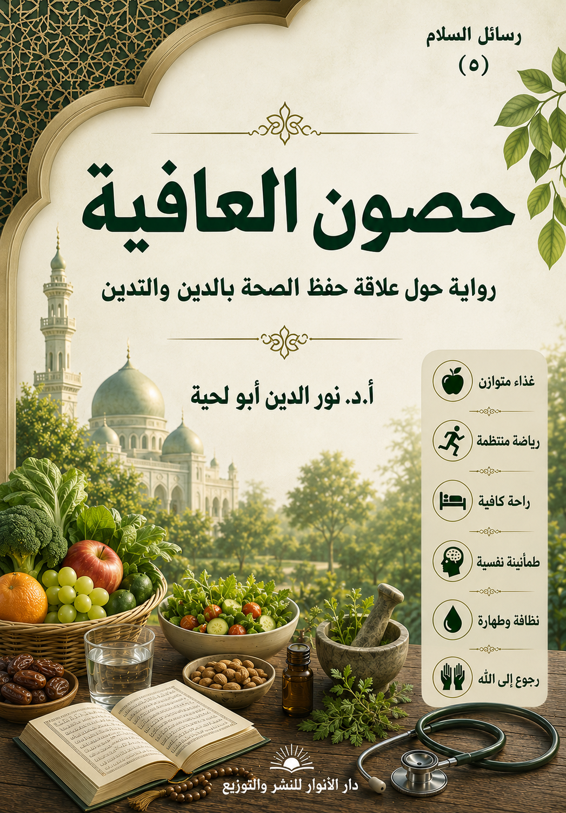

📖 الكتاب: حصون العافية
📝 الوصف: رواية حول الوقاية وحفظ الصحة وعلاقتها بالتدين
📚 السلسلة: رسائل السلام
✍ المؤلف: أ.د. نور الدين أبو لحية
🏢 الناشر: دار الأنوار للنشر والتوزيع
📅 الطبعة: الثانية
📥 تحميل: هنا
تتناول هذه الرسالة جانبا مهما من جوانب السلام وردت به النصوص المقدسة، وهو السلام مع الجسد والطين الذي خلقه الله للإنسان ليؤدي وظيفته التي كلف بها على هذه الأرض..
فالإنسان ـ كما ورد في النصوص المقدسة ـ تراب وطين وحمأ مسنون، كما أنه روح سامية نفخت فيه من الجناب المقدس..
وكما أن الإنسان مطالب بأن يسالم روحه، ويسالم كل الكون، فهو مطالب كذلك بأن يسالم جسده وطينه وحمأه المسنون، فلا يصارعه، ولا يذله، ولا يتعامل معه بما يخالف طبيعته.
وقد حاولت في هذه الرسالة أن أجمع أكبر قدر من النصوص المقدسة التي ترتبط بهذه الناحية، وأمزج بينها وبين ما يقوله العلم الحديث، وقد خرجت بحمد الله بمنظومة شاملة تكفي لتحقيق العافية التي طولبنا بأن نحرص عليها، وأن نستعمل كل ما يمكننا من أدوات لتحصيلها والحفاظ عليها..
المقدمة
تتناول هذه الرسالة جانبا مهما من جوانب السلام وردت به النصوص المقدسة، وهو السلام مع الجسد والطين الذي خلقه الله للإنسان ليؤدي وظيفته التي كلف بها على هذه الأرض..
فالإنسان ـ كما ورد في النصوص المقدسة ـ تراب وطين وحمأ مسنون، كما أنه روح سامية نفخت فيه من الجناب المقدس..
وكما أن الإنسان مطالب بأن يسالم روحه، ويسالم كل الكون، فهو مطالب كذلك بأن يسالم جسده وطينه وحمأه المسنون، فلا يصارعه، ولا يذله، ولا يتعامل معه بما يخالف طبيعته.
وقد حاولت في هذه الرسالة أن أجمع أكبر قدر من النصوص المقدسة التي ترتبط بهذه الناحية، وأمزج بينها وبين ما يقوله العلم الحديث، وقد خرجت بحمد الله بمنظومة شاملة تكفي لتحقيق العافية التي طولبنا بأن نحرص عليها، وأن نستعمل كل ما يمكننا من أدوات لتحصيلها والحفاظ عليها.
وقد رأيت أن هذه المنظومة تتكون من أربعة أركان، خصصت كل ركن منها بحصن من الحصون:
الحصن الأول: وهو حصن الاستقامة، فالملتزم بأحكام الشريعة لا يحفظ روحه فقط، بل يحفظ جسده أيضا، فالخمر والمخدرات والفواحش وغيرها من المحرمات الظاهرة لا تؤذي الروح فقط، بل تؤذي الجسد أيضا.. وهكذا المحرمات الباطنة من الحسد والكبر وغيره من الأمراض كلها تنهك الروح والجسد.
الحصن الثاني: وهو حصن الوقاية، وقد تناولت فيه التشريعات المرتبطة بالوقاية كالصوم وتحريم الإسراف والطهارة وغيرها، فكلها لها دور مهم وفاعل في الحفاظ على الصحة، كما أن لها دورا فاعلا في الحفاظ على الروح.
الحصن الثالث: وهو حصن القوة، وقد تناولت فيه كل حاجات الجسد التي تساهم في قوته والحفاظ عليه كالتغذية والرياضة والراحة.. وقد حاولت أن أبين فيه مدى حاجة الجسم إليها جميعا، ومدى العبودية التي يتحقق بها الإنسان حين يلبي هذه الحاجات، وفق ما تقتضيه آداب الشريعة وقوانين الصحة.
الحصن الرابع: وهو حصن التواصل، وتناولت فيه المنافذ التي جعلها الله للجسد للتواصل مع العالم، من السمع والبصر والشم والذوق واللمس والاستبصار.. وكيفية الاستفادة منها في تحقيق العافية، وفي التواصل السلمي مع العالم.
وقد قاد هذه الرحلة ـ كما قاد الكثير من رسائل السلام ـ معلم السلام الذي رحل بالمؤلف إلى الحصون التي أنشأها أهل مدائن السلام للتدريب على العافية.
وقد لقي المؤلف في رحلته هذه الكثير من العلماء والخبراء.. ورأى الكثير من الأشياء العجيبة التي جعلته يحتقر ما رآه بين قومه مما كان يفخر به.
وهي تنتقد الكثير من الظواهر السلبية التي تتلاعب بالجسد والصحة في سبيل أغراض خسيسة.. وتنتقد سكوت الفقهاء على ذلك مع كونهم مطالبين بالإنكار على المنكر جملة وتفصيلا..
وهي تدعو الجميع ـ من الخبراء والفقهاء ـ إلى بذل كل الجهود لمقاومة تجار المدنية الحديثة الذين يتلاعبون بجسد الإنسان لإرضاء الشيطان الذي أخبر أنه سيبذل كل جهوده لتغيير خلق الله، كما قال تعالى: ﴿إِنْ يَدْعُونَ مِنْ دُونِهِ إِلَّا إِنَاثًا وَإِنْ يَدْعُونَ إِلَّا شَيْطَانًا مَرِيدًا لَعَنَهُ اللَّهُ وَقَالَ لَأَتَّخِذَنَّ مِنْ عِبَادِكَ نَصِيبًا مَفْرُوضًا وَلَأُضِلَّنَّهُمْ وَلَأُمَنِّيَنَّهُمْ وَلَآمُرَنَّهُمْ فَلَيُبَتِّكُنَّ آذَانَ الْأَنْعَامِ وَلَآمُرَنَّهُمْ فَلَيُغَيِّرُنَّ خَلْقَ اللَّهِ وَمَنْ يَتَّخِذِ الشَّيْطَانَ وَلِيًّا مِنْ دُونِ اللَّهِ فَقَدْ خَسِرَ خُسْرَانًا مُبِينًا﴾ (النساء: 117 ـ 119)
البداية
بعد عودتي من مستشفى السلام، وامتلاء قلبي بتلك المعاني السامية التي استفدتها من معلمي ومن أطباء ذلك المستشفى الممتلئ بكل المعاني المقدسة، كما حكيت لكم قصة ذلك في (ابتسامة الأنين) صرت لا أفرق بين البلاء والعافية.. بل صار البلاء في ذهني لا يختلف عن أي نعمة من النعم التي ينعم الله بها على عباده..
وقد جعلني ذلك أقصر كثيرا في مداراة بدني بما يطلبه مني من حاجاته.. بل صرت أنظر إليه كما أنظر إلى الخرقة البالية التي أود التخلص منها لألبس بدلها لباسي الحقيقي الذي ينتظرني في دار الخلود..
ولم أكتف بذلك، بل رحت أشيع ذلك بين الناس، وأنا أصيح فيهم كل حين بقول الشاعر:
يا خادمَ الجسم كم تشقى بِخدمته
أتطلب الربح فيما فيه خسران
أقبل على النفس واستكمل فضائلها
فأنت بالنفس لا بالجسم إنسان
لكني.. وفي غمرة حماستي للمعاني التي تلقيتها في مستشفى السلام جاءني معلمي، وهو يقول: تعال معي إلى حصون العافية.. لتعيد لنفسك توازنها.. فلا يصح للروح أن تجور على الطين.. كما لا يصح للطين أن ينحرف بالروح.
قلت: لم أفهم..
قال: لقد تعلمت في مستشفى السلام كيف تداوي روحك التي جرحتها آلام جسدك.. وستتعلم في حصون العافية كيف تحفظ جسدك، لتستطيع روحك أن تؤدي رسالتها على هذه الأرض.
قلت: لم أفهم.
قال: سر معي.. وستفهم.. فلن يفهم إلا من سار.
سرت مع معلمي مسافات طويلة.. لست أدري هل كانت في قريتي التي نشأت فيها، أم في قرية أخرى.. بل لست أدري هل كنت حينها على الأرض، أم كنت خارجها.. فقد كنت أرى أشياء كثيرة لم أرها في حياتي قط، ولا أحسب أن مثلها موجود على الأرض.
فجأة لاحت لنا حصون بديعة.. فسألت المعلم عنها، فقال: هذه حصونك.. فادخلها..
قلت: ما تعني؟
قال: كما جعل الله لروحك حصونا تحفظها من الغفلة والتشتت والضلال، فقد جعل لطينك حصونا تحفظها من الآلام والأمراض والأسقام.
قلت: تقصد حصون العافية؟
قال: أجل.. فللعافية أسبابها، كما للبلاء أسبابه.
قلت: ولكني تعلمت في رحلتي السابقة أن أسكن للبلاء.. لا أن أواجهه.
قال: وستتعلم في رحلتك هذه كيف تتقي البلاء، وتتحصن منه.
قلت: أتريد أن تنسخ ما كنت قد علمتني إياه.
قال: لا.. فرق بين أن ينزل بك البلاء، وبين أن تنزل بنفسك البلاء.. فالله كما يجازيك على صبرك على البلاء، يحاسبك على تعريض نفسك له.
قلت: لم أفهم.. ما الذي تقصد؟
قال: إن الله خلق لك جسدك، وهو أمانة أعارك إياها لتؤدي وظيفتك، فلا يحق لك التقصير فيها.. فإن قصرت حوسبت.. ألم تسمع قوله صلى الله عليه وآله وسلم: (لا تزول قدما عبد يوم القيامة حتى يسأل عن عمره فيما أفناه، وعن علمه فيما فعل فيه، وعن ماله من أين اكتسبه، وفيما أنفقه، وعن جسمه فيما أبلاه)(1)
قلت: بلى.. فما فيه من العلم؟
قال: لقد أخبر صلى الله عليه وآله وسلم أن الله يسأل عباده عن أجسامهم، وفيما أبلوها.. فمن فرط في جسده بأن قصر في حقه حوسب على ذلك بحسب تفريطه.
قلت: لكن الله أمرنا بأن نضحي بأجسامنا في سبيله.
قال: فرق بين أن تضحي بجسمك في سبيل الله، وبين أن تضحي به في سبيل شهوة من الشهوات..
قلت: لقد حسبت أن هذا مجال الطب، ولا علاقة له بالدين.
قال: الدين الذي لا يعلمك كيف تحفظ روحك وجسدك وكل شيء ليس دين الله، بل هو دينك ودين البشر..
قلت: فهل سأتعلم في هذه الحصون هذا العلم؟
قال: أجل.. فهذه حصون العافية.. وهي تعلمك من سنن الله ما يجعلك محفوفا بالعافية.
***
دخلت مع المعلم إلى باب حصون العافية.. وقد فوجئت بالحراسة المشددة فيه، وهوما لم ألحظه عند مدخل مستشفى السلام.. أما المعلم، فلم يتنبه له الحرس الواقفون أمام الباب، فلذلك لم يتعرض لأي تفتيش.
أما أنا، فأوقفوني طويلا، يفتشون، قلت لهم: يا قوم.. والله إني لا أحمل سلاحا.. ولا أعرفه.. فلماذا تفتشوني كل هذا التفتيش؟
قال أحد الحرس: افتح فمك.
قلت له: ما هذا؟.. أتظن أني يمكن أن أخبئ سلاحا في فمي؟
لم ينتبه لما أقول.. بل راح ينظر إلى فمي مستعملا الإنارة والمكبرات التي يستعملها الأطباء.
قال لي: انصرف.. لا بد أن تغسل فمك أو لا، وتأتي.
اضطررت أن أنفذ ما يقولون مع أني لم أكن لأغفل عن تنظيفه، ثم عاودت الدخول: فراح ينظر في أنفي.. وهكذا ظللت أكثر يومي مع هؤلاء الحرس المتشددين، أما معلم السلام، فلم يتدخل، بل تركهم يعملون ما شاءوا، ويدققون في تفتيشهم ما يحلو لهم.
بعد انتهاء التفتيش دخلت مع المعلم إلى هذا القسم، لم أتجاسر أن أسأله عن تلك الشدة التي لاقاني بها الحرس، فقد خشيت أن يسمعني أحدهم، فلهم من الأجهزة المتطورة ما أقنعني بأنني تحت حراسة مشددة.
قال لي المعلم: لابد أن تصبر على حرس هذا الحصن.
قلت: لماذا وضعوا فيه هؤلاء الحرس الأشداء؟
قال: لا.. ليسوا أشداء.. بل هم أنصح لك من أبيك وأمك.
قلت: ولكنهم قساة.
قال: هي قسوة مملوءة برحمة، وشدة مكتنفة بلطف.
قلت: أتقصد ما قال الشاعر:
قسا ليزدجروا ومن يك راحما فليقسوأحيانا على من يرحم
قال: هو ذاك..
قلت: فلا خير في رحمة تضرني.. ومرحبا بقسوة تنفعني.
التفت إليهم مبتسما، وأنا أقول: جزاكم الله خيرا.. لقد أسأت فهمكم.
لم يلتفتوا إلي، بل ظلوا منشغلين بمعاينة وتفتيش كل داخل، لا يفرقون في ذلك بين وجيه ووضيع.
قلت للمعلم: لم كان هذ القسم تاليا للقسم السابق؟
قال: أجبني: عندما عاينت القسم السابق، بماذا حدثتك نفسك؟
قلت: سأصدقك.. لم أمر بقسم من الأقسام إلا تمنيت المكث فيه.. بل تمنيت أن أدفن في ثراه.. فمع أن العلة لا تزال تنخر في جسمي إلا أن الراحة التي كنت أشم عطرها في تلك الأقسام جعلتني أنسى كل علة، وأشعر بكل قوة، وأستغني عن كل دواء.
قال: فهذا القسم يدعوك إلى الفرار..
قلت: إلى الفرار من تلك الأحوال الربانية التي عشتها.. بل لم أعش مثلها.
قال: لا.. الفرار من بلاء الله إلى عافية الله.
قلت: ولكن ما أجمل البلاء الذي يجر إلى مثل تلك العافية والسعادة التي عشتها.
قال: نعم.. إن رحمة الله تدرك المبتلى، وهي تدرك كذلك المعافى، ألم تسع رحمته كل شيء؟
قلت: بلى..
قال: فهي تشمل الجميع إذن.
قلت: فما دامت تشمل الجميع، لماذا نفر من البلاء؟
قال: لأن الأصل هو العافية.. والبلاء عارض.
قلت: كيف هذا.. وأنا أرى في واقعي البلاء أصلا والعافية عارضا.
قال: ذلك لأنكم تنشغلون برؤية البلاء عن رؤية العافية.. فينسخ أحدكم القناطير المقنطرة من العافية بالدرهم الواحد من البلاء.
***
بينما نحن كذلك إذ مر علينا رجل ينادي في الجموع:(سلوا الله العافية.. سلوا الله العافية)
قلت للمعلم: من هذا؟
قال: هذا الممرض مكلف بهذه المهمة.. فهو يحذر من التعرض للبلاء.. ويدعوإلى سؤال العافية.
قلت: ولم يشغل نفسه بهذا؟.. فلا أظن الناس محتاجين لمن يذكرهم بهذا.
قال: هو يحيي سنة من سنة المصطفى صلى الله عليه وآله وسلم بذلك.
ضحكت، وقلت: أقوله هذا سنة.. هو لا يأمرهم بإعفاء اللحية، ولا بتقصير القميص.
قال: أجل.. ألم يكن رسول الله صلى الله عليه وآله وسلم يحض أمته على طلب العافية؟
قلت: بلى، فقد كان يقول:(سلوا الله العافية، فما أعطى أحد أفضل من العافية إلا اليقين)(2)
قال: وقد عاد صلى الله عليه وآله وسلم رجلا من المسلمين قد صار مثل الفرخ فقال له رسول الله صلى الله عليه وآله وسلم:(هل كنت تدعو بشيء أو تسأله إياه) قال:(نعم، كنت أقول: اللهم ما كنت معاقبي به في الآخرة فعجله لي في الدنيا، فقال رسول الله صلى الله عليه وآله وسلم:(سبحان الله لا تطيقه، ولا تستطيعه، فهلا قلت: ﴿رَبَّنَا آتِنَا فِي الدُّنْيَا حَسَنَةً وَفِي الْآخِرَةِ حَسَنَةً وَقِنَا عَذَابَ النَّارِ﴾ (البقرة:201)، قال: فدعا اللّه فشفاه(3).
وقال على مرة أمام رسول الله صلى الله عليه وآله وسلم:(اللهم إنى أسألك الصبر)، فقال صلى الله عليه وآله وسلم:(لقد سألت الله البلاء فسله العافية)(4)
قلت: ألهذا ـ إذن ـ كان صلى الله عليه وآله وسلم يستعيذ فى دعائه من بلاء الدنيا وبلاء الآخرة، وكان من دعائه صلى الله عليه وآله وسلم:(اللهم إنى أعوذ بك من ضيق الدنيا وضيق يوم القيامة)(5)
قال: نعم.. ولكن هذا بشرط تحقق الشكر، كما قال بعضهم: (الخير الذى لا شر فيه العافية مع الشكر، فكم من منعم عليه غير شاكر)، وقال آخر: (لأن أعافى فأشكر أحب إلى من أن أبتلى فأصبر)
قلت: لم ورد في النصوص الحث على طلب العافية.. ولم لم يترك الأمر لله ليختار لعبده ما يشاء؟
قال: إن سؤالنا العافية من الله أدب مع الله وتعظيم لله.
قلت: كيف هذا؟.. أليست العبودية هي أن نسكن لمجريات الأقدار.. فلا نتدخل فيها؟
قال: أليس من رحمة الله بنا أن يبتلينا لنرجع إليه؟
قلت: بلى.
قال: فكيف نرجع إليه؟
قلت: نتوب.
قال: وهل تحدثنا نفوسنا، ونحن نرجع إلى الله بطلب عافية الله؟
قلت: لا أكتمك بأن ذلك طبع.
قال: فهل هو طبع طيب أم طبع خبيث؟
قلت: هو طبع وكفى.. وقد يكون طيبا وقد يكون خبيثا.
قال: لا.. هو طبع طيب.. فالله تعالى لم يخلقنا إلا طيبين.. أجبني: هل من أسماء الله الحسنى التي أمرنا بإحصائها اسم المبتلي؟
قلت: لا.. فأنا أحفظها جميعا بحمد الله.
قال: فعدها.
قلت: هو الله.. الرحمن الرحيم..
قال: حسبك.. فطلب العافية طلب من الرحمن الرحيم.. وتحقق بعبودية الرحمن الرحيم.
قلت: أطلب العافية عبودية؟
قال: أرأيت لوكنت في بحر عميق، وغرقت فيه.. وكان بجانبك منقذ ماهر في السباحة.. ألا تمد يداك إليه لينقذك؟
قلت: مجنون أنا إن لم أفعل؟
قال: أرأيت لوقلت: لا أمد يدي إليه، بل أترك البحر يلتهمني.
قلت: في ذلك الحين إما أن أكون مجنونا، وإما أن أكون متكبرا.
قال: المجنون لا يفعل هذا.. بل يفعله المتكبر.. فلذلك كان طلبك العافية من الله.. وتذلك بين يديه عبودية لله لا تختلف عن أي عبودية.
قلت: لكني قرأت في سير الصالحين من يمتلئون بالحب إلى درجة سؤال الله البلاء.
قال: كمال ديننا نستلهمه من الله، ومن رسول الله، وممن أوصى بهم رسول الله.. أما الصالحون ففيهم العارفون، وفيهم السالكون، وهم يمرون بمراحل في سلوكهم وبمواجيد قد توحي لهم بما يقولون.. ألا تعرف سمنون؟
قلت: إي والله.. سمنون المحب.. ومن لا يعرفه، لقد كان ورده في كل يوم وليلة خمسمائة ركعة، وهوالقائل:
كان لي قلب أعيش بـه
ضاع مني في تقلـبـه
رب فاردده علي فقـد
ضاق صدري في تطلبه
وأغث ما دام بي رمـق
يا غياث المستغيث بـه
وهوالقائل:
وكان فؤادي خالي قبـل حـبـكم
وكان بذكر الخلق يلهـو ويمـرح
فلما دعا قلبي هو اك أجـابـه
فلست أراه عـن فـنـائك يبـرح
رميت ببين منك ان كنت كاذبا
وإن كنت في الدنيا بغـيرك افـرح
وإن كان شيء في البلاد بأسرها
إذا غبت عن عيني لعينـي يمـلـح
فان شئت واصلني وان شئت لا تصل
فلست ارى قلبي لغيرك يصـلـح
وهوالقائل:
تركت الفؤاد علـيلا يعـاد
وشردت نومي فما لي رقاد
وهو..
قال: لم أقصد أن تروي أشعاره.
قلت: لم يكن شاعرا بل كان محبا.. ولم تكن أشعاره سوى زفرات من قلبه الذي امتلأ عشقا.
قال: فقد دعاه حاله ومواجيده لأن يقول:
وليس لي في سواك حظ
فكيفما شئت فاختبرنى
قلت: الله!.. أي حب هذا؟!.. لقد دعته ثقته بحبه لله لأن يقول هذا.
قال: ولكن الله تعالى ابتلاه بعلة تدعوه إلى السنة.
قلت: كيف هذا؟
قال: لقد ابتلي بعلة الحصر.
قلت: إنها علة خطيرة، فماذا فعل؟
قال: كان بعد ذلك يدور على أبواب المكاتب، ويقول للصبيان:(ادعوا لعمكم الكذاب)
***
قلت: يا معلم.. لا يزال ذهني مضطربا، فكيف نجمع بين ما مر من نصوص تكاد ترغب في البلاء، وبين ما سقت من نصوص؟.. ألا تلاحظ أن هناك تناقضا صارخا؟
قال: معاذ الله.. كتاب الله ﴿لا يَأْتِيهِ الْبَاطِلُ مِنْ بَيْنِ يَدَيْهِ وَلا مِنْ خَلْفِهِ تَنْزِيلٌ مِنْ حَكِيمٍ حَمِيدٍ﴾ (فصلت:42).. التعارض في أذهانكم المشوشة التي تمتلئ بالصراع.
قلت: فكيف ننفي عنها الصراع، ونملؤها بالسلام؟
قال: ألم تسمع قوله صلى الله عليه وآله وسلم:(أيها الناس لا تتمنوا لقاء العدو، واسألوا الله العافية، فإذا لقيتم فاصبروا، واعلموا أن الجنة تحت ظلال السيوف، اللهم منزل الكتاب ومجري السحاب، وهازم الأحزاب اهزمهم، وانصرنا عليهم)(6)
قلت: بلى.
قال: فقد نهى صلى الله عليه وآله وسلم عن تمني لقاء العدو، وأمر في نفس الوقت بالصبر حين لقائهم، حتى لا يولي أحد دبره قائلا: لقد نهينا عن لقاء العدو.
قلت: فهذا الحديث فرق البلاء قبل نزوله وبعد نزوله.
قال: أجل.. فأمر بالصبر على البلاء إن نزل، ونهى عن طلبه إذا لم ينزل.
قلت: فهمت هذا.. فالموقف من البلاء إذن هو نفس الموقف من لقاء العدو.
قال: وهل العدو إلا بلاء من البلاء؟
قلت: هذا مثال جيد نفى التعارض بإنزال كل حالة محلها الخاص بها.
قال: سأزيدك ما يزيدك طمأنينة.. ألم ينه صلى الله عليه وآله وسلم عن تمني الموت.
قلت: بلى، فقد قال صلى الله عليه وآله وسلم:(لا يتمنين أحدكم الموت لضر نزل به، فإن كان لا بد متمنياً فليقل: اللهم أحيني ما كانت الحياة خيراً لي، وتوفني إذا كانت الوفاة خيراً لي)(7)
قال: فلهذا يحمل ما ورد من نصوص تدل على محبة الموت أو الرغبة فيه على هذا المعنى المحكم، ومن ذلك قوله صلى الله عليه وآله وسلم في دعائه:(اللهم إني أسألك فعل الخيرات وترك المنكرات وحب المساكين وإذا أردت في الناس فتنة فاقبضني إليك غير مفتون)(8)
قلت: لقد ذكرتني بحكمة لابن عطاء الله يقول فيها:(إرادتك التجريد مع إقامة الله إياك في الأسباب من الشهوة الخفية، وإرادتك الأسباب مع إقامة الله إياك في التجريد انحطاط عن الهمة العلية)
قال: صدق الحكيم، فما أدخلك الله فيه تولى إعانتك عليه، وما دخلت فيه بنفسك وكلك إليها.. ألم يأمرنا الله تعالى بأن نقول:﴿وَقُلْ رَبِّ أَدْخِلْنِي مُدْخَلَ صِدْقٍ وَأَخْرِجْنِي مُخْرَجَ صِدْقٍ وَاجْعَلْ لِي مِنْ لَدُنْكَ سُلْطَاناً نَصِيراً﴾ (الاسراء:80)؟
قلت: بلى.
قال: فالمدخل الصدق أن تدخل فيه بالله، والمخرج الصدق أن تخرج فيه بالله.
***
قلت: يا معلم.. لا يزال ذهني مضطربا، فكيف يطلب منا أن نفر من البلاء، والله تعالى يقول:﴿قُلْ لَنْ يَنْفَعَكُمُ الْفِرَارُ إِنْ فَرَرْتُمْ مِنَ الْمَوْتِ أو الْقَتْلِ وَإِذاً لا تُمَتَّعُونَ إِلَّا قَلِيلاً﴾ (الأحزاب:16)
وقد ذم الله قوما تعللوا بأسباب واهية ليفروا من البلاء، فقال تعالى:﴿وَإِذْ قَالَتْ طَائِفَةٌ مِنْهُمْ يَا أَهْلَ يَثْرِبَ لا مُقَامَ لَكُمْ فَارْجِعُوا وَيَسْتَأْذِنُ فَرِيقٌ مِنْهُمُ النَّبِيَّ يَقُولُونَ إِنَّ بُيُوتَنَا عَوْرَةٌ وَمَا هِيَ بِعَوْرَةٍ إِنْ يُرِيدُونَ إِلَّا فِرَاراً﴾ (الأحزاب:13)
وذم الفارين من الزحف، وهم إنما يفرون اتقاء لجراح تصيبهم أو قتل يفتك بهم، فقال تعالى:﴿وَمَنْ يُوَلِّهِمْ يَوْمَئِذٍ دُبُرَهُ إِلَّا مُتَحَرِّفاً لِقِتَالٍ أو مُتَحَيِّزاً إِلَى فِئَةٍ فَقَدْ بَاءَ بِغَضَبٍ مِنَ اللَّهِ وَمَأْوَاهُ جَهَنَّمُ وَبِئْسَ الْمَصِيرُ﴾ (لأنفال:16)
قال: إن الله تعالى، مع مطالبته لنا بحفظ أجسادنا وقوانا، إلا أنه طلب منا كذلك أن نبيعها له، فقال تعالى:﴿يَا أَيُّهَا الَّذِينَ آمَنُوا هَلْ أَدُلُّكُمْ عَلَى تِجَارَةٍ تُنْجِيكُمْ مِنْ عَذَابٍ أَلِيمٍ تُؤْمِنُونَ بِاللَّهِ وَرَسُولِهِ وَتُجَاهِدُونَ فِي سَبِيلِ اللَّهِ بِأَمْوَالِكُمْ وَأَنْفُسِكُمْ ذَلِكُمْ خَيْرٌ لَكُمْ إِنْ كُنْتُمْ تَعْلَمُونَ﴾ (الصف:10 ـ 11)
قلت: ما معنى بيع أجسادنا لله؟
قال: بأن نبذلها لله في حال الحاجة إلى ذلك، فنضحي بهذه الأجساد من أجل غاية سامية، أو خدمة نبيلة.
قلت: اضرب لي مثلا على ذلك يقرب لي هذا المعنى.
قال: مثل ذلك مثل شخص يعتني بسيارته صيانة وتنظيفا، لا حرصا عليها، وبخلا بها، وإنما لتكون في خدمته أو خدمة نبله ومروءته متى احتاج إلى ذلك.
قلت: ألهذا طلب الله تعالى منا أن نعتني بقوانا لنبذلها في سبيله بأي صورة من صور البذل، فقال تعالى:﴿وَأَعِدُّوا لَهُمْ مَا اسْتَطَعْتُمْ مِنْ قُوَّةٍ وَمِنْ رِبَاطِ الْخَيْلِ تُرْهِبُونَ بِهِ عَدُواللَّهِ وَعَدُوَّكُمْ﴾ (لأنفال:60)؟
قال: وبذلك يكون الفرار من البلاء وأسباب البلاء نوعا من أنواع الجهاد في سبيل الله، لأن مطيتنا لطاعة الله هي هذه الأجساد، فإن أهلكناها من غير حاجة تدعو إلى ذلك كان ذلك تلف لرأس مالنا.
قلت: ولهذا ـ إذن ـ فضل صلى الله عليه وآله وسلم المؤمن القوي على المؤمن الضعيف، فقال صلى الله عليه وآله وسلم:(المؤمن القوي خير وأحب إلى الله من المؤمن الضعيف، وفي كل خير)(9)
قال: أجل.. بل هذا ما نطق به القرآن الكريم، فالله تعالى يقول على لساني إحدى ابنتي الشيخ الصالح: ﴿يَا أَبَتِ اسْتَأْجِرْهُ إِنَّ خَيْرَ مَنِ اسْتَأْجَرْتَ الْقَوِيُّ الْأَمِينُ﴾ (القصص:26)
وعندما قال سليمان عليه السلام للملأ حوله مختبرا قواهم:﴿يَا أَيُّهَا الْمَلَأُ أَيُّكُمْ يَأْتِينِي بِعَرْشِهَا قَبْلَ أَنْ يَأْتُونِي مُسْلِمِينَ﴾ (النمل:38)، وقال ﴿الَّذِي عِنْدَهُ عِلْمٌ مِنَ الْكِتَابِ أَنَا آتِيكَ بِهِ قَبْلَ أَنْ يَرْتَدَّ إِلَيْكَ طَرْفُكَ فَلَمَّا رَآهُ مُسْتَقِرّاً عِنْدَهُ قَالَ هَذَا مِنْ فَضْلِ رَبِّي لِيَبْلُوَنِي أَأَشْكُرُ أَمْ أَكْفُرُ وَمَنْ شَكَرَ فَإِنَّمَا يَشْكُرُ لِنَفْسِهِ وَمَنْ كَفَرَ فَإِنَّ رَبِّي غَنِيٌّ كَرِيمٌ﴾ (النمل:40) حمد سليمان عليه السلام الله تعالى لأن القوة التي تكون للمؤمن والصالح فضل عظيم من فضل الله، وفضل الله يحافظ عليه، ولا يعبث به.
قلت: فكل هذه النصوص تدعونا لحفظ قوانا.
قال: لا بأن تحبسوها في قفص ذهبي، وتحرصوا عليها حرص البخلاء.
قلت: فماذا نفعل بها؟
قال: تبذلوها للحق، وللمروءة، والنبل.. وهل الجهاد في سبيل الله إلا قمة الفتوة والمروءة!؟
قلت: ألهذا إذن استثار الله تعالى الهمم بقوله:﴿وَمَا لَكُمْ لا تُقَاتِلُونَ فِي سَبِيلِ اللَّهِ وَالْمُسْتَضْعَفِينَ مِنَ الرِّجَالِ وَالنِّسَاءِ وَالْوِلْدَانِ الَّذِينَ يَقُولُونَ رَبَّنَا أَخْرِجْنَا مِنْ هَذِهِ الْقَرْيَةِ الظَّالِمِ أَهْلُهَا وَاجْعَلْ لَنَا مِنْ لَدُنْكَ وَلِيّاً وَاجْعَلْ لَنَا مِنْ لَدُنْكَ نَصِيراً﴾ (النساء:75)
قال: وبقوله:﴿أَلا تُقَاتِلُونَ قَوْماً نَكَثُوا أَيْمَانَهُمْ وَهَمُّوا بِإِخْرَاجِ الرَّسُولِ وَهُمْ بَدَأُوكُمْ أولَ مَرَّةٍ أَتَخْشَوْنَهُمْ فَاللَّهُ أَحَقُّ أَنْ تَخْشَوْهُ إِنْ كُنْتُمْ مُؤْمِنِينَ﴾ (التوبة:13)
***
رأيت في مدخل هذا القسم أربع قاعات جميلة بشكل قلاع متينة، سألت المعلم عنها، فقال: هذه حصون هذا القسم.. ألا تستدعي الوقاية التحصن؟
قلت: بلى.. ولكن أي أعداء يتربصون بهذا القسم حتى يحتاجون إلى هذه الحصون؟
قال: الأعداء يتربصون بالإنسان.. وهذه الحصون تعلم كيفية مواجهة هؤلاء الأعداء.
قلت: فهمت هذا.. ولكن لم كانت بشكل حصون؟
قال: لتذكر الداخل بضرورة التحصن.. وما كان لها أن تعلم التحصن، وهي غير محصنة.
قلت: فالحراسة فيها مشددة إذن؟
قال: أكثر مما تتصور.
قلت: فما الحصن الأول منها؟
قال: حصن الاستقامة.
قلت: فمما يحمي هذا الحصن؟
قال: هذا حصن الاحتماء من الأمراض التي يفرزها السلوك المنحرف.
قلت: وما علاقة الانحراف السلوكي بانحراف الصحة؟
قال: لأن الانحراف هو السبب الأكبر في كل بلاء يحدث، وأنة ترتفع.. ألم تسمع قوله تعالى:﴿فَفِرُّوا إِلَى اللَّهِ إِنِّي لَكُمْ مِنْهُ نَذِيرٌ مُبِينٌ﴾ (الذريات:50)
قلت: فما الحصن الثاني؟
قال: حصن الوقاية.
قلت: فمما يحمي هذا الحصن؟
قال: هذا حصن الوقاية، والابتعاد عن أسباب العلل، والحفاظ على أمانة الجسد التي أو دعها الله الإنسان، وعلى أمانة الوسط الذي يعيشه، وإلى هذا الركن يشير قوله صلى الله عليه وآله وسلم:(فر من المجذوم فرارك من الأسد)(10)
قلت: فما الحصن الثالث؟
قال: حصن القوة.
قلت: فما حصن القوة؟
قال: هو الحصن الذي يتم فيه تدريب قوى الجسم ليخافها البلاء، أو لتقاوم البلاء.
قلت: فما الحصن الرابع؟
قال: هذا حصن التواصل.
قلت: فما حصن التواصل؟
قال: لقد عرف أهل مدائن السلام أهمية التواصل مع العالم الذي وجد فيه الإنسان، فلذلك اهتمت بحفظ هذا التواصل وتقويته.. فأنشأت له قسما خاصا.
قلت: أتقسيم هذه الحصون اجتهاد اجتهده أهل مدائن السلام؟
قال: هو اجتهاد باركته النصوص.
قلت: كيف تباركه النصوص؟
قال: كل اجتهاد أشارت إليه النصوص امتلأ بركة وخيرا.
قلت: فما النصوص التي أشارت إلى هذا؟
قال: لقد أشار صلى الله عليه وآله وسلم إلى هذه الحصون الأربعة عند ذكره لأدب من آداب النوم، باعتبار النوم محلا للغفلة التي يتحينها الأعداء.
قلت: آداب النوم كثيرة.. فما هو الأدب الذي جمع هذه الحصون؟
قال: قوله صلى الله عليه وآله وسلم:(إذا قام أحدكم عن فراشه ثم رجع إليه فلينفضه بصنفة إزاره ثلاث مرات، فإنه لا يدري ما خلفه عليه بعده، وإذا اضطجع فليقل:(باسمك ربي وضعت جنبي وبك أرفعه، فإن أمسكت نفسي فارحمها، وإن أرسلتها فاحفظها بما يحفظ به عبادك الصالحين)، فإذا استيقظ فليقل:(الحمد لله الذي عافاني في جسدي، ورد علي روحي، وأذن لي بذكره)(11)
قلت: أهذا الحديث يشمل الحصون الأربعة؟
قال: أجل.. أما لحصن الأول، فيدل عليه قوله صلى الله عليه وآله وسلم في دعاء النوم: (وإن أرسلتها فاحفظها بما يحفظ به عبادك الصالحين) ففي ذكره للصالحين دليل على أن الله يحفظ عباده باستقامتهم وسلوكهم سبيله.
ويشير إليه أيضا قوله صلى الله عليه وآله وسلم في دعاء الاستيقاظ:(الحمد لله الذي عافاني في جسدي، ورد علي روحي، وأذن لي بذكره)، وهودليل على شعور قائله بنعمة الله عليه، بل التفاته إلى هذه النعم وانشغاله بذكر الله، وهوما يقيه كل الأمراض السلوكية الناتجة عن الغفلة، وعن عدم رؤية نعم الله.
قلت: والثاني؟
قال: يدل عليه قوله صلى الله عليه وآله وسلم:(إذا قام أحدكم عن فراشه ثم رجع إليه فلينفضه بصنفة إزاره ثلاث مرات، فإنه لا يدري ما خلفه عليه بعده)، فهواحتماء حسي ظاهر، واحتياط شرعي له تأثيره في الحفظ والحماية.
قلت: والثالث؟
قال: هو النوم نفسه.. أليس النوم سببا من أسباب القوة، وركنا من أركانها.
قلت: كيف هذا؟
قال: ألم ينزل الله النوم على أهل بدر ليستعدوا للمعركة بأجساد قوية؟
قلت: بلى، فقد قال تعالى:﴿إِذْ يُغَشِّيكُمُ النُّعَاسَ أَمَنَةً مِنْهُ وَيُنَزِّلُ عَلَيْكُمْ مِنَ السَّمَاءِ مَاءً لِيُطَهِّرَكُمْ بِهِ وَيُذْهِبَ عَنْكُمْ رِجْزَ الشَّيْطَانِ وَلِيَرْبِطَ عَلَى قُلُوبِكُمْ وَيُثَبِّتَ بِهِ الْأَقْدَامَ﴾(لأنفال:11)
قال: فقد جعل الله تعالى النوم سببا من أسباب ربط القلوب.
قلت: والرابع؟
قال: قوله صلى الله عليه وآله وسلم: (وأذن لي بذكره) فذكر الله اتصال بالله، واستخدام لأدوات الاتصال.
قلت: فهمت هذا.. ولكني أرى أعداء كثيرين يتربصون بالإنسان؟
قال: ويمكنك أن تتحصن منهم بهذه الحصون الأربع.
قلت: كيف هذا؟
قال: لأن العدوإما أن يكون داخليا أو خارجيا، فإن كان خارجيا، فإما أن يكون ظاهرا أو خفيا.
أما العدوالداخلي، فهوالأمراض النفسية الناتجة عن السلوك المنحرف، وأما العدوالخارجي الظاهر فهومسببات الأمراض من الجراثيم والفيروسات والحوادث وغيرها.
أما العدوالخارجي الخفي، فمنه ما نعرفه كالشياطين، ومنه ما نجهله وأمرنا بالاستعاذة منه.
قلت: فهل ندخل هذه الحصون الأربعة.. أم نكتفي بما عرفنا عنها؟
قال: لا مناص لنا من الدخول.. فكل من دخل هذا القسم تلزمه إدارة مدائن السلام بالتحصن بهذه الحصون.
قلت: لم أعلم أن حفظ الصحة إجباري.
قال: مدائن السلام تحرص على حفظ صحة رعيتها أكثر من حرصكم على جمع الضرائب.
قلت: مدنيتنا تستفيد من الضرائب في حفظ العمران.
قال: ومدائن السلام تستفيد من صحة الرعية في حفظ الإنسان.
__________
(1) رواه الترمذي.
(2) النسائي.
(3) مسلم.
(4) رواه الترمذى.
(5) رواه النسائي.
(6) البخاري ومسلم.
(7) البخاري.
(8) مالك.
(9) أحمد.
(10) ابن جرير.
(11) الترمذي.
أولا ـ حصن الاستقامة
قصدنا الحصن الأول، وقد كتب على بابه بحروف من نور قوله تعالى:﴿فَفِرُّوا إِلَى اللَّهِ إِنِّي لَكُمْ مِنْهُ نَذِيرٌ مُبِينٌ﴾ (الذريات:50)
قلت للمعلم: ما علاقة هذه الآية بهذا الحصن؟
قال: الله تعالى يأمر عباده باللجوء إليه والاعتماد عليه في أمورهم.
قلت: وقد قرن ذلك بالتحذير والإنذار ليدل على خطورة عدم الفرار إلى الله، وعدم اللجوء إليه.. ولكن ما علاقة ذلك بهذا القسم؟
قال: أليست الصحة والعافية نعمة؟
قلت: بلى، وقد عرفنا ذلك.. وهي نعمة لا تقدر بثمن.
قال: بل قرنها صلى الله عليه وآله وسلم بنعمة اليقين والإيمان، فقال صلى الله عليه وآله وسلم:(سلوا الله العفووالعافية، فإن أحد لم يعط بعد اليقين خيرا من العافية)(1)
قلت: وأخبر صلى الله عليه وآله وسلم عن كون الصحة نعمة عظيمة لا يلتفت إلى قيمتها كثير من الناس، فقال: (نعمتان مغبون فيهما كثير من الناس: الصحة والفراغ)(2)
قال: فقد عرفت إذن؟
قلت: وما عرفت؟ لم أعرف إلا أن الصحة نعمة.. وتلك معلومة قديمة سبق أن تحدثنا عنها.
قال: ألم يجعل الله تعالى للنعم حصونا تحميها، ومعاقل تحفظها؟
قلت: أجل..
قال: ومن هدم تلك المعاقل، أو كسر تلك الأبواب كان ذلك إيذانا بارتفاع العافية وحلول البلاء.
قلت: ولهذا ـ إذن ـ يقرن الله تعالى بين تبديل نعمة الله، وبين حلول البوار، كما قال تعالى:﴿أَلَمْ تَرَ إِلَى الَّذِينَ بَدَّلُوا نِعْمَتَ اللَّهِ كُفْراً وَأَحَلُّوا قَوْمَهُمْ دَارَ الْبَوَارِ﴾ (ابراهيم:28)
قال: وقد ضرب الله تعالى مثلا على هذا، فقال:﴿وَضَرَبَ اللّهُ مَثَلاً قَرْيَةً كَانَتْ آمِنَةً مُّطْمَئِنَّةً يَأْتِيهَا رِزْقُهَا رَغَدًا مِّن كُلِّ مَكَانٍ فَكَفَرَتْ بِأَنْعُمِ اللّهِ فَأَذَاقَهَا اللّهُ لِبَاسَ الْجُوعِ وَالْخَوْفِ بِمَا كَانُواْ يَصْنَعُونَ وَلَقَدْ جَاءَهُمْ رَسُولٌ مِنْهُمْ فَكَذَّبُوهُ فَأَخَذَهُمُ الْعَذَابُ وَهُمْ ظَالِمُونَ﴾ (النحل:112 ـ 113)
قلت: فقد كان هذا اللباس الجديد من البلاء بسبب الموقف الذي وقفوه من نعم الله؟
قال: أجل.. ولهذا قالوا:(ومن حفظ الله في صباه وقوته حفظه الله في حال كبره، وضعف قوته، ومتعه بسمعه وبصره وحوله وقوته وعقله)
قلت: لقد ذكر بعضهم أنه رأى رجلا جاوز مائة سنة وهوممتع بقوته وعقله، فوثب يوماً وثبة شديدة، فعوتب في ذلك فقال:(هذه جوارح حفظناها عن المعاصي في الصغر، فحفظها الله علينا في الكبر)
قال: وعكس هذا ما وري أن بعضهم رأى شيخاً يسأل الناس، فقال:(هذا الشيخ لم يحفظ الله في صغره، فلم يحفظه الله في كبره)
***
بينما نحن كذلك إذ سمعنا صوتا في مدخل الباب يردد بصوت عذب هذا الأثر الإلهي:(وعزتي وجلالي لا يكون عبد من عبيدي على ما أحب، ثم ينتقل عنه إلى ما أكره إلا إنتقلت له مما يحب عبيدي الى ما يكره ولا يكون عبد من عبيدي على ما أكره فينتقل عنه الى ما أحب الا إنتقلت له مما يكره الى ما يحب)
ثم تتلوه أنشودة بلحن عذب تقول:
إذا كنت في نعمة فارعها
فإن الذنوب تزيل النعم
وحطها بطاعة رب العباد
فرب العباد سريع النقم
وإياك والظلم مهما إستطعت
فظلم العباد شديد الوحم
وسافر بقلبك بين الورى
لتبصرى آثار من قد ظلم
فتلك مساكنهم بعدهم
شهود عليهم ولاتتهم
وما كان شىء عليهم اضر
من الظلم وهوالذي قد تصم
فكم تركوا من جنان ومن
قصور وأخرى عليهم اطم
قلت للمعلم: من أين تصدر هذه الأصوات الجميلة؟
قال: من إذاعة هذا القسم.
قلت: ألهذا القسم إذاعة.. ما أغنى مدائن السلام؟
قال: هي ليست كإذاعاتكم.. أنتم متخلفون كثيرا بالنسبة للحضارة التي وصلوا إليها هنا.
قلت: فكيف وصلوا إليها؟
قال: ببركات الله..
قلت: ماذا تقول؟
قال: لقد سمعوا قوله تعالى:﴿وَلَوأَنَّ أَهْلَ الْقُرَى آمَنُوا وَاتَّقَوْا لَفَتَحْنَا عَلَيْهِمْ بَرَكَاتٍ مِنَ السَّمَاءِ وَالْأَرْضِ﴾ (الأعراف:96)، فآمنوا واتقوا، فلما رأى الله صدقهم أنزل عليهم بركات من السماء والأرض.
قلت: ولكن قومي، ومن غير أن يسمعوا إلى هذه الآية، وصلوا إلى أشياء كثيرة.
قال: ليست العبرة بالكثرة، وإنما العبرة بالبركة، فقد يعطيك الله الكثير فيكون سببا لهلاكك، ويعطيك القليل المبارك فيفتح عليك به مفاتيح جنانه.
قلت: هذا صحيح.. فنحن نجمع في حياتنا صنوفا من النعم، ولكن لا نكاد نحس بها.
قال: ويوشك لو استمر بكم الأمر على ما أنتم عليه من الغفلة أن تسلبوا ما أعطيتم من النعم.
قلت: كيف؟
قال: ألا تعرف حضارة سبأ؟
قلت: أجل.. فهي حضارة راقية، فقد كانت لها من الجنات ما تنبهر له الأبصار، كما قال تعالى يصفها:﴿لَقَدْ كَانَ لِسَبَأٍ فِي مَسْكَنِهِمْ آيَةٌ جَنَّتَانِ عَنْ يَمِينٍ وَشِمَالٍ كُلُوا مِنْ رِزْقِ رَبِّكُمْ وَاشْكُرُوا لَهُ بَلْدَةٌ طَيِّبَةٌ وَرَبٌّ غَفُورٌ﴾ (سـبأ:15)
قال: ولكنهم بإعراضهم عن الله وانحراهم عن سبيله أدركتهم سنة الله فيمن حاد عن الله، قال تعالى يبين الحال التي انتقلوا إليها، وسببها:﴿فَأَعْرَضُوا فَأَرْسَلْنَا عَلَيْهِمْ سَيْلَ الْعَرِمِ وَبَدَّلْنَاهُمْ بِجَنَّتَيْهِمْ جَنَّتَيْنِ ذَوَاتَيْ أُكُلٍ خَمْطٍ وَأَثْلٍ وَشَيْءٍ مِنْ سِدْرٍ قَلِيلٍ﴾ (سـبأ:16)، فهذا الذي صار إليه أمر تينك الجنتين إليه بعد كفرهم وشركهم باللّه وتكذيبهم الحق وعدولهم عنه إلى الباطل، فبعد الثمار النضيجة والمناظر الحسنة والظلال العميقة والأنهار الجارية تبدلت إلى شجر الأراك والطرفاء والسدر ذي الشوك الكثير والثمر القليل.
قلت: ولكن مع ذلك فحضارة السبأيين بدائية بالنسبة لحضارتنا.
قال: القرآن الكريم يعمم هذا النموذج على كثير من القرى التي انحرفت عن سبيل الله، قال تعالى يبين سنته في ذلك:﴿وَكَمْ أَهْلَكْنَا مِنْ قَرْيَةٍ بَطِرَتْ مَعِيشَتَهَا فَتِلْكَ مَسَاكِنُهُمْ لَمْ تُسْكَنْ مِنْ بَعْدِهِمْ إِلَّا قَلِيلاً وَكُنَّا نَحْنُ الْوَارِثِينَ﴾ (القصص:58)، وقال تعالى:﴿أَفَلَمْ يَهْدِ لَهُمْ كَمْ أَهْلَكْنَا قَبْلَهُمْ مِنَ الْقُرُونِ يَمْشُونَ فِي مَسَاكِنِهِمْ إِنَّ فِي ذَلِكَ لَآياتٍ لِأُولِي النُّهَى﴾ (طـه:128)، وقال تعالى:﴿وَعَاداً وَثَمُودَ وَقَدْ تَبَيَّنَ لَكُمْ مِنْ مَسَاكِنِهِمْ وَزَيَّنَ لَهُمُ الشَّيْطَانُ أَعْمَالَهُمْ فَصَدَّهُمْ عَنِ السَّبِيلِ وَكَانُوا مُسْتَبْصِرِينَ﴾ (العنكبوت:38)، وقال تعالى:﴿أو لَمْ يَهْدِ لَهُمْ كَمْ أَهْلَكْنَا مِنْ قَبْلِهِمْ مِنَ الْقُرُونِ يَمْشُونَ فِي مَسَاكِنِهِمْ إِنَّ فِي ذَلِكَ لَآياتٍ أَفَلا يَسْمَعُونَ﴾ (السجدة:26)
***
قلت للمعلم: تلك عقوبات قدرية، قدرها الله على من لم يحترموا نعمه.
قال: والله بحكمته يشرع للعاصين من التشريعات ما يعاقبهم به جزاء وفاقا على معاصيهم.
قلت: لقد حرم الله تعالى بعض الطيبات على اليهود بسبب بغيهم، فقال تعالى:﴿وَعَلَى الَّذِينَ هَادُوا حَرَّمْنَا كُلَّ ذِي ظُفُرٍ وَمِنَ الْبَقَرِ وَالْغَنَمِ حَرَّمْنَا عَلَيْهِمْ شُحُومَهُمَا إِلَّا مَا حَمَلَتْ ظُهُورُهُمَا أو الْحَوَايَا أو مَا اخْتَلَطَ بِعَظْمٍ ذَلِكَ جَزَيْنَاهُمْ بِبَغْيِهِمْ وَإِنَّا لَصَادِقُونَ﴾ (الأنعام:146)، أي إنما حرمنا عليهم ذلك لأنهم يستحقون ذلك بسبب بغيهم وطغيانهم، ومخالفتهم رسولهم واختلافهم عليه.
وقد صرح القرآن الكريم بالغرض من تحريم هذه الطيبات وغيرها، فقال تعالى:﴿فَبِظُلْمٍ مِنَ الَّذِينَ هَادُوا حَرَّمْنَا عَلَيْهِمْ طَيِّبَاتٍ أُحِلَّتْ لَهُمْ وَبِصَدِّهِمْ عَنْ سَبِيلِ اللَّهِ كَثِيراً وَأَخْذِهِمُ الرِّبا وَقَدْ نُهُوا عَنْهُ وَأَكْلِهِمْ أَمْوَالَ النَّاسِ بِالْبَاطِلِ وَأَعْتَدْنَا لِلْكَافِرِينَ مِنْهُمْ عَذَاباً أَلِيماً﴾ (النساء:160 ـ 161)
ومثل ذلك ما أمر به بنوإسرائيل من قتل أنفسهم مع أن الشريعة في الأصل تحرم قتل النفس مطلقا، قال تعالى:﴿وَإِذْ قَالَ مُوسَى لِقَوْمِهِ يَا قَوْمِ إِنَّكُمْ ظَلَمْتُمْ أَنْفُسَكُمْ بِاتِّخَاذِكُمُ الْعِجْلَ فَتُوبُوا إِلَى بَارِئِكُمْ فَاقْتُلُوا أَنْفُسَكُمْ ذَلِكُمْ خَيْرٌ لَكُمْ عِنْدَ بَارِئِكُمْ فَتَابَ عَلَيْكُمْ إِنَّهُ هو التَّوَّابُ الرَّحِيمُ﴾ (البقرة:54)
قال: وليس ذلك خاصا ببني إسرائيل، فالعقوبات التشريعية مستمرة في هذه الأمة، ولوأنها لم تتخذ الطابع الجماعي، باعتبار عموم الرسالة وخلودها، فلذلك وضع الشرع الحدود والزواجر عقوبة وردعا للمنحرفين.
قلت: أجل.. فمن ظاهر من زوجته مثلا، أمر عقابا له بهذا التكفير الشديد، قال تعالى:﴿وَالَّذِينَ يُظَاهِرُونَ مِنْ نِسَائِهِمْ ثُمَّ يَعُودُونَ لِمَا قَالُوا فَتَحْرِيرُ رَقَبَةٍ مِنْ قَبْلِ أَنْ يَتَمَاسَّا ذَلِكُمْ تُوعَظُونَ بِهِ وَاللَّهُ بِمَا تَعْمَلُونَ خَبِيرٌ فَمَنْ لَمْ يَجِدْ فَصِيَامُ شَهْرَيْنِ مُتَتَابِعَيْنِ مِنْ قَبْلِ أَنْ يَتَمَاسَّا فَمَنْ لَمْ يَسْتَطِعْ فَإِطْعَامُ سِتِّينَ مِسْكِيناً ذَلِكَ لِتُؤْمِنُوا بِاللَّهِ وَرَسُولِهِ وَتِلْكَ حُدُودُ اللَّهِ وَلِلْكَافِرِينَ عَذَابٌ أَلِيمٌ﴾ (المجادلة:3 ـ 4)
وسبب ذلك أن هؤلاء المظاهرين يقولون منكرا من القول وزورا، قال تعالى:﴿الَّذِينَ يُظَاهِرُونَ مِنْكُمْ مِنْ نِسَائِهِمْ مَا هُنَّ أُمَّهَاتِهِمْ إِنْ أُمَّهَاتُهُمْ إِلَّا اللَّائِي وَلَدْنَهُمْ وَإِنَّهُمْ لَيَقُولُونَ مُنْكَراً مِنَ الْقَوْلِ وَزُوراً وَإِنَّ اللَّهَ لَعَفُوغَفُورٌ﴾ (المجادلة:2)
قال: وهكذا كانت العقوبات قدرية وتشريعية قانونا إلهيا وسنة من سنن الكون لا تكاد تتخلف.
قلت: ولهذا ورد في الآثار بيان أثير المعصية في العافية، ومن ذلك قوله عبد الله بن عباس: (إن للحسنة ضياء في الوجه، ونورا في القلب، وسعة في الرزق، وقوة في البدن، ومحبة في قلوب الخلق، وإن للسيئة سوادا في الوجه، وظلمة في القبر والقلب، ووهنا في البدن، ونقصا في الرزق، وبغضة في قلوب الخلق)
وقد ذكروا تأثير المعاصي في الراحة النفسية، فهذا رجل يشكو لبعض الصالحين وحشة يجدها في نفسه فقال له:
إذا كنت قد أو حشتك الذنوب فدعها إذا شئت واستأنس
***
رأيت بابين داخل هذا القسم، والمرضى يدخلون منهما بعد أن يتعرضوا لتفتيش شديد، سألت المعلم عنهما، فقال: هذان البابان يحويان العلاج مما ينبغي الفرار منه من الذنوب المؤثر على العافية.
قلت: أوراء تلك الأبواب أطباء يعالجون الذنوب؟
قال: أجل.
قلت: هل يسقى المريض فيها ما يجعله بريئا من الذنوب كيوم ولدته أمه؟
قال: لا.. بل يعطى من الحقائق والعلم، ممزوجا بالتربية والتمرين ما يقلع منه أصول المعاصي وفروعها.. ألستم تجعلون في مستشفياتكم محال لتمرين المرضى وتأهيلهم للحياة الصحية؟
قلت: بلى.. فبعض الأمراض تستدعي ذلك؟
قال: فكذلك رأت إدارة هذا القسم أن أكثر الأمراض ناشئة عن الانحرافات الخلقية، فلذلك جعلت هذا القسم الخاص بالوقاية منها.
قلت: وبذلك يتقون كل العلل التي تنبع من هذه الانحرافات.
قال: أجل.. فالوقاية خير من العلاج.
قلت: ولكن الذنوب كثيرة جدا لا تكاد تحصى، فلم وضع لها قسمان فقط؟
قال: هذان القسمان يحويان أصول الذنوب.
قلت: فما هما؟
قال: اجتناب الإثم، واجتناب العدوان، فكلاهما مما وردت النصوص بوجوب اجتنابه، قال تعالى منكرا على من اتصف بالإثم والعدوان:﴿وَتَرَى كَثِيراً مِنْهُمْ يُسَارِعُونَ فِي الْأِثْمِ وَالْعُدْوَانِ وَأَكْلِهِمُ السُّحْتَ لَبِئْسَ مَا كَانُوا يَعْمَلُونَ﴾ (المائدة:62)، وقال تعالى:﴿تَظَاهَرُونَ عَلَيْهِمْ بِالْأِثْمِ وَالْعُدْوَانِ﴾ (البقرة:85)، وقال تعالى:﴿وَيَتَنَاجَوْنَ بِالْأِثْمِ وَالْعُدْوَان﴾ (المجادلة:8)
قلت: فما الفرق بينهما؟
قال: مع أن كلا المصطلحين قد يطلق على الذنوب جميعا إلا أن اقترانهما في هذا الموضع يدل على أن لكل منهما معنى خاصا يشير إلى نوع من أنواع الانحراف.
وقد اختارت إدارة هذه الحصون مما قيل في التفريق بينهما أن الإثم يعني الذنوب التي تضر صاحبها فقط، على عكس العدوان الذي يتعدى طوره صاحبه الى الآخرين.
__________
(1) أحمد والترمذي.
(2) البخاري.
اجتناب الإثم
اقتربنا من الباب الأول، فرأينا لافتة كتب عليها قوله تعالى:﴿وَلا تَقْرَبُوا الْفَوَاحِشَ مَا ظَهَرَ مِنْهَا وَمَا بَطَنَ﴾ (الأنعام:151)، ورأيت على المدخل جهازا لم أر مثله في حياتي، لا يسمح للدخول إلى القسم إلا بعد المرور عليه.
قال لي المعلم: ادخل في هذا الجهاز، فإنه لن يسمح لك بالدخول إلا بعد المرور عليه.
قلت: وما هذا الجهاز؟
قال: هذا جهاز يبين أنواع الإثم التي تمتلئ بها نفسك.
قلت: يا ويلتي.. هذا جهاز الفضائح إذن.
قال: لا.. هذا جهاز ناصح لا فاضح.. فإنه لا يسلم المعلومات لغيرك.
قلت: فما الحاجة إليه إذن.. فلا أحد يجهل فضائحه؟
قال: لا.. هناك من لا يفرق بين الطاعة والمعصية.. ألا تعلم ثمرات الغفلة؟
قلت: بلى.. وقد قال تعالى:﴿الَّذِينَ ضَلَّ سَعْيُهُمْ فِي الْحَيَاةِ الدُّنْيَا وَهُمْ يَحْسَبُونَ أَنَّهُمْ يُحْسِنُونَ صُنْعاً﴾(الكهف:104)
قال: وقال تعالى:﴿لا تَحْسَبَنَّ الَّذِينَ يَفْرَحُونَ بِمَا أَتَوْا وَيُحِبُّونَ أَنْ يُحْمَدُوا بِمَا لَمْ يَفْعَلُوا فَلا تَحْسَبَنَّهُمْ بِمَفَازَةٍ مِنَ الْعَذَابِ وَلَهُمْ عَذَابٌ أَلِيمٌ﴾ (آل عمران:188)
قلت: فهمت هذا.. ولكن ما فائدة أن يعطيك جريدة فضائحك؟
قال: لتعالجها.. ألا تعلم أن التشخيص هو نصف العلاج؟
قلت: أهذا جهاز أشعة إذن؟
قال: أجل.. وما يعطيك من نتائج هي التي تذهب بها إلى الأطباء ليعرفوا مبلغ العلة فيك، فيعالجوك بحسب ما تحتاجه من أدوية.
قلت: الله! لقد بلغت مدائن السلام مبلغا عظيما في التطور.
قال: أنت لم تر شيئا..
قلت: هل سندخل جميعا لهذا الجهاز؟
قال: لا.. ادخل أنت فقط.. أما أنا فلا علاقة لي بهذا.. أنسيت أني معلم السلام؟
قلت: ولكن هؤلاء الحرس الأشداء لن يتركوك إلا بعد أن تمر.
ضحك، وقال: لا بأس إن طلبوا مني الدخول، فسأدخل.
دخل معلم السلام من الباب، فلم أر أحدا من الحراس انتبه له، ولا اهتم به مع أن الذبابة تمر، فلا يسمح لها بالدخول حتى تمر على ذلك الجهاز..
أردت أن أدخل كما دخل معلم السلام، فواجهني أحد الحرس بشدة، وقال: مر على الجهاز أو لا.
قلت: ولكن معلم السلام مر عليكم دون أن يمر على الجهاز.
ضحكوا فيما بينهم، وقالوا: لا تمر علينا الذبابة إلا بعد أن تمر عليه، فكيف يمر علينا معلمك هذا؟
لم أجد بدا من الدخول، ولكني لم أجد في نفس الوقت بدا من سؤال المعلم عن سر عدم أمره بالمرور على الجهاز، فقال لي: إذا صرت مثلي، فلن يأمرك أحد، ولن يحاسبك أحد، ألم تعلم أن سبعين ألفا من هذه الأمة يدخلون الجنة من غير أن يعرفوا حسابا ولا ميزانا؟
قلت: فأنت منهم إذن.
قال: دعك من هذا، ودعك مني.. هل جئت بالوثيقة معك؟
قلت: أجل..
قال: فاحتفظ بها لنفسك.. ولا ترها أحدا من خلق الله إلا لمن وكل الله إليهم علاجك.
قلت: لم؟
قال: ألم تسمع قوله صلى الله عليه وآله وسلم:(كل أمتي معافى إلا المجاهرين، وإن من الإجهار أن يعمل الرجل بالليل عملا ثم يصبح وقد ستره الله فيقول: عملت البارحة كذا وكذا، وقد بات يستره ربه فيصبح يكشف ستر الله عز وجل عنه)(1)
***
بينما نحن كذلك مر علينا رجل، وهويصيح بصوت فيه قوة وحزم، وهويردد قوله صلى الله عليه وآله وسلم:(يا معشر المهاجرين! خصال خمس إذا ابتليتم بهن وأعوذ بالله أن تدركوهن: لم تظهر الفاحشة في قوم قط حتى يعلنوا بها إلا فشا فيهم الطاعون والأوجاع التي لم تكن مضت في أسلافهم الذين مضوا، ولم ينقصوا المكيال والميزان إلا أخذوا بالسنين وشدة المؤنة وجور السلطان عليهم، ولم يمنعوا زكاة أموالهم إلا منعوا القطر من السماء، ولولا البهائم لم يمطروا، ولم ينقضوا عهد الله وعهد رسوله إلا سلط الله عليهم عدوهم من غيرهم فأخذوا بعض ما كان في أيديهم، وما لم يحكم أئمتهم بكتاب الله عز وجل ويتخيروا فيما أنزل الله إلا جعل الله بأسهم بينهم)(2)
قلت للمعلم: ما يقول هذا؟
قال: هذا يذكر المرضى بالعقوبات القدرية التي ينزلها الله تعالى على الآثمين.
قلت: أهي عقوبات كعقوبات عاد وثمود؟
قال: لا.. لا يشترط أن تأتي عن طريق الخوارق، فالله يعاقب بسننه التي نظم بها الكون.
قلت: اشرح لي هذا.
أمسك بيدي شخص وقور أظنه يعمل طبيبا في مدائن السلام، وقال لي برقة: أنا معاصر لك، وأعلم كثيرا مما يدور في خلدك.. إن دلائل هذا في الواقع منتشرة، تدل عليها البحوث العلمية، وتزيد في توثيقها الإحصاءت الدقيقة، وتزيد في تأكيدها التجربة والمعايشة.
قلت: فاضرب لي مثالا على ذلك.
قال: سأضرب لك مثالا بسيطا قد يعتبره نفر من قومي وقومك بأنه من القشور التي لا يصح الحديث عنها.
قلت: كثير من الأشياء يعتبرها قومي كذلك.. ولو أني طبعت على حب أكل القشور، كما أحب أكل اللباب.
قال: لقد نهى صلى الله عليه وآله وسلم عن النفخ في الشراب والطعام.
قلت: أجل.. لقد وردت أحاديث كثيرة في هذا تدل على أهمية المسألة.
قال: أتدري ما عاقبة التفريط في تطبيق هذا النهي الشرعي مع بساطته مقارنة بالأحكام الأخرى.
قلت: لا.. ولا أظن الأمر له عواقب خطيرة.
قال: لقد تسبب التفريط في هذا إلى في حدوث أو بئة خطيرة، فقد أجرى بعض الباحثين دراسة على درن(3) الأمعاء في السودان، فوجدوا أن السبب الرئيسي لدرن الأمعاء في السودان هو جرثومة الدرن الإنسانية، بعكس ما هو معروف عالميا من أن السبب هو الجرثومة الدرنية البقرية.
قلت: فما سر هذا؟
قال: أرجع هؤلاء الباحثون علة ذلك إلى العادة المتبعة في خض اللبن وصنع الزبدة منه حيث يتم ملء القربة إلى نصفها باللبن، ثم تنفخ المرأة ـ والتي قد تكون مصابة بدرن الصدر ـ بفمها في القربة لتملأ النصف الآخر بالهواء، ثم يبدأ خض اللبن وتفصل الزبدة ويشرب اللبن بدون غلي أو تسخين، وبالتالي ينتقل المرض من صدر المرأة إلى أمعاء الآخرين، وتنتشر هذه العادة في كثير من بلاد المسلمين مع أنه منهي عنها شرعا.
قلت: سبحان الله.. إننا نحتقر مثل هذا.. فيعاقبنا الله بما كنا في غنى عنه.
***
رأيت بابين داخل هذا الحصن، فسألت المعلم عنهما، فقال: ألم تقرأ قوله تعالى:﴿وَلا تَقْرَبُوا الْفَوَاحِشَ مَا ظَهَرَ مِنْهَا وَمَا بَطَنَ﴾ (الأنعام:151)؟
قلت: بلى.. فما علاقة هذه الآية بالبابين؟
قال: الآثام تنقسم إلى قسمين: آثام ظاهرة، وآثام باطنة، وكلا القسمين له أثره الخطير على الصحة، وقد رأت إدارة هذه الحصون تخصيص قاعتين لعلاج ذلك.
__________
(1) البخاري ومسلم.
(2) ابن ماجه والحاكم.
(3) يعتبر الدرن من الأمراض الشائعة في بعض الدول الإسلامية، وهو ينتقل عن طريق الهواء.
باطن الإثم:
دخلنا القاعة الأولى.. وقد كانت أشبه بحصن منيع، فشعرت بانقباض نفسي نتيجة لذكريات مرت على خاطري، لست أدري ما الذي جلبها إلى خاطري تلك اللحظة، وقد كانت من القوة بحيث شغلتني عن النظر في جدر تلك الحصن وأبوابه مع أنها كانت في منتهى الروعة والجمال.
ثم ازدادت الخواطر شدة حتى ذهلت عن معلم السلام، وأصبحت أهذي بالحديث عن أولئك الأعداء الذين لم يكتفوا بتكدير حياتي، بل راحوا بأشخاصهم المخيفة في زوايا صدري يكدرون تلك اللحظات السعيدة التي أعيشها في مدائن السلام.
قلت للمعلم: أنجدني من هؤلاء الأعداء الذين يملأون صدري بالوساوس وخواطر السوء.
قال: فمن تركهم يسكنون صدرك؟
قلت: ظلمهم وحقدهم وطغيانهم.
قال: فلماذا جعلت صدرك فندقا لهم؟
قلت: هم نزلوه غصبا عني.
قال: صدرك هو حصنك، ولا يقتحمه إلا من فتحت له.. فأبواب حصونك لم يجعلها الله لغيرك.
قلت: أترى أن المفاتيح ضاعت مني، فأخذوها وولجوا حصون صدري، أو تراهم حطموا الحصون ودخلوا، أو تراهم..
قال: ليس الشأن أن تعرف كيف دخلوا، ولكن الشأن أن تعرف كيف تخرجهم.
قلت: فكيف أخرجهم.. فإني لن أشعر بالسعادة ما داموا ينزلون فنادق صدري.
قال: بالسلوك.. ألسنا في حصن الاستقامة؟
قلت: فما حصن الاستقامة؟
قال: هو الحصن الذي يطهر أرض النفس من الأعشاب السامة، والأشواك الجارحة، والظلمة القاتمة، لأن امتداد هذه الظلمات يسري من النفس إلى الروح، ومن الروح إلى الجسد، فينهك قواه، ويقطع أو صاله، ويهدم بنيانه.
قلت: أحصون العافية تبحث في هذا؟
قال: من الحماقة أن تهتم الحصون بدفع الآفات عن الأجسام الظاهرة، ثم تترك البواطن مأوى للخفافيش والعقارب والحيات.
قلت: لقد ذكرتني بقول الغزالي:(ما أشد حماقة من دخلت الأفاعي والعقارب تحت ثيابه وهمت بقتله، وهويطلب مذبة يدفع بها الذباب عن غيره، ممن لا يغنيه ولا ينجيه مما يلاقيه من تلك الحيات والعقارب إذا همت به)
قال: ولهذا اعتبر القرآن الكريم ما يحدث في القلب من ظنون سيئة وأفكار رديئة مرضا، بل مرضا خطيرا، فقال تعالى:﴿فِي قُلُوبِهِمْ مَرَضٌ فَزَادَهُمُ اللَّهُ مَرَضاً وَلَهُمْ عَذَابٌ أَلِيمٌ بِمَا كَانُوا يَكْذِبُونَ﴾ (البقرة:10)
وهذا المرض أخطر بكثير من مرض الأجساد، لأن مرض القلب مرض للروح، ومرض الروح يمتد ليشمل كل وسائل الإدراك، قال تعالى:﴿خَتَمَ اللَّهُ عَلَى قُلُوبِهِمْ وَعَلَى سَمْعِهِمْ وَعَلَى أَبْصَارِهِمْ غِشَاوَةٌ وَلَهُمْ عَذَابٌ عَظِيمٌ﴾ (البقرة:7)، وقال تعالى:﴿أو لَئِكَ الَّذِينَ طَبَعَ اللَّهُ عَلَى قُلُوبِهِمْ وَسَمْعِهِمْ وَأَبْصَارِهِمْ وَأُولَئِكَ هُمُ الْغَافِلُونَ﴾ (النحل:108)
فإذا شغل وسائل الإدراك وملأها ظلمة لم يجد معه أي علاج، فلهذا لا تنفعهم رقى القرآن الكريم التي ينتفع بها جميع الناس، قال تعالى:﴿وَأَمَّا الَّذِينَ فِي قُلُوبِهِمْ مَرَضٌ فَزَادَتْهُمْ رِجْساً إِلَى رِجْسِهِمْ وَمَاتُوا وَهُمْ كَافِرُونَ﴾ (التوبة:125)
قلت: ألهذا تبتلى القلوب المريضة بالهم والغم والكآبة؟
قال: أجل.. ولكنهم يسترونه بالزهو الكاذب، والفرح الذي لا يعدو أن يكون كبرا وبطرا، قال تعالى:﴿إِنْ تَمْسَسْكُمْ حَسَنَةٌ تَسُؤْهُمْ وَإِنْ تُصِبْكُمْ سَيِّئَةٌ يَفْرَحُوا بِهَا وَإِنْ تَصْبِرُوا وَتَتَّقُوا لا يَضُرُّكُمْ كَيْدُهُمْ شَيْئاً إِنَّ اللَّهَ بِمَا يَعْمَلُونَ مُحِيطٌ﴾ (آل عمران:120)
قلت: والهم والغم هما منبعا العلل ومصدرا الأمراض جسديها ونفسيها.
رأيت داخل القاعة رجلا بزي عصري يتكلم بلغة عربية مختلطة بعجمة، سألت المعلم عنه، فقال: هذا رجل من قومك جاء أستاذا زائرا لهذه الحصون، ليبين للمرضى العلاقة بين الأمراض الحسية والأمراض السلوكية.
قلت: لم؟
قال: لا تكتمل العافية إلا بتحصين الجسم من جميع ثغراته.. أرأيت لوأن حصنا منيعا التف الأعدء به من كل ناحية، وكانت أبوابه موصدة جميعا، لكن بابا من أبوابه فتح لدخول الأعداء، ولم يلق أي مقاومة، هل سيبقى الحصن منيعا؟
قلت: لا.. سيستعمر هذا الحصن لا محالة، وسيسبى أهله، أو يقتلون.
قال: فكذلك حصن الجسم.. لا يكفي أن تحصنه من جهة، وتترك الرياح والأعاصير تعبث به من جهات أخرى.
اقتربنا من الرجل، فسمعناه سائلا يقول له: الأمراض العصبية والنفسية تنتشر في عصرنا انتشارا شديدا متفاقما، فما أسباب ذلك؟
قال: إن من الأسباب الرئيسية لهذه الأمراض الشعور بالإثم والخطيئة والحقد والقلق والكبت والتردد والشك والغيرة والأثرة والسأم.. ومما يؤسف له أن كثيراً ممن يشتغلون بالعلاج النفسي قد ينجحون في تقصي أسباب الاضطراب النفسي الذي يسبب المرض، ولكنهم يفشلون في معالجة هذه الاضطرابات لأنهم لا يلجأون في علاجها إلى بث الإيمان بالله في نفوس هؤلاء المرضى.
ونحب فوق ذلك أن نتساءل عن هذه الاضطرابات الانفعالية والعوامل التي تسبب تلك الأمراض، إنها هي ذاتها الاضطرابات التي جاءت الأديان لكي تعمل على تحريرنا منها.
فقد علم الله بقدرته وحكمته حاجاتنا النفسية ودبر لها العلاج الكامل، وقد وصف الأخصائيون النفسيون القفل الذي يغلق باب الصحة، وآتانا الله المفتاح الذي يفتح هذا الباب، ولا يمكن أن يقودنا التخبط الأعمى إلى فتح هذا القفل المعقد، بل إنه لا يستطيع أن يمدنا بالمفتاح الذي يفتح باب الروح الإنسانية، فالله وحده هو الذي يستطيع أن يهدينا طريق الصواب.
فماذا يخبرنا الله ـ المستعان على فهم الأمورـ عن هذه المفاتيح؟ إن ذلك يتلخص في أننا نركب الإثم والذنوب ونحتاج إلى عفوالله ومغفرته، حتى نعود إلى رحابه ونعفو عن غيرنا إن المذنبين الذين ينالهم هذا الصفح تتجلى في نفوسهم روح الله فيذهب عنهم الخوف القلق، ولا يكون هنالك سبيل إلى إصابتهم بالكبت والغيرة والأثرة.
فعتدما تحل محبته في القلب، تفارقها الشرور والآثام، ولا ينتابها السأم وتفيض بالآمال الحية التي تنبعث منها الحياة.
سأله سائل آخر: اذكر لنا من واقع تجربتك ما يبرهن على هذا؟
قال: لقد وجدت في أثناء ممارستي للطب أن تسلحي بالنواحي الروحية إلى جانب إلمامي بالمادة العلمية يمكناني من معالجة جميع الأمراض علاجاً يتسم بالبركة الحقيقة، أما إذا أبعد الإنسان ربه عن هذا المحيط، فإن محاولاته لا تكون إلا نصف العلاج، بل قد لا تبلغ هذا القدر.
فمعظم القرح المعدية لا ترجع إلى ما يأكله الناس كما يقال، وإنما إلى ما تأكل قلوبهم، ولابد لعلاج المريض بها من علاج قلبه وأحقاده أو لاً، وليكن لنا أسوة بالأنبياء الذين كانوا يصلون من أجل أعدائهم ويدعون لهم بالخير، فإذا تطهرت قلوبنا وصرنا مخلصين، فإننا نشق طريقنا نحوالشفاء، وبخاصة إذا كان العلاج الروحي مصحوباً بتناول المواد ضد الحامضية وغيرها من العقاقير التي تساعد على الشفاء من هذه القرح.
وهنالك كثير من الحالات النفسية التي يلعب الخوف والقلق دوراً هاماً فيها، فإذا عولج الخوف والقلق على أساس تدعيم إيمان الإنسان بالله، فإن الصحة والشفاء يعودان إلى الإنسان بصورة كأنها السحر في كثير من الحالات.
التفت إلي المعلم، وقال: هذا الكلام لم يقله الربانيون من هذه الأمة، وإنما قاله طبيب درس الطب كما يدرس المعادلات الرياضية، ولكن خبرته أرشدته إلى حقيقة الأدواء التي تعاني منها الحضارة الحالية، الحضارة التي تهتم بإحلال السلام على الأرض، وتغفل عن النفوس، مع أن السلام لا ينطلق إلا من النفوس.
***
رأيت داخل الحصن أبوابا كثيرة جدا، كل باب يدخل منه مرضى كثيرون، سأت المعلم عنه، فقال: هذه الأبواب تؤدي إلى القاعات المكلفة بعلاج العلل السلوكية المؤدية إلى العلل الجسدية.
قلت: فمن يرسل المرضى إلى هذه الأبواب؟
قال: جميع أقسام هذه الحصون.
قلت: كيف ذلك؟
قال: ربما يأتي المريض لعلاج علة من العلل، فيجري الطبيب فحوصاته، فيرى باطنه مملوءا بالكدورات، فلا يرى له من علاج غير غسل تلك الكدورات ليستقيم له علاجه، وكثير من المرضى المرسلين إلى هذا الحصن يعودون إلى بيوتهم من غير أن يعودوا للاستشفاء.
قلت: لم؟
قال: لأن العلل التي كانت تكدر صفو حياتهم لم تكن علل أجساد، بل كانت علل قلوب تفرز سمومها على أجسادهم.
قلت: فهل سندخل من هذه الأبواب جميعا؟
قال: إذن لن نخرج من هنا أبدا..
قلت: ولكن أنترك الشياطين تعشش في قلوبنا؟
قال: لنا رحلات أخرى خاصة بعلاج هذه العلل.. أما الآن، فسنكتفي بزيارة قاعتين من هذه القاعات لنتبين من خلالهما أثر الأمراض النفسية في الحالة الصحية.
الحسد:
دخلنا القاعة الأولى، وقد كتب على بابها قوله صلى الله عليه وآله وسلم:(دب فيكم داء الأمم من قبلكم: الحسد والبغضاء، والبغضة هي الحالقة، لا أقول حالقة الشعر، ولكن حالقة الدين، والذي نفس محمد بيده، لا تدخلوا الجنة حتى تؤمنوا ولا تؤمنوا حتى تحابوا)(1)
قلت للمعلم: أهذه القاعة مخصصة لعلاج الحسد.
قال: أجل.. ألم تر النبي صلى الله عليه وآله وسلم يعتبر الحسد داء من الأدواء الخطيرة؟
قلت: وقد اعتبره حالقا للدين.
قال: هو حالق للدين وللدنيا، فلا راحة لحاسد في دنياه، ولا استقرار له في دينه.
قلت: وقد ورد في الحديث الشريف قوله صلى الله عليه وآله وسلم:(إياكم والحسد، فإن الحسد يأكل الحسنات كما تأكل النار الحطب)
قال: وهويأكل الصحة والعافية كما تأكل النار الحطب.
رأيت مرضى كثيرين في هذه القاعة، ورأيت أطباء كثيرين مجتمعين.. كل طبيب يحاول أن يقنع مرضاه بخطورة الحسد.
قلت للمعلم: لماذا اجتمع كل هؤلاء الأطباء لبيان خطورة الحسد؟
قال: هذا هو الركن الأول من علاج الحسد، كما أنه الركن الأول لعلاج كل علة.. ألا ترى أنك لا تسارع للطبيب إلى إذا خشيت على صحتك من داء له خطر أو بعض الخطر.
قلت: أجل.. فلو جرحت أصبعي مثلا.. وسال الدم منها، لا أسارع للطبيب..
قال: فدور هؤلاء الأطباء هو توعية المرضى بخطورة هذا الداء ليشعلوا في قلوبهم النيران التي تحثهم على طلب العلاج.
اقتربنا من بعض الأطباء، فسمعناه يقول: ولعظم ضرر الحسد على الإنسان وعلى المجتمع، فقد نفر القرآن الكريم منه، وأمر بالاستعاذة من شر الحاسد كما أمر بالاستعاذة من نفث الشيطان، فالحسد مفسد للطاعات، باعث على الخطايا.. وهو نار تضطرم في صدر الحسود، فما تراه إلا كاسف الوجه، قلق الخواطر، غضبان على القدر قد عادى حكمة الله، قال تعالى:﴿أَمْ يَحْسُدُونَ النَّاسَ عَلَى مَا آتَاهُمُ اللَّهُ مِنْ فَضْلِهِ﴾(النساء:54)..
اقتربنا من طبيب آخر(2)، فسمعناه يقول: الحسد يضر بالنفس لأنه يشغلها عن التصرف المفيد لها وللبدن، وذلك يسبب طول الحزن والتفكر، ثم إنه يضر بالجسد لما يعرض للمحسود من طول السهر وسوء الاغتذاء، وينشأ عن ذلك رداءة من اللون وسوء السحنة وفساد المزاج.
اقتربنا من طبيب آخر، فسمعناه يقول: والحسد يؤدي إلى ظهور انفعالات نفسية عصبية كما تضطرب عنده الغدد الصماء، فيعتل جسمه ويذوب.
فالحاسد دوماً في ضيق وقلق، وهذا يصحبه الأرق، ومع استمرار الأرق يحس بالإعياء والتعب ويفقد شهيته للطعام ويتناقص وزنه ثم تظهر عنده أعراض عصبية مزعجة، كالصداع والطنين في الأذنين تمنع عنه الراحة والهدوء، وقد تظهر آلام خناقية في صدره، وكلما احتدمت نزوات حسده زاد الألم وتكررت نوباته مما يعرضه للإصابة بالذبحة الصدرية.
والحسد يهيء للإصابة بقرحة المعدة التي ثبت أنها تنشأ من الانفعالات أكثر مما تنشأ عن خطأ في التغذية، وقد يؤدي لارتفاع الضغط الدموي، والذي يتناسب ارتفاعه مع زيادة الانفعالات ويعظم خطره. ونحن نعلم أن أطباء القلب يوصون المرضى بالهدوء والراحة وترك الهواجس، ونبذ انشغال الفكر بالغير والبعد ما أمكن عن الانفعالات النفسية.
وقد يسبب الحسد مرض السوداء [المانخوليا] عند الحاسد وحبه للوحدة والعزلة غير ما يؤدي إليه من ارتباك العقل وعدم القدرة على التركيز، وكم سبب الحسد عند صاحبه من عقد نفسية وتركت عنده أمراضاً لا يمحى أثرها.
وأخيراً فإنك لن ترى حاسداً حقوداً إلا وقد رسم في وجهه تجاعيد الشيخوخة ولفحة الشيب ـ المبكران ـ وإن كان في عنفوان شبابه.
اقتربنا من طبيب آخر، وقد كانت تلوح عليه سيما الغزالي، وهويقول: اعلم أن الحسد ضرر عليك في الدنيا والدين، وأنه لا ضرر فيه على المحسود بل ينتفع به فيهما.
أما كونه ضرر عليك في الدين فهو أنك بالحسد سخطت قضاء الله تعالى وعدله الذي أقامه في ملكه وهذه جناية لى التوحيد … وأما كونه ضرر عليك في الدنيا فهوأنك تتألم بحسدك أو تتعذب به، ولا تزال في كمد وغم بكل نعمة تراها على غيرك.. وأما أنه لا ضرر على المحسود في دينه ودنياه فلأن النعمة لا تزول بحسدك، بل قدر الله تعالى من نعمة فلا بد أن يدوم إلى أجل قدره الله فلا حيلة في دفعه، ولكل أجل كتاب.. وأما أن المحسود ينتفع به في الدين فهوأنه مظلوم من جهتك لا سيما إذا أخرجك الحسد إلى الغيبة والقدح فيه، فهذه هدايا تهديها إليه من حسناتك حيث تأتي مفلساً يوم القيامة.
__________
(1) الترمذي.
(2) هو أبو بكر الرازي في كتابة: الطب الروحاني.
الغضب:
دخلنا القاعة الثانية، وقد كتب على بابها قوله صلى الله عليه وآله وسلم:(ليس الشديد بالصرعة إنما الشديد الذي يملك نفسه عند الغضب)(1)
قلت للمعلم: لا شك أن هذه القاعة مخصصة لعلاج الغضب.
قال: أجل.. وهل هناك داء أدوى من الغضب؟.. وهل هناك مصارع لدود أشد فتكا من الغضب؟
قلت: لقد نبه النبي صلى الله عليه وآله وسلم إلى أن القوي الحقيقي هو من استطاع التغلب على نزعة الغضب التي تستفزه، فقد مر بقوم يصطرعون فقال:(ما هذا؟)، قالوا: فلان لا يصارع أحداً إلا صرعه، فقال النبي صلى الله عليه وآله وسلم:(أفلا أدلكم على من هو أشد منه؟ رجل كلمه رجل فكظم غيظه، فغلبه وغلب شيطانه وغلب شيطان صاحبه)(2)
قال: ولهذا جعل الله تعالى كظم الغيظ من صفات المؤمنين في آيات كثيرة، فقال تعالى:﴿وَالَّذِينَ يَجْتَنِبُونَ كَبَائِرَ الْأِثْمِ وَالْفَوَاحِشَ وَإِذَا مَا غَضِبُوا هُمْ يَغْفِرُونَ﴾(الشورى:37)، وقال تعالى:﴿الَّذِينَ يُنْفِقُونَ فِي السَّرَّاءِ وَالضَّرَّاءِ وَالْكَاظِمِينَ الْغَيْظَ وَالْعَافِينَ عَنِ النَّاسِ وَاللَّهُ يُحِبُّ الْمُحْسِنِينَ﴾(آل عمران:134)، ووصف عباد الرحمن فقال:﴿وَعِبَادُ الرَّحْمَنِ الَّذِينَ يَمْشُونَ عَلَى الْأَرْضِ هو ناً وَإِذَا خَاطَبَهُمُ الْجَاهِلُونَ قَالُوا سَلاماً﴾(الفرقان:63)
قلت: وقد كان النبي صلى الله عليه وآله وسلم يكتفي بوصية من يستفزه الغضب بترك الغضب، ويكتفي بذلك، فقد روي أن رجلاً قال للنبي صلى الله عليه وآله وسلم: أو صني فقال: لا تغضب فردد مراراً فقال:(لا تغضب)(3)
قال: وقد قال له رجل: يا رسول الله، دلني على عمل يدخلني الجنة، فقال صلى الله عليه وآله وسلم:(لا تغضب)(4)، بل أخبر صلى الله عليه وآله وسلم بما هو فوق ذلك، فقال:(من كظم غيظاً وهوقادر على أن ينفذه دعاه الله على رؤوس الخلائق يوم القيامة حتى يخيره من الحور العين فيزوجه منها ما شاء)(5)
قلت: واعتبر صلى الله عليه وآله وسلم الغضب مفسدا للإيمان، فقال:(إن الغضب يفسد الإيمان كما يفسد الصبر العسل)(6)
قال: وهومفسد للخلق، فلا يمكن لمن يستفزه الغضب أن يحسن خلقه، وقد قيل لبعضهم:أجمل لنا حسن الخلق، فقال:(ترك الغضب)
رأيت داخل هذه القاعة كثيرا من المرضى، ومعهم كثير من الأطباء، فسألت المعلم عنهم، فقال: هذا النوع من الأمراض يحتاج أطباء كثيرين بتخصصات مختلفة، فلا يمكن أن تقتلع جذور هذه العلل، أو توجه التوجيه الصحيح إلا بجهد عظيم.
اقتربنا من أحدهم، فسمعناه يقول: إن الانفعالات الشديدة والضغوط التي يتعرض لها الإنسان كالخوف والغضب يحرض الغدة النخامية على إفراز هرمونها المحرض لإفراز كل من الإدرينالين والنور أدرينالين من قبل الغدة الكظرية، كما تقوم الأعصاب الودية على إفراز النور أدرينالين.
قلت: فما في ارتفاع هرمون الإدرينالين والنور أدرينالين في الدم؟
قال: ارتفاعهما يؤدي إلى تسارع دقات القلب، وهذا ما يشعر به الإنسان حين الانفعال، والذي يجهد القلب وينذر باختلاطات سيئة، فهو يعمل على رفع الضغط الدموي بتقبيضه للشرايين والأوردة الصغيرة.. كما أن الارتفاع المفاجيء للضغط قد يسبب لصاحبه نزفاً دماغياً صاعقاً يؤدي إلى إصابة الغضبان بالفالج، وقد يصاب بالجلطة القلبية أو الموت المفاجئ، وقد يؤثر على أوعية العين الدموية فيسبب له العمى المفاجيء، وكلنا يسمع بتلك الحوادث المؤلمة التي تنتج عن لحظات غضب.
اقتربنا من طبيب آخر، فسمعناه يقول: هذا وإن ارتفاع النور أدرينالين في الدم يحرر الغليكوجين من مخازنه في الكبد ويطلق سكر العنب مما يرفع السكر الدموي، إذ من المعلوم أن معظم حادثات الداء السكري تبدأ بعد أنفعال شديد أو غضب.
أما ارتفاع الأدرينالين فيزيد من عمليات الإستقلاب الأساسي ويعمل على صرف كثير من الطاقة المدخرة مما يؤدي إلى شعور المنفعل أو الغضبان بارتفاع حرارته وسخونة جلده.
اقتربنا من طبيب آخر، فسمعناه يقول: كما ترتفع شحوم الدم مما يؤهب لحدوث التصلب الشرياني، ومن ثم إلى حدوث الجلطة القلبية أو الدماغية كما يؤدي زيادة الهرمون إلى تثبيط حركة الأمعاء ومن ثم إلى حدوث الإمساك الشديد، وهذا سبب إصابة ذوي المزاج العصبي بالإمساك المزمن.
اقتربنا من طبيب آخر، فسمعناه يقول: ويزداد أثناء ثورات الغضب إفراز الكورتيزون من قشرة الكظر مما يؤدي إلى زيادة الدهون في الدم على حساب البروتين، ويحل الكورتيزون النسيج اللمفاوي مؤدياً إلى نقص المناعة وإمكانية حدوث التهابات جرثومية متعددة، وهذا ما يعلل ظهور التهاب اللوزات الحاد عقب الانفعال الشديد، كما يزيد الكورتيزون من حموضة المعدة وكمية الببسين فيها مما يهيء للإصابة بقرحة المعدة أو حدوث هجمة حادة عند المصابين بها بعد حدوث غضب عارم.
اقتربنا من طبيب آخر، فسمعناه يقول: وأثبتت البحوث الطبية الحديثة وجود علاقة وثيقة بين الانفعالات النفسية ومنها الغضب وبين الإصابة بالسرطان.. وتمكن العلم أن يبين مدى خطورة الإصابة السرطانية على إنسان القرن العشرين، قرن القلق النفسي، وأكدت الدراسات أن الأشخاص الذين يعانون من انفعالات نفسية مريرة بصورة مستمرة يموتون بالسرطان باحتمال نسبي أكبر.
قلت: فما علاقة الانفعالات النفسية بالسرطان؟
قال: تولد الانفعالات النفسية اضطراباً هرمونياً خطيراً في الغدد الصماوية يؤدي إلى تأرجح في التوازن الهرموني بصورة دائمة، وهذا التأرجح يساعد على ظهور البؤرة السرطانية في أحد أجهزة البدن.
اقتربنا من طبيب آخر، فسمعناه يقول: إن التأثيرات التي تحصل في البدن نتيجة الغضب الشديد والذي يسبب فيضاً هرمونياً يؤدي إلى ما يشبه التماس الكهربائي داخل المنزل بسبب اضطرابات الدارة الكهربائية، وما ينتج عن ذلك من تعطل في كافة أجزاء الدارة الكهربائية.
***
قلت: لقد ذكر هؤلاء مخاطر الداء، ولم يذكروا علاجه.
قال: تفاصيل العلاج تحتاج أدوية كثيرة وتمارين خاصة، منها ما يؤدى هنا، ومنها ما له أقسام خاصة به.
قلت: فلنمر على بعضها.
قال: سنكتفي بالمرور ـ هنا ـ على بعض أطباء يطبقون ما ورد عن النبي صلى الله عليه وآله وسلم من علاج الغضب حال حدوثه.
سرنا إلى طائفة من الأطباء ترتسم في وجوههم علامات الإيمان، وهم يقلبون دفاتر الهدي النبوي، ويقارنونه بما توصلوا إليه من أبحاث.
قال أحدهم: لا شك أن سرعة الغضب من الأمراض المهلكة للبدن والمستنفذة لقواه.. ولهذا جاءت التعاليم النبوية بطرق ناجعة لمكافحته والحد من تأثيره السيء على البدن.
وأول ذلك أن يروض المسلم نفسه على الحلم، فبه تستأصل جذور العداوات من النفس وتستل الخصومات من القلوب.
قال آخر: ومن ذلك أن يستعيذ الغضبان بالله من الشيطان الرجيم، كما روي في الحديث أن رجلين استبا عند النبي صلى الله عليه وآله وسلم وأحدهما يسب صاحبه مغضباً قد احمر وجهه، فقال النبي صلى الله عليه وآله وسلم:(إني لأعلم كلمة لوقالها لذهب عنه ما يجد، لوقال: أعوذ بالله من الشيطان الرجيم)(1)
ولهذا ينصح علماء الطب النفسي الأشخاص الذين يتعرضون إلى نوبات الغضب إلى تمارين خاصة.. فهي تؤدي إلى نتائج مذهلة، فهي تسبب استرخاء في الذهن يؤدي إلى انطفاء نار الغضب وإخماد الثورة العصبية.
ومنها أن يعدّ الشخص من 1ـ 2ـ 3.. وحتى 30 قبل أن ينطق بأي حرف.. وهذه الحقيقة في مجال الطب النفسي اكتشفها نبي الإسلام صلى الله عليه وآله وسلم حين أمر الغاضب أن يتعوذ بالله عدة مرات، وهذا واضح من مفهوم قوله تعالى:﴿وَإِمَّا يَنْزَغَنَّكَ مِنَ الشَّيْطَانِ نَزْغٌ فَاسْتَعِذْ بِاللَّهِ إِنَّهُ سَمِيعٌ عَلِيمٌ﴾ (الأعراف:200)
قال آخر: ومن هذا الباب دعوة النبي صلى الله عليه وآله وسلم الغاضب إلى السكوت وعدم النطق بأي جواب، فقد قال صلى الله عليه وآله وسلم:(إذا غضب أحدكم فليسكت)(5)
قال آخر: ويوصي صلى الله عليه وآله وسلم الغضبان بتغيير الوضعية، فقد قال صلى الله عليه وآله وسلم:(إذا غضب أحدكم وهوقائم فليجلس، فإن ذهب عنه الغضب وإلا فليضطجع)(7).. وهذا هدي نبوي كريم له فائدة عظيمة في تهدئة ثورة الغضب، فالطب الحديث يحث كل من يتعرض للغضب الشديد والانفعالات النفسية بالاسترخاء قبل إطلاق العنان للجوارح واللسان.
وهذه الحقيقة الطبية كان لها بالغ الأثر في الوقاية من أخطر الأزمات عندما يوفق المرء في تمالك نفسه عند الغضب، والتي اكتشفها نبي الرحمة في أعماق النفس البشرية حين أمر الغاضب الواقف أن يجلس.
قال آخر: جاء في كتاب هاريسون الطبي أنه من الثابت علمياً أن هرمون النور أدرينالين يزداد بنسبة 2_ 3 أضعاف لدى الوقوف بهدوء لمدة خمس دقائق، أما هرمون الأدرينالين فيرتفع ارتفاعاً بسيطاً في الوقوف لكن الضغوط النفسية تزيد من نسبته في الدم … ولا شك أن ارتفاع العاملين معاً، الغضب والوقوف يرفع نسبة هذين الهرمونين بشك كبير.
قال آخر(8): ومن هذا القبيل ما روي أن النبي صلى الله عليه وآله وسلم قال:(إن الغضب جمرة في قلب ابن آدم، ألا ترون إلى حمرة عينيه وانتفاخ أو داجه، فمن وجد من ذلك شيئاً فليلصق خده بالأرض)(9)، ففي هذا إشارة إلى الأمر بالسجود وتمكين أعز الأعضاء من أذل المواضع لتستشعر به النفس الذل وتزيل به العزة والزهو الذي هو سبب الغضب.
قال آخر: وقد ارشد النبي صلى الله عليه وآله وسلم الغضبان إلى الاغتسال بالماء البارد، كما قال صلى الله عليه وآله وسلم:(إذا غضب أحدكم فليتوضأ، فإنما الغضب من النار)(10) وفي رواية:(إن الغضب من الشيطان وإن الشيطان خلق من النار وإنما تطفأ النار بالماء، فإذا غضب أحدكم فليتوضأ) وهو ما يتوافق مع أحدث التوصيات الطبية.. فللغسل أثره البالغ في تهدئة الجهاز العصبي.
فالغضب يتولد من الحرارة العامة والتعرق والإحساس بالضيق، ويأتي الماء البارد ليخفف من هذا الأعراض.. والوضوء الذي وصفه النبي صلى الله عليه وآله وسلم يضفي، فوق ذلك، شعوراً بالعبودية لله عند قيام الغاضب بهذا الفعل التعبدي، يزيد من إحساسه بالأمن والرضى.
__________
(1) البخاري ومسلم.
(2) رواه البزار.
(3) البخاري.
(4) الطبراني.
(5) أحمد.
(6) الطبراني في الكبير وابن عساكر.
(7) أحمد وأبو داود والبيهقي.
(8) هو د. حسان شمسي باشا.
(9) الترمذي وقال حديث حسن.
(10) أبو داود.
ظاهر الإثم:
دخلنا القاعة الثانية.. وقد كانت هي الأخرى أشبه بحصن منيع، فشعرت، وكأن قاذورات الدنيا جميعا تلطخ جسدي وثيابي، فقلت للمعلم: هل هناك حمامات في هذه الحصون، فإني أشعر بانقباض شديد نتيجة أو ساخ لا أعلم سببها.
قال: كل هذه الحصون حمامات.. أما ما شعرت به من شعور، فهو من آثار هذه القاعة، فكل من دخلها يشعر بتقزز من الذنوب الظاهرة، كما أن من دخل القاعة السابقة يشعر بتقزز من الذنوب الباطنة.
قلت: أرى أبوابا كثيرة في هذه القاعة.
قال: كل باب منها يؤدي إلى قاعة لعلاج إثم من الآثام.
قلت: فهل سنذهب إليها جميعا؟
قال: لا.. سأنقلك إلى أربعة منها فقط تعالج هذا النوع من الانحرافات لترى مدى الأضرار الصحية النابتة من غرس الإثم.
قلت: ما هي؟
قال: التدخين، والخمر، والمخدرات، والانحراف الجنسي.
قلت: فلم هذه الأربعة بالضبط؟
قال: لأنها من أنواع الانحراف المنتشرة، بل أحالتها أعراف بعض مجتمعاتكم إلى سلوكيات شخصية لا حرج فيها.
التدخين:
دخلنا القاعة الأولى، وهي القاعة المكلفة بعلاج المدخنين، فرأيت فقيها، ومجموعة أطباء يحاضرون، والمرضى ينصتون بخشوع منقطع النظير.
قال الفقيه: التدخين من الآفات الخطيرة التي لا شك في حرمتها، وإجماع العلماء قد انعقد على ذلك، بل إن كل نصوص الشريعة تدل على ذلك.. وهو من المعاصي التي رتب الله تعالى عقوباتها التي لا شك في حصولها، وهي عقوبات قدرية، أكدها الواقع وأثبتتها الإحصائيات الدقيقة.
قال الأول: جاء في تقرير لجنة خبراء منظمة الصحة العالمية تحت عنوان (التدخين والصحة):(إن تدخين السجائر يلعب دورا رئيسيا في حدوث كثير من الأمراض، أكثرها أهمية أمراض قصور الدورة التاجية للقلب، وسرطان الرئة، والالتهابات القصبية (الشعبية) المزمنة، وانتفاخ الرئتين.
قال الثاني: إن تدخين السجائر يتسبب في العديد من الأمراض التى تؤدي إلى عجز مؤلم وواسع النطاق، ناتج عن أمراض الصدر والقلب،كما أن هناك علاقة ببن انتشار قرحة المعدة والاثنى عشري وبين التدخين،كما أن التدخين له علاقة بسرطان الفم والحنحرة والبلعوم)
قال الثالث: يؤكد تقرير منظمة الصحة العالمية: أن الوفيات الناتجة عن التدخين هي أكثر بكثير من جميع الوفيات الناتجة عن الأمراض الوبائية مجتمعة، وأن تدخين السجائر فى العصر الحديث يسبب من الوفيات ما كانت تسببه أشد الأوبئة خطرا في العصور السالفة.
قال الرابع: أثبتت الإحصائيات الدقيقة في أوربا وأمريكا أن كثيرا من المدخنين يعيشون حياة تعتريها الأمراض والأسقام، ولهذا تتجه الحكومات، وخاصة في البلاد المتقدمة، إلى بذل المجهودات لمحاربة التدخين والتقليل من آثاره الضارة.
***
قال المشرف على تلك الجلسة العلاجية مخاطبا المرضى: إن لم يكفكم هذا، فاسمعوا ماذا يقول الخبراء، ألم يقل الحق تعالى:﴿فَاسْأَلْ بِهِ خَبِيراً﴾ (الفرقان:59)
دخل جمع عليهم حلل الأطباء والقضاة، يحملون أدوات الأطباء، ومطرقة القضاة.
قال الأول: أنا متخصص في الجهاز التنفسي، وقد ثبت لدي ثبوتا لا شك فيه بضلوع الدخان في الجرائم التالية: سرطان الرئة، وسرطان الحنجرة، والالتهاب الشعبي (القصبي) المزمن، والامفيزيما (انتفاخ الرئة)..
قاطعه الثاني، وقال: أما أنا فتخصصي في القلب والجهاز الدورى، وقد ثبت لدي ثبوتا لا شك فيه بضلوع الدخان في الجرائم التالية: جلطات القلب وموت الفجاءة، وجلطات الأوعية الدموية وما ينتج عنها من شلل، واضطراب الدورة الدموية في الأطراف وجلطاتها.
قاطعه الثالث، وقال: أما أنا فتخصصي في الجهاز الهضمي، وقد ثبت لدي ثبوتا لا شك فيه بضلوع الدخان في الجرائم التالية: سرطان الشفة، سرطان الفم والبلعوم، سرطان المرىء، قرحة المعدة والاثنى عشر، سرطان البنكرياس.
قال الرابع: أما أنا فتخصصي في الجهاز البولي، وقد ثبت لدي ثبوتا لا شك فيه بضلوع الدخان في الجرائم التالية: الجهاز البولي: أورام المثانة الحميدة، وسرطان المثانة، وسرطان الكلى.
قال الخامس: كثرة الاجهاض، وقلة وزن الوليد، وزيادة وفيات المواليد، وزيادة الأجنة الميتة، وزيادة الالتهابات الرئوية لدى الأطفال الرضع.
قال السادس: التهاب عصب الأبصار والعمى، وزيادة أمراض الحساسية مثل: الربووالارتكاريا (الشرى)، والتهابات الجلد وأمراض الأنف والأذن والحنجرة، ومضاعفة أخطار ضغط الدم، والبول السكري، وارتفاع الكوليسترول، والسمنة المفرطة.
قال السابع: وجد أن المدخنين يواجهون خطر سرطان الفم والمريء والبلعوم والحنجرة بعشرة أضعاف ما يحتمل حدوثه بين غير المدخنين. وأن الوفيات الناتجة عن التدخين هي أكثر بكثير من الوفيات بالأمراض الوبائية مجتمعة. وأنه من بين كل ثلاثة مدخنين يلاقي واحد منهم حتفه نتيجة التدخين.
أصابني الدوار من هول ما سمعت، وصرخ بعض المدخنين:(انتهينا ربنا انتهينا)، وصاح آخرون:(دلونا على الطريق دلكم الله)
أمسك المعلم بيدي، وقال: هيا بنا.. فقد عافاك الله من هذا البلاء.
قلت: وهؤلاء المرضى.. ماذا سيفعل بهم؟
قال: سيمرنهم الأطباء على الكف عن هذا الاثم بمعونة الفقهاء والأولياء.
قلت: وما علاقة الفقهاء والأولياء بهذا؟
قال: أما الفقهاء فيبينون لهم حكم الله وشرع الله، وأما الأولياء فيرفعون هممهم إلى الله.. فيترفعون عن كل دنس.
الخمر:
دخلنا القاعة الثانية، وهي القاعة المكلفة بعلاج آفة الخمر، فرأيناها مثل القاعة الأولى غاصة بالمرضى، وبالأطباء والفقهاء والصالحين.
قال أحدهم، وأظنه فقيههم: إن إيراد تحريم الخمر في القرآن الكريم وفي آيات منه يدل على مدى الآثار الخطيرة الناتجة عن معاقرتها، فالله تعالى يصفها بأنها رجس من عمل الشيطان، قال تعالى:﴿يَا أَيُّهَا الَّذِينَ آمَنُوا إِنَّمَا الْخَمْرُ وَالْمَيْسِرُ وَالْأَنْصَابُ وَالْأَزْلامُ رِجْسٌ مِنْ عَمَلِ الشَّيْطَانِ فَاجْتَنِبُوهُ لَعَلَّكُمْ تُفْلِحُونَ﴾ (المائدة:90)
ويبين علة صنع الشيطان لها بقوله تعالى:﴿إِنَّمَا يُرِيدُ الشَّيْطَانُ أَنْ يُوقِعَ بَيْنَكُمُ الْعَدَاوَةَ وَالْبَغْضَاءَ فِي الْخَمْرِ وَالْمَيْسِرِ وَيَصُدَّكُمْ عَنْ ذِكْرِ اللَّهِ وَعَنِ الصَّلاةِ فَهَلْ أَنْتُمْ مُنْتَهُونَ﴾ (المائدة:91)
قال آخر: وهي لذلك داء لا دواء، ومضرة لا منفعة، واهتمام القرآن الكريم بتحريمها دليل على أن الخمر ستلقى رواجها، وسيبقى تأثيرها مستمرا في مجتمعات البداوة والحضارة.
قال آخر: ولذلك اشتد العلماء والصالحون في التحذير منها حتى في الحالات التي يتوهم أنها للعلاج، وقد قال أحدهم للإمام جعفر الصادق: إن بي وجعا وأنا أشرب النبيذ ووصفه لي الطبيب فقال له: ما يمنعك س الماء الذي جعل الله منه كل شيء حي؟ قال: لا يوافقني. قال: فما يمنعك من العسل الذي قال الله فيه شفاء للناس؟ قال: لا أجده، قال فما يمنعك من اللبن الذي نبت منه لحمك واشتد عظمك؟ قال: لا يوافقني. قال: تريد أن آمرك بشرب الخمر لا والله لا آمرك.
وسئل عن الدواء يعجن بالخمر. فقال:(ما أحببت أن أنظر إليه ولا أشمه فكيف أتداوى به؟)
قال آخر، ويظهر من حركاته أنه صحفي: في عصرنا الذي يسمونه عصر العلم وتطبيقات العلم لا زالت البشرية مع إدراكها الخمر تدمن عليها بل تعشقها، فهذا السيناتور الأمريكي وليم فولبرايت يقول عن مشكلة الخمر:(لقد وصلنا إلى القمر ولكن أقدامنا مازالت منغمسة في الوحل، إنها مشكلة حقيقية عندما نعلم أن الولايات المتحدة فيها أكثر من 11 مليون مدمن خمر وأكثر من 44 مليون شارب خمر)
وقد نقلت مجلة لانست البريطانية مقالاً بعنوان (الشوق إلى الخمر) جاء فيه:(إن أكثر من 200 ألف شخص يموتون سنويا في بريطانيا بسبب الخمر)
وينقل البروفسور شاكيت أن 93 بالمائة من سكان الولايات المتحدة يشربون الخمر، وأن 40 بالمائة من الرجال يعانون من أمراض عابرة بسببه و5 بالمائة من النساء و10 بالمائة من الرجال يعانون من أمراض مزمنة معندة.
وهذه النسب الهائلة من ضحايا الخمر، هي في الحقيقة ضحايا الإثم، لأن الله تعالى ما حرم الخمر لنشوتها، بل حرمها لأضرارها.
قال آخر: شارب الخمر لا يشرب خمرا، وإنما يشرب سما، يقول الدكتور أو بري لويس:(إن الكحول هو السم الوحيد المرخص بتداوله على نطاق واسع في العالم كله، ويجده تحت يده كل من يريد أن يهرب من مشاكله.. ولهذا يتناوله بكثرة كل مضطربي الشخصية ويؤدي هو إلى اضطراب الشخصية ومرضها.. إن جرعة واحدة من الكحول قد تسبب التسمم وتؤدي إما إلى الهيجان أو الخمود وقد تؤدي إلى الغيبوبة. أما شاربو الخمر المزمنون فيتعرضون للتحلل الأخلاقي الكامل مع الجنون)(1)
قاطعه آخر، وقال: بل إن مجرد استنشاق أبخرتها يؤدي إلى الإصابة بالتهاب القصبات والرئة، وإلى إصابة بطانة الأنف مما يؤدي إلى ضعف حاسة الشم، ولهذا قال تعالى:﴿فَاجْتَنِبُوهُ﴾ (المائدة:90)، فهذا اللفظ يعني النهي عن الاقتراب منه مطلقاً وهوأعم من النهي عن شربه.
قال آخر(2): وهذا السم يختلف تأثيره كلمـا تغير مسـتواه في الدم فعندما يبلغ مســتواه من 20ـ 99ملغ بالمائة يسبب تغير المزاج وإلى عدم توازن العضلات واضطراب الحس، وفي مستوى من 100ـ 299 ملغ بالمائة يظهر الغثيان وازدواج الرؤية واضطراب شديد في التوازن. وفي مستوى من 300 ـ 399 ملغ بالمائة تهبط حرارة البدن ويضطرب الكلام ويفقد الذاكرة. وفي مستوى 400 ـ 700 ملغ بالمائة يدخل الشاب في سبات عميق يصحبه قصور في التنفس وقد ينتهي بالموت.
قال آخر: رغم أن كل أعضاء الجسم تتأثر من الخمر، فإن الجملة العصبية هي أكثرها تأثراً حيث يثبط المناطق الدماغية التي تقوم بالأعمال الأكثر تعقيداً ويفقد قشر الدماغ قدرته على تحليل الأمور، كما يؤثر على مراكز التنفس الدماغية حيث أن الإكثار منه يمكن أن يثبط التنفس تماماً إلى الموت.
قال آخر: وتأثيره لا يتوقف على الجهاز العصبي بل إنه يمتد حتى إلى الأجنة في بطون أمهاتهم، فالغول بعد أن يمتص من الأمعاء ليصل الدم يمكن أن يعبر الحاجز الدماغي ويدخل إلى الجنين عبر المشيمة، وأن يصل إلى كافة الأنسجة. لكنه يتوضع بشكل خاص في الأنسجة الشحمية.
وكلما كانت الأعضاء أكثر تعقيداً وتخصصاً في وظائفها كانت أكثر عرضة لتأثيرات الغول السمية، فلا عجب حين نرى أن الدماغ والكبد والغدد الصماء من أو ائل الأعضاء تأثراً بالخمر حيث يحدث الغول فيها اضطرابات خطيرة.
قال آخر: في الجهاز الهضمي يؤدي مرور الخمر في الفم إلى التهاب وتشقق اللسان كما يضطرب الذوق نتيجة ضمور الحليمات الذوقية، ويجف اللسان وقد يظهر سيلان لعابي مقرف، ومع الإدمان تشكل طلاوة بيضاء على اللسان تعتبر مرحلة سابقة لتطور سرطان اللسان.
والخمر يوسع الأوعية الدموية الوريدية للغشاء المخاطي للمري مما يؤهب لتقرحه ولحدوث نزوف خطيرة تؤدي لآن يقيء المدمن دماً غزيراً. كما تبين أن 90 بالمائة من المصابين بسرطان المريء هم مدمنوا خمر.
وفي المعدة يحتقن الغشاء المخاطي فيها ويزيد افراز حمض كلور الماء والببسين مما يؤهب لإصابتها بتقرحات ثم النزوف وعند المدمن تصاب المعدة بالتهاب ضموري مزمن يؤهب لإصابة صاحبها بسرطان المعدة الذي يندر جداً أن يصيب شخصاً لا يشرب الخمر.
وتضطرب الحركة الحيوية للأمعاء عند شاربي الخمر المتعدين وتحدث التهابات معوية مزمنة وإسهالات متكررة عند المدمنين، وتتولد عندهم غازات كريهة، ويحدث عسر في الامتصاص المعوي.
قال آخر: والغول سم شديد للخلية الكبدية، وتنشغل الكبد من أجل التخلص من الغول عن وظائفها الحيوية، ويحصل فيها تطورات خطيرة نتيجة الإدمان. ففي فرنسا وحدها يموت سنوياً أكثر من 22 ألف شخص بسبب تشمع الكبد الغولي، وفي ألمانيا يموت حوالي 16 ألف. كما أن الغول يحترق ضمن الكبد ليطلق كل 1غ منه 7 حريرات تؤدي بالمدمن إلى عزوفه عن الطعام دون أن تعطيه هي أي فائدة مما يعرضه لنقص الوارد الغذائي.
ويشكو المصاب من ألم في منطقة الكبد ونقص في الشهية وتراجع في الوزن مع غثيان وإقياء، ثم يصاب بالجبن أو باليرقان.. وقد يختلط بالتهاب الدماغ الغولي ويصاب بالسبات أو النزف في المريء، وكلاهما يمكن أن يكون مميتاً.
قال آخر: وللخمر تأثيراتها الخطيرة على القلب، حيث يصاب مدمن الخمر بعدد من الاضطابات الخطيرة والمميتة التي تصيب القلب.
قال آخر: وللخمر تأثيراتها الخطيرة على الجهاز العصبي، حيث تعتبر الخلايا العصبية أكثر عرضة لتأثيرات الغول السمية، وللغول تأثيرات فورية على الدماغ، بعضها عابر، وبعضها غير قابل للتراجع.. حيث يؤكد د. براتر وزملاؤه أن تناول كأس واحد أو كأسين من الخمر قد تسبب تموتاً في بعض خلايا الدماغ، والسحايا قد تصاب عند المدمن عندها يشكوالمصاب من الصداع والتهيج العصبي، وقد تنتهي بالغيبوبة الكاملة، كما أن الأعصاب كلها معرضة للإصابة بما يسمى (باعتلال الأعصاب الغولي العديد أو المفرد)
أما الأذيات الدماغية فيمكن أن تتجلى بداء الصرع المتأخر الذي يتظاهر عند بعض المدمنين بنوبات من الإغماء والتشنج والتقلص الشديد.
التفت إلى المعلم، وقلت: ما هذا؟ إن الخمر ليست أم البخائث فقط، بل هي أم الأمراض أيضا.
قال: وهي وحدها كافية لتصحيح ما ورد في النصوص من أن البلاء موكل بالمعصية، والعافية موكلة بالاستقامة.
قلت: فكيف يعالج هؤلاء المرضى؟
قال: بما يعالج به غيرهم.
قلت: والمدمنون؟
قال: تلك أحوال خاصة، وقد استطاع الأطباء الناصحون بهذا المستشفى أن يضعوا الحلول لمشكلتهم بحيث تنسجم حياتهم في أقصر مدة.
قلت: بمعونة الفقهاء والأولياء.
قال: لا بد من ذلك.. فالطبيب وحده أعجز من أن يفعل شيئا.. ولكن لا تسئ فهمي، فالفقهاء هنا يدرسون كثيرا من المعلومات الطبية، وبالتفاصيل الكافية لإعانة الأطباء في مهمتهم.
نظرت إلى عيون المرضى، وهم يستمعون كانت أعين الكثير منهم تبكي من غير دموع.. ورأيت بعضهم يمسك بقوة بيديه، وكأنه يصمم على شيء.. عند مخرج القاعة صاح أحدهم:(انتهينا ربنا انتهينا) فردد صوته الجميع: (انتهينا ربنا انتهينا)
__________
(1) رئيس قسم الأمراض النفسية في جامعة لندن في أكبر وأشهر مرجع طبي بريطاني (مرجع برايس الطبي- الطبعة العاشرة.
(2) انظر: روائع الطب الإسلامي د. محمد نزار الدقر، ونظرات في المسكرات د. أحمد شوكت شطي.
المخدرات:
دخلنا القاعة الثالثة، وهي القاعة المكلفة بعلاج آفة المخدرات، فرأيناها مثل القاعتين السابقتين غاصة بالمرضى، وبالأطباء والفقهاء والصالحين.
قال أحدهم، وأظنه فقيههم: إن المخدرات مثل الخمر في الحرمة، ومثلها في الأضرار، ولوأن الواقع المنحرف يشتد على المخدارت، ويتساهل مع الخمر.
قال آخر: أضرار المخدرات كثيرة تختلف باختلاف أنواعها، وسنكتفي مما ذكره العلم بثلاثة أضرار: وهي إضراراها بالوعي، والسلوك، وجهاز المناعة.
أما الوعي، فإن المخدرات تسبب تأثيراً واضحاً على الوعي بأكثر من شكل، فمنها ما يقلل الوعي أو يغييبه (الأفيون- الهيروين)، ومنها ما ينبه الوعي وينشطه (الكوكايين ـ الأمفيتامينات)، ومنها ما يسبب اضطرابا فى إدراك الواقع وهلوسة (البانجوـ الحشيش)
أما تأثيرها على السلوك، فإن المدمن يصبح مشغولا بتعاطي المخدر، وينسى مشاغل الحياة الأخرى ويتعرض إلى حالة سيئة ويتألم إذا لم يجد المادة المخدرة التى يتعاطاها، ويزداد أمر المدمن سوءا إذا اعتاد جسمه على المخدر، فيقل تأثيره عليه، وبالتالي تزداد الجرعة التى يتعاطاها، فيسوء الأمر أكثر.
أما تأثيرها على جهاز المناعة، فإن المواد المخدرة تضعف جهاز المناعة، ويصبح المدمن عرضة للمرض، وأكثر معاناة منه.
قال آخر: بالنسبة لفئة الأفيونات (الأفيون- الهيروين- الكودايين- المورفين) فإن أهم المشكلات الصحية ـ بعد توقف المدمن خلال مرحلة تخلص الجسم من السموم ـ هى معاناة المدمن من التوتر والقلق والاضطراب الشديد والآلام الجسمية المبرحة، وخاصة بالعظام والعضلات، مع الرشح وزيادة إفراز الدموع والعرق، كما يعاني المدمن من الأرق والتثاؤب معا ومن اتساع حدقتي العينين، مع بثور واحمرار الوجه فضلاً عن إسهال وقيئ وارتفاع فى درجة الحرارة وتقلصات للبطن وجفاف بالحلق وفقدان الشهية وانخفاض الوزن واضطراب ضغط الدم.
قال آخر: أما العقاقير النفسية (المهدئات- والمنومات) فإن المدمن يعاني خلال مرحلة الانسحاب من قلق شديد، وعدم القدرة على الاستقرار فى موضع واحد، واضطراب الإدراك الحسي للزمان والمكان، كما يعاني من الأرق المستمر والهذيان والرعشة والدوار وقد تحدث له هلاوس بصرية فى بعض الأحيان.
لاحظت على المرضى في هذه القاعة ما لاحظت على القاعات السابقة، إلا أن الشيء الجديد الذي استرعى انتباهي هو لافتة معلقة تجعل من المتاجرة بالمخدرات جريمة من الجرائم الكبرى التي يعاقب عليها بالإعدام.
قلت للمعلم: ما هذا القانون الخطير؟
قال: لقد أفتى فقهاء هذه القاعة بهذا، فقد رأوا أن السبب الأكبر في انتشار المخدرات هو المتاجرون بها.. ورأوا أنهم لن يردعوا إلا بمثل هذا القانون، فآثروا التضحية بالبعض من أجل حماية الكل.
قلت: ولكنه قانون خطير.
قال: وجريمتهم أخطر.. ما تقول فيمن قتل نفسا متعمدا؟
قلت: وهل أقول شيئا مع قول الله تعالى، فقد قال:﴿يَا أَيُّهَا الَّذِينَ آمَنُوا كُتِبَ عَلَيْكُمُ الْقِصَاصُ فِي الْقَتْلَى﴾(البقرة:178)
قال: فهل في قتل القاتل مضرة؟
قلت: هي مضرة بسيطة، ولكن غايتها أعظم، فغايتها حفظ حياة الجميع ابتداء من حياة القاتل الذي يرتدع بالخوف من القتل عن جريمته، وقد جمع ذلك كله قوله تعالى:﴿وَلَكُمْ فِي الْقِصَاصِ حَيَاةٌ يَا أولِي الْأَلْبَابِ لَعَلَّكُمْ تَتَّقُونَ﴾(البقرة:179)
قال: فالمتاجر في المخدرات لا يقتل شخصا واحدا، بل يقتل أمة من الناس، فإنه ـ من أجل مال زهيد ـ يقضي عليهم نفسا نفسا.. فلذلك كان الأحزم هو قانون شديد يحفظ البلاد والعباد.
قلت: فكيف وافق السلاطين على هذا؟.. أو كيف وافقت المجالس التشريعية على هذا، وهي مجالس تحوي أجناسا مختلفة قد يكون لبعضها علاقة بهؤلاء المتاجرين؟
قال: وما علاقة السلاطين، أو هذه المجالس بهذا؟
قلت: فمن يسن القوانين إذن؟
قال: ألم تسمع قوله صلى الله عليه وآله وسلم:(أنزلوا الناس منازلهم)(1)
قلت: بلى.. فما علاقته بهذا؟
قال: في مدائن السلام ليس الحكم للحاكم، ولا لمن ينتخبهم العامة والغوغاء.
قلت: فلمن إذن؟
قال: هناك حاكم، وهناك مجالس استشارة.. ولكن المصالح المختلفة للرعية ترتبط بالخبراء.. فإذا أجمع الأطباء على مضرة غذاء معين لم يحتاجوا لرفع الأمر للسلطة، بل اكتفوا بإرسال التحذر من ذلك الغذاء لوزارة الحزم لتقوم بالإجراءت المناسبة.
قلت: وزارة الحزم.. لم أسمع بهذه الوزارة.
قال: هذه وزارة لا يمكن لأي حاكم أن يحلها.. دورها الحفاظ على المصالح العامة عن طريق الحزم والشدة، فهي تقوم بدورها بعجلة منقطعة النظير.. فما إن يأتيها مثل ذلك الطلب حتى تقوم جميع أجهزتها بتنفيذه، فتصادر تلك الأغذية من الأسواق.. وتمنع دخولها.. وترسل إلى كل المؤسسات بذلك التحذير.. فلا يمر يوم وليلة حتى تخلو مدائن السلام من ذلك الغذاء الضار.
قلت: لا شك أن هؤلاء الحرس الواقفين في مداخل هذا المستشفى يتبعون هذه الوزارة..
قال: أجل.. وهم أرحم مما تتصور.
__________
(1) مسلم وأبو داود.
الانحراف الجنسي:
دخلنا القاعة الرابعة، وهي القاعة المكلفة بعلاج الانحراف الجنسي، فلم نر فيها أي مرضى، بل رأينا الأطباء والفقهاء والصالحين فقط.
سألت المعلم عن سر ذلك، فقال: هناك مرضى، ولكن إدارة هذه الحصون رأت في ظهورهم أضرارا كبيرة على نفوسهم وعلى المجتمع، بل رأت في ذلك نوعا من إشاعة الفاحشة، فكلفت المهندسين، فوضعوا لها تصميمات تحفظ سرية الداخل، بحيث لا يراه أحد حتى الأطباء والإدارة نفسها.
قلت: كيف ذلك؟
قال: أنا معلم السلام ولست معلم هندسة.
سمعت أحدهم يتحدث، وأظنه فقيههم، قال: الانحراف الجنسي(1)من أخطر المحرمات(2)، فقد قال صلى الله عليه وآله وسلم:(لا يزني الزاني حين يزني وهومؤمن)(3)، وقال صلى الله عليه وآله وسلم:(ما من ذنب بعد الشرك أعظم عند الله من نطفة وضعها رجل في رحم لا تحل له)(4)
ولذلك علق الشارع عليه أشد العقوبات التشريعية، ورتب عليه كذلك أشد العقوبات القدرية.
قال آخر: ولم يكتف الشرع بتحريمه، بل حرم كل السبل المؤدية إليه، والتي يشير إليها قوله تعالى:﴿وَلا تَقْرَبُوا الزِّنَى إِنَّهُ كَانَ فَاحِشَةً وَسَاءَ سَبِيلاً﴾ (الاسراء:32)، فلم تقل الاية الكريمة:لا تزنوا، بل قالت: لا تقربوا، ليحرم كل المقدمات المؤدية إليه.
قال آخر: وقد أخبر صلى الله عليه وآله وسلم عن هذه العقوبات القدرية، فقال:(لم تظهر الفاحشة في قوم قط حتى يعلنوا بها إلا فشا فيهم الطاعون والأوجاع التي لم تكن مضت في أسلافهم الذين مضوا)
وهذه العقوبة جزاء موافق تماما لنوع المعصية، فالمعصية التي تطلب اللذة المحرمة، تجازى بالألم.
وقد عبر صلى الله عليه وآله وسلم عن هذا الألم المرتبط بفشو المعصية بالطاعون، وهويطلق في اللغة العربية وغيرها من اللغات على كل وباء.
وأخبر صلى الله عليه وآله وسلم عن أن هذه الأوبئة المنتشرة بسبب الفواحش (لم تكن مضت في أسلافهم الذين مضوا)، وذلك جزاء موافق للتفنن في الفواحش الذي يختلف باختلاف البيئات والعصور.
قال آخر: وبما أن هذا العصر هو عصر فشو الفواحش والتفنن فيها، فقد ظهرت الأوبئة الكثيرة التي لم تكن معهودة من قبل، وكانت الفاحشة هي السبب الأول لظهورها وانتشارها.
فأول ظهور لمرض الزهري (السفليس) الخطير كان في عام 1494 م أثناء الحرب الإيطالية الفرنسية عندما انتشر في الجنود خاصة الزنا، وسماه الإيطاليون (الداء الفرنسي)، وكذلك فعل الإنجليز والألمان والنمساويون لأنه انتشر بينهم بواسطة الجنود الفرنسيين، أما الفرنسيون فقد أسموه الداء الإيطالي.
ولما وصل الاستعمار الغربي إلا البلاد العربية ظهر ذلك الداء معهم فسماه العرب الداء الفرنجي، ولا يزال هذا الاسم مستعملا حتى اليوم.
وفي العصور الحديثة ظهر مرض الهربس كوباء وهو مرض جنسي واسع الانتشار، ويبلغ معدل الإصابة به السنوية في الولايات المتحدة نصف مليون حالة.
وفي عام 1979 م ولأول مرة ظهر داء خطير جديد هو مرض فقدان المناعة المكتسب في الولايات المتحدة والمعروف باسم الإيدز، وانتشر بسرعة رهيبة في الشاذين جنسيا.
قال آخر: تتحدث المراجع الطبية عن الأمراض الجنسية باعتبارها أكثر الأمراض المعدية انتشارا في العالم.. ولقد تم التغلب على كثير من الأمراض المعدية، ورغم ذلك ظهرت الأمراض الجنسية بصورة وبائية مفزعة وخطيرة.
يقول مرجع مرك الطبي:(إن الأمراض الجنسية هي أكثر الأمراض المعدية انتشارا في العالم، ويزداد في كل عام عدد المصابين بها، وذلك منذ عقدين من الزمن تقريبا، وتقدر منظمة الصحة العالمية عدد الذين يصابون بالسيلان بأكثر من 250 مليون شخص سنويا.. كما تقدر عدد المصابين بالزهري بـ 50 مليون شخص سنويا.. ويقدر مركز أتلانتا لمكافحة الأمراض المعدية في ولاية جورجيا بالولايات المتحدة عدد المصابين بالسيلان في الولايات المتحدة بـ 3 ملايين شخص سنويا وعدد المصابين بالزهر بـ 400 ألف شخص سنويا)
وقد انتشرت أمراض مختلفة ومتنوعة بسبب انتشار الفاحشة وشيوعها وانتشار الشذوذ الجنسي وخاصة في الغرب.
قال آخر: وتنقل مجلة Medicine Digest تقريرا من فلوريدا بالولايات المتحدة قام به فريق من أخصائي أمراض النساء والولادة جاء فيه:(أن هناك زيادة بنسبة 800 بالمائة في الحالات المشتبهة لسرطان عنق الرحم للفتيات البالغ أعمارهن من 15 سنة إلى 22 سنة وذلك في خلال أربع سنوات، ويرجع الباحثون هذه الزيادة الرهيبة إلى الزيادة المضطرة في الممارسات الجنسية دون تمييز)
قلت للمعلم: فكيف يعالج هؤلاء المرضى، وأطباؤهم لا يعرفونهم؟
قال: يعالجون بالتعليم والتربية والإقناع.. وهم يتخذون لذلك كل الأساليب.. ألم تسمع بالكيفية التي عالج بها صلى الله عليه وآله وسلم من استأذنه في الزنا؟
قلت: بلى، فعندما جاءه ذلك الشاب يستأذنه في الزنا بكل جرأة وصراحة، حتى همَّ الصحابة أن يوقعوا به؛ فنهاهم وأدناه وقال له:(أترضاه لأمك؟!)، قال: لا، قال رسول الله صلى الله عليه وآله وسلم:(فإن الناس لا يرضونه لأمهاتهم)، قال:(أترضاه لأختك؟!)، قال: لا، قال:(فإن الناس لا يرضونه لأخواتهم)، وهكذا صار الزنى أبغض شيء إلى ذلك الشاب فيما بعد، بسبب هذا الإقناع العقلي.
قال: فهذا هو أسلوب السلام.
قلت: ولكن من الناس من لا ينفع معه هذا الأسلوب؟
قال: إن لم تنفعه وزارة العقل أرسل إلى وزارة الحزم.
قلت: أهناك وزارة للعقل؟
قال: إن لم تكن للعقل وزارة.. فلمن تكون الوزارة؟
قلت: للنفط والمال..
قال: أنتم عظمتم الأشياء فخصصتموها بالوزارات.. واحتقرتم الإنسان، فلذلك لم تروه أهلا لوزارة واحدة.
__________
(1) انظر: الأمراض الجنسية، الدكتور محمد علي البار، والأمراض المنتقلة بالجنس: د. عبد اللطيف ياسين القاهرة، والأمراض الجلدية: د. مأمون جلاد، روائع الطب الاسلامي: د محمد نزار الدقر.
(2) فقد قال (:« لا يزني الزاني حين يزني و هو مؤمن » أخرجه الشيخان، وقال (:« ما من ذنب بعد الشرك أعظم عند الله من نطفة وضعها رجل في رحم لا تحل له » أخرجه ابن أبي الدنيا.
(3) البخاري ومسلم.
(4) ابن أبي الدنيا.
اجتناب العدوان
اقتربنا من الباب الثاني، فرأينا لافتة كتب عليها قوله صلى الله عليه وآله وسلم: (من ضار أضر الله به)(1)، ورأيت على المدخل جهازا مثل الجهاز السابق، لا يسمح للدخول إلى القسم إلا بعد المرور عليه.
مررت على الجهاز، وأخذت النتيجة الدقيقة التي قام بها، وكانت مملوءة بالتفاصيل والإرشادات التي تعينني على ما في نفسي من آثار العدوان.
قلت للمعلم: عرفت سر كون الإثم من أبواب العلل التي ينبغي سدها، فما سر كون العدوان من هذه الأبواب؟
قال: العدوان هو الذنوب المؤثرة على سلامة الفرد والأسرة والمجتمع والكون، فهذه الذنوب لها آثارها الخطيرة في إحلال البلاء، ورفع العافية.
ولهذا لعن صلى الله عليه وآله وسلم من ضار مؤمنا أو مكر به، فقال صلى الله عليه وآله وسلم:(ملعون من ضار مؤمناً أو مكر به)(2).. بل أخبر صلى الله عليه وآله وسلم أن من عامل غيره بالضرر عامله الله بجنس معاملته لغيره، فقال:(من ضار أضر الله به)(1)
قلت: فما هذه الذنوب.. وكيف تعالج؟
قال: حصرت إدارة هذه الحصون هذه الذنوب في أربعة أصناف خصت كل صنف منها بقاعة خاصة، وسنحاول زيارتها للتعرف على بعض ما فيها من أنواع الأمراض والعلاج.
__________
(1) ابن ماجة وأبو داود.
(2) الترمذي.
العدوان على النفس:
دخلنا القاعة الأولى، وقد كتب على بابها قوله تعالى:﴿وَلا تَقْتُلُوا أَنْفُسَكُمْ إِنَّ اللَّهَ كَانَ بِكُمْ رَحِيماً﴾ (النساء:29)
قال لي المعلم: أول عدوان على النفس هو قتلها، وهو من كبائر المحرمات.
قلت: لا أظن أن هناك حاجة لوضع قاعة تختص بهذا الجانب، فالانتحار ظاهرة مرضية محدودة..
فجأة ظهر لي مجموعة خبراء يناقشون هذه الظاهرة بشدة، قال أحدهم، وكأنه يعلق على قولي: هذا غير صحيح، ظاهرة الانتحار ظاهرة متفشية، وهذا ما تدل عليه أكثر الدراسات المرتبطة بهذه الظاهرة في العصر الحديث، فقد أظهر أول استطلاع عن الانتحار في الصين أن معدل حالات الانتحار يصل إلى 287 ألفاً كل عام.
فقد ذكرت وكالة الأنباء الصينية، أن حالات الانتحار تشكل 6ر3 في المائة من مجموع الوفيات في الصين سنوياً، وهوما يشكل خامس أكبر مسبب للموت بعد أمراض الأوعية القلبية والقصبة الهوائية وسرطان الكبد والتهاب الرئة.
قال آخر: وفقاً للاستطلاع، فإن الانتحار هو العامل القاتل لمن أعمارهم بين 15 و34 سنة وأن معدل انتحار الإناث يزيد 25 في المائة عن معدل الذكور، والمعدل للريفيات أعلى بكثير، وأشارت إلى أن الاستطلاع يوضح أن هذا المعدل دليل على تباين كبير عما هو موجود في معظم الدول المتقدمة حيث يصل معدل انتحار الذكور غالبا إلى ما يزيد ثلاثة أضعاف معدل الإناث.
قال آخر: ليست الصين وحدها من تعاني من ارتفاع نسبة حالات الانتحار حيث تسعى الحكومة البريطانية إلى تنفيذ خطة للحد من ظاهرة عمليات الانتحار المنتشرة بكثرة بين الشباب البريطاني أيضاً.
فقد أشار تقرير للجنة الوطنية للحد من عمليات الانتحار بأن الحكومة تهدف إلى خفض نسبة عمليات الانتحار إلى 20 بالمائة في حلول عام 2010.
ويؤكد التقرير إن الحكومة تخطط للوصول إلى50 بالمائة من الأشخاص الذين يفكرون في الانتحار ولا يراجعون أطباء نفسيين، مشيراً إلى أن نسبة الانتحار تنتشر بكثرة بين الأوساط تقل أعمارهم عن 35 عاماً.
قال لي المعلم: أتدري ما سر هذا الارتفاع في نسبة الانتحار؟
قلت: لعله اليأس..
قاطعني أحد الحاضرين، وقال: إن القاسم المشترك لمعظم حالات الانتحار هو الشعور باليأس وفقدان الأمل بالتقدم في الحياة وليس بالضرورة بسبب أمراض عقلية، لذلك فإن الباحثين يقولون بأن هناك حاجة لتقييم أوضاع الأشخاص الذين يمكن أن يقدموا على الانتحار.
قلت: ألهذا ختمت الآية التي تنهى عن قتل النفس بذكر رحمة الله، وكأنها تشير بذلك إلى أن أعظم أسباب الانتحار هو اليأس من رحمة الله.
قال: أجل، وهي تشير بذلك إلى العلاج الذي ينبغي إعطاؤه لمن وقع في هذا اليأس.. وهوالعلاج الذي يعتمدونه هنا.. فإنهم يرسلون كل من يرون فيه أمارات اليأس إلى قسم الأمل.
قلت: الحمد لله.. فشعوبنا المحافظة تخلومن هذا النوع من العدوان.
قال: لا.. أنتم تتقنون فنا آخر من فنون الانتحار.
قلت: أللاتنحار فنون؟
قال: أجل.. أبشعها ما تقعون فيه.
قلت: كيف؟
قال: المنتحر ينتحر بإرادته، وفي الوقت الذي يريد.. أما أنتم فتنتحرون رغم إرادتكم.. وفي الوقت الذي لا ترغبون فيه.
قلت: ما هذا ـ يا معلم ـ.. إن هذه دعوى خطيرة لن يقبلها قومي إلا ببينة.
قال: أخطر الانتحار وأعظمها انتشار تعريض النفس لأخطار الأمراض دون الاهتمام بصحتها.. ألم تسمع قوله صلى الله عليه وآله وسلم:(لا ينبغي لمؤمن أن يذل نفسه) قالوا: وكيف يذل نفسه؟ قال: (يتعرض من البلاء لما لا يطيقه)(1)؟
قلت: بلى..
قال: فهذا أعظم أنواع الانتحار.
قلت: فكيف يعالج هذا؟
قال: سنعرف الوقاية منه في محلها من هذا القسم.
__________
(1) ابن ماجة وأحمد والترمذي وقال: حديث حسن غريب.
العدوان على الأسرة:
دخلنا القاعة الثانية، وقد كتب على بابها قوله تعالى:﴿يُوصِيكُمُ اللَّهُ فِي أولادِكُمْ﴾ (النساء:11)
قلت: هذه قاعة علاج العدوان على الأسرة.. لا شك في ذلك.
قال: أجل.. فهي المحيط الصغير الذي يعيش فيه الإنسان، ولهذا تشدد الشرع في بيان حرمة هذا الوسط، واعتبار الاعتداء عليه أخطر من أي اعتداء.
قلت: لا شك في هذا، فقد وصى الله تعالى بالوالدين، قال تعالى: ﴿وَاعْبُدُوا اللَّهَ وَلا تُشْرِكُوا بِهِ شَيْئاً وَبِالْوَالِدَيْنِ إِحْسَاناً﴾ (النساء:36)
ووصى الأمهات بإرضاع الأولاد حفاظا على صحتهم، فقال تعالى:﴿وَالْوَالِدَاتُ يُرْضِعْنَ أو لادَهُنَّ حَوْلَيْنِ كَامِلَيْنِ لِمَنْ أَرَادَ أَنْ يُتِمَّ الرَّضَاعَةَ﴾(البقرة:233)
ووصى الآباء بأولادهم، فقال تعالى:﴿يُوصِيكُمُ اللَّهُ فِي أو لادِكُمْ﴾ (النساء:11)
وأوصى كلاً من الزوجين بالآخر وعلى الأخص الزوج بزوجته، فقال النبي صلى الله عليه وآله وسلم: (استوصوا بالنساء خيراً)(1)، وقال صلى الله عليه وآله وسلم: (اللهم إني أحرج حق الضعيفين: اليتيم والمرأة)(2)
واعتبر كلا الزوجين مسؤولا عن البيت، فقال صلى الله عليه وآله وسلم:(والرجل راع في بيته ومسؤول عن رعيته، والمرأة راعية في بيت زوجها وولده وهي مسؤولة عنهم)(1)
قال: ولهذا، فإن أي تقصير فيها يعتبر من العدوان المحرم، فأعظم العدوان التقصير في الواجبات.
قلت: ولهذا أخبر صلى الله عليه وآله وسلم أن من أعظم الذنوب التقصير في هذه المسؤولية، فقال صلى الله عليه وآله وسلم:(كفى بالمرء إثماً أن يضيع من بقوت)(3)
قال: ولهذا شرعت الشريعة الكثير من الأحكام التي تحفظ للأسرة مالها سواء في حال حياة المسؤول عنها أو بعد وفاته.
قلت: يا معلم إن الكثير من العلل التي سبق ذكرها في الآثام لها علاقة بهذا الجانب.
قال: كيف ذلك؟
قلت: الخمر مثلا، فهي ـ وإن سميت إثما ـ إلا أن لها من الآثار المتعدية ما يحولها عدوانا، فمن مضار الخمر على الأسرة مثلا..
قاطعني بعض الخبراء(4)، وقال: إن زواج الغوليين قضية خطيرة لأن الزوج المولع بالشرب زوج غير صالح، ويرث نسله منه بنية مرضية خاصة تعرف بالتراث الغولي، ويقصد به ما يحمله نسل المخمورين من ضعف جسدي ونفساني، وقد ثبت أن الأم الحامل تنقل الغول عبر مشيمتها إلى الجنين فتبليه وأنه ينساب بالرضاعة إلى الوليد.
قال آخر: وقد اتضح أن أو لاد مدمن الخمر يكونون في الغالب مدمنين وتكثر فيهم نزعة الإجرام كما يكثر فيهم الخلل العقلي والعتة والجنون.
قال آخر: ومن مضار التدخين مثلا تسببه في زيادة خطر حوادث الإجهاض أو موت الجنين، وقد لوحظ أن السيدات اللاتي يدخِّن يضعن عادة مواليد أوزانها أقل من المعتاد؛ مما يعرِّض صحة المولود للخطر، بالإضافة إلي أن نسبة المواليد المُشوهين من السيدات المدخنات تكون كبيرة بالمقارنة بغيرهم.
قال آخر: ومن مضار الإدمان أداؤه إلي عيوب وراثية في الجنين، ينشأ عنها طفل يعاني من خلل في جزء أو أكثر من أجزاء جسمه، وقد يؤدي إلي الإعاقة العقلية والبدنية.
التفت للمعلم ليجيبني، فقال: لقد أجابوك.
قلت: فلماذا اعتبر ذلك إثما.. ولم يعتبر عدوانا؟
قال: كل إثم عدوان.. وكل عدوان إثم.. فلا حدود لما تنتجه المعاصي من مضار.
قلت: فكيف يعالج المرضى بهذه العلل؟
قال: يرسل كل مريض إلى المحل المناسب له..
قلت: فإن لم ينفع ذلك في ردعه عن العدوان؟
قال: يرسل إلى وزارة الحزم.. وهي وزارة يخافها الجميع ويحترمها الجميع.
قلت: نعم يخافونها.. ولكن كيف يحترمونها؟
قال: لسعيها في مصالحهم، ولعدلها بين الناس.
__________
(1) البخاري ومسلم.
(2) رواه النسائي.
(3) أبو داود.
(4) د. أحمد شوكت الشطي.
العدوان على المجتمع:
دخلنا القاعة الثالثة، وقد كتب على بابها قوله تعالى:﴿وَالَّذِينَ يُؤْذُونَ الْمُؤْمِنِينَ وَالْمُؤْمِنَاتِ بِغَيْرِ مَا اكْتَسَبُوا فَقَدِ احْتَمَلُوا بُهْتَاناً وَإِثْماً مُبِيناً﴾ (الأحزاب:58)
قلت: هذه قاعة علاج العدوان على المجتمع.. لا شك في ذلك.
قال: أجل.. فهي المحيط الكبير الذي يعيش فيه الإنسان، ولهذا تشدد الشرع في بيان حرمة هذا الوسط، وكون الاعتداء عليه أخطر من أي اعتداء.
قلت: ولكني أرى أن محل علاج الاعتداء على المجتمع هو المحاكم والسجون.. لا هذه المحال؟
قال: هذا صحيح.. فوزارة الحزم متشددة في هذا الباب.
قلت: ولكنها ليست متشددة كتشددنا.. فالقضاة عندنا أقسى من الحجارة.
قال: لا.. أنتم متساهلون جدا.. الأرواح عندكم لا تساوي شيئا.
قلت: بل تساوي.
الحوادث:
قال: أخبرني عن المجرمين المتسببين في قتلى الحوادث.. كيف تعاملونهم؟
قلت: لا نعتبرهم مجرمين.. فهذا من القتل الخطأ.. بل إنهم معفون حتى من الدية، فالتأمين حماهم منها.
قال: ولذلك تمتلئ طرقكم بالقتلى..
قلت: فما تفعل وزارة الحزم غير هذا؟
قال: تعتبرهم مجرمين.. ولا تعفيهم من الدية.. وتنزل بهم أقسى العقوبات.. ليس هذا فقط.. بل تتشدد مع كل حادث مهما كان بسيطا.
قلت: فطرق مدائن السلام خالية إذن من السيارات.
قال: لا.. هي تعج بالضروري منها.. ولكنها تختلف عن سياراتكم كثيرا.. لأن مصمميها نظروا إلى الإنسان قبل أن ينظروا إلى ما في جيب الإنسان.
قلت: ولكن الزمن المتسارع..
قال: تسارعكم بسبب صراعكم.. أنتم لم تكتفوا بصراع الله وأكوان الله، بل رحتم تصارعون أزمان الله.
قلت: هذا صحيح، فالسيارات عندنا تسير بسرعة جنونية..
قال: ثم إذا ما حصل شيء اعتبرتموه قتلا خطأ.. ثم سعيتم إلى الأئمة المساكين ليقموا الصلح بين المجرمين وبين أهل القتلى.
قلت: لكن ﴿الصُّلْحُ خَيْرٌ﴾(النساء:128)
قال: هو خير إذا جلب الخير.. أما إذا جلب الشر، فلا خير فيه.
قلت: لا أعلم أن الصلح يجلب شرا.
قال: رأيت مجالس صلحكم التي تقيمونها في المساجد.. وهي شر محض.
قلت: كيف هذا؟
قال: رأيت الإمام يجلس مستغلا الحرمة التي أعطاه إياها المجتمع.. ويجلس على يمينه بعض الأعيان ممن كسبوا احترام المجتمع بطرق شرعية وغير شرعية.. وهناك في الساقة يجلس اليتيم الذي فقد والده.. وبجانبه المجرم.
قلت: هذا شيء جميل، فقد سعى كل هؤلاء لتطهير القلوب.
قال: القلوب تطهر بالشرع لا بالدجل.
قلت: وما في هذا من الدجل.. وما في هذا من مخالفة الشرع؟
قال: ذلك اليتيم المسكين الذي أعطاه الشرع دية تغنيه مدى الحياة تكتفون بإعطائه بعض الدراهم التي يجهز بها والده للقبر.. وتستخدمون لذلك تلك الوجاهة التي كسبها الإمام، وكسبها بجنبه الأعيان.
قلت: نحن نرحم السائق المسكين.
قال: أنتم ترحمون المجرم.. وتقتلون البريء.
قلت: فما ينبغي أن يفعل الإمام؟
قال: يحكم بالحق.. فيطالب المجرم بحق اليتيم كاملا غير منقوص.
قلت: فإن لم يستطع؟
قال: يعطيه كل شهر ما يكفيه من رزق مدى الحياة.. إلى أن يكمل ما وجب عليه من دية.
قلت: ولكن هذا صعب..
قال: ولكن هذا هو الحل الوحيد للتكفير عن جنايته، ولردع المجرمين عن هذا.. أتعلم أن هذا الذي جلس هذا المجلس اليوم، سيجلس مثله غدا وبعد غد؟
قلت: يمكن هذا.
قال: أتدري من يقتسم معه جريمته؟
قلت:﴿لا تَزِرُ وَازِرَةٌ وِزْرَ أُخْرَى﴾(الأنعام:164)
قال: بل يتحمل الإمام والأعيان وكل من سكت وزره.. إنهم كانوا أعوانه في جريمته.
قلت: فما ترى ـ يا معلم ـ في هذا الواقع الذي نعيشه.
قال: أنصحكم بأن تعودوا للحمير والأحصنة.. فلستم أهلا بعد لامتطاء السيارات.
العدوى:
بينما كنت مع المعلم في تلك القاعة إذ سمعت صائحا يصيح: (لا يورد ممرض على مصح)(1)
قلت للمعلم: ما هذا؟
قال: هذا من العدوان العظيم.. فقد لا يقتل شخص الناس بسيارته.. ولكنه يقتلهم بمرضه.
قلت: هو مريض لا يملك من أمره شيئا.
قال: فليمنع إذيته عن الناس.. فلا يجوز للمسلم أن يعدي أخاه، أو يتهاون في ذلك، أو يجلب أسباب العدوى إلى المجتمع.
قلت: الحمد لله.. نحن في عصر قد قلت فيه الأوبئة.
قال: لا.. لم يقصد صلى الله عليه وآله وسلم الأوبئة فقط.. بل كل الأدواء التي يحتمل حصول العدوى بسببها.
قلت: الزكام يسبب العدوى.
قال: فهو يدخل في هذا.
قلت: أنلزم المزكوم أن يلزم بيته.. إن المصالح تتعطل بذلك.
قال: لا.. نلزمه بأن يتخذ من الأسباب ما يمنع من انتقال عدوى مرضه إلى غيره.
سمعنا رجلا يرتقي منصة، وقد التف حوله الناس، وهويقول: لقد أمر الشرع بمكافحة الأوبئة، فلذلك نهى صلى الله عليه وآله وسلم المريض أن يرد الأماكن العامة، قال صلى الله عليه وآله وسلم:(لا عدوى ولا هامة ولا صفر ولا يحل الممرض على المصح، وليحل المصح حيث شاء قيل: ولم ذاك؟ قال: لأنه أذى)(1)
وفي مقابل ذلك أمر الصحيح أن يفر من كل أسباب العدوى، فقال صلى الله عليه وآله وسلم:(فر من المجذوم فرارك من الأسد)(2)
وفوق ذلك وضع ما يسمى بالحجر الصحي، وهو من أهم وسائل مقاومة انتشار الأمراض الوبائية، فقد قال صلى الله عليه وآله وسلم:(الطاعون بقية رجز أو عذاب أرسل على طائفة من بني إسرائيل، فإذا وقع بأرض وأنتم بها فلا تخرجوا منها فرارا منه، وإذا وقع بأرض ولستم بها فلا تهبطوا عليها)(1)
وقال صلى الله عليه وآله وسلم مرغبا في عدم الفرار بهذا الجزاء العظيم:(الطاعون كان عذابا يبعثه الله على من يشاء، وإن الله جعله رحمة للمؤمنين، فليس من أحد يقع الطاعون فيمكث في بلده صابرا محتسبا يعلم أنه لا يصيبه إلا ما كتب الله له، إلا كان له مثل أجر شهيد)(3)
فهذه النصوص وغيرها تمنع من الدخول إلى البلد المصاب بالطاعون، كما تمنع أهل تلك البلدة من الخروج منها.
صاح صائح من الناس: إن منع السليم من الدخول إلى أرض الوباء مفهوم وواضح، ولكن منع سكان البلدة المصابة بالوباء من الخروج، وخاصة منع الأصحاء منهم يبدوا عسيراً على الفهم، فما سر ذلك؟
قال: لقد بين الطب الحديث بعض النواحي الصحية في هذا(4)، والتي لم يتعرف عليها إلا بالوسائل الحديثة، فالمنطق والعقل يفرض على السليم الذي يعيش في بلدة الوباء أن يفر منها إلى بلدة سليمة حتى لا يصاب هو بالوباء!!
ولكن الطب الحديث يقول: إن الشخص السليم في منطقة الوباء قد يكون حاملاً للميكروب، وكثير من الأوبئة تصيب العديد من الناس، ولكن ليس كل من دخل جسمه الميكروب يصبح مريضاً.. فكم من شخص يحمل جراثيم المرض دون أن يبدو عليه أثر من آثار المرض.
وهناك أيضاً فترة حضانة، وهي الفترة الزمنية التي تسبق ظهور الأمراض منذ دخول الميكروب إلى الجسم، وفي هذه الفترة يكون انقسام الميكروب وتكاثره على أشده ومع ذلك فلا يبدوعلى الشخص في فترة الحضانة هذه أنه يعاني من أي مرض.. ولكنه بعد فترة قد تطول أو قد تقصر على حسب نوع المرض والمكروب الذي يحمله تظهر عليه أعراض المرض الكامنة في جسمه.
ومن المعلوم أن فترة حضانة التهاب الكبد الوبائي الفيروسي قد تطول لمدة ستة أشهر.. كما أن السل قد يبقى كامناً في الجسم لعدة سنوات.
والشخص السليم الحامل للميكروب أو الشخص المريض الذي لا يزال في فترة الحضانة يعرض الآخرين للخطر دون أن يشعر هو أويشعر الآخرين.. لذا جاء المنع الشديد.. بل اعتبر الفار كالهارب من الزحف.
__________
(1) البخاري ومسلم.
(2) ابن جرير.
(3) البخاري.
(4) انظر: كتاب العدوى بين الطب وأحاديث المصطفى الدكتور محمد علي البار..
الطرق:
صاح آخر:(من آذى المسلمين في طرقهم وجبت عليه لعنتهم)(1)
قلت: هذا يذكر حديثا في النهي عن إذية المسلمين في طرقهم.
قال: أجل، فالطرق محال عامة ينبغي التأدب معها نظافة واحتراما.
قلت: أهي كذلك مصدر للأمراض؟
قال: أجل.. للأمراض والحوادث.. لقد رأيت بعضكم يضعون سلعهم في الطرقات يضيقون بها على الناس.
قلت: أجل.. هذا كثير.. حتى أن الناس في بعض الطرق يضطرون للسير في طرق السيارات.
قال: ألم يسمعوا قوله صلى الله عليه وآله وسلم:(من ظلم قيد شبر من الأرض طوقه سبع أرضين)(2)
صاح آخر:(من مر في شيء من مساجدنا أو أسواقنا ومعه نبل، فليمسك أو ليقبض على نصالها بكفه أن يصيب أحداً من المسلمين منها بشيء)(2)
قلت: هذا لحديث ينهى عن التسبب في تعريض أي فرد لأي أذى.
قال: أجل.. ويدخل في هذا الباب الآثار الخطيرة التي تحدثها حوادث السيارات.. والتدخين في المواضع العامة.. وكل ما يسبب الأذى للناس.
قلت: لقد حصل خلاف في مجتمعاتنا في اعتبار حمل السلاح حقا من الحقوق لا يختلف عن رخصة السيارة.. فماذا يرى المسؤولون في مدائن السلام؟
قال: مدائن السلام لا تعرف السلاح.. ولم يقم فيها السلام إلا بعد أن شنقت آخر رصاصة بأمعاء آخر بندقية.
قلت: فكيف سمح تجار الأسلحة بهذا؟
قال: وزارة الحزم قامت بالإجراءات التي فرضت هذا النظام.
__________
(1) الطبراني في الكبير بإسناد حسن.
(2) البخاري ومسلم.
العدوان على البيئة:
دخلنا القاعة الثالثة، وقد كتب على بابها قوله تعالى:﴿وَلا تَعْثَوْا فِي الْأَرْضِ مُفْسِدِينَ﴾ (البقرة:60)
قلت: هذه قاعة علاج العدوان على البيئة.. لا شك في ذلك.. فقد ورد في النصوص النهي عن الإفساد في الأرض، واعتبار الفساد في الأرض ناتجا عن سلوك منحرف، قال تعالى:﴿ظَهَرَ الْفَسَادُ فِي الْبَرِّ وَالْبَحْرِ بِمَا كَسَبَتْ أَيْدِي النَّاسِ لِيُذِيقَهُمْ بَعْضَ الَّذِي عَمِلُوا لَعَلَّهُمْ يَرْجِعُونَ﴾ (الروم:41)
قال: ولهذا نهى جميع الأنبياء ـ عليهم الصلاة والسلام ـ أقوامهم عن الإفساد في الأرض بمعناه الشامل، فقال تعالى في قصة موسى عليه السلام:﴿كُلُوا وَاشْرَبُوا مِنْ رِزْقِ اللَّهِ وَلا تَعْثَوْا فِي الْأَرْضِ مُفْسِدِينَ﴾ (البقرة:60)
وقال على لسان صالح عليه السلام:﴿وَاذْكُرُوا إِذْ جَعَلَكُمْ خُلَفَاءَ مِنْ بَعْدِ عَادٍ وَبَوَّأَكُمْ فِي الْأَرْضِ تَتَّخِذُونَ مِنْ سُهُولِهَا قُصُوراً وَتَنْحِتُونَ الْجِبَالَ بُيُوتاً فَاذْكُرُوا آلاءَ اللَّهِ وَلا تَعْثَوْا فِي الْأَرْضِ مُفْسِدِينَ﴾ (الأعراف:74)
وقال على لسان شعيب عليه السلام:﴿وَيَا قَوْمِ أو فُوا الْمِكْيَالَ وَالْمِيزَانَ بِالْقِسْطِ وَلا تَبْخَسُوا النَّاسَ أَشْيَاءَهُمْ وَلا تَعْثَوْا فِي الْأَرْضِ مُفْسِدِينَ﴾ (هود:85):﴿وَلا تَبْخَسُوا النَّاسَ أَشْيَاءَهُمْ وَلا تَعْثَوْا فِي الْأَرْضِ مُفْسِدِينَ﴾ (الشعراء:183)
بل إن من المخاوف التي جعلت الملائكة تبدي عجبها من خلق خليفة في الأرض هو خشيتها من الفساد في الأرض، قال تعالى مخبرا عن مخاوفهم:﴿أَتَجْعَلُ فِيهَا مَنْ يُفْسِدُ فِيهَا﴾ (البقرة:30)
قلت: ظاهر هذه النصوص يدل على الفساد السلوكي..
قال: لا.. بل يشمل كل فساد بما فيها إفساد البيئة التي هي الوسط الصحي للإنسان، ولهذا ورد في النصوص النهي عن قطع الأشجار من دون سبب معقول، وقد قال صلى الله عليه وآله وسلم:(من قطع سدرة صوب الله رأسه في النار)(1)
قلت: أتعلم يا معلم أن الغابات التي هي رئة الأرض التي تتنفس بها تعرضت في عصرنا لمجازر دونها كل المجازر.
قال: أولئك المجرمون الذين نزع الله من قلوبهم الرحمة لم يلتفتوا إلى أناتها فراحوا يسيمونها كل أنواع البلاء.
قلت: بل يسيمون أنفسهم، فإن الأرض بذلك ستصبح كوكبا غير ملائم لهم.
بينما نحن كذلك صاح صائح من من الممرضين أو من الأطباء:(احذروا التلويث.. احذروا التلويث)
قلت: ما يقصد هذا؟
قال: يقصد كل ما يلوث البيئة.. ألم تسمع إلى نهي النبي صلى الله عليه وآله وسلم عن تلويث الغذاء والماء بمفرغات البدن التي تحمل الجراثيم وتنقل العدوى.
قلت: بلى، فقد قال صلى الله عليه وآله وسلم:(لا يبولن أحدكم في الماء الراكد)(2)، وفي الحديث:(نهى رسول الله صلى الله عليه وآله وسلم أن يبول الرجل في مستحمه)(3)
واعتبر صلى الله عليه وآله وسلم كل ما يسبب تلويث البيئة من الأمور التي تجلب اللعنة، فقال صلى الله عليه وآله وسلم:(اتقوا اللاعنين)، قالوا: وما اللاعنان؟ قال:(الذي بتخلي في طريق الناس وفي ظلهم)(4)
وفي حديث آخر قال صلى الله عليه وآله وسلم:(اتقوا الملاعن الثلاث: البراز في الموارد، وقارعة الطريق، والظل)(1)
قاطعني أحد المتواجدين بتلك القاعة، فقال: أتدري ما سر الاهتمام بهذه الناحية؟
ودون أن أجيبه بادر يقول: إن تلويث موارد المياه بالفضلات، وما تشتمل عليه من جراثيم، عامل أساسي في نقل الأمراض، بصورة مباشرة من خلال الماء الملوث، أو غير مباشرة من خلال تلوث الخضراوات والثمرات التي تسقى بهذا الماء.
قلت: فلم خصص صلى الله عليه وآله وسلم الظل بالذكر؟
قال: في ذلك فائدة جليلة.. فما في الظل لا تطهره الشمس، فيبقى مرتعاً خصباً للجراثيم، ويعمل على تكثيرها.
صاح صائح آخر:(أحيوا الأرض.. أحيوا الأرض)
قلت: أيقصد هذا قوله صلى الله عليه وآله وسلم:(من أحيا أرضاً ميتة فهي له)(5)
قال: نعم.. فحياة الأرض بزراعتها.. وهي عبادة لا تختلف عن سائر العبادات.
قلت: أجل.. فقد قال صلى الله عليه وآله وسلم:(لا يغرس المسلم غرساً ولا يزرع زرعاً، فيأكل منه إنسان ولا دابة ولا شيء إلا كانت له صدقة)(4)
قال: بل أقام صلى الله عليه وآله وسلم المحميات الطبيعية التي تحفظ للجو جماله وصحته، ففي الحديث:(حمى رسول الله صلى الله عليه وآله وسلم كل ناحية من المدينة بريداً بريداً لا يخبط شجره، ولا يعضد إلا ما يساق به الجمل)(1)
قلت: لقد أقام صلى الله عليه وآله وسلم المحميات النباتية بجانب إقامته المحميات الحيوانية، ولهذا نهي أن ينفر صيد الحرم، وقد قال صلى الله عليه وآله وسلم في ذلك:(إن الله حرم مكة يوم خلق السماوات والأرض، فهي حرام بحرمة الله إلى يوم القيامة، لم تحل لأحد قبلي ولا تحل لأحد بعدي ولم تحل لي قط إلا ساعة من الدهر، لا ينفر صيدها ولا يعضد شوكها ولا يختلى خلاها ولا تحل لقطتها إلا لمنشد)(6)
قال: وذلك ليرشد الأمة إلى وجوب حفظ الحياة في الأرض.. حياة النبات.. وحياة الحيوان.
قلت: وزارة الحزم هي التي تتولى ذلك في مدائن السلام؟
قال: كل الوزارات تتولى هذا.. وهي تقوم بهذا تحت إشراف وزارة الحياة.
ضحكت، وقلت: أللحياة وزراة.. ما دورها؟ أتقسم الحياة بين الناس بالعدل.
قال: ذلك جزء من وظيفتها.. أما وظيفتها الكبرى، فهي الحفاظ على الحياة وإمدادها بالحياة.
قلت: كيف تمد الحياة بالحياة؟
قال: كما تمدونها أنتم بالموت هناك من يمدها بالحياة.
قلت: كيف هذا؟
قال: أليس قلع الأشجار أو حرقها إمداد للأرض بالموت؟
قلت: بلى.
قال: فغرس الأشجار وتيسير الحياة على الأرض إمداد بالحياة.
صاح صائح آخر:(إماطة الأذى عن الطريق صدقة)(1)
قلت: ما هذا يا معلم.. وما علاقته بالبيئة؟
قال: لقد اعتبر صلى الله عليه وآله وسلم تطهير الطريق وتنظيفها من أعمال الخير العظيمة، فقد قال صلى الله عليه وآله وسلم:(كانت شجرة في طريق الناس تؤذي الناس فأتاها رجل فعزلها عن طريق الناس، فلقد رأيته يتقلب في ظلها في الجنة)(7)
قلت: واعتبر صلى الله عليه وآله وسلم تنظيف الطريق من علامات الإيمان وشعبه، فقال صلى الله عليه وآله وسلم:(الإيمان بضع وسبعون شعبه فأفضلها قول لا إله إلا الله وأدناها إماطة الأذى عن الطريق والحياء شعبة من الإيمان)(8).. فهمت هذا.. ولكن ما سره؟
قال: هذا من إمداد الطريق بالحياة.
قلت: الطريق جماد، فكيف نمدها بالحياة.
قال: عندما نملؤها بمظاهر الحياة وبطهارة الحياة نكون قد أمددناها بالحياة.
__________
(1) أبو داود.
(2) ابن ماجة.
(3) الترمذي.
(4) مسلم.
(5) الترمذى.
(6) البخاري.
(7) أحمد والخرائطي في مكارم الأخلاق.
(8) مسلم وأبو داود والنسائي وابن ماجة.
ثانيا ـ حصن الوقاية
دخلنا الحصن الثاني من حصون الجسد.. فرأيت الجو نقيا صافيا، والهواء نسيما عليلا، تنتعش له الروح، وينشط له الجسم، ورأيت لافتة مكتوبا عليها قوله تعالى:﴿وَاللَّهُ جَعَلَ لَكُمْ مِمَّا خَلَقَ ظِلالاً وَجَعَلَ لَكُمْ مِنَ الْجِبَالِ أَكْنَاناً وَجَعَلَ لَكُمْ سَرَابِيلَ تَقِيكُمُ الْحَرَّ وَسَرَابِيلَ تَقِيكُمْ بَأْسَكُمْ كَذَلِكَ يُتِمُّ نِعْمَتَهُ عَلَيْكُمْ لَعَلَّكُمْ تُسْلِمُونَ﴾ (النحل:81)
قلت للمعلم: أهذا هو حصن الوقاية؟
قال: أجل.
قلت: فمم يحمي هذا الحصن؟
قال: يحمي الإنسان من أعدائه الخارجيين المتسببين في وقوعه في الأمراض والآفات.
قلت: أي أعداء؟
قال: كل ما يتسبب في وقوعه في الأمراض عدوله يحب عليه ـ شرعا ـ أن يجاهده.
قلت: الوجوب الشرعي يفتقر إلى فتوى الفقهاء.
قال: حفظ الصحة، وجلب العافية واجب، لا يتسنى للإنسان أداء وظائفه التي كلف بها إلا بذلك.. فكان ما يؤدي إلى هذا الحفظ واجبا.
قلت: هذا دليل عقلي.
قال: إن شئت النقل، فاسمع قوله تعالى:﴿وَلا تَقْتُلُوا أَنْفُسَكُمْ إِنَّ اللَّهَ كَانَ بِكُمْ رَحِيماً﴾ (النساء:29)، فقد حرم الله تعالى في هذه الآية كل ما يتسبب في قتل النفس أو إصابتها بالآفات.
قلت: ما علاقة الآية المعلقة على الباب بهذا المعنى؟
قال: هي من المنارات التي نهتدي بها في هذا الباب، فمن نعم الله على عباده أن خلق لهم ما يحتمون به من وهج الشمس، ومن قر البرد، ومن أسنة الرماح.. وما هذه النعم إلا لحفظ هذا الجسد من طوارق البلاء، فتنعمه بالعافية هو الوسط الصحيح لأدائه التكاليف، ونهوضه بما تستوجبه الخلافة.
***
رأيت لافتة مكتوبا عليها بحروف من نور قوله صلى الله عليه وآله وسلم: (فر من المجذوم فرارك من الأسد)(1)
قلت للمعلم: ينبهنا صلى الله عليه وآله وسلم بهذا إلى أخذ احتياطاتنا التي نتقي بها مضار العدوى من الجذام.
قال: ليس ذلك فقط.. بل هو في مفهومه الشامل ينبهنا إلى أخذ احتياطاتنا الوقائية من كل العلل، فلا فرق في العلل بين الجذام وغيره.
قلت: نحن نعبر عن هذا في عصرنا بالوقاية.
قال: وكذلك في هذا المستشفى، وقد استنبطوا ذلك من قوله صلى الله عليه وآله وسلم:(إنما العلم بالتعلم، والحلم بالتحلم، ومن يتحر الخير يعطه، ومن يتق الشر يوقه)(2)، ففي قوله صلى الله عليه وآله وسلم:(ومن يتق الشر يوقه) في معرض الحديث عن دور المجاهدة والسعي في تحصيل العلم والحلم دليل على أن مفاتيح الصحة والعافية بيد الإنسان، فيمكنه أن يتقي العلل أو مضار العلل بالسعي والاجتهاد.
قلت: أهذا الباب يدخله الأصحاء فقط؟
قال: لا.. يدخله المرضى أيضا.. بل إن المريض أو لى بالدخول في هذا الباب، فحرصه على الحمية، وعلى التعايش مع المرض وإعطائه ما يستحقه من سلوك يجعله ينعم بالعافية التي قد لا يشعر بها الأصحاء.
***
قلت: إن من قومي من يفصل بين الصحة والدين، بل يعتبر أن المبالغة في الوقاية من الحرص على الدنيا.
قال: أخطأ من اعتقد هذا.. بل هذا الجسد أمانة.. والله تعالى يسأل عبده عنه كما يسأله عن أي أمانة.. ألم تسمع قوله صلى الله عليه وآله وسلم:(لا تزول قدما عبد يوم القيامة حتى يسأل عن أربع: عن عمره فيم أفناه، وعن عمله فيم فعل فيه، وعن ماله من أين اكتسبه وفيم أنفقه،،وعن جسمه فيم أبلاه)(3)، فقد أخبر صلى الله عليه وآله وسلم عن الأمور العظمى التي هي محل الحساب، وذكر الصحة من بينها.
قلت: ولكني أعلم أن الصحة نعمة تشكر لا أمانة يسأل عنها، فقد قال صلى الله عليه وآله وسلم:(إن أول ما يحاسب به العبد يوم القيامة أن يقال له: ألم أصح لك جسمك، وأروك من الماء البارد؟)(4)
قال: وكل نعمة أمانة.. وكل أمانة مسؤولية.. ألم تسمع قوله صلى الله عليه وآله وسلم لبعض أصحابه معاتبا له على كثرة عبادته التي جعلته يفرط في بعض الحقوق:(ألم أخبر أنك تصوم النهار وتقوم الليل؟ فلا تفعل، فإنك إذا فعلت ذلك هجمت(5)عينيك ونفهت(6) نفسك، فصم وأفطر، وقم ونم، فإن لجسدك عليك حقا، وإن لعينك عليك حقا، وإن لزوجك عليك حقا، وإن لزورك عليك حقا، وإن بحسبك أن تصوم من كل شهر ثلاثة أيام، فإن لك بكل حسنة عشرة أمثالها، فإن ذلك صيام الدهر كله)(7)
وأخبر صلى الله عليه وآله وسلم أن إعطاء الجسد ما يتطلبه من غذاء صدقة، فقال صلى الله عليه وآله وسلم:(ما أطعمت زوجتك فهولك صدقة، وما أطعمت ولدك فهولك صدقة، وما أطعمت خادمك فهولك صدقة، وما أطعمت نفسك فهولك صدقة)(8)
***
رأيت لافتة مكتوبا عليها بحروف تشبه رماحا مشرعة قوله تعالى: ﴿وَخُذُوا حِذْرَكُمْ﴾ (النساء:102)
قلت للمعلم: أهناك مخاطر في هذا القسم تستدعي أخذ الحذر؟
قال: لا.. هذا تنبيه للمرضى والأصحاء بأخذ الحذر والحيطة خشية هجوم العلل والبلايا، فإنها لا تهجم هجوما مباشرا، بل تتحين الفرص التي تنزل فيها، وتستغل نقاط الضعف التي توفر لها الجو الملائم للنزول.. ألم تسمع قوله تعالى:﴿وَدَّ الَّذِينَ كَفَرُوا لَوتَغْفُلُونَ عَنْ أَسْلِحَتِكُمْ وَأَمْتِعَتِكُمْ فَيَمِيلُونَ عَلَيْكُمْ مَيْلَةً وَاحِدَةً﴾ (النساء:102)
قلت: بلى..
قال: فالغفلة عن حفظ السلاح ـ الذي هو وسيلة المقاومة ـ يؤدي إلى إغارة الأعداء، بل سعيهم لاستصال عدوهم، بل إن الله تعالى مع إيجابه حمل الأسلحة أو جب الحذر، فقال تعالى:﴿وَخُذُوا حِذْرَكُمْ﴾ (النساء:102) في موضعين من الآية، وفي آية أخرى قال تعالى:﴿يَا أَيُّهَا الَّذِينَ آمَنُوا خُذُوا حِذْرَكُمْ فَانْفِرُوا ثُبَاتٍ أو انْفِرُوا جَمِيعاً﴾ (النساء:71)
قلت: ولكن.. أليس هذا تحريفا للقرآن الكريم، فإن الآية تتحدث عن صلاة الخوف.. ولذلك علاقة بالحرب.. لا بالمرض؟
قال: ما غرض عدوك منك.. أو ماذا يفعل بك لووجد فيك غفلة؟
قلت: يقتلني أو يأسرني.
قال: فكذلك هناك أعداء أخفياء يتربصون بك.. فإن ظفروا بك قتلوك وإلا جعلوك حبيس الفراش.
قلت: فتشرع مجاهدتهم كما يجاهد الأعداء؟
قال: أجل.. بل تجب مجاهدتهم.. ويعبد الله بمجاهدتهم.
قلت: إن ما ذكرته جميل.. ولكنه قريب من القياس.. وأنت تعلم بغضي للقياس.
قال: تريد نصوصا صريحة.
قلت: لا شكا فيما ذكرت.. ولكن ليطمئن قلبي.
قال: ألم تسمع قوله صلى الله عليه وآله وسلم:(إذا سافرتم في الخصب، فأعطوا الإبل حظها من الأرض، وإذا سافرتم في السنة فأسرعوا عليها السير، وإذا عرستم بالليل فاجتنبوا الطريق، فإنها طرق الدواب، ومأوى الهوام بالليل)(9)
قلت: لقد نبه صلى الله عليه وآله وسلم في هذا الحديث إلى أخذ الحذر في الطريق.
قال: ومن ذلك نهيه صلى الله عليه وآله وسلم عن الوحدة، وهي (أن يبيت الرجل وحده، أو يسافر وحده)(10)
قلت: وما الخطر في هذا؟
قال: قد يتعرض الإنسان أثناء نومه أو سفره لأي علة، فيحتاج لمن يقف معه فيها.
قلت: أجل.. فكثير من الأمراض تستدعي حضور المريض في وسط يكون فيه الناس ليمدونه بالإسعافات اللازمة.
قال: في هذه الحصون قسم خاص بتعليم هذه الإسعافات.. وهي لا تشمل إسعاف المرضى فقط، بل إسعاف الأصحاء أيضا.
قلت: الأصحاء؟! لماذا؟
قال: لئلا يمرضوا.. ألم تسمع قوله صلى الله عليه وآله وسلم وهو ينبه إلى الإسعافات التي يلزم اتخاذها لتجنب أسباب الهلكة عند النوم؟
قلت: أتقصد قوله صلى الله عليه وآله وسلم:(أغلقوا أبوابكم، وخمروا آنيتكم، وأطفئوا سرجكم وأوكئوا أسقيتكم؛ فإن الشيطان لا يفتح بابا مغلقا، ولا يكشف غطاء، ولا يحل وكاء، وإن الفويسقة تضرم البيت على أهله)(11)
قال: أجل، فإن النوم من المواطن التي قد يغار فيها على الإنسان من غير أن يشعر، ولهذا نبه صلى الله عليه وآله وسلم من أراد النوم إلى أخذ احتياطاته كاملة توقيا لأسباب الهلكة، وقد جمع هذا الحديث الكثير منها.
ربت على كتفي من غير شعور مني شخص، وقال لي بهمس، وكأنه يسر لي شيئا: في هذا الحديث الكثير من الأوامر المرتبطة بالوقاية:
ففي الأمر بإغلاق البيوت حماية لها من كل لص أو حيوان مفترس أو حيوان مؤذ أو كلب أو مصاب.
وفي الأمر بتخمير الآنية حماية لها من الغبار ونحوه.
وفي الأمر بإطفاء السرج حماية للبيت من خطر الحرائق، فقد يتطاير شرر في النار يؤدي إلى حريق البيت وإذية من فيهن، وقد ينتشر من النار غاز أوكسيد الفحم بكمية تؤدي إلى تسمم من في البيت(12).
ولهذا أخبر صلى الله عليه وآله وسلم أنه ربما جرت الفأرة فتيل السراج الزيتي، فيحرق الطرف المشتعل من الفتيل البيت.
ثم انصرف عني من غير أن ينتظر جزاء ولا شكورا.
قال المعلم: ومن هذا الباب نهيه صلى الله عليه وآله وسلم عن تعريض النفس للخطر، فقد قال صلى الله عليه وآله وسلم:(من بات على ظهر بيت ليس عليه حجاب، فقد برئت منه الذمة)(13)
قلت: لقد ذكرتني، فإني أعرف بعض أقاربي نام على سطح البيت هربا من الحر، فنهض ليقضي حاجته، فسقط سقوطا مريعا لا يزال إلى الآن يعاني ويلاته.
قال: لقد رأيت شرفات عماراتكم العالية، وما تحوي من مخاطر، ثم لا تفكرون في طريقة تدرؤون بها الخطر.
قلت: يا معلم.. لقد ترك قومي تلك الشرفات بدون حماية عمدا.
قال: ما منافع ذلك؟
قلت: لييسروا لمن يريد الانتحار أيسر السبل للانتحار.. فليس عليه سوى أن يرمي نفسه من نافذته أو شرفته ليجد نفسه مع أهل القبور.
قال: فكيف تبحثون عن علاج الانتحار، وأنتم توفرون أسبابه؟
***
داخل الحصن رأيت مرشدا يرشد الناس إلى الدخول إلى قاعتين تتم فيهما توعية المرضى والأصحاء بما يجب فعله لحماية أجسادهم من العلل.
قلت للمعلم: ما بال هذا المرشد يحاول أن يقهر الناس على الدخول إلى هاتين القاعتين؟
قال: لأنه لا يمكن للجسم أن يحمى من العلل إلا بالدخول إليهما واستيعاب ما فيهما من إرشادات.
قلت: فما هما؟
قال: أما القاعة الأولى، فتعلم فيها الحمية، وأما القاعة الثانية، فيتدرب فيها على الطهارة.
قلت: الحمية والطهارة إذن هما ركنا الحماية.
قال: أجل، وكلاهما في حقيقتهما طهارة، ألم تسمع قوله تعالى:﴿إِنَّ اللَّهَ يُحِبُّ التَّوَّابِينَ وَيُحِبُّ الْمُتَطَهِّرِينَ﴾(البقرة:222)
قلت: بلى.. ولكني أعرف أن الطهارة طهارة، فكيف تكون الحماية طهارة؟
قال: الحمية أن تطهر باطنك، فلا تمكن أسباب العلل من الدخول إليه، كما أنك بالطهارة تطهر ظاهرك.
قلت: فالحمية تطهير الباطن، والطهارة تطهير الظاهر.
قال: أجل.. هيا ندخل لنرى قواعد ذلك وضوابطه.
__________
(1) البخاري.
(2) ابن عساكر والدارقطني في الأفراد، والخطيب في التاريخ.
(3) الترمذي وقال: حديث صحيح.
(4) رواه الترمذي وابن حيان والحاكم وغيرهم وصححه الحاكم ووافقه الذهبي.
(5) هجمت: أي غارت.
(6) نفهت: أي أعيت وكلت.
(7) البخاري ومسلم.
(8) أحمد والطبراني في الكبير.
(9) مسلم وأبو داود والنسائي.
(10) أحمد.
(11) مسلم وأبو داود والترمذي.
(12) وتبقى هذه الوصية نافذة بالنسبة للمدافئ المنزلية التي تعمل بالمازوت أو الغاز أو الكهرباء، بسبب المخاطر التي قد يؤدي إلهيا العوارض التي يمكن أن تطرأ على تلك الآلات وسير العمل فيها.
(13) البخاري في الأدب.
الحمية
دخلنا قاعة الحمية، فوجدنا لافتة مكتوبا عليها قوله تعالى:﴿وَهُوالَّذِي أَنْشَأَ جَنَّاتٍ مَعْرُوشَاتٍ وَغَيْرَ مَعْرُوشَاتٍ وَالنَّخْلَ وَالزَّرْعَ مُخْتَلِفاً أُكُلُهُ وَالزَّيْتُونَ وَالرُّمَّانَ مُتَشَابِهاً وَغَيْرَ مُتَشَابِهٍ كُلُوا مِنْ ثَمَرِهِ إِذَا أَثْمَرَ وَآتُوا حَقَّهُ يَوْمَ حَصَادِهِ وَلا تُسْرِفُوا إِنَّهُ لا يُحِبُّ الْمُسْرِفِينَ﴾ (الأنعام:141)
قلت للمعلم: ما الحمية؟
قال: هي الابتعاد عن كل متعة قد تتسبب في حصول العلة.
قلت: فما علاقة الآية المعلقة بباب هذه القاعة بها؟
قال: هذه الآية هي آية الحمية، فالله تعالى بعد أن ذكر النعم العظيمة ـ التي تفتح الشهية لتناولها ـ عقب ذلك بالنهي عن الإسراف، باعتباره الداء القاتل الذي يحول النعم نقما، والعافية بلاء.
قلت: لقد نهى الله تعالى عن الإسراف في مواضع من القرآن الكريم، فقد أخبر تعالى أنه لا يحب المسرفين المسايرين لما تقتضيه شهواتهم من غير نظر للعواقب، فقال:﴿يَا بَنِي آدَمَ خُذُوا زِينَتَكُمْ عِنْدَ كُلِّ مَسْجِدٍ وَكُلُوا وَاشْرَبُوا وَلا تُسْرِفُوا إِنَّهُ لا يُحِبُّ الْمُسْرِفِينَ﴾ (الأعراف:31)
ولكن الإسراف في القرآن الكريم لم يقتصر ذكره على الأكل والشرب، فالله تعالى ينعت بالإسراف أقواما مختلفين، لم يكن إسرافهم قاصرا على الأكل والشرب:
فالله تعالى يعتبر قوم هود عليه السلام من المسرفين، فيقول على لسان نبيه صالح عليه السلام:﴿وَلا تُطِيعُوا أَمْرَ الْمُسْرِفِينَ﴾ (الشعراء:151)، ثم يفسر هذا الإسراف بقوله تعالى:﴿الَّذِينَ يُفْسِدُونَ فِي الْأَرْضِ وَلا يُصْلِحُونَ﴾ (الشعراء:152)
وقال تعالى عن فرعون:﴿وَإِنَّ فِرْعَوْنَ لَعَالٍ فِي الْأَرْضِ وَإِنَّهُ لَمِنَ الْمُسْرِفِينَ﴾ (يونس:83)
قال: وكذلك الحمية، فإنها بمفهومها الحقيقي الشامل لا تقتصر على الأكل والشرب.
قلت: فما تعني؟
قال: تعني أن يضع المؤمن لنفسه ميزانا صحيا يتناسب مع متطلبات جسده.. وهذا الميزان الشامل هو ما نص عليه قوله تعالى:﴿وَوَضَعَ الْمِيزَانَ﴾ (الرحمن:7)، ثم نهى عن تجاوز هذا الميزان، فقال:﴿أَلَّا تَطْغَوْا فِي الْمِيزَانِ﴾ (الرحمن:8)
قلت: فتجاوزه هو الإسراف المؤدي إلى كل العلل.
قال: أجل.. وبذلك لا تكون الشهوات هي المتحكمة في سلوكيات الحياة وأنماطها، وإنما ما تتطلبه الصحة والعافية هو المتحكم في ذلك.
قلت: فما التشريعات التي وضعها الشرع لتحقيق الحمية؟
قال: الأصل في هذه التشريعات أن يضعها الأطباء، فهي ميدانهم، ولكن النصوص الشرعية ـ مع ذلك، ولخطورة الأمر ـ تنبه إلى القواعد التي يعتمد عليها هذا الباب.
قلت: فاذكر لي بعضها.
قال: سنذكر أربعة تشريعات هي أصول أصول هذا الباب.
تحريم الخبائث:
قلت: فما أو لها؟
قال: أو لها تحريم الشرع لبعض الشهوات.. لئلا ينساق الإنسان انسياقا مطلقا وراءها.. وليكون في ذلك بعض التدريب على ما يربي في النفس وازع الحمية.
قلت: لقد ذكر القرآن الكريم إباحة الله للطيبات، وتحريمه للخبائث، فقال تعالى:﴿الَّذِينَ يَتَّبِعُونَ الرَّسُولَ النَّبِيَّ الْأُمِّيَّ الَّذِي يَجِدُونَهُ مَكْتُوباً عِنْدَهُمْ فِي التَّوْرَاةِ وَالْأِنْجِيلِ يَأْمُرُهُمْ بِالْمَعْرُوفِ وَيَنْهَاهُمْ عَنِ الْمُنْكَرِ وَيُحِلُّ لَهُمُ الطَّيِّبَاتِ وَيُحَرِّمُ عَلَيْهِمُ الْخَبَائِثَ وَيَضَعُ عَنْهُمْ إِصْرَهُمْ وَالْأَغْلالَ الَّتِي كَانَتْ عَلَيْهِمْ فَالَّذِينَ آمَنُوا بِهِ وَعَزَّرُوهُ وَنَصَرُوهُ وَاتَّبَعُوا النُّورَ الَّذِي أُنْزِلَ مَعَهُ أو لَئِكَ هُمُ الْمُفْلِحُونَ﴾ (الأعراف:157)
قال: أتدري ما الخبائث التي نهوا عن أكلها؟
قلت: للفقهاء تفاصيل واختلافات كثيرة فيها، ولكنهم يتفقون على تحريم لحم الخنزير، وتحريم الميتة، والدم، وهناك خلاف طفيف في الجوارح..
قال: أتدري لم حرمت هذه الأنواع؟
قلت: لكونها من الخبائث.. والخبائث ترادف النجاسات.
قال: فهذه المأكولات محلات ملائمة للعلل، فلذلك اقتضت الحمية تحريمها.
رأيت كثيرا من الناس يجتمعون حول بعض الأطباء، فسألت المعلم عنهم فقال: هؤلاء أطباء ينبهون إلى المخاطر التي تحوي عليها الخبائث، وهم بذلك ينصرون ما وردت به الشريعة من تحريم هذه الخبائث.
قلت: أفلا يكتفي الناس بما ورد في النصوص من تحريمها؟
قال: العبودية تقتضي التسليم لله، ولكن الطمأنينة تقتضي مثل هذه التفاصيل، ألم تر كيف أن إبراهيم عليه السلام سأل الله أن يريه كيف يحيي الموتى مع أنه مؤمن بإحياء الله للموتى.
قلت: وعندما قال الله له:﴿أو لَمْ تُؤْمِن﴾(البقرة:260) قال:﴿بَلَى وَلَكِنْ لِيَطْمَئِنَّ قَلْبِي﴾(البقرة:260)
قال: فكذلك هؤلاء الأطباء يملأون القلوب طمأنينة بما فتح الله عليهم من الكشوف، ألم يعد الله بهذه الكشوف؟
قلت: أين؟
قال: في قوله تعالى:﴿هَلْ يَنْظُرُونَ إِلَّا تَأْوِيلَهُ يَوْمَ يَأْتِي تَأْوِيلُهُ يَقُولُ الَّذِينَ نَسُوهُ مِنْ قَبْلُ قَدْ جَاءَتْ رُسُلُ رَبِّنَا بِالْحَقّ﴾ (الأعراف:53)
قلت: تأويله المراد هنا هو القيامة.
قال: هذا صحيح، ولكن فيها إشارة إلى أن حقائق القرآن الكريم ستتجلى بكل تفاصيلها، وسيكون الزمن مرآة لتجليها، ألم تسمع ما قال ابن مسعود في قوله تعالى:﴿يَا أَيُّهَا الَّذِينَ آمَنُوا عَلَيْكُمْ أَنْفُسَكُمْ لا يَضُرُّكُمْ مَنْ ضَلَّ إِذَا اهْتَدَيْتُمْ﴾(المائدة:105)
قلت: بلى، فقد كان عبد اللّه بن مسعود جالسا، فكان بين رجلين بعض ما يكون بين الناس، حتى قام كل واحد منهما إلى صاحبه فقال رجل من جلساء عبد اللّه: ألا أقوم فآمرهما بالمعروف وأنهاهما عن المنكر، فقال آخر إلى جنبه: عليك بنفسك، فإن اللّه يقول:﴿عَلَيْكُمْ أَنْفُسَكُمْ﴾ الآية، فسمعها ابن مسعود، فقال: مه لم يجيء تأويل هذه بعد، إن القرآن أنزل حيث أنزل، ومنه آي قد مضى تأويلهن قبل أن ينزلن، ومنه آي قد وقع تأويلهن على عهد رسول اللّه صلى الله عليه وآله وسلم، ومنه آي قد وقع تأويلهن بعد النبي صلى الله عليه وآله وسلم بيسير، ومنه آي يقع تأويلهن بعد اليوم، ومنه أي تأويلهن عند الساعة وما ذكر من الساعة، ومنه آي يقع تأويلهن يوم الحساب ما ذكر من الحساب والجنة والنار فما دامت قلوبكم واحدة وأهواؤكم واحدة ولم تلبسوا شيعاً، ولم يذق بعضكم بأس بعض، فأمروا وانهوا، وإذا اختلفت القلوب والأهواء وألبستم شيعاً، وذاق بعضكم بأس بعض فامرؤ ونفسه، وعند ذلك جاءنا تأويل هذه الآية)(1)
__________
(1) الرازي.
تحريم الخنزير:
رأيت رجلا، وقد علق صورة خنزير، وعليها إشارة تحذير، وهويقول: لقد أكد القرآن الكريم تحريم الخنزير في أربعة مواضع من باب التأكيد على تشديد تحريمه، أتدرون لماذا؟
أردت أن أجيب، فقاطعني قائلا: كيف تجيب؟.. هذا اختصاصي(1).. إن لحم الخنزير يحتوي على كمية كبيرة من الدهون، ويمتاز باندحال الدهن ضمن الخلايا العضلية للحمه علاوة على تواجدها خارج الخلايا في الأنسجة الضامة بكثافة عالية، في حين أن لحوم الأنعام تكون الدهون فيها مفصولة عن النسيج العضلي، ولا تتوضع خلاياه، وإنما تتوضع خارج الخلايا وفي الأنسجة الضامة.
قاطعه آخر، وقال: لقد أثبتت الدراسات العلمية أن الإنسان عندما يتناول دهون الحيوانات آكلة العشب فإن دهونها تستحلب في أمعائه وتمتص، وتتحول في جسمه فإن استحلابها عسير في أمعائه، وإن جزيئات الغليسرين الثلاثية لدهن الخنزير تمتص هي دون أي تحول وتترسب في أنسجة الإنسان كدهون حيوانية أو خنزيرية.
والكلوسترول الناجم عن تحلل لحم الخنزير في البدن يظهر في الدم على شكل كولسترول جزئي كبير الذرة يؤدي بالكثير إلى ارتفاع الضغط الدموي وإلى تصلب الشرايين، وهما من عوامل الخطورة التي تمهد لاحتشاء العضلة القلبية..
قاطعه ثالث، وقال: ولحم الخنزير غني بالمركبات الحاوية على نسب عالية من الكبريت، وكلها تؤثر على قابلية امتصاص الأنسجة الضامة للماء كالإسفنج، مكتسبة شكلاً كيسياً واسعاً، وهذا يؤدي إلى تراكم المواد المخاطية في الأوتار والأربطة والغضاريف بين الفقرات، وإلى تنكس في العظام.
والأنسجة الحاوية على الكبريت تتخرب بالتعفن منتجة روائح كريهة فواحة لانطلاق غاز كبريت الهدروجين.. وقد لوحظ أن الآنية الحاوية على لحم الخنزير، على الرغم من أنها محكمة السد إلا أنه يتعين إخراجها من الغرفة بعد عدة أيام نظراً للروائح الكريهة النتنة وغير المحتملة الناجمة عنهاً.
وبالمقارنة فإن لحوماً أخرى مختلفة خضعت لنفس التجربة، فإن لحم البقر كان أبطأ تعفنا من لحم الخنزير ولم تنطلق منه تلك الروائح النتنة.
قاطعه رابع، وقال: ويحتوي لحم الخنزير على نسبة عالية من هرمونات النمو التي لها تأثير أكيد للتأهب للإصابة بخامة النهايات علاوة على تأثيره في زيادة نموالبطن (الكرش) وزيادة معدل النمو وخاصة نمو الأنسجة المهيئة للنمو والتطور السرطاني..
قال خامس: يحتوي لحم الخنزير على أكبر كمية من الدهن من بين جميع أنواع اللحوم المختلفة مما يجعل لحمه عسير الهضم.. فمن المعروف علميا أن اللحوم التي يأكلها الإنسان تتوقف سهولة هضمها في المعدة على كميات الدهنيات التي تحويها وعلى نوع هذه الدهون، فكلما زادت كمية الدهنيات كان اللحم أصعب في الهضم.
قال سادس: ليس هذا فقط.. بل الخنزير مرتع خصب لأكثر من 450 مرضاً وبائياً، وهو يقوم بدور الوسيط لنقل 57 منها إلى الإنسان، عدا عن الأمراض التي يسببها أكل لحمه من عسرة هضم وتصلب للشرايين وسواها.
__________
(1) انظر: روائع الطب الإسلامي د. محمد نزار الدقر.
تحريم الميتة:
رأينا صورة حيوان ميت، وعليه إشارة تحذير، ورأينا أمامه مجموعة خبراء، قال أحدهم: لقد نص الله تعالى على تحريم الميتة، فقال:﴿إِنَّمَا حَرَّمَ عَلَيْكُمُ الْمَيْتَةَ وَالدَّمَ وَلَحْمَ الْخِنْزِيرِ وَمَا أُهِلَّ بِهِ لِغَيْرِ اللَّهِ فَمَنِ اضْطُرَّ غَيْرَ بَاغٍ وَلا عَادٍ فَلا إِثْمَ عَلَيْهِ إِنَّ اللَّهَ غَفُورٌ رَحِيمٌ﴾ (البقرة:173)
وقد بين الله تعالى أن الميتة محرمة مهما كان نوعها سواء كانت منخنقة أو موقوذة أو متردية أو نطيحة، أو ما أكل السبع، قال تعالى:﴿حُرِّمَتْ عَلَيْكُمُ الْمَيْتَةُ وَالدَّمُ وَلَحْمُ الْخِنْزِيرِ وَمَا أُهِلَّ لِغَيْرِ اللَّهِ بِهِ وَالْمُنْخَنِقَةُ وَالْمَوْقُوذَةُ وَالْمُتَرَدِّيَةُ وَالنَّطِيحَةُ وَمَا أَكَلَ السَّبُعُ إِلَّا مَا ذَكَّيْتُمْ وَمَا ذُبِحَ عَلَى النُّصُبِ﴾ (المائدة:3)
قال الثاني: وقد أثبت العلماء مدى الخبث الذي تحمله الميتة، وهو ما يبين الحكمة من تحريمها، فالجراثيم تنفذ إلى الميتة من الأمعاء والجلد والفتحات الطبيعية، لكن الأمعاء هي المنفذ الأكثر نفوذا، فهي مفعمة بالجراثيم، لكنها أثناء الحياة تكون عرضة للبلعمة ولفعل الخمائر التي تحلها.. أما بعد موت الحيوان فإنها تنمو وتحل خمائرها الأنسجة وتدخل جدر المعي ومنها تنفذ إلى الأوعية الدموية واللمفاوية.
أما الفم والأنف والعينين والشرج فتصل إليها الجراثيم عن طريق الهواء أو الحشرات والتي تضع بويضاتها عليها.
أما الجلد فلا تدخل الجراثيم عبره إلا إذا كان متهتكاً كما في المتردية والنطيحة وما شابهها.
قال الثالث: إن احتباس دم الميتة، كما ينقص من طيب اللحم ويفسد مذاقه فإنه يساعد على انتشار الجراثيم وتكاثرها فيه.
وكلما طالت المدة بعد هلاك الحيوان كان التعرض للضرر أشد، لأن تبدل لحمها وفسادها وتفسخه يكون أعظم، إذ أنه بعد 3ـ4 ساعات من الموت يحدث ما يسمى بالمصل الجيفي.. أو التيبس الرمي.. حيث تتصلب العضلات لتتكون أحماض فيها كحمض الفسفور واللبن والفورميك، ثم تعود القلوية للعضلات، فيزول التيبس وذلك بتأثير التعفنات الناتجة عن التكاثر الجرثومي العفني التي تغزو الجثة بكاملها.
قال الرابع: وينشأ عن تفسخ وتحلل جثمان الميتة مركبات سامة ذات روائح كريهة، كما أن الغازات الناتجة عن التفسخ تؤدي إلى انتفاخ الجثة خلال بضع ساعات، وهي أسرع في الحيوانات آكلة العشب من إبل وضأن وبقر وغيرها، كما تعطي بعض الجراثيم أثناء تكاثرها مواد ملونة تعطي اللحم منظراً غير طبيعي ولوناً إلى الأخضر أو السواد وقوامه ألين من اللحم العادي.
قال خامس: ويدخل في هذا الباب ما قد تصاب به البهائم من أمراض جرثومية تمنع تناول لحمها ولوكانت مذكاة.. ويكون الضرر في هذه الحالة شديدا، فيما لومات الحيوان بذلك المرض نتيجة لانتشار الجراثيم في جثته عن طريق الدم المحتبس وتكاثرها بشدة وزيادة مفرزاتها السمية.
ومن هذه الأمراض السل، ولهذا توصي كتب الطب بإحراق جثة الحيوان المصاب بالسل الرئوي وسل الباريتوان وكذا إذ وجدت الجراثيم في عشلات الحيوان أو عقده اللمفاوية.
ومنها الجمرة الخبيثة، والحيوان الذي أصيب بها يحذر من مسه، بل يؤمر بحرقه ودفنه حتى لا تنتشر جراثيمه وتنتقل العدوى إلى الحيوان وإلى البشر.
تحريم الدم:
قال لي المعلم: إن شئت أن تدري لم حرم الله تعالى الدم، فتعال بنا لهؤلاء الخبراء؟
اقتربنا من مجموعة من الأطباء، وقد وضعوا أمامهم صورة دم وأمامها رمز التحذير، وسمعنا أحدهم يقول: اتفق العلماء على أن الدم حرام لا يؤكل ولا ينتفع به، وسر ذلك هو ما يحمله من سموم وفضلات كثيرة ومركبات ضارة، وذلك لأن إحدى وظائفه الهامة هي نقل نواتج استقلاب الغذاء في الخلايا من فضلات وسموم ليصار إلى الخارج طرحاً، وأهم هذه المواد هي البولة وحمض البول والكرياتنين وغاز الفحم، كما يحمل الدم بعض السموم التي ينقلها من الأمعاء إلى الكبد ليصار إلى تعديلها.
وعند تناول كمية كبيرة من الدم، فإن هذه المركبات تمتص ويرتفع مقدارها في الجسم، إضافة إلى المركبات التي يمكن أن تنتج عن هضم الدم نفسه مما يؤدي إلى ارتفاع نسبة البولة في الدم، والتي يمكن أن تؤدي إلى اعتلال دماغي ينتهي بالسبات.
قاطعه آخر، وقال: إن هذه الحالة تشبه مرضياً ما يحدث في حالة النزف الهضمي العلوي ويلجأ عادة ـ هنا ـ إلى امتصاص الدم المتراكم في المعدة والأمعاء لتخليص البدن منه ووقايته من حدوث الإصابة الدماغية.
وهكذا فإن الدم يحتوي على فضلات سامة مستقذرة، ولو أخذ من حيوان سليم، علاوة على احتوائه على عوامل مرضية وجرثومية فيما لوأخذ من حيوان مريض بالأصل.
قال آخر: والدم وسط صالح لنمو الجراثيم وتكاثرها، إذ أنه من المتفق عليه طبياً أن الدم أصلح الأوساط لنمو شتى أنواع الجراثيم وتكاثرها، فهو أطيب غذاء لهذه الكائنات وأفضل تربة لنموها ولهذا تستعمله المخابر لتحضير المزرعة الجرثومية.
قال آخر: وزيادة على هذا، فالدم لا يصلح غذاء للإنسان.. فإن ما يحتويه من بروتينات قابلة للهضم كالألبومين والغلوبولين والفبرينوجين هو مقدار ضئيل (8غ / 100 مل)، ومثل ذلك الدسم، في حين يحتوي الدم على نسبة كبيرة من خضاب الدم (الهيموغلوبين) وهي بروتينات معقدة عسرة الهضم جداً، لا تحتملها المعدة غالبا.
ثم إن الدم إذا تخثر فإن هضمه يصبح أشد عسرة، وذلك لتحول الفيبرينوجين إلى مادة الليفين الذي يؤلف شبكة تحضر ضمنها الكريات الحمر والفيبرين من أسوأ البروتينات وأعسرها هضماً.
وهكذا فإن علماء الصحة لم يعتبروا الدم بشكل من الأشكال في تعداد الأغذية الصالحة للبشر.
تحريم الجوارح:
انتقلنا إلى مجموعة أخرى(1)، قد وضعت صورة ناب ومخلب، وعليها صورة تحذير، وقد كتب على اللوحة قوله صلى الله عليه وآله وسلم: (حرم على أمتي كل ذي مخلب من الطير، وكل ذي ناب من السباع(2)(3)
قال أحد أطباء هذه المجموعة: لقد أثبت علم التغذية الحديثة أن الشعوب تكتسب بعض صفات الحيوانات التي تأكلها لاحتواء لحومها على سميات ومفرزات داخلية تسري في الدماء وتنتقل إلى معدة البشر، فتؤثر في أخلاقياتهم..
فقد تبين أن الحيوان المفترس عندما يهم باقتناص فريسته تفرز في جسمه هرمونات ومواد تساعده على القتال واقتناص الفريسة..
قاطعه آخر، تظهر عليه العجمة(4)، بقوله: إن هذه الإفرازات تخرج في جسم الحيوان حتى وهو حبيس في قفص عندما تقدم له قطعة لحم لكي يأكلها.
ثم ركز انتابهه في أحد المستمعين، وقد لاحظ عليه علامات الشك فيما قال، وقال: ما عليك إلا أن تزور حديقة الحيوانات مرة، وتلقى نظرة على النمر في حركاته العصبية الهائجة أثناء تقطيعة قطعة اللحم ومضغها، فترى صورة الغضب والاكفهرار المرسومة على وجهه، ثم ارجع ببصرك إلى الفيل وراقب حالته الوديعة عندما يأكل وهو يلعب مع الأطفال والزائرين، وانظر إلى الأسد وقارن بطشه وشراسته بالجمل ووداعته.
قال آخر: لقد لوحظ على الشعوب آكلات لحوم الجوارح أو غيرها من اللحوم التي حرم الإسلام أكلها أنها تصاب بنوع من الشراسة والميل إلى العنف ولو بدون سبب إلا الرغبة في سفك الدماء..
وقد تأكدت الدراسات والبحوث من هذه الظاهرة على القبائل المتخلفة التي تستمرئ أكل مثل تلك اللحوم إلى حد أن بعضها يصاب بالضراوة فيأكل لحوم البشر، كما انتهت تلك الدراسات والبحوث أيضا إلى ظاهرة أخرى في هذه القبائل وهي إصابتها بنوع من الفوضى الجنسية وانعدام الغيرة على الجنس الآخر فضلا عن عدم احترام نظام الأسرة ومسألة العرض والشرف.. وهي حالة أقرب إلى حياة تلك الحيوانات المفترسة حيث إن الذكر يهجم على الذكر الآخر من القطيع ويقتله لكي يحظى بإناثه إلى أن يأتي ذكر آخر أكثر شبابا وحيوية وقوة فيقتل الذكر المغتصب السابق وهكذا.. ولعل أكل الخنزير أحد أسباب انعدام الغيرة الجنسية بين الأوربيين وظهور الكثير من حالات ظواهر الشذوذ الجنسي مثل تبادل الزوجات والزواج الجماعي.
قال آخر: وما وباء السارس الذي أجتاح الصين وجنوب شرق آسيا إلا نتيجة لأكل لحم الجوارح والكلاب.
وقد ذكر علماء من الصين أن الفيروس المسبب للالتهاب الرئوي اللانمطي (سارس) قد يكون انتقل إلى البشر من حيوانات كسنور (قطط) الزباد وكلاب الراكون.
وقد ألجأ الخوف من انتشار السارس عن طريق الحيوانات الأليفة السلطات في بكين والمدن الأخرى إلى أن تأمر بجمع القطط والكلاب الضالة والحيوانات الأخرى وتقتلها.. كما دفع ذلك أصحاب الحيوانات الأليفة إلى التخلي عن حيواناتهم.
__________
(1) انظر: الإعجاز العلمى في الإسلام والسنة النبوية، لمحمد كامل عبد الصمد.
(2) آكلات اللحوم تعرف علميا بأنها ذات الناب التي أشار إليها الحديث الشريف، لأن لها أربعة أنياب كبيرة في الفك العلوي والسفلي.. ومثل ذلك الطيور أيضا إذ تنقسم إلى آكلات العشب والنبات كالدجاج والحمام.. وإلى آكلات اللحوم كالصقور والنسور، وللتمييز العلمي بينهما يقال: إن الطائر آكل اللحوم له مخلب حاد، ولا يوجد هذا المخلب في الطيور المستأنسة الداجنة.
(3) أبو داود.
(4) هو الدكتور (س ليبج) أستاذ علم التغذية في بريطانيا.
تشريع الصيام:
قلت: فما التشريع الثاني؟
قال: الصوم..
قلت: ما علاقة الصوم بالحمية؟
قال: الصوم هو التشريع الذي شرعه الله ليدرب على الحمية.
قلت: الحمية عن المعاصي.. وهي حمية للروح.. لا حمية للجسد.
قال: الله رب الجسد والروح.. وقد شرع لنا ما يحفظهما جميعا، وفي وقت واحد.
قلت: قد عرفت دور الصوم في تربية الإرادة، وغرس نبات الصبر، ولهذا جعله صلى الله عليه وآله وسلم سببا من أسباب العفة ودربا من دروبها، فقال:(يا معشر الشباب: من استطاع منكم الباءة فليتزوج، فإنه أغض للبصر وأحصن للفرج، ومن لم يستطع فعليه بالصوم فإنه له وجاء)(1).. ولكني لم أعرف الصوم حمية للجسد عن العلل.
قال: أليست العفة نوعا من الحمية؟.. فالحمية هي عدم الانسياق وراء الشهوات، وهي نفس ما تعنيه العفة.. ومع ذلك فقد جعل الله الصوم مدرسة من مدارس الصحة لا يفقهه إلا أولو الألباب.
أشار لي المعلم إلى باب داخل قاعة الحمية، ثم قال: أترى ذلك الباب؟
قلت: أجل.
قال: ذلك الباب يؤدي إلى قاعة عظمى، هي وحدها مستشفى قائم بذاته، فيه الأطباء من كل التخصصات، يعالجون المرضى بدواء واحد.
قلت: بدواء واحد.. ما هذا الترياق العجيب؟
قال: إنه الصوم..
قلت: فهيا ندخل إليها لنرى عجائب العلاج بالصوم.
قال: سندخل.. ولكنا سنكتفي بإلقاء نظرة عامة.. أما التخصص، فنتركه للمتخصصين.
دخلنا القاعة التي كتب على بابها قوله صلى الله عليه وآله وسلم:(صوموا تصحوا)(2)، فوجدناها بحد ذاتها مستشفى كبير في سعته وكثرة أبوابه(3)، فسألت المعلم عن هذه الأبواب الكثيرة، فقال: كل باب تعالج فيه علة من العلل.
قلت: بالصوم وحده؟!
قال: بالصوم وحده.
قلت: فهلم ندخل إليها.
قال: إذن لن نخرج.
قلت: فماذا نفعل هنا؟
قال: هناك أطباء في هذه الباحة يرشدون المرضى إلى مزايا الصوم ودور الاحتماء به في الوقاية العلاج، وسنستمع إليهم لترى سببا من أسباب كون الصوم ركنا من أركان الصحة.
استدركت على المعلم قائلا: أخطأت ـ يا معلم ـ الصوم ركن من أكان الإسلام، لا ركن من أركان الصحة.
قال: أركان الإسلام هي أركان الصحة.. ألم يأت الإسلام لحفظ الروح والجسد؟
اقتربنا من بعض الأطباء، فسمعناه يقول: خلاصة ما توصل إليه الباحثون في هذا هي أن الصوم ضروري لحياة الإنسان وصحته، وأي مخلوق إذا امتنع عن الصوم فإنه لا بد من أن يصاب ببعض الأمراض.
سأل بعض المرضى: ما سر هذا؟
قال: الصوم يساعد الجسم على تنشيط وظائفه، فعند الصيام تقل كمية الطعام وعدد الوجبات الغذائية، مما يؤدي إلى المساعدة في تنظيم التنفس، لأن الأمعاء بما فيها من طعام قليل لن يضغط على الصدر والقلب، ومن ثم يحدث التنفس بصورة مريحة.
وبالإضافة إلى هذا فإنه تقل عدد ضربات القلب ومرات التنفس، لأن الجسم في أثناء الصوم يكون في غير حاجة لبذل مجهود كبير، أو دفع كمية كبيرة من الدم إلى الجهاز الهضمي، وذلك للمساعدة في هضم الكميات الهائلة من الطعام كما هو الحال في الأيام الإفطار العادية.
وبالإضافة إلى هذا، فإن الجسم أثناء الصوم يستهلك كمية أقل من الغذاء لتزويده بالطاقة الحرارية اللازمة، وهذا يعني حصول الجهاز الهضمي، وغدده على فترة من الراحة تسمح له بتجديد خلاياه وأنسجته التالفة.
وهذا كله بالإضافة إلى تقليل العبء الواقع على الجهاز القلبي والدوراني والدم، بحيث تقل كمية الطعام المهضوم الممتص الذي يحمله الدم عبر الأوعية الدموية إلى جميع أجزاء الجسم ـ كلٌّ حسب نوعه ـ وبالطبع ينجم عن هذا قلة الفضلات الناجمة عن عمليات التمثيل الغذائي التي يسبب وجودها إرهاقاً للكليتين.
انتقلنا على طبيب آخر، فسمعناه يقول: من الحقائق التي توصل إليها العلماء أن الإنسان عندما يفرط في تناول الأغذية والأدوية، فإنه قد يُصاب بالتسمم بالعناصر الداخلة في تركيبها، فلذلك يحتاج إلى الصوم أياماً متتالية، بل أسابيع لطرد هذه المواد الدخيلة على الجسم.
وتشير الدراسات الحديثة إلى أن أول الأعضاء التي يتغذى عليها جسم الإنسان في أثناء الصوم الأعضاء المصابة بالأمراض والشيخوخة، وخاصة المحتقنة، والمتقيحة، والملتهبة، إذ تكون أول الخلايا المستهلكة، وأول ما يتأكسد من أنسجة الجسم ويحترق لذلك، فإنه في الصوم يصغر حجم الخلايا التالفة، والأورام، والزوائد اللحمية، والأكياس الدهنية، والأورام الليفية.
قاطعه بعض المرضى قائلا: ولكن سمعنا بأن الصوم يعطل التئام الجروح والكسور.
رد عليه الطبيب بقوة: أخطأ من قال هذا.. لقد أثبتت الدراسات عكس ما قلت تماماً، فإن الجسم يستنفد أنسجته الأقل أهمية في إصلاح الأنسجة الأكثر أهمية.
انتقلنا إلى طبيب آخر، فسمعناه يقول: لقد أكدت الدراسات الطبية أن المخ أثناء الصيام يفرز مادة الفيلادين ومادة الأندوفرين اللتين تعملان على ضبط الأعصاب واستعادة توازنها، وتهدئة الإنسان دون الاستعانة بالمهدئات.
وبالإضافة إلى هذا، فإن الصوم يضبط الساعة البيولوجية للجسم، ويُعود المعدة على مواعيد الطعام المنتظمة في الإفطار والسحور، مما يريح الجهاز الهضمي، ويعين المعدة على تجديد إفرازاتها الهاضمة، أما نسبتا السكر والكوليسترول فإن الصوم خير وسيلة لضبطهما.
انتقلنا إلى طبيب آخر(4)، فسمعناه يقول: تنقسم أمراض المخ والأعصاب إلى قسمين: أمراض عصبية مثل الجلطة والأورام؟ وأمراض نفسية مثل القلق والاكتئاب وأنواع الجنون، والصوم ليس له تأثير مباشر على أمراض المخ والأعصاب بشقيها، ولكن هناك تأثيرات غير مباشرة، فالمريض بجلطة المخ قد تتحسن حالته الصحية إذا صام لأن الصوم يقلل نسبة الدهون في الدم، ومن ثم تنخفض نسبة تصلب الشرايين المسببة للجلطة.
سأله أحد المرضى: وما دور الصوم في علاج الأمراض النفسية؟
فأجاب: هي تنقسم إلى قسمين: أمراض عقلية كأنواع الجنون المختلفة، وهنا يسقط التكليف بالصوم عن المصاب بها، وأمراض عصبية مثل القلق النفسى والاكتئاب، ويستحب الصوم لهؤلاء لأن الصوم يحسن الحالة النفسية، ويجعلهم أكثر تجاوباً مع العلاج.
انتقلنا إلى طبيب آخر(5)، فسمعناه يقول: والمريض بقرحة المعدة يستحب له الصوم، لأن كمية الطعام الزائدة تؤدي بدورها إلى زيادة إفراز الحمض الذي يؤدي بدوره إلى زيادة تآكل الطبقة المخاطية المبطنة لجدار المعدة إذا لم يأخذ المريض العلاج المناسب المضاد لهذا الحمض، وامتناع الصائم عن الأكل والشرب طوال اليوم يقلل من إفراز هذا الحمض(6).
والصوم يوفر للفم الصحة والنظافة، إذ ينشط معه إنزيم الليوزيم الموجود ضمن الإفرازات اللعابية، ويمنحه الفرصة للقضاء على الجراثيم المؤثرة على اللثة، كما يريح الصوم اللثة لساعات طويلة من الجروح والخدوش التى تحدث بفعل الأطعمة الصلبة والأحماض الغذائية.
انتقلنا إلى طبيب آخر(7)، فسمعناه يقول: إن الصوم يخلص الجسم من الدهون التى تسبب السمنة المفرطة، ويساعد على تخفيض ضغط الدم المرتفع وإعطاء المعدة فترة من الراحة، وإراحة الأجهزة.
سمعنا آخر(8) يقول: وللصوم تأثير إيجابي على المرضى المصابين بالمياه الزرقاء، فهدوء الأعصاب المصاحب للصوم يقلل من الضغط الواقع على العين فتتحسن الحالة المرضية نسبياً في الصيام.. كما تقل نسبة حدوث المضاعفات التى تحدث في عين المرضى المصابين بالسكر وارتفاع ضغط الدم، كحدوث جلطة في العين أو انسداد في أحد الشرايين الموجودة في العين.
سمعنا آخر(9) بلهجة تختلط فيها العربية بالعجمة يقول: إن الأديان كافة تدعوالناس إلى وجوب الصوم، إذ يحدث أول الأمر شعور بالجوع، ويحدث أحياناً التهيج العصبي، ثم يعقب ذلك شعور بالضعف، بيد أنه يحدث إلى جانب ذلك ظواهر خفية، أهم بكثير منه، فإن سكر الكبد سيتحرك، ويتحرك معه الدهن المخزون تحت الجلد، وبروتينات العضل والغدد، وخلايا الكبد، وتضحّي جميع الأعضاء بمادتها الخاصة، للإبقاء على كمال الوسط الداخلي، وسلامة القلب، ولهذا فإن الصوم لينظف أنسجتنا.
قال آخر: جميع الأطباء يؤكدون اليوم أن الصوم ضرورة حيوية لكل إنسان حتى ولو كان يبدو صحيح الجسم، فالسموم التي تتراكم خلال حياة الإنسان لا يمكن إزالتها إلا بالصيام والامتناع عن الطعام والشراب.. حيث يدخل إلى جسم كل واحد منا في فترة حياته من الماء الذي يشربه فقط أكثر من مئتي كيلوغرام من المعادن والمواد السامة!! وكل واحد منا يستهلك في الهواء الذي يستنشقه عدة كيلوغرامات من المواد السامة والملوثة مثل أكاسيد الكربون والرصاص والكبريت.. فتأمل كم يستهلك الإنسان من معادن لا يستطيع الجسم أن يمتصها أو يستفيد منها، بل هي عبء ثقيل تجعل الإنسان يحسّ بالوهن والضعف وحتى الاضطراب في التفكير، فهذه السموم تنعكس سلباً على جسده ونفسه، وقد تكون هي السبب الخفي الذي لا يراه الطبيب لكثير من الأمراض المزمنة.
قال آخر: والصوم هو أقوى سلاح للاضطرابات النفسية.. حيث يقدم الصوم للدماغ وخلايا المخ استراحة جيدة، وبنفس الوقت يقوم بتطهير خلابا الجسم من السموم، وهذا ينعكس إيجابياً على استقرار الوضع النفسي لدى الصائم.
حتى إن الدكتور يوري نيكولايف مدير وحدة الصوم في معهد موسكو النفسي عالج أكثر من سبعة آلاف مريض نفسي باستخدام الصوم، حيث استجاب هؤلاء المرضى لدواء الصوم فيما فشلت وسائل العلاج الأخرى، وكانت معظم النتائج مبهرة وناجحة! واعتبر أن الصوم هو الدواء الناجع لكثير من الأمراض النفسية المزمنة مثل مرض الفصام والاكتئاب والقلق والاحباط.
فلدى البدء بالصوم يبدأ الدم بطرح الفضلات السامة منه أي يصبح أكثر نقاء، وعندما يذهب هذا الدم للدماغ يقوم بتنظيفه أيضاً فيكون لدينا دماغ أكثر قدرة على التفكير والتحمل.
قال آخر: والصوم يطيل العمر.. فقد أظهرت التجارب أن ممارسة الصيام على الحيوانات يضاعف من فترة بقائها أو حياتها.. وسر ذلك أن التنظيف المستمر للخلايا باستخدام الصيام يؤدي إلى إطالة عمر الخلايا، وبالتالي تأخر الشيخوخة لدى من ينتظم في الصيام.. حتى إن حاجة الجسم من البروتين تخف خلال الصيام إلى الخمس! وهذا ما يعطي قدراً من الراحة للخلايا، حتى إن الصيام هو وسيلة لتجديد خلايا الجسم بشكل آمن وصحيح.
قال آخر: من الأشياء الغريبة في الصوم أنه يساعد على شفاء آلام الظهر والعمود الفقري والرقبة. وقد أو ضحت دراسة نرويجية أن الصوم علاج ناجع لالتهاب المفاصل بشرط أن يستمر الصوم لمدة أربعة أسابيع.
__________
(1) البخاري ومسلم.
(2) ابن السني وأبو نعيم في الطب.
(3) تقوم مصحات كثيرة في العالم بالعلاج بالصوم، وعملها تخليص الجسم من نفايات الغذاء، ودسمه، وكثرته، وكذلك من السموم الناتجة عن التخمرات الغذائية، وبقاء فضلاتها في الجسم، ولعل أشهر المصحات هي المصحة التي تحمل اسم د.هيزيج لاهان، في درسون بسكسونيا، ويقوم العلاج فيها كاملاً على الصوم.
(4) الدكتور صادق محمد حلمى ـ دكتوراه في المخ والأعصاب ـ.
(5) الدكتور عماد عبد الله مرزوق ـ أخصائي الأمراض الباطنية بقرحة المعدة ـ.
(6) وعلى العكس من ذلك يكون مريض الإثنى عشر، إذ يحتاج باستمرار للطعام فلا يستطيع الصوم لمنع احتكاك جدران الإثنى عشر ببعضها في حالة الصوم.
(7) الدكتور شكرى محمود ناصف ـ أستاذ المسالك البولية ـ.
(8) الدكتور حسن السيد الباز ـ أستاذ جراحة العيون بجامعة الأزهر ـ.
(9) هو د.ألكسيس كاريل، انظر سلسلة كتاب اقرأ، د.مصطفى عبد الرحمن.
تحريم الإسراف:
خرجنا من القاعة أو المستشفى المختص بالعلاج بالصوم، فصادفنا مباشرة باب كتب عليه قوله تعالى:﴿وَكُلُوا وَاشْرَبُوا وَلا تُسْرِفُوا﴾ (الأعراف:31)
قلت للمعلم: أهذه القاعة التي يدرب فيها على التشريع الثالث من التشريعات التي وضعها الله للحمية؟
قال: أجل.. فهي القاعة التي يمرن فيها على الاقتصاد والقناعة..
قلت: الإنسان شره بغريزته، يسرف في الأكل والشرب، وفي كل الشهوات، بل يقدر ما يأكله الإنسان العادي عادة من طعام وشراب ثلاثة أضعاف ما يحتاجه إليه.
قال: ولهذا فإن أكثر الراحلين من عالم الدنيا إلى عالم القبور مشنوقون بأفواههم، مصلوبون بشهواتهم.
قلت: ولهذا حرم الله تعالى الإسراف، وربطه بكل المواضع التي أمر فيها بالأكل والشرب.
قال: بل أخبر القرآن الكريم أن الوقوف عند التلذذ بالطعام والشراب والتمتع بهما إنما هو من صفات الكافرين الجاحدين، فقال تعالى:﴿وَالَّذِينَ كَفَرُوا يَتَمَتَّعُونَ وَيَأْكُلُونَ كَمَا تَأْكُلُ الْأَنْعَامُ وَالنَّارُ مَثْوًى لَّهُمْ﴾(الأحقاف:20)
قلت: ألهذا قال صلى الله عليه وآله وسلم:(المؤمن يأكل في معي واحد والكافر يأكل في سبعة أمعاء)(1)؟
قلت: أجل.. ولهذا اعتبر صلى الله عليه وآله وسلم السمنة انحرافا يقع في الأمة، فقال:(إن خيركم قرني، ثم الذين يلونهم ثم الذين يلونهم، ثم يكون من بعدهم قوم يشهدون ولا يستشهدون ويخونون ولا يؤتمنون وينذرون ولا يوفون ويظهر فيهم السمن)
قال: ولهذا اعتبر صلى الله عليه وآله وسلم من الإسراف أن يأكل الإنسان كلما اشتهى، فقال:(إن من الإسراف أن تأكل كل ما اشتهيت)(2)
وتجشأ بعضهم عند رسول الله صلى الله عليه وآله وسلم فقال له:(أقصر عنا من جشائك، إن أطول الناس جوعاً يوم القيامة أكثرهم شبعاً في الدنيا)(3)
***
دخلنا القاعة، فرأينا فيها مجموعة أطباء يلتف حولهم جماعة مرضى، وخلفهم لوحة كتب عليها قوله صلى الله عليه وآله وسلم: (ما ملأ ابن آدم وعاء شراً من بطنه، بحسب ابن آدم لقيمات يقمن صلبه، فإن كان لابد فاعلاً فثلث لطعامه وثلث لشرابه وثلث لنفسه)(4)
قلت للمعلم: لقد علق بعضهم على هذا الحديث تعليقا جميلا، فقال:(مراتب الغذاء ثلاثة: أحدها مرتبة الحاجة، والثانية مرتبة الكفاية، الثالث مرتبة الفضيلة، فأخبر النبي صلى الله عليه وآله وسلم أنه يكفيه لقيمات يقمن صلبه فلا تسقط قوته ولا تضعف، فإن تجاوزها فليأكل بثلث بطنه وهذا من أنفع ما للبدن وما للقلب فإن البطن إذا امتلأ من الطعام ضاق عن الشراب فإذا أو رد عليه الشراب ضاق عن النفس وعرض عليه الكرب والتعب)
قال: فهذا الطبيب يؤكد هذا، فاسمع إليه.
قال الطبيب، وهويشرح الحديث السابق: يشكل الجزء العلوي من المعدة جيبا ممتلئا بالهواء يقع تحت الحجاب الحاجز، وكلما كان ممتلئاً بالهواء كانت حركة الحجاب الحاجز فوقه سهلة، وكان التنفس ميسوراً، فإذا امتلأ هذا الجيب بالطعام والشراب تعرقلت حركة الحجاب الحاجز وكان التنفس صعباً كما أن الصلب لا يستقيم تماماً إلا إذا كانت حركة المعدة مستريحة، ولا يتم ذلك إذا اتخمت بالطعام.
ثم التفت، فرأيت خبيرا آخر يقول: الإسراف في الغذاء مضر بالصحة، لما يؤدي إليه بصورة مباشرة من اضطراب الهضم والتخمة، ولما يؤدي إليه بصورة غير مباشرة من أمراض فرط التغذية التي يقال لها اليوم (أمراض الرخاء) أو (أمراض التخمة)، ومن أهمها (السكري)، وارتفاع ضغط الدم، وأمراض شرايين القلب المحدثة للذبحة والجلطة، وأمراض شرايين الدماغ المؤدية إلى السكتة والفالج، وما إلى ذلك. وبذلك تكون المعدة بيت الداء حقاً، بصورة مباشرة أو غير مباشرة، وتكون مسؤولة عن طائفة من أخطر الأمراض.
***
انتقلنا إلى مجموعة أخرى من الأطباء، فسمعنا أحدهم يقول: إن احتياجات الإنسان الطبيعي من العناصر الغذائية الأساسية تشمل السكاكر، والدسم، والبروتينات، ومن الفيتامينات والعناصر المعدنية.
وتختلف مقاديرها بحسب سنه وجنسه وعمله وحالته الغريزية.. والإسراف فيها إما أن يكون بالتهام كمية كبيرة من الطعام فوق حاجة الإنسان، أو بازدراد الطعام دون مضغة جيداً، ويسمى ذلك بالشره، وينتج عنه الكثير من الأمراض(5).
قال آخر: من الأمراض الناتجة عن ذلك هجمة خناق الصدر وخاصة إذا كانت الوجبة دسمة، وهي حالة من الألم الشديد خلف القص يمتد للكتف والذراع الأيسر والفك السفلي بسبب نقص التروية القلبية، تظهر هذه الحالة عادةً عند المصابين بأمراض الأوعية القلبية إثر الجهد، فالوجبة الغذائية الكبيرة تشكل على القلب عبئا يماثل العبء الناتج عن الجهد العنيف.
قال آخر: ومنها تعرض الإنسان للإصابة ببعض الجراثيم، كضمات الكوليرا وعصيات الحمى التيفية، والأطوار الاغتذائية للاميبا، وذلك لعدم تعرض كامل الطعام لحموضة المعدة وللهضم المبدئي في المعدة حيث أن حموضة المعدة هي المسؤولة عادة عن القضاء على مثل هذه الجراثيم.
قال آخر: ومنها بعض الأمراض المتعلقة بالمعدة، كتوسعها الحاد، وهي حالة خطيرة قد تؤدي للوفاة إذا لم تعالج.
أوكانفتال المعدة، وهي إصابة خطيرة ونادرة تحدث بسبب حركة حويّة معاكسة للأمعاء بعد امتلاء المعدة الزائد بالطعام.
زيادة على هذا، فإن المعدة الممتلئة بالطعام أكثر عرضةً للتمزق إذا تعرضت لرض خارجي من المعدة الفارغة، وقد يتعرض المرء للموت بالنهي القلبي إذا تعرض لضرب على الشرسوف (فوق المعدة)
قال آخر: ومن الأمراض الناتجة عن التخمة همود في النفس، وبلادة في التفكير، وميلٍ إلى النوم، كما أن الشره يزيد الشهوة الجنسية، ويغير من نفسية الإنسان فيجعلها أقرب إلى نفسية الحيوان.
قال آخر: وأخطر ذلك كله السُمنة، وهي المرض الخطير الذي نجده غالباً في أبناء الطبقات الغنية، وعند أصحاب الوظائف الكسولة، ويحصل نتيجة الإكثار من الطعام، وخاصة السكاكر والدهون، وبشكل خاص عند الأفراد الذين لديهم استعداد إرثي، وهي تحد من إمكانات الفرد ونشاطاته بشكل كبير، كما تشارك بعض الأمراض الخطيرة، كاحتشاء العضلة القلبية، وخناق الصدر، والداء السكري، وفرط توتر الدم وتصلب الشرايين.
قال آخر: ومنها نخر الأسنان، وهومن الأمراض الشائعة بسبب الإكثار من تناول السكاكر الاصطناعية خاصة التي تسمح بتخميرها للعصيات اللبنية بالنمو في جوف الفم.
قال آخر: ومنها الحصيات الكلوية، وهي أكثر حدوثاً عن الذين يعتمدون بشكل رئيسي على تناول اللحوم والحليب والجبن.
قال آخر: ومنها تصلب الشرايين، وهو داء خطير يشاهد بشكل ملحوظ عند الذين يتناولون كميات كبيرة من الدسم، حيث يصابون بفرط تدسم الدم.
قال آخر: ومنها النقرس (داء الملوك)، وهوألم مفصلي، يأتي بشكل هجمات عنيفة، وخاصة في مفاصل القدم والإبهام، ويشاهد أكثر عند اللذين يتناولون كمياتٍ كبيرة من اللحوم.
__________
(1) البخاري وغيره، وقد ورد في سبب ورود هذا الحديث أن ثمامة لما كان في الأسر جمعوا ما كان في أهل النبي (من طعام ولبن فلم يقع ذلك من ثمامة موقعا فلما أسلم جاءوه بالطعام فلم يصب منه إلا قليلا فتعجبوا فقال النبي (:« إن الكافر يأكل في سبعة أمعاء وأن المؤمن يأكل في معي واحد ».
(2) ابن ماجة.
(3) الترمذي، والحاكم.
(4) أحمد والترمذي وابن ماجة والحاكم.
(5) انظر: مع الطب في القرآن الكريم، للدكتور عبد الحميد دياب والدكتور احمد قرقوز.
تنظيم الحياة:
خرجنا من القاعة التي يدرب فيها على الاقتصاد، فصادفنا باب في منتهى الجمال.. وجماله لم يكن بكثرة ألوانه ولا إشعاعات أضوائه، وإنما في تلك الخطوط المنتظمة الدقيقة المتداخلة التي أكسبته بهاء فوق بهائه، وجمالا فوق جماله.
قلت للمعلم: ما هذا الباب الجميل، ولأي قاعة يؤدي؟
قال: هذا باب يؤدي إلى القاعة أو المستشفى أو الميدان الذي تنظم فيه الحياة.
قلت: فما علاقة ذلك بالحمية؟
قال: النظام هو أساس مهم من أسس الحمية، وقاعدة كبرى من قواعدها.. بل ما الحمية إلا نظام من أنظمة الحياة.
قلت: فما النظام؟.. وما الحاجة إليه؟
قال: أليس جسد الإنسان مدينة من المدائن.
قلت: بل قل عنه: إنه مدائن لا مدينة، فكل جهاز من أجهزة الجسم مدينة بحد ذاتها.
قال: فهل يمكن للمدائن أن تسير بدون نظام ينظم حياتها؟
قلت: إذن تخرب المدينة.. لابد للمدينة من نظام وقوانين ومبادئ..
قال: فلذلك احتاج الجسم إلى هذا النظام.
قلت: فمن يضع هذا النظام؟
قال: لقد وكل الله أمر وضع هذا النظام للبشر، وللمختصين والخبراء منهم.. ولكن هناك أمور تمس إليها الحاجة وتشتد، فلذلك كان من رحمة الله أن بينها لنا، ونبهنا إليها.. لا باعتبارها التفاصيل النهائية، وإنما باعتبارها القواعد التي ننطلق منها في تنظيم حياتنا.
قلت: إن الحياة ـ يا معلم ـ شيء معقد.. والناس يختلفون في تصاريف حياتهم، فكيف يحكمون بنظام واحد؟!
قال: هناك أشياء كثيرة يتفقون عليها، فالناس يأكلون ويشربون وينامون، ويقومون بجميع وظائفهم الحياتية.
قلت: ولكن الأعراف هي المتحكمة في هذه الجوانب.. ففي كل ذلك طرائق تختلف باختلاف الشعوب والبيئات.
قال: نعم.. للبيئة والظروف التي يمر بها الإنسان دور كبير في ذلك، ولكن مع ذلك، فإن هناك أشياء كثيرة مشتركة.
قلت: ما هي، وكيف نتدرب عليها؟
قال: هذه القاعة مختصة بالتمرين على هذا.
قلت: التمرين؟!.. ماذا تعني؟!
قال: من يدخل هذه القاعة يمكث أربعين يوما ليعود نفسه على نظام معين في الحياة يسير عليه بقية عمره.
قلت: ولم الأربعون؟
قال: هذا مجرد اجتهاد اجتهده أهل هذا المستشفى.. وقد أثبت فاعليته.
قلت: فلم الأربعون بالضبط؟
قال: ورد في النصوص ما يشير إلى بعض الخواص المتعلقة بالأربعين، فالله تعالى يقول:﴿وَإِذْ وَاعَدْنَا مُوسَى أَرْبَعِينَ لَيْلَةً ثُمَّ اتَّخَذْتُمُ الْعِجْلَ مِنْ بَعْدِهِ وَأَنْتُمْ ظَالِمُونَ﴾ (البقرة:51)
قلت: هذه الآية الكريمة تتحدث عن مواعدة الله لموسى عليه السلام ليكلمه في جبل الطور.
قال: فماذا فعل موسى عليه السلام في هذه الفترة؟
قلت: لقد صام، وترك قومه، وقد يكون أكثر في هذه المدة من العبادة ما لم يكثر في غيرها.
قال: فهذا سلوك خاص سلكه هذه الفترة ليهيئ نفسه للمناجاة، وقد كانت هذه الفترة كافية لتهيئته.
قلت: ألا يمكن أن نترك ذلك من غير تعليل؟
قال: ذلك في أفعالنا، لا في أفعال الأنبياء، أو فيما يوحى به للأنبياء.. فهم محكومون بقوانين تعزب عنا تفاصيلها.
قلت: ولكن هذا الدليل وحده لا يكفي لمثل هذا.
قال: ورد في النصوص ما يقوي هذا الدليل.
قلت: تقصد ما روي من قوله صلى الله عليه وآله وسلم: (من أخلص لله أربعين يوما ظهرت ينابيع الحكمة من قلبه على لسانه)(1)
قال: لا أقصد هذا، فقد تحدث فيه العلماء جارحين، ولكن أقصد نصوصا أخرى قد تجعل من هذا الأمر مقبولا، ومن ذلك ما روي من قوله صلى الله عليه وآله وسلم:(أطب مطعمك تكن مستجاب الدعوة، والذي نفس محمد بيده إن الرجل ليقذف اللقمة الحرام في جوفه ما يتقبل منه أربعين يوماً، وأيّما عبد نبت لحمه من السحت والربا فالنار أو لى به)(2)
قلت: فما في هذا الحديث من الدلالة على هذا؟
قال: عدم قبول الله تعالى منه هذه المدة دليل على أن أثر هذه اللقمة بقي في جوفه أربعين يوما.
قلت: وقريب من هذا الحديث ما روي من قوله صلى الله عليه وآله وسلم:(من شرب الخمر لم يرض اللّه عنه أربعين ليلة إن مات؛ مات كافراً، وإن تاب تاب اللّه عليه، وإن عاد كان حقاً على اللّه أن يسقيه من طينة الخبال)(3)
قال: ليس هذا فقط، بل كل الأحاديث تحدثت عن الأربعين يوما تشير إلى هذا، حتى أنه روي أن الدجال عندما يخرج يمكث في الأرض أربعين.
قلت: أجل، فقد قال صلى الله عليه وآله وسلم:(يخرج الدجال في أُمتي فيمكث أربعين، لا أدري أربعين يوماً، أو أربعين شهراً، أو أربعين عاماً..)(4)، لكن ما سر مكوثه هذه المدة؟
قال: في هذه المدة يزداد الثابت رسوخا في ثباته، ويزداد المنحرف مع الدجال إمعانا في دجله.
قلت: وما النظام الذي يتعامل به الأطباء مع هؤلاء المرضى في هذه المدة؟ وهل هو قاس؟
قال: قد يبدو لهم قاسيا، ولكنه ممتلئ رحمة.
قلت: فدعني أمكث هنا أربعين يوما، لعلي أتطهر من أوزار جسدي.
قال: لا يمكن أن تطهر جسدك قبل أن تطهر روحك، فالروح والجسد صنوان.
قلت: فمتى أدخل هذه الأربعينية؟
قال: عندما تنتهي دراستك الابتدائية، وتصير لك القوة الكافية، قد يؤذن لك في هذه الأربعينية.
قلت: وقبل ذلك.
قال: تدرب على آدابها.
قلت: فما آدابها؟
قال: هي آداب النبوة.
قلت: فهيا لنتعلمها.
قال: كل رحلتنا في مدائن السلام اقتباس من مشكاة النبوة.
قلت: فماذا نتعلم هنا، وفي هذه المرحلة.
قال: هنا نستثير الهمم.. ونشعل الشوق.
قلت: لم؟
قال: لأنه لا سير بدون شوق.. ولا حركة بدون همة.
***
دخلنا القاعة، فرأينا الناس فيها مثنى مثنى، على غير عهدنا في سائر القاعات، فسألت المعلم عن ذلك، فقال: هؤلاء الذين تراهم أصحاء ومرضى جلسوا في هذه القاعة، وهي القاعة الظاهرة من هذا القسم، ليتدربوا على بعض مبادئ الآداب التي وردت بها النبوة.
قلت: الآداب تدرس في المساجد لا في المستشفيات.
قال: آداب رسول الله صلى الله عليه وآله وسلم تدرس ويتدرب عليها في كل المحلات، وهنا في هذا المستشفى يتدرب على الآداب التي لها علاقة بالصحة.
__________
(1) قال المنذري: ذكره رزين العبدري في كتابه ولم أره في شيء من الأصول التي جمعها ولم أعثر له على إسناد صحيح ولا حسن، إنما ذكر في كتب الضعفاء كالكامل وغيره، لكن رواه الحسين بن الحسين المروزي في زوائده في كتاب الزهد لعبد الله بن المبارك، فذكره مرسلا وكذا رواه أبو الشيخ ابن حبان وغيره.
(2) الحافظ ابن مردويه.
(3) أحمد، وتتمة الحديث: قالت، قلت: يا رسول اللّه! وما طينة الخبال؟ قال: صديد أهل النار.
(4) مسلم.
العطاس:
اقتربنا من أحدهم، فرأيته يعطس، فقال له مرشده: قل: الحمد لله.
قال: الحمد لله.. ولكن لم؟
أغضبني هذا الموقف، وصحت فيه: كيف تجرؤ على هذا السؤال.. هذا هدي من هدي النبي صلى الله عليه وآله وسلم، ألم تسمع قوله صلى الله عليه وآله وسلم:(إذا عطس أحدكم فليقل: الحمد لله، وليقل له أخوه أو صاحبه: يرحمك اللَّه؛ فإذا قال له يرحمك اللَّه فليقل: يهديكم اللَّه ويصلح بالكم)(1)
بل اشتد في ذلك، فقال:(إذا عطس أحدكم فحمد اللَّه فشمتوه، فإن لم يحمد اللَّه فلا تشمتوه)(2)
وقد روي أن رجلين عطسا عند النبي صلى الله عليه وآله وسلم فشمت أحدهما، ولم يشمت الآخر، فقال الذي لم يشمته: عطس فلان فشمته وعطست فلم تشمتني؟ فقال:(هذا حمد اللَّه، وإنك لم تحمد اللَّه)(3)
عجب ذلك الرجل من موقفي، فالتفت إلى المرشد، فقال له: تريد أن تعرف سر حمد الله عند العطاس؟
قال: أجل.. لا إنكارا له.. ولكن ليطمئن قلبي.. أليس البحث عن طمأنية القلب سنة من سنن المرسلين، وهدي من هديهم؟
استحييت منه، فقلت: اعذرني، كنت أتصورك تنكر ذلك.
قال: لا تثريب عليك.. فما أجمل أن نغير على سنة المصطفى صلى الله عليه وآله وسلم.
قال المرشد: الحمد لا يكون إلا على نعمة، والعطاس نعمة من نعم الله، فهو وسيلة دفاعية دماغية هامة لتخليص المسالك التنفسية من الشوائب، ومن أي جسم غريب يدخل إليها عن طريق الأنف، فهو بذلك الحارس الأمين الذي يمنع ذلك الجسم الغريب من الاستمرار في الولوج داخل القصبة الهوائية.
قلت: كيف ذلك؟
قال: إن مجرد ملامسة الجسم الغريب لبطانة الأنف، سواء كان حشرة ضارة أو ذات مهيجة وغيرها، فإن بطانة الأنف تتنبه بسرعة عجيبة آمرة الحجاب الحاجز بصنع شهيق عميق لا إرادي يتبعه زفير عنيف.. والذي هو العطاس.. عن طريق الأنف لطرد الداخل الخطير ومنعه من متابعة سيره عبر المسالك التنفسية إلى الرئتين.
قلت: أرأيت لو دخل ذلك عن طريق الفم؟
قال: إذا دخل الجسم الغريب عن طريق الفم، ووصل إلى القصبة الهوئية، فإن ذلك ينبه الجهاز التنفسي محدثاً السعال لصد الخطر وطرد الجسم الغريب الداخل إلى المجرى التنفسي، ولا يحدث العطاس إلا حين دخول المواد المؤذية عن طريق الأنف.
قلت: ولكن لماذا لم لم يشرع الحمد عند السعال، وشرع فقط عند العطاس؟
قال: هناك فرق كبير بينهما، فالسعال لا يؤثر على الدماغ، ولا يحدث العطاس.. ولا يزال العلماء حتى اليوم يقفون حائرين أمام هذا السر المبهم، ولا يزالون عاجزين عن إيجاد أي تعليل علمي عن آلية توليد العطاس لذلك الشعور بالارتياح في الدماغ وخفة الرأس وانشراح النفس.
قلت: فلم أمرنا بتشميت العاطس؟ ولم خص ذلك بطلب الرحمة له؟
قال: هذا يذكرنا بأهمية العطاس للبدن، فأمره صلى الله عليه وآله وسلم بتشميت العاطس يوحي بأن هناك خطراً متوقعاً، فجاء العطاس، فطرد العدو المهاجم وانتصر عليه وأبقى صاحبه معافى.
قلت: ولكن العاطس قد ينقل العدوى لغيره بعطاسه، فكيف يكون رحمة؟
قال: لقد نبهت السنة المطهرة إلى الآداب التي تحفظ هذه الناحية، فقد كان رسول الله صلى الله عليه وآله وسلم إذا عطس وضع يده أو ثوبه على فمه، وخفض، أو غض من صوته.
قلت: من السنة ـ إذن ـ أن يضع العاطس يده على فمه؟
قال: نعم، وذلك ليمنع من وصول الرذاذ إلى غيره، وهو من الآداب الرفيعة التي تتفق مع مبادئ الصحة، ذلك أنه يندفع رذاذ العطاس إلى مسافة بعيدة يمكن أن يصل معها إلى الجالسين مع العاطس، أو أن يصل إلى طعام أو إلى شراب قريب منه، وهذا يمكن أن ينقل العدوى بمرض ما، كالزكام، إن كان العاطس مصاباً به، وليس من خلق المسلم أن يتسبب بشيء من ذلك، لذا علمنا رسول الله صلى الله عليه وآله وسلم الأدب في أن نضع يدنا أو منديلاً على فمنا عند العطاس لمنع وصول رذاذه إلى الغير، وفي ذلك غاية الأدب ومنتهى الحكمة.
__________
(1) البخاري.
(2) مسلم.
(3) البخاري ومسلم.
التثاؤب:
اقتربنا من آخر، فرأيته يتثاءب، فيسارع المرشد، ليضع يده على فمه، ويقول له: لقد أخبر صلى الله عليه وآله وسلم أن التثاؤب من الشيطان، فقال:(.. وأما التثاؤب فإنما هو من الشيطان، فإذا تثاءب أحدكم فليرده ما استطاع، فإن أحدكم إذا تثاءب ضحك منه الشيطان)(1)، وقال صلى الله عليه وآله وسلم:(العطاس من الله، والتثاؤب من الشيطان، فإذا تثاءب أحدكم فليضع يده على فيه، وإذا قال: آه آه، فإن الشيطان يضحك من جوفه وإن الله عز وجل يحب العطاس ويكره التثاؤب)(2)
قلت: ما سر كراهية التثاؤب؟
قال: ما التثاؤب؟
قلت: ألا تعرفه؟.. قد كنت الآن تذكره..
قال: فما هو؟
قلت: إنه شهيق عميق يجري عن طريق الفم، فيدخل الهواء إلى الرئتين.
قال: لقد أجبت نفسك.
قلت: أجبت نفسي؟! ماذا قلت؟
قال: الأصل في الهواء أن يدخل إلى الرئتين عن طريق الأنف، ليتعرض للتصفية، فإذا دخل من غير ذلك الطريق كان فيه أذى، وكان في نفس الوقت دليلا على حاجة الدماغ إلى الأوكسجين والغذاء، وعلى تقصير الجهاز التنفسي في تقديم ذلك إلى الدماغ خاصة وإلى الجسم عامة، وهذا ما يحدث عند النعاس وعند الإغماء.
زيادة على ذلك، فإن التثاؤب قد يضر بالبدن، لأن الهواء غير المصفى قد يحمل معه إلى البدن الجراثيم والهوام، لذا أمر صلى الله عليه وآله وسلم برد التثاؤب قدر المستطاع، أو سد الفم براحة اليد اليمنى، أو بظهر اليد اليسرى هو التدبير الصحي الأمثل(3).
قلت: أليس في ارتباط التثاؤب بالكسل علة أخرى للكراهية؟
قال: هذا صحيح، حتى أن التثاؤب عند أهل اللغة من تثاءب وتثأب، أي أصابه كسل وفترة كفترة النعاس... ولهذا يفسر علماء النفس التثاؤب على أنه دليل على الصراع بين النفس وفعالياتها من جهة، وبين الجسد وحاجته إلى النوم من جهة أخرى.. وهو من الناحية الطبية فعل منعكس من أفعال التنفس، وهو دليل على الكسل والخمول(4).
قلت: وزيادة على ما ذكرت، فإن مظهر المتثائب، وهو يكشف عن فمه مفتوحا مما يثير الاشمئزاز في نفس الناظر.
قال: صدقت، ولهذا كان في هذا الهدي النبوي صحة جسدية، ومناعة نفسية، ومصلحة اجتماعية.. وكذلك الحال في كل هدي نبوي.
__________
(1) البخاري.
(2) الترمذي.
(3) د. عبد الرزاق الكيلاني: الحقائق الطبية في الإسلام.
(4) د. غياث الأحمد: الطب النبوي في ضوء العلم الحديث.
الاتكاء عند الأكل:
اقتربنا من آخر، فرأيته يمد يده إلى الأكل، وهو متكئ، فيسارع المرشد، ليمنعه من ذلك، ويقول له: لقد نهى النبي صلى الله عليه وآله وسلم عن الاتكاء(1) عند الأكل، وقال:(آكل كما يأكل العبد)، ولهذا كان صلى الله عليه وآله وسلم يأكل، وهومقع(2).
قلت: لم؟ ما سر ذلك؟
قال: هذه الهيئة أنفع هيئات الأكل، لأن الأعضاء كلها تكون على وضعها الطبيعي، فالجهاز الهضمي يحتاج إلى كمية كبيرة من الدم ليستطيع القيام بما يلزمها لاستقبال الطعام الوارد والتهيؤ لهضمه، لذا كان الإجراء الطبي الصحيح لذلك وجوب الجلوس وثني الساقين تحت الجسم لحصر الدم في منطقة الجهاز الهضمي، مع جعل الساق اليسرى منثنية واليمنى مرتكزة على القدم لجعل المعدة حرة طليقة بعيدة عن أي ضغط مسلط باتجاهها من الخارج.. وهذه أصح حالة لعمل الجهاز الهضمي.
قلت: والاتكاء؟!
قال: الاتكاء يسبب التشنج والاضطرابات والتقلص في عضلات البطن، فلا تستطيع المعدة استقبال الطعام بشكل صحيح.. ولأن المعدة تكون بوضعها الصحيح في حالة انتصاب الجذع وارتكازه على الأرض دون لجوئه إلى الارتكاز الجانبي في حالة الاتكاء.
بالإضافة على هذا، فإن الاتكاء يؤدي إلى انبساط المعدة، فتزيد قابليتها لأخذ الطعام والمزيد منه، أما الإقعاء بنصب الساقين أو أحدهما فمما يضيق حيز المعدة ويقلل اتساعها مما يؤدي بها إلى الامتلاء بمقدار أقل من الطعام حيث يشعر المرء بالشبع بآلية انعكاسية، فيقل مطعمه ولا يصاب بالتخمة.
__________
(1) فسر الاتكاء بالتربع، وفسر بالاتكاء على الشيء وهو الاعتماد عليه، وفسر بالاتكاء على الجنب.
(2) الإقعاء هو أن يجلس للأكل متوركاً على ركبتيه ويضع بطن قدمه اليسرى على ظهر القدم اليمنى.
الشرب والأكل وافقاً:
اقتربنا من آخر، فرأيته يمد يده إلى الماء ليشرب، وهو واقف، فيسارع المرشد، ليمنعه من ذلك، ويقول له: لقد زجر النبي صلى الله عليه وآله وسلم عن الشرب قائماً(1)، بل تشدد في ذلك، فقال:(لا يشربن أحدكم قائماً فمن نسي فليستقئ)(1)
قلت: والأكل؟!
قال: والأكل كذلك، ففي الحديث أن النبي صلى الله عليه وآله وسلم نهى عن الشرب قائماً وعن الأكل قائماً وعن المجثمة(2) والجلالة والشرب من فيّ السقاء)(3)
قلت: فما سر ذلك؟
قال: لأن الشرب وتناول الطعام جالساً أصح وأسلم حيث يجري ما يتناول الآكل والشارب على جدران المعدة بلطف.
قلت: كيف ذلك؟
قال: الشرب واقفاً يؤدي إلى تساقط السائل بعنف إلى قعر المعدة ويصدمها، وتكرار هذه العملية يؤدي ـ مع طول الزمن ـ إلى استرخاء المعدة وهبوطها، وما يلي ذلك من عسر هضم.
زيادة على أن الإنسان في حالة الوقوف يكون متوتراً، ويكون جهاز التوازن في مراكزه العصبية في حالة فعالة حتى يتمكن من السيطرة على جميع عضلات الجسم لتقوم بعملية التوازن والوقوف منتصباً.
زيادة على أن الوقوف عملية دقيقة يشترك فيها الجهاز العصبي العضلي في آن واحد، مما يجعل الإنسان غير قادر على الحصول على الطمأنينة العضوية التي تعتبر من أهم الشروط الموجودة عند الطعام والشراب.
وهذه الطمأنينة يحصل عليها الإنسان في حالة الجلوس حيث تكون الجملة العصبية والعضلية في حالة من الهدوء والاسترخاء، حيث تنشط الأحاسيس وتزداد قابلية الجهاز الهضمي لتقبل الطعام والشراب وتمثله بشكل صحيح.
أردت أن أنصرف، فاستوقفني، وقال: وزيادة على ذلك كله، فإن الطعام والشراب قد يؤدي تناوله في حالة الوقوف إلى إحداث انعكاسات عصبية شديدة تقوم بها نهايات العصب المبهم المنتشرة في بطانة المعدة.
وهذه الانعكاسات إذا حصلت ـ بشكل شديد ومفاجىء ـ قد تؤدي إلى انطلاق شرارة النهي العصبي الخطيرة لتوجيه ضربتها القاضية للقلب، فيتوقف محدثاً الإغماء أو الموت المفاجىء.
أردت أن أنصرف، فعاد واستوقفني، وقال: زيادة على ذلك، فإن الاستمرار على عادة الأكل والشرب واقفاً خطيرة على سلامة جدران المعدة وإمكانية حدوث تقرحات فيها حيث يلاحظ الأطباء أن قرحات المعدة تكثر في المناطق التي تكون عرضة لصدمات اللقم الطعامية وجرعات الأشربة بنسبة تبلغ 95 بالمائة من حالات الإصابة بالقرحة.
زيادة على هذا، فإن عملية التوازن أثناء الوقوف ترافقها تشنجات عضلية في المريء تعيق مرور الطعام بسهولة إلى المعدة محدثة في بعض الأحيان آلاماً شديدة تضطرب معها وظيفة الجهاز الهضمي، وتفقد صاحبها البهجة عند تناوله الطعام وشرابه.
بقيت متوقفا بعد انتهائه خشية أن يردني، فقال: انصرف الآن.. فقد أخذت بعض ما يكفي لتفهم سر هذا النهي النبوي.
قلت: لا.. لقد أخذت كثيرا، فجزاك الله عني خيرا.
قال: لا.. لم نتوصل إلا للقليل.. فلا يمكن أن تحصر عقولنا الضعيفة، ومخابرنا الضيقة أسرار الهدي النبوي.
__________
(1) مسلم.
(2) وهي الشاة التي تربط ويرمي إليها حتى تموت من جثم بالمكان توقف فيه فإذا ماتت بالرمي لم يحل أكلها لأنها موقوفة بخلاف ما لو أخذت فذبحت.
(3) الترمذي والحاكم.
الطهارة
دخلنا القاعة الثانية من قاعات الوقاية، فرأينا لافتة مكتوبا عليها قوله تعالى:﴿فِيهِ رِجَالٌ يُحِبُّونَ أَنْ يَتَطَهَّرُوا وَاللَّهُ يُحِبُّ الْمُطَّهِّرِينَ﴾ (التوبة:108)
قلت للمعلم: أهذه القاعة التي يتدرب فيها الأصحاء والمرضى على الطهارة؟
قال: أجل.. على الطهارة، وحب الطهارة.
قلت: حب الطهارة.. ما علاقة الحب بهذا؟
قال: لا إخلاص إلا في الحب.. فلذلك من أحب الطهارة أخلص في التعامل معها.
قلت: لا أفهم سر وجود النجاسة في الكون، ألم يخلق الله تعالى كل شيء في الكون طاهرا لم يتدنس بأي أذى يجعل من منفعته مضرة، ومن مصلحته مفسدة.
قال: أجل.. ولكن التغير والتحلل الذي يحدث في الأشياء يجعلها عرضة للفساد الذي تنتج عنه الأمراض والأوبئة، لذلك وردت النصوص الكثيرة مطالبة بالحفاظ على الطهارة، طهارة كل شيء: الإنسان، والهواء، والماء، والفضاء..
قلت: لم؟
قال: لأن أي تنجس للإنسان أو الوسط الذي يعيش فيه يجعله مرتعا خصبا للأمراض والعلل النفسية والجسدية، الفردية والاجتماعية.
ولهذا أمر الله نبيه إبراهيم عليه السلام أن يطهر بيته، لأن البيت المتنجس لا يصلح لعبادة الله، فقال تعالى:﴿وَإِذْ بَوَّأْنَا لِإِبْرَاهِيمَ مَكَانَ الْبَيْتِ أَنْ لا تُشْرِكْ بِي شَيْئاً وَطَهِّرْ بَيْتِيَ لِلطَّائِفِينَ وَالْقَائِمِينَ وَالرُّكَّعِ السُّجُودِ﴾ (الحج:26)
وأخبر عن الآثار النفسية التي تحدثها الطهارة، فقال:﴿إِذْ يُغَشِّيكُمُ النُّعَاسَ أَمَنَةً مِنْهُ وَيُنَزِّلُ عَلَيْكُمْ مِنَ السَّمَاءِ مَاءً لِيُطَهِّرَكُمْ بِهِ وَيُذْهِبَ عَنْكُمْ رِجْزَ الشَّيْطَانِ وَلِيَرْبِطَ عَلَى قُلُوبِكُمْ وَيُثَبِّتَ بِهِ الْأَقْدَامَ﴾ (لأنفال:11)
***
رأيت بابين داخل باحة الطهارة، فسألت المعلم عنهما، فقال: للطهارة ركنان أساسيان، هذان الباب يمثلان حقائقهما ومعانيهما، وفيهما يتدرب الأصحاء والمرضى.
قلت: فما هما؟
قال: طهارة الإنسان، وطهارة الوسط الذي يعيش فيه الإنسان.
قلت: فما وجه هذا التقسيم؟
قال: فهم وجه كونهما ركنان يسير، فباستقراء التشريعات المختلفة في هذا الجانب نجد أنها تتعلق بالإنسان، أو بالوسط الذي يعيشه الإنسان.
قلت: كيف ذلك؟
قال: عندما ندخل إلى هاتين القاعتين ستعرف سر ذلك.
طهارة الإنسان:
دخلنا القاعة الأولى، وهي القاعة المختصة بطهارة الإنسان، قال لي المعلم: لم تكتف الشريعة بمصادرها المختلفة بالحض على النظافة، وأنواع التطهر، وإنما شرعت لذلك الشرائع المختلفة، بل ربطتها بالنواحي التعبدية، بل جعلتها مفاتيح لأنواع التعبدات.
قلت: ولهذا نجد فقه الطهارة أول ما يتعلمه طالب الشريعة، فهو أول الأبواب الفقهية.
قال: بل نجد الحض على التطهر وتشريعاته منصوصا عليه في القرآن الكريم، مع أن عادة القرآن الكريم في كثير من القضايا الإجمال لا التفصيل:
فالله تعالى ينهى عن معاشرة الحائض، ويعلل ذلك بالأذى الذي يتنافى مع الطهارة، قال تعالى:﴿وَيَسْأَلونَكَ عَنِ الْمَحِيضِ قُلْ هو أَذىً فَاعْتَزِلُوا النِّسَاءَ فِي الْمَحِيضِ وَلا تَقْرَبُوهُنَّ حَتَّى يَطْهُرْنَ﴾ (البقرة:222)
قلت: ومن هذا الباب نهيه صلى الله عليه وآله وسلم أن يبيت النائم، وفي يده شيء، قال صلى الله عليه وآله وسلم:(من بات وفي يده غمر، فأصابه شيء، فلا يلومن إلا نفسه)(1)
***
رأيت ثلاثة أركان، وفي كل ركن مجموعة من الأطباء، سألت المعلم عنهم، فقال: هؤلاء أطباء يتوزعون على أنواع الطهارة الحسية المتعلقة بالإنسان، والتي جاءت التشريعات المختلفة تحث عليها.
قلت: فما هي؟
قال: الطهارة الخاصة، وهي التي يمثلها الوضوء، والطهارة العامة.. ويمثلها الغسل، وخصال الفطرة.
قلت: كل هذه الأنواع منصوص عليها في كتب الفقه.
قال: وهي منصوص عليها كذلك في كتب الطب.
قلت: آلله شرعها لنا لحفظ أجسادنا؟
قال: ولحفط أرواحنا، فالروح الطيبة لا بد لها من الجسد الطيب.
قلت: ولكن الله ربطها بالشعائر التعبدية.. فالطهارة شرط للعبادة.. ولهذا اشترطت الشريعة النية في الطهارة.. ولا يصح أن ننوي حفظ أجسادنا.
قال: لا يصح أن تفرد جسدك وحده بالنية، فتصبح عبدا لجسدك..
قلت: بل لا يصح اعتباره في النية مطلقا.
قال: ومن قال ذلك؟
قلت: ألا يضر ذلك في سلامة التعبد لله؟
قال: لا يضر ذلك ما دام الله هو الذي أمر بذلك.. وما دمت تعتبر جسدك أمانة الله عندك تعبد الله بحفظها.
__________
(1) البخاري في الأدب والترمذي والحاكم.
الطهارة الخاصة:
اقتربنا من الركن المخصص للطهارة الخاصة، فسمعنا قارئا يرتل بصوت جميل قوله تعالى:﴿يَا أَيُّهَا الَّذِينَ آمَنُوا إِذَا قُمْتُمْ إِلَى الصَّلاةِ فَاغْسِلُوا وُجُوهَكُمْ وَأَيْدِيَكُمْ إِلَى الْمَرَافِقِ وَامْسَحُوا بِرُؤُوسِكُمْ وَأَرْجُلَكُمْ إِلَى الْكَعْبَيْنِ﴾ (المائدة:6)
بعد أن انتهى من قراءته نهض فقيه، وهو يقول: الطهارة مفتاح للصلاة، كما قال صلى الله عليه وآله وسلم: (مفتاح الصلاة الطهور)(1)، فلا تحل الصلاة بلا طهارة.
وبما أن للصلاة فريضة كانت أو تطوعا أوقاتا مختلفة، فإن للطهارة تلك الأوقات جميعا، بل إن الطهارة تزيد على الصلاة، فقد شرعت في مواطن أخرى لم تشرع فيها الصلاة، فيستحب الوضوء قبل النوم، كما قال صلى الله عليه وآله وسلم:(إذا أتيت مضجعك فتوضأ وضوءك للصلاة)(2)
ويستحب المحافظة الدائمة على الطهارة.. بل يربط النبي صلى الله عليه وآله وسلم ذلك بالإيمان، فيقول:(لا يحافظ على الوضوء إلا مؤمن)(3)، بل يجعلها شطر الإيمان، فيقول:(الوضوء شطر الإيمان)(4)
عقب عليه آخر، فقال: بل يجعل الوضوء من الكفارات، قال صلى الله عليه وآله وسلم:(أما الوضوء فإنك إذا توضأت فغسلت كفيك فأنقيتهما خرجت خطاياك من بين أظفارك وأناملك، وإذا مضمضت واستنشقت منخريك، وغسلت وجهك ويديك إلى المرفقين، ومسحت رأسك ورجليك اغتسلت من عامة خطاياك، فإذا أنت وضعت وجهك لله عز وجل خرجت من خطاياك كيوم ولدتك أمك)(5)
نهض طبيب، وكأنه وجد شيئا يفكر فيه، وهويقول: ما شاء الله.. أتدرون الإشارات التي يحملها هذا الحديث من لفظة الخطايا؟
قالوا جميعا، وقد اختلطت أصواتهم: لا نعلم من الخطايا إلا الذنوب.
قال: نعم.. هذا صحيح.. ولكن النبي صلى الله عليه وآله وسلم يعبر تعبيرا بليغا وجميلا عن أثر الوضوء في تنقية الجسد.
قالوا: كيف ذلك؟
قال: لو أبدلنا لفظة الخطايا الواردة في الحديث بلفظة:(الميكروبات والجراثيم) لوجدنا المعنى صحيحا.
قالوا: أتريد أن تبدل حديث المصطفى صلى الله عليه وآله وسلم؟.. ألم يقل صلى الله عليه وآله وسلم:(من كذب علي متعمدا، فليتبوأ مقعده من النار)(6)؟
قال: لا تعجلوا علي.. فأنا أضعف شأنا من أن أستدرك على معلم الإنسانية وطبيبها، ولكني أقول: إن الخطايا التي تنخر الروح لا تختلف عن الميكروبات التي تنخر الجسد.. وكما أن الطهارة تنقي الروح، فهي كذلك تنقي الجسد.. فكأنه صلى الله عليه وآله وسلم يربط بين الطهارة من القاذورات المسببة لعلل الأجساد، والطهارة من الذنوب المسببة لعلل القلوب، وهو ربط بين الطهارة الحسية والمعنوية، فلا يصح الإنسان إلا بصحة جسده وروحه.
قالوا: كيف ذلك؟
قال: ألم يقل صلى الله عليه وآله وسلم:(السواك مطهرة للفم، مرضاة للرب)(7)؟
قالوا: بلى.
قال: فقد ربط صلى الله عليه وآله وسلم في هذا النوع من الطهارة بين الطهارة الحسية للفم، والطهارة المعنوية بدلالة رضى الرب.. وهكذا، فالجسد الطيب أرض طيبة للروح الطيبة.. ولهذا أمر إبراهيم عليه السلام بتطهير البيت ليصلح للعبادة، فقال تعالى:﴿وَعَهِدْنَا إِلَى إِبْرَاهِيمَ وَإِسْمَاعِيلَ أَنْ طَهِّرَا بَيْتِيَ لِلطَّائِفِينَ وَالْعَاكِفِينَ وَالرُّكَّعِ السُّجُودِ﴾(البقرة:125)
قالوا: فهمنا ذلك، فكيف يساهم الوضوء في تنقية الأعضاء من العلل الحسية؟
__________
(1) ابن ماجة والترمذي.
(2) البخاري ومسلم.
(3) ابن ماجة.
(4) الترمذي.
(5) النسائي.
(6) البخاري ومسلم وغيرهما.
(7) النسائي وابن خزيمه.
الفم:
قال: لنبدأ بالفم.. فالفم هو المدخل الرئيسي لأعضاء الجسم الداخلية، ويمكن إدراك المخاطر التي يمكن أن تصيب هذه الأجهزة، سواء الجهاز التنفسي العلوي أو الرئتان أو الجهاز الهضمي إذا ما أصيب الفم.
بل إن الجهاز العصبي المتصل بالأسنان وبمنطقة الوجه يمثل خطورة كبيرة على الإنسان إذا هو أقرب المناطق إلى الجهاز العصبي المركزي الرئيسي (المخ) لذا كانت آلامه لا تحتمل.
قال الفقيه: لقد سن النبي صلى الله عليه وآله وسلم للفم سنتين، أو لهما المضمضة، فقال صلى الله عليه وآله وسلم:(إذا توضأت فمضمض)(1)، وقال:(مضمضوا من اللبن، فإن له دسماً)(2)
والسنة الثانية..
قاطعه الطبيب قائلا: رويدك يا شيخ.. لنتحدث أو لا عن هذه السنة.. فقد ثبت أن المضمضة تحفظ الفم والبلعوم من الالتهابات ومن تقيح اللثة، وتقى الأسنان من النخر بإزالة الفضلات الطعامية التي قد تبقى فيها.
بل قد ثبت علميا أن تسعين في المئة من الذين يفقدون أسنانهم لواهتموا بنظافة الفم لما فقدوا أسنانهم قبل الأوان، وأن المادة الصديدية والعفونة مع اللعاب والطعام تمتصها المعدة وتسرى إلى الدم.. ومنه إلى جميع الأعضاء وتسبب أمراضا كثيرة، وأن المضمضة تنمى بعض العضلات في الوجه وتجعله مستديرا.. وهذا التمرين لم يذكره من أساتذة الرياضة إلا القليل لانصرافهم إلى العضلات الكبيرة في الجسم.
قال الفقيه: أما السنة الثانية، فهي السواك، فهو من السنن التي وردت بها النصوص الكثيرة، بل ربطه صلى الله عليه وآله وسلم بالعبادات، فقال:(لولا أن أشق على أمتي لأمرتهم بالسواك مع كل صلاة)(3)، وفي رواية:(عند كل وضوء)
بل كان صلى الله عليه وآله وسلم (لا يرقد من ليل ولا نهار فيستيقظ إلا تسوك قبل أن يتوضأ)(1)، وكان صلى الله عليه وآله وسلم (إذا دخل بيته بدأ بالسواك)(4)، و(كان إذا قام من الليل يشوص فمه بالسواك)(3)
وهذه المشروعية تشمل الصائم والمفطر، فكلاهما يحتاج إلى تحصين فمه من أساب العلل، فعن عبد الرحمن بن غنم قال: سألت معاذ بن جبل: أتسوك وأنا صائم؟ قال: نعم! قلت: أي النهار؟ قال: غدوة أو عشية! قلت: إن الناس يكرهونه ويقولون إن رسول الله صلى الله عليه وآله وسلم قال: لخلوف فم الصائم أطيب عند الله من ريح المسك؟ قال: سبحان الله! لقد أمرهم بالسواك، وما كان بالذي يأمرهم أن ينتنوا أفواههم عمداً! ما في ذلك من الخير شيء، بل فيه شر)(5)
قال الطبيب: لقد ورد في الطب أحاديث جميلة عنه(6)، ولوأنكم تمسكتم بهذه السنة لأغلقتم العيادات الكثيرة التي تفتحونها لطب الأسنان، بل.. ولو تمسكتم بحرفية النصوص وظواهرها لما اضطررتم إلى اشتراء تلك الأنواع التجارية المختلفة من من معجونات الأسنان، وما يقوم بخدمتها من أنواع الفرشاة.
صحت: أأنت طبيب، وتقول هذا؟
قال: وما لي لا أقوله؟ إن المخاطر التي تنجر من تلك الأنواع المختلفة من المعجونات لا تقل عن مخاطر التسوس نفسها.
قلت: كيف هذا؟
قال: دعك من كيف وأخواتها.. واعلم أن كل مركب صناعي لا يحوي من المنافع إلا بقدر ما يحوي من المضار.
قلت: بين لي هذا.. وما تقول الدراسات في ذلك؟
قال: لا شأن لك بما تقول الدراسات.. ولكني سأسألك سؤالا: لوخيرت بين لحم ضأن يعيش في المروج، ويشرب المياه العذبة، وبين لحم صنعته المعامل، وأضافت إليه من النكهات ما أضافت، فأي اللحمين تختار؟
قلت: لا شك في أني سأختار لحم الضأن.
قال: فكذلك الأمر مع السواك والفرشاة.. فالسواك فرشاته ومادته تنبتان في البرية تتنسمان الهواء العليل، ولا تنضجهما المصانع الممتلئة بالدخان القاتل.
قلت: مالك يا فلان؟.. كيف تقارن بين المعجون الذي أشرف على مقاديره أطباء مختصون، والفرشاة التي صنعتها الأنامل الرقيقة لتداعب الأسنان بلطف وحنان، بالسواك الذي هو وليد البراري.
قال: فاسمع لما يقول العلم في سواك الأراك(7)، وهوالسواك الذي ورد ذكره في السنة، فقد ذكر الخبراء انطلاقا من المكونات الكيميائية للسواك أن له تأثيرا على وقف نمو البكتريا بالفم، وذلك يمكن أن يكون بسبب وجود مادة تحتوي على الكبريت.
وبه مادة التريمثيل امين، وهي تخفض من الأس الايدروجيني للفم، وهو أحد العوامل الهامة لنمو الجراثيم، وبالتالي فإن فرصة نمو هذه الجراثيم تكون قليلة.
وهو يحتوي على فيتامين ج ومادة السيتوستيرول، والمادتان من الأهمية بمكان كبير في تقوية الشعيرات الدموية المغذية للثة، وبذلك يتوفر وصول الدم إليها بالكمية الكافية، علاوة على أهمية فيتامين ج في حماية اللثة من الالتهابات.
وهو يحتوي على مادة راتنجية تزيد من قوة اللثة.
وهو يحتوي على مادة الكلوريد والسيليكات، وهي مواد معروفة بأنها تزيد من بياض الأسنان.
قلت: ولكن مع ذلك، فإن الصناعة أضافت للمعاجين تلك الأذواق الجميلة؟
قال: لقد قام مجموعة خبراء(8)بدراسة مقارنة بين السواك، وبعض المستحضرات الموجودة في الأسواق.. وقد أجروا البحث على ثمانين شخصا، قسموهم إلي أربعة مجموعات بحيث استعمل كل عشرين: السواك، والسواك المسحوق، ومسحوق أسنان تجاري، ومادة النشا، وقد أثبت البحث السريري العديد من النقاط أهمها أن تعاليم الإسلام وتوجيهات رسول الله صلى الله عليه وآله وسلم في استعمال السواك تماثل تماما ما ترنوإليه مهنة طب الأسنان الحديثة، ألا وهو ضرورة إزالة اللويحة الجرثومية، وهي بكر قبل نضوجها وازدياد عتوها على الأنسجة الرخوة والصلبة.
ومنها أن عملية استمرار السواك يوميا قبل الصلاة وبصورة مكررة كما ورد في تعاليم الرسول صلى الله عليه وآله وسلم في هذا المجال تؤدي إلي درجة عالية من نظافة الفم.
ومنها أن احتواء المسواك على المواد الطبيعية أعطى المسلم الذي داوم على استعمال المسواك منذ الصغر نعومة للأسنان، وصلابة في مينائها، وقوة في اللثة، وتقوية للأوعية الدموية اللثوية.
وقد أظهر البحث أن نظافة فم مستعملي السواك المسحوق قد وصلت إلى درجة عليا من النظافة وغياب الالتهابات، وذلك بالمقارنة مع المسحوق التجاري والنشا المستعملين في مجموعتين أخريين.
وقد استخلص البحث ضرورة تطبيق استعمال السواك في البلدان الإسلامية خاصة وأن المسواك متواجد بكثرة ني هذه البلدان، ورخيص الثمن، زيادة على أن المسلم قد تعود استعماله كجزء من تعاليم دينه.
__________
(1) أبو داود.
(2) أبو داود وابن ماجة.
(3) البخاري ومسلم.
(4) مسلم.
(5) الطبراني، قال الحافظ في التلخيص: إسناده جيد.
(6) استعمال السواك لنظافة الفم وصحته، دراسة سريريه وكيميائية، د. محمود رجائي المصطيهي- د. احمد عبد العزيزالجاسم، د. إبراهيم المهلهل الياسين- د.- أحمد رجائي الجندي، د. لاحسان شكري، الكويت.
(7) هو من شجرة الأراك واسمها العلمي هو السلفادورا برسيكا، وهي تنمو في مناطق عديدة حول مكة وفي المدينة المنورة وفي اليمن وفي أفريقيا.. وهي شجرة قصيرة، لا يزيد قطر جذعها عن قدم، والجزء المستعمل منها هو لب الجذور، ولاستعماله تجفف ثم يحفظ في مكان بعيد عن الرطوبة وقبل استعماله يدق بواسطة آلة حادة ثم يبدأ في استعماله أو إذا كان جافا يغمس في الماء ثم تسوك به الأسنان ويظل استعماله هكذا حتى إذا ضعفت وتآكلت يوقف استعماله ثم يقطع هذا الجزء ويستعمل جزء آخر وهكذا.
(8) هم د. محمود رجائي المصطيهي- د. احمد عبد العزيزالجاسم، د. إبراهيم المهلهل الياسين- د.- أحمد رجائي الجندي، د. لاحسان شكري، الكويت انظر البحث السابق.
الأنف:
قال أحد الحاضرين: حدثتمانا عن الفم، فحدثانا عن الأنف؟
قال الفقيه: لقد وردت النصوص كذلك بنظافة الأنف، فقال صلى الله عليه وآله وسلم:(إذا توضأ أحدكم فليستنشق بمنخريه من الماء ثم لينتثر)(1)، وقال صلى الله عليه وآله وسلم:(إذا استيقظ أحدكم من منامه فتوضأ فلينتثر ثلاث مرات، فإن الشيطان يبيت على خياشيمه)(1)
قال الطبيب: وقد أثبت العلم الحديث بأجهزته المتطورة ما نص عليه صلى الله عليه وآله وسلم من آثار الوضوء:
فبعد الفحص الميكروسكوبي للمزرعة الميكروبية التي عملت للمنتظمين في الوضوء، ولغير المنتظمين، ظهر بأن الذين يتوضئون باستمرار غالبية أنوفهم نظيفة طاهرة خالية من الميكروبات، ولذلك جاءت المزارع الميكروبية التي أجريت لهم خالية تماما من أي نوع من الميكروبات، في حين أعطت أنوف من لا يتوضئون مزارع ميكروبية ذات أنواع متعددة وبكميات كبيرة من الميكروبات الكروية العنقودية شديدة العدوى.. والكروية السبحية السريعة الانتشار.. والميكروبات العضوية التي تسبب العديد من الأمراض.
وقد ثبت أن التسمم الذاتي يحدث من جراء نمو الميكروبات الضارة في تجويفى الأنف، ومنهما إلى داخل المعدة والأمعاء ولإحداث الالتهابات والأمراض المتعددة، ولا سيما عندما تدخل الدورة الدموية.. لذلك شرع الاستنشاق بصورة متكررة ثلاث مرات في كل وضوء.
__________
(1) مسلم.
اليدان:
قال الفقيه: وقد وردت النصوص كذلك بنظافة اليدين إما عند الوضوء، كما قال تعالى:﴿يَا أَيُّهَا الَّذِينَ آمَنُوا إِذَا قُمْتُمْ إِلَى الصَّلاةِ فَاغْسِلُوا وُجُوهَكُمْ وَأَيْدِيَكُمْ إِلَى الْمَرَافِقِ﴾(المائدة:6)، وإما عند ملامسة كل شيء قذر أو ملوث، أو قبل الطعام، فقد كان رسول الله صلى الله عليه وآله وسلم (إذا أراد أن يأكل غسل يديه)(1)
وكان صلى الله عليه وآله وسلم يأمر بغسل اليدين عند مآكل تؤثر في نظافة اليدين، قال صلى الله عليه وآله وسلم:(من بات وفي يده ريح غمر(2) فأصابه شيء فلا يلومن إلا نفسه)(3)، وقد ورد في الحديث أنه صلى الله عليه وآله وسلم (أكل كتف شاةٍ فمضمض وغسل يديه)(4)
ومما يتصل بهذا الباب ما ورد في النصوص من تقليم الأظفار، درءاً لتجمع الأوساخ تحتها، ودفعاً لما قد ينشأ من الأضرار.. وستعرفون تفاصيل هذا عند المكلفين بخصال الفطرة.
قال الطبيب: لقد أثبت البحوث العلمية أن جلد اليدين يحمل العديد من الميكروبات التي قد تنتقل إلى الفم أو الأنف عند عدم غسلهما.. ولذلك يجب غسل اليدين جيدا عند البدء في الوضوء.. وهذا يفسر لنا قول الرسول صلى الله عليه وآله وسلم:(إذا قام أحدكم من الليل فلا يغمس يده في الإناء حتى يغسلها ثلاث مرات، فإنه لا يدري أين باتت يده)(5)
كما قد ثبت أيضا أن الدورة الدموية في الأطراف العلوية من اليدين والساعدين والأطراف السفلية من القدمين والساقين أضعف منها في الأعضاء الأخرى لبعدها عن المركز الذي هو القلب، فإن غسلها مع دلكها يقوي الدورة الدموية لهذه الأعضاء من الجسم مما يزيد في نشاط الشخص وفعاليته.
__________
(1) النسائي.
(2) دسم.
(3) الترمذي.
(4) ابن ماجة.
(5) مسلم.
الأعضاء الأخرى:
قال الفقيه: ومن التشريعات التي وردت في تخصيص أعضاء معينة بالعناية ما ورد من الأمر بالانتعال، والإكثار من ذلك، للحفاظ على صحة الرجلين، فعن جابر قال سمعت رسول الله صلى الله عليه وآله وسلم يقول في غزوة غزوناها:(استكثروا من النعال، فإن الرجل ما يزال راكبا ما انتعل)(1)
قال الطبيب: من الفوائد الصحية المرتبطة بهذا الوقاية من الكثير من الديدان كالأنكلستوما والسترنقولويديز ونحوها، والتي تصيب الإنسان عن طريق اختراق جلد القدم، ويحصل ذلك عادة إذا ما سار الإنسان حافيا خصوصا في الطرقات العامة وأماكن الظل ومصادر المياه كالعيون ونحوها، فالتبول والتبرز في هذه المناطق وسير الإنسان حافيا فيها يعطي هذه الديدان فرصة أكبر لاختراق أخمص القدم وحصول المرض.
قال الفقيه: ومنها ما ورد في نظافة الوجه، فقد قال تعالى:﴿يَا أَيُّهَا الَّذِينَ آمَنُوا إِذَا قُمْتُمْ إِلَى الصَّلاةِ فَاغْسِلُوا وُجُوهَكُمْ﴾(المائدة:6)
قال الطبيب: ومن الفوائد الطبية لهذا إزالة الغبار وما يحتوى عليه من الجراثيم فضلا عن تنظيف البشرة من المواد الدهنية التي تفرزها الغدد الجلدية بالإضافة إلى إزالة العرق.. وقد ثبت علميا أن الميكروبات لا تهاجم جلد الإنسان إلا إذا أهمل نظافته.. فإن الإنسان إذا مكث فترة طويلة بدون غسل لأعضائه فإن إفرازات الجلد المختلفة من دهون وعرق تتراكم على سطح الجلد محدثه حكة شديدة وهذه الحكة بالأظافر.. التي غالبا ما تكون غير نظيفة تدخل الميكروبات إلى الجلد.
كذلك فإن الإفرازات المتراكمة هي دعوة للبكتريا كي تتكاثر وتنمو، لهذا فإن الوضوء بأركانه قد سبق علم البكتريولوجيا الحديثة والعلماء الذين استعانوا بالمجهر على اكتشاف البكتريا والفطريات التي تهاجم الجلد الذي لا يعتني صاحبه بنظافته التي تتمثل في الوضوء والغسل.
قال الفقيه: ومنها ما ورد في نظافة الشعر، قال صلى الله عليه وآله وسلم:(من كان له شعر فليكرمه)(2)
قال الطبيب:
نبهني المعلم، وقال: هناك تفاصيل كثيرة ترتبط بهذا، هيا لنزور الركن الآخر من أركان الطهارة.
__________
(1) مسلم.
(2) أبو داود.
الطهارة العامة
اقتربنا من الركن المخصص للطهارة العامة، فرأينا لافتة معلقة على زاويته، وقد كتب عليها قوله صلى الله عليه وآله وسلم:(حق الله على كل مسلم أن يغتسل في كل سبعة أيام: يغسل رأسه وجسده)(1)
قلت للمعلم: هذا الركن خاص بالغسل إذن؟
قال: نعم، فهو ركن الطهارة العامة الشاملة.
سمعت فقيه هذا الركن يقول بحماسة: لقد شرع الله تعالى الغسل في المناسبات المختلفة، فزيادة على غسل الجنابة المنصوص عليه في قوله تعالى:﴿يَا أَيُّهَا الَّذِينَ آمَنُوا لا تَقْرَبُوا الصَّلاةَ وَأَنْتُمْ سُكَارَى حَتَّى تَعْلَمُوا مَا تَقُولُونَ وَلا جُنُباً إِلَّا عَابِرِي سَبِيلٍ حَتَّى تَغْتَسِلُوا﴾(النساء:43)، وقوله تعالى:﴿وَإِنْ كُنْتُمْ جُنُباً فَاطَّهَّرُوا﴾(المائدة:6)، وغسل الحائض والنفساء المنصوص عليه في قوله تعالى:﴿وَيَسْأَلونَكَ عَنِ الْمَحِيضِ قُلْ هو أَذىً فَاعْتَزِلُوا النِّسَاءَ فِي الْمَحِيضِ وَلا تَقْرَبُوهُنَّ حَتَّى يَطْهُرْنَ فَإِذَا تَطَهَّرْنَ فَأْتُوهُنَّ مِنْ حَيْثُ أَمَرَكُمُ اللَّهُ إِنَّ اللَّهَ يُحِبُّ التَّوَّابِينَ وَيُحِبُّ الْمُتَطَهِّرِينَ﴾(البقرة:222).. فقد ورد في السنة الأمر بالغسل يوم الجمعة، قال صلى الله عليه وآله وسلم:(من أتى الجمعة فليغتسل)(1)
ووردت النصوص باستحباب غسل العيدين، فعن زاذان قال: سأل رجل عليّاً عن الغسل؟ قال:(اغتسل كل يوم إن شئت) فقال: لا، الغسل الذي هو الغسل؟ قال:(يوم الجمعة، ويوم عرفة، ويوم النحر، ويوم الفطر)
ووردت النصوص بالدعوة إلى الغسل عند الإحرام للحج والعمرة، فقد روي أن النبي صلى الله عليه وآله وسلم تجرَّد لإهلاله واغتسل(2).
ومثله الدعوة إلى الاغتسال من غسل الميت؛ لقوله صلى الله عليه وآله وسلم:(من غسَّل الميت فليغتسل)(3)
وعند الدخول للإسلام، فقد روي أنّ ثمامة بن أثال أسلم فقال النّبيّ صلى الله عليه وآله وسلم:(اذهبوا به إلى حائط بني فلان، فمروه أن يغتسل)، وعن قيس بن عاصم أنّه أسلم، فأمره النّبيّ صلى الله عليه وآله وسلم أن يغتسل بماء وسدر.
ومن حرص الإسلام على هذه الشعيرة أنه أمر بتغسيل الميت ليخرج طاهرا من هذه الدنيا..
قال الطبيب: لقد أكد العلم الحديث ما وردت به النصوص مبينا آثار الغسل الوقائية في جسم الإنسان، فتراكم المفرزات العرقية والدهنية، وما ينضم إليها من الغبار والأوساخ والملوثات المهنية يؤدي إلي سد المسام الجلدية مما يعيق وظائفه، ويضر بالبدن ضرراً بالغاً.
زيادة على ذلك، فإن تعرض الجلد نفسه للإتهابات الجرثومية والفطرية وانبعاث الروائح الكريهة منه، تلك الرائحة التي لا يمكن إخفاؤها بالتأنق والزينة وإنما بالنظافة التامة التي يحفظها الاغتسال المتكرر، والتي تضمن رونق الجلد ورائحته الطبيعية(4).
__________
(1) البخاري ومسلم.
(2) الترمذي، وابن خزيمة والحاكم، وصححه.
(3) أحمد وأبو داود والترمذي.
(4) ويزيد على هذا الاغتسال من الجنابة ففيه حكم صحية جليلة أخرى، فالدراسات الحديثة حول العلاقة الجنسية بينت أن الجماع، وقذف المني بأي سبب كان يؤدي إلى فتور وارتخاء يعلل طبياً بوهن شديد في الجملة العصبية عند وصول شريكي الجماع إلى اللذة والقذف، بحصول توسع في الأوعية الدموية المحيطة مما يؤدي بصاحبه إلى فقدان قسط كبير من نشاطه العضلي والفكري.
والاغتسال عندها ينبه الشبكات العصبية الحسية لتوقظ الجهاز العصبي من سباته و ليسترجع بذلك حيويته و نشاطه كما ينشط الدوران الدموي و يعيد إليه توازنه.
زيادة على أن اللقاء الجنسي يتسبب في وهن نفسي ورغبة في النوم، وعملية الغسل تفيد بتنشيط الجسم و الروح و يحس بالبهجة و الانشراح.
وتؤكد المصادر العلمية الحديثة أن الجلد أثناء عملية القذف يفرز من خلال مساماته عرقاً ذو تركيز عال بسمومه، و يمكن أن يعود فيمتصها ويتأذى بذلك، و الاغتسال إجراء طبي حاسم لتطهير الجلد ومساماته من هذه السموم، وقد حث الشارع على سرعة التطهر من الحدث الأكبر.
زيادة على أن وجوب الغسل بعد الجماع يقي من خطر الإفراط الجنسي، و الذي يؤدي بصاحبه إلى الانتهاك والمرض. فإن التفكير في الغسل والإعداد له يجبر على الإعتدال في طلب اللقاء الجنسي ويحفظ بذلك قدرته وحيويته لعمر مديد، فقد قدر ما يصرفه الإنسان من عناصر حيوية في كل لقاء جنسي بما يحتويه نصف لتر من الدم، انظر: الطب منبر الإسلام، إعداد و تأليف الدكتور قاسم سويدان.
خصال الفطرة
اقتربنا من الركن المخصص لخصال الفطرة، فرأينا لافتة معلقة على زاويته، وقد كتب عليها قوله صلى الله عليه وآله وسلم:(الفطرة خمس: الختان والاستحداد وقص الشارب وتقليم الأظفار ونتف الآباط)
فقلت للمعلم: هذا هو الركن الخاص بخصال الفطرة.
قال: أجل، فهي من أركان طهارة الإنسان.
قلت: ما المقصود بخصال الفطرة؟
قال: هي كل ما تستدعيه الفطرة السليمة من إزالة قاذورات معينة في الجسم، يستقذرها الطبع السليم.
قلت: لقد ورد التنصيص على هذه الخصال في أحاديث كثيرة، وصنفت فيها رسائل خاصة، وقد جمعها ابن حجر مما ورد في الآثار الصحيحة، فوجدها خمس عشر خصلة وهي: الختان والسواك والاستحداد وتقليم الأظافر ونتف الإبط وقص الشارب وإعفاء اللحية والانتضاح وغسل البراجم والمضمضة والاستنشاق والاستنثار والاستنجاء وفرق الشعر وغسل الجمعة.
قال: من الخطأ التعامل بحرفية مع مثل هذه المسائل، فما كان رسول الله صلى الله عليه وآله وسلم يقصد الحصر، ولا التحديد.
قلت: وقوله صلى الله عليه وآله وسلم:(الفطرة خمس: الختان والاستحداد وقص الشارب وتقليم الأظفار ونتف الآباط)
قال: هذا كقوله صلى الله عليه وآله وسلم:(خمس من الدواب كلهن فواسق يقتلن في الحرم؛ الغراب والحدأة والعقرب والفأرة والكلب العقور)(1).. فلو أن أسدا دخل الحرم وأخاف الناس، هل يصح قتله؟
قلت: لا خلاف في ذلك.. ولا خلاف في غيره مما هو من السباع الضارية.
قال: فلا خلاف إذن في أن إزالة كل القاذورات التي تلحق الجسم من خصال الفطرة.. وبالإضافة إلى هذا، فقد ورد في حديث آخر قوله صلى الله عليه وآله وسلم:(عشر من الفطرة: قص الشارب واستنشاق الماء والسواك وإعفاء اللحية ونتف الإبط وحلق العانة وانتقاص الماء وقص الأظافر وغسل البراجم)، قال الراوي ونسيت العاشرة إلا أن تكون المضمضة)(2)
__________
(1) البخاري ومسلم.
(2) مسلم وابن خزيمة في صحيحه.
الاستحداد:
اقتربنا من أحدهم، فسمعناه يحدث المستمعين له عن الاستحداد(1)، قال: لقد وردت النصوص بالحث على الاستحداد، واعتباره من سنن الفطرة، فقد قال صلى الله عليه وآله وسلم:(من الفطرة حلق العانة وتقليم الأظافر وقص الشارب)(2)
وهذه السنة تتناسب مع قواعد الطهارة التي جاءت الشريعة لتحقيقها، فالعانة منطقة كثيرة التعرق، والاحتكاك ببعضها البعض، فإذا لم يحلق شعرها تراكمت عليه مفرزات العرق والدهن، وإذا ما تلوثت بمفرغات البدن صعب تنظيفها حينئذ، وقد يمتد التلوث إلى ما يجاورها فتزداد وتتوسع مساحة النجاسة، ومن ثم يؤدي تراكمها إلى تخمرها فتنتن، وتصدر عنها روائح كريهة جداً، وقد تمنع صحة الصلاة إن لم تنظف وتقلع عنها النجاسات.
وبالإضافة إلى ذلك، فإن في حلق شعر العانة وقاية من الإصابة بعدد من الأمراض الطفيلية المؤذية: كقمل العانة الذي يتعلق بجذور الأشعار ويصعب حينئذ القضاء عليها.. كما يخفف الحلق من إمكانية الإصابة بالفطور المغبنية.
ولهذا كله سنت الشريعة حلق العانة كلما طالت تأميناً لنظافتها المستمرة، ولأنها من أكثر مناطق الجسم تعرضاً للتلوث والمرض.
__________
(1) الاستحداد هو حلق العانة، وسمي استحداداً لاستعمال الحديد (الموسى أو الشفرة).
(2) البخاري.
نتف الإبط:
اقتربنا من آخر، فسمعناه يحدث المستمعين له عن نتف الإبط، فقال له بعض السائلين: ما سر تخصيص سول الله صلى الله عليه وآله وسلم لشعر الإبط بالنتف دون الحلق؟
فقال: الإبط محل للتعرق الذي تنتج عنه الروائح الكريهة، ولهذا أمر صلى الله عليه وآله وسلم فيه بالنتف، لأنه يضعف إفراز الغدد العرقية والدهنية، فنمو الأشعار تحت الإبطين بعد البلوغ يرافقه نضوج غدد عرقية خاصة تفرز مواد ذات رائحة خاصة إذا تراكمت معها الأوساخ والغبار أزنخت وأصبح لها رائحة كريهة، ولا يخفف تلك الرائحة إلا النتف.
بالإضافة إلى ذلك، فإنه يخفف من الإصابة بالعديد من الأمراض التي تصيب تلك المنطقة كالمذح والسعفات الفطرية والتهابات الغدد العرقية (عروسة الإبط) والتهاب الأجربة الشعرية وغيرها، كما يقي من الإصابة بالحشرات المتطفلة على الأشعار كقمل العانة.
سأل آخر: ولكنه يصعب علي النتف.
قال: لا بأس من استعمال أي وسيلة لإزالة الشعر، ولكنه مع ذلك يبقى النتف هو أفضل وسيلة لورود التنصيص عليه، بالإضافة إلى ما فيه من الفوائد الصحية، زيادة على أن الاعتياد عليه منذ بدء نموه ودون أن يحلقه يضعف الشعر، ولا يشعر المرء بأي ألم عند نتفه.
قص الشارب:
اقتربنا من آخر، فسمعناه يحدث المستمعين له عن قص الشارب، قال: لقد دعا النبي صلى الله عليه وآله وسلم إلى قص الشارب معتبرا ذلك من سنن الفطرة، فقال صلى الله عليه وآله وسلم:(من الفطرة قص الشارب)(1)، بل تشدد صلى الله عليه وآله وسلم في ذلك، فقال:(من لم يأخذ من شارب فليس منا)(2)
سأله بعض الحاضرين: كيف يكون القص؟
قال: لم يخبر النبي صلى الله عليه وآله وسلم عن كيفية ذلك، ولكنه ـ بناء على المقصد الشرعي من خصال الفطرة ـ فإن القص يتحقق بكل ما يحقق الطهارة في الشارب، بالإضافة إلى تحسين المنظر الذي لا يتنافى مع الأعراف.
ولا شك في أن الشوارب إذا ما طالت تلوثت بالطعام والشراب ويصبح منظرها مدعاة للسخرية، وقد تكون سبباً في نقل الجراثيم.
سأله آخر: لم لم يأت النص بحلق الشارب، كما ورد بالعانة؟
قال: لأن في الشوارب مصلحة للجسد، فالشارب خلق للرجل المهيأ للعمل في الأجواء المختلفة، ذلك أنه يحميه من آثارها السيئة، فهو يصفي الهواء الداخل عبر الأنف إلى الرئتين، وهو بذلك أنفع وأسلم.
__________
(1) البخاري.
(2) النسائي وأحمد، ورواه الترمذي.
إعفاء اللحية:
اقتربنا من آخر، فسمعناه يحدث المستمعين له عن إعفاء اللحية، قال: لقد دعا النبي صلى الله عليه وآله وسلم إلى إعفاء اللحية وعدم حلقها، فقال صلى الله عليه وآله وسلم:(احفوا الشارب وأعفوا اللحى)(1)، وقال صلى الله عليه وآله وسلم:(جزوا الشوارب، وأرخوا اللحي)(2)
سأله بعض الحاضرين: ما الأسرار الصحية التي ينطوي عليها هذا الأمر؟
قال: لهذا الأمر حكم صحية جليلة ترجع إلى ما يقتضيه عمل من كثر تعرضه لأشعة الشمس والرياح الباردة والحارة والتي تؤثر سلبياً على الألياف المرنة والكلاجين الموجودين في جلد الوجه، ويؤدي تخربهما شيئاً فشيئاً إلى ظهور التجاعيد والشيخوخة المبكرة.
ولهذا خلق الله تعالى اللحية في وجه الرجل للتخفيف من تأثير هذه العوامل، ولم يخلقها للمرأة لأنه سبحانه خلقها للعمل في البيت بعيداً عن تأثير الأشعة الشمسية وتقلبات الرياح(3).
__________
(1) البخاري.
(2) البخاري ومسلم.
(3) د. عبد الرزاق الكيلاني: الحقائق الطبية في الإسلام.
تقليم الأظافر:
اقتربنا من آخر، فسمعناه يحدث المستمعين له عن تقليم(1) الأظافر، فسأله سائل عن سر حرص الشريعة على هذه السنة، فقال: الأصل في الأظافر أنها تحمي نهايات الأصابع وتزيد صلابتها وكفاءتها وحسن أدائها عند الاحتكاك أو الملامسة، هذا إذا كان طولها طبيعيا.. أما إذا زادت، فإن الجزء الزائد من الظفر والخارج عن طرف الأنملة لا قيمة له، ووجوده ضار من نواح عدة:
منها تكون الجيوب الظفرية بين تلك الزوائد ونهاية الأنامل، والتي تتجمع فيها الأوساخ والجراثيم وغيرها من مسببات العدوى كبيوض الطفيليات، وخاصة من فضلات البراز والتي يصعب تنظيفها، فتتعفن وتصدر روائح كريهة، ويمكن أن تكون مصدراً للعدوى للأمراض التي تنتقل عن طريق الفم كالديدان المعدية والزحار والتهاب الأمعاء، خاصة وأن النساء هن اللواتي يحضرن الطعام، ويمكن أن يلوثنه بما يحملن من عوامل ممرضة تحت مخالبهن الظفرية.
ومنها أن الزوائد (المخالب) الظفرية نفسها كثيراً ما تحدث أذى بسبب أطرافها الحادة قد تلحق الشخص نفسه أو الآخرين، وأهمها إحداث قرحات في العين والجروح في الجلد أثناء الحركة العنيفة للأطراف خاصة أثناء الشجار وغيره.
كما أن هذه الزوائد قد تكون سبباً في إعاقة الحركة الطبيعية الحرة للأصابع، وكلما زاد طولها كان تأثيرها على كفاءة أصابع اليد أشد، حيث نلاحظ إعاقة الملامسة بأطراف الأنامل وإعاقة حركة انقباض الأصابع بسبب الأظافر الطويلة جداً، والتي تلامس الكف قبل انتهاء عملية الانقباض، وكذا تقييد الحركات الطبيعية للإمساك والقبض وسواها.
بالإضافة إلى هذا، فإن هناك آفات تلحق الأظافر نفسها بسبب إطالتها، منها تقصفها بسبب كثرة اصطدامها بالأجسام الصلبة أو احتراقها، ذلك أن طولها الزائد يصعب معه التقدير والتحكم في البعد بينها وبين مصادر النار، كما أن تواتر الصدمات التي تتعرض لها الأظافر الطويلة تنجم عنها إصابات ظفرية غير مباشرة كخلخلة الأظافر أو تضخمها لتصبح مشابهة للمخالب أو زيادة تسمكها أو حدوث أخاديد مستعرضة فيها أو ما يسمى بداء الأظافر البيضاء.
ويضاف إلى ذلك أن الأظافر الطويلة لا يمكن أن نعقم ما تحتها ولابد أن تعلق بها الجراثيم مهما تكرر غسلها، لذا توصي كتب الجراحة أن يعتني الجراحون والممرضات بقص أظافرهم دوماً لكي لا تنتقل الجراثيم إلى جروح العمليات التي يجرونها وتلوثها.
سأله سائل: ولكنا نرى في عصرنا ـ وخاصة من النساء ـ من يعتقد أن إطالة الأظافر من الزينة والجمال.
قال: الزينة والجمال لا تتناقضان مع الصحة والعافية، فأي زينة لأظافر هي خزان للقاذورات والأوساخ، وأي زينة لأظافر هي أذى لكل من يلامسها، وأي زينة لأظافر مهددة في كل حين بالانكسار، أو بالجيوب المؤذية... ولكن صدق رسول الله صلى الله عليه وآله وسلم فإنهم:(لودخلوا جحر ضب لدخلتموه)(2)
__________
(1) هو القطع، وهو تفعيل من القلم، وكلما قطعت منه شيئاً بعد شيء فقد قلمته.
(2) البخاري ومسلم.
الختان:
رأيت رجلا يتحدث بحماسة، فقلت للمعلم: من هذا؟
قال: هذا طبيب متكلم.
قلت: كيف؟! وما معنى طبيب متكلم؟! أهناك طبيب أبكم؟!
قال: لا.. أقصد ما تعبرون به عن مناصري العقيدة والشريعة.. ألستم تطلقون عليهم هذا اللقب؟
قلت: أجل.
قال: فهذا الطبيب يرد على من أنكر الختان، واعتبره عادة بدائية.
قلت: صحيح، فبين قومي من يقول بذلك، ويسخر من الختان.
قال: فهذا الطبيب يبين مزايا الختان الصحية، ويعينه في ذلك أطباء آخرون في اختصاصات مختلفة، كما أن هناك أطباء آخرون كل منهم يشرح ما يتعلق به اختصاصه من هذه الجوانب.
قال الطبيب: ونقول لمن يشكك في الختان، فيعتبره منافيا لحقوق الإنسان مضرا بصحته خاليا من أي مصلحة معتبرة: استمع لبعض ما أثبتته الدراسات من وجوه المصالح المعتبرة في الختان، والتي تزيد في تأكيد مشروعيته: فالختان يقي من الالتهابات الموضعية في القضيب.. فالقلفة التي تحيط برأس القضيب تشكل جوفاً ذو فتحة ضيقة يصعب تنظيفها، إذ تتجمع فيه مفرزات القضيب المختلفة بما فيها ما يفرز سطح القلفة الداخلي من مادة بيضاء ثخينة تدعى اللخن وبقايا البول والخلايا المتوسفة والتي تساعد على نمو الجراثيم المختلفة مؤدية إلى التهاب الحشفة أو التهاب الحشفة والقلفة الحاد أو المزمن.
قال آخر: والختان يقي من الإصابة بالتهاب المجاري البولية، إذ ثبت في عديد من الدراسات الطبية أن التهابات الجهاز البولي في الذكور، صغاراً وكباراً، تزداد نسبتها زيادة ملحوظة في غير المختونين، وأن عدوى الأمراض المنقولة جنسياً كالزهري والسيلان وعلى الخصوص مرض الإيدز تكون في غير المختونين أكبر بكثير منها في المختونين.
وقد وجد جنز برغ أن 95 بالمائة من التهابات المجاري البولية عند الأطفال تحدث عند غير المختونين، ويؤكد أن جعل الختان أمراً روتينياً يجري لكل مولود في الولايات المتحدة منع حدوث أكثر من 50 ألف حالة من التهاب الحويضة والكلية سنوياً.
ولهذا كتب البروفسور ويزويل في عام 1990 يقول:(لقد كنت من أشد أعداء الختان وشاركت في الجهود التي بذلت عام 1975 ضد إجرائه، إلا أنه في بداية الثمانينات أظهرت الدراسات الطبية زيادة في نسبة حوادث التهابات المجاري البولية عند الأطفال غير المختونين، وبعد تمحيص دقيق للأبحاث التي نشرت، فقد وصلت إلى نتيجة مخالفة وأصبحت من أنصار جعل الختان أمراً روتينياً يجب أن يجري لكل مولود)
***
قلت للمعلم: إن من قومي من يتشددون في الختان، فيضمون إلى ختان الذكور ختان الإناث، وقد حدث بسبب هذا ضوضاء كبيرة، فما الحق الذي تراه؟
قال: سأنقلك إلى ركن هنا خاص بعلاج هذه القضية من الناحية الشرعية والطبية.
انتقلنا إلى جهة محاذية لتلك الجهة، فسمعنا فقيها يقول: إن الأرجح في هذه المسألة هو عدم قيام الأدلة على على اعتبار هذا النوع من الختان واجبا ولا سنة ولا مكرمة.
قال له أحد السائلين: فما هو إذن؟ وكيف نص عليه الفقهاء؟
قال الفقيه: هو عرف من الأعراف التي وجدها الإسلام في البيئة العربية، فلم ينكرها، بل أرشد إلى ما يخفف أضرارها، فلم تشرع ابتداء.
سأل آخر: ولكن السكوت وقت الحاجة لا يجوز.
قال الفقيه: هناك مسائل قد يسكت عليها، ألم تقرأ قوله صلى الله عليه وآله وسلم لعائشة:(لولا أن قومك حديثوعهد بجاهلية لأنفقت كنز الكعبة في سبيل الله ولجعلت بابها بالأرض ولأدخلت فيها من الحجر)، فقد امتنع صلى الله عليه وآله وسلم من تجديد بناء الكعبة خشية فتنة من أسلم حديثا.
وهكذا هذا الأمر، فإنه كان سائدا في بعض المجتمعات، كعرف من الأعراف، فلذلك أرشد صلى الله عليه وآله وسلم إلى تصليحه، ولم ينه عنه نهيا كليا.
قال له بعض السائلين ـ وقد كان على ما يبدوـ يرى خلاف رأي الفقيه: كيف تقول هذا؟ وقد قال جماهير العلماء بخلافه، بل هناك من نص على وجوبه(1)..
قال الفقيه: أقوال الفقهاء دليل من الأدلة لا يصح خلافه؟.. أم أن الفقهاء مجتهدون قد يصيبون، وقد يخطئون؟
قال: بل هم مجتهدون.
قال الفقيه: وأين نبحث عن الحق.. هل بفرز أصوات الفقهاء كما تفرز صناديق الانتخابات، أم بالبحث في الأدلة؟
قال: بل، بالبحث في الأدلة، فالحق قد يكون مع الفقيه الواحد، ولا يكون مع جماهير الفقهاء.
قال الفقيه: فما هي الأدلة التي نرجع إليها للبحث عن الحق؟
قال: الكتاب والسنة وهما المصدران الأصليان.
قال الفقيه: فهل في الكتاب ذكر الختان؟
قال: لا.. ولا يشترط أن يذكر في الكتاب، فالقرآن الكريم هو الكتاب الذي يتضمن الحقائق الكبرى، لا تفاصيل الفروع.
قال الفقيه: ففي السنة..
قاطعه، وقال: في السنة توجد النصوص.. وهذا ما سيدعوك للتسليم بما يقول الفقهاء.
قال الفقيه: قبل أن تورد لي نصوص السنة أجبني: هل كل نص ورد في كتب الحديث يصح الاستدلال به؟
قال: نعم.. إلا إذا كان ضعيفا أو منسوخا.. فلا يصح أن نطرح شيئا من السنة.
قال الفقيه: إذا قلت هذا، وسلمت به، فاذكر لي ما ورد من السنة.
قال: أما الحديث الصريح في ذلك، والذي لن يبقي لك مقالا، فقوله صلى الله عليه وآله وسلم:(الختان سنة في الرجال، مكرمة في النساء)
قال الفقيه: هذا الحديث توجه له العلماء بالنقد، فقد نص الحافظ العراقي في تعليقه على (إحياء علوم الدين) على ضعفه، ونص الحافظ ابن حجر على ضعفه، ونقل قول الإمام البيهقي فيه: إنه ضعيف منقطع.. وقال ابن عبد البر في (التمهيد):(إنه يدور على رواية راو لا يحتج به.
وكلام الحافظ أبي عمر ابن عبد البر في كتابه المذكور نصه:(واحتج من جعل الختان سنة بحديث أبي المليح هذا، وهويدور على حجاج بن أرطاة، وليس ممن يحتج بما انفرد به)
وعلى ذلك فليس في هذا النص حجة، لأنة نص ضعيف، مداره على راو لايحتج بروايته، فكيف يؤخذ منه حكم شرعي بأن أمراً معيناً من السنة أو من المكرمات، وأقل أحوالها أن تكون مستحبة، والاستحباب حكم شرعي لا يثبت، إلا بدليل صحيح.
قال: فقد ورد لهذا شواهد من حديث أم عطية، فقد قال صلى الله عليه وآله وسلم لأم عطية وكانت خافضة:(يا أم عطية أشمي ولا تنهكي، فإنه أسرى للوجه وأحظى عند الزوج)
قال الفقيه: هذا الحديث رواه الحكم والبيهقي وأبوداوود بألفاظ متقاربة، وكلهم رووه بأسانيد ضعيفة، كما بين ذلك الحافظ زين الدين العراقي في تعليقه على إحياء علوم الدين للغزالي.
وقد عقب أبوداوود على هذا الحديث بقوله:(روي عن عبيد الله بن عمروعن عبد الملك بمعناه وإسناده. وليس هو بالقوي، وقد روي مرسلاً.. وهذا الحديث ضعيف)
وقد جمع بعض المعاصرين طرق هذا الحديت، وكلها طرق ضعيفة لا تقوم بها حجة حتى قال العلامة محمد الصباغ في رسالته عن ختان الإناث:(فانظر رعاك الله إلى هذين الإمامين الجليلين أبي داود والعراقي وكيف حكما عليه بالضعف، ولا تلتفت إلى من صححه من المتأخرين)
فحديث أم عطية- إذن- بكل طرقه لا خير فيه ولا حجة تستفاد منه.
قال السائل: فقد قال صلى الله عليه وآله وسلم:(يا نساء الأنصار اختضبن غمسا، واخفضن، ولا تنهكن، فإنه أحظى عند أزواجكن، وإياكن وكفران النعم)
قال الفقيه: هذا الحديث رواه البزار، وفي إسناده مندل بن علي وهوضعيف، وفي إسناد ابن عدي: خالد بن عمروالقرشي وهوأضعف من مندل، ورواه الطبراني في الصغير وابن عدي أيضا عن أبي خليفة، عن محمد بن سلام الجمحي، عن زائدة بن أبي الرقاد، عن ثابت، عن أنس نحو حديث أبي داود، قال ابن عدي: تفرد به زائدة، عن ثابت، وقال الطبراني: تفرد به محمد بن سلام، وقال ثعلب: رأيت يحيى بن معين في جماعة بين يدي محمد بن سلام فسأله عن هذا الحديث، وقد قال البخاري في زائدة: إنه منكر الحديث.
قال السائل: فقد قال صلى الله عليه وآله وسلم:(إذ التقى الختانان، فقد وجب الغسل)، وهذا الحديث صحيح، لا يمكنك نقده، فقد رواه مالك في الموطأ، ومسلم في صحيحه، والترمذي وابن ماجة في سننهما، وغيرهم من أصحاب مدونات الحديث النبوي.
قال الفقيه: نعم هذا حديث صحيح، ولا يمكن رده، ولكني لا أرى فيه أي شاهد على ما تقول؟
قال السائل: موضع الشاهد واضح، فقد قال صلى الله عليه وآله وسلم:(الختانان)، وفي ذلك تصريح بموضع ختان الرجل والمرأة.
قال الفقيه: هذا الاستدلال غير صحيح.
قال السائل: أراك تكابر في رده، فالدليل واضح.
قال الفقيه: ما معنى قولهم: القمران؟
قال: الشمس والقمر.
قال الفقيه: والنيران؟
قال: هما الشمس والقمر أيضاً.
قال الفقيه: والعشاءان؟
قال: المغرب والعشاء.
قال الفقيه: والظهران؟
قال: الظهر، العصر.. ولكن ما الذي تريد بكل هذا.. أتختبرني في اللغة؟
قال الفقيه: لا أختبرك، ولكني أفسر لك الختانين.
قال: كيف.. لم أرك تفسرهما.
قال الفقيه: في اللغة العربية، وكما ذكرت بلسانك، قد تسمي الشيئين أو الشخصين أو الأمرين باسم الأشهر منهما، أو باسم أحدهما على سبيل التغليب.
قال: ذلك في اللغة.. أما نحن، ففي الشرع، وله لغته الخاصة.
قال الفقيه: فما معنى قوله تعالى:﴿وَمَا يَسْتَوِي الْبَحْرَانِ هَذَا عَذْبٌ فُرَاتٌ سَائِغٌ شَرَابُهُ وَهَذَا مِلْحٌ أُجَاجٌ﴾(فاطر:12) أليس الأول نهرا، والثاني بحرا حقيقيا؟
قال: أجل.
قال الفقيه: ومع ذلك، فإن الله تعالى سمى كلاهما بحرا.
قال: أسلم لك بهذا.. وأسلم لك بكل ما قلت.. ولكن ألا يمكن أن تكون هناك نصوص أخرى تدل على ما ذهب إليه الفقهاء؟
قال الفقيه: وأنا أقول ذلك، وبنفس المنطق: ألا يمكن أن تكون هناك نصوص أخرى تدل على ما أراه.. وأزيدك شيئا هو أن المحدثين الذين أفنوا أعمارهم في هذا العلم يقرون بعدم وجود حديث في هذا الباب يصح الاستدلال به، فقد قال ابن المنذر:(ليس في الختان خبر يرجع إليه ولا سنة تتبع)، وقال الإمام الشوكاني:(ومع كون الحديث لا يصلح للاحتجاج به، فهو لا حجة فيه على المطلوب)، وقال الشيخ سيد سابق:(أحاديث الأمر بختان المرأة ضعيفة لم يصح منها شيء)
قال السائل: ولكن....؟!
قال الطبيب: بعد أن انتهى الطبيب أسمحوا لي أن أتدخل.. فالمسألة تحتاج حلا صارما..
قال السائل: وما علاقتك أنت بهذا.. هذه مسائل فقهاء لا مسائل أطباء.
قال الفقيه: لقد عرفنا المسألة في الفقه.. فبقي قول الطب.. فإن رأى الطبيب في هذا مصلحة شرعية تحفظ الصحة سلمنا لقوله.. فالمصالح أمر معتبر في الشريعة.
قال الطبيب: لا.. بالعكس.. فقد جر التطبيق السيئ لهذه العادة إلى آثار شديدة الضرر على الصحة، بل لقد عاد الأمر إلى الجاهلية الأولى جاهلية الفراعنة القدماء.
قال السائل: الفراعنة القدماء؟!
قال الطبيب: نعم، فقد كانت عادة الخفاض الفرعوني عند الفراعنة القدماء، وبالأخص في عصر رمسيس قبل الميلاد بأكثر من ألف سنة، ودخلت على السودان من طريق الفتوحات الفرعونية على بلاد النوبة، كما أن ملوك بلاد النوبة قد استولوا على مصر، فانتشرت عادة الخفاض الفرعونى في وادي النيل.
وهو يمارس الآن في السودان والصومال وكينيا وأجزاء من أندونيسيا.
وقد دلل المسح الديموغرافي الصادر عن منظمة الصحة العالمية أن مليوني فتاة في العالم يخضعن لعمليات الختان سنوياً، وتقول التقارير أن هناك نحو138 مليون فتاة وامرأة، في 28 دولة أفريقية وبعض بلدان آسيا والشرق الأوسط، شوهت أعضاءهن التناسلية، وبدرجات متفاوتة، وبحسب منظمة العفو الدولية تحتل مصر الصدارة، بمعدل 97 بالمائة، في قائمة تلك الدول.
أتدرون ما آثار هذا الخفاض على الصحة الجسدية والنفسية؟!
قالوا: لا.. فما هي آثاره؟
قال الطبيب: أول أثر هو الصدمة الجراحية: وهي صدمة الانخفاض المفاجىء في وظائفه الجسم جميعها، أما الصدمة الخارجية فتنتج غالباً من الجراحة بدون تخدير، وهذا ما يحدث في الخفاض الفرعوني، وربما يودي هذا بحياة البنت نتيجة للانخفاض الشديد في ضغطها الدموي، وفي نشاط تنفسها.. أو يورث البنت ذكرى نفسية حادة لا تنساها طوال حياتها، وبالتالي تصبح خائفة من الجنس، ولا تشعر نحوه بشيء إلا الإحساس بالرذيلة، إذ أن الفكرة بأن أعضاءها هذه زوائد، وفرحة أهلها الشديدة بإزالتها، ستغرس تماماً هذه الفكرة في رأسها البريء.
ومنها النزيف الدموي: ويعتبر من أخطر المضاعفات التي تحدث نتيجة لإجراء هذه العملية وهو إما نزف بسيط يمكن التحكم فيه بالوسائل التقليدية الغير طبية التي تمهد لحدوث الالتهابات مثل استعمال تراب الفرن أو مسحوق البن أو كما يحدث في بعض الأحوال حيث تستعمل بعض الأعشاب القابضة مثل (القرض) بما فيها من أتربة وتلوث وفي بعض الأحيان يكون النزف شديدا نتيجة لقطع شريان كبير أثناء الختان ويستدعى نقل الحالة إلى المستشفى وإجراء جراحة عاجلة.
ومنها الالتهاب والتعفن: وهذا يحدث عن جهل بأبسط قواعد الصحة، فالتعفن تسببه المكروبات التى تعيش حية معنا في أجسامنا وأدواتنا. بل إن منطقة الأعضاء التناسلية هي أكثر المناطق التى تعشعش فيها الميكروبات.كما أن الموسى غير المعقمة أو شبه المعقمة تحمل نفس السم والأذى.
وربما تحدث في أثناء هذه العملية إصابة فتحة البول لقربها من موضع البظر، فيتأتى من ذلك انحباس للبول في الأيام الأولى للعملية. وقد يضيق الثقب، عند اندمال الجرح بدرجة يتعذر معها خروج البول ودم العادة.
ومنها العقم: وقد دلت الإحصائيات دلالة واضحة على أن ما بين 20- 25 بالمائة من حالات العقم في السودان ناتج من جراء هذه العملية الرهيبة، والتي تستلزم تضييق فتحة الفرج إلى أقصى حد.
ومنها مشاكل متعلقة بالولادة: حيث يصعب في بعض الحالات حتى فحص السيدة فحصا نسائيا نظرا لوجود فتحة ضيقة جدا.. وبالتالي يصعب تحديد وضعها ووضع الجنين.. كما أن الولادة قد تسبب تمزقات وتهتكات خارجية تشمل فتحة البول وفتحة الشرج، ولذا لابد من فتح الخياطة، ثم إعادتها بعد الولادة.. وقد تؤدى الولادة المتعسرة إلى وفاة الجنين أثناء الولادة أو إلى ولادة طفل متخلف عقليا نتيجة للضغط الزائد على الرأس بسبب طول مدة الولادة أو بسبب التدخل لاستخراج الجنين الذي تعسر ولادته بالآلات.
قال الفقيه متوجها للسائل: أتعلم ما هو حكم هذا الختان الذي ذكره هذا الطبيب؟
قال السائل: نعم.. لقد اقتنعت أنه ليس سنة ولا مكرمة.. بل هو عادة جاهلية.
قال الفقيه: ليس هذا فقط.. ذلك عرفناه في بحثنا الفقهي.. أما بعد البحث الطبي، فإن هذا النوع من الختان كبيرة من الكبائر، ألم تسمع ما ورد في النصوص من تحريم تبديل خلق الله، كماقال تعالى:﴿إِنْ يَدْعُونَ مِنْ دُونِهِ إِلَّا إِنَاثاً وَإِنْ يَدْعُونَ إِلَّا شَيْطَاناً مَرِيداً لَعَنَهُ اللَّهُ وَقَالَ لَأَتَّخِذَنَّ مِنْ عِبَادِكَ نَصِيباً مَفْرُوضاً وَلَأُضِلَّنَّهُمْ وَلَأُمَنِّيَنَّهُمْ وَلَآمُرَنَّهُمْ فَلَيُبَتِّكُنَّ آذَانَ الْأَنْعَامِ وَلَآمُرَنَّهُمْ فَلَيُغَيِّرُنَّ خَلْقَ اللَّهِ وَمَنْ يَتَّخِذِ الشَّيْطَانَ وَلِيّاً مِنْ دُونِ اللَّهِ فَقَدْ خَسِرَ خُسْرَاناً مُبِيناً﴾(النساء:117 ـ 119)؟
وكما قال صلى الله عليه وآله وسلم:(لعن الله الواشمات والمستوشمات والمتنمصات والمتفلجات للحسن، المغيرات خلق الله)، وهذه الأمور المذكورة في الحديث محرمة كلها وما ماثلها، ويدخل فيها الخفاض الفرعوني، بل هو أولى منها بالحرمة، وقد شهدت الأحاديث بلعن فاعلها وأنها من الكبائر لأنها من تغيير خلق الله.
قال السائل: هذا صحيح، وأسلم به.
قال الفقيه: ليس هذا فقط..
قال السائل: وماذا تريد فوق هذا؟
قال الفقيه: هذا من الجرائم التي يعاقب فاعلها بكل ما يراه الإمام من صنوف التعزير، زيادة على تعويض الفتاة على ما أصابها من أضرار نتيجة هذه العملية.
قال السائل: ما دليل هذا؟
قال الفقيه: الأمر في هذا لا يختلف عما ذكره الفقهاء من تضمين الخاتن إذا ما تسبب في الإضرار بالمختون، فقد اتفق الفقهاء على تضمين الخاتن إذا مات المختون بسبب سراية جرح الختان، أو إذا جاوز القطع إلى الحشفة أو بعضها أو قطع في غير محل القطع.
نهض السائل، وقبل رأس الفقيه، ثم مر على الطبيب وقبل رأسه.
قلت للمعلم: ما الذي دعا السائل إلى تقبيل رأسي الفقيه والطبيب؟
قال: من عادة أهل هذا المستشفى أن يفعلوا هذا مع من صحح لهم خطأ، أو بين لهم حقا.
قلت: فالسائل المعارض قد سلم بما قالا إذن؟
قال: لولم يسلم لما فعل هذا.
__________
(1) قال النووي:« الختان واجب على الرجال والنساء عندنا، وبه قال كثيرون من السلف، كذا حكاه الخطابي، وممن أوجبه أحمد »، ورى عن الشافعي وجهان آخران، فقال:« وقال مالك وأبو حنيفة: سنة في حق الجميع وحكاه الرافعي وجها لنا، وحكى وجها ثالثا أنه يجب على الرجل وسنة في المرأة، وهذان الوجهان شاذان، والمذهب الصحيح المشهور الذي نص عليه الشافعي رحمه الله وقطع به الجمهور أنه واجب على الرجال والنساء»، وقال الإمام أحمد هو واجب فى حق الرجال. وفى النساء عنه روايتان أظهرهما الوجوب.
طهارة المحيط
دخلنا القاعة الثانية، وهي القاعة المختصة بطهارة المحيط، وقد كانت قاعة في منتهى النظافة والجمال، وقد علقت فيها صورة كبيرة لمدينة طاهرة ذات شوارع نقية، وأرصفة واسعة، ومساحات خضراء، ومياه مترقرقة عذبة.
قلت: الله..! ما أجمل هذه المدينة.. ما أحلى أن يعيش الإنسان في مثل هذا الجو؟ إن منظرها وحده كاف لملء النفس بالبهجة التي تقتل الداء، وتنزل الشفاء.
قال لي المعلم: هذه الصورة هي صورة للمحيط الذي أمركم الله بتحقيقه في واقعكم.. وهو الذي جاءت التشريعات المختلفة لتخدمه.
قلت: فلم علقت هذه الصورة هنا؟
قال: لتمتلئ بها قلوب من يدخل هذه القاعة، فإذا خرجوا منها خرجوا، وهي تعيش في خيالهم.. ومن خيالهم تقوم على أرضهم.
قلت: ولكن.. ما علاقتها بالصحة.. أليس هذا مستشفى؟
قال: وماذا يعالج المستشفى؟
قلت: الإنسان.
قال: وأين يعيش الإنسان؟
قلت: كل إنسان يعيش في بيئة معينة.
قال: وهل لصحته علاقة بتلك البيئة؟
قلت: أجل.. فمن يعيش في هذا الوسط الذي تمثله هذه الصورة سيعيش مرتاحا سعيدا.. ولا أحسب إلا أن أمراضا كثيرة ستنفر من مثل هذا.
قال: فقد أدركت ـ إذن ـ قيمة الوسط في الصحة، فلذلك من الخطأ أن تداووا العلل بمداواة الأجسام، وتغفلون عن بيوت العلل ومساكنها.
قلت: فأين تسكن العلل؟
قال: في المياه، والطرقات، والبيوت، والملابس، والمطاعم.. وغيرها.
قلت: فماذا يفعل أطباء هذه القاعة؟
قال: يقومون بتوعية الناس وتعليمهم وتدريبهم على طهارة المحيط بمبادئها وتفاصيلها.
***
رأيت أبوابا كثيرة تمتلئ بها باحة هذه القاعة، فسألت المعلم عنها، فقال: هذه الأبواب تؤدي إل القاعات المختصة بالتدريب على طهارة المحيط.
قلت: فهل سنزورها جميعا؟
قال: لا.. سنقتصر على إطلالة خفيفة على أربعة منها، اخترناها لأهميتها الكبرى.
قلت: فما هي؟
قال: طهارة المياه، وطهارة الهواء، وطهارة الغذاء، وطهارة الإيواء.
طهارة المياه
دخلنا القاعة الأولى، وقد كتب على بابها قوله تعالى:﴿وَجَعَلْنَا مِنَ الْمَاءِ كُلَّ شَيْءٍ حَيٍّ أَفَلا يُؤْمِنُونَ﴾ (الانبياء:30).. وقد كانت أصوات خرير المياه تنبعث من جدارنها التي اكتست بألوان المياه العذبة، فكان مشهدا حيا امتلأت نفسي له حياة وسعادة.
قلت للمعلم: أهذه قاعة المياه؟
قال: أجل.. فالمياه من نعم الله الكبرى على عباده، وطهارتها تقي الإنسان من كثير من العلل، ألا تعلم أن أكثر جسمكم ـ معشر بني آدم ـ من الماء؟
قلت: أجل، فنحن نسبح في وسط محيط من المياه.
قال: وتعيشون في وسط محيطات من المياه، فإن حافظتم عليها حافظتم على وجودكم، وإن فرطتم فيها فرطتم في صحتكم وعافيتكم، بل هددتم وجودكم.
في وسط القاعة رأيت رجلا يظهر عليه الوقار الذي يبثه القرآن الكريم في قارئيه ومتدبريه، فقلت للمعلم: من هذا؟
قال: هذا الرجل هو مدير هذه القاعة، والمسؤول عنها.
قلت: ولكني أرى عليه سيما القرآن الكريم التي تمتلئ بها وجوه قارئيه.
قال: أجل.. ولأجل ذلك جعل مديرا لهذه الدار.. فللماء علاقة كبيرة بالقرآن الكريم..
سمعت الرجل، وهويقول ـ مخاطبا الجموع الملتفة حوله ـ: لقد أو لى القرآن الكريم أهمية كبيرة للماء، فقد ورد ذكره فيه 49 مرة، وامتن الله به على عباده ذاكرا وجوه الحكم في خلقه، فقال تعالى:﴿هو الَّذِي أَنزَلَ مِنَ السَّمَاء مَاء لَّكُم مِّنْه شَرَابٌ وَمِنْهُ شَجَرٌ فِيهِ تُسِيمُونَ يُنْبِتُ لَكُمْ بِهِ الزَّرْعَ وَالزَّيْتُونَ وَالنَّخِيلَ وَالْأَعْنَابَ وَمِنْ كُلِّ الثَّمَرَاتِ إِنَّ فِي ذَلِكَ لَآيَةً لِقَوْمٍ يَتَفَكَّرُونَ﴾ (النحل:10 ـ11)
ولكل هذه الخيرات النابعة من نعمة الماء يصفه القرآن الكريم بأنه مبارك أي كثير العطاء، قال تعالى:﴿وَنَزَّلْنَا مِنَ السَّمَاءِ مَاءً مُبَارَكاً فَأَنْبَتْنَا بِهِ جَنَّاتٍ وَحَبَّ الْحَصِيدِ﴾ (قّ:9)
ولكن كل هذه المنافع مقيدة بوصف الطهر، قال تعالى:﴿وَأَنْزَلْنَا مِنَ السَّمَاءِ مَاءً طَهُوراً لِنُحْيِيَ بِهِ بَلْدَةً مَيْتاً وَنُسْقِيَهُ مِمَّا خَلَقْنَا أَنْعَاماً وَأَنَاسِيَّ كَثِيراً﴾ (الفرقان: 48، 49)
وفي ذلك إشارة إلى أن منافعه تقتضي وجود طهوريته، فإن سلبها تحول من دور الإحياء الذي نص عليه قوله تعالى:﴿وَجَعَلْنَا مِنَ الْمَاءِ كُلَّ شَيْءٍ حَيٍّ أَفَلا يُؤْمِنُونَ﴾ (الانبياء:30) إلى دور الإماتة.
ولعل أخطر ما يصيبه التلوث، وأسهل ما قد يتعرض للتلوث هو الماء باعتبار سيولته المستعدة لتحلل أي شيء فيه.
ولهذا وردت النصوص بالحض على الحفاظ على طهارة الماء، فقد نهى صلى الله عليه وآله وسلم عن البول في الماء الراكد(1)، قال صلى الله عليه وآله وسلم:(لا يبولن أحدكم في الماء الدائم الذي لا يجري ثم يغتسل فيه)(2)، بل ورد الأمر مطلقا، فقال صلى الله عليه وآله وسلم:(لا يبولن أحدكم في الماء الراكد)(3)
ومن ذلك النهي عن النفخ في الشراب، قال صلى الله عليه وآله وسلم:(إذا شرب أحدكم فلا يتنفس في الإناء، وإذا أتى الخلاء فلا يمس ذكره بيمينه ولا يتمسح بيمينه)(4)، وقال:(إذا شرب أحدكم فلا يتنفس في الإناء، فإذا أراد أن يعود فلينح الإناء ثم ليعد إن كان يريده)(3)، وعندما قال له رجل معقبا على هذا النهي: القذاة أراها في الإناء قال له صلى الله عليه وآله وسلم:(أهرقها)(5)
ويقاس على هذا تحريم كل ما يمكن أن يتسبب في الإضرار بطهورية الماء، لأن الله تعالى عندما امتن علينا بطهارته، طلب منا أن نحافظ على هذه الطهارة، فالحفاظ على النعمة واجب.
ولذلك لا شك في حرمة كل ما يسبب تلوث المياه.
قال رجل من الحاضرين: أهذا من باب القياس، أم من باب النص؟
قال: لا.. من باب النص لا من باب القياس، فالله تعالى أخبر عن إنزال الماء، وجعله طهورا، فقال تعالى:﴿وَأَنْزَلْنَا مِنَ السَّمَاءِ مَاءً طَهُوراً﴾(الفرقان:48)، فلذلك كان كل سالب لهذه الطهورية من الإفساد المنهي عنه.
قال السائل: لم أفهم.. فلابد أن تسلب طهورية الماء، فنحن نغتسل به، ونطهر به النجاسات.
قال: أنا لا أتحدث عن هذه الأمور الضرورية.. بل أتحدث عن الإفساد.. الإفساد العميق الذي تعرضت له مياه الأرض.
__________
(1) والفائدة الصحية لهذا أن الماء الراكد يعتبر جوا ملائما لنمو الكثير من البكتريا كالكوليرا والسالمونيلا والشيجلا والليبتوسبايرا وغيرها.. زيادة على أن كثيرا من الديدان كالزحار الأميبي والديدان المستديرة والبلهارسيا تحتاج لإكمال دورة حياتها خارج جسم الإنسان، ويساعد التبول والتبرز على نمو هذه الديدان وسرعة تكاثرها وانتشارها.
(2) البخاري ومسلم.
(3) ابن ماجه.
(4) البخاري والترمذي.
(5) الترمذي، وقال:حديث حسن صحيح.
أسباب التلوث:
تدخل رجل كان يستمع بحماسة إلى ذلك الشيخ الوقور، مستأذنا في الحديث، فسألت المعلم عنه، فقال: هذا من أنصار جمعية لم تؤسس بعد يطلق عليها (جمعية أصدقاء المياه)، وقد كلفته جماعته بالجهاد في طهارة المياه للحفاظ على بركتها.. ولذلك لا يدع مناسبة ولا سبيلا إلا ويستعمله للتوعية والدعوة للحفاظ على بركات السماء.
قلت: فلماذا لم تؤسس بعد؟
قال: لقد رفضت السياسات المتحكمة في العالم التصديق على هذه الجمعية، بل اعتبرتها من الجمعيات المحضورة.
قلت: لم؟
قال: لقد اعتبروها من الجمعيات الداعية للتخلف..
قلت: ما هذا؟! وما الذي تقول؟!
قال: لأن هذه الجمعية تدعو إلى الحفاظ على المياه، ولو على حساب العمران والحضارة التي تفخرون بها.
قاطعني صديق المياه بصوته الجوهري، وهويقول بصوت ممتلئ حزنا: ماء الأرض يتعرض لأخطار عظيمة.. أتعلمون ما فعلت الأمطار الحامضية في البيئة من إفساد؟
صاح أحد الحاضرين: المطر الحامضي؟!
قال: أجل.. إنه عدو الأرض الأول.. المطر الآن يسقط في مناطق كثيرة ـ خاصة فى البيئات الصناعية ـ مطراً حمضياً يهلك الحرث والنسل، فقد بلغ الأس الهيدروجيني للمطر فى بعض المناطق الصناعية درجة عالية تجعل مياه الأمطار عالية الحموضة محدثه أضرار كثيرة.
لقد فقدت مئات من البحيرات فى أمريكا الشمالية وشمال غرب أو ربا ـ نتيجة ارتفاع درجة حموضة مياهها بسبب المطر الحمضي ـ معظم ما بها من ثروات سمكية وأصبحت 90 بحيرة فى منطقة جبال أدرونداك فى ولاية نيويورك ـ مثلا ـ خالية تماماً من الأسماك تحت تأثير الحموضة المتزايدة لمياه البحيرات، وهي حموضة قاتلة للأحياء.
ولايقتصر تأثير المطر الحمضي على الأضرار بمياه الأنهار والبحيرات، وإنما يمتد تأثيره إلي مخاطر كثيرة، فقد أعلن فريق من الباحثين فى جامعة نيوها مبشير بالولايات المتحدة الامريكية (1985) أن المطر الحمضي يمنع حاسة الشم عند سمك السالمون، ولهذا يفقد قدرته على إيجاد طريقة نحو مجاري الأنهار العليا من أجل وضع بيضة وإتمام عملية الفقس.
كما بدأت الأمطار الحمضية تضر بالمحاصيل الزراعية تحت تأثير ترسب كميات كبيرة من المواد الحمضية فى التربة مما يغير من تركيبها الكيماوي فى اتجاه الحموضية المتزايدة التى تضر، بل تقتل النباتات إذ تعمل الحموضة الزائدة فى التربة على إفقار التربة نتيجة إزالة الكاثيونات (الأيونات الموجبة) منها التى تعتبر القاعدة الأساسية لتغذية النباتات مثل الكالسيوم والمغنيسيوم والبوتاسيوم.
كما يؤدي المطر الحمضي إلى تدمير الكثير من الأشجار والنباتات حيث تصاب بظاهرة الموت التراجعي حيث تموت الأشجار واقفه ـ كما يقولون ـ إذ تتلف الأوراق العلوية المعرضة مباشرة للمطر الحمضي الذى يقتل المادة الخضراء فيها، ثم ينتقل التأثير بعد ذلك الى الأوراق التحتية، فقد أو ضح تقرير من ألمانيا الاتحادية (1980) أن مساحة من الغابات تقدر بنحو560 ألف هكتار أي حوالي 7ر7 بالمائة من مجموع مساحات الغابات في ألمانيا قد دمرت أو أتلفت بدرجات متفاوته نتيجة المطر الحمضي والضباب الحمضي.
قال الشيخ: فكل ما يؤدي إلى هذا المطر الحامضي جريمة كبرى ينبغي التحذير منها، والشرع لا يتوقف في تحريمها.
قلت: يا شيخ.. والصناعة.. والتطور.. والعمران؟!
قال: لا خير في تطور يخدم العمران، ويهدم الإنسان.
تدخل آخر، فقال: لقد أخفتنا.. فما مواصفات الماء الصالح للشرب؟
قال صديق المياه: هو الماء الطهور الرائق، عديم اللون والرائحة، مستطاب الطعم، وهو قليل المواد المعدنية، لا يزيد ما فيه من الأملاح الكلسية عــلى 15، 0غ باللتر، وهو خالٍ من الأمونية (غاز النشادر) وأملاح النتريت والنترات وغير ذلك من المواد العضوية التي تدل على تلوثه، كما أنه خال من المواد السامة كأملاح الرصاص والزرنيخ، ومن الغازات السامة.
وهو لا يحتوي على شيء من الطفيليات أو بيوضها أو صغارها، ولا من الجراثيم المرضية مطلقاً، ولا يزيد عدد الجراثيم غير المرضية فيه على جرثومة في كل سنتيمتر مكعب منه.
ثم سكت هنيهة، وقال: هذا هو الماء الذي نجاهد للحفاظ عليه.
قال السائل: فما الماء الملوث؟
قال: ذلك هو عدونا الأول، وهو الماء الذي يحتوي على مواد عضوية ناتجة عن التفسخ، أو على جراثيم مرضية، أو على طفيليات، أو على أشعة وأحماض ومواد كيميائية، وهو يتصف عادة بتعكره وتلوثه، وبظهور رائحة خاصة وطعم خاص.
قال السائل: فما أسباب تلوث المياه غير ما ذكرت من الأمطار الحامضية؟
قال: كثيرة.. كثيرة هي أسباب التلوث في هذا العصر الذي أراد أن يخرب الأرض، ويعجل بفنائها.
قال السائل: فاذكر لنا بعضها لنحذره.
قال: سأذكر ذلك لا لتحذروه فقط.. وإنما لتحذروا منه.. فالأرض تتعرض لخطر عظيم.. فالإنسان المتحضر(1) يلوث الماء ويدنسه في مختلف مراحل استعماله له:
في استعماله الشخصي بما قد يلقيه فيه من فيروسات وجراثيم وطفيليات وغير ذلك من المفرغات العضوية؛ كما أشار إلى ذلك قوله صلى الله عليه وآله وسلم:(لا يبولن أحدكم في الماء الراكد)(2)
وعند الاستعمال المنزلي بما يصبه فيه من منظفات وغيرها من المواد الكيميائية بالإضافة إلى الأحياء الدنيا.
وعند الاستعمال الزراعي بما يضيفه إليه من مبيدات حشرية وأسمدة، ومن مفرغات حيوانية كثيرا ما تحمل عوامل المرض.
وعند الاستعمال الصناعي، بما ينسكب فيه مباشرة من المصانع، أو بما يتراسب فيه مما ينطلق من المصانع من ملوثات الهواء.
قال السائل: هذه الأسباب.. فما المواد التي تتسبب في التلوث؟
قال بأسف: طويلة.. طويلة جدا.. لا يمكن حصرها.
قال السائل: اذكر لنا بعضها لنحذره، ونحذر منه.
قال: منها التلوث الناتج عن صناعات الطاقة النووية، سواء في مرحلة تعدين الفلزات المشعة ومعالجتها، أو استعمال المواد المشعة المكررة، والمفاعلات النووية في الصناعة والتشخيص الطبي والبحوث.. ويضاف إلى ذلك ما ينهال على الأرض ويتساقط من هيال ذري مصدره التفجيرات النووية المختلفة.
ومنها النفط.. فالنفط المنسفح من البوارج أو السفن أو من بعض الحوادث، أو من الإهمال حين نقل النفط الخام من أكبر ملوثات المياه، ويقدر أن مليوناً ونصف مليون طن من النفط تنسفح في المحيطات كل عام، والمياه الملوثة بالنفط تحدث تخريباً كبيراً للأحياء المائية التي تعيش عليها.
ومنها الكيماويات سواء كانت عضوية أو لاعضوية:
فالعضوية التركيبية.. وتدخل فيها المنظفات وغيرها من وسائل التنظيف المنزلية ومبيدات الحشرات والكيماويات الصناعية(3)، وكلها تصل في نهاية الأمر إلى الماء.
والكيماويات اللاعضوية.. كالزئبق الذي ينتقل من المجاري المائية، إلى الأحياء المجهرية المائية، ثم إلى الأسماك ثم طيور الصيد ثم إلى الإنسان.. ومصدر هذه المواد المعدنية عمليات التعدين والتصنيع، والري وعمليات حقول النفط.. زيادة على الكميات الكبيرة من مختلف أنواع الحموض الناتجة عن الفضلات الصناعية.
ومنها الفضلات الصناعية ذات المنشأ الحيواني والنباتي.. وعلى الرغم من أن القاذورات المنزلية هي المصدر الأهم للفضلات العضوية القابلة للتفكك، فإن الصناعة تساهم بقدر لا يقل عن ذلك من هذه الفضلات، وأهمها الصناعات الغذائية وصناعة الورق، التي تصب في الماء كميات كبيرة من الأجزاء النباتية والحيوانية.. وتفكك هذه الفضلات العضوية بفعل الجراثيم يستنضب الأكسجين من الماء، مؤدياً إلى مشكلات كبيرة، ولاسيما بقضائه على الأسماك والحياة المائية، وتوليده شروطاً مناسبة للتلوث الإنتاني.
ومنها العوامل الحية.. وأهمها الجراثيم والفيروسات وسائر الأحياء المجهرية التي يمكن أن تحدث المرض. وهى تدخل الماء مع القاذورات المنزلية أو مع بعض الفضلات الصناعية، ولاسيما تلك التي تتعلق بالدباغة والمذابح.
ومنها المخصبات النباتية.. وهي تلك المواد التي تنشط نمو النبات، وهي كذلك من مدنسات الماء الرئيسية، وأهم عناصر التلويث فيها النتروجين والفسفور، ولو أنه قد توجد آثار زهيدة من بعض العناصر الأخرى، وتنصب هذه العناصر في الماء آتية مع القاذورات أو بعض الفضلات الصناعية أو ما ينزح من الأراضي المسمدة والتربة الغنية بالنترات، ولا تفلح معالجة الماء البيولوجية للتخلص من الفضلات في إزالة هذه المغذيات النباتية من الماء.. بل إنها تجعلها أكثر قابلية للاستعمال من قبيل النباتات المائية، وبذلك تقوم بتخصيب هذه النباتات المائية من طحالب وغيرها، مما يولد مشاكل جسيمة، ويجعل طعم الماء غير مستساغ ورائحته غير مقبولة، فضلا عما يحدثه النمو البالغ لهذه النباتات من استهلاك للأكسجين.
ومنها ازدياد استعمال الماء في عمليات التبريد الصناعية، وهو يؤلف نوعاً جديداً من التلوث، فهذه الكميات الهائلة من المياه المستعملة للتبريد في محطات توليد الكهرباء وتكرير النفط والصناعات البتروكيميائية، تعود إلى البحيرات أو الجداول أو المياه الشاطئية التي اشتقت منها فترفع حرارة الماء، وذلك يؤدي إلى إنقاص ذوبان الأكسجين في الماء مما ينقص تفكيك الملوثات المستهلكة للأكسجين، ويضعف من تغذية الأسماك والأحياء المائية؛ ومن جهة أخرى قد يكون للماء الساخن تأثير مباشر على هذه الأحياء بتغيير بيئتها الفيزيائية مما يضعف تكاثرها. ثم إن سخونة الماء تسرع التفاعلات المستهلكة للأكسجين.
__________
(1) انظر: الماء والإصحاح في الإسلام، الدكتور محمد هيثم الخياط، مدير حفظ الصحة وتعزيزها في منظمة الصحة العالمية لشرق البحر المتوسط.
(2) ابن ماجه.
(3) ولعل أهمها المبيدات الحشرية، كالـ د. د. ت، والدي إيلدرين والكلوردان، وغيرها مما يستعمل في إبادة الهوام (الآفات) الزراعية.
أمراض التلوث:
قال سائل آخر: فما الأمراض التي تنقلها هذه المياه الملوثة؟
تدخل شخص يظهر عليه سيما الأطباء، فقال: كثيرة هي الأمراض التي تنتقل بالماء الملوث، ولاسيما تلك التي تسببها بعض الجراثيم أو الطفيليات التى تحتوي عليها فضلات الإنسان المريض، وفي مقدمتها الحمى التيفية [التيفود] وداء البلهارسيا، وداء الديدان الشصية [الملقوات، أو الانكيلوستوما] وسائر الديدان.
سأل سائل: كيف تنتقل الحمى التيفية عبر المياه الملوثة؟
قال: جراثيم التيفود تكون في أمعاء الإنسان ودمه وبوله، فاتصال بول المصاب بها أو اتصال برازه بالماء، يمكن أن يؤدي إلى نقل جراثيمها إن كانت فيه.
وقد كان الماء من أهم وسائل نقل هذا المرض وانتشاره في الناس قبل اتخاذ الوسائل الحديثة لتطهيره ومراقبته في البلدان الراقية، ولكنه مازال عاملا مهما في نقلها في البلدان المتخلفة.
سأل سائل آخر: فما الديدان الشصية، وما علاقة المياه بها؟
قال: هي ديدان تكون في الأمعاء، وتحدث في المصاب بها ألماً بطنيا موجعاً، وبعد مدة يظهر فقر الدم الشديد، وتصير الأغشية المخاطية كلها شاحبة جدا، وينتفخ الوجه وتتوذم الرجلان [نتفخان بالماء]، وقد يظهر في المريض استسقاء، أي تراكم السوائل في أنسجته وأجوافه (جوف البطن مثلا).
وإذا لم يعالج المرض فالدنف آخذ بالمريض لا محالة، فيعم الاستسقاء جميع الأطراف، أو ينحل المريض ويهزل جدا حتى تبدو عظامه، ولكنه على كل حال يبقى منتفخ البطن بالسوائل، حتى يموت.
وبيوض هذه الديدان التي تنطرح مع البراز، تنفقس عن يرقاتها إذا وجدت تربة رطبة، كأرض الحقول أو المزارع أو المناجم، فإذا لامسها إنسان نفذت من جلده مباشرة، وتابعت مسيرتها فيه حتى تبلغ الدم، ثم تصل بالدوران إلى الكبد ثم الرئة ثم الأمعاء.
وأكثر من يتعرض لعدواها الزراع وعمال المناجم، ولكنها كذلك تهاجم الأطفال الذين يخوضون فى الوحل الموبوء بها حفاة فيصابون بها.
قال السائل: فكيف نتقي هذه الديدان الخطيرة؟
قال: الوقاية منها هي أن نحول دون وصول شىء من الغائط إلى سطح الأرض ولاسيما في الظل، ألم تسمع قوله صلى الله عليه وآله وسلم:(اتقوا الملاعن الثلاث: البراز في الموارد، وقارعة الطريق، والظل)(1)
قال السائل: فلم الظل بالضبط؟
قال: يحافظ الظل على الرطوبة اللازمة لحياة اليرقات، ويحفظها من التأثير المطهر الذي تتصف به أشعة الشمس.
__________
(1) أبو داوود.
طهارة الهواء
دخلنا القاعة الثانية، فشممت رائحة النسيم العذب تنطلق منها، فتملأ نفسي بالحياة، قلت للمعلم: لا شك أن هذه قاعة الهواء؟
قال: أجل.. فالهواء السليم ركن من أركان الصحة.
قلت: فهل يعبئ أهل هذا المستشفى الهواء في قارورات ليبعثوا بها إلى المرضى ليحفظوا صحتهم؟
قال: إنهم يدربون الناس على حفظ طهارة الهواء.. وبذلك لا يحتاجون إلى وضعه في قارورات ليرسلوها للمرضى.
قلت: فهل لحفظ الهواء أصل شرعي تستند إليه؟
قال: الهواء الصافي هو مصدري.. ألم يخلق الله الهواء صافيا؟
قلت: أجل..
قال: ألم يخلقه على الفطرة؟
قلت: أجل..
قال: فإخراجه عن فطرته التي فطره الله عليها تبديل لخلق الله، ألم يقل الله تعالى:﴿فَأَقِمْ وَجْهَكَ لِلدِّينِ حَنِيفاً فِطْرَتَ اللَّهِ الَّتِي فَطَرَ النَّاسَ عَلَيْهَا لا تَبْدِيلَ لِخَلْقِ اللَّهِ ذَلِكَ الدِّينُ الْقَيِّمُ وَلَكِنَّ أَكْثَرَ النَّاسِ لا يَعْلَمُونَ﴾(الروم:30)
قلت: أجل.. ولكن هذه الآية ترتبط بالدين.. والهواء من الدنيا؟
قال: وهل يمكن للدين أن يقوم بدون دنيا؟
قلت: هذا دليل عام.
قال: وهو أفصح الأدلة وأصرحها.
قلت: ولكني أريد دليلا خاصا يدل على حفظ الهواء.
قال: لا بأس.. وسأذكره كمثال لا كدليل.. كيف كان صلى الله عليه وآله وسلم يفعل إذا عطس؟
قلت: كان من هديه صلى الله عليه وآله وسلم إذا عطس أن يغطي وجهه بيديه أو بثوبه ويغض بها صوته(1).
قال: فهذا من حفظ الهواء من تلويث العطاس.. بماذا كان صلى الله عليه وآله وسلم يأمر عند التثاؤب؟
قلت: كان صلى الله عليه وآله وسلم يأمر المتثائب أن يكتم تثاؤبه، أو يضع يده على، وكان يقول:(إذا تثاءب أحدكم في الصلاة، فليكظم ما استطاع، فإن الشيطان يدخل)(2)، ويقول:(العطاس من الله، والتثاؤب من الشيطان، فإذا تثاءب أحدكم فليضع يده على فيه وإذا قال: آه آه فإن الشيطان يضحك من جوفه وإن الله عز وجل يحب العطاس ويكره التثاؤب)(3)
قال: فهذا من حفظ الجسم من تسرب الهواء الملوث إليه.
قلت: فكلا النصين يشيران إلى الحماية من التلوث.
قال: أجل.. أما أحدهما، فيحمي الهواء، وأما الثاني، فيحمي الإنسان.
***
داخل القاعة رأينا رجلا يتحدث بحماسة عن الهواء، وكأنه يصف طعاما شهيا يرغب في أكله والمحافظة عليه، قلت للمعلم: من هذا؟
قال: هذا من (جمعية أصدقاء الهواء)..
قلت: أهي جمعية محظورة أيضا؟
قال: أجل.. لأنها تهدد الحضارة كما يقولون.
__________
(1) الترمذي.
(2) مسلم وأبو داود.
(3) الترمذي، وقال: حسن صحيح.
اختلال موازين الهواء:
كان الرجل قد وضع خريطة، وهو يتكلم ويشرح بحماسة، اقتربنا منه، فسمعته يقول: لقد خلق الله تعالى الهواء بنسب معتدلة منظمة(1).. لتخدم الإنسان، والكون الذي يعيش فيه الإنسان، كما قال تعالى:﴿إِنَّا كُلَّ شَيْءٍ خَلَقْنَاهُ بِقَدَرٍ﴾(القمر:49)
فالهواء الذي فوق الأرض مكون من الأوكسجين والنتروجين والأرجون والنيون والكنسيون والكريبتون، وهويحتوي بخار الماء، وثاني أو كسيد الكربون بنسبة 100/3 من 1 بالمائة، أو نحوثلاثة أجزاء من 10000.
والغازات النادرة تظهر نفسها في شكل الألوان الحمراء والزرقاء والخضراء بلافتات الإعلان، أما الأرجون الذي يوجد في الهواء بنسبة 10/6 في 1 بالمائة فإنه يعطينا النور الساطع الباهر الذي تتقدم به المدينة حيث يستخدم.
ويوجد النتروجين بنسبة 78 بالمائة تقريباً في الهواء، في حين تحدد نسبة الأوكسجين عادة ب21 بالمائة.
والهواء في جملته يضغط على الأرض بمعدل خمسة عشرة رطلاً تقريباً على البوصة المربعة من السطح بمستوى البحر.
والأوكسجين الذي يوجد في الهواء هو جزء من هذا الضغط، وهوبمعدل نحو ثلاثة أرطال على البوصة المربعة، وكل الباقي من الأوكسجين محبوس في شكل مركبات في قشرة الأرض، وهويكون 10/8 من جميع المياه في العالم.
والأوكسجين هو نسمة الحياة لكل الحيوانات التي فوق الأرض.. ومن رحمة الله أن هذا العنصر ذا النشاط البالغ من الوجهة الكيماوية قد أفلت من الاتحاد مع غيره وترك في الجوبنفس النسبة تقريباً، اللازم لجميع الكائنات الحية.
فلوكان الأوكسجين بنسبة 50 بالمائة مثلاً أو أكثر من الهواء بدلاً من 21 بالمائة فإن جميع المواد القابلة للاحتراق في العالم تصبح عرضة للاشتعال لدرجة أن أو ل شرارة من البرق تصيب شجرة لابد أن تلهب الغابة حتى لتكاد تنفجر.
ولوأن نسبة الأوكسجين في الهواء قد هبطت إلى 10 بالمائة أو أقل، فإن الحياة ربما طابقت نفسها عليها في خلال الدهور، ولكن في هذه الحالة كان القليل من عناصر المدنية التي ألفها الإنسان ـ كالنار مثلاً ـ تتوافر له، وإذا امتص الأوكسجين الطليق، ذلك الجزء الواحد من عدة ملايين من مادة الأرض فإن كل حياة حيوانية تقف على الفور.
صاح سائل ـ مقاطعا له ـ: عرفنا هذا، وعرفنا أن لثاني أوكسيد الكربون أثره في عالم النبات والحيوان، فحياة كل نبات كما هو معروف، تعتمد على المقادير التي تكاد تكون متناهية الصغر، من ثاني أوكسيد الكربون الموجود في الهواء، والتي يمكن القول بأنها تتنسمها.
بل قد اكتشف أخيراً أن وجود ثاني أوكسيد الكربون بمقادير صغيرة، هو أيضاً ضروري لمعظم حياة الحيوان، كما اكتشف أن النباتات تستخدم بعض الأوكسجين.
ومثل ذلك الهيدروجين.. فإنا وإن كنا لا نتنسمه، فبدون الهيدروجين كان النبات لا يوجد..
فالأوكسجين والهيدروجين وثاني أو كسيد الكربون والكربون ـ سواء أكانت منعزلة أم على علاقاتها المختلفة ـ بعضها مع بعض ـ هي العناصر البيولوجية الرئيسية.. وهي عين الأساس الذي تقوم عليه الحياة.
قد عرفنا كل هذا.. ولكن ما الذي جعلك تتحمس وتثور لمعلومات هي معلومة أصلا.
قال: أنا أثور لأجلكم.. فأنتم تتلاعبون بهذه النسب المنتظمة الدقيقة التي تعتمد عليها الحياة على الأرض.
قال السائل: كيف ذلك؟
قال: سأضرب لك بعض الأمثلة.. ولنبدأ بثاني أكسيد الكربون، والذي يدخل الجو من زفر الحيوانات والنباتات ومحاصيل الاحتراق.
قال السائل: هذا معروف، وهو يستبعد من الجو بفعل عملية التركيب الضوئي في النبات.. ولكن ماذا حصل له؟
قال: لقد عدلت هذه الحضارة المخربة من مقاديره تعديلا كبيرا، فزاد محتوى الجو من هذا الغاز بمعدل 25 بالمئة في القرن الأخير، وهو مستمر في الزيادة من جراء ما يقوم به الإنسان من حرق وقود المستحاثات، وقطع أشجار الغابات وأعشاب المروج، مما يزيد من إنتاجه، ويقلل من استهلاكه.
قال السائل: هذا صحيح..
قال: ليس هذا فقط.. الأوزون أيضا مسه تخريبكم..
قال السائل: الأوزون هو ذلك الشكل من الأكسجين المؤلف من ثلاث ذرات (3 O)، وهوغاز عجيب، فهوفي طبقات الجو الدنيا مادة مهيجة مخرشة للأغشية المخاطية، ولا سيما في جهاز التنفس، وهو في طبقات الجو العليا مادة حافظة واقية بسبب قدرته الامتصاصية القوية للأشعة فوق البنفسجية الآتية من الشمس؛ فهو يستبعد معظم الإشعاع فوق البنفسجي الذي تقل أطول موجاته عن 310 نانومترات، وهو الإشعاع الذي يمكن أن يخرب المادة الحية.
قال: والأوزون يتولد في طبقات الجو العليا عندما يتم امتصاص الأشعة الشمسية القصيرة الموجه من قبل الأكسجين الجزيئي، ولكنه يتحول ثانية إلى هذا الأكسجين الجزيئي في تلك الطبقات الجوية العليا نفسها بفعل التفاعلات الكيميائية الضوئية التي يحفزها عدد من الغازات ولا سيما النتريك (NO) وثاني أكسد النتروجين (NO2) والكلور (CI) وأكسيد الكلور (CIO) وتزداد مقادير الحفازات النتروجينة بزيادة انطلاق الغازات من عوادم محركات الطائرات التي تحلق في الجو العلوي، وبزيادة استعمال الأسمدة الآزوتية، كما تزداد مقادير الحفازات الكلورية بزيادة استعمال الغازات المحتوية على الكلور ولا سيما الفلوروكربونيات CFCI3 وCF2 CI3، وهي ثابتة في الطبقات الجوية السفلى، ولكنها سرعان ما تتفكك في الطبقات الجوية العليا بفعل الإشعاع فوق البنفسيجي مطلقة كلورها الفعال.
وهذا كله وغيره يعرض الأحياء جميعاً بما فيها الإنسان إلى الآثار المضرة للأشعة فوق البنفسجية.
قال السائل: ولكن الأوزون يوجد في الأصل في مستوى صعيد الأرض من جراء تسلله من الطبقات الجوية العليا.
قال: ولكن بتراكيز غير مؤذية (10 ــ 30 جزء بالبليون)، ولكن الحفازات النتروجينية التي تفككه في الجو العلوي تساعد على توليده في الجو السفلي، ولا سيما تلك الأكاسيد الآزوتية والهدروكربونيات التي تصدرها عوادم السيارت، فتبدأ آثاره الضاره بزيادة هجمات الربو(عندما يبلغ 150 جزءاً بالبليون) وتهييج الحنجرة (300 بالمليون) بالإضافة إلى تخريبه وتأخيره لنمو النبات.
قال السائل: هذا صحيح.. والبشرية تشكو في هذا العصر من كثرة هذه العلل.
قال: ليس هذا فقط.. لقد ذكرنا الأشعة فوق البنفسجية، فلنذكر نوعاً آخر من الإشعاع الشمسي ألا وهو الأشعة تحت الحمراء، وهي أشعة تسقط من الشمس على سطح الأرض، فيمتصها، ثم يعيد إصدارها إلى الأعلى، فيمتص معظمها ثاني أكسيد الكربون وبخار الماء اللذان في الجو، ثم لا يلبثان أن يعيدا إصدارها في اتجاه الأرض وفي اتجاه الفضاء الخارجي.
وهكذا يقوم بخار الماء وثاني أكسيد الكربون بدور ملاءة تحافظ على دفء سطح الأرض، وتعرف هذه الظاهرة إجمالاً بتأثير الدفيئة (البيت الزجاجي)
واحتراق الفحم والنفط والغاز- ولاسيما في المدن- يزيد محتوى الهواء من ثاني أكسيد الكربون، فيرفع درجة حرارة الهواء الموضعية، ويزيد من درجة حرارة العالم على وجه الإجمال، مخلاً بالميزان الحراري الذي يضمنه سقوط الأشعة تحت الحمراء، من الشمس وانعكاساتها المتكررة بين الأرض والجو.
قلت: فنسب الهواء في الجو معرضة لخطر شديد؟!
قال: لا.. ليست معرضة فقط.. بل هي تعيش في خطر شديد.. وإذا لم تنتبه البشرية، وظلت تجري لاهثة وراء ما تسميه حضارة، ستقوم الأرض بأعظم إضراب في تاريخها.
قلت: إضراب؟!
قال: أجل ستخلع هذا الغلاف الغازي الذي يلعب به صبيانكم.. لتذيقكم الفناء الذي يتوج حضارتكم، وينتهي بذلك التاريخ الذي تحلمون بإنهائه.
__________
(1) انظر: كتاب العلم يدعو إلى الإيمان، أ. كريسي مورسون رئيس أكاديمية العلوم في واشنطن.
كائنات غريبة بالهواء:
انصرف مغضبا، فحل محله آخر، فسألت المعلم عنه، فقال: هل سمعت بقوله صلى الله عليه وآله وسلم:(يحمل هذا العلم من كل خلف عدوله ينفون عنه تحريف الغالين وانتحال المبطلين وتأويل الجاهلين)(1)
قلت: أجل.. هذا في العلماء الذين يحفظون الدين من البدع.. فما علاقة هذا بهم؟
قال: هذا من العلماء الذين يحفظون الكون من البدع.
ضحكت، فقلت: وهل في الكون بدع؟
قال: أجل.. واسمع إليه يشرحها لك.
قال: سأبدأ كلامي بما قال ابن سينا، وهويحذر من هذه البدع الحادثة في هواء رب العاملين، لقد قال:(والهواء مادام معتدلاُ وصافياً، ليس يخالطه جوهر غريب مناف لمزاج الروح، فهو فاعل للصحة وحافظ إياها.. فإذا تغير، فعل ضد فعله)
وفصل في ذلك، فقال ـ انطلاقا من معارف عصره ـ:(الهواء الجيد في الجوهر، هو الهواء الذي ليس يخالطه من الأبخرة والأدخنة شيء غريب، وهو مكشوف للسماء غير محقون بين الجدران والسقوف، اللهم إلا في حال ما يصيب الهواء فساد عام، فيكون المكشوف أقتل له من المغموم وا لمحجوب)
أتدرون المخاطر التي يحملها الهواء الذي يعبث به المبتدعة؟
قالوا بصوت واحد مستغربين: لا..
قال: هذا مشكل بدأ يتفاقم بعد الثورة الصناعية، وما جلبته من دمار، حيث صارت كثير من المدن الكبرى معرضة لجو خانق فظيع، ومازال تلوث المدن في ازدياد مستمر،، لاسيما بفعل وسائل النقل من سيارات وشاحنات تنفث عوادمها أكثر من نصف (56 بالمائة) ما يدنس الهواء، ثم من طائرات وقطارات وبواخر في أماكن وجودها.
ويلي وسائل النقل في الأهمية مصادر الاحتراق الأخرى الثابتة مثل محطات توليد الطاقة الكهربائية وأجهزة التسخين (22 بالمائة)، تليها المصانع المختلفة (15 بالمائة) ثم حرائق الغابات ومحاصيل المزارع (5 بالمائة) ثم محاصيل ترميد الفضلات الصلبة (2 بالمائة).
قال أحد الحاضرين: فما هذه العناصر الغريبة التي تريد مسخ فطرة الهواء؟
قال: بكل أسف.. هي كثيرة.. ولكن أهمها ستة: أول أكسيد الكربون، والجسيمات المعلقة، وأكاسيد الكبريت، والهدروكربونيات الغازية، وأكاسيد النتروجين، والأوزون.
ويقدر ما ينطلق، في الهواء فوق الولايات المتحدة وحدها من هذه الأصناف بمئة وأربعة وتسعين مليون طن متري.. وثمة صنف سابع من المدنسات يضم المواد السامة الخطرة التي تنفثها في الهواء بعض المصانع لخاصة.
قال السائل: فما أول أكسيد الكربون؟.. وما مصدره؟
قال: هو ذلك الغاز السام المشهور، ومصدره الرئيسي هو الاحتراق غير الكامل للوقود الكربوني، ولا سيما في السيارت.
قال السائل: فما الجسيمات المعلقة في الهـواء؟.. وما مصدرها؟
قال: هي جسيمات صلبة أو سائلة، يتراوح حجمها بين ما يمكن من دخان وسناج أو هباب، وبين ما لا يرى إلا بالمجهر الإلكتروني.. وهذه الجسيمات الدقاق يمكن أن تبقى معلقة في الجو مدداً طويلة، وأن تحمل إلى مسافات بعيدة تذروها الرياح.
ومصادرها الرئيسية أجهزة احتراق الوقود الثابتة، كأجهزة التدفئة وتوليد الطاقة، التي تنتج جل الجسيمات المرئية، كما تنتج جزءاً كبيراً من الغازات غير المرئية التي لا تلبث أن تتحول إلى ضبائب، وتنضم إلى ذلك ذريرات الرمل والحصى والأسمنت، مما يبقى عالقاً، ويمكن أن يحمل إلى مسافات بعيدة، ويعيش أكثر من بليون نسمة في مناطق يتجاوز التلوث بالجسيمات فيها الحدود التي تسمح بها منظمة الصحة العالمية.
قال السائل: فما الأكاسيد الكبريتية.. وما مصدرها؟
قال: أهمها ثاني أكسيد الكبريت، وحمض السلفوريك (الكبريتيك)، وسائر مركبات السلفات، وهي تصدر من الوقود الكربوني وجله ملوث بالكبريت، كما تصدر من بعض أنواع المصانع.
وتدل بعض المعلومات التي جمعتها منظمة الصحة العالمية وبرنامج البيئة العالمي عام سبعة وثمانين، على أن أكثر من ستمئة مليون إنسان، يعيشون في مناطق حضرية، معدل التلوث فيها بثاني أكسيد الكبريت يفوق المقادير التي تسمح بها المنظمة.
قال السائل: فما الهدروكربونيات الغازية.. وما مصدرها؟
قال: هي غازات غير سامة في حد ذاتها، وبالمقادير التي توجد بها، ولكنها تعتبر من أهم مدنسات الهواء لدورها في تشكيل الأوزون وسائر المؤكسدات.
وجل هذه الغازات ينطلق في المناطق الحضرية، حيث توجد مصانع تلميع المعادن، ومعامل الدهانات، والمطابع، ومحطات توزيع الغازولين والديزل، ومؤسسات التنظيف.
قال السائل: فما الأكاسيد النتروجيية.. وما مصدرها؟
قال: هي تتشكل من اتحاد النتروجين بالأكسجين في الحرارات العالية التي يحترق بها الوقود.. وخطرها يتمثل في دورها في توليد الأوزون.
قلت: فهل هناك غازات أخرى؟
قال: كثيرة جدا.. وكل يوم تظهر بدعة جديدة.. وليس هناك من أهل السنة من يدعو لإماتتها، فحسبنا الله ونعم الوكيل.
__________
(1) الخطيب وابن عساكر والديلمي وغيرهم، قال الخطيب سئل أحمد بن حنبل عن هذا الحديث وقيل له كأنه كلام موضوع قال: لا هو صحيح سمعته من غير واحد.
أمراض التلوث:
انصرفا غاضبا، وحل محله طبيب بثياب مهنته، وهويقول من غير أن يسأل: هذا التلوث الذي سمعتم نماذج عنه خطر على صحة الإنسان، بل على وجوده.
ألا تذكرون ما حدث في لندن عام اثنين وخمسين، يوم أدى الضخان القاتل إلى موت أربعة آلاف نسمة؛ وما حدث في دونورا، تلك المدينة الصناعية في غربي بنسلفانيا، حيث مرض نصف سكان المدينة، ومات عشرون منهم بعد ضخان استمر خمسة أيام، وبقي الأحياء منهم يعانون من اعتلال في الصحة؛ ثم ما حدث في مدينة نيويورك سنة ثلاث وخمسين حين مات مئتا نفس من جراء مستوى أكاسيد الكبريت والجسيمات المعلقة.
ولا يقل شأناً عن هذه الكوارث الصارخة، تلك الآثار الطويلة الأمد على سكان الأمصار من جراء تلوث الهواء، من علل تنفسية مزمنة كالنفاخ الرئوي والتهاب القصبات (الشعب الهوائية) …
ليس ذلك فقط.. فقد نقصت القدرة على أداء التمارين الجسمية في الأصحاء من الكبار والأطفال على السواء.. وازدادت نسبة الوفيات من الأمراض الأخرى كالسرطان وأمراض القلب.. وازداد حدوث الربو وفرط التحسس وأمراض الجهاز التنفسي في الأطفال.
وهم يقدرون ضريبة التلوث التي يدفعها سكان الولايات المتحدة كل عام بخمسة عشر ألف وفاة، وسبعة ملايين يوم مرض، وخمسة عشر مليون يوم ناقص الإنتاجية.
طهارة الإيواء
دخلنا القاعة الثالثة، فرأيناها قد صممت على هيئة بيت ممتلئ نظافة وجمالا، لم يكن فيه أي زخرفة، وكان طلاؤه بسيطا، ولم يكن يحتوي من المتاع إلا على ما هو ضروري ونافع، ولكن النفس ـ مع ذلك ـ تنشرح فيه انشراحا عظيما.
قلت للمعلم: لا شك أن هذه القاعة هي المختصة بطهارة الإيواء.
قال: أجل، فالمأوى نعمة من نعم الله الكبرى على الإنسان، بل على كل شيء، فقد جعل الله لكل شيء مأوى يأوي إليه، ألم تسمع قوله تعالى:﴿وَأَوْحَى رَبُّكَ إِلَى النَّحْلِ أَنِ اتَّخِذِي مِنَ الْجِبَالِ بُيُوتاً وَمِنَ الشَّجَرِ وَمِمَّا يَعْرِشُونَ﴾(النحل:68)
قلت: أجل، وقد امتن الله على عباده بأن جعل لهم من بيوتا يأوون إليها حال سفرهم، وحال إقامتهم، فقال تعالى:﴿وَاللَّهُ جَعَلَ لَكُمْ مِنْ بُيُوتِكُمْ سَكَناً وَجَعَلَ لَكُمْ مِنْ جُلُودِ الْأَنْعَامِ بُيُوتاً تَسْتَخِفُّونَهَا يَوْمَ ظَعْنِكُمْ وَيَوْمَ إِقَامَتِكُمْ وَمِنْ أَصْوَافِهَا وَأَوْبَارِهَا وَأَشْعَارِهَا أَثَاثاً وَمَتَاعاً إِلَى حِينٍ﴾(النحل:80)
وبمثل ذلك امتن على ثمود بأن أعطاهم القدرات التي يبنون بها البيوت في السهول والجبال، فقال تعالى:﴿وَاذْكُرُوا إِذْ جَعَلَكُمْ خُلَفَاءَ مِنْ بَعْدِ عَادٍ وَبَوَّأَكُمْ فِي الْأَرْضِ تَتَّخِذُونَ مِنْ سُهُولِهَا قُصُوراً وَتَنْحِتُونَ الْجِبَالَ بُيُوتاً فَاذْكُرُوا آلاءَ اللَّهِ وَلا تَعْثَوْا فِي الْأَرْضِ مُفْسِدِينَ﴾(الأعراف:74)
قال: ليس السكن نعمة فقط، بل هو واجب.. يجب أن يكون لكل إنسان مسكن يأوي إليه، ألم تسمع قوله تعالى:﴿وَأَوْحَيْنَا إِلَى مُوسَى وَأَخِيهِ أَنْ تَبَوَّءا لِقَوْمِكُمَا بِمِصْرَ بُيُوتاً وَاجْعَلُوا بُيُوتَكُمْ قِبْلَةً وَأَقِيمُوا الصَّلاةَ وَبَشِّرِ الْمُؤْمِنِينَ﴾(يونس:87)، فقد قرن بين الأمر ببناء البيوت وإقامة الصلاة.
قلت: لم؟
قال: لأنه لا تستقيم الحياة التعبدية إلا بعد توفير المرافق الضرورية، فلا يمكن للإنسان أن يصلي صلاة خاشعة، وبطنه يلتهب من الجوع، أو جلده يحترق من البرد.
قلت: ولم أمر موسى عليه السلام بني إسرائيل ببناء البيوت في مصر مع كون موسى عليه السلام جاء ليخرجهم منها؟
قال: لأن التشرد الذي كان يعانيه بنو إسرائيل في مصر، والحياة الطفيلية التي كانوا يمارسونها طبعتهم بأخلاق معينة، ولم يكن موسى عليه السلام ليخرجهم بتلك الأخلاق.
قلت: فهل المساكن تطبع أصحابها بطابعها؟
قال: أجل.. أليست سكنا؟
قلت: فما أول شروط المسكن الصحي؟
قال: الطهارة.. ألسنا في القاعات المختصة بالطهارة؟.. فالبيت الطاهر هو البيت الذي ينتج الصحة والعافية.
بينما نحن كذلك إذ سمعنا شخصا داخل القاعة يقول: لا تكتفوا بتنظيف بيوتكم فقط.. بل نظفوا الهواء الذي يسكن بيوتكم، أو يدخل بيوتكم.
قلت: لم؟!
قال: إن نوعية الهواء داخل المساكن لم ينظر إليها إلا مؤخرا على أنها من المشاكل الصحية الكامنة التي تؤثر في كثير من الناس.
وأكثر ما تتجلى في مساكن الملايين من سكان الأرياف في البلدان النامية، حيث الوقود الحيوي المنشأ أو الفحم يستعمل للأغراض المنزلية..
وقد قدر تقرير حديث لمنظمة الصحة العالمية، أن حوالي خمسمئة مليون من الناس معظمهم من النساء والأطفال، يمكن أن يتعرضوا إلى تأثيرات ضارة من جراء الأبخرة السامة والدخان الذي يستديم في منازلهم.
ولكن أمثال هذه المشاكل ليست مقصورة على المساكن الريفية أو البلدان النامية، بل هناك بينات وفيرة على أن الهواء داخل المساكن في كل مكان، يفسد بكثير من المصادر المنزلية والخارجية، فيحدث آثاراً ضارة بالساكنين.
ولا ينبغي أن تنسوا التدخين، وما يحدثه دخان السجائر من تدنيس لهواء المكان الذي يقع فيه التدخين، والمخاطر الصحية العديدة التي يتعرض إليها ضحاياه من المدخنين بالإكراه.
تطهير الساحات:
قال المعلم: لم تأمر الشريعة بتطهير البيوت وحدها.. بل وردت النصوص بما هو أكثر من ذلك، فقد أمر صلى الله عليه وآله وسلم بتنظيف الأفنية والساحات المجاورة للبيوت، فقال صلى الله عليه وآله وسلم:(إن الله تعالى طيب يحب الطيب، نظيف يحب النظافة، كريم يحب الكرم، جواد يحب الجود؛ فنظفوا أفنيتكم ولا تشبهوا باليهود)(1)، وقال صلى الله عليه وآله وسلم:(طيبوا ساحاتكم، فإن أنتن الساحات ساحات اليهود)(2)، وقال صلى الله عليه وآله وسلم:(طهروا أفنيتكم، فإن اليهود لا تطهر أفنيتها)(2)
قلت: إن تطهير الأفنية والساحات في عصرنا من شأن الدولة، فهناك العمال المختصون بذلك.
قال: ولذلك تمتلئ ساحاتكم بالقاذورات.. النظافة واجب على كل شخص، وعلى الدولة أن تعين في ذلك أو تحزم في التعامل معه.
__________
(1) الترمذي وقال: غريب.
(2) الطبراني في الأوسط.
تطهير الأماكن العامة:
قال المعلم: ليس هذا فقط، بل أمرت الشريعة بتطهير جميع الأماكن العامة.
قلت: فما الأماكن العامة؟
قال: هي المحال التي يقصدها الإنسان للتعبد أو للراحة أو للعمل أو لغير ذلك من شؤون حياته.
سمعت رجلا في القاعة يقول: لقد وردت النصوص بالاهتمام بالأماكن العامة حرصا على نظافتها، وعلى كونها جوا مناسبا للصحة لا للمرض:
فقد أمر الشرع بتنظيف دور العبادة، فقال تعالى مشيرا إلى ذلك:﴿وَعَهِدْنَا إِلَى إِبْرَاهِيمَ وَإِسْمَاعِيلَ أَنْ طَهِّرَا بَيْتِيَ لِلطَّائِفِينَ وَالْعَاكِفِينَ وَالرُّكَّعِ السُّجُودِ﴾(البقرة:125)
وأخبر صلى الله عليه وآله وسلم عن الأجر الجزيل على ذلك، فقال:(عرضت علي أجور أمتي حتى القذاة يخرجها الرجل من المسجد، وعرضت علي ذنوب أمتي فلم أر ذنبا أعظم من سورة من القرآن أو آية أو تيها رجل، ثم نسيها)(1)
وفي مقابل هذا الأجر ورد ذم من يتسبب في اتساخه، فقال صلى الله عليه وآله وسلم:(النخاعة في المسجد خطيئة وكفارتها دفنها)(2)، وقال صلى الله عليه وآله وسلم:(البصاق في المسجد خطيئة، وكفارتها دفنها)(3)، وقال صلى الله عليه وآله وسلم:(عرضت علي أمتي بأعمالها حسنها وسيئها، فرأيت في محاسن أعمالها إماطة الأذى عن الطريق، ورأيت في سيء أعمالها النخاعة في المسجد لم تدفن)(4).
وعلل صلى الله عليه وآله وسلم ذلك بقوله:(إذا تنخم أحدكم وهو في المسجد فليغيب نخامته لا تصيب جلد مؤمن أو ثوبه فتؤذيه)(5)
قلت: صدق الرجل.. فالمساجد النظيفة كالمغناطيس الذي يجذب القلوب.. ولكن بعض المساجد تفوح منها الروائح المنفرة.. ولكن الضرورة استدعت ذلك، فدورات المياه..
قاطعني المعلم، وقال: ليست هناك ضرورة في هذا.. كيف تنشرون الروائح الكريهة في المساجد، ثم تقول ضرورة؟! أين عقولكم؟ أين تدبيركم؟
قال الرجل: ومن الأماكن العامة التي أمر الشرع بالحرص على نظافتها الأماكن التي يستريح فيها الناس، فقد اعتبر صلى الله عليه وآله وسلم تلويتها من الأمور التي تجلب اللعنة على أصحابها، فقال صلى الله عليه وآله وسلم:(أتقول اللاعنين) قالوا:(وما اللاعنان؟)، قال:(الذي يتخلى في طريق الناس وظلهم)(4)، وقال صلى الله عليه وآله وسلم:(من آذى المسلمين في طريقهم وجبت عليه اللعنة)(6)، وقال صلى الله عليه وآله وسلم:(اتقوا الملاعن الثلاث: أن يقعد أحدكم في ظل يستظل فيه، أو في طريق، أو في نقع ماء)(7)
وبين صلى الله عليه وآله وسلم من يلعن هؤلاء، فقال:(من سل سخيمته على طريق عامر من طرق المسلمين فعليه لعنة الله وملائكته والناس أجمعين)(8)، وكفى بهذا ردعا.
وقد بين العلم الحديث الآثار التي ينتجها تلويث مثل هذه المحال، فنص على أن المناطق الباردة الرطبة وذات الظل تعتبر جوا ملائما لنمو أغلب أنواع البكتيريا وبويضات الديدان، ويساعد في ذلك خلوها من تأثير الأشعة فوق البنفسجية القاتلة للجراثيم والبويضات.
فبويضات دودة الإسكارس ـ مثلا ـ يمكن أن تعيش في هذه الأجواء لمدة عامين مع بقائها معدية، وبما أن البول والبراز يعتبران من مصادر هذه الجراثيم والديدان، فإن البول في هذه المحال يعتبر من الجرائم المؤدية لذلك.
__________
(1) أبو داود والترمذي.
(2) أحمد وأبو داود.
(3) البخاري ومسلم.
(4) مسلم.
(5) أحمد وأبو يعلى وابن خزيمة، والبيهقي في الشعب والضياء.
(6) الطبراني في الكبير.
(7) أحمد.
(8) الطبراني في الأوسط والحاكم.
تطهير الثياب:
دخل آخر، وهو يقرأ قوله تعالى:﴿وَثِيَابَكَ فَطَهِّرْ﴾(المدثر:4)
قلت: عن أي الثياب يتحدث هذا؟!.. فالثياب في هذه الآية تحتمل وجوها من التفسير.
قال: يتحدث عن المعنى الظاهر المتبادر من الآية.
قلت: وما علاقتها بهذا المحل؟.. ألسنا في (طهارة الإيواء)؟
قال: ثوبك هو بيتك الأدنى، كما أن بيتك هو ثوبك الأبعد، ألم تسمع الله تعالى، وهويقرن بين البيوت والثياب؟
قلت: أجل، فقد قال تعالى:﴿وَاللَّهُ جَعَلَ لَكُمْ مِمَّا خَلَقَ ظِلالاً وَجَعَلَ لَكُمْ مِنَ الْجِبَالِ أَكْنَاناً وَجَعَلَ لَكُمْ سَرَابِيلَ تَقِيكُمُ الْحَرَّ وَسَرَابِيلَ تَقِيكُمْ بَأْسَكُمْ كَذَلِكَ يُتِمُّ نِعْمَتَهُ عَلَيْكُمْ لَعَلَّكُمْ تُسْلِمُونَ﴾(النحل:81)
قال: فطهارة الثياب تدخل في طهارة الإيواء، فلا يصح أن تطهر بيتك، وتنجس ثوبك.
قال ذلك الداخل، وكأنه يشير إلي: عليك أن تعتني بنظافة ثوبك وحسن هندامك، كما تعتني بنظافة جسمك وحسن خلقك، ألم تسمع ما روى جابر بن عبد الله وهويتحدث عن سنة رسول الله صلى الله عليه وآله وسلم في هذا، فقال: أتانا رسول الله صلى الله عليه وآله وسلم فرأى رجلاً شعثاً قد تفرق شعره فقال:(أما كان هذا يجد ما يسكن به شعره؟)، ورأى رجلاً آخر وعليه ثياب وسخة فقال:(أما كان هذا يجد ما يغسل به ثوبه)
وقد نفى صلى الله عليه وآله وسلم ارتباط النظافة بالخيلاء، فقد ورد في الحديث الشريف قوله صلى الله عليه وآله وسلم:(لا يدخل الجنة من كان في قلبه مثقال حبة من كبر)، فقال رجل: إن الرجل يحب أن يكون ثوبه حسناً، فقال صلى الله عليه وآله وسلم:(إن الله جميل يحب الجمال، الكبِر بطر الحق وغمط الناس)(1)
ولهذا أوصى صلى الله عليه وآله وسلم صحابته بالثياب البيض، لأن الوسخ والنجاسة يظهران عليها بجلاء، وذلك مدعاة في تنظيفها وتطهيرها وعدم إهمالها، قال صلى الله عليه وآله وسلم:(عليكم بثياب البياض فالبسوها فإنها أطهر وأطيب وكفّنوا موتاكم)(2)
وقد رد العلماء والصالحون على من أهمل نظافة الثياب بحجة النسك، فقال المناوي: وقد تهاون بذلك جمع من الفقراء حتى بلغ ثوب أحدهم إلى حد يذم عقلاً وعرفاً، ويكاد يذم شرعاً.. سوّل الشيطان لأحدهم فأقعده عن التنظيف بنحو:(نظف قلبك قبل ثوبك) لا لنصحه، بل لتخذيله عن امتثال أو امر الله ورسوله وإقعاده عن القيام بحق جليسه ومجامع الجماعة المطلوب فيها النظافة، ولوحقق لوجد نظافة الظاهر تعين على نظافة الباطن)
__________
(1) مسلم.
(2) أحمد والترمذي والنسائي وابن ماجة، وقال الترمذي: حسن صحيح.
طهارة الغذاء
دخلنا القاعة الرابعة، فرأيناها قد صممت على هيئة مطعم بسيط، ولكنه في منتهى الجمال والنظافة، فسألت المعلم عنها، فقال: هذه القاعة مختصة في تعليم طهارة الغذاء.
قلت: طهارة الغذاء.. أيتوضأ الطعام ويغتسل؟
قال: نعم.. له وضوؤه الخاص، وغسله الخاص.. أم تريد أن تدخل الطعام إلى جوفك بأتربته وغباره وأوساخه؟
قلت: لا أقصد ذلك.. ولكني أتعجب أن تخصص قاعة في المستشفى لمثل هذا.
قال: لو فعلتم هذا لوقيتم أنفسكم من أمراض كثيرة أنتم بمنأى عنها.. فالطعام مصدر مهم من مصادر الصحة والمرض، ولهذا وردت النصوص الكثيرة والتشريعات المختلفة تبين كيفية التعامل معه.
تحريم الجلالة:
رأيت رجلا داخل القاعة يضع خلفه صورة حيوانات ونباتات، وهو يتحدث، مشيرا إليها اقتربنا منه، فسمعته يقول: لقد حرم الشرع كل نجس أو متنجس من الطعام، حيوانا كان أو غيره:
فقد نهي عن الجلالة، وهي ما يأكل القاذورات من الحيوانات، أو هي الدابة التي تتبع النجاسات وتأكل الجلة، وهي البعرة والعذرة، ففي الحديث:(نهى رسول الله صلى الله عليه وآله وسلم عن الإبل الجلالة أن يؤكل لحمها ولا يشرب لبنها ولا يحمل عليها إلا الأدم، ولا يذكيها الناس حتى تعلف أربعين ليلة)
بل ورد النهي عن ركوبها، ففي الحديث: (نهى رسول الله صلى الله عليه وآله وسلم عن الجلالة في الإبل أن يركب عليها أو يشرب من ألبانها)، وقد علل ذلك بأنها ربما عرقت، فتلوث بعرقها.
اقتناء الكلاب:
سأله سائل، فقال: ما تقول في الكلاب، فإن لأقوامنا غراما عظيما بها؟
قال: صدق رسول الله صلى الله عليه وآله وسلم، فقد أخبر عن عصركم، فقال:(إذا اقترب الزمان لأن يربي الرجل جرواً خير له من أن يربي ولداً له، ولا يوقر كبيراً ولا يرحم صغيراً، ويكثر أو لاد الزنى حتى إن الرجل ليغشى المرأة على قارعة الطريق، يلبسون جلود الضأن على قلوب الذئاب أمثلهم في ذلك المداهن)
قال السائل: ولكنه صلى الله عليه وآله وسلم وصف ما يقع، وليس في النص ما يدل على التحريم.
قال: يكفي ما قرن به صلى الله عليه وآله وسلم تربية الكلاب من أصناف المحرمات.. ومع ذلك فقد نهى صلى الله عليه وآله وسلم عن تربية الكلاب في نصوص كثيرة، مستثنيا مواضع الحاجة، فقال صلى الله عليه وآله وسلم:(من اتّخذ كلباً إلا كلب ماشيةٍ أو صيدٍ أو زرعٍ أنتقص من أجره كلّ يومٍ قيراط)، وفي حديث آخر ذكر صلى الله عليه وآله وسلم ما هو أعظم من ذلك، فقال:(من اقتنى كلباً إلا كلب صيدٍ أو ماشيةٍ نقص من أجره كلّ يومٍ قيراطان)
ليس هذا فقط، بل أمرنا أن نحترز من الكلاب احترازا شديدا، فقال صلى الله عليه وآله وسلم:(إذا ولغ الكلب في إناء أحدكم فليغسله سبع مرات أو لاهن بالتراب)(1)، وفي حديث آخر قال صلى الله عليه وآله وسلم:(إذا شرب الكلب في إناء أحدكم فليغسله سبعاً)(2)
تدخل أحد الأطباء(3)، فقال: في هذا الحديث قبس من معجزات النبوة، فالكلب مصدر أمراض خطيرة، لعل أشهرها داء الكلب، وهومرض خمجيٌّ خطير ٌ ينجم عن الإصابة بحمةٍ راشحةٍ، هي حمة الكلَّب، هذه الحمة لها انجذاب عصبي في حال دخولها للجسم، كما أن نهاية المرض مميتةٌ في كل الأحوال.
وتحصل الإصابة بمجرد دخول لعاب الحيوان المصاب إلى دم الإنسان سواء بعضه أو بملامسته، أو بأن توجد سحجة ٌ، أو جرح في الجلد، وفي هذه الحالة تنجذب الحمة إلى الأعصاب،وتنتشر في كل الجملة العصبية، مؤدية إلى التهاب دماغ مميت.
سأل سائل: فما سر أمره صلى الله عليه وآله وسلم بالغسل بالتراب؟
قال: إن الحمة المسببة للمرض متناهية في الصغر، وكلما قلَّ حجم الحمة ازداد خطرها، لازدياد إمكانية تعلقها بجدار الإناء، والتصاقها به، والغسل بالتراب أقوى من الغسل بالماء، لأن التراب يسحب اللعاب، ويسحب الفيروسات الموجودة فيه بقوةٍ أكثر من إمرارالماء، أو اليد على جدار الإناء، وذلك بسبب الفرق في الضغط الحلولي بين السائل (لعاب الكلب) وبين التراب.
__________
(1) أحمد ومسلم.
(2) البخاري ومسلم.
(3) انظر: الإعجاز الطبي في السنة النبوية، للدكتور كمال المويل.
تحريم الأسمدة النجسة:
أشار إلى بعض النباتات خلفه، هو يقول: ومن هذا الباب نهي الشرع أن تلقى في الأرض النجاسات ونحوها، لتكون سمادا للأرض، وقد روي عن بعضهم قال:(كنا نكري أرض رسول الله صلى الله عليه وآله وسلم ونشترط على من يكريها ألا يلقي فيها العذرة)
تحريم الكيميائيات الضارة:
ثم أشار إلى علب خلفه، قد رصمت عليها إشارات محذرة، وقال: ليست العذرة فقط هي التي تفسد الحيوان والنبات.. إن أخطر ما يفسدها هو هذه المواد السامة.
قال له بعض الحاضرين: تقصد المواد الكيميائية؟
قال: أجل.. فهي أخطر من كل الفضلات.. وللأسف.. لقد صبحت الكيماويات جزءاً ضرورياً لا يمكن الاستغناء عنه من الحياة البشرية.. فهي بحسب تصورهم المحدود تدعم مناشط الإنسان وتدعم تنميته.. فهي تقي وتكافح كثيراً من الأمراض، وتزيد الإنتاجية الزراعية، وتعود بفوائد جمة على المجتمع.
قال السائل: فما الخطر في هذه الكيميائيات، نحن ننتفع بها؟
قال: نعم فيها منافع.. ولكن ضررها ـ الذي سببه سوء تعاملكم معها ـ أكثر من نفعها، فالإنسان قد يتعرض لها مباشرة، أثناء تصنيعها أو نقلها أو توزيعها أو تداولها أو استعمالها أو التخلص منها، وهذا قد يحدث آثاراً ضارة في صحته.
بل إن التخلص العشوائي من هذه الكيماويات وفضلاتها يمكن أن يدنس الهواء والماء والتربة، ويؤدي إلى تلوث الغذاء، مما يحدث آثاراً ضارة غير مباشرة.
بل يقدر أن حوالي سبعين ألف مادة كيماوية تدخل في التعامل اليومي، منها ثمانية وأربعون ألفاً بكميات ذات شأن من الوجهة التجارية.
زيادة على أن جل هذه المواد المستعملة سوف تلوث الهواء والماء والغذاء والتربة بعد استعمالها ورميها كفضلات.. ويضاف في كل عام ما بين سبعمئة وألف مادة كيماوية جديدة إلى التجارة.
قلت: صدق الله العظيم حين قال:﴿وَلَوبَسَطَ اللَّهُ الرِّزْقَ لِعِبَادِهِ لَبَغَوْا فِي الْأَرْضِ وَلَكِنْ يُنَزِّلُ بِقَدَرٍ مَا يَشَاءُ إِنَّهُ بِعِبَادِهِ خَبِيرٌ بَصِيرٌ﴾(الشورى:27).. لقد بسط الله بعض فضله على أهل هذا العصر بما فتح لهم من خزائن العلم من خزائن الأرزاق، فراحوا يقتلون أنفسهم، ويقتلون الأرض معهم.
قال: صدقت، فالمشكلة لا تكمن في استغلال خيرات السماء وبركات الأرض، فتلك لازمة من لوازم التسخير، بل لازمة من لوازم العمران، ولكنها تكمن في الإسراف والطغيان والبغي بغير الحق، وكلها تؤدي إلى الإخلال بالموازين إخلالاً يفسد هذه البيئة ويجعلها غير صالحة لحياة الناس.
قلت: ولهذا نهى الله تعالى عن الإسراف المسبب لهذه العلل الخطيرة، كما قال تعالى:﴿وَلا تُطِيعُوا أَمْرَ الْمُسْرِفِينَ الَّذِينَ يُفْسِدُونَ فِي الْأَرْضِ وَلا يُصْلِحُونَ﴾(الشعراء:151 ـ 152)
النظافة:
أشار إلى يده، وقال: هذه اليد التي نتناول بها الطعام مصدر من مصادر الصحة والمرض، ولهذا كان صلى الله عليه وآله وسلم يقول:(بركة الطعام الوضوء قبله والوضوء بعده)(1)
ومن هذا الباب أمر الشرع بتخصيص اليد اليسرى للتنظيف، حرصا على نظافة اليد اليمنى، التي هي للطعام، فعن بعض الصحابة قال: كنت طفلا في حجر رسول الله صلى الله عليه وآله وسلم وكانت يدي تطيش في الصفحة، فقال لي رسول الله صلى الله عليه وآله وسلم:(يا غلام سم الله، وكل بيمينك، وكل مما يليك)(2)
بل قد ورد التشديد في ذلك، ففي الحديث أن رجلاً أكل عند رَسُول اللَّهِ صلى الله عليه وآله وسلم بشماله فقال:(كل بيمينك)، قال: لا أستطيع، فقال صلى الله عليه وآله وسلم:(لا استطعت!)، ما منعه إلا الكبر، فما رفعها إلى فيه(3).
وفي هذا دليل على حرص الشريعة على طهارة الطعام، ففي تخصيص يد للتنظيف ويد للطعام حفاظ على الطعام من مخاطر التلوث.
ثم أشار إلى فمه، وقال: وهذا من أخطر مصادر الصحة والمرض، ولهذا ورد الشرع آمرا بتنظيف الفم، فقد أمر صلى الله عليه وآله وسلم بالتخلل وتنظيف الفم، فقال صلى الله عليه وآله وسلم:(تخللوا فإنه نظافة، والنظافة تدعو إلى الإيمان مع صاحبه في الجنة)(4)
وقال صلى الله عليه وآله وسلم:(حبذا المتخللون بالوضوء، والمتخللون من الطعام، أما تخليل الوضوء: فالمضمضة والاستنشاق وبين الأصابع، وأما تخليل الطعان فمن الطعام فإنه ليس شيء أشد على الملكين من أن يريا بين أسنان صاحبهما طعاما وهوقائم يصلي)(5)
وأمر صلى الله عليه وآله وسلم بالسواك في نصوص كثيرة، فقال صلى الله عليه وآله وسلم:(تسوكوا، فإن السواك مطهرة للفم مرضاة للرب، ما جاءني جبريل إلا أو صاني بالسواك حتى لقد خشيت أن يفرض علي وعلى أمتي، ولولا أن أخاف أن أشق على أمتي لفرضته عليهم، فإني لأستاك حتى خشيت أن أحفي مقادم فمي)(6)
ومن هذا الباب ما ورد من النهي عن النفخ في الطعام والشراب، وذلك لأن نفخ الرذاذ وزفره يؤدي إلى انتقال كثير من الأمراض المعدية كالانفلونزا والقوباء وشلل الأطفال والنكاف والحصبة الألمانية والرشاح والتهابات الحلق والعنجز والسل وغيرها من الأمراض، وخاصة الفيروسية ولذلك فإنه ينصح بعدم النفخ والتنفس في آنية الأكل والشرب.
ومن هذا الباب ما ورد من الأمر بتغطية أو اني الطعام، قال صلى الله عليه وآله وسلم وهو يجمع ما على المؤمن التحصن منه من الأعداء الأخفياء والظاهرين:(إذا سمعتم نباح الكلب ونهيق الحمير بالليل فتعوذوا بالله من الشيطان، فإنهن يرين ما لا ترون، وأقلوا الخروج إذا هدأت الرجل، فإن الله عز وجل يبث في ليله من خلقه ما يشاء، وأجيفوا الأبواب واذكروا اسم الله عليها، فإن الشيطان لا يفتح بابا أجيف وذكر اسم الله عليه، وغطوا الجرار، وأوكئوا القرب، وأكفئوا الآنية)(7)
__________
(1) أحمد والترمذي والحاكم.
(2) البخاري ومسلم.
(3) مُسلِمٌ.
(4) الطبراني في الأوسط.
(5) الطبراني في الكبير.
(6) ابن ماجه.
(7) أحمد والبخاري في الأدب وأبو داود وابن حبان والحاكم.
ثالثا ـ حصن القوة
دخلنا الحصن الثالث، فرأينا على بابه مكتوبا بحروف تشبه عضلات قوية قوله تعالى:﴿وَأَعِدُّوا لَهُمْ مَا اسْتَطَعْتُمْ مِنْ قُوَّةٍ وَمِنْ رِبَاطِ الْخَيْلِ تُرْهِبُونَ بِهِ عَدُواللَّهِ وَعَدُوَّكُمْ﴾ (لأنفال:60)
قلت للمعلم: هذه آية الأمر بالإعداد للجهاد.
قال: كل جهاد.. جهاد أعداء الجسم، وجهاد أعداء الروح.. وجهاد أعداء الأرض، وجهاد أعداء السماء.
قلت: ما تقصد؟
قال: القوة الحقيقية هي القوة التي ترهب عدوك، وتجعله لا يفكر ـ مجرد تفكير ـ في غزوك.
قلت: تقصد بالعدو المحاربين.
قال: من البشر وغيرهم.
قلت: ولكنا قد تحصنا بالحصون التي كنا فيها.
قال: لا يكفي أن تتحصن من البلاء، وأنت لا تزال ضعيفا مستضعفا، منحط القوى، منهار العزيمة، لأنك بذلك ستكون عليلا في وسط حصنك، ميتا في خلال حياتك.
قلت: ولهذا أمر الشرع بالإعداد؟
قال: ولهذا يطالبك الشرع بأن ترفع من من درجة مقاومتك، فقد يأتيك الأعداء من حيث لا تشعر، أو يأتيك الداء من حيث أمنته.
قلت: فالآية تشير إلى هذا المعنى؟
قال: بل تصرح به.. فكيف تعد السلاح من غير أن تعد اليد التي تحمل السلاح؟
قلت: فكيف يدرب هذا المستشفى قاصديه بهذه القوة؟
قال: بأمرين:
أما أولهما، فبالإيمان، فالإيمان يقهر البلاء قهرا، بل يجعله هباء أمام أعاصيره..
قلت: فهل يعلم الإيمان في هذا القسم؟
قال: لا.. يعلم في الأقسام الأولى التي زرناها، ويعلم في غيرها من مراكز السلام ومؤسساته.
قلت: وما الأمر الثاني؟
قال: هو تقوية أسلحة الجسم، وطاقاته التي يقاوم بها البلاء.. وإليه الإشارة بقوله تعالى:﴿وَتَزَوَّدُوا فَإِنَّ خَيْرَ الزَّادِ التَّقْوَى﴾ (البقرة:197)، فقد نزلت هذه الآيات آمرة بوجوب التزود في الحج لحفظ الصحة، فلا يمكن حفظ صحة الذي فرط فيما يتطلبه جسمه من غذاء.
***
رأيت ثلاثة أبواب داخل باحة هذا الحصن، فسألت المعلم عنها، فقال: هذا الركن من أركان الصحة والعافية يقوم على ثلاثة أركان لا بد منها.. بجميعها وردت النصوص.
قلت: فما هي؟
قال: هي التغذية، والرياضة، والراحة.. ولكل منها قسمه الخاص.
قلت: فهل في القرآن الكريم إشارة إلى هذه الأركان الثلاثة؟
قال: أجل.. فقد قال تعالى لأيوب عليه السلام:﴿ارْكُضْ بِرِجْلِكَ هَذَا مُغْتَسَلٌ بَارِدٌ وَشَرَابٌ وَوَهَبْنَا لَهُ أَهْلَهُ وَمِثْلَهُمْ مَعَهُمْ رَحْمَةً مِنَّا وَذِكْرَى لِأُولِي الْأَلْبَابِ﴾ (صّ:42 ـ 43)
قلت: أهاتان الآيتان تجتمع فيهما تلك الأركان؟
قال: أجل.. ففي الأمر بالركض بالرجل إشارة إلى ضرورة تحريك الجسم وترويضه، فالصحة لا تستقيم إلا بذلك.
وفي قوله:﴿هَذَا مُغْتَسَلٌ بَارِدٌ وَشَرَابٌ﴾ إشارة إلى ضرورة الغذاء والطهارة، زيادة على ما يكسبه المغتسل البارد من راحة نفسية.
وقوله:﴿وَوَهَبْنَا لَهُ أَهْلَهُ وَمِثْلَهُمْ مَعَهُمْ﴾ توفير لجو اجتماعي يأنس فيه أيوب عليه السلام وينتفي عنه السقم.
قلت: ما أجمل هذه الإشارة!
قال: وهناك إشارة غيرها قد تكون أصرح منها.
قلت: ما هي؟
قال: قوله تعالى لمريم ـ عليها السلام ـ وهي في الكرب الذي حل بها:﴿وَهُزِّي إِلَيْكِ بِجِذْعِ النَّخْلَةِ تُسَاقِطْ عَلَيْكِ رُطَباً جَنِيّاً فَكُلِي وَاشْرَبِي وَقَرِّي عَيْناً﴾ (مريم:25 ـ 26)
فقد أمرها الله تعالى بهز الجذع، فقال:﴿وَهُزِّي إِلَيْكِ بِجِذْعِ النَّخْلَةِ تُسَاقِطْ عَلَيْكِ رُطَباً جَنِيّاً﴾ (مريم:25)، وهويتطلب حركة رياضية معينة(1).
ومما يزيد في تأكيد هذه الإشارة أن مريم ـ عليها السلام ـ كان يأتيها رزقها مهيئا رغدا من غير أن تتكلف أي حركة في سبيل الحصول عليه، كما قال تعالى:﴿كُلَّمَا دَخَلَ عَلَيْهَا زَكَرِيَّا الْمِحْرَابَ وَجَدَ عِنْدَهَا رِزْقاً قَالَ يَا مَرْيَمُ أَنَّى لَكِ هَذَا قَالَتْ هو مِنْ عِنْدِ اللَّهِ إِنَّ اللَّهَ يَرْزُقُ مَنْ يَشَاءُ بِغَيْرِ حِسَابٍ﴾(آل عمران:37)، فإيراد الأمر بتلك الحركة في القرآن الكريم دلالة على أهمية الرياضة الجسمية، وكونها ركنا من أركان الصحة.
وفي قوله تعالى:﴿فَكُلِي وَاشْرَبِي﴾ دليل على الركن الثاني من أركان الصحة، وهو التغذية الصحية السليمة، وفي ذكر الرطب الجني، وهو يتناسب مع حاجة الحامل دليل على أن هذه التغذية ينبغي أن تكون وفق ما تتطلبه الصحة، لا ما تتطلبه الشهوة.
وفي قوله تعالى:﴿وَقَرِّي عَيْناً﴾ دليل على مراعاة الراحة النفسية، لأن الحزن والأسف والتألم من أعظم أسباب العلل، ولهذا طمأنها الله تعالى فقال:﴿فَإِمَّا تَرَيِنَّ مِنَ الْبَشَرِ أَحَداً فَقُولِي إِنِّي نَذَرْتُ لِلرَّحْمَنِ صَوْماً فَلَنْ أُكَلِّمَ الْيَوْمَ إِنْسِيّاً﴾ (مريم:26)، فالله تعالى لم يترك مريم ـ عليها السلام ـ لوساوسها وكيفية مواجهتها لقومها، بل أخبرها بأنه قد عزلها عن مواجهة قومها ليتولى هو تعالى بقدرته ذلك.
بل يشير إلى هذا قوله تعالى في تبشيره لها:﴿إِذْ قَالَتِ الْمَلآئِكَةُ يَا مَرْيَمُ إِنَّ اللّهَ يُبَشِّرُكِ بِكَلِمَةٍ مِّنْهُ اسْمُهُ الْمَسِيحُ عِيسَى ابْنُ مَرْيَمَ وَجِيهاً فِي الدُّنْيَا وَالآخِرَةِ وَمِنَ الْمُقَرَّبِينَ وَيُكَلِّمُ النَّاسَ فِي الْمَهْدِ وَكَهْلاً وَمِنَ الصَّالِحِينَ﴾(آل عمران:45 ـ 46)، فالله تعالى ذكر محاسن هذا الولد الذي بشرها به لتمتلئ نفسها أملا وفرحا وسرورا.
__________
(1) تتناسب خاصة مع حاجة الحامل لبعض هذه الحركات، وهو نفس ما ينصح به الأطباء الحامل قبل الوضع من المشي، والقيام ببعض التمرينات الرياضية البسيطة، في الشهر أو الشهرين الأخيرين من الحمل؛ لتيسير عملية الولادة.
التغذية
دخلنا القاعة الأولى، فقرأت لافتة كتب على بابها قوله تعالى:﴿وَكُلُوا مِمَّا رَزَقَكُمُ اللَّهُ حَلالاً طَيِّباً وَاتَّقُوا اللَّهَ الَّذِي أَنْتُمْ بِهِ مُؤْمِنُونَ﴾ (المائدة:88)
قلت للمعلم: أهذه قاعة التغذية؟
قال: أجل.. فالآية تشير إلى ذلك.. وهي تصرح بوجوب الأكل مما رزق الله.
قلت: لا ـ يا معلم ـ فهذا الأمر للإباحة، كما قال الأصوليون.
قال: لا.. الأصل في الأمر دلالته على الوجوب، وما كان لهم أن ينقلوا الأمر من الوجوب إلى الإباحة.
قلت: ولكنه أكل.. ولا أحد إلا ويأكل، فالطبيعة توجبه، ولا حاجة إلى إيجاب الشرع.
قال: ألم تسمع قوله صلى الله عليه وآله وسلم:(وما تقرب إلي عبدي بشيء أحب إلي مما افترضت عليه)(1)
قلت: بلى، فما فيه من الاستدلال؟
قال: إذا أكلت طعامك، ونويت فيه أداء الواجب الذي أمرك الله به، تكون قد تقربت إلى الله بأحب شيء إليه.. وإذا أكلته، ونويت فيه أداء الواجب الذي أمرك به طبعك، لمن تتقرب؟
قلت: إلى نفسي..
قال: وهي لن تزيدك من الله إلا بعدا.
قلت: لكن....؟!
قال: سأذكر لك دليلا آخر، قد يقوي ما ذكرت، ألم يأت النص المحرم لتحريم طيبات ما أحل الله؟
قلت: أجل.. فقد قال الله تعالى:﴿يَا أَيُّهَا الَّذِينَ آمَنُوا لا تُحَرِّمُوا طَيِّبَاتِ مَا أَحَلَّ اللَّهُ لَكُمْ وَلا تَعْتَدُوا إِنَّ اللَّهَ لا يُحِبُّ الْمُعْتَدِينَ﴾ (المائدة:87)
قال: فهذا يصب في الدلالة على الوجوب.
قلت: لست أدري سر حرصك الشديد على هذا ـ يا معلم ـ فلا تخف فإن الناس يأكلون سواء قلت بالوجوب أو قلت بالإباحة، حتى لو قلت بالتحريم.. فسيجدون من الأعذار ما يبيح لهم الأكل.
قال: لا.. أنا لا أقصد هذا.. إن ما أقصده عظيم، فالنظرة الشرعية للغذاء تنطلق من هذا.. فالغذاء عبادة.
قلت: هذا صحيح، وقد قال بعض الصالحين يذكر نيته في أكله وشربه:(إني لأحتسب لله أكلتي وشربتي كما أحتسب نومتي وقومتي)
قال: وكونه كذلك يجعله مرتبطا بالأحكام الشرعية في جميع تفاصيله، ألستم في الصلاة تسألون عن الجزئيات والتفاصيل، وتحرصون عليها؟
قلت: أجل..
قال: فكذلك عبادة الطعام.. لها شروطها وأركانها وسننها ونواقضها.. هي لا تختلف في شيء عن سائر العبادات.
قلت: ولكني لا أرى في كتب الفقه هذا.
قال: هذا تقصير من الفقهاء.
قلت: لا.. هذا ميدان الأطباء، لا الفقهاء.. أو هو بالأحرى ميدان علماء التغذية.
قال: لا.. الفقه يدخل في كل شيء.. أليس الفقه هو الذي ينظم حياة المسلم؟
قلت: أجل..
قال: أليس المسلم إنسان له احتياجات مختلفة؟
قلت: أجل..
قال: فالغذاء من حاجاته..
قلت: ولكن الفقيه ليس له من الثقافة ما يفتي به في هذه المسائل.
قال: فليتعلم ما يفتي به في هذه المسائل.
قلت: وعلماء التغذية ماذا يفعلون؟
قال: هم يبحثون، والفقيه يتعلم منهم، أو فليتعاون الفقهاء وعلماء التغذية في هذا.
قلت: وما سر إقحام الفقه في هذه المسائل؟
قال: لأن الناس لا يفعلون في حياتهم إلا ما يفتيهم به الفقهاء.. ألم تر حرصهم على الأضاحي، وعلى تفاصيل ما يجوز منها، وما لا يجوز؟
قلت: هذا صحيح..
قال: ولكنهم قد يسيئون تغذية أنفسهم وأولادهم طوال العام، ولا يعتقدون أن للشرع أحكاما ترتبط بذلك.. ثم تشب أجيال سيئة الصحة، لأنها سيئة التغذية.
قلت: ولكن الفقيه ينطلق من الأدلة التفصيلية، وليس في هذا الباب من الأدلة التفصيلية ما يرجع إليه.
قال: ألستم تعتمدون في مسائل كثيرة، بل في أبواب من الفقه على آية واحدة، أو حديث واحد؟
قلت: أجل.. بل أحيانا لا نجد حديثا ولا آية.. فنكتفي بالرجوع إلى العموميات.
قال: فالنصوص الشرعية فيها الأدلة الكثيرة التي تفيض بما يمكن الاستفادة منه في هذا الباب، ولو زاوجتم بينها وبين ما يقول المختصون لأنشأتم في المجتمع ثقافة صحية يمارسها الناس في حياتهم كما يمارسون سائر العبادات.
قلت: فما نسميها؟ وفي أي باب ندخلها؟
قال: ذلك شأنكم.. ولا يهم التصنيف بقدر ما يهم الوعي.
***
بينما نحن كذلك دخل رجل، وصاح في الجموع المتفرقة: الغذاء في المفهوم الشرعي الكامل الذي تحقق به الربانيون لا يعني ـ فقط ـ مجرد استجابة لشهوة الأكل والشرب المودعة في الإنسان، بل يعني ـ قبل ذلك ـ استجابة لأوامر الله.
قال له أحد المستمعين: كيف ذلك.. وما تقول في الزهاد والناسكين؟
قال: لقد استضافنا الله تعالى في أرضه، وعرض علينا صنوف رزقه، ومن البلادة أن نتكبر على هذا الأمر بدعوى الاستعلاء والتعفف أو الزهد والمسكنة.. ولهذا، فإن المسلم ينطلق في غذائه من العبودية لله، لا من مجرد إشباع شهواته ورغباته.
قال السائل: فهمنا هذا.. ولكن ما سر إيجاب الله علينا الغذاء؟
قال: من حكمة الله في هذه النشأة ـ التي تختفي فيها القدرة في ظلال الحكمة ـ أن جعل قوام حياة الإنسان، أو جسد الإنسان، أو مطيته التي يستقلها لأداء رسالته على الغذاء.
ولذلك وفر في هذه الأرض كل ما تتطلبه معيشة الإنسان من أسباب ووسائل.. ألم ينص القرآن الكريم على ذلك في مواضع كثيرة، فالله تعالى يقول:﴿وَلَقَدْ مَكَّنَّاكُمْ فِي الْأَرْضِ وَجَعَلْنَا لَكُمْ فِيهَا مَعَايِشَ قَلِيلاً مَا تَشْكُرُونَ﴾ (الأعراف:10)، وقال تعالى:﴿وَجَعَلْنَا لَكُمْ فِيهَا مَعَايِشَ وَمَنْ لَسْتُمْ لَهُ بِرَازِقِينَ﴾ (الحجر:20)
قال السائل: فما المعايش؟
قال: المعايش هي كل الوسائل التي وضعها الله في الأرض، ومكن منها الإنسان، ليعيش الحياة المستقرة التي توفر له الجو الذي يستطيع أن يؤدي فيه رسالته.
وقد بين الله تعالى التسلسل التاريخي الطويل الذي وصلت به الأرض إلى كونها صالحة للمعيشة، فقال تعالى:﴿وَجَعَلَ فِيهَا رَوَاسِيَ مِنْ فَوْقِهَا وَبَارَكَ فِيهَا وَقَدَّرَ فِيهَا أَقْوَاتَهَا فِي أَرْبَعَةِ أَيَّامٍ سَوَاءً لِلسَّائِلِينَ﴾ (فصلت:10)
***
رأيت بابين داخل باحة القاعة، فسألت المعلم عنهما، فقال: هذان البابان يمثلان أركان الغذاء الصحي الذي أوجب الله على المؤمنين التغذي به.
قلت: فما هما؟
قال: الكفاية، والطيبة.
قلت: فما سر كونهما ركنين؟
قال: لا بد أن تتغذى غذاء يغطي حاجاتك، وإلا أصبت بسوء التغذية، ولا بد من أن يكون الغذاء صحيا، وإلا قتلك، وأصابك بالتسمم.
قلت: فهل تذكر لي مثالا يبين لي وجه الحصر في هذا؟
قال: أرأيت لو أن أحدكم أراد أن يسير مسافة طويلة، ثم وضع قطرات من البنزين في سيارته أيمكنه أن يصل إلى غايته؟
قلت: لا.. فستتوقف به سيارته أحوج ما يكون إليها.
قال: ولهذا أمرنا الله تعالى بأخذ كفايتنا من الزاد، فقال:﴿وَتَزَوَّدُوا فَإِنَّ خَيْرَ الزَّادِ التَّقْوَى﴾ (البقرة:197)
قلت: ما أرحم الله بعباده، فالآية تتحدث عن الحج، ومع ذلك تضم إليه الأمر بأخذ الزاد.
قال: وهذا يصب فيما ذكرنا من الوجوب.
قلت: فالثاني؟!
قال: أرأيت لو ملأها ببنزين لا يصلح لها، أو هو مغشوش.. هل تسير به؟
قلت: لا.. ستتلف السيارة بهذا.
قال: فهذا وجه الانحصار في اعتبار هذين الركنين.. وهيا ندخل إلى القاعتين لنعرف بعض أصول ذلك.
__________
(1) البخاري.
كفاية الأغذية:
دخلنا القاعة الأولى من قاعات التغذية، وقد وجدنا مكتوبا على بابها قوله تعالى:﴿هو الَّذِي خَلَقَ لَكُمْ مَا فِي الْأَرْضِ جَمِيعاً﴾ (البقرة:29)، وقد رسمت على جدرانها أصناف المآكل والمشارب، وكأنها تدعو إلى أكلها.
قلت: ما هذه القاعة؟
قال: هذه قاعة الكفاية.
قلت: ما الكفاية؟ وما حاجة التغذية إليها؟
قال: هي التعبد بمقتضى اسم الله الكافي، فقد ملأ الله تعالى الأرض بكل ما يحتاجه الإنسان من أصناف المآكل والمشارب، ونوعها بتنوع حاجات الإنسان، ولم يكتف بذلك، بل دعانا إلى أكلها..
قلت: أنحن في دار ضيافة أم في دار امتحان؟
قال: نحن في كلا الدارين.. فقد جعل الله تعالى هذه الدار دارا لعرض نماذج عن فضله، كما أنها الدار التي كلف فيها الخلق.. ولا تناقض بين الأمرين.
قلت: كيف هذا.. والتكليف قد يقتضي البلاء.
قال: والبلاء لا يتعارض مع الضيافة، بل حتى العقوبة نفسها لا تتعارض مع الضيافة.. ألم يأمر صلى الله عليه وآله وسلم بالإحسان إلى الأسير، ألم تر أن الله تعالى لما قدر على بني إسرائيل عقوبة التيه أدركهم برحمته ولطفهم، فوفر لهم في التيه أقواتهم وأرزاقهم التي لا تقوم حياتهم إلا بها، بل جعل فيها من اللذة ما يغريهم بأكلها مع أنهم في وسط العقوبة.
قلت: بلى، فقد قال تعالى ممتنا عليهم:﴿وَظَلَّلْنَا عَلَيْكُمُ الْغَمَامَ وَأَنْزَلْنَا عَلَيْكُمُ الْمَنَّ وَالسَّلْوَى كُلُوا مِنْ طَيِّبَاتِ مَا رَزَقْنَاكُمْ وَمَا ظَلَمُونَا وَلَكِنْ كَانُوا أَنْفُسَهُمْ يَظْلِمُونَ﴾ (البقرة:57)
قال: فهذه الآية تدل على أنه لا يجوز معاقبة أي أحد بحرمانه من الأكل، فإن الله تعالى مع عقاب بني إسرائيل بالتيه وفر لهم فيه ما يكفيهم من الرزق.
قلت: أجل.. ولهذا مع تعدد العقوبات الشرعية، وتنوعها لا نرى عقوبة تمنع الإنسان حاجياته الأساسية.
قال: ولهذا لا يجوز أن يحرم أي إنسان أي طعام على نفسه، لأن الله تعالى هو وحده المستأثر بالتحليل والتحريم.
قلت: ولكن الله تعالى قال:﴿كُلُّ الطَّعَامِ كَانَ حِلاًّ لِبَنِي إِسْرائيلَ إِلَّا مَا حَرَّمَ إِسْرائيلُ عَلَى نَفْسِهِ مِنْ قَبْلِ أَنْ تُنَزَّلَ التَّوْرَاةُ قُلْ فَأْتُوا بِالتَّوْرَاةِ فَاتْلُوهَا إِنْ كُنْتُمْ صَادِقِينَ﴾(آل عمران:93)، فقد روي أنه (مرض مرضاً شديداً، وطال سقمه فنذر للّه نذراً لئن شفاه اللّه من سقمه ليحرمنَّ أحب الطعام والشراب إليه، وكان أحب الطعام إليه لحم الإبل، وأحب الشراب إليه ألبانها)
وقد أقره الله تعالى على ذلك، وأخبر أن بني إسائيل اتبعوه على ذلك قبل أن تنزل التوراة.
قال: صدقت، فاقرأ ما ورد بعدها.
قلت: جاء قوله تعالى:﴿فَمَنِ افْتَرَى عَلَى اللَّهِ الْكَذِبَ مِنْ بَعْدِ ذَلِكَ فَأُولَئِكَ هُمُ الظَّالِمُونَ قُلْ صَدَقَ اللَّهُ فَاتَّبِعُوا مِلَّةَ إِبْرَاهِيمَ حَنِيفاً وَمَا كَانَ مِنَ الْمُشْرِكِينَ﴾ (آل عمران:94، 95)
قال: فقد أمر الله تعالى باتباع ملة إبراهيم عليه السلام، وهي الملة التي لا تحرم إلا ما حرم الله.. ألم تقرأ نهي الله تعالى نبيه صلى الله عليه وآله وسلم عن تحريم ما أحل الله له؟
قلت: بلى.. فقد قال تعالى:﴿يَا أَيُّهَا النَّبِيُّ لِمَ تُحَرِّمُ مَا أَحَلَّ اللَّهُ لَكَ تَبْتَغِي مَرْضَاتَ أَزْوَاجِكَ وَاللَّهُ غَفُورٌ رَحِيمٌ﴾(التحريم:1)
وقد نزلت في تحريمه صلى الله عليه وآله وسلم العسل على نفسه كما هو معروف(1).
قال: بل نهى الله تعالى هذه المة جميعا عن تحريم ما أحل الله من الطيبات، ألم يقل الله تعالى:﴿يَا أَيُّهَا الَّذِينَ آمَنُوا لا تُحَرِّمُوا طَيِّبَاتِ مَا أَحَلَّ اللَّهُ لَكُمْ وَلا تَعْتَدُوا إِنَّ اللَّهَ لا يُحِبُّ الْمُعْتَدِينَ﴾(المائدة:87)؟
قلت: بلى، وقد ورد في الحديث أن نفرا من أصحاب رسول اللّه صلى الله عليه وآله وسلم سألوا أزواج النبي صلى الله عليه وآله وسلم عن عمله في السر، فقال بعضهم: لا آكل اللحم، وقال بعضهم: لا أتزوج النساء، وقال بعضهم: لا أنام على فراش، فبلغ ذلك النبي صلى الله عليه وآله وسلم، فقال:(ما بال أقوام يقول أحدهم كذا وكذا، لكني أصوم وأفطر، وأنام وأقوم وآكل اللحم وأتزوج النساء، فمن رغب عن سنتي فليس مني)(2)
قال: فهذه النصوص كلها تدل على تحريم الامتناع عن أكل ما خلق الله إلا ما نزل الشرع بتحريمه، أو حكم الطب بضرره.
قلت: ولكن من الزهاد من اشتد في هذا الباب.
قال: الزهد مقام من مقامات الدين العالية، وقد حقيقته وميادينه في كنوز الفقراء.. ولكن الكفاية في الغذاء لا تتعارض معه.
قلت: ولكن من الزهاد من اشتد، فحرم الخبز على نفسه.
قال: هيا نقترب من ذلك الرجل، ومن يجلس إليه، فهم يتحدثون عن هذا.
__________
(1) البخاري ومسلم، واللفظ للبخاري.
(2) البخاري ومسلم.
الكفاية والزهد:
رأيت رجلا تظهر عليها مظاهر النعمة ممزوجة بوقار العلماء، وبين يديه شباب لا يدل مظهرهم على أنهم من هذا العصر، سألت المعلم عنه، وعنهم، فقال: هذا ابن الجوزي..
قلت: أبو الفرج عبد الرحمن.. العالم الخطيب..!؟
قال: أجل هو هو.. بعلمه وحكمته.
قلت: نحن نقول في تعابيرنا:(هو هو بشحمه ولحمه..)
قال: لا.. الإنسان علم وحكمة، لا شحم ولحم.
قلت: فما الذي جاء به إلى هنا من عهده البعيد؟
قال: جاء ليرد على بعض الشبه التي بثها بعض الزهاد، والتي تزهد في الضروريات التي يتضرر الإنسان بتركها.
قلت: فما علاقتها بالكفاية؟
قال: لأن من الزهاد من تصور كمال الزهد في التعفف عن المطاعم التي خلقها الله تعالى، والتي تتناسب مع احتياجات أجسامنا.
اقتربنا منه، فسمعته يقول(1): تأملت أحوال الزهاد فرأيت أكثرها منحرفاً عن الشريعة بين جهل بالشرع، وابتداع بالرأي.
سأله سائل: نراك قد اشتددت عليهم، فما أساس هذا الانحراف الذي وقعوا فيه؟
قال: هم يستدلون بآيات لا يفهمون معناها وبأحاديث لها أسباب وجمهورها لا يثبت.. ومن ذلك أنهم سمعوا في القرآن الكريم قوله تعالى:﴿وَمَا الْحَيَاةُ الدُّنْيَا إِلَّا لَعِبٌ وَلَهْو وَلَلدَّارُ الْآخِرَةُ خَيْرٌ لِلَّذِينَ يَتَّقُونَ أَفَلا تَعْقِلُونَ﴾ (الأنعام:32)، وقوله تعالى:﴿وَمَا هَذِهِ الْحَيَاةُ الدُّنْيَا إِلَّا لَهْو وَلَعِبٌ وَإِنَّ الدَّارَ الْآخِرَةَ لَهِيَ الْحَيَوَانُ لَوكَانُوا يَعْلَمُونَ﴾(العنكبوت:64) وغيرها من الآيات.
وسمعوا قوله صلى الله عليه وآله وسلم:(للدنيا أهون على الله من شاة ميتة على أهلها) وغيره من الأحاديث.. فراحوا يبالغون في هجرها من غير بحث عن حقيقتها.
سأل سائل: فما حقيقتها؟
قال: إذا بحثنا عن الدنيا رأينا هذه الأرض البسيطة التي جعلت قراراً للخلق تخرج منها أقواتهم ويدفن فيها أمواتهم.. ومثل هذا لا يذم لموضع المصلحة فيه.
ورأينا ما عليها من ماء وزرع وحيوان كله لمصالح الآدمي، وفيه حفظ لسبب بقائه.. وما كان سبباً لبقاء العارف العابد يمدح ولا يذم.
فبان لنا أن الذم إنما هو لأفعال الجاهل أو العاصي في الدنيا.. فإنه إذا اقتنى المال المباح وأدى زكاته لم يلم.
وأما المطعم فالمراد منه تقوية هذا البدن لخدمة الله عز وجل وحق على ذي الناقة أن يكرمها لتحمله.
وقد كان النبي صلى الله عليه وآله وسلم يأكل ما وجد، فإن وجد اللحم أكله، ويأكل لحم الدجاج، وأحب الأشياء إليه الحلوى والعسل وما نقل عنه أنه امتنع من مباح.
وجيء علي بفالوذج فأكل منه، وقال: ما هذا؟ قالوا: يوم النوروز فقال: نوروزنا كل يوم.
وإنما يكره الأكل فوق الشبع واللبس على وجه الاختيال والبطر.
قال له بعض الحاضرين: ولكن.. ألم تسمع بما يروى عن..
قاطعه غاضبا، وقال: أقول لك رسول الله صلى الله عليه وآله وسلم.. وتقول: فلان وفلان.. ألم تسمع ما نقل عن أحمد أنه قال له المروزي: ما تقول في النكاح فقال: سنة النبي صلى الله عليه وآله وسلم، فقال: فقد قال إبراهيم، قال: فصاح بي وقال: جئتنا ببنيات الطريق.
فالمحقق لا يهوله اسم معظم.. كما قال رجل لعلي بن أبي طالب : أتظن أنا نظن أن طلحة والزبير كانا على الباطل، فقال له:(إن الحق لا يعرف بالرجال، اعرف الحق تعرف أهله)..
ولعمري إنه قد وقر في النفوس تعظيم أقوام، فإذا نقل عنهم شيء فسمعه جاهل بالشرع قبله لتعظيمهم في نفسه.. كما ينقل عن أبي يزيد أنه قال:(تعنتت علي نفسي فحلفت لا أشرب الماء سنة)، وهذا إذا صح عنه كان خطأ قبيحاً وزلة فاحشة، لأن الماء ينفذ الأغذية إلى البدن ولا يقوم مقامه شيء، فإذا لم يشرب فقد سعى في أذى بدنه.
وهو ـ يالإضافة إلى ذلك ـ خلاف سنة رسول الله صلى الله عليه وآله وسلم، فقد كان يستعذب له الماء.
أفترى هذا فعل من يعلم أن نفسه ليست له، وأنه لا يجوز التصرف فيها إلا عن إذن مالكها.
وكذلك ينقلون عن بعض الصوفية أنه قال: سرت إلى مكة على طريق التوكل حافياً، فكانت الشوكة تدخل في رجلي فأحكها بالأرض ولا أرفعها، وكان علي مسح فكانت عيني إذا آلمتنبي أدلكها بالمسح فذهبت إحدى عيني.
وأمثال هذا كثير.. وربما حملها القصاص على الكرامات وعظموها عند العوام، فيخايل لهم أن فاعل هذا أعلى مرتبة من الشافعي وأحمد.
سأله سائل: إن الوعاظ ـ عندنا ـ يذكرون هؤلاء، فتكاد قلوبنا تنشق شوقا إليهم، وتعظيما لهم.
قال: لا.. لعمري إن هذا من أعظم الذنوب وأقبح العيوب، لأن الله تعالى قال:﴿وَلا تَقْتُلُوا أَنْفُسَكُمْ إِنَّ اللَّهَ كَانَ بِكُمْ رَحِيماً﴾(النساء:29)
صحت فيه من بعيد: يا إمام، ما سبب هذا التفريط، وقبل ذلك ما بدايته؟
التفت إلي، وقال: لقد نقل عن قدماء هذه الأمة بدايات هذا التفريط وكان سببه من وجهين: أحدهما: الجهل بالعلم، والثاني: قرب العهد بالرهبانية.. فكم قد زوق قاص مجلسه بذكر أقوام خرجوا إلى السياحة بلا زاد ولا ماء وهولا يعلم أن هذا من أقبح الأفعال، وأن الله تعالى لا يجرب عليه.. فربما سمعه جاهل من التائبين فخرج فمات في الطريق فصار للقائل نصيب من إثمه.
قلت: لقد عهدناك يا إمام محبا للصالحين معظما للأولياء، فكيف تتجرأ على هذا النقد الشديد، والإنكار العظيم؟
قال: لا.. لسنا من المنكرين.. ولكنا لا نتبع إلا ما صح.. والصالحون هم الذين يتبعون الشرع ولا يتعبدون بآرائهم.. ألم تسمع ما ورد في الحديث:(لا تشددوا على أنفسكم فيشدد عليكم، فإن قوما شددوا على أنفسهم فشدد عليهم، فتلك بقاياهم في الصوامع والديارات:﴿وَرَهْبَانِيَّةً ابْتَدَعُوهَا مَا كَتَبْنَاهَا عَلَيْهِمْ﴾(الحديد:27)(2)
وكم يحثون على الفقر حتى حملوا خلقاً على إخراج أموالهم، ثم آل بهم الأمر إما إلى التسخط عند الحاجة، وإما إلى التعرض بسؤال الناس.
وكم تأذى مسلم بأمرهم الناس بالتقلل! وقد قال النبي صلى الله عليه وآله وسلم:(ثلث طعام وثلث شراب وثلث نفس)(3)، فما قنعوا حتى أمروا بالمبالغة في التقلل، فحكى بعضهم: أن فيهم من كان يزن قوته بكربة رطبة، ففي كل ليلة يذهب من رطوبتها قليل، وكنت أنا ممن اقتدى بقوله في الصبا، فضاق المعي وأوجب ذلك مرض سنين.
أفترى هذا شيئاً تقتضيه الحكمة أو ندب إليه الشرع؟
قلت: لا..
قال: إنما مطية الآدمي قواه فإذا سعى في تقليلها ضعف عن العبادة..
قلت: ولكنهم كانوا يحرصون على الحلال المحض.. ألم تسمع ما ورد في النصوص من فضل الحلال المحض؟
قال: صحيح ذلك.. ولكن لا تقولن: الحصول على الحلال المحض مستحيل، لذلك وجب الزهد تجنباً للشبهات، فإن المؤمن حسبه أن يتحرى في كسبه هو الحلال، ولا عليه من الأصول التي نبتت من هذه الأموال.
أفتريد حلالاً على معنى أن الحبة من الذهب لم تنتقل - مذ خرجت من المعدن على وجه لا يجوز.. فهذا شيء لم ينظر فيه رسول الله صلى الله عليه وآله وسلم.
قلت: ولكنهم نظروا في ذلك.. وبسببه شددوا على أنفسهم.
قال: فهو المرجع أم هم!؟.. وهل هم أكثر ورعا منه.. أو ليس قد سمعت أن الصدقة عليه حرام، فلما تصدق على بريرة بلحم فأهدته جاز له أكل تلك العين لتغير الوصف.
صاح صائح: ولكن يا إمام، ألم تقرأ النصوص التي وردت في الجوع؟
قال: لا يهولنك ما تسمعه من الأحاديث التي تحث على الجوع، فإن المراد بها، إما الحث على الصوم، وإما النهي عن مقاومة الشبع.. فأما تنقيص المطعم على الدوام فمؤثر في القوى فلا يجوز.
واسمع مني بلا محاباة: لا تحتجن علي بأسماء الرجال، فتقول: قال بشر وقال إبراهيم بن أدهم فإن من احتج بالرسول صلى الله عليه وآله وسلم أقوى.. لأن لأفعال أولئك وجوهاً نحملها عليهم بحسن الظن.
واسمع مني ما لا أحابي فيه أحدا: لقد رأينا وسمعنا من العوام أنهم يمدحون الشخص فيقولون: لا ينام الليل، ولا يفطر النهار، ولا يعرف زوجة، ولا يذوق من شهوات الدنيا شيئاً، قد نحل جسمه ودق عظمه حتى إنه يصلي قاعداً فهو خير من العلماء الذي يأكلون ويتمتعون.
صاح صائح من الحاضرين: نحن نسمع كثيرا عن أمثال هؤلاء، ونحن لهم.
قال: لو فقه هؤلاء لعلموا أن الدنيا لواجتمعت في لقمة، فتناولها عالم يفتي عن الله ويخبر بشريعته كانت فتوى واحدة منه يرشد بها إلى الله تعالى خيراً وأفضل من عبادة ذلك العابد باقي عمره.
وقد قال ابن عباس: فقيه واحد أشد على إبليس من ألف عابد.
ومن سمع هذا الكلام فلا يظنن أنني أمدح من لا يعمل بعلمه.. وإنما أمدح العالمين بالعلم وهم أعلم بمصالح أنفسهم.
فقد كان فيهم من يصلح على خشن العيش .. وكان فيهم من يستعمل رقيق العيش.. ولا ينبغي أن يطالب الإنسان بما يقوى عليه غيره فيضعف هو عنه، فإن الإنسان أعرف بصلاح نفسه.. وقد قالت رابعة: إن كان صلاح قلبك في الفالوذج فكله.
قلت: الله.. ما أجمل قول رابعة.
انصرف مغضبا، وهويقول: ألم يرقك من حديثي إلا هذا.. عجبا لكم، ولهممكم.
__________
(1) انظر:صيد الخاطر، مواضع متفرقة منه، وبتصرف.
(2) أبو داود.
(3) البيهقي في الشعب وابن حبان.
أركان الغذاء الصحي:
قلت للمعلم: فهمت هذا، وأيقنته، ولكنا لا نزال إلى الآن في حيز الإجمال، فالتفاصيل الفقهية تستدعي التفصيل في أنواع الحاجات.
قال: ما تقصد؟
قلت: الفقهاء إذا تحدثوا عن الصلاة مثلا تحدثوا عن أركانها وسننها وما يجوز فيها وما لا يجوز، وإن تحدثوا في الزكاة تحدثوا عن وعائها، ومقدار الزكاة ومصارفها، وهكذا.
قال: فالغذاء الصحي الواجب له أركانه التي لا يتم إلا بها، ولا يجوز لأحد من الناس أن يخل بها إلا إذا قعدت به الضرورة عن ذلك.
قلت: فما هي هذه الأركان؟
قال: لقد تكفل بالبحث في هذا علماء التغذية وفقهاء آتاهم الله فهما في كتابه، وهم يعقدون في هذه القاعة مجالس دورية تبحث في هذا الشأن، فهيا لنزور بعضها.
قال: لا.. فذلك يطول.. ولكنا سنكتفي بأصول لهذه التفاصيل.
سرنا في القاعة، فرأينا منصة قد جلس فيها علماء من تخصصات مختلفة، وقد علقوا خلفهم صورا وجداول مختلفة.
الطاقة:
اقتربنا منهم، فسمعنا أحدهم يقول: المقاصد الشرعية التي يهدف الغذاء إلى تحقيقها تقوم على الحفاظ على سلامة الجسم وقوته داخليا وخارجيا، فليس المقصد في الشريعة من الغذاء هو مجرد تلبية دواعي الشهوة، بل المقصد الحقيقي هو الحفاظ على ما أو تيه الإنسان من طاقات.
سأله سائل، فقال: وهل هناك فرق بين تلبية دواعي الشهوة، وبين قوى البدن، ألم يجعل الله الشهوة صيدا يصطاد به الجسم غذاءه؟
قال: هذا صحيح.. ولكن الشهوة قد تخطئ، وقد يبالغ فيها.. فينصرف صاحبها عن المقاصد الأصلية للغذاء إلى أشياء لا تنفع صحته، بل تضرها.
قال السائل: لم أفهم هذا.. فلا أرى تعارضا بين الشهوة والعافية إلا إذا كان الطعام محرما.
قال: سأضرب لك مثالا.. ألستم تبالغون في أكل السكريات؟
قال السائل: ومن قال بتحريمها؟
قال: أنا لا أقول لك: إنها محرمة، ولكني أقول: إن الإفراط فيها له عواقب وخيمة على الصحة، فأكل السكر يؤدي إلى إدمان الجسم عليه جسديا ونفسيا.. وقد ورد في بعض الإحصائيات أن الفرد الأمريكي يستهلك أكثر من 150 باوند من السكر خلال السنة.
وليس هذا غريبا، فعلبة من الكولا تحتوي على 10 ملاعق شاي من السكر، وواحد كوب من صودا البرتقال يحتوي على 13 ملعقة شاى من السكر.. والألبان ذات النكهات تحتوى على 5 ملاعق شاي من السكر بالنسبة لمقاس 6 أو نس، وواحدة كرة من الأيس كريم يحتوى على 11ملعقة شاي من السكر.
قال السائل: وما الضرر في هذا؟
قال: بالإضافة إلى الضرر المرتبط بالإسراف، والضرر المرتبط بحرمان الجسم من حاجياته الأساسية لأجل حاجات فرعية، فقد نص الخبراء على الأضرار الكثيرة التي يحملها هذا النوع من الشهوة، فالسكر الأبيض مكرر بطريقة لا يمكن للجسم هضمه، كما أن له أثره على الجسم كالمواد المدمنة، فإن السكر يمشي في دم الإنسان، ويعطي ردات فعل تجعل الجسم يرغب في زيادة السكر، بالإضافة إلى أنه يؤثر في إضعاف جهاز المناعة، حيث يؤدي إلى إنقاص في عدد كريات الدم البيضاء، والتي تقوم بدورها في محاربة البكتيريا.. ونقص المناعة يؤدي أيضا إلى أمراض مزمنة مثل آلام المفاصل وأمراض القلب والسرطان.
كما يسبب السكر التقلبات المزاجية، وهشاشة العظام وكسل الجسم والسمنة والسكري.
كما أن استهلاك الأطعمة والمشروبات الغنية بالسكر، مثل المربى والبسكويت والحلوى والمرطبات، يؤثر سلباً في مستويات الطاقة، فهي ترفع بسرعة مستوى السكر في الدم مما يدفع الجسم إلى الإفراط في التعويض عن ذلك، فتنجم لاحقاً مشاكل في انخفاض مستوى السكر في الدم وانخفاض مستوى الطاقة العقلية والجسدية. وعلى المدى الطويل، قد يتلف السكر المواد المغذية التي تؤدي دوراً أساسياً في توليد الطاقة في الجسم.
وبالإضافة إلى هذا كله، فقد اتضح أن المحليات الصناعية مثل السكريين تسبب بعض أمراض السرطان.. وقد بين الدكتور البروفيسور (ريتشارد وارتمان) في جامعة (MIT) أن الأشخاص الذين يتناولون معدل 4-5 حبوب من المحليات البديلة الإصطناعية، تكون سببا كافيا حيث تؤثر على تركيب خلايا المخ، فمن الممكن أن يؤدي إلى تقلب المزاج، والتهيج الجلدي، والقلق النفسي، والكابة، والصداع، والإصابة بإرتفاع في ضغط الدم، كما يزيد من شهية الأكل.
قال السائل: فأنت تحرم إذن كل السكريات؟
قال: لا.. أنا لم أقل هذا.. فالسكريات جزء أساسي من غذاء الإنسان، لأنها المصدر الرئيسي للطاقة، وهي في صورتها الصحيحة تلعب دورا هاما في المحافظة على صحة الإنسان وحيويته.
قال الفقيه: ولهذا ورد في النصوص الحث على كثير من المطاعم المرتبطة بها، فالله تعالى ذكر التمر والعسل وكثيرا من الفواكه في القرآن الكريم، وهي من المصادر الصحيحة للسكريات.
وقد كان صلى الله عليه وآله وسلم ـ لأهمية هذا العنصر في التغذية ـ يبدأ فطوره على التمر قبل أن يصلي.
قال الخبير: هذا كلام مهم جدا.. لأن الصائم يعتمد على ما يوجد بجسمه من سكر، وخاصة المخزون منه في الكبد، والسكر الموجود في طعام السحور يكفي 6 ساعات، وبعد ذلك يبدأ الإمداد من المخزون الموجود بالكبد، ومن هنا فإن الصائم إذا أفطر على التمر أو الرطب، وهي تحتوي على سكريات أحادية، فإنها تصل سريعاً إلى الكبد، والدم الذي يصل بدوره إلى الأعضاء وخاصة المخ، أما الذي يملأ معدته بالطعام والشراب، فيحتاج لمدة من ساعتين إلى ثلاثة ساعات حتى تمتص أمعاؤه السكر.
قال الخبير: وليس الأمر قاصرا على السكريات، فللدهون التي تضيفونها لأطعمتكم من المخاطر ما لا يقل عن مخاطر السكر.
قال السائل: نحن نضيف الدهون للطعام لجعله كريمي الملمس ونكهته مميزه للأكل.. فهل ترى حرمتها، وتخليص الطعام من لذتها؟
قال: لا.. الفقهاء هم الذين يتحدثون بناء على ما أقوله على التحليل والتحريم، ولكني أقول: إن الجسم يحتاج ـ في الحقيقة ـ إلى الدهون لبناء جدار الخلايا في الجسم، وتنظيم الهرمونات، ومنع الجلد والشعر من الجفاف، ولكن المفتاح هو أكل الدهون الصحيحة.
قال السائل: وهل هناك دهون خاطئة؟
قال: أجل.. هناك دهون مباركة كالتي نص عليها قوله تعالى:﴿وَشَجَرَةً تَخْرُجُ مِنْ طُورِ سَيْنَاءَ تَنْبُتُ بِالدُّهْنِ وَصِبْغٍ لِلْآكِلِينَ﴾(المؤمنون:20)، ونسميها الدهون الأحادية غير المشبعة، وهي توجد في الخضروات والمكسرات مثل الكانولا والسمسم وزيت الزيتون.
ومنها دهون مشبعة، وهي الخطيرة، وتوجد في النارجين وفي دهون الحيوانات ومنتجات الحليب، فإن هدرجت الدهون تسبب تضيقا في الشرايين مما يؤدي إلى أمراض القلب.
قال السائل: فالدهون من الأغذية التي تجتاجها أجسامنا إذن؟
قال: أجل.. ولكن بشرط أن تكون من الدهون النافعة لا الضارة.. فهي من المركبات العضوية التي تقوم بتزويد الجسم بالطاقة الحرارية التي تبلغ ضعف الطاقة المأخوذة من السكريات.. كما تكمن أهمية الدهون في احتوائها على الأحماض الدهنية التي يحتاجها الجسم ولا يستطيع تصنيعها والتي تدخل في بناء الخلايا وتركيبها.. وتحتوي الدهون بالإضافة إلى ذلك الفيتامينات الذائبة في الدهون، والتي تقوم بدور عامل في بناء أنسجة الجسم مثل شبكة العين والعظام، وفي المحافظة على نضارة الجلد وتماسكه.
قال السائل: فالدهون والسكريات تشتركان إذن في تزويد الجسم بما يعطيه الطاقة اللازمة؟
قال: أجل.. هذا صحيح.
قال الفقيه: ولعله لأجل هذا قرن بينهما في القرآن الكريم فالله تعالى يقول:﴿وَهُوالَّذِي أَنْزَلَ مِنَ السَّمَاءِ مَاءً فَأَخْرَجْنَا بِهِ نَبَاتَ كُلِّ شَيْءٍ فَأَخْرَجْنَا مِنْهُ خَضِراً نُخْرِجُ مِنْهُ حَبّاً مُتَرَاكِباً وَمِنَ النَّخْلِ مِنْ طَلْعِهَا قِنْوَانٌ دَانِيَةٌ وَجَنَّاتٍ مِنْ أَعْنَابٍ وَالزَّيْتُونَ وَالرُّمَّانَ مُشْتَبِهاً وَغَيْرَ مُتَشَابِهٍ﴾(الأنعام:99)
فقد قرن في الآية بين التمر والعنب اللذان يعتبران من المصادر الصحية للسكريات، بالزيتون والذي يعتبر من أهم وأصح مصادر الدهون.
وفي آية أخرى يقول تعالى:﴿يُنْبِتُ لَكُمْ بِهِ الزَّرْعَ وَالزَّيْتُونَ وَالنَّخِيلَ وَالْأَعْنَابَ وَمِنْ كُلِّ الثَّمَرَاتِ إِنَّ فِي ذَلِكَ لَآيَةً لِقَوْمٍ يَتَفَكَّرُونَ﴾(النحل:11)
وفي آية أخرى يجمع بين التمر والعنب، فيقول تعالى:﴿وَزَيْتُوناً وَنَخْلاً﴾(عبس:29)
وفي آية أخرى يجمع بين التين والزيتون، فيقول تعالى:﴿وَالتِّينِ وَالزَّيْتُونِ﴾(التين:1)
بناء الجسم وصيانته:
سأل سائل: قد عرفنا أغذية الطاقة ووجه الحاجة إليها، فما الركن الثاني من أركان الغذاء الصحي؟
قال الخبير: الأغذية المتكفلة ببناء الجسم، ألا ترون الجسم يكبر بعد صغر، ويصح بعد بلاء، ويرمم نفسه بعد عطب؟
قالوا: بلى.. فما سر ذلك؟
قال: أغذية جعل الله فيها من القوى ما يقوم بهذه الأدوار جميعا.
قالوا: فما هي؟
قال: ثلاثة مواد أساسية تتواجد في أغلب الأطعمة، أناط الله بها هذا الدور.
قالوا: فما أولها؟
قال: أولها ما يسمى بالبروتينات، وهي عبارة عن مركبات عضوية تتكون من جزيئات كبيرة تتفكك، وتفضي إلى وحدات مفردة اسمها الأحماض الآمينية.
وهذه الأحماض أساسية في الجسم للمكونات التركيبية للعديد من الأنسجة مثل العضلات والهرمونات والأنزيمات الهضمية.. وفي الظروف القصوى، مثل الجوع أو الحاجة إلى بعض الطاقة فإنه يمكن استخدام الأحماض الأمينية لتوفير الطاقة، حيث يطلق البروتين 4 كيلووحدة حرارية من الطاقة لكل غرام من البروتين المحروق.
قالوا: فما الثاني؟
قال: الفيتامينات.. وهي مجموعة من المركبات العضوية المعقدة في تركيبها، ويتطلبها جسم الإنسان بكميات قليلة نسبيا، وهي ضرورية لصيانة نموالجسم ووقايته من الأمراض.
قالوا: فما الثالث؟
قال: العناصر المعدنية.. وهي تشكل 4 بالمائة من وزن الإنسان، ويتطلب الجسم بعض العناصر بكميات كبيرة نسبيا، وتسمى العناصر الكبرى، ويتطلب الجسم بعضا منها، ولكن بكميات صغيرة نسبيا وتسمى العناصر الصغرى أو النزرة.
وهي جميعا تلعب دورا هاما في تنشيط التفاعلات الحيوية داخل الجسم، وفي تنظيم سوائل الجسم وتنظيم التوازن الحامضي ـ القاعدي فيه.
طيبة الغذاء:
دخلنا القاعة الثانية من قاعات التغذية، وقد كتب على بابها قوله تعالى:﴿وَيُحِلُّ لَهُمُ الطَّيِّبَاتِ وَيُحَرِّمُ عَلَيْهِمُ الْخَبَائِثَ﴾(الأعراف:157)
قلت للمعلم: هذه قاعة الغذاء الطيب؟
قال: أجل، فالطعام الطيب هو الطعام المبارك فيه، وهوالذي لا تستقيم الحياة الطيبة إلا به.
قلت: ولهذا أمرنا الله أن ننتقيه في صدقاتنا، فلا نتصدق إلا منه، كما قال تعالى:﴿يَا أَيُّهَا الَّذِينَ آمَنُوا أَنْفِقُوا مِنْ طَيِّبَاتِ مَا كَسَبْتُمْ وَمِمَّا أَخْرَجْنَا لَكُمْ مِنَ الْأَرْضِ وَلا تَيَمَّمُوا الْخَبِيثَ مِنْهُ تُنْفِقُونَ وَلَسْتُمْ بِآخِذِيهِ إِلَّا أَنْ تُغْمِضُوا فِيهِ وَاعْلَمُوا أَنَّ اللَّهَ غَنِيٌّ حَمِيدٌ﴾ (البقرة:267)
قال: أتدري الأسرار الصحية المودعة في هذه الآية؟
قلت: وما علاقة هذه الآية بالأسرار الصحية؟
قال: إن الله تعالى علم شح الأغنياء بأموالهم الجيدة، وطعامهم الطيب، فلذلك قد يتساهلون في إعطاء الفقراء من الخبيث الذي يمتلئ مضرة إقناعا لأنفسهم بكرمهم، فنهاهم الله تعالى عن ذلك.
قلت: أجل.. فقد روي في الحديث أن رسول اللّه صلى الله عليه وآله وسلم أتي بضب، فلم يأكله ولم ينه عنه قلت: يا رسول اللّه نطعمه المساكين؟ قال:(لا تطعموهم مما لا تأكلون)(1)
قال: ولذلك ورد في النصوص الأمر بالبحث عن الجودة والطيبة، مهما كلف ذلك من ثمن.
قلت: أين ذلك؟
قال: ألم تسمع قوله تعالى:﴿فَابْعَثُوا أَحَدَكُمْ بِوَرِقِكُمْ هَذِهِ إِلَى الْمَدِينَةِ فَلْيَنْظُرْ أَيُّهَا أَزْكَى طَعَاماً فَلْيَأْتِكُمْ بِرِزْقٍ مِنْهُ وَلْيَتَلَطَّفْ وَلا يُشْعِرَنَّ بِكُمْ أَحَداً﴾(الكهف:19)
قلت: فما محل الشاهد من الآية؟
قال: لقد بعث هؤلاء الفتية بكل ما عندهم من مال طلبا لأزكى الطعام وأطيبه.
قلت: الطعام الزكي هو الطعام الحلال.
قال: والطعام الحلال هو الطعام الذي لا ضرر فيه، فالله لم يطعمنا سموما تقتلنا، بل أطعمنا ما تنتفع به أجسامنا وتزكوبه أرواحنا.
قلت: أيمكن أن يكون الطعام سما؟
قال: لا يكون السم إلا في الطعام.
قلت: كيف ذلك؟
قال: هذه القاعة من هذا الحصن متخصصة في هذا.. فهي تبحث عن كل ما يضر بالطعام لتحذر منه وتنبه إلى مخاطره.
قلت: ففيها خبراء تغذية إذن؟
قال: وفيها فقهاء أيضا.
قلت: فقهاء!.. أتحولوا هم أيضا إلى خبراء؟
قال: الخبراء يبحثون.. والفقهاء يفتون على أساس ما يجتهده الخبراء.. وهم في تشددهم لا يقلون عن الخبراء.
قلت: فلم لم يكتف الناس بالخبراء؟
قال: ألم تعلم أن الغذاء عبادة، والعبادة لا يفتي فيها إلا الفقهاء.
***
رأيت بابين داخل هذه القاعة، سألت المعلم عنهما، فقال: أما الباب الأول، فيبحث في سلامة الغذاء.. وأما الباب الثاني، فيبحث في سلامة التغذية.
قلت: فما الفرق بينهما؟
قال: الغذاء هو الطعام الذي نتناوله، والتغذية هي إيصال الغذاء إلى أفواهنا وأجهزتنا.
قلت: فهمت سر كون الغذاء مسموما، ولكني لم أفهم سر التسميم في التغذية.
قال: قد تأكل طعاما طيبا، ولكنك تأكله في غير مواقيته، وبغير أسلوب الأكل الصحيح، فينقلب مضرة وسموما.
قلت: وهل أشارت النصوص إلى كلا الأمرين؟
قال: أجل.. وسنرى ذلك في كلا القاعتين.
__________
(1) أحمد.
سلامة الغذاء:
دخلنا القاعة الأولى، وقد كتب على بابها قوله تعالى:﴿فَانْظُرْ إِلَى طَعَامِكَ وَشَرَابِكَ لَمْ يَتَسَنَّهْ﴾ (البقرة:259)
قلت: أي قاعة هذه.. وما علاقة الآية بها؟
قال: هذه قاعة (سلامة الغذاء)، وهي مختصة بحفظ الغذاء من كل ما يتسبب في فساده، وللآية علاقة كبيرة بهذا، فالله تعالى يرشدنامن خلالها إلى أن الطعام قد يتغير ويستحيل، ويصبح لا منفعة فيه.
قلت: أجل.. فقد ذكر المفسرون أن هذ كان معه عنب وتين وعصير، فوجده لم يغير منه شيء، لا العصير استحال، ولا التين حمض، ولا أنتن، ولا العنب نقص.
قال: والله تعالى لم يذكر هذا على سبيل الحكاية فقط، بل ذكره لنعبر منه إلى طعامنا، فنحفظه ونحافظ عليه.
قلت: أتقصد أن في الآية حكما تشريعيا؟
قال: كل القرآن الكريم تشريع.
قلت: وفيه عقيدة..
قال: عقيدته تشريع، وتشريعه عقيدة.. ألم تسمع قوله تعالى وهو يصف أنهار الجنة؟
قلت: بلى، فقد قال تعالى:﴿مَثَلُ الْجَنَّةِ الَّتِي وُعِدَ الْمُتَّقُونَ فِيهَا أَنْهَارٌ مِنْ مَاءٍ غَيْرِ آسِنٍ وَأَنْهَارٌ مِنْ لَبَنٍ لَمْ يَتَغَيَّرْ طَعْمُهُ وَأَنْهَارٌ مِنْ خَمْرٍ لَذَّةٍ لِلشَّارِبِينَ وَأَنْهَارٌ مِنْ عَسَلٍ مُصَفّىً وَلَهُمْ فِيهَا مِنْ كُلِّ الثَّمَرَاتِ وَمَغْفِرَةٌ مِنْ رَبِّهِمْ كَمَنْ هو خَالِدٌ فِي النَّارِ وَسُقُوا مَاءً حَمِيماً فَقَطَّعَ أَمْعَاءَهُمْ﴾(محمد:15)
قال: فهذه الآية تحتوي على أسرار هذا الباب وتشريعاته.
قلت: كيف ذلك؟
قال: لقد أخبر تعالى عن الجودة العالية التي يحتوي عليها نعيم الجنة، فأنهارها غير آسنة، ولبنها لم يتغير طعمه، وخمرها لا تحتوي على أي مواد ضارة، وعسلها مصفى، وفيها إلى جانب ذلك الثمرات المتنوعة.. وهذه جميعا شروط لا تتم سلامة الأغذية إلا بها.
قلت: كيف ذلك؟
قال: سيضرب لك خبراء هذه القاعة وفقهاؤها الأمثلة على ذلك.
***
سرت مع المعلم في أرجاء القاعة الممتلئة بالخبراء والفقهاء، اقتربت من رجل يتكلم بحماسة، وقد علق خلفه قوله صلى الله عليه وآله وسلم:(من غشنا فليس منا)(1)، فسمعته يقول: أتدرون لم قال صلى الله عليه وآله وسلم هذا الحديث؟
قال أحدهم: أجل، فقد مر صلى الله عليه وآله وسلم ذات يوم على رجل يبيع طعاما، فوضع صلى الله عليه وآله وسلم كفه الشريفة أسفل منه، فوجده مبلولا، فسأل البائع عن ذلك فقال: أصابته السماء (أي المطر)، فقال صلى الله عليه وآله وسلم:(من غشنا فليس منا)(2)
قال: أتدرون لم نهى صلى الله عليه وآله وسلم عن بيع الغرر؟
قال أحدهم: أجل.. لأن ظاهره يغري المشتري، ولكن باطنه المجهول يؤذيه.
قال: إذا عرفتم هذا، فاعلموا أن الغذاء من أكثر المواد عرضة للفساد، وذلك لما يحتويه من الرطوبة والعناصر الغذائية اللازمة لنمو الأحياء الدقيقة، فلذلك يتطلب تخزينا جيدا، وفي ظروف جيدة.. ويتطلب إلى جانب ذلك الحفاظ على أصالته وعدم تدنيسها بما لا يتوافق معه.
قالوا: فاشرح لنا هذا.. أو بين لنا كيف نتقيه؟
قال: ليتني أستطيع أن أفعل ذلك.
قالوا: وما الذي منعك منه؟
قال: إن ابتغاء الخبيث من الكسب جر الخبث إلى الطعام، ولا يمكن إحصاء تفاصيل ذلك.
قالوا: فاضرب لنا أمثلة تنبهنا.
قال: سأضرب لكم أربعة أمثلة.
قالوا: فما المثال الأول؟
قال: أتعرفون الخميرة؟
قالوا: ومن لا يعرفها.. هي الوسيط الذي نستعمله في أغذية كثيرة.
قال: ألا تعلمون أن من أنواعها ما يؤدي إلى السرطان؟
قالوا: نعوذ بالله منه، فكيف ذلك؟
قال: لقد نشر الكاتب رونالد كوتسيش في جريدة (East West) عام1984مقالة تساءل فيها:(لماذا تؤدي الخميرة المتعارف عليها إلى بعض الأمراض؟)، ثم أجاب:(من المعروف عندما تخمر الخميرة تتفجر جزيئات الخبز، فإن الجيزيئات التي تنتج تكون مماثلة للجزيئات المسببة للسرطان)
ورجوعا إلى الباحث الفرنسي Jean Glaude Vincent وجد أن الطاقة البيولوجية التي تصدر من العجينة المخمرة مماثلة للتي تسبب الخلايا السرطانية.
وهناك باحثان ألماني وفرنسي وجدا أن السرعة في تخمر العجينة ترسل إشارات إلكترونية إلى الجسم لينبه بحدوث رد على هذه الإنفجارات وهو من مسببات السرطان.
ومن المؤسف أن الكثير من أنواع الخبز يطلق عليه الخبز الصحي والأسمر الكامل والبيتا ورقائق الخبز المالح وجميعها تستخدم فيها الخميرة السريعة الصناعية.
قالوا: أفتأمرنا بترك الخمائر، أو تحرمها علينا؟
قال الفقيه: كل ما ثبب ضرره ثبت تحريمه، ألم يقل صلى الله عليه وآله وسلم:(لا ضرر ولا ضرار)
قالوا: فما البديل لذلك.. فهي من طعامنا الذي لا بد لنا منه؟
قال الخبير: إن العجينة البلدي أفضل من هذ الخمائر، فهي صحية وطرية ولذيذة.. فإذا لم نجد العجينة المخمرة طبيعيا، فيمكن صناعة الخبز في المنزل.
قالوا: فما المثال الثاني؟
قال: الماء..
قالوا: ذلك ما لا يمكن تعويضه، فما الذي حصل له؟.. وهل يدخل الغش في الماء؟
قال: أجل.. فقد ذكرت بعض الدارسات على أن حوالى مليون أمريكي يشربون المياه التي تحتوي على بعض المواد الكيميائية المؤدية إلى السرطان، مثل مادة الزرنيخ والذي هو عنصر إشعاعي غازي، ومادة الكلور، لذلك يقترح وضع إعادة تصفية الماء بطريقة الأسموزية أو الكربون لتنظيف الماء.
وذلك لأن الاوساخ والصداء الموجود في الانابيب والسخانات تذوب في الماء الذي يمر فيها، وقد أثبتت البحوث والدراسات أن المواد الكيمائية الموجودة في البلاستيك تذوب في القوارير مع الماء الموجودة فيها.
قالوا: فهل تنصحنا بحفر آبار في بيوتنا لنشرب منها عذبا؟
قال: ومن قال بأن مياه آباركم عذبة؟ ألستم تملؤون جوف الأرض بالقاذورات التي تتسرب إلى المياه الجوفية، فتلطخها وتملأها بالعلل.
قالوا: أفتنصحنا بالصوم عن الماء؟
قال: لا.. وما كنتم لتطيقون.. ولكني أنصحكم بالاستماع إلى أصدقاء المياه لتكسبوا مياه طاهرة وصحة سليمة.
قالوا: فما المثال الثالث؟
قال: الملح..
قال أحدهم: ذلك مما لا مناص لنا منه.. فالملح ضروري لتنظيم جسم الإنسان، وهو يدخل في اتصال الأعضاء وبناء العضلات.. كما يساعد في تنظيم نظام المناعة ويمنع نمو البكتيريا الضارة والفيروسات والفطريات والطفيليات ويعمل على زيادة ثبات النظام المعوي.
قال: ذلك صحيح.. فالملح أحد العناصر المهمة لحياة الإنسان والحيوان وحتى النبات، فهو يعمل على موازنة كمية الماء بالجسم والخلايا التي يتكون منها أعضاء الجسم، وهو مهم لعملية التمثيل الغذائي في الخلية.. لذا فإن تناول الملح وبكميات معتدلة ضروري جداً للبقاء على قيد الحياة.
ولكن هذه المنافع لا تتحقق إلا في النافع منه.
قالوا: أهناك ملح ضار؟
قال: أجل.. ففي أسواقكم اليوم نوعان من الأملاح: أحدهما متواجد ومنتشر بكثرة، ومعلب بشكل أنيق وهوملح مكرر مضاف إليه الإيودين.. والثاني قد لايكون معبأ بعلب أنيقة، وهوملح البحر.
قالوا: فما الفرق بينهما؟
قال: للإجابة على هذا السؤال لابد من معرفة مكونات كل نوع من هذين النوعين:
أما النوع الأول، وهوالملح المكرر الأنيق، فإنه يتكون من 99،9 بالمائة من كلوريد الصوديوم و0.1 بالمائة إيودين البوتاسيوم أو الكالسيوم، وتضاف إليه مادة الإيودين لتعزيز نقص الإيودين في هذا النوع من الملح، وهي في الحقيقة مجرد سد نقص لهذه المادة في الملح المكرر.. كما يضاف إليه مادة سليكيت الأمونيوم للمحافظة على إنسيابية الملح وعدم تكتله، ومما هو معروف أن مادة سيليكيت الأمونيوم مادة مضرة بالصحة.
أما الملح البحري: فيتكون من95 بالمائة من كلوريد الصوديوم و5 بالمائة معادن أخرى منها المنغنيز والكالسيوم والفوسفور والإيودين (من مصدره الطبيعي)، إضافة الى أكثر من 70 عنصرا معدنيا آخر.
فمن الفرق بين هذه المكونات يتضح لنا الفرق الشاسع بين هذين النوعين من الملح، فالملح المكرر هو ملح لا يحتوي على أكثر من مادة واحدة هي كلوريد الصوديوم، وهو فقير من المعادن الأخرى الضرورية لحياة الخلية، لذا نرى شركات إنتاج هذا النوع من الملح تحاول سد العجز الكبير للمعادن بإضافة الإيودين به والدعاية لهذه الإضافة وكأنها ميزة إضافية، وهي في الحقيقة ليست أكثر من محاولة سد العجز الكبير بشيء صغير جداً.
وفي مقابل ذلك، فإن الملح البحري يحتوي ـ إضافة إلى الإيودين ـ على معادن كثيرة جداً، وبصورة متوازنة كما خلقها الله لنا في الطبيعة ومتوافقة مع حياة الإنسان.
وفي المقابل، فإن ملح البحر يحوي إضافة إلى الإيودين على مايقارب 80 معدنا يحتاجها الجسم للحفاظ على حيويته، ولإتمام عملية التمثيل الغذائي بأفضل أداء، ولوعلمنا أن 27بالمائة من الملح الموجود بالجسم في العظام وذلك لنقصها في الدم الناتج عن عدم كفاية مانتناوله من ملح متكامل.
كما أن الشخص الذي ينتاول الملح المكرر عادة ما يحدث له شراهة في تناول الملح لأن الجسم لا يشعر بالكفاية من المعادن المحلية الأخرى، وبذلك يتراكم كلوريد الصوديوم بالجسم مسبباً مشاكل للكليتين.
فالفرد البالغ يحتاج ما بين 2-3 غ في اليوم الواحد، لكن معدلات استهلاكه تصل إلى 18 غ يومياً، وهذه الزيادة تسبب إرهاقا وتعبا للكلى، ويسبب تمادي ذلك ضعف كفائتها.
وتظهر أعراض زيادة الملح على شكل توترات عصبية وعضلية ونفسية وصداع مستمر وشعور بالقلق والكآبة والضيق والضجر، وفي نفس الوقت يتفاقم نقص المعادن الأخرى بالجسم مسبباً مشاكل صحية في مناطق أخرى بالجسم.. وخاصة منها العظام.
قالوا: فبم تنصحنا؟
قال: لأجل هذا ينصح بأفضل أنواع الملح غير المكرر مثل: ملح البحر (sea salt)، الميسو(Miso) الصويا، الجماشيوgomashio، وعدم إستخدام الملح المكرر لما يسبب من أضرار على الجسم.
قالوا: فما المثال الرابع؟
قال: حلوى الأطفال..
قالوا: فما بها؟ إن أطفالنا لا يسكتون إلا بها..
قال: ألا تسكتوهم إلا بقتلهم؟.. ألا تعلمون أن حلوى الأطفال كالشوكولاته والبسكويت ورقائق البطاطس الجاهزة وغيرها من المقرمشات التي يلتهمها أطفالكم بشراهة ضارة بصحتهم؟
قالوا: أصحيح ذلك؟
قال: أجل.. فالدراسات الكثيرة تثبت ذلك، وآخرها دراسة بريطانية قامت بها في مطلع هذا العام (جمعية الشراكة بين الأطباء والمرضى) على ثمانمائة طفل بريطاني، وكشفت هذه الدراسة أن 25 بالمائة من هؤلاء الأطفال يعيشون على الحلويات ورقائق البطاطس الجاهزة، و75 بالمائة منهم ليست لديهم أية فكرة حول كمية الفواكه والخضر التي تحتاجها أجسامهم، كما اعترف مائتان منهم أنهم أثناء ذهابهم إلى المدرسة لا يتناولون فطورا منزليا، بل يتناولون بدلا منه حلويات ورقائق بطاطس جاهزة.
كما أشارت دراسة بريطانية أخرى تمت على ألف وسبعمائة فتى وفتاة تتراوح أعمارهم بين الرابعة والثامنة عشرة كانت بعنوان (التغذية وأنظمة الطعام العامة) إلى أن حوالي 80 بالمائة منهم يتغذون على الأطعمة الجاهزة، مثل: رقائق البطاطس المقلية، والبسكويت، والشكولاته. كما أن مستوى الملح في أطعمتهم هو ضعف المستوى المقبول صحيا، بالإضافة إلى أن الأطفال يستهلكون كثيرا من الأملاح المعدنية المضافة.
وأوضحت الدراسة أن واحدا من بين كل خمسة من الذين شملهم البحث لم يتناولوا الفواكه على الإطلاق خلال فترة إجرائه التي استغرقت أسبوعا، وقد حذرت تلك الدراسة من أن تناول الصغار لمثل تلك الأطعمة قد يسبب لهم مشاكل صحية خطيرة في المستقبل؛ حيث إن الغذاء غير الصحي أحد أهم أسباب ارتفاع معدلات الإصابة بأمراض السرطان والقلب والشرايين.
وفي بحث أجرته هيئة المواد الغذائية ببريطانيا توصلت في نتائجه إلى أنه مقابل كل طعام صحي واحد يتناوله الأطفال من الأسواق، يوجد عشرة تصنف على أنها كوارث غذائية!!
قالوا: فبم تنصحنا؟
قال: بم نصح به الناصحون من علماء التغذية؟
قالوا: فبم نصحوا؟
قال: أن تمنعوا جميع أفراد الأسرة ـ وخصوصًا الأطفال ـ من شراء أو تناول هذه المأكولات والمشروبات الغازية؛ وأقصر سبيل إلى ذلك عدم تعويدهم عليها منذ الصغر، وأن تغرسوا فيهم العلم بكونها مضرة ومسببة للأمراض، وأن الفاكهة والخضار ضروريان لبناء أجسامهم ووقايتها من الأمراض.
ولا تكتفوا بذلك بل يجب إعداد وجبات سريعة وخفيفة في المنزل؛ لتحل محل تلك المأكولات.
وفي الأخير لا تغتروا بما هو مدون على عبوات تلك الأغذية من قبيل: غني بالكالسيوم، أو غني بفيتامين سي، أو مواد مصرح بها، أو مواد صحية، فقد أُثبت عدم صدق هذه العبارات.
وأول ذلك كله: أن تجنبوا أطفالكم أخطار الإشهارات التلفزيوينة، فقد أكدت دراسة علمية أُجريت في إحدى الجامعات المصرية على إعلانات التلفزيون المصري أن هذه الإعلانات تربي المجتمع على الشراهة والتبذير والعنف والتفاخر وثقافة الاستهلاك، فإن الإعلام لا يكف عن تقديم إعلانات تسعى لترويج مثل هذه المنتجات حتى أنهم في بعض الأحيان يستخدمون أشخاصا يقومون بتمثيل دور الأطباء يتحدثون عن تلك المنتجات، موهمين المستهلكين بأن الأطباء ينصحون بها.
***
اقتربنا من رجل آخر، عليه سيما الفقهاء يحدث جمعا من الناس، فسمعته يقول: لقد وردت النصوص تحرم كل ما فيه ضرر بالصحة، فالنبات المأكول حلال كله ما لم يعرض له عارض من سرقة أو نجاسة وما لم يثبت ضرره لسمية فيه، أو لكونه مسكراً أو مفتراً، كما قال تعالى:﴿يَا أَيُّهَا النَّاسُ كُلُوا مِمَّا فِي الْأَرْضِ حَلالاً طَيِّباً وَلا تَتَّبِعُوا خُطُوَاتِ الشَّيْطَانِ إِنَّهُ لَكُمْ عَدُومُبِينٌ﴾(البقرة:168)
أما المصدر الحيواني للغذاء فقد حرم النص القرآني تناول الميتة والدم ولحم الخنزير، وجاء في السنة تحريم أكل الحيوانات المفترسة كالوحوش من أسد ونمر وذئب وفهد (وكل ماله ناب مفترس من السباع) ومثلها الطيور الجارحة، أي ذوات المخلب من الطير كالصقر والباز والنسر.
كما حرمت النصوص لحوم الكلاب، كما قال صلى الله عليه وآله وسلم:(الكلب خبيث ثمنه)(3)
كما حرمت الضفادع للنهي عن قتلها كما يحرم أكل حشرات الأرض كالثعبان والعقرب والفأرة وغيرها، وكل ذلك لما تحمله هذه الحيوانات من أنواع العلل..
__________
(1) مسلم وابن ماجة.
(2) مسلم، والترمذي.
(3) مسلم.
سلامة التغذية:
دخلنا القاعة الثانية، وقد كتب على بابها قوله صلى الله عليه وآله وسلم:(سم اللَّه وكل بيمينك وكل مما يليك)(1)
قلت: هذه القاعة مختصة بسلامة التغذية؟
قال: أجل، ففيها يدرب على الطريقة المثلى للتغذية من المواقيت والهيئات.
__________
(1) البخاري ومسلمِ.
مواقيت الغذاء:
قلت: أللتغذية مواقيت؟
قال: أجل.. ألم نعرف أن الغذاء عبادة؟
قلت: أجل..
قال: فقد شرع الله للعبادات مواقيت معلومة، فقال في الصلاة:﴿إِنَّ الصَّلاةَ كَانَتْ عَلَى الْمُؤْمِنِينَ كِتَاباً مَوْقُوتاً﴾(النساء:103)، وقال في الحج:﴿يَسْأَلونَكَ عَنِ الْأَهِلَّةِ قُلْ هِيَ مَوَاقِيتُ لِلنَّاسِ﴾(البقرة:189)، وقال في الصيام:﴿شَهْرُ رَمَضَانَ الَّذِي أُنْزِلَ فِيهِ الْقُرْآنُ هُدىً لِلنَّاسِ وَبَيِّنَاتٍ مِنَ الْهُدَى وَالْفُرْقَانِ فَمَنْ شَهِدَ مِنْكُمُ الشَّهْرَ فَلْيَصُمْهُ﴾(البقرة:185)
قلت: هذه شعائر تعبدية.
قال: ويقاس عليها شعائر الغذاء الصحي، فالله تعالى أعلم بمصالح أرواحنا وأجسادنا منا.
قلت: كيف ذلك؟
قال: سأضرب لك مثالا.. أتعرف الحديث الذي يأمر فيه صلى الله عليه وآله وسلم بصيام الأيام البيض.
قلت: أجل.. وقد ورد تحديدها في بعض النصوص، فقد قال صلى الله عليه وآله وسلم:(إذا صمت من الشهر ثلاثاً فصم ثلاث عشرة وأربع عشرة وخمس عشرة)(1)
والأيام بالبيض هي الليالي التي يكون القمر فيها من أول الليل إلى آخره.. وقد سميت كذلك لأن لياليها بيضاء من شدة ضوء القمر عند اكتماله.. ولأنها أشبهت بالنهار لشدة ضوئها واكتماله..
ولكن ما علاقة هذا بهذا الباب؟
ربت على كتفي أحد الخبراء المتواجدين في القاعة، وقال: كيف تقول هذا؟.. لقد ظهرت في الأعوام الأخيرة أبحاث علمية كثيرة مفادها أن القمر عندما يكون بدرا، أي في الثالث عشر والرابع عشر والخامس عشر، يزداد التهيج العصبي والتوتر النفسي إلى درجة بالغة.. فالدكتور ليبر عالم النفس بميامي في الولايات المتحدة يقول:(إن هناك علاقة قوية بين العدوان البشري والدورة القمرية وخاصة بينه وبين مدمني الكحول، والميالين إلى الحوادث وذوي النـزعات الإجرامية، وأولئك الذين يعانون من عدم الاستقرار العقلي والعاطفي)
ويشرح ليبر نظريته قائلا:(إن جسم الإنسان مثل سطح الأرض يتكون من 80 بالمائة من الماء والباقي هو المواد الصلبة).. ومن ثم فهو يعتقد بأن قوة جاذبية القمر التي تسبب المد والجزر في البحار والمحيطات تسبب أيضا هذا المد في أجسامنا عندما يبلغ القمر أوج اكتماله في أيام البيض.
ويقول الدكتور ليبر في كتابه (التأثير القمري) إنه نبه شرطة ميامي، كما طلب وضع أخصائي التحليل النفسي في مستشفى جاكسون التذكاري في حالة طوارئ تحسبا للأحداث التي ستقع نتيجة الاضطرابات في السلوك الإنساني، والمتأثرة بزيادة جاذبية القمر.. ويقول الدكتور ليبر:(إن ما حديث كان جحيما انفتح، فقد تضاعفت الجريمة في الأسابيع الثلاثة الأولى من يناير 1973، كما وردت أنباء عن جرائم أخرى غريبة وجرائم ليس لها أي دافع).. وأصبح من المعروف أن للقمر في دورته تأثيرا على السلوك الإنساني وعلى الحالة المزاجية.
وهناك حالات تسمى (الجنون القمري) حيث يبلغ الاضطراب في السلوك الإنساني أقصى مداه في الأيام التي يكون القمر فيها بدرا(2).
قلت: صدق رسول الله صلى الله عليه وآله وسلم فما أحكمه وما أعلمه بأسرار النفس وأسرار تكوينها وأخلاطها وهرموناتها.
قال: فلذلك كان من الحكمة الرجوع إلى هديه صلى الله عليه وآله وسلم للتعرف على مواقيت الغذاء وكيفياتها.
قلت: أفي السنة كل ذلك؟
قال: أجل.. وقد توصل نفر مجتهدون من قومك إلى كثير من ذلك.
قلت: فهل سنعرف تفاصيل ذلك؟
قال: لا.. ذلك يطول، ولكنا سنكتفي بالتعرف على وجبة مهمة ورد في النصوص الحث عليها مطلقا في الإفطار والصيام.
قلت: ما هي؟
قال: الفطور الصباحي.
قلت: ولكن الصائم لا يجوز له أن يفطر في الصباح.
قال: لقد عوض الفطور بالنسبة له بالسحور، ألم ترد النصوص الآمرة به؟
قلت: بلى، فقد قال صلى الله عليه وآله وسلم:(تسحروا فإن في السحور بركة)(3)، وقال صلى الله عليه وآله وسلم:(فصل ما بين صيامنا وصيام أهل الكتاب أكلة السحر)(4)
قال: ألم يأمر صلى الله عليه وآله وسلم بتأخير السحور حتى يقارب الفجر؟
قلت: بلى، فعن زيد بن ثابت قال: تسحرنا مع رَسُول اللَّهِ صلى الله عليه وآله وسلم ثم قمنا إلى الصلاة. قيل: كم كان بينهما؟ قال: قدر خمسون آية(3)
قال: أتدري ما سر هذا الاهتمام بالسحور؟
قلت: ما سره؟
ربت على كتفي بعض الخبراء، وقال: لأهمية الفطور، ألا تعلم أهميته؟
قلت: فما تقولون؟
قال: بالرغم من أن الوجبات التقليدية تلعب دورا مهما في تزويد الجسم بالغذاء الضروري، فإن علماء التغذية يصنفون الفطور بأنه الوجبة الأهم، والأساس السليم في العادات الغذائية الصحية ويوصون به.
وقد أظهرت الدراسات أن تناول الافطار يرتبط بتحسن القدرة على التحمل في أول النهار والقدرة على الاستيعاب الدراسي أو القيام بالواجب في العمل.
ويساعد الافطار على سد النقص في مستويات جلوكوز الدم، وهذا أمر هام حيث أن الدماغ ذاته ليس لديه احتياطات من الجلوكوز، ويجب تعويض النقص الحاصل من الجلوكوز في الدماغ بصورة مستمرة.
وقد اكتشف الباحثون أن الاطفال الذين لا يتناولون وجبة الفطور يواجهون مشكلة في التركيز في المدرسة ويصابون بالأعياء وعدم الانتباه في فترة الظهيرة، وقد تم ربط هذه المعضلات السلوكية بانخفاض مستوى السكر في الدم، والذي لا يتم سد النقص فيه من خلال وجبة الفطور مما يسمح بالاعياء والاجهاد والتعب والضيق لأن يحدث.. وهذه السلوكيات لها تأثير سلبي على التحصيل العلمي.
قلت: أصدقك القول، فإني أسمع الكثرين يذكرون تقصيرهم في حق الفطور.
قال: ليسوا وحدهم، فالملايين في أرجاء المعمورة يتخطون هذه الوجبة الهامة.. وكمثال على ذلك فإن امرأة من كل أربعة نساء في الفئة العمرية بين 25-34 سنة تتجاوز تناول وجبة الفطور بانتظام.
قلت: عرفت الفطور، فهل نستطيع أن نستنبط من النصوص وجبات أخرى؟
قاطعني أحدهم، وهويقول: ستة..
قلت: وما ستة؟
قال: ستة وجبات..
قلت: لم أفهم.. من أنت أو لا؟
قال لي المعلم: هذا رجل من عصرك حاول أن يستخلص من القرآن الكريم قوانين التغذية، وقد أداه اجتهاده إلى أن عدد الوجبات الصحية ستة(5).
التفت إليه، وقلت: كيف عرفت ذلك؟
قال: لقد تبيت ذلك من خلال شيفرة قرآنية مبنية على الإعجاز العددي للقرآن الكريم، بالإضافة إلى ضرورة تناول كل مادة غذائية خلال وقت محدد في النهار حدده الله سبحانه وتعالى في الشيفرة القرآنية التي توزع كل هذه الأغذية والأطعمة والمأكولات والاشربة القرآنية لتناولها في وقت محدد من اليوم والليلة ولا يجوز تجاوزها ضمن ستة من الوجبات.
قلت: فما الغرض من ذلك؟
قال: ليعاد توازن النظام الهرموني والنظام العصبي في الجسم، وهما النظامان الاساسيان اللذان يسيطران على الجسم وعلى مليارات من تفاعلاته الحيوية، كما أن تطبيق نظام الغذاء الميزان يعيد توازن الساعة البيولوجية الداخلية في الجسم الإنسان.
قلت: ولكن.. لماذا كانت عدد الوجبات ستة، وليست ثلاثة ولا أربعة؟
قال: لقد اكتشفت ذلك من خلال شيفرة قرآنية تتعلق بعدد أمر ﴿كلوا﴾ في القرآن الكريم، ومن خلال لوحة عظيمة مساحتها تبلغ حوالي 6 متر مربع، قمت من خلالها إلى تقسيم القرآن كاملا إلى 240 جزء، ومن خلال هذا التقسيم استطعت الوصول إلى عدد الوجبات المقررة يوميا، وخلال الفترة المطلوبة التي توزع فيها الأطعمة والمأكولات والأشربة حسب الشيفرة القرآنية الأولى، ما أكد لي صحة عدد الوجبات من خلال أمر كلوا في القرآن الكريم.
قلت: فهل ترى من سر لهذا الرقم؟
قال: رقم ستة مملوء بالمفاجآت، فكل أساس يجب أن يبنى على ستة، فقد اكتشف العلماء أن جزئ الجلوكوز، وهو الجزئ الأولي الذي تصنع منه كافة أنواع الكربوهيدرات والبروتينات والدهون وغيرها من المركبات الأساسية في الجسم، هو مركب سداسي، وكذلك العسل الذي هو شفاء للناس بإعادة بناء الاساس الفطري الذي بنى الله سبحانه أجسامهم عليه يخرج من خلايا نحل سداسية أيضا.. وهكذا.
أردت أن أسأله، فانصرف، لقد كانت الأشغال الكثيرة التي التزم بها تحول بينه وبين الجلوس معي.
فجأة ربتت على كتفي يد أخرى، التفت فإذا بوجه أعرفه يقول: خمسة.
قلت: أعرفك، فماذا تريد بالخمسة؟
قال: خمس وجبات نستطيع استنابطها من السنة.
قلت: كيف ذلك؟ وكيف نوفق بينك وبين من يقول بالستة؟
قال لي المعلم: هؤلاء مجتهدون.. وهم يختلفون.. ولكنهم سيتحدون.
قلت: كيف يتحدون؟
قال: هذه بحوث جديدة، وهي محاولات لاستنباط هذا العلم من النصوص، وستزيد الأيام هذا البحث نضجا، وسنرى فتوحا كثيرة يفتحها الله على البشر ببركة رجوعهم إلى كلام الله، وإلى هدي رسول الله صلى الله عليه وآله وسلم.
__________
(1) الترمذي، وَقَالَ حَدِيثٌ حَسَنٌ.
(2) موقع الدكتور محمد على البار على شبكة الإنترنت.
(3) البخاري ومسلم.
(4) مسلم.
(5) هو جميل القدسي الدويك، وقد استنبطنا ما نورده هنا من نص حوار معه في مجلة المجالس.
هيئة التغذية:
قلت: عرفت مواقيت الغذاء، فما هيئته؟
قال: هي الطريقة التي تأكل بها، ألم يعلمنا النبي صلى الله عليه وآله وسلم كيف نأكل؟
قلت: أجل.. لقد ورد من ذلك في السنة الكثير.
قال: فلا يمكن أن يستفيد جسمك من غذائك إلا إذا تأدبت بتلك الآداب.
قلت: آداب رسول الله صلى الله عليه وآله وسلم، أو الآداب التي يصفها الخبراء؟
قال: وهل رسول الله صلى الله عليه وآله وسلم إلا سيد الخبراء؟.. وهل الخبراء إلا تلاميذ بسطاء لرسول الله صلى الله عليه وآله وسلم ينقلون هديه أو يقيسون عليه؟
قلت: فما يقولون؟
قال: هيا لنستمع لبعضهم، فهذه القاعة مخصصة لذلك.
اقتربنا من بعضهم، فسمعناه يقول، وكأنه يخاطب عدوا يتربص به: لن يبارك لك في أكلك.. كل ما شئت أن تأكل.. املأ بطنك بما شئت من شهوات.. أنت لا تزيد معدتك إلا ألما وثقلا.. ولا تزيد جسدك إلا جوعا وظمأ..
التفت للمعلم مستغربا، وقلت: من هذا.. ما به منزعج هكذا.
أشار لي المعلم أن أسكت، فرأيته قد هدأ بعض الهدوء، وقال: أنا لا ألومك.. بل أنصحك، يحزنني ما أراك عليه.. فأنت تؤذي جهازك الهضمي، وتصيبه بالعطب.
انظر جيدا لأسنانك، وهي تمضغ الطعام، أنت تخفق في المضغ الجيد، بسبب الأكل بسرعة وشراهة.. ألا تعلم أن المضغ يؤدي دوراً مهماً في عملية الهضم.. ويمكن أن يؤدي الإخفاق في المضغ جيداً الى تعطيل الهضم والتخفيف من فاعلية العناصر الأخرى في العملية الهضمية؟
ألا تعلم أن الهضم إن كان بطيئاً جداً، قد يتخمر الطعام غير المهضوم في الجهاز الهضمي، مما يؤدي الى الازعاج وسوء امتصاص المواد المغذية؟
وأنت بالإضافة إلى ذلك تتناول وجبات كبيرة لا يستطيع الجهاز الهضمي إنجاز الكثير دفعة واحدة.. لذا، كلما تناولت وجبة أكبر، تضاءلت قدرة الجهاز الهضمي على هضمها جيداً.
وأنت مع ذلك تشرب كميات كبيرة من السوائل مع الوجبات.. ألا تعلم أن شرب الكثير من السوائل مع الوجبات يخفف الافرازات (الحمض، والإنزيمات الهضمية والصفراء) المسؤولة عن عملية الهضم.. والواقع أن تخفيف هذه الافرازات يعطل فاعليتها ويعيق عملية الهضم؟
وأنت بعد ذلك تتأخر في تناول وجباتك، لتنام بعدها، وهذا يؤدي إلى مشاكل هضمية كثيرة.
تركناه في حديثه، ثم انصرفنا إلى آخر أكثر هدوءا، فسمعناه يقول: من أخطر عوارض الهضم السيء الافتقاد الى الطاقة.. فالطعام المهضوم بطريقة غير فعالة ينتقل بكميات أقل الى الدورة الدموية، ويبقى بالتالي جزء كبير منه عالقاً في الجهاز الهضمي بدل نقله الى خلايا الجسم لتوليد الطاقة.
ومن عوارضه النقص الغذائي.. فالفيتامينات والمعادن الأساسية للحياة تأتي عبر الغذاء، وبالتالي فإن سوء الهضم وامتصاص الطعام قد يؤدي الى نقص غذائي، يمكن أن يسبب عواقب طويلة الأمد، بدءاً من الوهن الى ازدياد خطر التعرض لأمراض مثل مرض القلب والسرطان.
ومن عواقبه انزعاج هضمي.. فإن كان الجهاز الهضمي غير فعال، فإن الطعام غير المهضوم أو المهضوم جزئياً يمكن أن يتخمر في الأمعاء.. وقد يؤدي ذلك الى مشاكل في توليد ريح البطن ـ انتفاخ وتجشؤ ـ إضافة الى انزعاج في المعدة.
ومن عوارضه الغثيان وانتفاخ البطن والتجشؤ المفرط، ألم تسمع قوله صلى الله عليه وآله وسلم لرجل قد تجشأ عنده:(اقصر من جشائك، فإن أكثر الناس شبعا في الدنيا أكثرهم جوعا في الآخرة)(1)
ومن عوارضه التهاب غشاء المعدة الرغوي، أو قرحة في المعدة أو الجزء الأول من الأمعاء الدقيقة المعروف بالمعي الاثنا عشري.. ومن العوامل المسهمة في ذلك المضغ غير الملائم للطعام أو استهلاك وجبات كبيرة.
__________
(1) رواه الحاكم وقال: صحيح الإسناد، وقال الترمذي: هذا حديث حسن غريب.
ترتيب الأغذية:
بينما كنت مستغرقا في سماع الرجل، وهو يرغي ويزبد حول سوء الهضم وأسبابه، أمسك بيدي رجل بحنان، وقال: صدق الرجل في كل ما قاله، وسيطول بك المقام لو استمعت لكل كلامه، فاكتف بما قاله، واسمع مني هذه النصيحة القرآنية الغالية.
قلت: انصح.. فالقرآن الكريم خير من نصح.
قال: إذا أكلت فاكهة ولحما أو أي غذاء، فابدأ بالفاكهة أو لا(1).
غضبت، وقلت: أتهزأ به، أم أنك تمتحنني.. في أي سورة هذا؟.. أم أنك أخذت من قرآن الشيطان الذي يشيعه الدجالون؟
قال: لا تغضب.. هذه إشارة قرآنية جليلة، وقد بحثت فيها، فرأيت مناسبتها للصحة.
قلت: ومن أين استنبطت ذلك؟
قال: من قوله تعالى عند ذكر الجنة:﴿وَأَمْدَدْنَاهُمْ بِفَاكِهَةٍ وَلَحْمٍ مِمَّا يَشْتَهُونَ﴾(الطور:22) وقوله في موضع آخر محافظا على نفس الترتيب:﴿وَفَاكِهَةٍ مِمَّا يَتَخَيَّرُونَ وَلَحْمِ طَيْرٍ مِمَّا يَشْتَهُونَ﴾ (الواقعة:20 ـ 21)
ويؤيد هذا من السنة قوله صلى الله عليه وآله وسلم:(إذا أفطر أحدكم فليفطر على تمر فإنه بركة، فإن لم يجد تمرا فليفطر على الماء فإنه طهور)(2).
قلت: عرفت إشارة القرآن الكريم، فما الحقيقة الصحية التي تخدمها؟
قال: من المتفق عليه بين علماء التغذية أن تناول الفاكهة قبل الوجبة الغذائية له فوائد صحية جيدة، فالفاكهة تحوي سكاكر بسيطة سهلة الهضم وسريعة الامتصاص، فالأمعاء تمتص هذه السكاكر بمدة قصيرة تقدر بالدقائق، فيرتوي الجسم، وتزول أعراض الجوع ونقص السكر، في حين أن الذي يملأ معدته مباشرة بالطعام المتنوع يحتاج إلى ما يقارب ثلاثة ساعات حتى تمتص أمعاؤه ما يكون في غذائه من سكر، وتبقى عنده أعراض الجوع لفترة أطول.. فالسكاكر البسيطة بالإضافة إلى أنها سهلة الهضم والإمتصاص فإنها مصدر الطاقة الأساسي لخلايا الجسد المختلفة.
ومن هذه الخلايا التي تستفيد إستفادة سريعة من السكاكر البسيطة خلايا جدر الأمعاء والزغابات المعوية حيث تنشط بسرعة عندما تصلها السكاكر الموجودة بالفاكهة، وتستعد للقيام بوظيفتها على أتم وجه في امتصاص مختلف أنواع الطعام، والتي يأكلها الشخص بعد الفاكهة.
***
قال الرجل هذا، وانصرف من غير أن ينتظر مني كلمة شكر واحدة، فخطرت على بالي فكرة تعميم ما قاله، والبحث في القرآن الكريم جميعا، وفي السنة المطهرة، لنرى الترتيب الذي ورد فيه ذكر الأغذية، ونقارنه بما يقوله العلم في ذلك، خاصة، وأن النص ورد بالدعوة إلى مراعاة ترتيب ما في القرآن الكريم من أشياء، كما ورد في الحديث أنه صلى الله عليه وآله وسلم لما فرغ من طوافه بالبيت عاد إلى الركن، فاستلمه، ثم خرج من باب الصفا، وهو يقرأ قوله تعالى:﴿إِنَّ الصَّفَا وَالْمَرْوَةَ مِنْ شَعَائِرِ اللَّهِ﴾ (البقرة:158)، ثم قال:(أبدأ بما بدأ الله به)(3)
ما استتممت هذا الخاطر حتى وقف بجانبي صاحب الوجبات الستة(4)، وقال: هو نفس الخاطر الذي خطر ببالي.
قلت: أي خاطر؟.. وهل اطلعت على ما في خاطري؟
قال: أليس المؤمنون إخوة؟ أليست الأرواح جنود مجندة؟
قلت: بلى.
قال: فكيف لا تتوارد خواطرنا على موضوع واحد؟
قلت: أي موضوع؟
قال: ترتيب الأغذية في القرآن الكريم..
قلت: أجل.. كنت أفكر في هذا.
قال: لقد بحثت فيه بحثا مستفيضا، ووصلت ـ بحمد الله ومنته ـ إلى نتائج مذهلة.
قلت: فإلام وصلت؟
قال: لقد اكتشفت وجود علاقات ثابتة ومحددة لبعض الأغذية مع بعضها بعضها، بحيث لا يجوز أن تؤخذ قبل أغذية أو أشربة أخرى.
قلت: لقد عرفت مع أخينا السابق سر الترتيب بين الفاكهة واللحم وغيره من الوجبات.
قال: ليس ذلك فقط.. بل الترتيب يسري في أشياء كثيرة يمكن أن تؤسس لعلم كامل.
قلت: فاضرب لي أمثلة على ما اكتشفته.
قال: لقد ورد أمر كلوا واشربوا في القرآن الكريم عددا من المرات، وفي كل المرات هذه كان يرد أمر كلوا قبل اشربوا، وليس هناك في موضع واحد في القرآن الكريم أمر اشربوا قبل أمر كلوا أبدا، حتى في قصة الرجل الذي أماته الله مائة عام ثم بعثه ذكر طعامه قبل شرابه، كما قال تعالى: ﴿فَانْظُرْ إِلَى طَعَامِكَ وَشَرَابِكَ لَمْ يَتَسَنَّهْ﴾ (البقرة:259)
قلت: فماذا استنتجت من هذا؟
قال: استنتجت قاعدة ذهبية في أسس علم التغذية والطاقة القرآني، وهي أنه لا يجوز الشرب قبل الأكل صحيا وطاقيا وغذائيا، وعممت ذلك أساسا في كل وجبة من الوجبات.. وقد ظهرت لي نتائج جيدة بعد تجربة ذلك.
قلت: فاذكر لي مثالا آخر.
قال: لقد اكتشفت أن هناك علاقات بين الأغذية والأطعمة والأشربة بحيث لا يجوز أخذ بعضها قبل بعضها الآخر، ومن أمثلة ذلك اللبن والخل والعسل.. ألا تعلم نهي النبي صلى الله عليه وآله وسلم عن انتباذ العسل واللبن؟
قلت: بلى، فقد نهى النبي صلى الله عليه وآله وسلم أن ينقعا ليلة كاملة مع بعضهما.
قال: لقد قرأت هذا الحديث، ورجعت إلى القرآن الكريم لأرى هل جمع العسل واللبن معا.
قلت: لقد جمع الله تعالى بينهما، فقد قال تعالى:﴿وَإِنَّ لَكُمْ فِي الْأَنْعَامِ لَعِبْرَةً نُسْقِيكُمْ مِمَّا فِي بُطُونِهِ مِنْ بَيْنِ فَرْثٍ وَدَمٍ لَبَناً خَالِصاً سَائِغاً لِلشَّارِبِينَ﴾(النحل:66)، فهذا هو اللبن، ثم قال تعالى بعدها قريبا من هذه الآية:﴿وَأَوْحَى رَبُّكَ إِلَى النَّحْلِ أَنِ اتَّخِذِي مِنَ الْجِبَالِ بُيُوتاً وَمِنَ الشَّجَرِ وَمِمَّا يَعْرِشُونَ ثُمَّ كُلِي مِنْ كُلِّ الثَّمَرَاتِ فَاسْلُكِي سُبُلَ رَبِّكِ ذُلُلاً يَخْرُجُ مِنْ بُطُونِهَا شَرَابٌ مُخْتَلِفٌ أَلْوَانُهُ فِيهِ شِفَاءٌ لِلنَّاسِ إِنَّ فِي ذَلِكَ لَآيَةً لِقَوْمٍ يَتَفَكَّرُونَ﴾(النحل:69) وهذا هو العسل.
قال: ولكنه فصل بينهما بفاصل لم تقرأه.
قلت: تقصد قوله تعالى في الآية التي تتوسط الآيتين:﴿وَمِنْ ثَمَرَاتِ النَّخِيلِ وَالْأَعْنَابِ تَتَّخِذُونَ مِنْهُ سَكَراً وَرِزْقاً حَسَناً إِنَّ فِي ذَلِكَ لَآيَةً لِقَوْمٍ يَعْقِلُونَ﴾(النحل:67)
قال: أجل، فقد فصل الله تعالى بذكر السكر، وقد قال بعض المفسرين: إن السكر هو الخمر، ولكن هناك من قال بأن السكر هو الخل، وهوالأرجح، فما من شئ يتسكر، فلا يذهب بالعقل ويبقى زرقا حسنا إلا الخل.
قلت: ترجيحك صحيح، وقد كان في نفسي شيء من اعتبار السكر خمرا، فكشفته كشف الله كربك.
قال: وما سبب هذا الكرب الذي عانيته بسبب ذلك التفسير؟
قلت: لقد كنت أقول: بأن هذه الآيات في معرض امتنان، فكيف يمن الله علينا بما يؤذينا؟.. حتى عرفت أنه الخل.
قال: والخل رزق حسن(5)، ألم يقل صلى الله عليه وآله وسلم:(نعم الإدام الخل)(6)، وقال صلى الله عليه وآله وسلم:(اللهم بارك في الخلِّ فإنَّه كان إدام الأنبياء قبلي)(7)؟
قلت: لقد ورد هذا الجمع بهذا الفاصل في موضع آخر من القرآن الكريم، فقد قال تعالى في وصف أنهار الجنة:﴿مَثَلُ الْجَنَّةِ الَّتِي وُعِدَ الْمُتَّقُونَ فِيهَا أَنْهَارٌ مِنْ مَاءٍ غَيْرِ آسِنٍ وَأَنْهَارٌ مِنْ لَبَنٍ لَمْ يَتَغَيَّرْ طَعْمُهُ وَأَنْهَارٌ مِنْ خَمْرٍ لَذَّةٍ لِلشَّارِبِينَ وَأَنْهَارٌ مِنْ عَسَلٍ مُصَفّىً وَلَهُمْ فِيهَا مِنْ كُلِّ الثَّمَرَاتِ وَمَغْفِرَةٌ مِنْ رَبِّهِمْ كَمَنْ هو خَالِدٌ فِي النَّارِ وَسُقُوا مَاءً حَمِيماً فَقَطَّعَ أَمْعَاءَهُمْ﴾(محمد:15)
قال: أجل، فقد ذكر الله تعالى اللبن أو لا، كما حدث في سورة النحل، ثم ذكر خمر الجنة، وهوخمر يتخمر ولا يسكر أبدا، فقد قال الله تعالى فيه:﴿يُطَافُ عَلَيْهِم بِكَأْسٍ مِن مَّعِينٍ بَيْضَاء لَذَّةٍ لِّلشَّارِبِينَ لَا فِيهَا غَوْلٌ وَلَا هُمْ عَنْهَا يُنزَفُونَ﴾(الشعراء: 44 ـ 46)، ومعنى الغول أنها لا تغتال عقولهم، ولا هي تسكرها، ولا يصيبهما منها مرض ولا صداع، ثم نرى الله تعالى بعد ذكر أنهار اللبن والخمر الذي لا يسكر يذكر أنهار العسل تماما بنفس الترتيب الذي ورد في سورة النحل.
قلت: هذا مثال جميل، فهل اكتشفت أمثلة أخرى؟
قال: لا.. لم أكتشف أمثلة.. بل اكتشفت علما قائما بذاته.
قلت: كيف هذا؟
قال: بعد هذا الاكتشاف، بدأت دراسة كل مادة غذائية في القرآن الكريم على حدة، ومتى تذكر مفردة، ومتى تذكر مجتمعة مع غذاء آخر، وإذا ذكرت مع غذاء آخر هل هي قبله أم بعده دائما أم هي قبله أحيانا وبعده أحيانا أخرى، كما أنني قست مواقع هذه الأغذية حسب شيفرتنا القرآنية حسب الوحدة الزمنية التي حصلنا عليها من الشيفرة، فاكتشفت بذلك كثيرا من النقاط الإعجازية الذهبية في قواعد التغذية القرآنية.
قلت: فاضرب لي أمثلة أخرى على ما اكتشفت؟
قال: لا.. سأشوقك إلى بعض ما اكتشفت، أما التفاصيل، فلا يمكن أن تعرفها هنا.
قلت: فشوقني.. فقد نصحك من شوقك إلى الخير.
قال: من ذلك أني اكتشفت لماذا علينا أن نأكل الفواكه في النهار، ولا نأكلها في الليل.. ولماذا علينا ألا نأكل القمح في الصباح.. ولماذا علينا ألا نأكل التمر والعنب عند العصر.. ولماذا إذا أكلنا رمانا يجب أن يكون هذا الرمان آخر ما نأكل.. ولماذا علينا أن نشرب الخل بعد اللبن.. ولماذا علينا أن نشرب العسل بعد الخل.. ولماذا علينا أن نأكل القمح في بداية الطعام.. ولماذا علينا أن نأكل التمر قبل العنب في معظم الأحيان.. ولماذا جعل ترتيب هذه الأطعمة بهذا التسلسل في سور الرحمن، الفواكه فالنخل فالحب فالريحان، كما قال تعالى:﴿وَالْأَرْضَ وَضَعَهَا لِلْأَنَامِ فِيهَا فَاكِهَةٌ وَالنَّخْلُ ذَاتُ الْأَكْمَامِ وَالْحَبُّ ذُوالْعَصْفِ وَالرَّيْحَانُ فَبِأَيِّ آلَاء رَبِّكُمَا تُكَذِّبَانِ﴾ (الرحمن: 10 ـ 13)
__________
(1) انظر: مع الطب في القرآن الكريم، الدكتور عبد الحميد دياب.
(2) الترمذي، وقال: حديث حسن.
(3) مسلم من حديث جابر الطويل.
(4) هو جميل القدسي الدويك، وقد استنبطنا ما نورده هنا من نص حوار معه في مجلة المجالس.
(5) الخل ـ وبخاصة خل التفاح ـ له فوائد عظيمة، فهو يقلل دهون الدم، وذلك إذا أخذ بواقع ملعقة على ماء السلاطة الخضراء مع الأكل، فهو يذيب الدهون، وذلك لأن الخل هو حمض الأستيك، والمركب الوسطي في جسم الإنسان، والذي له علاقة بالبروتين،والدهون والكربوهيدرات.. وتناول الخل بصفة منتظمة في مكونات الطعام، أي في السلاطة الخضراء أو ملعقة صغيرة على كوب ماء، و بخاصة إذا كان خل التفاح، يحافظ على مستوى دهون الجسم، كما يقلل من فرصة تصلب الشرايين أو تنعدم تماماً، لأنه يحول الزائد منها إلى المركب الوسطي وهو الأسيتوأسيتات الذي يدخل في التمثيل الغذائي.
وخل التفاح أفضل أنواع الخل، لأنه بجانب حمض الأستيك المكون الأساسي له، فإنه يحتوي على عديد من الأحماض العضوية اللازمة للجسم في التمثيل الغذائي، إلى جانب العديد من المعادن اللازمة للجسم.
وقد جاء في كتاب الطب الشعبي للدكتور جارفيس أن الخل مطهر للأمعاء من الجراثيم، كما أنه مطهر لالتهابات حوض الكلى و المثانة، حيث ذكر أن الخل يقضي على الصديد الموجود بالبول.
ولهذا ثبت عن رسول الله (أنه كان يأكل الخل مع الزيت، في عام الرماد كان عمر لا يأكل إلا الزيت والخل.
(6) مسلم.
(7) ابن ماجة.
الرياضة
دخلنا القاعة الثانية من قاعات حصن القوة، فقرأت لافتة كتب على بابها قوله تعالى:﴿لا يَسْتَوِي الْقَاعِدُونَ مِنَ الْمُؤْمِنِينَ غَيْرُ أو لِي الضَّرَرِ وَالْمُجَاهِدُونَ فِي سَبِيلِ اللَّهِ بِأَمْوَالِهِمْ وَأَنْفُسِهِمْ فَضَّلَ اللَّهُ الْمُجَاهِدِينَ بِأَمْوَالِهِمْ وَأَنْفُسِهِمْ عَلَى الْقَاعِدِينَ دَرَجَةً وَكُلّاً وَعَدَ اللَّهُ الْحُسْنَى وَفَضَّلَ اللَّهُ الْمُجَاهِدِينَ عَلَى الْقَاعِدِينَ أَجْراً عَظِيماً﴾ (النساء:95)
قلت للمعلم: ما هذه القاعة؟.. وما علاقة الآية بها؟
قال: هذه قاعة الرياضة، وهي الركن الثاني من الأركان التي تنتظم بها قوى الجسم، فالجسم الذي يتغذى لا بد له من الحركة التي تحول من ذلك الغذاء طاقة حية ينتفع بها الإنسان.
قلت: فما علاقة الآية بذلك؟
قال: هذه الآية تنهى عن الكسل والقعود والتثاقل إلى الأرض، فالقعود يعني الكسل، كما أن الجهاد يعني بذل المجاهد كل طاقاته، واستخدامها، لا تركها معطلة لا ينتفع بها، ولا ينفع.
قلت: أتفهم من الجهاد هذا المعنى؟
قال: لا يصح الجهاد إلا بعد هذا المعنى، فلا يمكن أن نرسل للمعركة جنودا يقعد بهم ضعفهم عن السير، وتقعد بهم طاقتهم عن الحركة.
ولهذا استعاذ صلى الله عليه وآله وسلم من الكسل، فقال:(اللهم إني أعوذ بك من الكسل، وسوء الكبر، وأعوذ بك من عذاب القبر)(1)
وربط في دعاء آخر بين العجز والكسل والجبن، فقال:(اللهم إني أعوذ بك من العجز والكسل والجبن والبخل والهرم وعذاب القبر وفتنة الدجال)(2)، فكل هذه الأدواء يتولد بعضها من بعض.
قلت: فهل تدعو لفقه الرياضة كما دعوت لفقه الغذاء؟
قال: أجل.. فللرياضة فقهها الذي لا يختلف عن فقه الغذاء، ومن الخطأ عدم الاهتمام به.
قلت: لقد وجدت في النصوص ما تستلهم به المعاني الكثيرة التي يمكن أن يؤسس عليها فقه الغذاء، فمن أين يتأسس فقه الرياضة؟
قال: فقه الرياضة أيسر.
قلت: كيف؟
قال: لأنه لا يجوز لك أن تأكل في صلاتك، بينما يجوز لك أن تمارس الرياضة فيها.
قلت: ما الذي تقوله؟
__________
(1) أبو داود والطبراني في الكبير.
(2) مسلم وغيره.
الرياضة والصلاة:
قال: لقد ربط الشرع أكثر العبادات وأهمها بالحركات البدنية التي لا تختلف عن أنواع الرياضات، زيادة على ما فيها من توجه لله، يجعل منها رياضة نفسية وجسدية متكاملة.
قلت: أعلم ما في الصلاة من حركات قد تشبه حركات الرياضيين، ولكنها شيء مختلف تماما.
أشار إلى رجل، قد وضع صورا لأشكال حركات الصلاة، وهو يقوم بشرحها، وقال: هيا لنزور ذلك الرجل، فهو خبير رياضي يدرك أسرار الحركات وآثارها، ويجمع بين الرياضة والطب، لنسمع ما يقول، ﴿وَلا يُنَبِّئُكَ مِثْلُ خَبِيرٍ﴾(فاطر:14)
اقتربنا منه، فسمعته يقول(1): أترون هذه الحركات الكثيرة التي يفعلها المصلي من رفع لليدين وركوع وسجود وجلوس وقيام وتسليم وغيره..
قالوا: نعرفها، ونمارسها بحمد الله ومنته.
قال: فهذه الحركات لا تختلف عن الكثير من التمارين الرياضية التي ينصح الأطباء الناس - وخاصة مرضاهم - بممارستها، ذلك لأنهم يدركون أهميتها لصحة الإنسان ويعلمون الكثير عن فوائدها.
فهي غذاء للجسم والعقل معًا، وتمد الإنسان بالطاقة اللازمة للقيام بمختلف الأعمال، وهي وقاية وعلاج؛ وهذه الفوائد وغيرها يمكن للإنسان أن يحصل عليها لو حافظ على الصلاة، وبذلك فهو لا يحتاج إلى نصيحة الأطباء بممارسة التمارين، لأنه يمارسها فعلاً ما دامت هذه التمارين تشبه حركات الصلاة.
قالوا: فما فوائد الصلاة البدنية؟ ومن تشمل؟
قال: هي كثيرة، وهي تشمل جميع فئات الناس.
قالوا: فاذكر لنا منها ما تطمئن به قلوبنا، ونعلم أن قد صدقتنا.
قال: منها تحسين عمل القلب، وتوسيع الشرايين والأوردة، وإنعاش الخلايا، وتنشيط الجهاز الهضمي، ومكافحة الإمساك، وإزالة العصبية والأرق، وزيادة المناعة ضد الأمراض والالتهابات المفصلية، وتقوية العضلات وزيادة مرونة المفاصل، وإزالة التوتر والتيبس في العضلات والمفاصل، وتقوية الأوتار والأربطة وزيادة مرونتها، وتقوية سائر الجسم وتحريره من الرخاوة، واكتساب اللياقة البدنية والذهنية، وزيادة القوة والحيوية والنشاط، وإصلاح العيوب الجسمية وتشوهات القوام، والوقاية منها، وتقوية ملكة التركيز، وتقوية الحافظة، وإكساب الصفات الإرادية كالشجاعة والجرأة، وإكساب الصفات الخُلقية كالنظام والتعاون والصدق والإخلاص.. وما شابه ذلك.
قالوا: لقد ذكرت لنا قائمة كبيرة من فوائد الصلاة، فما علاقة الصلاة بالرياضة، فنحن في قاعة الرياضة؟
قال: كل ما ذكرناه ثمرة من ثمار الرياضة، فالصلاة تشكل للرياضيين أساسًا كبيرًا للإعداد البدني العام، وتسهم كثيرًا في عمليات التهيئة البدنية والنفسية للاعبين ليتقبلوا المزيد من الجهد خصوصًا قبل خوض المباريات والمنافسات.
والصلاة وسيلة تعويضية لما يسببه العمل المهني من عيوب قوامية وتعب بدني، كما أنها تساعد على النمو المتزن لجميع أجزاء الجسم، ووسيلة للراحة الإيجابية والمحافظة على الصحة.
وهي تؤمِّن لمفاصل الجسم كافة، صغيرها وكبيرها، حركة انسيابية سهلة من دون إجهاد، وتؤمِّن معها إدامة أدائها السليم مع بناء قدرتها على تحمل الضغط العضلي اليومي.
وحركات الإيمان والعبادة تديم للعضلات مرونتها وصحة نسيجها، وتشد عضلات الظهر وعضلات البطن فتقي الإنسان من الإصابة بتوسع البطن أو تصلب الظهر وتقوسه.
وفي حركات الصلاة إدامة للأوعية الدموية المغذية لنسيج الدماغ مما يمكنه من إنجاز وظائفه بشكل متكامل عندما يبلغ الإنسان سن الشيخوخة.
والصلاة تساعد الإنسان على التأقلم مع الحركات الفجائية التي قد يتعرض لها كما يحدث عندما يقف فجأة بعد جلوس طويل مما يؤدي في بعض الأحيان إلى انخفاض الضغط، وأحيانًا إلى الإغماء.. فالمداومون على الصلاة قلما يشتكون من هذه الحالة. وكذلك قلما يشتكي المصلون من نوبات الغثيان أو الدوار.
والصلاة عامل مقوٍ، ومهدئ للأعصاب، وتجعل لدى المصلي مقدرة على التحكم والسيطرة على انفعالاته ومواجهة المواقف الصعبة بواقعية وهدوء، وهي أيضًا حافز على بلوغ الأهداف بصبر وثبات.
وهذه الفوائد لجميع فئات الناس: رجالاً ونساء، شيوخًا وشبابًا وأطفالاً، وهي بحق فوائد عاجلة للمصلي تعود على نفسه وبدنه، فضلاً عن تلك المنافع والأجر العظيم الذي وعده الله به في الآخرة.
قالوا: الله.. إنا نمارس الرياضة في أثناء عبوديتنا لله، ونحن لا نشعر.
قال: أتعلمون الأسرار الصحية المودعة في قوله صلى الله عليه وآله وسلم:(علموا الصبي الصلاة لسبع سنين واضربوه عليها ابن عشر سنين)(2)
قالوا: فما فيه من الصحة؟
قال(3): لقد قمت بأبحاث في هذا، وتوصلت ـ انطلاقا منها ـ إلى نظرية جديدة عن صحة الظهر انطلاقا من ذلك الحديث.
قالوا: فما هي، وكيف توصلت إليها؟
قال: لقد اكتشفت أنه إذا بدأ الإنسان في تليين أسفل ظهره في سن مبكرة، واستمر في هذا التمرين وحافظ عليه أثناء الكبر فإن فرصته في الإصابة بالآلام الشديدة والانزلاقات الغضروفية في أسفل الظهر ستتقلص بشكل كبير.
قالوا: أهذا صحيح؟ وكيف توصلت إل هذا؟
قال: آلام أسفل الظهر من المشاكل الشائعة في البالغين، وغالبًا ما تظهر بسبب فقدان الليونة من الرباط الطولي الخلفي في الظهر، وكذلك النسيج الليفي الذي يشكل الطبقات الخارجية من القرص الغضروفي، وعندما تفقد هذه الأنسجة القدرة على التمغط، فإنها تتمزق عند حصول حركة خاطئة تساعد على تهتكها.. والحركة التي تضع ضغطًا على هذه الأنسجة هي ثني الظهر للأمام والركب مفردة.
وهذا التمزق نادر جدًا في الأطفال لأن أنسجتهم مرنة وتتمغط عند الانحناء.
وقد قادني هذا إلى فرضية تنص على أنه لو حافظنا على ميزة مرونة الرباط والغضاريف الموجودة في الأطفال، فهل سيقلل هذا من نسبة الإصابة بآلام أسفل الظهر والانزلاقات الغضروفية في الكبار، أم لا؟
قالوا: فما عملت لإثبات هذه الفرضية؟
قال: لإثبات مدى صحة هذا أُجريت بحثا ميدانيا على 188 من البالغين، وقد تم سؤالهم إذا كانوا يشتكون من آلام أسفل الظهر أو عرق النسا، وعن شدة الألم إن وجد، ثم سئلوا عن صلاتهم متى انتظموا فيها، ولم يقطعوها؟
قالوا: فما كانت نتيجة ذلك؟
قال: لقد أثبتت النتائج بشكل قاطع وملحوظ صحة هذه الفرضية واكتسب الطب هذه النظرية حيث أن 2،6 بالمائة فقط ممن يصلون قبل سن العاشرة قد عانوا من آلام قوية أسفل الظهر، بينما 70 بالمائة ممن لا يصلون إطلاقاً يعانون من آلام قوية والتفاصيل.
قالوا: وهل قبلت هذه النظرية؟
قال: أجل.. لقد قبلت هذه الدراسة ونوقشت في المؤتمر القطري العالمي الثاني للأطفال في الدوحة في إبريل سنة 2000م وفي المؤتمر الدولي السادس لجراحة الظهر، والذي عقد في أنقرة من الرابع إلى السادس من سبتمبر عام 2002م، وذلك بإشراف نخبة من أطباء الظهر العالميين، كما نشرت في مجلة الظهر الأوروبية.
قالوا: فما هو التفسير العملي الذي أعطيته لذلك؟
قال: يتمتع الأطفال بلياقة كبيرة مقارنة بالبالغين، وسبب هذه اللياقة هو أن أنسجتهم مرنة، وإذا ما حافظنا على هذه الخاصية من الطفولة، فإنه من المنطقي أن تظل هذه الأنسجة مرنة، فتقاوم الحركات الشديدة، أما إذا أهملت أو بمعنى أصح إذا حرمت من التمرين المستمر، فإنها ستتيبس عند الكبر، فإذا تعرضت لشد قوي بسبب حركات شديدة، فإنها قد تتمزق، وهذا يسبب آلامًا مبرحة.
فإذا بدأ الأولاد بالركوع مرات عديدة كل يوم ابتداءً من سن السابعة وعلى الأكثر سن العاشرة، فإن الأربطة الطولية خلف الفقرات وألياف الغضروف الخلفية تحافظ على ليونتها فيصعب تمزقها في الكبر، ويبقى الغضروف آمنًا بين الفقرات، وهكذا تتقلص مشكلة صعبة تعاني منها فئة كبيرة من الناس.
قالوا: ما شاء الله.. بارك الله لك في هذا الجهد.
قال: ليس هذا فحسب، ألا تعلمون الأسرار الصحية المودعة في دعوته صلى الله عليه وآله وسلم إلى صلاة الجماعة في المسجد، وبيانه أن في كثرة الخطا إلى المساجد الأجر الكبير، وأنه كلما كانت المسافة التي يقطعها المصلي أبعد كلما كان الأجر الذي يناله من الله أعظم، كما قال صلى الله عليه وآله وسلم:(إن أعظم الناس أجرا في الصلاة أبعدهم إليها ممشى، فأبعدهم.. والذي ينتظر الصلاة حتى يصليها مع الإمام أعظم أجرا من الذي يصليها ثم ينام)(4)
قالوا: علمنا ما في ذلك من الأجر، فما في ذلك من الصحة؟
قال: لما كانت آلة الذهاب إلى المسجد هي المشي على القدمين، فإن كل مسلم مأمور أن يذهب إلى المسجد في كل يوم خمسة مرات، فكل مسلم يستغرق ذهابه إلى المسجد والعودة منه على أقل تقدير خمسة دقائق، فبعملية حسابية بسيطة نجد أن كل مسلم يمشي كل يوم ما لا يقل عن 25 دقيقة كأقل تقدير.
وقد جاءت الأبحاث العلمية بنتائج ودراسات تبين فوائد المشي الصحية، وأصبح الأطباء يدعون الناس إلى المشي كل يوم نصف ساعة للمحافظة على صحة الجسم.
فقد نص باحثون في جامعة إلينوي الأميركية على أن التمارين المعتدلة البسيطة مثل المشي نصف ساعة يوميا، يساعد في تقليل ضغط الدم الشرياني إلى حدوده الطبيعية، وخاصة عند الأميركيين الأفارقة.
وأكد الباحثون أنه ليس بالضرورة أن تكون التمارين قاسية وعنيفة لتحقيق الفوائد الصحية، بل يكفي ممارسة رياضة معتدلة للمحافظة على سلامة الجسم والتخلص من ارتفاع الضغط، وأشاروا إلى أن 40 مليون شخص في الولايات المتحدة يعانون من ارتفاع ضغط الدم الشرياني التي تزيد قراءاته الانقباضي والانبساطي عن 140/90 مليمتر زئبق، 40 بالمائة منهم من الأميركيين الأفارقة.
وقام الباحثون في الدراسة التي استمرت ستة أشهر بمتابعة 40 شخصا من الأميركيين الأفارقة المصابين بارتفاع ضغط الدم تراوحت أعمارهم بين 35 و59 عاما، إذ أعطوهم مقياسا لمسافة السير عند مشيهم ثلاثين دقيقة أو 1.5 ميل يوميا إضافة إلى نشاطاتهم العادية، أي ما يصل إلى 10 آلاف خطوة أو ما بين 3.5 و4 أميال يوميا.
وينصح الأطباء هؤلاء المرضى بالمشي والحركة في حياتهم العادية كاستخدام الدرج بدلا من المصاعد الكهربائية، ووقف السيارات في أماكن بعيدة عن العمل والمنزل، وتقليل الملح في غذائهم، وحذروا من أن ترك هذه الحالة دون علاج قد يؤدي إلى الإصابة بمشكلات في البصر وأمراض القلب والسكتات وقصور الكلى.
وكانت دراسة سابقة عن آثار المشي في ضغط الدم العالي أجريت على 15 سيدة في سن اليأس، وأوضحت الدراسة أن السيدات اللاتي مشين مسافة ثلاثة كيلومترات أو حوالي 1.9 ميلا يوميا، أظهرن انخفاضا في قراءات ضغط الدم الانقباضي بحوالي 11 نقطة بعد مرور 24 أسبوعا، كما أن المشي يقليل نسبة الدهون، فالمشي لمسافة ميل يساعد على حرق 60 سعرة حرارية، وإذا ما زاد الإنسان سرعته وخطوته أثناء المشي بمعدل 25 ميل خلال 30 دقيقة، فإن الجسم سوف يحرق 200 سعرة حرارية.
قالوا: ما شاء الله.. أكل هذا نجنيه من مشينا لعبادة الله؟
قال: ليس ذلك فقط، بل اكتشف العلماء أن المشي يفيد في تحسين أداء القلب والمحافظة على صحته وخفض الكولسترول وخفض ضغط الدم وتحسين التمثيل الغذائي والاستفادة من العناصر الغذائية، إذ تشير الدراسات إلى أن معدل التمثيل الغذائي يكون بطيئا لدى الإنسان البدين الذي لا يمارس الحركة، بينما التمثيل الغذائي يكون سريعاً لدى من يمارس الحركة أو الرياضة ويقوي العظام ويحافظ على صحة المفاصل ويقوي العضلات ويخفف من حدة التوتر النفسي، إذ أن الرياضة بشكل عام تساعد على إفراز هرمون الإندروفين الذي يمنح الإنسان الشعور بالراحة والسعادة.
ورياضة المشي بذلك تخفف من حدة التوتر والشعور بالاضطرابات الناجمة عن ضغوط الحياة اليومية التي لا تنتهي، وعن طريق مزاولة الأنشطة الرياضية بما في ذلك رياضة المشي يحصل الإنسان على مفهوم الذات من الناحية الايجابية حيث يشعر بالسعادة والسرور والنظرة المتفائلة عن شخصيته وذاته.
قال بعضهم: ولكن.. أليس في المشي ضررا على المفاصل؟
قال: لقد اكتشفوا أن المشي من أقل التمارين الرياضية ضرراً على المفاصل، والأقل في احتمالات الإصابة خلال التمارين.
فالمشي من التمارين التي يحرق فيها الأكسجين (أيروبك)، وهو بالتالي يفيد القلب والرئتين ويحسن من الدورة الدموية.
كما أن المشي من الرياضات المتوسطة الإجهاد التي تساعد الناس على المحافظة على لياقتهم ورشاقتهم بحرق الطاقة الزائدة، ويقوي العضلات والجهاز الدوري ويحسن من استخدام الأكسجين والطاقة في الجسم.
ولذلك يقلل من المخاطر المرتبطة بالسمنة والسكري وسرطان الثدي وسرطان القولون وأمراض القلب.
كما يعتبر المشي مشابهاً لتمارين حمل الأثقال، فالمشي بقامة مستقيمة متزنة يقوي العضلات في الأرجل والبطن والظهر، ويقوي العظام ويقلل من إصابتها بالهشاشة.
ويفيد المشي في التخلص من الضغوط النفسية والقلق والإجهاد اليومي، ويحسن من الوضع النفسي ومن تجاوب الجهاز العصبي، وهذا ناتج من المركبات التي يفرزها الجسم خلال المشي.
ويساعد المشي على التخلص من الوزن الزائد، وهذا بالطبع يعتمد على مدة المشي وسرعته (مقدار الجهد المبذول). فالشخص الذي يمشي بمعدل 4 كم/ ساعة يحرق ما بين 200 ـ 250 سعراً حرارياً في الساعة (22 ـ 28 جرام من الدهون)
وأكدت مقالة نشرت في مجلة B.M.T الشهيرة أنه للوقاية من مرض شرايين القلب والجلطة القلبية يجب على الإنسان أن يمارس نوعا من أنواع الرياضة البدنية كالمشي السريع، أو الجري، أو السباحة لمدة 20 - 30 دقيقة مرتين أو ثلاث مرات في الأسبوع على الأقل.
__________
(1) انظر: كتاب (الصلاة والرياضة والبدن) لعدنان الطرشه.
(2) رواه أبو داود والترمذي وغيرهما بأسانيد صحيحة.
(3) بحث للدكتور. محمد وليد الشعراني استشاري جراحة المفاصل والعظام في قطر، قام بإعداد البحث والتعديل الطفيف عليه فراس نور الحق.
(4) مسلم.
رياضات مسنونة:
تركنا الرجل يشرح للمجتمعين حوله فوائد الصلاة الرياضية والصحية، وسرت مع المعلم في أرجاء القاعة، فلاح لي من نافذة القاعة رجال يمارسون رياضات مختلفة، سألت المعلم عنهم، فقال: كما أن الرياضة ترتبط بحياتنا التعبدية والعادية، فإن لها بالإضافة إلى ذلك شعائرها الخاصة.
قلت: ما أكثر الشعائر الرياضية التي نمارسها في عصرنا.
قال: تقصد الكرة؟
قلت: أي كرة تقصد، فالكرات كثيرة منها الطائرة ومنها الزاحفة ومنها..
قال: وهل تحسبون أنفسكم تمارسون الرياضة بممارستها؟
قلت: أجل.. فهي أكثر الرياضات شعبية، يمارسها العالم أجمع.
قال: يمارسونها بعيونهم، لا بأرجلهم.
قلت: هذا صحيح.
قال: ثلة من أنصاف العرايا يجرون، تلهث وراءهم عيون الملايين، يخادعون أنفسهم.. ثم تمتلئ قلوبهم صراعا.
قلت: وأيديهم، فكم من المباريات التي سالت من أجلها الدماء.
قال: وأموالكم وأموال المستضعفين المغلوبين على أمرهم.. ألستم تضعون ميزانيات الرياضة في أيدي هذه الثلة؟
قلت: أجل.. إرضاء لملايين الأيدي المصفقة.
قال: ثم لا تبنون للمستضعفين ملعبا واحدا يحركون فيه أرجلهم.
قلت: دعنا من هؤلاء.. وأخبرنا ماذا يفعل هؤلاء؟
قال: هيا لنزورهم.. لنعرف ماذا يصنعون؟
المسابقة:
خرجنا من القاعة إلى ساحة جميلة مزدانة بأعشاب تونق خضرة وتمتلئ جمالا، فوجدنا قوما يتسابقون، وهم يسبحون ويكبرون، فتقدمت من أحدهم، وقلت: أهذه مباراة رسمية؟
قال: ماذا تقصد؟
قلت: أقصد أن جهة ما نظمتها.
قال: نعم.. فهذا السباق سنة رسول الله صلى الله عليه وآله وسلم، ونحن نحيي هذه السنة.
قلت: ماذا تقصد؟ أهذا السباق نظمته السنة؟
قال: أجل.. ولم ينظمه الإغريق ولا الرومان الذين تستنون بهم.
قلت: اعرف ما تقول ـ يا رجل ـ فليس من السهولة أن تنسب تصرفاتك إلى السنة.
قال: لقد كان صلى الله عليه وآله وسلم يشجع الصحابة على مثل هذه المسابقات، فعندما قفل الرسول صلى الله عليه وآله وسلم وأصحابه من غزوة تبوك قالت الانصار: السباق. فقال النبي صلى الله عليه وآله وسلم:(إن شئتم)
وفي الحديث أن رجلا من الأنصار كان لا يُسبق شداً قال: فجعل يقول: ألا مُسابق إلى المدينة، هل من مسابق؟ فجعل يُعيد ذلك، قال: فلما سمعت كلامه قلتُ: أما تكرمُ كريماً ولا تهاب شريفاً. قال: لا، إلا أن يكون رسول الله صلى الله عليه وآله وسلم قال: قلت: يا رسول الله بأبي أنت وأُمي ذرني فلأُسابق الرجل، قال: إن شئت، قال: قلت: اذهب إليك وثنيتُ رجلي فطفرت فعدوت.. فسبقته إلى المدينة)(1)
بل كان صلى الله عليه وآله وسلم ينظم مثل هذه المسابقات بين الأطفال فعن عبدالله بن الحارث قال:(كان رسول الله صلى الله عليه وآله وسلم يصفُ عبدالله وعبيدالله وكثيرا من بني العباس، ثمَّ يقول: من سبق إليّ فله كذا وكذا، قال: فيتسابقون إليه فيقعون على ظهره وصدره فيقبلهم ويلزمُهُم)
قلت: صدقت، وسلمت، فذروني أحيي هذه السنة معكم.
قال لي المعلم: ليس الآن، نظم هذا السباق مع إخوانك إذا رجعت إلى أهلك.. وادعهم إلى إحياء هذه السنة باسم السنة، لا باسم الإغريق ولا الرومان.
قلت: فما فعل الإغريق وما فعل الرومان؟
قال: هم يمارسون الرياضة ليعرضوا عضلاتهم وقواهم ويتحدوا بها، أما أنتم فمارسوها من مواقع عبوديتكم لله ونصرة المستضعفين.
__________
(1) مسلم.
الفروسية:
رأيت رجالا على خيل أصيلة يتسابقون، فتعجبت من رؤيتهم، فقال لي المعلم: هؤلاء يحيون سنة الفروسية، فهي من الرياضات الواردة في السنة، وقد كان الرسول صلى الله عليه وآله وسلم ينظمها بنفسه، ففي الحديث أن رسول الله صلى الله عليه وآله وسلم سابق بالخيل التي قد أُضمرت من الحفياء، وكان أمدها ثنية الوداع ـ والمسافة بينها من ستة إلى سبعة أميال ـ وسابق بين الخيل التي لم تُضمر من الثنية إلى مسجد بني زُريق ـ وكانت المسافة بينها ميلاً أو نحوه ـ)(1)
وكان صلى الله عليه وآله وسلم يجازي السابق تشجيعا له، ففي الحديث:(سبّق النبي صلى الله عليه وآله وسلم بين الخيل، وأعطى السابق)
قلت: ولكني لا أرى في هذا المضمار خيلا فقط، بل إني أرى إبلا.
قال: وهي من الفروسية التي وردت بها النصوص، ففي الحديث:(كانت لرسول الله صلى الله عليه وآله وسلم ناقةٌ تسمى العضباء لاتُسبق، فجاء أعرابي على قُعود فسبقها فشق على المسلمين، فلما رأى ما في وجوههم، قالوا: يا رسول الله سُبقت العضباء. قال: إن حقاً على الله أن لا يرتفع من الدنيا شيءٌ إلا وضعه)(2)
قلت: أكان هذا النوع من الرياضة شائعا في الزمن الأول؟
قال: أجل.. فقد روى ابن ابي شيبة أن الصحابة كانوا يسابقون على الخيل والركاب وعلى أقدامهم)
قلت: ولكني لا أرى سباق الدراجات النارية ولا السيارات.
قال: لا خير في ذلك السباق.
قلت: كيف؟
قال: أراهم يتصارعون أكثر مما يتسابقون.. ولا خير في رياضة يصحبها الصراع.
__________
(1) مسلم.
(2) البخاري.
المصارعة:
قلت: ولكن أليست المصارعة رياضة.
قال: أجل.. وانظر إلى أو لئك، فإنهم يحيونها.
نظرت، فرأيت قوما يتصارعون، ولكن من غير أن يؤذي بعضهم بعضا، فاقتربت من أحدهم، فسألته: أتعرف الملاكمة؟
قال: أعرفها، وأتقنها، ولكنا لا نمارس هذا النوع من المصارعة.
قلت: لم؟
قال: لقوله صلى الله عليه وآله وسلم:(لا ضرر ولا ضرار) والملاكمة ضرر محض، فليس لها من هدف إلا الإيقاع بالخصم وتشويهه.. فهي صراع لا مصارعة.
قلت: فما تمارسون؟
قال: نحن نمارس المصارعة المسنونة التي تفيض بالرحمة، وتمتلئ بالسلام.
قلت: أتستنون برسول الله صلى الله عليه وآله وسلم في ذلك؟
قال: أجل.. فقد مارس النبي صلى الله عليه وآله وسلم هذه الرياضة، فقد صارع ركانة فصرعه النبي صلى الله عليه وآله وسلم، وكان ذلك الموقف سبباً في إسلام رُكانة صلى الله عليه وآله وسلم)
وقد رُوي أن النبي صلى الله عليه وآله وسلم صارع أفراداً آخرين غير رُكانة منهم: أبوالأسود الجمحي، وكان شديداً قوياً.
وفي هذه المصارعات، ومع المشركين، واستغلال ذلك للدعوة لله تعالى دليل على جواز قيام المباريات بين المسلمين وغيرهم، وأن الكمال هو ظهور المسلم بمظهر القوة ليكون ذلك تشجيعا على الدخول للإسلام.
الرمي:
رأيت رجالا يمسكون سهاما وأقواسان ويرمون بدقة عجيبة، فسألت المعلم عنهم، فقال: هؤلاء هم الرماة.
قلت: أهم يستعدون لتقديم فيلم تاريخي؟
قال: لا.. وما علاقة الفيلم التاريخي بهذا؟
قلت: لأن هذا السلاح صار الآن لعبة، ولم يبق سلاحا، فما حاجة هؤلاء لتعلم الرمي به؟
قال: ألا تتعلمون الرمي إلا لتصارعوا به؟
قلت: فلماذا نتعلمه إذن؟
قال: هو سنة رسول الله صلى الله عليه وآله وسلم، ولها تأثيرها الكبير على الصحة، فهو رياضة للعضلات، والتركيز.
قلت: هو سنة؟
قال: أجل.. ألم تسمع قوله تعالى يخبر عن نبيه صلى الله عليه وآله وسلم:﴿وَمَا رَمَيْتَ إِذْ رَمَيْتَ وَلَكِنَّ اللَّهَ رَمَى﴾ (لأنفال:17)
وقد كان النبي صلى الله عليه وآله وسلم يحث عليها، بل وحذر من تعلمها ونسيها من الإثم، ففي الحديث: أن رسول الله صلى الله عليه وآله وسلم خرج على قوم من أسلم يتناضلون(1)بالسوق، فقال صلى الله عليه وآله وسلم:(ارموا بني إسماعيل فإن أباكم كان رامياً، وأنا مع بني فلان) لأحد الفريقين، فأمسكوا بأيديهم، فقال: مالهم؟ قالوا: وكيف نرمي وأنت مع بني فلان؟ قال: ارموا وأنا معكم كلكم)(2)
وفي حديث آخر، قال رسول الله صلى الله عليه وآله وسلم:(من تعلم الرمي ثم تركه فليس منا)(3)
__________
(1) يتناضلون: أي يتسابقون ويتنافسون في رمي النبال.
(2) البخاري.
(3) مسلم.
السباحة:
رأيت مسبحا نظيفا، ورأيت قوما يسبحون فيه بثياب ساترة محترمة، فسألت المعلم عنهم، فقال: هؤلاء يحيون سنة السباحة، فهي من الرياضات الواردة في السنة، فقد أمر بها صلى الله عليه وآله وسلم، وأخبر عن دورها الترويحي بالإضافة إلى الدور الرياضي، فقال:(كل شيء ليس من ذكر فهو لغو، ولهو أوسهو، إلا من أربع خصال: مشي الرجل بين الغرضين، وتأديبه فرسه، وملاعبته أهله، وتعلم السباحة)
بل روي أن الرسول ما رس هذا النوع من الرياضة، ففي الحديث، قال صلى الله عليه وآله وسلم:(نزلت بي أمي وأحسنت العوم في بئر بني عدي بن النجار)
حمل الأثقال:
رأيت جماعة يتبارون في حمل الأثقال، فعجبت لذلك، وقلت للمعلم: ما كنت أظن جواز هذا النوع من الرياضة؟
قال: لم؟
قلت: لأن همة من يمارسونها لا تعدوا أن يبرزوا عضلاتهم ويفخروا بها.
قلت: أولئك عاد وثمود، أما هؤلاء فمسلمون ومسالمون، ولذلك يصبغون هذه الرياضة بصبغة السلام، ألم تسمع بأن رسول الله صلى الله عليه وآله وسلم رأى شبابا يرفعون حجرا ليروا الأشد منهم، فلم ينكر عليهم.. وعدم الإنكار دليل على إقراره صلى الله عليه وآله وسلم لهذا النوع من الرياضة.
قلت: لم أسمع هذا، ولكني سمعت بأن ابن عباس مَرَّ بقوم يرفعون حجرا، فقال: ما شأنهم؟ فقيل له: ينظرون أيهم أقوى، فقال ابن عباس:(عمال الله أقوى من هؤلاء)
قال: لا.. هذا ليس إنكارا على هذا النوع من الرياضة، بل هو كقوله صلى الله عليه وآله وسلم:(ليس الشديد بالصرعة، إنما الشديد الذي يملك نفسه عند الغضب)(1).. وهو دليل على أن الكمال في ممارسة كلا الرياضتين الروحية والجسدية، لا الاقتصار على الرياضة الجسدية وحدها.
قلت: ولكني مع هذا لا أرى في هذا النوع من الرياضة إلا نوعا من العبودية الخفية للعضلات.
قال: لا تقل هذا.. فإنك إن أمت هذه السنة أحييت بدعا كثيرة.
قلت: وما البدع التي تحييها؟
قال: أن تقعد عن إعانة المستضعفين أحوج ما يكونون إليك، ألم تقرأ كيف سقى موسى عليه السلام للفتاتين.
قلت: ذلك في القرآن الكريم، فقد أخبر تعالى أن موسى عليه السلام سقى لهما من غير أن يطلب أجرا.
__________
(1) البخاري ومسلم.
الراحة
دخلنا القاعة الرابعة من قاعات حصن القوة، فقرأت لافتة كتب على بابها قوله صلى الله عليه وآله وسلم: (روحوا القلوب ساعة وساعة)(1) فأحسست براحة عظيمة تسري في أوصالي، وتملؤني بالنشاط، فقلت للمعلم: لا شك أن هذه القاعة قاعة الراحة، فجوها يوحي بذلك.
قال: أجل.. فالراحة هي الركن الثالث من الأركان التي تنتظم بها قوى الجسم.. فهناك ارتباط كبير بين الراحة وبين القوة التي يتمتع بها الجسم، فالحزن والهم والضيق والتعب الشديد مرتع خصب لجميع الأدواء.
قلت: ولكن المسؤوليات الثقيلة التي ينوء بها ظهر المسلم لا تسمح له بممارسة هذا الركن.
قال: ومن قال هذا؟
قلت: ألم يذم الله تعالى الساكنين الخاضعين المتبعين للهو واللعب؟
قال: بلى.. ولكنه لم يذم موسى عليه السلام عندما أو ى إلى الظل بعد أداء ما تطلبته مروءته من تكاليف.
قلت: أجل، فقد قال الله تعالى عنه:﴿فَسَقَى لَهُمَا ثُمَّ تَوَلَّى إِلَى الظِّلِّ فَقَالَ رَبِّ إِنِّي لِمَا أَنْزَلْتَ إِلَيَّ مِنْ خَيْرٍ فَقِيرٌ﴾ (القصص:24)
قال: فكذلك كل مؤمن، وبعد كل جهد، يحتاج إلى ظل يرتاح فيه ليتسجمع أنفاسه، ويحفظ قوته.
قلت: ألا يؤثر ذلك السكون، وتلك الراحة في رحلته إلى الله؟
قال: لا.. بل يستعين بها في رحلته إلى الله..
***
رأيت أربعة أبواب داخل باحة هذه القاعة، فسألت المعلم عنها، فقال: هذه الأبواب تؤدي إلى أربعة أركان تقوم عليها الراحة، كل باب منها يخدم مصلحة من المصالح، ويدرأ مفسدة من المفاسد.
قلت: ما هي؟
قال: النوم، والسكينة، والجمال، واللهو.
قلت: أهي أركان محصورة؟
قال: تقريبا.. وبجميعها وردت النصوص.
__________
(1) الديلمي من رواية أبى نعيم وغيره.
النوم
دخلنا القاعة الأولى من قاعات الراحة، وقد كتب على بابها قوله تعالى:﴿وَجَعَلْنَا نَوْمَكُمْ سُبَاتاً﴾ (النبأ:9)، وقد كان الظلام شديدا في أرجاء القاعة، فسألت المعلم عن سر هذا الظلام، فنبهتني يد لست أدري لمن هي تطلب مني خفض صوتي.
فخفضت صوتي قدر ما استطعت، وسألت المعلم، فأجابني بصوت لا أكاد أسمعه: هيا لنخرج.. فهذه قاعة النوم، وقد وفر لها من الجو الهادئ ما يملأ نوم أهلها بالراحة.
قلت: أيحتاج النوم إلى راحة؟
قال: أجل.. ولهذا خلق الله تعالى الليل، وجعله لباسا.
قلت: نعم، فقد قال تعالى:﴿وَهُوالَّذِي جَعَلَ لَكُمُ اللَّيْلَ لِبَاساً وَالنَّوْمَ سُبَاتاً وَجَعَلَ النَّهَارَ نُشُوراً﴾ (الفرقان:47)
قال: بل إن الله تعالى في تعداده نعمه على خلقه يجعل الليل من النعم العظمى، وهو دليل على ما للراحة من أثر كبير في حفظ قوى الإنسان، قال تعالى:﴿قُلْ أَرَأَيْتُمْ إِنْ جَعَلَ اللَّهُ عَلَيْكُمُ اللَّيْلَ سَرْمَداً إِلَى يَوْمِ الْقِيَامَةِ مَنْ إِلَهٌ غَيْرُ اللَّهِ يَأْتِيكُمْ بِضِيَاءٍ أَفَلا تَسْمَعُونَ قُلْ أَرَأَيْتُمْ إِنْ جَعَلَ اللَّهُ عَلَيْكُمُ النَّهَارَ سَرْمَداً إِلَى يَوْمِ الْقِيَامَةِ مَنْ إِلَهٌ غَيْرُ اللَّهِ يَأْتِيكُمْ بِلَيْلٍ تَسْكُنُونَ فِيهِ أَفَلا تُبْصِرُونَ﴾ (القصص:71 ـ72)
قلت: لقد اعتبر الله تعالى النوم سباتا.. فماذا يسبت؟
قال: يسبت تعب اليقظة، ويملأ نفسك بالراحة التي تجعلك مولودا جديدا، بنشاط جديد.. فكأنه يقطع حياة لتبدأ حياة.
قلت: هذا صحيح، وقد أشار إليه قوله تعالى:﴿اللَّهُ يَتَوَفَّى الْأَنْفُسَ حِينَ مَوْتِهَا وَالَّتِي لَمْ تَمُتْ فِي مَنَامِهَا فَيُمْسِكُ الَّتِي قَضَى عَلَيْهَا الْمَوْتَ وَيُرْسِلُ الْأُخْرَى إِلَى أَجَلٍ مُسَمّىً إِنَّ فِي ذَلِكَ لَآياتٍ لِقَوْمٍ يَتَفَكَّرُونَ﴾(الزمر:42)، فقد أخبر تعالى أن النوم نوع من الوفاة.. وبالتالي تكون اليقظة نوعا من الولادة.
قال: ولهذا امتن الله تعالى على الصحابة يوم بدر بأن رزقهم النعاس والنوم في وقت تنخلع فيه القلوب، واعتبر الله تعالى ذلك من أسباب ربط قلوبهم وتثبيتها وتقويتها، قال تعالى:﴿إِذْ يُغَشِّيكُمُ النُّعَاسَ أَمَنَةً مِنْهُ وَيُنَزِّلُ عَلَيْكُمْ مِنَ السَّمَاءِ مَاءً لِيُطَهِّرَكُمْ بِهِ وَيُذْهِبَ عَنْكُمْ رِجْزَ الشَّيْطَانِ وَلِيَرْبِطَ عَلَى قُلُوبِكُمْ وَيُثَبِّتَ بِهِ الْأَقْدَامَ﴾ (لأنفال:11)
قلت: بل اعتبر الله تعالى النوم من آياته، فقال تعالى:﴿وَمِنْ آيَاتِهِ مَنَامُكُمْ بِاللَّيْلِ وَالنَّهَارِ وَابْتِغَاؤُكُمْ مِنْ فَضْلِهِ إِنَّ فِي ذَلِكَ لَآياتٍ لِقَوْمٍ يَسْمَعُونَ﴾(الروم:23)
قال: ولهذا، فإن النوم من العبادات التي وردت النصوص بوجوبها.
ضحكت، وقلت: عدت ـ يا معلم ـ إلى الوجوب مرة أخرى، ألم أذكر لك ما قال الفقهاء والأصوليون؟
قال: لن أناقشك في هذا، ولكني أطلب منك أن تقرأ لي قوله صلى الله عليه وآله وسلم لعبد الله بن عمرو عندما رآه مشتدا على نفسه.
قلت: لقد قال له:(ياعبد الله ألم أُخبر أنك تصوم النهار وتقوم الليل) قال: بلى يا رسول الله قال:(فلا تفعل، صُم وأفطر وقُم ونم، فإن لجسدك عليك حقاً، وإن لعينك عليك حقا، وإن لزوجك عليك حقا)
قال: فقد جمع صلى الله عليه وآله وسلم بين أمور، فقال:(صُم وأفطر، وقُم ونم)
قلت: أجل.. بعضها عادات وبعضها عبادات.
قال: بل كلها عبادات.. وكلها لها من أحكام الدين ما ينظمها في سلك العبادات.
قلت: أتريد من الفقهاء في هذا الباب ـ أيضا ـ أن ينشئوا ما يمكن تسميته:(فقه النوم)؟
قال: أجل.. فالنوم صنو الغذاء، وحاجة الجسم إليه شديدة، ولا بد له من أحكام تنظمه، تجمع بين آداب الشرع، وخبرة الخبراء.
التدابير الوقائية
رأيت رجلا على باب قاعة النوم يخاطب جماعة من المستمعين، فسألت المعلم عنه، فقال: هذا مدرب يعلم المرضى والأصحاء كيفية النوم.. أو النوم الصحي الذي يحقق مقاصد الشريعة من تشريع النوم.
ضحكت، وقلت: مقاصد الطبيعة.. لا مقاصد الشريعة.
قال: من خلق الطبيعة هو من شرع الشريعة.
اقتربنا منه، فسمعته يقول: أول ما ينبغي أن تتعلموه للنوم الصحي الهادئ هو أن تتعلموا التدابير الوقائية التي تمنع الأخطار عنكم أثناء النوم.
قالوا: ما المقصد من ذلك؟
قال: النائم ـ كما تعلمون ـ يكون في غفلة كاملة عما يحيط به من أمور.. ولهذا أوصى النبي صلى الله عليه وآله وسلم بجملة من التدابير الوقائية لتحمي المؤمن من التعرض أثناء نومه لأي أخطار محتملة قد تؤدي به إلى التهلكة.
قالوا: فما هي هذه الأخطار؟
قال: أولها وأخطرها النار، فهي عدو خطير للإنسان، وقد ورد في الحديث: احترق بيت في المدينة على أهله من الليل، فحدث بشأنهم رسول الله صلى الله عليه وآله وسلم فقال:(إن هذه النار عدولكم فإذ ا نمتم فأطفئوها عنكم)(1)
قالوا: هذا صحيح.. فكم قتلت النيران في عصرنا من قتلى.
قال: ومن هذه التدابير ما عبر عنه صلى الله عليه وآله وسلم بقوله:(أطفئوا المصابيح إذا رقدتم، وغلقوا الأبواب، وأوكوا الأسقية(2)، وخمروا الطعام(3) والشراب)(1)
ففي هذا الحديث ينبه صلى الله عليه وآله وسلم إلى مجموعة من التدابير الوقائية، انطلاقا من الواقع الذي كان يعيشه صلى الله عليه وآله وسلم، فقد كان الناس يستضيئون بفتيلة يغمسونها في الزيت أو الدهن، فإذا نام أهل البيت وتركوا المصابيح أو الفتيلة مشتعلة فقد تجرها فأرة فتحرق البيت، ويقاس على هذا في عصرنا كل ما يمكن اشتعاله من الأجهزة والأدوات.
ومنها تغطية أواني الأكل والشرب، لأنها إذا بقيت مكشوفة فقد تقع فيها الهوام والغبار والحشرات، وهذا كله ضار، ولهذا دعت السنة النبوية إلى تغطية آنية الطعام والشراب وشد فم القرب.
قالوا: صدق رسول الله صلى الله عليه وآله وسلم ونعم ما نصحنا به.
قال: ومن التدابير الوقائية الأمر بإغلاق الأبواب ليلا على المنازل حماية لأهلها من شياطين الإنس والجن، ومن اللصوص وغيرهم، فقد قال صلى الله عليه وآله وسلم:(إذا كان جنح الليل أو أمسيتم فكفوا صبيانكم، فإن الشياطين تنتشر حينئذ، فإذا ذهب ساعة من الليل فخلوهم، وأغلقوا الأبواب واذكروا اسم الله فإن الشيطان لا يفتح بابا مغلقا)(1)
ومنها نهيه صلى الله عليه وآله وسلم عن النوم في الأماكن غير المحمية، كما ورد في الحديث: نهى رسول الله صلى الله عليه وآله وسلم أن ينام الرجل على سطح غير محجور(4) عليه(5).
ومنها أمره صلى الله عليه وآله وسلم بتفقد الفراش قبل النوم، قال صلى الله عليه وآله وسلم:(إذا أوى أحدكم إلى فراشه فلينفض فراشه بداخلة إزاره فانه لا يدري ما خلفه عليه)(6)
ومنها نهيه صلى الله عليه وآله وسلم عن الجلوس بين الشمس والظل، ويقاس عليه النوم من باب أولى، فقد قال صلى الله عليه وآله وسلم:(إذا كان أحدكم في الشمس وبعضه في الظل فليقم)(7)، وفي حديث آخر: نهى رسول الله صلى الله عليه وآله وسلم أن يجلس بين الضح(8) والظل، وقال:(مجلس الشيطان)(9)
تدخل أحد الحاضرين، وقال: هذا صحيح، فأمر البدن لا يستقيم إلا إذا سار العضو على وتيرة واحدة في جميع أعضائه، ففي ضوء الشمس، عدا عن الأشعة المرئية هناك الأشعة الحمراء التي تسخن الأعضاء، والأشعة فوق البنفسجية التي تبيغ الجلد وتحمره.
فإذ ا حصل ذلك في جزء من البدن دون الجزء الآخر، ودونما حاجة إلى ذلك، تشوش الدوران واضطربت وظائف الأعضاء، وهذا ما يحصل عند الجلوس أو النوم بين الظل والشمس.
__________
(1) البخاري.
(2) شدوا فم القرب.
(3) أي غطوه.
(4) أي غير محاط بحاجز أو جدار.
(5) الترمذي.
(6) البخاري ومسلم.
(7) رواه أبو داود.
(8) هو ضوء الشمس.
(9) صححه الحاكم ووافقه الذهبي.
عبادة النوم
بينما هم كذلك إذ دخل عليهم رجل، وقال: لقد أعد الماء للطهارة قبل النوم، فهيا لوضوء النوم.
قلت للمعلم: ما بال هذا يدعوهم إلى الوضوء، أهم يريدون قيام الليل، أم يريدون نوم الليل؟
قال: ألم أقل لك: إن النوم عبادة؟
قلت: بلى..
الطهارة:
قال: وكونه كذلك يستدعي الطهارة، ولهذا كان صلى الله عليه وآله وسلم يأمر بالوضوء قبل النوم، ففي الحديث أن رسول الله صلى الله عليه وآله وسلم قال:(إذا أتيت مضجعك فتوضأ وضوءك للصلاة، ثم اضطجع على شقك الأيمن، ثم قل: اللهم إني أسلمت وجهي إليك، وفوضت أمري إليك، وألجأت ظهري إليك رغبة ورهبة إليك لا ملجأ ولا منجا منك إلا إليك آمنت بكتابك الذي أنزلت ونبيك الذي أرسلت، واجعلهن آخر كلامك، فان متّ متّ على الفطرة)(1)
قلت: لكأن النبي صلى الله عليه وآله وسلم في هذا الحديث يشبه نوم المؤمن بالصلاة، فالطهارة طهارة الصلاة، والذكر دعاء استفتاحها..
قال: وفي نهي النبي صلى الله عليه وآله وسلم عن الحديث بعد الدعاء دلالة على هذا، فلا يجوز الحديث في الصلاة.
__________
(1) البخاري ومسلم.
الدعاء:
قلت: لقد ورد في النصوص أدعية كثيرة عن النبي صلى الله عليه وآله وسلم فيما يقول النائم، منها:(الحمد لله الذي أطعمنا وسقانا وكفانا وآوانا فكم ممن لا كافي له ولا مؤوي)(1)، ومنها: (سبحانك ربي وضعت جنبي وبك أرفعه إن أمسكت نفسي فارحمها وان أرسلتها فاحفظها بما تحفظ به عبادك الصالحين)(2)
قال: هي كأدعية الاستفتاح الكثيرة تطهر ذهن المصلي، لئلا يشغله شيء عن صلاته.
قلت: وما فائدة أن لا يشتغل النائم عن منامه؟
قال: لئلا يصيبه الأرق.. أليس الأرق مرضا من الأمراض؟
قلت: بلى.. وهو من الأمراض الخطيرة.. فمن الناس من يبذل لشراء النوم المطمئن أعز ما يملك، ثم لا يجده.
قال: ولماذا لا يلتجئ إلى الله ليغنيه عن كل دواء؟
قلت: تقصد ما ورد في الحديث عن زيد أنه قال: أصابني أرق من الليل، فشكوت ذلك إلى رسول الله صلى الله عليه وآله وسلم، فقال: قل:(اللهم غارت النجوم، وهدأت العيون، وأنت حي قيوم، يا حي يا قيوم أهدئ ليلي، وأنم عيني)(3) فقلتها فذهب عني..؟
قال: هذا جزء مما أقصده.
قال: فما الكل الذي تقصده؟
قال: هذه الأذكار التي أوردتها جميعا، بما فيها دعاء الأرق نفسه أفضل علاج للنوم الصحي الهادئ الذي يستفيد منه الجسم والنفس.
قلت: كيف؟
قال: هذه الأذكار كلها تربط المؤمن بالله، وتجعله منشغلا بالله، فينسى كل ألم يمنع نومه.
قلت: ومشاكل يومه الكثيرة، وتفكيره في مستقبله الغامض، وأعدائه المتربصين به.
قال: ولهذا أمر صلى الله عليه وآله وسلم أن نلجئ أمورنا جميعا إلى الله، ألم يقل في دعاء النوم:(اللهم إني أسلمت وجهي إليك، وفوضت أمري إليك، وألجأت ظهري إليك رغبة ورهبة إليك لا ملجأ ولا منجا منك إلا إليك)؟
قلت: بلى.
قال: فمن أوكل أموره إلى الله هل يحزن؟.. ومن التجأ إلى الله هل يخاف؟.. ومن أوى إلى الله هل يبيت في العراء؟
قلت: لا.. وحاشا.. فالله أكرم وأجود.
قال: فمن أوى إلى الله كيف يضطرب نومه.. إن اضطراب النوم ناشئ من وساوس الغفلة والتدبير(4)، فلذلك لا يعالج إلا باللجوء إلى الله.
ولهذا قال صلى الله عليه وآله وسلم لمن شكا له أنه لا ينام من الأرق:(إذا أو يت إلى فراشك فقل: اللهم رب السموات السبع وما أظلَّت، ورب الأرضين وما أقلَّت، وربَّ الشياطين وما أضلَّت، كن لي جاراً من شرِّ خلقك كلِّهم جميعاً أن يفرط عليّ أحد وأن يبغي عليّ، عزَّ جارك، وجلَّ ثناؤك، ولا إله غيرك، ولا إله إلا أنت)(5)
قلت: ولكن من الناس من يداوم على هذه الأذكار، ومع ذلك لا يرى تأثيرها.
قال: هذا يشبه من أمره الطبيب بأن يشرب الدواء، فراح واغتسل به، فهل ينفع ذلك؟
قلت: لا..
قال: فكذلك هؤلاء أمروا أن يشربوا الحقائق التي تنطوي عليها هذه الأذكار، فراحوا يملأون بها أفواهم، ويتركون قلوبهم للشياطين تملؤها بالوساوس.
قلت: هذا صحيح.. وهذا يسري في كل شيء، فقد أضحى الدين لباسا نلبسه، لا معاني نعيشها.
__________
(1) مسلم.
(2) البخاري ومسلم.
(3) ابن السني وأبو أحمد ابن عدي في الكامل والطبراني في الكبير.
(4) يتفق علماء النفس على أن اضطرابات النوم من أهم وأقسى الاضطرابات التى تصيب الإنسان، وهم يرجعون أسبابها إلى أمرين:
إما أسباب عضوية نتيجة لأمراض عضوية تصيب الإنسان مثل نوبات الصرع الحادة أو آلام الأسنان أو حساسية الصدر أو ما شابهها...
وإما إلى اضطرابات نفسية وخاصة الاضطرابات المزاجية مثل الاكتئاب الذى يبدأ غالبا بنوبات من الأرق إذا لم تعالج فى حينها نتج عنها بعض الاضطرابات النفسية.
(5) الترمذي، وقال: هذا ليس إسناده بالقوي.
الهيئة:
قال لي معلم السلام: لم تكتف الشريعة بربط النوم بالعبادة في هذه النواحي فقط.
قلت: أهناك نواح أخرى؟
قال: أجل.. أليس في الصلاة ركوع وسجود وقيام؟
قلت: بلى.
قال: أليس ذلك هو هيئات الصلاة الشرعية؟
قلت: بلى.
قال: فللنوم هيئته الشرعية أيضا، وهي التي وردت السنة بها.. وها هو مدرب المنام يعلمهم هذه الهيئة.
التفت إليه، فسمعته يقول: إن الاضطجاع على الفراش يمكن أن يكون على البطن، أو على الظهر أو على أحد الشقين الأيمن أو الأيسر، ولكن النبي صلى الله عليه وآله وسلم أمرنا بالنوم على الشق الأيمن، أتدرون لماذا؟
قالوا: لماذا؟
قال: حين ينام الشخص على بطنه يشعر بعد مدة بضيق في التنفس، لأن ثقل كتلة الظهر العظمية تمنع الصدر من التمدد والتقلص عند الشهيق والزفير، كما أن هذه الوضعية تؤدي إلى انثناء اضطراري في الفقرات الرقبية.
وقد لاحظ بحث استرالي ارتفاع نسبة موت الأطفال المفاجئ إلى ثلاثة أضعاف عندما ينامون على بطونهم نسبة إلى الأطفال الذين ينامون على أحد الجانبين.
قال بعض الحاضرين: صدق رسول الله صلى الله عليه وآله وسلم، فقد رأى رسول الله صلى الله عليه وآله وسلم رجلا مضطجعا على بطنه فقال:(إن هذه ضجعة يبغضها الله ورسوله)(1)
قال آخر: وقد مر النبي صلى الله عليه وآله وسلم على رجل نائم في المسجد منبطح على وجهه فضربه برجله وقال:(قم واقعد فإنها نومة جهنمية)(2)
قال المدرب: أما النوم على الظهر، فإنه يسبب التنفس الفموي، لأن الفم ينفتح عند الاستلقاء على الظهر لاسترخاء الفك السفلي.. وهذا مخالف للصحة، فالأنف هو المهيأ للتنفس لما فيه من أشعار ومخاط لتنقية الهواء الداخل، ولغزارة أوعيته الدموية الهيأة لتسخين الهواء.
أما التنفس من الفم، فإنه يعرض صاحبه لكثرة الإصابة بنزلات البرد والزكام في الشتاء،كما يسبب جفاف اللثة، ومن ثم إلى التهابها الجفافي، كما أنه يثير حالات كامنة من فرط التصنع أو الضخامة اللثوية.
زيادة على هذا، فان شراع الحنك واللهاة يعارضان فرجان الخيشوم ويعيقان مجرى التنفس فيكثر الغطيط والشخير.. كما يستيقظ المتنفس من فمه ولسانه مغطى بطبقة بيضاء غير اعتيادية إلى جانب رائحة فم كريهة.
وهذه الوضعية غير مناسبة للعمود الفقري، لأنه ليس مستقيما وإنما يحوي على انثنائين رقبي وقطني، كما تؤدي عند الأطفال الى تفلطح الرأس إذا اعتادها لفترة طويلة.
سأل سائل: فما مخاطر النوم على الشق الأيسر؟
قال: النوم على الشق الأيسر غير مقبول أيضا من الوجهة الصحية، لأن القلب حينئذ يقع تحت ضغط الرئة اليمنى، والتي هي أكبر من اليسرى مما يؤثر في وظيفته، ويقلل نشاطه وخاصة عند المسنين، كما تضغط المعدة الممتلئة عليه فتزيد الضغط على القلب والكبد- الذي هو أثقل الأحشاء - لا يكون ثابتا بل معلقا بأربطة، وهوموجود على القلب، وعلى المعدة مما يؤخر إفراغها.
وقد أثبتت التجارب التي أجراها غالتيه وبواسيه أن مرور الطعام من المعدة إلى الأمعاء يتم في فترة تتراوح بين2.5-4.5 ساعة إذا كان النائم على الجانب الأيمن، ولا يتم ذلك إلا في 5-8 ساعات إذ ا كان على الأيسر.
سأل سائل: فلماذا كان النوم على الشق الأيمن هو الوضع الصحيح؟
قال: لأن الرئة اليسرى أصغر من اليمنى، فيكون القلب أخف حملا، وتكون الكبد مستقرة لا معلقة، والمعدة جاثمة فوقها بكل راحتها، وهذا أسهل لإفراغ ما بداخلها من طعام بعد هضمه..
كما يعتبر النوم على الجانب الأيمن من أروع الإجراءات الطبية التي تسهل وظيفة القصبات الرئوية اليسرى في سرعة طرحها لإفرازتها المخاطية.
بل إن سبب حصول توسع القصبات للرئة اليسرى دون اليمنى هو لأن قصبات الرئة اليمنى تتدرج في الارتفاع إلى الأعلى حيث أنها مائلة قليلا مما يسهل طرحها لمفرزاتها بواسطة الأهداب القصبية، أما قصبات الرئة اليسرى فإنها عمودية مما يصعب معه طرح المفرزات إلى الأعلى، فتتراكم تلك المفرزات في الفص السفلى مؤدية توسع القصبات فيه، والذي من أعراضه كثرة طرح البلغم صباحا، وهذا المرض قد يترقى مؤديا إلى نتائج وخيمة كالإصابة بخراج الرئة والداء الكلوي، ومن أحدث علاجات هؤلاء المرضى هو النوم على الشق الأيمن.
من هذا يتبين أن النوم على الجانب الأيمن هو الصحيح من الناحية الطبية والذي تتمتع فيه كافة الأجهزة بعملها الأمثل أثناء النوم، فلذلك كان النوم على هذا الشق مرضاة لله بتطبيق سنة رسول الله، وحماية للجسد بمراعاة ما خلقه الله فيه من أعضاء.
صاح سائل: ولكنا لا نطيق أن نبقى ملتزمين بالنوم على الشق الأيمن، ألم يقلب الله أهل الكهف، وهم نائمون؟
قال: صدقت، ولذلك ورد في النصوص الترغيب في النوم على الشق الأيمن، رد النهي عن النوم على البطن، وسكتت النصوص عن النهي عن النوم على الشق الأيسر وعلى الظهر.
قال السائل: لم؟
قال: حتى تكون لنا فسحة في التقلب في النوم دون حرج أو مشقة.
قال السائل: ولكن لماذا رخص فيهما، ولم يرخص في النوم على البطن.
قال: لأنهما أقل خطرا من النوم على البطن.
__________
(1) الترمذي بسند حسن.
(2) ابن ماجه.
النوم الحالم
ربت على كتفي شخص لست أدري هل أعرفه أو لا أعرفه، وقال: صدق معلمك في كل ما قاله.
قلت: من أنت، فكأني أعرفك، وكأني لا أعرفك.
قال: كل الناس يقولون عني هذا.
قلت: وما أدراك بكل الناس؟
قال: لأني أعرفهم جميعا، وأزورهم جميعا.
قلت: إذن أنت ابن عم لمعلم السلام.
قال: لا.. أنا النوم الحالم.
قلت: النوم الحالم!؟
قال: أجل.. ألم تسمع به؟
قلت: أعرف أن النوم نوعان:
أما النوع الأول، فهو ما يطلق عليه النوم الكلاسيكى أو النوم البطىء، وهو يتميز بانخفاض سرعة التنفس، وسرعة ضربات القلب، وانخفاض الدم وهبوط درجة حرارة الجسم، وانخفاض سرعة الاحتراق الداخلى بالجسم.
أما النوع الثانى، ويطلق عليه النوم النقيضى، أو النوم الحالم، وهذا النوع يتميز بحركات العين السريعة، وتحدث أثناءه الأحلام … ويصاحب هذا النوع من النوم نشاط فى كل الأجهزة، وتزداد حركة التنفس وسرعة القلب وضغط الدم وإفراز المعدة..
قاطعني، وقال: أنا هو النوع الثاني.. فأنا النوم الحالم.
قلت: تشرفت بمعرفتك.. فحدثني عنك.. فما أحلاك في عيني.
قال: أنا نعمة من نعم الله أحمل بشائر الصحة والعافية.
قلت: كيف هذا؟
قال: أليست الرؤى من المبشرات؟
قلت: بلى، فقد ورد في الحديث أن رسول اللّه صلى الله عليه وآله وسلم قال:(إن الرسالة والنبوة قد انقطعت فلا رسول بعدي ولا نبي)، فشق ذلك على الناس، فقال:(ولكن المبشرات) قالوا: يا رسول اللّه وما المبشرات؟ قال:(رؤيا الرجل المسلم وهي جزء من أجزاء النبوة)(1)
قال: ليس هذا فقط، فقد ذهب فريق من المفسرين إلى أن البشرى المرادة في قوله تعالى:﴿لَهُمُ الْبُشْرَى فِي الْحَيَاةِ الدُّنْيَا وَفِي الْآخِرَةِ لا تَبْدِيلَ لِكَلِمَاتِ اللَّهِ ذَلِكَ هو الْفَوْزُ الْعَظِيمُ﴾(يونس:64)هي الرؤى الجميلة الصادقة التي تمتلئ لها نفوس الأولياء بالسعادة.
قلت: فأنت طبيب من أطباء النفس إذن.
قال: طبيب النفوس المؤمنة المستقرة.. أما غيرها فقد أكون وبالا عليها.
قلت: لقد ذكرتني بقول الخبراء من أن الحلم الذى يثير الفزع والقلق يجعل الجسم يفيض بالأدرينالين، ويجعل صاحبه يصحو من النوم على صوت ضربات قلبه.. وإذا حلم الإنسان بمنافسة فى مباراة رياضية، فإنه سيصحو من نومه ليجد نفسه لاهثاً.. بل من الكوابيس العادية ما يشعر الضحية أن الخوف قد شل حركته، بل يقال بأن لهذا الإحساس أساساً من الواقع المادي فى النوم الخفيف، لأن الإشارات العصبية إلى مجموعة معينة من العضلات توقف لفترات قد تبلغ كل منها نصف دقيقة أو نحواً من ذلك، ثم تندفع مرة واحدة.. وقد تكون ساقا صاحب الحلم مشلولتين حتى يصل الحلم إلى نقطة يستطيع فيها أن يهرب، أو يصحومن نومه.
قال: هذا صحيح، ولهذا يعتبرني الناس نعمة، كما يعتبرونني نقمة.
قلت: ألست كذلك، فأنت تفزعني ـ أحيانا ـ بكوابيسك!؟
قال: لا.. لست كذلك.. لأني لا أريك إلا الصور التي تطمئن إليها نفسك.. أنا صورة منك.. ولست شيئا خارجيا.
قلت: ما هذا؟ ما الذي تقوله؟
قال: أنا صدى لأهواء نفسك.. أجبني: هل رأيت نفسك في يوم من الأيام تلعب كرة قدم؟
قلت: لا.. لم أر في حياتي رؤيا كهذه.
قال: لأنك لا تهتم بها في حياتك، ولا تنشغل بها.
قلت: فهل هناك من يراها؟
قال: هناك من لا يرى غيرها.
قلت: لماذا؟
قال: لأن عقله انشغل بها انشغالا كليا، فراحت أحلامه تحقق له ما انشغل له عقله وقلبه.
قلت: فالأحلام تابعة للهمم إذن؟
قال: أجل.. فلذلك بشر قومك المشغوفين بالبحث في كتب الخرافة عما يجرهم إلى رؤية رسول الله صلى الله عليه وآله وسلم بأن يلتمسوه في قلوبهم ووجدانهم، فإن وجدوه فيها فسيعيشون معه يقظة ومناما.
قلت: ألهذا قال صلى الله عليه وآله وسلم:(من رآني في المنام فسيراني في اليقظة، ولا يتمثل الشيطان بي)(2)؟
قال: أجل.. فمن عاش مع رسول الله صلى الله عليه وآله وسلم، وأحب رسول الله صلى الله عليه وآله وسلم رآه كما يرى كل حبيب محبوبه.. ألا تعلم أن الله تعالى يهدي هذه الرؤى للنفوس لينعم عليها بما حرمت منه في حال يقظتها؟
قلت: أعلم هذا.
قال: فهذه سنة من سنن الله، فاتخذ منها سببا لتنال في أحلامك ما عجزت عنه في يقظتك.
قلت: ولكن قومي يقولون:(الأحلام بضاعة الكسالى)
قال: دعك من قومك، فما وصل من صار ذيلا لقومه.
قلت: ولكني أرى في كلامهم بعض الصحة.
قال: هي حق أرادوا به باطلا.. فخذ من حقهم، ودعك من باطلهم.
قلت: فما حقهم؟
قال: أن تنشغل بالنوم عن اليقظة.
قلت: فما باطلهم؟
قال: أن تنشغل بالواقع عن الأحلام.
قلت: أليس هذا تناقضا؟
قال: لا.. فالنوم في الليل، واليقظة في النهار، فللنوم واقعه، ولليقظة واقعها، ولا ينبغي أن ننشغل بأحدهما عن الآخر.
قلت: لكأني بك تحدثني عن الأحلام، وكأنها شيء في أيدينا.. إنما هي فروض تفرض علينا.
قال: لا.. هي في أيديكم.. ألم أخبرك أنها تبع لهممكم؟
قلت: فأرشدني إلى فائدة صحية لهذا.
قال: عالجوا مرضاكم بالأحلام الطيبة.
قلت: العلاج بالحلم.. هذا شيء عجيب.
قال: لقد تعجبتم من كل شيء قبل أن تجربوه.
قلت: كيف هذا؟
قال: اشغلوا عقول المرضى وقلوبهم بما يملأ نومهم بالمبشرات.
قلت: فإن رأوها؟
قال: ستمسح عن نفوسهم ما علق بها من أو هام.
أراد أن ينصرف، فقلت: لم تحدثني عن الكوابيس.
قال: لأن النبي صلى الله عليه وآله وسلم كفاني الحديث عنها، ألم يدلكم على ما يرفعها أو يرفع آثارها؟
قلت: بلى، فقد ورد في النصوص ما يبين كيفية التعامل معها.
قال: فما ورد من ذلك؟
قلت: من ذلك قوله صلى الله عليه وآله وسلم:(إذا رأى أحدكم الرؤيا يكرهها فليبصق عن يساره ثلاثا وليستعذ بالله من الشيطان ثلاثا، وليتحول عن جنبه الذي كان عليه)(3)، ومنها قوله صلى الله عليه وآله وسلم:(إذا رأى أحدكم رؤيا يكرهها فليتحول وليتفل عن يساره ثلاثا، وليسأل الله من خيرها، وليتعوذ بالله من شرها)(4)، ومنها قوله صلى الله عليه وآله وسلم:(إذا رأى أحدكم رؤيا يكرهها فليتفل عن يساره ثلاث مرات ثم ليقل: اللهم! إني أعوذ بك من الشيطان وسيئات الأحلام فإنها لا تكون شيئا)(5)
وقد نهى النبي صلى الله عليه وآله وسلم عن الحديث عن هذه الرؤى المخيفة، فقال:(إذا رأى أحدكم الرؤيا يحبها فإنما هي من الله فليحمد الله عليها وليحدث بها، وإذا رأى غير ذلك مما يكره فإنما هي من الشيطان فليستعذ بالله من شرها ولا يذكرها لأحد فإنها لا تضره)(2).
قال: لقد ذكر النبي صلى الله عليه وآله وسلم ثلاثة أنواع من العلاج في هذا الحديث، كل علاج يقاوم علة، ويرفع ألما.
قلت: فما الأول؟
قال: العلاج النفسي.. فقد أراد صلى الله عليه وآله وسلم أن يميت الحلم المفزع في مهده، فلذلك أمر بالاستعاذة بالله منه، وجعل ما أمر به من نفث وسيلة لتطمين القلب، ورفع ما أصابه من ضيق.
قلت: فالثاني؟
قال: العلاج الجسدي.. فالنوم المفزع والكوابيس من أسبابها الكبرى وضعية النائم، فلذلك أرشده صلى الله عليه وآله وسلم إلى تبديل وضعيته حتى يستريح جسمه، وتلطف أحلامه، ألم تسمع عن تقليب الله تعالى لأهل الكهف أثناء نومهم؟
قلت: بلى، فقد قال تعالى:﴿وَنُقَلِّبُهُمْ ذَاتَ الْيَمِينِ وَذَاتَ الشِّمَالِ﴾ (الكهف:18)
قال: أتدري ما قال الأطباء في أسرار ذلك؟
قلت: أجل(6)، فمن الإصابات الشائعة والصعبة العلاج التي تعترض الأطباء الممارسين في المشافي ما يسمى بقرحة السرير عند المرضى الذين تضطرهم حالتهم للبقاء الطويل في السرير، كما في كسور الحوض والعمود الفقري أو الشلل أو حالات السبات الطويل.
وقرحة السرير عبارة عن قرحات وتموت في الجلد والأنسجة التي تحته بسبب نقص التروية الدموية عن بعض مناطق الجلد، نتيجة انضغاطها بين الأجزاء الصلبة من البدن ومكان الاضطجاع، وأكثر ما تحصل في المنطقة العجزية والإليتين وعند لوحي الكتفين وكعبي القدمين، ولا وقاية من هذه القرحة سوى بعدم ترك المريض دون تقليب أكثر من 12 ساعة.
قال: فما ذكروه يصب فيما ذكرنا، فالنفس صدى للجسد، كما أن الجسد صدى من أصداء النفس.
__________
(1) أحمد والترمذي.
(2) البخاري ومسلم.
(3) مسلم.
(4) ابن ماجة.
(5) ابن السني.
(6) انظر: مع الطب في القرآن الكريم، الدكتور عبد الحميد دياب، الدكتور أحمد قرقوز.
مواقيت النوم
انصرف النوم الحالم عني، ومسحت عيني، لست أدري هل كانت غفوة غفوتها، أم حقيقة رأيتها، التفت، فرأيت على باب النوم مجموعة ساعات معلقة، تشبه كثيرا ما يعلق في المساجد من ساعات تبين مواقيت الصلاة، فسألت المعلم عنها، فقال: هذه مواقيت النوم، أليس النوم عبادة كسائر العبادات؟
قلت: بلى.. ولكني كنت أتصور أن لنا مطلق الحرية في أن ننام متى نشاء.
قال: لا.. كما أن للنوم هيئته الصحيحة التي تتناسب مع وضعيات أعضائه، فله مواقيته التي تتناسب مع ساعة الجسم والكون من حوله.
قلت: أهناك مواقيت نافعة، ومواقيت ضارة؟
قال: كما أن هناك هيئات نافعة، وهيئات ضارة.
قلت: فما مواقيته النافعة، وما مواقيته الضارة.
قال: لنقترب من ذلك الرجل، فهو المكلف بتحديد المواقيت.
قلت: ولم خص بذلك؟.. إن أي إنسان يمكنه أن يحمل ساعة لتدله على أي وقت يشاء: وقت مكة أم وقت القدس أم وقت..
قال: لا.. هذا الرجل لا يعرف هذه الساعات جميعا.
قلت: فمن أين له أن يعرف الوقت؟
قال: لهذا الرجل ساعة داخلية يعتمد عليها، ويستن الناس به في ذلك.
قلت: وكيف فضل هذا من دون الخلق بهذه الساعة؟
قال: لا.. لم يفضل.. كلكم له مثل هذه الساعة، ولكنكم بسلوككم المنحرف مع مواقيت أجسامكم ومواقيت الكون أفسدتم ما وهبكم الله من ساعات.
قلت: وهذا الرجل؟
قال: بقي على الفطرة، فبقيت ساعته سليمة، فلذلك صار مستشار المواقيت في حصون العافية.
تعجيل النوم:
اقتربنا منه، فسمعته يقول: الأصل في النوم هو نوم الليل، وهو كالصلاة يستحب التعجيل بها، ولهذا كان من سنة النبي صلى الله عليه وآله وسلم أن ينام بعد العشاء، وكان صلى الله عليه وآله وسلم يكره النوم قبل صلاة العشاء والحديث بعدها(1).
بل كان يشتد في ذلك، فقد قال صلى الله عليه وآله وسلم:(لا سمر إلا لمصل أو مسافر)(2)، ويقول:(إياك والسمر بعد هدأة الرجل، فإنكم ما تدرون ما يأتي الله في خلقه)(3)، ويقول:(من قرض بيت شعر بعد العشاء لم يقبل الله له صلاة تلك الليلة حتى يصبح)(2)
سأل بعضهم: ولكن بعض شراح هذه الأحاديث قال..
قاطعه مغضبا، وقال: دعني مما قالوا، أو مما أولوا.. هذا هو الأصل.. فلا ينبغي أن نستدرك على رسول الله.. ومن كانت له ضرورة، فلتبق في وضع الضرورة(4).
قلت: ما الأسرار الصحية التي ينطوي عليها هذا الهدي؟
قال: تلك الساعة يدق فيها جرس الجسم والكون يطلبون النوم، فمن نام في تلك الساعة استفاد ما لم يستفد في غيرها.
قلت: كيف هذا؟
قال: الساعة البيولوجية التي خلقها الله فينا تجعلنا ننام في تلك الساعة ليقوم الجسم بوظائف أخرى لا يكمل أداؤها ونحن مستيقظون.
وقد أكد الأطباء أن أهنأ نوم هو ما كان في أو ائل الليل، وأن ساعة نوم قبل منتصف الليل تعدل ساعات من النوم المتأخر، ويقول الدكتور شابيروفي كتاب Body Clock:(إن الذهاب إلى النوم في وقت محدد كل مساء والاستيقاظ في وقت معين كل صباح لا يحسن نشاط المرء في النهار فحسب، بل يهيئ الشخص لنوم جيد في الليلة التالية)
ويقول البروفسور أو زولد:(إذا كنت تريد أن تنام بسرعة حين تخلد إلى النوم فانهض باكرا في الصباح. وافعل ذلك بانتظام، فبذلك تحصل على أفضل أنواع النوم. وتكون أكثر سعادة وأعظم نشاطا طوال النهار)(5)
قلت: ولكن..
قال: عدنا للكن.. أخبرني عن قومك كيف ينامون؟
قلت: يسهرون كثيرا.
قال: فيم؟
قلت: أفلام ومسلسلات ومباريات وأحاديث ومأكولات..
قال: هذه ليالي الشياطين، لا ليالي المؤمنين.
قلت: كيف تقول هذا.. هؤلاء مؤمنون.
قال: إن هذا النوع من النوم تترتب عليه الكثير من المضار الصحية والنفسية والعصبية والاقتصادية وغيرها.
قلت: أكل هذ بسبب تأخير النوم؟
قال: أجل.. فالذي يعرّض فطرة النوم للخلل يتسبب حتماً بتعريض غيرها للخلل، ومن غير أن يشعر ابتداء، ولكنه سيكتشف ذلك انتهاء، وبعد فوات الأوان، لأن هذه العادة تصبح نوعاً من أنواع الإدمان الذي يصعب الإقلاع عنه!!
ولهذا فإن كثيراً من هؤلاء قد يلجؤون في النهاية إلى استعمال العقاقير المنومة والمهدئة بعد أن تكون الأعصاب قد أصبحت في حالة شديدة من التوتر بسبب الافتقار إلى النوم الفطري المريح.
ومما لا شك فيه أن التوتر العصبي أو التشنج ينعكس سلباً على عمل القلب والجهاز الهضمي والتنفس، ويسبب أمراضاً خطيرة.. ففي الولايات المتحدة يعاني نصف الأمريكيين من الأرق واضطرابات النوم، وقد ازدادت هذه النسبة عما كانت عليه، ويشرح الدكتور آلن باك المدير الطبي للمؤسسة الوطنية لأمراض النوم ـ الذي أشرف على استطلاع خلص إلى النتيجة المذكورة ـ سبب هذا المرض قائلاً:(إن طبيعة الحياة المعقدة في المجتمع الحديث قد أفقدت الكثيرين قدرتهم على التمتع بالنوم.. بسبب زحمة العمل وتوتر الأعصاب)
قلت: لكن..!؟
__________
(1) الطبراني في الكبير.
(2) أحمد.
(3) الحاكم.
(4).
(5) انظر: من أسرار عالم النوم، الدكتور حسان شمسي باشا، من موقعه على الإنترنت.
التبكير بالاستيقاظ:
قال: دعني من لكن.. وأجبني: المؤمن يعرف بالتبكير بالاستيقاظ، فهل يبكر هؤلاء في الاستيقاظ؟
قلت: لا..
قال: لأن سهرهم يحول بينهم وبين ذلك.. فهم يقلبون موازين الكون من حيث لا يشعرون.. ينامون وقت اليقظة، ويستيقظون وقت النوم.
التفت لأحد الحاضرين، وقال: حدثه عما ورد في النصوص من الأمر بالتبكير والتحذير من التأخير.
اقترب مني أحد المستمعين، يظهر عليه وقار المحدثين، وقال: لقد ورد في النصوص الكثيرة الحض على التبكير، فقد قال صلى الله عليه وآله وسلم:(اللهم بارك لأمتي في بكررها)(1)، وكان رسول الله صلى الله عليه وآله وسلم إذا بعث سرية بعثها أو ل النهار.
قلت: التبكير شيء اعتباري، فمنا من يستيقظ وقت الضحى، ثم يزعم أنه بكر.
قال: ذلك تبكير المفاليس، أما تبكير المؤمنين، فيبدأ من الفجر، ألم تقرأ ما ورد في النصوص من الترغيب في صلاة الفجر في وقتها، والتحذير من تأخيرها عن وقتها؟
قلت: بلى، فقد قال صلى الله عليه وآله وسلم:(من صلّى الصبح في جماعة فكأنما صلّى الليل كله)(2)، وقال صلى الله عليه وآله وسلم:(من صلّى الفجر فهو في ذمة الله فلا يطلبنكم الله بشيء من ذمته) ومعنى في ذمة الله: أي في حفظه وكلاءته سبحانه وتعالى.
بل اعتبر صلى الله عليه وآله وسلم صلاة الصبح أفضل الصلوات، فقال:(من صلّى البردين دخل الجنة)(3)، والبردان الفجر والعصر.
قال: بل ورد ما هو أخطر من ذلك، فقد قال صلى الله عليه وآله وسلم:(أثقل الصلاة على المنافقين صلاة العشاء وصلاة الفجر، ولويعلمون ما فيهما لأتوهما ولوحبواً)(1)
قلت: لكن..
قال: اسكت أنت، فهؤلاء أربعة خبراء ينبئونك أسرار التبكير.. ﴿وَلا يُنَبِّئُكَ مِثْلُ خَبِيرٍ﴾ (فاطر:14)
قال الأول: لقد أثبت العلم الفوائد الصحية التي يجنيها الإنسان بيقظة الفجر، وهي كثيرة نذكر منها: أن أعلى نسبة لغاز الأوزون تكون في الجو عند الفجر، وتقل تدريجياً حتى تضمحل عند طلوع الشمس، ولهذا الغاز تأثير مفيد للجهاز العصبي، ومنشط للعمل الفكري والعضلي، بحيث يجعل ذروة نشاط الإنسان الفكرية والعضلية تكون في الصباح الباكر، ويستشعر الإنسان عندما يستنشق نسيم الفجر الجميل المسمى بريح الصبا لذة ونشوة لا شبيه لها في أي ساعة من ساعات النهار أو الليل.
قال الثاني: إن أشعة الشمس عند شروقها قريبة إلى اللون الأحمر، ومعروف تأثير هذا اللون المثير للأعصاب، والباعث على اليقظة والحركة، كما أن نسبة الأشعة فوق البنفسجية تكون أكبر ما يمكن عند الشروق، وهي الأشعة التي تحرض الجلد على صنع فيتامين د.
قال الثالث: الاستيقاظ الباكر يقطع النوم الطويل، وقد تبين أن الإنسان الذي ينام ساعات طويلة وعلى وتيرة واحدة يتعرض للإصابة بأمراض القلب وخاصة مرض العصيدة الشرياني الذي يأهب لهجمات خناق الصدر لأن النوم ما هو إلا سكون مطلق، فإذا دام طويلاً أدى ذلك لترسب المواد الدهنية على جدران الأوعية الشريانية الإكليلية القلبية.
قلت: فالمؤمنون الذين:﴿يَبِيتُونَ لِرَبِّهِمْ سُجَّداً وَقِيَاماً﴾(الفرقان:64) بمنأى عن هذه الأمراض إذن؟
قال: نعم، فهم بذلك قد تجنبوا سببا مهما من أسباب هذه العلل.
قال الرابع: من الثابت علمياً أن أعلى نسبة للكورتزون في الدم هي وقت الصباح حيث تبلغ (7 ـ 22) مكروغرام / 100 مل بلاسما، ومن المعروف أن الكورتزون هو المادة السحرية التي تزيد فعاليات الجسم بالطاقة اللازمة له.
قلت: هذه الفوائد الصحية.. فما الفوائد الاجتماعية؟
قال: إذا ما أضيف إلى هذه الفوائد ما ذكره الخبراء في فوائد الصلاة والوضوء، تجد المؤمن يستقبل يومه الجديد بجد ونشاط، ويباشر أعماله اليومية في الساعات الأولى من النهار، حيث تكون إمكاناته الذهنية والنفسية والعضلية على أعلى مستوى، مما يؤدي لمضاعفة الإنتاج، كل ذلك في عالم ملؤه الصفاء والسرور والانشراح، ولوتصورنا أن ذلك الإلزام أخذ طابعاً جماعياً فسيغدو المجتمع المسلم مجتمعاً مميزاً فريداً وأهم ما يميزه هو أن الحياة تدب فيه منذ الفجر.
__________
(1) أحمد.
(2) مسلم.
(3) البخاري.
القيلولة:
قلت: ولكن.. ألا ترى الإرهاق الذي يصيب الإنسان طيلة اليوم إذا ما استيقظ باكرا؟.. إنه لا يأتي المساء حتى يجد نفسه في غاية التعب.
قال: فقيلوا.. ولا تتشبهوا بالشياطين.. ألم يقل صلى الله عليه وآله وسلم:(قيلوا، فإن الشياطين لا تقيل)(1)؟
قلت: بلى.. ولكن من قومي من يضحك على هذا، ويعتبره من الكسل.
قال: ينامون إلى الضحى، ثم يتحدثون عن الكسل.. ألا يستحيون؟
قلت: هم يتكلمون عن كسل الإنتاج، لا عن كسل الأعضاء.. تصور لو أن الدنيا توقفت عند منتصف النهار.. إن ذلك سيضر لا محالة بالإنتاج.
قال: نشاط الأعضاء هو نشاط الإنتاج، وكسل الأعضاء هو كسل الإنتاج.
قلت: لكن..
قال: اسكت أنت، ودع الخبراء يتكلمون.
تقدم أحدهم، وقال بصوت هادئ: ربما يتصور البعض أن هذا من الكسل، وليس من الراحة، وهذا سوء فهم، فالعمل الذي لا يكون منطلقا من قوة وطاقة يكون ضعيف المردود، منحدر الفاعلية.
وقد أكد العلم الحديث دور القيلولة في زيادة إنتاج الفرد، وتحسين قدرته على متابعة نشاطه اليومي، فقد ذكر الباحثون في دراسة نشرت في مجلة (العلوم النفسية) عام 2002 أن القيلولة لمدة 10 ـ 40 دقيقة (وليس أكثر) تكسب الجسم راحة كافية، وتخفف من مستوى هرمونات التوتر المرتفعة في الدم نتيجة النشاط البدني والذهني الذي بذله الإنسان في بداية اليوم.
ويرى العلماء أن النوم لفترة قصيرة في النهار يريح ذهن الإنسان وعضلاته، ويعيد شحن قدراته على التفكير والتركيز، ويزيد إنتاجيته وحماسه للعمل.
وأكد الباحثون أن القيلولة في النهار لمدة لا تتجاوز 40 دقيقة لا تؤثر على فترة النوم في الليل، أما إذا امتدت لأكثر من ذلك، فقد تسبب الأرق وصعوبة النوم.
وتقول الدراسة التي تمت تحت إشراف الباحث الأسباني د. إيسكالانتي: (إن القيلولة تعزز الذاكرة والتركيز، وتفسح المجال أمام دورات جديدة من النشاط الدماغي في نمط أكثر ارتياحا)
كما شدد الباحثون على عدم الإطالة في القيلولة، لأن الراحة المفرطة قد تؤثر على نمط النوم العادي، وأشار (د. إيسكالانتي) إلى أن الدول الغربية بدأت تدرج القيلولة في أنظمتها اليومية، وأوصى بقيلولة تتراوح بين 10 ـ 40 دقيقة.
قلت: فمتى تكون القيلولة، فإن بعض قومي يقيلون بعد العصر، وبعضهم يقيل عند الضحى.
قال: أفرطوا وفرطوا، والكمال في الوسط.
قلت: عند الهاجرة.
قال: نعم، فذلك وقت يجتمع فيه الجسم والجو على طلب النوم.
قلت: ونومة العصر؟
قال: هي خطر على الصحة، وضرر على الإنتاج، وقد ورد في بعض الآثار: (مَن نام بعد العصر، فاختُلِسَ عَقلُه، فلا يلومنَّ إلا نفسه)، وقد قال الشاعر:
أَلاَ إنَّ نَوْمَاتِ الضُّحَى تُورِثُ الْفَتَى خَبَالاً وَنَوْمَاتُ الْعُصَيْـرِ جُنُونُ
وقد قال الحكماء في نوم النهار: نوم النهار ثلاثة: خُلقٌ، وحُرق، وحُمق. فالخُلق: نومة الهاجرة، وهى خُلق رسول الله صلى الله عليه وآله وسلم، والحُرق: نومة الضحى، تُشغل عن أمر الدنيا والآخرة، والحُمق: نومة العصر.
__________
(1) الطبراني في الأوسط وأبو نعيم في الطب.
تعديل الساعة البيولوجية:
قال بعض الحاضرين: لقد قرأت في بعض المجلات بأن مجموعة من العلماء فى جامعة يوتاه اكتشفوا الجين المسؤول عن اضطراب النوم، وقد اعتبروا اكتشاف هذا الجين بمثابة ثورة؛ إذ سيساعد في الكشف عن وسيلة لعلاج الذين يعانون من اضطرابات النوم المزمنة.
قال: هذا جميل.. ولكنهم يسيئون التعامل مع ما اكتشفوه.
قال السائل: كيف ذلك؟
قال: لأنهم لن يفكروا إلا في وضع دواء ليعدلوا به ما تصوروه من خلل.
قال السائل: أليس في الدواء منفعة، أليس ذلك في خدمة المريض؟
قال: أمثال هذه الأدوية تخدم شركات الأدوية أكثر من خدمتها للمرضى.
قلت: فكيف يعالجون؟
قال: بالتدريب وتنظيم الحياة وتغيير السلوك، ألم يقل الله تعالى:﴿إِنَّ اللَّهَ لا يُغَيِّرُ مَا بِقَوْمٍ حَتَّى يُغَيِّرُوا مَا بِأَنْفُسِهِمْ﴾(الرعد:11)؟
السكينة
دخلنا القاعة الثانية من قاعات الراحة، وقد كتب على بابها قوله تعالى:﴿وَاقْصِدْ فِي مَشْيِكَ وَاغْضُضْ مِنْ صَوْتِكَ إِنَّ أَنْكَرَ الْأَصْوَاتِ لَصَوْتُ الْحَمِيرِ﴾ (لقمان:19)
وقد كانت قاعة مملوءة هدوءا وسكينة حتى لوأن ذبابة طنت لسمعنا طنينها، قلت للمعلم: الله.. ما أهدأ هذا المكان، إن العقل ليستجمع قواه فيه، والجسم يمتلئ سكينة وراحة.
قال: هذه قاعة السكينة والهدوء، فهما من حقوق الإنسان.
قلت: من حقوق الإنسان؟
قال: أجل.. فقد لا تقتل الإنسان بسيفك، ولكنك تقتله بضجيجك.
قلت: كيف هذا؟ فلم أعلم بأن الضجيج يقتل.
قال: هو يقتل النفس والجسد.. وقد أدركت إدارة هذا المستشفى خطر الضجيج على الصحة الجسدية والعقلية والنفسية، فأنشأت هذه القاعة الهادئة لتبحث فيها سبل نشر الهدوء والسكينة داخل النفس وخارجها.
قلت: وقد جعلت شعارها تلك الآية المكتوبة على باب هذه القاعة؟
قال: أجل.. فالله تعالى يدعو في الآية إلى أمرين كلاهما يملآن الحياة سكينة وهدوءا، أما الأول فهو القصد في المشي، وأما الثاني، فالغض من الصوت.
قلت: أدركت علاقة خفض الصوت في الحد من الضجيج، ولكني لم أدرك علاقة القصد في المشي بذلك.
قال: لقد قرن القرآن الكريم بين المشي والصوت في موضع آخر من القرآن الكريم، فقال تعالى في وصف عباد الرحمن:﴿وَعِبَادُ الرَّحْمَنِ الَّذِينَ يَمْشُونَ عَلَى الْأَرْضِ هو ناً وَإِذَا خَاطَبَهُمُ الْجَاهِلُونَ قَالُوا سَلاماً﴾ (الفرقان:63)
قلت: فما سر هذا الاقتران؟
قال: لأن الضجيج له مصدران: الأصوات والحركات، فالأصوات يمثلها الكلام، والحركات يمثلها المشي.
قلت: صدقت ـ يا معلم ـ فهناك من يمشي، فتندك الأرض من تحت قدميه، وهناك من يمشي خفيفا لينا لا تشعر به الأرض، ولا يتأذى به من حوله.
قال: ولهذا وصف الله تعالى مشية الصالحين بالهون(1)والقصد(2)، وقد سمع النبي صلى الله عليه وآله وسلم جلبة خارج المسجد فقال:(ما شأنكم؟)، قالوا:(استعجلنا إلى الصلاة)، فقال:(لا تفعلوا، إذا أتيتم الصلاة فعليكم بالسكينة، فما أدركتم فصلوا، وما سبقكم فأتموا)(3)
قلت: وما يقاس على المشي في عصرنا؟
قال: أنتم أعلم بعصركم، فهو عصر الضجيج.
قلت: هي سياراتنا ومصانعنا وأسواقنا، ولا بد لنا منها جميعا.
قال: ولكنكم تقتلون أنفسكم بذلك الضجيج الذي تملأون به أجواءكم.
قلت: فماذا نفعل؟
قال: افصلوا مساكنكم التي تستريحون فيها عن ضجيجكم.. أو ضعوا من القوانين ما يحميكم منه.
قلت: أو نخترع من الاختراعات ما يمتص الضجيج، فيوأد في مهده.
قال: فاخترعوا، ولكن لا تبدلوا خلق الله، فـ ﴿لا تَبْدِيلَ لِخَلْقِ اللَّهِ﴾ (الروم:30)
قلت: لقد ذكر تعالى ـ بالنسبة للصوت ـ أمرين: أما الأول، فهو تسليم عباد الرحمن على الجاهلين وإعراضهم عنهم، وأما الثاني، فهو الأمر بغض الصوت.
قال: وهذان هما مصدرا الضجيج في الأصوات، فالأول يسد ذرائع الصخب والخصام، لأن أساس الضجيج هو الخصام.
وأما الثاني، فتشير إليه كل النصوص التي تنهى عن رفع الصوت فوق ما يحتاج إليه.
قلت: نعم، فقد قال تعالى يذكر فضل غض الصوت:﴿إِنَّ الَّذِينَ يَغُضُّونَ أَصْوَاتَهُمْ عِنْدَ رَسُولِ اللَّهِ أو لَئِكَ الَّذِينَ امْتَحَنَ اللَّهُ قُلُوبَهُمْ لِلتَّقْوَى لَهُمْ مَغْفِرَةٌ وَأَجْرٌ عَظِيمٌ﴾(الحجرات:3)
ويعيب على غيرهم من الغلاظ، فيقول:﴿إِنَّ الَّذِينَ يُنَادُونَكَ مِنْ وَرَاءِ الْحُجُرَاتِ أَكْثَرُهُمْ لا يَعْقِلُونَ﴾ (الحجرات:4)
قال: ولهذا نهى الشرع عن كل ما يسبب الضجة والصخب ورفع الصوت في كل أنواع العبادات في مجتمع الإسلام.. وعندما أراد رسول الله صلى الله عليه وآله وسلم اختيار طريقة لتبليغ الناس دخول وقت الصلاة استشار أصحابه في ذلك، ورفض اقتراحات بعضهم باستعمال الناقوس أو الطبول أو الأجراس، واختار الأذان بصوت الإنسان، لأنه أدعى إلى الهدوء والسكينة والبعد عن الصخب، وطلب تلقينه بلالاً لأدائه لأنه أندى صوتاً!
وعند أداء المسلم لصلاته أمره الشارع ألا يرفع صوته بأكثر من المطلوب وفي حد متوسط مقبول، كما قال تعالى:﴿وَلا تَجْهَرْ بِصَلاتِكَ وَلا تُخَافِتْ بِهَا وَابْتَغِ بَيْنَ ذَلِكَ سَبِيلاً﴾(الاسراء:110)
قاطعنا أحدهم، وقال بهدوء، وكأنه يسر إلينا سرا: وهذا يسري في كل شيء، فقد ورد النهي عن رفع الصوت أكثر من حاجة المستمعين، قال صلى الله عليه وآله وسلم:(يا أيها الناس: أربعوا على أنفسكم، فإنكم لا تدعون أصم ولا غائبا، إنكم تدعون سميعا قريبا، وهو معكم)(4)
وقد نهى النبي صلى الله عليه وآله وسلم عن رفع الصوت أثناء تلاوة القرآن في المساجد، لئلا يؤثر بعضهم على قراءة البعض الآخر، فقال صلى الله عليه وآله وسلم:(إن أحدكم إذا قام إلى الصلاة فإنه يناجي ربه فليعلم أحدكم ما يناجي ربه، ولا يجهر بعضكم على بعض في الصلاة)(5)، وقال صلى الله عليه وآله وسلم:(إذا كان أحدكم في صلاته فإنه يناجي ربه فلينظر أحدكم ما يقول في صلاته ولا ترفعوا أصواتكم فتؤذوا المؤمنين)(6)
قلت: ما الأسرار الصحية التي ينطوي عليها كل هذا الاهتمام الشرعي بالهدوء.
قال: هو ذا الخبير أمامك يحدثك عن أسرار ذلك.
قال الخبير: لنعرف ذلك لا بد أولا من معرفة علاقة الصوت بالأذن، فالصوت ينشأ عن حركة اهتزازية على درجات مختلفة، والأذن تسمع الأصوات التي يكون مقدار اهتزازاتها ما بين 16 ـ 20 ألف هزة /ثا، وما زاد عن ذلك لا يسمع، لأنه يحدث اضطراباً في الأذن وشعوراً مزعجاً غامضاً.
ويعرف العالم زيلر الضوضاء بأنها الأصوات التي تحدث اضطراباً، والأصوات العالية تحدث اضطراباً أكثر من المنخفضة، والأصوات الحادة أكثر خطورة من الغليظة، والأصوات غير المنسقة أكثر من الأصوات جيدة التلحين.
ولا شك بأن الضوضاء هي إحدى أسباب التوتر النفسي والقلق في المجتمعات خاصة بعد انتشار الراديووالتلفيزيون ومكبرات الصوت ووسائط النقل وغيرها من وسائل الضجة.
قلت: فأضرار الضجيج قاصرة إذن على الأضرار النفسية؟
قال: لا.. لم يعد الضجيج مشكلة نفسية فقط، بل أصبح مشكلة جسمانية، فهويؤثر على أعضاء السمع وأعضاء الجسم مجتمعة.
فمن أضراره التي لها علاقة بالسمع ضعف سمع عصبي مؤقت تختلف درجته حسب نوع الضجيج وشدته ومدته، والتعرض له يرافقه طنين في الأذن.
ومنها سمع عصبي دائم يحدث نتيجة التعرض المديد للأصوات العالية، وقد يحدث انثقاب غشاء الطبل وتحطيم عظيمات السمع نتيجة التعرض للانفجارات المفاجئة.
ومنها أضرار لا علاقة لها بالسمع، كالانزعاج المفرط من الضجيج والقلق والإرهاق والاضطرابات النفسية والسلوكية كالعصبية المفرطة وعدم الاستقرار والإحباط والاكتئاب وغيرها.. وقد يصاب ببعض الاضطرابات القلبية الوعائية كخناق الصدر وارتفاع الضغط.
وقد ذكر بعضهم أن سبب الصمم يرجع إلى تأثير الأصوات العالية على عضوكورتي الموجود في الأذن الباطنية، وأن التعرض المديد لبضع ساعات كل يوم يؤدي إلى استحالة في بعض أعضاء الأذن الباطنية، وتؤثر الضوضاء على مختلف مراكز المخ ووظائفه، وبالتالي يمتد تأثيرها إلى العضوية كلها.
وذكر بعضهم أن الأبحاث الغريزية أثبتت أن التعرض المديد للضجيج يسبب ازدياداً في عملية الاستقلاب والهدم وارتفاعاً في الضغط وازدياداً في التوتر العضلي، ولها تأثيراً سيئ على رجولة الرجل وأنوثة المرأة، ومجموع هذه الاضطرابات يدل على أضرار تلحق الجهاز العصبي اللاإرادي بشكل حاد نتيجة الضجيج.
__________
(1) أي بسكينة ووقار من غير تجبر ولا استكبار، كما قال رسول اللّه (:إذا أتيتم الصلاة فلا تأتوها وأنتم تسعون وأتوها وعليكم السكينة فما أدركتم منها فصلوا وما فاتكم فأتموا ».
(2) وهو أن يمشي مقتصدأً مشياً ليس بالبطيء المتثبط، ولا بالسريع المفرط بل عدلاً وسطاً بين بين.
(3) البخاري.
(4) البخاري ومسلم.
(5) الطبراني وأحمد.
(6) البغوي.
الجمال
دخلنا القاعة الثالثة من قاعات الراحة، وقد كتب على بابها قوله تعالى:﴿وَلَكُمْ فِيهَا جَمَالٌ حِينَ تُرِيحُونَ وَحِينَ تَسْرَحُونَ﴾(النحل:6)
وهي قاعة قد جمعت جميع أركان الجمال، الجمال الطبيعي الذي لا تكلف فيه ولا صناعة.. وهو جمال يغذي كل جوارح الإنسان، فروائحها طيبة، وألوانها متناسقة تسر العين، وتفرح الفؤاد، وقد تناغم ذلك مع أصوات تبتهج لها الآذان، وتنتشي لها الصدور.
قلت للمعلم: الله.. هذه القاعة لا يجلس فيها مكلوم إلا برئ، ولا حزين إلا فرح، ولا يائس إلا طلق آلام يأسه.
قال: أجل.. فهذه قاعة الجمال، وهي قاعة تحصن الأصحاء، وتداوي المرضى.
قلت: أهي فرع من فروع الراحة؟
قال: بل هي أساس من أسس الراحة والصحة.
قلت: كيف هذا.. فما عملت أن المرضى يداوون بالجمال.
قال: إن جرعة جمال واحدة يذوقها المريض خير له من آلاف السموم التي تسقونها له.
قلت: ما تقصد يا معلم.. هل تريد أن نتخلى عن أدويتنا لنملأ نفوس المرضى جمالا؟
قال: ونفوس الأصحاء حتى لا يمرضوا.
قلت: هذا يصح فيما سبق ذكره من أمور، فالتغذية والرياضة والسكينة يمكن اعتبارها حصونا للصحة، أو مشافي لها، ولكن الجمال.. لا أذكر أن هناك من بحث فيه من هذه الناحية، أو اعتبره مرهما من المراهم.
***
قال لي رجل في القاعة تظهر عليه علامات الأسف والحزن: أنا حزين ويائس.
قلت: ما بك.. أأنت في قاعة الجمال وتحزن، أليست لك عينان؟
قال: بلى.. وأنا طبيب نفسي.
قلت: عهدي بأطباء النفس يعالجون الحزانى.
قال: ولكنهم يخطئون في علاجهم.
قلت: كيف هذا؟
قال: لأنهم لا ينظرون إلى الإنسان، فلذلك يتوجهون بالعلاج إلى غيره.
قلت: وما غيره؟
قال: ثيابه ونعاله ومراكبه.
ضحكت، وقلت: هذه أو ل مرة أسمع فيها أن أطباء النفس يعالجون الثياب.. الثياب تخاط ـ يا رجل ـ ولا تعالج، وهي تخاط عند الخياطين، لا عند أطباء النفس.. أطباء النفس أخطر شأنا.
قال: قد كنت أقول هذا.. ولكني بعد أن خالطتهم عرفت مدى القصور الذي يقعون فيه.
قلت: فما عرفت؟
قال(1): إن علماء النفس المحدثين، في محاولتهم لفهم شخصية الإنسان والعوامل المحددة لها، قد عنوا بدراسة أثر كل من العوامل البيولوجية والاجتماعية والثقافية في الشخصية.. وفي دراستهم لتأثير العوامل البيولوجية على الشخصية اهتموا بدراسة أثر كل من الوراثة والتكوين البدني، وطبيعة تكوين الجهاز العصبي، والجهاز الغدي وما يفرزه من هرمونات متعددة.. وفي دراستهم لتأثير العوامل الاجتماعية والثقافية على الشخصية، اهتموا بدراسة تأثير خبرات الطفولة وخاصة فى الأسرة وطريقة معاملة الوالدين، كما اهتموا بدراسة تأثير الطبقات الاجتماعية، والثقافات الفرعية المدرسة، المؤسسات الاجتماعية المختلفة، وجماعات الرفاق والأصدقاء.
قلت: ما شاء الله.. فكيف قصروا، وقد بحثوا في كل هذا؟
قال: لقد أغفلوا أهم شيء في دراستهم للشخصية.. لقد أهملوا..
ثم أجهش باكيا، قلت: كف عنك هذا ـ يا رجل ـ فلا تحزن، قل لي: ما الذي أهملوا؟
قال بصوت متقطع: لقد أهملوا تأثير الجانب الروحي من الإنسان في شخصيته وسلوكه، مما أدى إلى قصور واضح في فهمهم للإنسان وفي معرفتهم للعوامل المحددة للشخصية السوية وغير السوية، كما أدى إلى عدم اهتدائهم إلى مفهوم واضح دقيق للصحة النفسية، وأدى ذلك بالتالي إلى عدم اهتدائهم إلى الطريقة المثلى في العلاج النفسي لاضطرابات الشخصية.. وقد أدى ذلك كله إلى خداع الناس.. فنحن نخادع الناس ولا نكاد نعالجهم.
قلت: ولكن كيف تقول هذا، وآلاف العيادات تنتشر في المعمورة؟
قال: وهي كلها مقصرة، ولم أقل أنا وحدي ذلك، بل قد لاحظ كثير من علماء النفس المحترمين هذا.. فإريك فروم المحلل النفسي لاحظ قصور علم النفس الحديث وعجزه عن فهم الإنسان فهما صحيحا بسبب إغفاله دراسة الجانب الروحي في الإنسان، فقد قال:(إن التقليد الذي يعد السيكولوجيا دراسة لروح الإنسان دراسة تهم بفضائله وسعادته نبذ تماماً، وأصبح علم النفس الأكاديمي في محاولته لمحاكاة العلوم الطبيعية والأساليب المعملية في الوزن والحساب يعالج كل شيء ما عدا الروح.. إذ حاول أن يفهم مظاهر الإنسان التي يمكن فحصها في المعمل، وزعم أن الشعور وأحكام القيمة، ومعرفة لخير والشر، ما هي إلا تصورات ميتافيزيقية تقع خارج مشكلات علم النفس، وكان اهتمامه ينصب في أغلب الأحيان على مشكلات تافهة تتمشى مع منهج علمي مزعوم، وذلك بدلأ من أن يضع مناهج جديدة لدراسة مشكلات الإنسان الهامة. وهكذا أصبح علم النفس علما يفتقر إلى موضوعه الرئيسي وهو الروح، وكان معنياً بالميكانيزمات، وتكوينات ردود الأفعال والغرائز، دون أن يعنى بالظواهر الإنسانية المميزة أشد التمييز للإنسان: كالحب والعقل والشعور)
وهذا القصور في فهم علماء النفس المحدثين للإنسان قد دفع أبرا هام ماسلو أيضا إلى اقتراح تصنيف جديد لدوافع الإنسان يشمل الدوافع الروحية التي يغفلها عادة علماء النفس المحدثون قي دراستهم لدوافع الإنسان.
إننا لا نستطيع أن نفهم الإنسان فهما واضحاً دقيقاً، كما لا نستطيع أن نكون مفهوماً دقيقاً وسليماً عن صحته النفسية دون أن نفهم جميع العوامل المحددة لشخصية الإنسان، سواء أكانت عوامل بيولوجية أم روحية أم اجتماعية أم ثقافية.
قال هذا، ثم انصرف أسيفا حزينا.
***
قال لي المعلم: أنت لا تزال في شك من تأثير الجمال على الصحة.
قلت: كذبت إن قلت خلاف ذلك.
قال: سر ذلك هو تفريقك بين المنافع المادية والنفسية.
قلت: أجل، فالمنافع المادية نراها ونحس بها بخلاف المنافع النفسية، فهي أمور معنوية.
قال: لقد اعتبر الله تعالى الجمال مرهما من المراهم، وقرنه بالتغذية وبالأشياء التي تنتفعون بها.
قال: أهذا في القرآن الكريم؟
قال: أجل.. لقد قرنه بالتغذية وبغيرها من المنافع ليقول لكم:(تغذوا بجمال الأشياء قبل أن تتغذوا بعناصرها، وتداووا ببهائها قبل أن تتداوا بترياقها)
قلت: أهذا في القرآن الكريم؟
قال: أجل، وسأذكر لك أربعة أمثلة قرآنية على ذلك، يمكنك أن تستلهم منها المعاني الكثيرة التي تؤسس لعلم الجمال من القرآن الكريم.
قلت: فما المثال الأول؟
قال: ما منافع الأنعام؟
قلت: نأكل لحمها، ونشرب لبنها، ونلبس صوفها أو وبرها، ونتخذ من جلودها نعالا، وقد نمتطيها إذا كانت من المراكب، فنجدها مركبا صالحا.
قال: كل هذه منافع صحيحة ومشروعة، ولكن الله تعالى يضم إليها منفعة أخرى، تتغذى منها الروح، وتتشربها الفطرة السليمة، وهي الجمال، لقد قال تعالى يعد منافع الأنعام:﴿وَالْأَنْعَامَ خَلَقَهَا لَكُمْ فِيهَا دِفْءٌ وَمَنَافِعُ وَمِنْهَا تَأْكُلُونَ وَلَكُمْ فِيهَا جَمَالٌ حِينَ تُرِيحُونَ وَحِينَ تَسْرَحُونَ وَتَحْمِلُ أَثْقَالَكُمْ إِلَى بَلَدٍ لَمْ تَكُونُوا بَالِغِيهِ إِلَّا بِشِقِّ الْأَنْفُسِ إِنَّ رَبَّكُمْ لَرَؤُوفٌ رَحِيمٌ﴾(النحل:5 ـ 7)
قلت: لقد فصل الله تعالى بين منافع الأكل ومنافع الاستعمال بالجمال.
قال: ليبين أن الجمال منفعة من المنافع لا تختلف عن المنافع الأخرى.
قلت: وقد قال تعالى في آية أخرى يقرن بين منافع الركوب والجمال:﴿وَالْخَيْلَ وَالْبِغَالَ وَالْحَمِيرَ لِتَرْكَبُوهَا وَزِينَةً وَيَخْلُقُ مَا لا تَعْلَمُونَ﴾(النحل:8)
قال: أجل.. فالركوب يحقق منافع الجسد، والزينة تحقق منافع الروح والجسد.
قلت: فكيف ينتفع بهذه المنفعة؟
قال: بالبصر المغذى بنور البصيرة، فالبصر بلا بصيرة عمى، ولهذا قال تعالى يلوم من قصرت بصيرته عن ملاحظة آيات الله:﴿أَفَلا يَنْظُرُونَ إِلَى الْأِبِلِ كَيْفَ خُلِقَتْ وَإِلَى السَّمَاءِ كَيْفَ رُفِعَتْ وَإِلَى الْجِبَالِ كَيْفَ نُصِبَتْ﴾ (الغاشية:17 ـ 19)
قلت: ولهذا أمر رسول الله صلى الله عليه وآله وسلم أن ينبههم إلى هذه الأشياء، فقال تعالى:﴿فَذَكِّرْ إِنَّمَا أَنْتَ مُذَكِّرٌ﴾(الغاشية:21)؟
قال: أجل.. فرسالة رسول الله صلى الله عليه وآله وسلم رسالة جمالية من أغراضها الأساسية التنبيه إلى الجمال الذي يحتوي عليه الكون، والتعريف بالله الجميل.
قلت: فهمت هذا المثال، فما المثال الثاني؟
قال: ما منافع البحر؟
قلت: كثيرة، فالبحر آية من آيات الله في الأرض، ولولاه لخسف بنا.
قال: وهو آية من آيات الجمال، ومصدر من مصادره، لقد قال الله تعالى، وهويذكر منته على عباده بتسخير البحار:﴿وَهُوالَّذِي سَخَّرَ الْبَحْرَ لِتَأْكُلُوا مِنْهُ لَحْماً طَرِيّاً وَتَسْتَخْرِجُوا مِنْهُ حِلْيَةً تَلْبَسُونَهَا وَتَرَى الْفُلْكَ مَوَاخِرَ فِيهِ وَلِتَبْتَغُوا مِنْ فَضْلِهِ وَلَعَلَّكُمْ تَشْكُرُونَ﴾(النحل:14)
قلت: لقد جمع الله تعالى بين منافع الأكل من لحم البحر الطري، والجمال الذي تظهره الحلي المستخرجة منه.
قال: بل إن في وصف اللحم بالطراوة وصف لجماله، فالجمال لا يتنتفع به العين وحدها، بل لكل جارحة من الجوارح حظها من الجمال.
قلت: فما المثال الثالث؟
قال: لقد ذكر الله منافع النباتات.
قلت: أجل.. لقد ذكر الله تعالى منافع النباتات، فقال:﴿وَهُوالَّذِي أَنْشَأَ جَنَّاتٍ مَعْرُوشَاتٍ وَغَيْرَ مَعْرُوشَاتٍ وَالنَّخْلَ وَالزَّرْعَ مُخْتَلِفاً أُكُلُهُ وَالزَّيْتُونَ وَالرُّمَّانَ مُتَشَابِهاً وَغَيْرَ مُتَشَابِهٍ كُلُوا مِنْ ثَمَرِهِ إِذَا أَثْمَرَ وَآتُوا حَقَّهُ يَوْمَ حَصَادِهِ وَلا تُسْرِفُوا إِنَّهُ لا يُحِبُّ الْمُسْرِفِينَ﴾(الأنعام:141)
قال: وذكرها قبل ذلك، وفي السورة نفسها، فقال:﴿وَهُوالَّذِي أَنْزَلَ مِنَ السَّمَاءِ مَاءً فَأَخْرَجْنَا بِهِ نَبَاتَ كُلِّ شَيْءٍ فَأَخْرَجْنَا مِنْهُ خَضِراً نُخْرِجُ مِنْهُ حَبّاً مُتَرَاكِباً وَمِنَ النَّخْلِ مِنْ طَلْعِهَا قِنْوَانٌ دَانِيَةٌ وَجَنَّاتٍ مِنْ أَعْنَابٍ وَالزَّيْتُونَ وَالرُّمَّانَ مُشْتَبِهاً وَغَيْرَ مُتَشَابِهٍ انْظُرُوا إِلَى ثَمَرِهِ إِذَا أَثْمَرَ وَيَنْعِهِ إِنَّ فِي ذَلِكُمْ لَآياتٍ لِقَوْمٍ يُؤْمِنُونَ﴾(الأنعام:99)
قلت: لقد اقتصر الله تعالى في هذه الآية على نعمة النظر.
قال: ليبين أنها منفعة من المنافع المهمة، والتي لا تقل عن سائر المنافع، فالجمال أصل من أصول الكون لا مجرد شيء ثانوي مستغنى عنه.
قلت: فما المثال الرابع؟
قال: ما منافع اللباس التي ذكرها القرآن الكريم؟
قلت: لقد ذكر الله تعالى بعض هذه المنافع في قوله: ﴿يَا بَنِي آدَمَ قَدْ أَنْزَلْنَا عَلَيْكُمْ لِبَاساً يُوَارِي سَوْآتِكُمْ وَرِيشاً وَلِبَاسُ التَّقْوَى ذَلِكَ خَيْرٌ ذَلِكَ مِنْ آيَاتِ اللَّهِ لَعَلَّهُمْ يَذَّكَّرُونَ﴾ (الأعراف:26)
قال: لقد ذكر الله تعالى للباس في هذه الآية ثلاث منافع: أما الأولى، فالستر، وأما الثانية، فالجمال والزينة التي عبر عنها بالريش، وأما الثالثة، فالوقاية التي عبر عنها بلباس التقوى، والتي جاء ذكرها في قوله تعالى:﴿وَاللَّهُ جَعَلَ لَكُمْ مِمَّا خَلَقَ ظِلالاً وَجَعَلَ لَكُمْ مِنَ الْجِبَالِ أَكْنَاناً وَجَعَلَ لَكُمْ سَرَابِيلَ تَقِيكُمُ الْحَرَّ وَسَرَابِيلَ تَقِيكُمْ بَأْسَكُمْ كَذَلِكَ يُتِمُّ نِعْمَتَهُ عَلَيْكُمْ لَعَلَّكُمْ تُسْلِمُونَ﴾(النحل:81)
قلت: هذا صحيح، وقد جعل الله تعالى الزينة وسطا في هذه الآيات كما في آيات الأنعام.
قال: أجل.. فالزينة رزق من رزق الله لا تختلف عن سائر الأرزاق؟
قلت: بلى، فقد ربط الله تعالى بينها وبين الرزق في قوله:﴿يَا بَنِي آدَمَ خُذُوا زِينَتَكُمْ عِنْدَ كُلِّ مَسْجِدٍ وَكُلُوا وَاشْرَبُوا وَلا تُسْرِفُوا إِنَّهُ لا يُحِبُّ الْمُسْرِفِينَ﴾ (الأعراف:31) فقد جمع بين الأكل والشرب والزينة.
قال: وقد جمع بينهما في الآية التي بعدها بقوله تعالى:﴿قُلْ مَنْ حَرَّمَ زِينَةَ اللَّهِ الَّتِي أَخْرَجَ لِعِبَادِهِ وَالطَّيِّبَاتِ مِنَ الرِّزْقِ قُلْ هِيَ لِلَّذِينَ آمَنُوا فِي الْحَيَاةِ الدُّنْيَا خَالِصَةً يَوْمَ الْقِيَامَةِ كَذَلِكَ نُفَصِّلُ الْآياتِ لِقَوْمٍ يَعْلَمُونَ﴾(الأعراف:32)، فقد جمع بين الزينة والرزق الطيب.
***
رأيت داخل القاعة نوافذ كثيرة، سألت المعلم عنها، فقال: هذه نوافذ الجمال، كل نافذة منها تطلعك على عالم من عوالم الجمال المبثوث في الكون.
قلت: فما فائدة وجودها في هذه القاعة؟
قال: الجمال أعظم من أن تحصره قاعة أو يحتويه شيء، ألم تعلم بأن الله جميل، وأنه بديع ومصور، ولذلك لا حدود للجمال ولا حصر؟
قلت: فلماذا هذه النوافذ؟
قال: هذه المنافذ التي نتعرف بها على الجمال، وكل نافذة من النوافذ تطل بنا على بحر من بحار الجمال.
قلت: وهل الجمال متعدد؟
قال: هو في أصله واحد، ولكنه في مظاهره متعدد.
قلت: هل سنزور هذه النوافذ جميعا؟
قال: إذن لن نخرج.
قلت: فما نفعل؟
قال: سنطل إطلالات خفيفة عليها.
قلت: ولكني أريد أن أرتشف من بحار الجمال حتى الثمالة.
قال: ذلك في درس آخر من دروس السلام، فلا تعجل.
__________
(1) انظر: مقال: مفهوم الصحة النفسية في القرآن الكريم والحديث الشريف، للدكتور محمد عثمان نجاتي، الكويت، موقع الإسلام والطب.
اللهو
دخلنا القاعة الرابعة من قاعات الراحة، وقد كتب على بابها قوله تعالى:﴿أَرْسِلْهُ مَعَنَا غَداً يَرْتَعْ وَيَلْعَبْ وَإِنَّا لَهُ لَحَافِظُونَ﴾(يوسف:12)
وقد كانت قاعة كبيرة تشبه الملاعب التي نعرفها، بفارق بسيط، وهو أنها لا تحوي مدرجات للمتفرجين، وإنما تحوي بدل ذلك على أركان كثيرة لأنواع مختلفة من الألعاب.
قلت للمعلم: أهذه قاعة الألعاب بهذا المستشفى؟
قال: أجل.. فلا بد للمستشفى من مثل هذه القاعة، وهي للمرضى والأصحاء..
قلت: أيعالج فيها المرضى؟
قال: أجل.. هناك أطباء مختصون بالعلاج بالألعاب، ألم يقل صلى الله عليه وآله وسلم:(ما أنزل الله داء إلا أنزل له دواء)
قلت: بلى.. فما علاقته بهذا؟
قال: هناك أمراض تحتاج في علاجها إلى اللعب، ولذلك صمم أطباء هذا المستشفى بمعونة مهندسيه ألعابا كثيرة تتناسب مع الأمراض المختلفة.
قلت: والأصحاء.. لماذا يسمح لهم بالمجيء إلى هنا؟
قال: لئلا يمرضوا.. فالوقاية تستدعي أن يعطوا أنفسهم حظها من اللعب.
قلت: ولكن الله تعالى اعتبر اللهو واللعب قرين الغفلة، وقد ورد ذلك في نصوص كثيرة من القرآن الكريم، فالله تعالى يقول:﴿وَمَا الْحَيَاةُ الدُّنْيَا إِلَّا لَعِبٌ وَلَهْووَلَلدَّارُ الْآخِرَةُ خَيْرٌ لِلَّذِينَ يَتَّقُونَ أَفَلا تَعْقِلُونَ﴾(الأنعام:32)، ويقول:﴿إِنَّمَا الْحَيَاةُ الدُّنْيَا لَعِبٌ وَلَهْو وَإِنْ تُؤْمِنُوا وَتَتَّقُوا يُؤْتِكُمْ أُجُورَكُمْ وَلا يَسْأَلْكُمْ أَمْوَالَكُمْ﴾(محمد:36)، ويقول:﴿اعْلَمُوا أَنَّمَا الْحَيَاةُ الدُّنْيَا لَعِبٌ وَلَهْووَزِينَةٌ وَتَفَاخُرٌ بَيْنَكُمْ وَتَكَاثُرٌ فِي الْأَمْوَالِ وَالْأَوْلادِ كَمَثَلِ غَيْثٍ أَعْجَبَ الْكُفَّارَ نَبَاتُهُ ثُمَّ يَهِيجُ فَتَرَاهُ مُصْفَرّاً ثُمَّ يَكُونُ حُطَاماً وَفِي الْآخِرَةِ عَذَابٌ شَدِيدٌ وَمَغْفِرَةٌ مِنَ اللَّهِ وَرِضْوَانٌ وَمَا الْحَيَاةُ الدُّنْيَا إِلَّا مَتَاعُ الْغُرُورِ﴾(الحديد:20)
قال: ولكن الله تعالى لم ينه في هذه الآيات عن اللعب، وإنما نهى عن الاشتغال بها، ونسيان الوظيفة التي خلق الإنسان من أجلها.
قلت: ولكن النصوص تثبت المعاناة التي يعيشها الإنسان عموما، والمسلم خصوصا، فقد قال تعالى:﴿لَقَدْ خَلَقْنَا الْأِنْسَانَ فِي كَبَدٍ﴾(البلد:4)
وقد أخبر تعالى أن المؤمنين معرضون دائما لأنواع البلاء ليثبتوا إيمانهم، كما قال تعالى:﴿لَتُبْلَوُنَّ فِي أَمْوَالِكُمْ وَأَنْفُسِكُمْ وَلَتَسْمَعُنَّ مِنَ الَّذِينَ أو تُوا الْكِتَابَ مِنْ قَبْلِكُمْ وَمِنَ الَّذِينَ أَشْرَكُوا أَذىً كَثِيراً وَإِنْ تَصْبِرُوا وَتَتَّقُوا فَإِنَّ ذَلِكَ مِنْ عَزْمِ الْأُمُورِ﴾(آل عمران:186)، وقال تعالى:﴿أَمْ حَسِبْتُمْ أَنْ تَدْخُلُوا الْجَنَّةَ وَلَمَّا يَأْتِكُمْ مَثَلُ الَّذِينَ خَلَوْا مِنْ قَبْلِكُمْ مَسَّتْهُمُ الْبَأْسَاءُ وَالضَّرَّاءُ وَزُلْزِلُوا حَتَّى يَقُولَ الرَّسُولُ وَالَّذِينَ آمَنُوا مَعَهُ مَتَى نَصْرُ اللَّهِ أَلا إِنَّ نَصْرَ اللَّهِ قَرِيبٌ﴾(البقرة:214)، وقال تعالى:﴿أَمْ حَسِبْتُمْ أَنْ تَدْخُلُوا الْجَنَّةَ وَلَمَّا يَعْلَمِ اللَّهُ الَّذِينَ جَاهَدُوا مِنْكُمْ وَيَعْلَمَ الصَّابِرِينَ﴾(آل عمران:142)، وقال تعالى:﴿أَمْ حَسِبْتُمْ أَنْ تُتْرَكُوا وَلَمَّا يَعْلَمِ اللَّهُ الَّذِينَ جَاهَدُوا مِنْكُمْ وَلَمْ يَتَّخِذُوا مِنْ دُونِ اللَّهِ وَلا رَسُولِهِ وَلا الْمُؤْمِنِينَ وَلِيجَةً وَاللَّهُ خَبِيرٌ بِمَا تَعْمَلُونَ﴾(التوبة:16)
قال: وهذا يستدعي الاستعانة باللعب لتملك القوة التي تهيئ المؤمن لمواجهة هذه الأنواع من البلاء.
قلت: ولكن سنة رسول الله صلى الله عليه وآله وسلم كانت الأخذ بالجد في الأمور كلها، ألم تسمع قوله تعالى:﴿وَلا تَمُدَّنَ عَيْنَيْكَ إِلَى مَا مَتَّعْنَا بِهِ أَزْوَاجاً مِنْهُمْ زَهْرَةَ الْحَيَاةِ الدُّنْيَا لِنَفْتِنَهُمْ فِيهِ وَرِزْقُ رَبِّكَ خَيْرٌ وَأَبْقَى﴾(طـه:131)، ألم يقل الله تعالى ليحي عليه السلام:﴿يَا يَحْيَى خُذِ الْكِتَابَ بِقُوَّةٍ وَآتَيْنَاهُ الْحُكْمَ صَبِيّاً﴾(مريم:12)، ألم يأمر الله تعالى بني إسرائيل بأن يأخذوا كتابهم بجد وقوة، فقال تعالى:﴿وَإِذْ أَخَذْنَا مِيثَاقَكُمْ وَرَفَعْنَا فَوْقَكُمُ الطُّورَ خُذُوا مَا آتَيْنَاكُمْ بِقُوَّةٍ وَاذْكُرُوا مَا فِيهِ لَعَلَّكُمْ تَتَّقُونَ﴾(البقرة:63)
قال: فهل نهاهم الله تعالى عن الأكل والشرب ليكمل أخذ كتابهم بقوة؟
قلت: لا.. فلا يمكن للإنسان أن يقوم بلا أكل ولا شرب.
قال: فكذلك اللهو واللعب ضروريان لحفظ جسد الإنسان وصحة الإنسان.. وهما فوق ذلك خير عون لاستكمال ما أنيط بالإنسان من وظائف، ألم تسمع قول علي:(للمؤمن ثلاث ساعات: فساعة يناجي فيها ربه، وساعة يرم معاشه، وساعة يخلي بين نفسه وبين لذتها فيما يحل ويجمل) وقد علل ذلك بقوله:(وذلك عون على سائر الساعات)
قلت: بلى..
قال: ولهذا كان صلى الله عليه وآله وسلم يدعوإلى إشاعة مظاهر السرور والبهجة في حياة المسلمين، وقد استنكر صلى الله عليه وآله وسلم أن تُزف فتاة إلى زوجها زفافاً صامتاً، لم يصحبه لهو ولا غناء، وقال:(هلاّ كان معها لهو؟ فإن الأنصار يعجبهم اللهو، أو الغزل)، وفي رواية:(هلاّ بعثتم معها من تغني وتقول: أتيناكم أتيناكم … فحيونا نحييكم)
قلت: بلى.. ولكن..
قال: إن أردت أن تستن بسنة الصالحين، فهذه سنتهم، وقد وصف أحدهم أصحاب رسول الله صلى الله عليه وآله وسلم، فقال:(لم يكن أصحاب رسول الله صلى الله عليه وآله وسلم متحزقين(1) ولا متماوتين، كانوا يتناشدون الأشعار، ويذكرون أمر جاهليتهم، فإذا أريد أحدهم على شيء من أمر دينه دارت حماليق عينيه كأنه مجنون)(2)
قلت:!؟
قال: ألم تقرأ ما في لافتة الباب؟
قلت: بلى.. قرأتها.. وأنا متعجب منها.. فلا أرى للآية موضعا في هذا الباب.
قال: وما سر إنكارك لذلك؟
قلت: أو لا.. هذا كلام إخوة يوسف عليه السلام، وقد احتالوا به على أبيهم ليقتلوا أخاهم.. فكيف يوضع نص مثل هذا في ملعب يرى إباحة اللعب.
قال: تلك الآية المعلقة هي آية هذا الباب.. ومن بحرها سنعرف فقه اللعب.
قلت: أللعب فقه؟ لم أسمع بهذا.
قال: كما أن للغذاء فقها، وللنوم فقها، فللعب فقهه الخاص به.
قلت: فماذا تستنبطون من الآية؟
قال: أول ما نستنبطه إباحة اللعب، بل استحبابه إن وضع في محله، وكان في حله.
قلت: استحباب اللعب.. لا أرى في النص دليلا على مجرد الإباحة، فأين ترى الاستحباب؟
قال: لقد صرفك كون القول قول إخوة يوسف عن الحقائق التي تحتوي عليها هذه الآية.
قلت: لا أكتمك بأن بغضي لسلوكهم جرني إلى النظر بعين السخط لكل ما قالوا:
فعين الرضا عن كل عيب كليلة
كليلة
ولكن عين السخط تبدي المساويا
قال: فانظر إلى قولهم من جهة أخرى.
قلت: أي جهة؟
قال: أليس الكلام كلام الله.. وهو﴿لا يَأْتِيهِ الْبَاطِلُ مِنْ بَيْنِ يَدَيْهِ وَلا مِنْ خَلْفِهِ تَنْزِيلٌ مِنْ حَكِيمٍ حَمِيدٍ﴾ (فصلت:42)؟
قلت: بلى..
قال: فقد استنبطنا هذا الحكم انطلاقا من كونه كلام الله.. لا من كونه كلام إخوة يوسف عليه السلام.
قلت: فأين دليل الاستحباب؟
قال: في الآية دليلان: دليل الإقرار، ودليل الفعل.
قلت: فما دليل الإقرار؟
قال: لقد أقر يعقوب عليه السلام إخوة يوسف في طلبهم للعب واللهو، ومنع منهم يوسف عليه السلام من باب الخوف عليه، وفي هذا الاقرار دليل على إباحة اللعب، وفي إذنه ليوسف عليه السلام بالذهاب معهم دليل على الاستحباب.
قلت: كيف يكون دليلا على الاستحباب؟
قال: لأن يعقوب عليه السلام كان يعلم أن يوسف عليه السلام معد لأمر عظيم، ولذلك كان تركه للذهاب معهم للعب دليل على أن اللعب لا يتنافى مع الكمال، بل قد يعين عليه.
قلت: فما دليل الفعل؟
قال: خروج يوسف عليه السلام للعب معهم، فدليل الفعل مكمل لدليل الإقرار.
قلت: لقد ذكرت أن الآية هي البحر الذي يغترف منه فقه اللعب، فكيف ذلك.
قال: هل صدق إخوة يوسف في ادعائهم اللعب البريء.
قلت: بل كذبوا، ولهذا قال يعقوب عليه السلام لهم بعد أن﴿َجَاءُوا عَلَى قَمِيصِهِ بِدَمٍ كَذِبٍ﴾:﴿بَلْ سَوَّلَتْ لَكُمْ أَنْفُسُكُمْ أَمْراً فَصَبْرٌ جَمِيلٌ وَاللَّهُ الْمُسْتَعَانُ عَلَى مَا تَصِفُونَ﴾(يوسف:18)
قال: فهذا هو الضابط الأول من ضوابط اللهو، وهو ضابط الصدق.
قلت: فما الضابط الثاني؟
قال: السلام.
قلت: من أين تستنبطه؟
قال: من قصة إخوة يوسف عليه السلام، فقد اتخذوا اللعب حيلة ووسيلة ومكيدة لقتل أخيهم.
قلت: فما الضابط الثالث؟
قال: الاعتدال.
قلت: ومن أين تستنبطه؟
قال: من قول يعقوب عليه السلام في رده على إخوة يوسف عليه السلام محذرا لهم من عواقب الإسراف:﴿إِنِّي لَيَحْزُنُنِي أَنْ تَذْهَبُوا بِهِ وَأَخَافُ أَنْ يَأْكُلَهُ الذِّئْبُ وَأَنْتُمْ عَنْهُ غَافِلُونَ﴾ (يوسف:13)، ففي ذكر الغفلة في هذا الموضع دليل على أنها من المحاذير التي ينبغي تجنبها أثناء اللعب.
قلت: ولكن اللعب لا يكون لعبا إلا إذا صحبته الغفلة.
قال: لا.. ذلك لعب الغافلين.. أما لعب المؤمنين، فهو لعب المعتدلين الذين يجمعون بين متطلبات النفس، وأشواق الروح.
قلت: فما الضابط الرابع؟
قال: الأدب.
قلت: ومن أين تستنبطه؟
قال: من سوء أدب إخوة يوسف مع أبيهم.. فخير من دلك على الأدب من أساء الأدب.
قلت: وكيف أساءوا الأدب؟
قال: لقد فجعوا أباهم في ابنه الذي يحبه متوسلين إلى ذلك بالنصح والمحبة.
قلت: فهمت هذا ووعيته.. ولكني مستغرب من دور الأطباء في هذا الملعب، أهم يلعبون معهم؟.. أم يدربونهم على الألعاب؟
قال: يدربونهم على الضوابط التي تحفظ ألعابهم، فتجعلها منسجمة مع ما تتطلبه وظيفتهم وصحتهم من مطالب.. وفيهم مخترعون اخترعوا بعض الألعاب التي تتناسب مع علل معينة لعلاجها بطب اللعب كما ذكرت لك ذلك من قبل.
قلت: فهل سنزور هؤلاء اللاعبين؟
قال: نعم.. ولكنا سنكتفي بالمراكز الأربعة التي يدرب فيها على هذه الضوابط.
قلت: أسألك سؤالا أخيرا، قبل أن نزور هذه المراكز، ولكني أخشى أن يكون فضولا.
قال: سل عما بدا لك.
قلت: لا أرى في هذا الملعب مدرجات للمتفرجين، أقصر أصحاب هذه الحصون عن بناء مثل هذه المدرجات، أم أن المتفرجين يجلسون على البسط؟
قال: ليس في ملاعب السلام من يتفرج.
قلت: عهدي بالملاعب تغص بالمتفرجين.
قال: تلك ملاعب الصراع والعدوان والتجارة والفراغ.. أما أهل السلام، فليس لديهم من الوقت ما يشغلوه بمثل هذا اللهو الفارغ.
__________
(1) التحزق: التجمع وشدة التقبض.
(2) ابن أبي شيبة.
الصدق
اقتربنا من المركز الأول من مراكز التدريب على اللهو، فقرأت لافتة على بابها تحمل قوله صلى الله عليه وآله وسلم:(ويل للذي يُحدث فيكذب، ليُضحك القوم، ويل له، ويل له، ويل له)(1)
ورأيت بجانبها قوما تمتلئ أفواههمم بالضحك، وهم يتبادلون النكت مع طبيبهم، وقد كان أكثرهم ضحكا، فثارت في حمية لست أدري سببها، ونسيت أني في حصون العافية، ومع معلم السلام، ولم يخطر على بالي حينها إلا مواقف الصالحين مع أهل المنكر.
قلت للطبيب بشدة: أي طبيب أنت.. أتترك عملك، وتنشغل مع هؤلاء المرضى.. أنسيت مسؤولية العمل؟
تعجبت الجماعة مني، لكن الطبيب أمسكني بهدوء، وقال: شكرا يا أخي على نصيحتك الغالية.. وذكر الله لك هذا الموقف الذي أعلم أنك لم تقفه إلا لوجهه.
قلت بشدتي التي ألانها حديثه: فقد انتصحت بما نصحتك إذن.
قال: أجل.. ولكن اسمع مني ما أقول أو لا بأول، ولا تقاطعني.
قلت: سأسمع منك.
قال: نعم أنا طبيب بهذا المستشفى.. وقد هداني الله لعلاج كثير من الأمراض بالضحك، ولذلك تجدني هنا معهم أدربهم على الصدق في الضحك، لأحطم أسطورة من يقول:(إن الضحك لا يحلو إلا مع الكذب)
قلت: نعم.. فإن قومي لا يضحكون إلا إذا كذبوا، وقد ابتدعوا لذلك بدعا، واخترعوا أعيادا.
قال: تقصد بدعة أبريل.
قلت: أجل.. هم يسمونها كذبة أبريل.
قال: فهل تعلم آثار تلك البدعة؟
قلت: أجل.. نحن نعاني منها، فمن الناس من يروع، ومن الناس من يمتلئ حزنا بسببها.
قال: فهذا ضحك المرضى، أما ضحكنا، فضحك الصادقين المؤمنين، ونحن نحيي به سنة من سنن الشرع.
قلت: ما بك يا طبيب.. ما تفتأ تثير أعصابي؟
قال: ما الذي حدث؟
قلت: كيف تزعم أن الضحك سنة، وقد قال تعالى عن الكفار:﴿فَلْيَضْحَكُوا قَلِيلاً وَلْيَبْكُوا كَثِيراً جَزَاءً بِمَا كَانُوا يَكْسِبُونَ﴾(التوبة:82)
قال: وقد قال تعالى عنهم:﴿وَالَّذِينَ كَفَرُوا يَتَمَتَّعُونَ وَيَأْكُلُونَ كَمَا تَأْكُلُ الْأَنْعَامُ وَالنَّارُ مَثْوىً لَهُمْ﴾ (محمد:12)، فهل تحرم الأكل لأن الكفار يأكلون؟
قلت: لا.. بل عرفت ـ مع معلم السلام ـ أن الأكل واجب.
قال: فلا تحرم الضحك إذن.. أو قل بوجوبه.. ألم يخلق الله تعالى الضحك في الإنسان.
قلت: بلى.. بل عرف بعض الناس الإنسان، فقالوا:(الإنسان حيوان ضاحك)
قال: فهل خلق الله تعالى في الإنسان طاقة ثم أمره بكبتها؟
قلت: لا أعلم ذلك.
قال: لا.. لا تناقض بين الخلق والأمر، فالله هو الخالق الآمر، ألم تسمع قوله تعالى:﴿أَلا لَهُ الْخَلْقُ وَالْأَمْرُ تَبَارَكَ اللَّهُ رَبُّ الْعَالَمِينَ﴾ (الأعراف:54)
قلت: بلى.
قال: فلا تناقض بين الحقيقة والشريعة، ولا بين الخلق والأمر.
قلت: ولكن.. لا يمكن أن تستنج مما ذكرت سنية الضحك.
قال: ألا تستنبط السنة من الأقوال والأفعال والتقريرات؟
قلت: بلى.
قال: فقد ورد كل ذلك في النصوص، فقد كان صلى الله عليه وآله وسلم يمزح ولا يقول إلا حقاً، وقد قال بعض الصحابة، وقد طُلب إليه أن يحدثهم عن حال رسول الله صلى الله عليه وآله وسلم، فقال: كنت جاره، فكان إذا نزل عليه الوحي بعث إليّ فكتبته له، فكان إذا ذكرنا الدنيا ذكرها معنا، وإذا ذكرنا الآخرة ذكرها معنا، وإذا ذكرنا الطعام ذكره معنا، قال:(فكل هذا أحدثكم عن رسول الله صلى الله عليه وآله وسلم؟)(2)
قال بعض الحاضرين: ألا تعلم كيف مازح رسول الله صلى الله عليه وآله وسلم تلك المرأة العجوز؟
ضحكت، وقلت: تقصد التي قالت له: ادع الله أن يدخلني الجنة، فقال لها صلى الله عليه وآله وسلم: (يا أم فلان، إنّ الجنة لا يدخلها عجوز!)، فبكت المرأة، لأنها أخذت الكلام على ظاهره، فأفهمها صلى الله عليه وآله وسلم أنها حين تدخل الجنة لن تدخلها عجوزاً، بل شابة حسناء، وتلا عليها قول الله تعالى في نساء الجنة:﴿إِنَّا أَنْشَأْنَاهُنَّ إِنْشَاءً فَجَعَلْنَاهُنَّ أَبْكَاراً عُرباً أتراباً﴾ (الواقعة: 35 ـ37)(3)
قال: ألا يمكن أن تتكهن بتأثير هذه المزحة في المرأة؟
قلت: لا شك أنها ملأتها فرحا وسرورا، فقد علمتها علما، وبشرتها بشارة، وكل ذلك في قالب مضحك مله.
قال: فقد كان صلى الله عليه وآله وسلم لا يكتفي بالصدق فقط في مزاحه، بل يجعل من مزاحه تعليما.
قال آخر، والضحك يسبق حديثه: وجاء رجل يسأله أن يحمله على بعير، فقال له صلى الله عليه وآله وسلم:(لا أحملك إلا على ولد الناقة!) فقال: يا رسول الله، وماذا أصنع بولد الناقة؟! ـ انصرف ذهنه إلى الحُوار الصغير ـ فقال صلى الله عليه وآله وسلم:(وهل تلد الإبل إلا النوق؟)(3)
ضحكنا جميعا لحديثه، فقال آخر: أما أنا فأحدثكم حديث زيد بن أسلم وهوأن امرأة يقال لها أم أيمن جاءت إلى النبي صلى الله عليه وآله وسلم، فقالت: إن زوجي يدعوك، فقال صلى الله عليه وآله وسلم:(ومن هو؟.. أهوالذي بعينه بياض(4)؟)، قالت: والله ما بعينه بياض! فقال صلى الله عليه وآله وسلم:(بلى إنّ بعينه بياضاً)، فقالت: لا، والله، فقال صلى الله عليه وآله وسلم:(ما من أحد إلا بعينه بياض)(5)
ضحكنا جميعا لحديثه، فقال الطبيب: انظروا كيف أضحككم رسول الله صلى الله عليه وآله وسلم، ومع ذلك لم يكذب كذبة واحدة؟
سكت قليلا، ثم قال: لا ينبغي أن تفهموا من إيراد هذه الروايات أن النكت توقيفية، فتروحون تبدعون كل من ينطق بنكتة، أو يضحك خلق الله بطرفة.
قلت: أتعني جواز وضع النكت؟
قال: أجل.. على أن لا توضع عن ناس مخصوصين معروفين، فيكون من الكذب الذي حرمه رسول الله صلى الله عليه وآله وسلم، والذي نتدرب في هذا القسم على تركه، والبرهنة على أن ما في الصدق يغني عما في الكذب.
قلت: أما إن قلت ذلك، فسأطرفكم اليوم بطرف لم تسمعوها في حياتكم جميعا.. فإني لا أروي النكت فقط، بل أخترعها اختراعا.
قالوا: فأضحكنا أضحك الله سنك.
قلت: دخل صديقان المطعم وطلبا الطعام.. ولكن النادل لاحظ أن أحدهما يأكل.. والثاني لا يأكل.. فسأله النادل: لماذا لا تأكل يا سيدي؟ هل تنتظر شيئاً؟.. أتدرون بم أجاب؟
قال أحدهم: لم يعجبه الطعام.
قال آخر: ليس لديه المال.
قلت: لا.. أجاب الرجل: أنتظر طقم أسناني الذي يأكل به صديقي.
ضحكوا جميعا، فقلت: ذهب الطباخ إلى محام وسأله: ماذا تريد أن تأكل؟ فدهش المحامي، وقال له: ماذا تقصد؟ أجاب الطباخ: عندي قضية.. وقالوا لي:(وكِّل محامي)
ضحكوا، فزاد ذلك من جرأتي، فقلت: قال الزبون للنادل: أين التخفيض الذي تتحدثون عنه؟ فقال النادل: التخفيض في كمية الطعام يا سيدي.. وليس في السعر.
ضحكوا جميعا، فقلت: قال الزبون: أهنئكم على نظافة مطعمكم، فقال النادل: وكيف عرفت ذلك؟ فقال الزبون: الأكل كله صابون.
ضحكوا، فقلت: قال الزبون..
أمسك بيدي المعلم، وقال: ما بك؟.. أنسيت لم جئت إلى هنا؟
ارتد إلي عقلي، وتصنعت بعض الجد، فسألني القوم: لم تكمل.. ماذا قال الزبون؟
قلت: عندما انتهى من أكله، قال لمن معه: وداعا، سألتقي بكم في نكتة أخرى.
__________
(1) أبو داود والترمذي.
(2) البيهقي.
(3) الترمذي.
(4) أراد به البياض المحيط بالحدقة.
(5) ابن أبي الدنيا.
الاعتدال
اقتربنا من المركز الثاني من مراكز التدريب على اللهو، فقرأت لافتة على بابها كتب عليها قوله تعالى:﴿وَأَنَّهُ هو أَضْحَكَ وَأَبْكَى﴾ (لنجم:43)، ورأيت قوما جالسين، وقد انقسموا إلى فريقين:
أما أحدهما، فكان يتبادل أفراده النكت فيما بينهم، ويضحكون ضحكا شديدا إلى درجة أني ضحكت لضحكهم من غير أن أعلم سببا لذلك.
وأما الثاني، فكان أفراده يتبادلون المواعظ، وهم ينظرون بحزن وأسف للفريق الأول، وأعينهم تنهمر، وتكاد قلوبهم تتفطر، وقد أثر في منظرهم، فكادت دموعي تنحدر، وكاد قلبي يتفطر.
وبينما هما كذلك إذ صعد المنصة رجل يرتدي حلة أطباء هذا المستشفى، فسألت المعلم عنه، فقال: هذا خبير قدمت به إدارة المستشفى ليفسر هذه الآية.
قلت: ومن هؤلاء الحاضرون؟
قال: هؤلاء فريقان من الناس اختلفوا فيما بينهم، فبعضهم قدم الضحك على البكاء، وبعضهم قدم البكاء على الضحك.
قلت: أهؤلاء كالذين اختلفوا في الفقير الصابر، والغني الشاكر.
قال: تقريبا.. وقد وصل الخلاف بينهم إلى الحد الذي استدعت فيه إدارة هذا المستشفى هذا الخبير ليشرح فوائد الضحك.
قلت: أإدارة المستشفى ـ إذن ـ تفضل الضحك على البكاء؟
قال: لا.. هي لا تفضل أحدهما على الآخر.. بل تعالج بهما جميعا.
قلت: فأين خبير البكاء؟.. ولماذا اكتفت بخبير الضحك؟
قال: هو هنا.. ولكنه ذهب ليمسح عينيه من البكاء ليتمكن من الكلام.. وسيعود بعد أن ينتهي خبير الضحك.
فوائد الضحك:
قال خبير الضحك(1)ـ والضحكة تملأ فمه ـ: الضحك نعمة من نعم الله على عباده، وهوبلسم يداوي الجراح، وترياق يمسح الهموم، ووصلة رحمة تربط بين أفراد المجتمع.
صحت: أكل هذا في الضحك؟
التفت إلي ضاحكا، وقال: أجل، فهو دواء للبدن، وللنفس، وللمجتمع.
صاح أحد الضاحكين: فحدثنا عن دوره الصحي لتقنع البكائين بما يكف عتابهم عنا.
قال: لقد أثبتت الدراسات العلمية أن الضحك يساعد علي زيادة الأوكسجين الذي يصل إلى الرئتين، وهوبالتالي ينشط الدورة الدموية، ويساعد علي دفع الدم في الشرايين، فيتولد إحساس بدفء الأطراف.. ألا تلاحظون الاحمرار الذي يكسو وجه الضاحك؟
قالوا: أجل.. فما سره؟
قال: سره هو الضحك الصادق الذي ينبع من القلب، فهو يغذي الدم الذي يملأ الوجه بالحمرة.
قال أحد البكائين: أهذا ما يفخر به الضاحكون؟.. الوجه الأحمر.. وما فائدة الاحمرار!؟
قال: ليس ذلك فقط.. فقد ذكرت الدراسات أن الضحك يعالج الإجهاد، وحالات الصداع، وآلام الظهر، وسوء الهضم، واضطراب ضربات القلب، وأنه بديل ناجح لأنواع العلاج والعقاقير المهدئة.
قلت: هذا دواء مبارك، فحدثنا عن سر الترياق النفسي الذي تحمله عصارة الضحك.
قال: لقد أثبتت الدراسة العلمية أن الذين يتمتعون بالحس الفكاهي يأتي ترتيبهم متأخراً جداً في سلم الأشخاص المعرضين للإصابة بالأمراض النفسية.
قلت: ما سر ذلك؟
قال: مرجع ذلك إلى أن الذين يضحكون يجدون في الفكاهة الحل التلقائي لما يصيبهم من توتر.. وقد نشرت إحدى المجلات الطبية البريطانية دراسة لطبيب نفسي أثبت فيها بأسلوب دقيق أن الضحك هو أفضل علاج للضغوط النفسية والاضطرابات المترتبة عليها!
قلت: لا أزال أسأل عن سر ذلك.
قال: لأن الضحك دواء مضاد للتشاؤم واليأس، وهو ترياق الترويح عن النفس، ووسيلة دفع الملل الناتج عن حياة الجد والصرامة، ومرقاة التنفيس عن آلام الواقع.. ولهذا يعد الضحك أحد مناهج الحياة التي يمكن أن نزعم أن الإنسان ينفرد بها عما سواه من المخلوقات من حيوان ونبات وجماد، ولهذا وجد من يصف الإنسان بأنه حيوان ضاحك، بل إن الطفل الصغير يضحك قبل وقت طويل من قدرته علي الكلام والسير.
بالإضافة إلى هذا، فإن الضحك ظاهرة تجمع بين اللهو والحركة واللعب، حتى إنه يمكن اعتباره تمرينا رياضيا، فهو وسيلة لإطلاق طاقة نختزنها في داخلنا وندخرها لمواجهة المواقف الجادة في الحياة.
ونحن نطلق هذه الطاقة في صورة ضحك حين يتبين لنا أن الحياة ليست بهذه الجدية والخطورة، ولا يلزم لها كل هذا التحفز والانفعال، فنضحك لأننا أخذنا المسائل بكل هذه الصرامة التي لا لزوم لها!
قال أحد البكائين: كيف تقول هذا! إن الحياة جد محض، وهي أقصر من أن نقتلها بالعبث.
قال الخبير: أرأيت لوأقنعتك بأن الضحك يساعد على تحقيق الرسالة التي كلف بها الإنسان، أتقرني على استعمال هذا العلاج؟
قال: أجل.. وظالم أنا إن رأيت الحق، وغضضت طرفي عنه.
قال: إن وظائف الإنسان جميعا تنحصر في أمور ثلاثة لا تعدوها: الإدراك، وهو التفكير الواعي، والوجدان، وهوالعواطف المتدفقة، والنزوع، وهوالسلوك بمختلف أنواعه، وللضحك علاقة بهؤلاء جميعا.
قلت: كيف ذلك؟
قال: الضحك عملية عقلية، لأن المرء حين يتعرض لموقف فيه دعابة يحس بالسرور ينبعث في نفسه حين يفهم ما يعنيه الموقف، ويدركه، ثم يكون التعبير عن ذلك بالضحك تلقائياً.. وبالتالي يساهم الضحك في تغذية هذه الجوانب النفسية جميعا.
قال أحد البكائين: ولكن ألا يقوم الضحك على مبدأ اللذة؟ حيث أن الإنسان يجنح إلى المواقف التي تؤدي إلى الحصول علي اللذة، ويتجنب الألم، ومن خلال هذه الرؤية، فالضحك يتضمن إنكاراً للواقع وتحرراً منه، وهولا يختلف في ذلك عن الأحلام.
قال الخبير: أجل.. وهو من مظاهر رحمة الله.. فلولا تنفيس الإنسان على نفسه بالضحك لانقطعت قواه، وهو ليس هروبا من الواقع، إنما هو وسيلة صحية للتهرب وقتياً من هموم الحياة المعتادة، ومن ثم فإنه استجابة سوية وصحية للتخلص من ضغوط الواقع الخارجي لكنه يظل تحت ضبط وسيطرة الإرادة.
قال أحد البكائين: ولكنا نرى علماء النفس يربطون بين الضحك والعدوان، لكثرة ما يلاحظون من أن الناس يضحكون أحياناً للمصائب والمواقف التي يتورط فيها الآخرون.
قال: هذا صحيح.. بل إنه من الملاحظ أن الناس عادة ما يضحكون إذا تعرض شخص من علية القوم لموقف أو مأزق، لذلك بدافع العداء نحوه.
قلت: أليس ذلك شرا؟
قال: بل هو شر، ولكن الشر لا ينفي الخير.
قلت: فحدثنا عن دور الضحك الاجتماعي.
قال: لقد وردت النصوص الكثيرة تحث على جعل الابتسامة الشعار الذي يلقى به المسلم أخاه، بل ورد ما هو أكثر من الابتسامة، وهو طلاقة الوجه، لأن الابتسامة مختصة بعضو واحد، ولها وقتها المحدود بخلاف طلاقة الوجه، فإنها مستمرة دائمة يعبر بها الوجه عما يختلج في صدر صاحبه.
ولهذا لا تذكر وجوه المؤمنين في القرآن إلا مستبشرة منطلقة مسفرة ضاحكة، ولا تذكر وجوه غيرهم إلا وعليها غبرة ترهقها قترة، وعندما عبس رسول الله صلى الله عليه وآله وسلم في موقف من المواقف نزل النهي القرآني عن ذلك العبوس، ونزل الأمر بتبديله بشرا وانطلاقا حتى لا يؤثر في وجه المؤمن أي موقف من المواقف.
قال أحد الضاحكين: ولهذا كان من سنة رسول الله صلى الله عليه وآله وسلم طلاقة الوجه وانشراح الأسارير والابتسامة إلى درجة أن لوحظ ذلك عليه، فعن عبد الله بن الحارث قال: ما رأيت أحدا أكثر تبسما من رسول الله صلى الله عليه وآله وسلم.
قال آخر: ولذلك نحن نحيي هذه السنة، فليت الذين يعبسون في وجه الناس ويقطبون أن يلتفتوا لهذه السنة فيحيوها، فهي أكبر أثرا وأصح نقلا، وأعظم أجرا من كثير من سنن الأكل والشرب واللباس.
قال آخر: ولم تكن هذه السنة كذلك من السنن الفعلية التي قد يختلف في تفسيرها أو يقال بتخصيصها أو يعتقد جبليتها، وإنما وردت بها الأحاديث الكثيرة العامة والصريحة، فاعتبرت طلاقة الوجه من المعروف، قال صلى الله عليه وآله وسلم: (لا يحقرن أحدكم شيئا من المعروف، وإن لم يجد فليلق أخاه بوجه طليق، وإن اشتريت لحما أو طبخت قدرا، فأكثر مرقته، واغرف لجارك منه)
قال آخر: بل اعتبرت من الصدقات، بل قرنت مع أصول للدين، قال صلى الله عليه وآله وسلم: (تبسمك في وجه أخيك لك صدقة، وأمرك بالمعروف ونهيك عن المنكر صدقة، وإرشادك الرجل في أرض الضلال لك صدقة، وبصرك للرجل الرديء البصر لك صدقة، وإماطتك الحجر والشوكة والعظم عن الطريق لك صدقة،وإفراغك من دلوك في دلوأخيك لك صدقة)
قال الخبير: وجمعه صلى الله عليه وآله وسلم بين هذه الخصال جميعا يدل على أن هناك علاقة بينها جميعا، وكأنه صلى الله عليه وآله وسلم يقول: ليس الكمال أن تفعل الخير، ولكن الكمال أن تفعله، وأنت منشرح الصدر، منطلق الأسارير، فإذا أمرت بالمعروف، أو نهيت عن المنكر، أو أرشدت الضال، أو فعلت الخير، فافعله مبتسما لا ضجرا، لأن ضجرك سيرفع ثواب عملك، بل يحيل خيريته شرا، وحلاوته مرا.
قال آخر: ومن دلائل سنية هذه السنة أن النبي صلى الله عليه وآله وسلم كان لا يخص هذا السلوك من اشتد في الدين عوده فحسب، بل كان يبدأ به من دخل في الإسلام لتوه، فعن بعضهم أنه أتى رسول الله صلى الله عليه وآله وسلم، فقال: أنت رسول الله، أو قال: أنت محمد فقال: نعم، قال: فإلام تدعو؟ قال: أدعو إلى الله وحده من إذا كان بك ضر، فدعوته كشفه عنك، ومن إذا أصابك عام سنة، فدعوته أنبت لك، ومن إذا كنت في أرض قفر فأضللت فدعوته رد عليك قال: فأسلم الرجل، ثم قال: أوصني يا رسول الله، فقال له: لا تسبن شيئا، ولا تزهد في المعروف، ولوبسط وجهك إلى أخيك وأنت تكلمه وأفرغ من دلوك في إناء المستسقي واتزر إلى نصف الساق، فإن أبيت فإلى الكعبين وإياك وإسبال الإزار قال: فإنها من المخيلة والله لا يحب المخيلة)
قال آخر: وقد بين صلى الله عليه وآله وسلم الثمرة التي تجنى من هذا السلوك السهل البسيط الذي ينتفع به الجسم والروح والأهل والمجتمع بقوله: (إنكم لن تسعوا الناس بأموالكم فليسعهم منكم بسط الوجوه وحسن الخلق)
قال أحد البكائين: ولكن الله تعالى ذم الضحك، فقال:﴿فَلَمَّا جَاءَهُمْ بِآياتِنَا إِذَا هُمْ مِنْهَا يَضْحَكُونَ﴾ (الزخرف:47)، وقال تعالى:﴿إِنَّ الَّذِينَ أَجْرَمُوا كَانُوا مِنَ الَّذِينَ آمَنُوا يَضْحَكُونَ﴾ (المطففين:29)، وقال تعالى:﴿فَالْيَوْمَ الَّذِينَ آمَنُوا مِنَ الْكُفَّارِ يَضْحَكُونَ﴾(المطففين:34)
قال الخبير: لقد ذم الله تعالى وضع الضحك في غير موضعه، فهذا الضحك مرض لا صحة، وبلاء لا عافية، وهو ينتج الشقاق الاجتماعي، لا الوفاق الاجتماعي.
بل هناك من الضحك ما يمكن تسميته بالنفاق الاجتماعي، فهناك الضحك الاجتماعي لمجاملة الآخرين، ففي اليابان مثلاً ينظر للضحك على أنه واجب اجتماعي، وعلي الإنسان الذي ألمت به كارثة أن يرسم علي وجهة ابتسامة وهو يتلقى مواساة الآخرين، وهوما يطلق عليه أحياناً (قناع السعادة)
بل هناك حالات ومواقف مرضية نجد رد الفعل فيها بالضحك نتيجة لبعض الاضطراب النفسي المؤقت مثل الضحك الهستيري، ونوبات الضحك البديلة للتشنج، والتي لا تكون خلالها سيطرة العقل كاملة علي السلوك.
بل من الضحك ما هو نتيجة لمواد خارجية تؤثر علي الأعصاب مثل غاز أكسيد النتريك المعروف بغاز الأعصاب، والمستخدم في الحروب الكيماوية.
ومع ذلك كله، فقد ذكرت معلومات إحصائية أن الإنسان في عصرنا الحالي يضحك أقل مما كان يفعل الذين سبقونا في العصور القريبة، ولعل ذلك هو أحد الأسباب القليلة الباقية لتعليل زيادة انتشار الأمراض النفسية بالصورة الهائلة التي نراها اليوم.
__________
(1) الضحك.. خير علاج، د. لطفي الشربيني، استشاري الطب النفسي.
فوائد البكاء:
قال هذا، ثم نزل، ليصعد رجل آخر، وقد حفر على خده خطان تسيل من خلالهما الدموع، فقلت للمعلم: لا شك أن هذا هو خبير البكاء، وزعيم فرقته.
قال: أجل.. وقد حضر لتوه ليبين فوائد البكاء، ويرد الفريقين إلى الاعتدال.
قال الخبير: أما البكاء، فهو سمة الصديقين، وأحباب الله الذين مسحوا بدموعهم أوزار ذنوبهم، فخرجوا منها كيوم ولدتهم أمهاتهم.
وهو صفة المنيبين الذين إذا ذكروا الله أو قرأوكلامه ﴿يَخِرُّونَ لِلْأَذْقَانِ يَبْكُونَ وَيَزِيدُهُمْ خُشُوعاً﴾ (الاسراء:109)
وهوصفة المنعم عليهم من النبيين والصديقين والشهداء والصالحين الذي قال الله تعالى فيهم:﴿أو لَئِكَ الَّذِينَ أَنْعَمَ اللَّهُ عَلَيْهِمْ مِنَ النَّبِيِّينَ مِنْ ذُرِّيَّةِ آدَمَ وَمِمَّنْ حَمَلْنَا مَعَ نُوحٍ وَمِنْ ذُرِّيَّةِ إِبْرَاهِيمَ وَإِسْرائيلَ وَمِمَّنْ هَدَيْنَا وَاجْتَبَيْنَا إِذَا تُتْلَى عَلَيْهِمْ آيَاتُ الرَّحْمَنِ خَرُّوا سُجَّداً وَبُكِيّاً﴾ (مريم:58)
وهو صفة الصادقين الذي عبروا بدموعهم عما في قلوبهم من حقائق الصدق، فأثنى الله عليهم، فقال:﴿وَلا عَلَى الَّذِينَ إِذَا مَا أَتَوْكَ لِتَحْمِلَهُمْ قُلْتَ لا أَجِدُ مَا أَحْمِلُكُمْ عَلَيْهِ تَوَلَّوْا وَأَعْيُنُهُمْ تَفِيضُ مِنَ الدَّمْعِ حَزَناً أَلّا يَجِدُوا مَا يُنْفِقُونَ﴾ (التوبة:92)
ولهذا ورد الحث عليه من قديم، ففي حديث أبي ذر الطويل عن النبي صلى الله عليه وآله وسلم قلت: يا رسول الله ما كانت صحف موسى؟، قال:(كانت عبرا كلها، عجبت لمن أيقن بالموت وهويفرح، وعجبت لمن أيقن بالنار وهويضحك)(1)
وقد سأل النبي صلى الله عليه وآله وسلم جبريل عليه السلام، فقال:(ما لي لا أرى ميكائيل يضحك؟)، فقال جبريل:(ما ضحك ميكائيل منذ خلقت النار)(2)
وقد أخبر صلى الله عليه وآله وسلم عن الأجر العظيم الذي يناله البكاؤون من خشية الله، فقال:(عينان لا تمسّهما النار، عين بكت من خشية الله، وعين باتت تحرس في سبيل الله)(3)
وقد ذكر صلى الله عليه وآله وسلم من بين السبعة الذين يظلّهم الله في ظلّه يوم لا ظلّ الا ظلّه:(ورجل ذكر الله خاليا ففاضت عيناه)(4).. وقال صلى الله عليه وآله وسلم:(لا يلج النار رجل بكى من خشية الله)(5)
صاح أحدهم: هو سنة رسول الله صلى الله عليه وآله وسلم، فقد كان غزير الدمعة، وقد بكى لما مات ابنه إبراهيم، ودمعت عيناه، وبكى رحمة له، وقال:(تدمع العين، ويحزن القلب، ولا نقول إلا ما يرضي ربنا، وإنا بك يا إبراهيم لمحزونون)(6).. وبكى لما قرأ عليه ابن مسعود سورة النساء، وانتهى فيها إلى قوله تعالى:﴿فَكَيْفَ إِذَا جِئْنَا مِنْ كُلِّ أُمَّةٍ بِشَهِيدٍ وَجِئْنَا بِكَ عَلَى هَؤُلاءِ شَهِيداً﴾(النساء:41).. وبكى لما مات عثمان بن مظعون.. وبكى لما كسفت الشمس، وصلى صلاة الكسوف، وجعل يبكي في صلاته، وجعل ينفخ، ويقول:(رب ألم تعدني ألا تعذبهم وأنا فيهم وهم يستغفرون، ونحن نستغفرك)(7).. وكان يبكي أحيانا في صلاة الليل.
قال آخر: وقد كان بكاؤه صلى الله عليه وآله وسلم في غاية الأدب، فلم يكن بشهيق ورفع صوت، ولكن كانت تدمع عيناه حتى تهملا، ويسمع لصدره أزيز.
قال آخر: وكان بكاؤه تارة رحمة للميت، وتارة خوفا على أمته وشفقة عليها، وتارة من خشية الله، وتارة عند سماع القرآن..
قال آخر: وهو سنة الصالحين من هذه الأمة، وقد رؤي عليّ في بعض مواقفه، وقد أرخى الليل ستوره، وغارت نجومه، وقد تمثّل في محرابه قابضا على لحيته، يتململ تململ السليم ـ اللديغ ـ ويبكي بكاء الحزين، وهو يقول:(يا ربّنا، يا ربّنا..) يتضرّع اليه.. ثم يقول:(يا دنيا، يا دنيا، اليّ تعرضت، أم بي تشوقت، هيهات هيهات غرّي غيري، وقد بتتك ثلاثا لا رجعة لي فيك، فعمرك قصير وعيشك حقير، وخطرك كبير، آه من قلّة الزاد وبعد السفر ووحشة الطريق)
قال آخر: وقد وصف أصحاب رسول الله صلى الله عليه وآله وسلم أحسن وصف، فقال: (والله لقد رأيت أصحاب رسول الله صلى الله عليه وآله وسلم فما أرى اليوم شيئا يشبههم، لقد كانوا يصبحون شعثا غبرا، بين أعينهم أمثال ركب المعزى، فقد باتوا لله سجّدا وقياما، يتلون كتاب الله، يراوحون بين جباههم وأقدامهم، فاذا أصبحوا ذكروا الله عز وجل، مادوا كما يميد الشجر في يوم الريح، وهملت أعينهم حتى تبلّ ثيابهم)، ثم يقول:(والله لكأن القوم باتوا غافلين)
صحت: ولكن.. لا يكفي هذا لتذكروا فضل الضحك على البكاء.. ألسنا في مستشفى.. وبين مرضى.. وأنتم تبحثون عن علاجهم؟
قال الخبير: أجل.. وهذا من علاجهم.
قلت: أي علاج هذا.. يا رجل.. الضحك يحرك كم عضلة.. ويمسح كم هما.. ويداوي كم مرضا.. فماذا يفعل البكاء غير نشر الحزن والألم؟
قال: لا.. نحن نستعمل البكاء علاجا في هذا المستشفى، وقد أثبت جدواه.. فكثير من المرضى جاءوا بقلوب محطمة، وأجسام عليلة، فما إن حفرنا في خدودهم أخاديد الدموع حتى ارتدت إليهم صحتهم، وانشرحت صدورهم، فخرجوا، والعافية تغمر وجوههم، والسكينة تملأ نفوسهم.
قلت: هذه دعاوى..
والدعاوى إن لم تقيموا عليها بينات فأبناؤها أدعياء
قال: سأحدثك مع طائفتي عن أسرار الصحة التي يحتويها البكاء، والتي تجعله علاجا ناجعا لكل الأدواء.
قلت: فحدثني.. ولا أريد من الحديث إلا صادقا مدعما.
قال: فكيف أكون بكاء إن كنت كاذبا.. أو نقلت كذبا.. بل أنا صادق صادق.
قال أحدهم: قبل أن تعرف أسرار البكاء الصحية اعرف البكاء أو لا.
قال الخبير: البكاء من الناحية الجسمية هو خروج ما تفرزه الغدد الدمعية لوسط العين، ويصاحبه سيلان مائي بالأنف والبلعوم وتقلص للعضلات العينية مع قبض عضلات الوجه والبطن وارتفاع بالحجاب الحاجز.. وأحيانا يرافقه سعال خفيف.
قلت: عرفنا هذا.. فلا أحد منا إلا وبكى في يوم من الأيام.
قال الخبير: ولهذا فوائد طبية عظيمة، فالبكاء كالمطر الذي يغسل الأرض من أوزارها.. فالبكاء يحدث نتيجة شحن العواطف بالانفعالات النفسية، فتعمل على حث المراكز السمباثوية بالجهاز العصبي، فترسل إشارات للغدد الدمعية بالتحضير والانقباض وارتخاء القنوات الدمعية، فتندفع الدموع خارج الغدة للعين فتغسلها وتنقيها تماماً من أي ميكروبات أو افرازات أخرى.
وبعض من هذه الدموع يصل للأنف عن طريق قناة توصل بينهم مما يساعد على تطهير الأنف ونزول السائل منها، فالسائل الدمعي يحتوي على سائل نقي به بعض الأملاح والمواد التي تفرز من الغدد الدمعية، لذا فهو ذو طعم مالح قليلاً مما يساعده على تعقيم العين والملتحمة.
قال آخر: لفهم فوائد البكاء بتفصيل أكبر لابد من التحدث قليلا عن ماهية الدمع ووظائفه حيث إنه يشكل المادة الأساسية للبكاء، فهو سائل كالبلازما الدموية دون وجود كريات دم، وهو غني بالبوتاسيوم، حيث يحتوي على أربعة أضعاف تركيزه في الدم..
وهو يحتوي على عناصر مناعية دفاعية، وهي الجلوبولينات المناعية، ودورها معروف في الدفاع عن الجسم ضد الأخطار الخارجية كالجراثيم والفيروسات، وكذلك على خميرة انزيم الليزوزيم (15 جرام/لتر) وهي خميرة ذات قدرة كبيرة مضادة للبكتيريا، وذلك بحلها للغلاف الخلوي لبعض الجراثيم (موجبة الجرام) لاحتوائها على مورامينيدايز.
قال آخر: ويحتوي الدمع كذلك على اللاكتوفيرين، وهي مادة بروتينية ذات خاصية جذب عالية لعنصر الحديد الضروري لنمو البكتيريا، وبالتالي تلعب دورا أساسيا في مقاومة البكتيريا.. وتلعب دورا كذلك في تعديل الجذور الحرة، وخاصة جذر الهيدروكسي الضار لخلايا الجسم.. وتلعب أيضا دورا مثبطا للمتممة، وهذا يمنح الدمع دورا مضادا للالتهابات أيضا.. ومثل ذلك الشوارد المغذية الأخرى والأوكسجين والجلوكوز.
قال آخر: في الحالة الطبيعية تستوعب العين الرتوج الملتحمة وسطح القرنية الملتحمة والطرق المفرغة بحدود (30 ميكرولترات) من الدمع وكل ما يزيد على ذلك يفيض ويسيل خارج الأجفان، وهوما نسميه بالدماغ، وهذا ما يخلص العين من الأجسام العالقة كالغبار في حال تخريشها.
فنستطيع من هذا أن نلخص فوائد الدمع بأشكال الحماية المختلفة التي يؤمنها للعين كالحماية الميكانيكية والبصرية وهويشكل حاجزا مقاوما وسطحا انزلاقيا ممتازا أو مرطبا دائما للعين وحافظا للحرارة السطحية يحميها من الجفاف ويؤمن سطحا بصريا منتظما.
قال آخر: وبوجود المخاطية في الشريط الدمعي يلتقط الجزيئات الغريبة والبكتيريا العالقة حيث يؤمن رفيف الاجفان طرحها خارجا.
قال آخر: ومن الحمايات حماية مضادة للبكتيريا وحماية فيزيائية بتغيير درجة حمض الدمع مما يجعلها وسطا غير ملائم لنموالجراثيم الممرضة، وحماية كيميائية كوجود عناصر ليزوزيم والاكتوفيرين معدلة الديفانات المفرزة من قبل بعض الجراثيم، وحماية مناعية دفاعية وحماية علاجية، حيث يشكل الشريط الدمعي وسطا ممتازا لاستقبال الادوية الموضعية وحماية غذائية حيث يغذي القرنية والملتحمة باستمرار فهووسط تبادلي فعال للاوكسجين والجولوكوز والشوارد وبقية العناصر.
قال الخبير: وفوائد البكاء لا تقتصر على البدن، فللنفس حظها الكبير من فوائد البكاء.. فالبكاء هو المخرج الأفضل لكل التوترات النفسية والانفعالات، لأنه لو أخفى الإنسان هذه التغيرات النفسية والعصبية بداعي الرجولة والخوف من الضعف أمام الآخرين أو الشعور بالانهزامية، فإنه سيعاني من العقد والمشكلات التي يزخر بها الطب النفسي.. بل حتى الطب العادي.
قال آخر: لأن ذلك سيؤدي لارتفاع ضغط الدم المنتشر كثيراً هذه الأيام، وربما لإظهار داء السكري إذا كانت عنده ميول أو تاريخ أسري للسكري.
قال آخر: ثم إن حبس البكاء والمشاعر كثيراً ما يؤدي إلى تقرح بالمعدة وأمراض القولون العصبي.. ولهذا نجد أن النساء ـ وهن أكثر قدرة على البكاء، بسبب الاختلاف الفسيولوجي والهرموني عن الرجال ـ أقل عرضة لكثير من الأمراض التي تنجم عن عدم البكاء..
قال آخر: البكاء هو جلاء للهموم، والتماس للراحة، ورقة للقلب، ونقاوة للنفس، وهو بالنهاية ملجأ كل مصاب يسلو إليها، ويرى عزاءه فيها.
قال آخر: ولذلك كله ينصح الأطباء المريض أو أي فرد يتعرض لمواقف محزنة أو مؤلمة أن يعبر عن شعوره بالبكاء.. فمن خلاله يشعر الإنسان بالارتياح من ثقل يتعب كاهله.. فالكبت قد يؤدي إلى نتائج وخيمة، والمصابون بالاكتئاب هم أكثر الناس عرضة للبكاء، حيث يجد المريض متنفسا لهمومه، غير أنه في حالات الاكتئاب الشديدة تستعصي الدموع، حيث يتمنى المريض لوأنه يستطيع البكاء..
قال آخر: البكاء هو أصدق تعبير عن المشاعر الإنسانية.. فالطفل الصغير يبكي، فنلبي حاجته، وهوأداة تعبيره الوحيدة التي تعوضه عن الكلام والحركة حتى يتمكن من التواصل مع الآخرين.
قال آخر: يؤدي البكاء وظيفة سيكولوجية مهمة بالنسبة للطفل، فهو بمثابة التنفيس الانفعالي والتعبير السلوكي عن مشاعر الغضب أو الحزن أو الرفض لما يتعرض له ويشعر به، وهذا أمر لازم وضروري لإخراج هذه الطاقة الانفعالية المكبوتة.
قال آخر: وكف البكاء أو عدم البكاء قد يكون مؤشراً لكبت هذه الشحنة الانفعالية في النفس، وقد تنتقل إلى اللاشعور حيث ينساها الطفل لكنها لا تختفي تماما، وتبقى لتعبر عن نفسها في الكبر بأساليب رمزية أو مرضية كالقلق والعدوان المدمر الظاهر كلما أتيحت الفرصة للطفل.
قال آخر: لقد وجد ـ حديثاً ـ أن هناك علاقة وثيقة بين الوظائف الفسيولوجية والسيكولوجية للانفعالات عموماً، ووسائل التعبير عنها، سواء بالبكاء أو غيره من الأساليب، فقد تبين مثلاً أن البكاء ينشط الغدد الدمعية، ويغسل مقلة العين ويطهرها، ويقلل من الضغط الذي نتعرض له، كما تبين أنه يؤثر على الأجهزة الفسيولوجية الأخرى مثل الشرايين والأعصاب التي تصبح متوترة في حالة الانفعال، كما تزداد ضربات القلب ومعدل النبض والتعرق ويزيد إفراز الأدرينالين من الكليتين، وهي من المؤشرات الفسيولوجية للقلق والاضطراب الانفعالي لدى الطفل الذي لا تلبث أن تخف حدتها بعد نوبة البكاء وتفريغ الطاقة والشحنة الانفعالية التي لدى الطفل، لذلك يجب ألا ينزعج الآباء والأمهات من بكاء أطفالهم باعتباره أحد وسائل التنفيس.. وبالتعلم الاجتماعي تقل نوبات البكاء لدى الطفل حين يعرف أن البكاء وحده ليس كافياً لتحقيق ما يريد وتغيير العالم المحيط به.
__________
(1) ابن حبّان في صحيحه.
(2) أحمد.
(3) أبو يعلى والضياء.
(4) البخاري ومسلم.
(5) أحمد والترمذي والنسائي والحاكم.
(6) ابن سعد.
(7) أبو داود والبيهقي.
موقف الاعتدال:
ما إن انتهى فريق البكاء من تقرير حججه على فضل البكاء وفوائده العلاجية حتى قام خبير الضحك، ومد يده لخبير البكاء، وعيناه تنهمران، وقال له: بارك الله فيك، لقد تعلمت منك علما عظيما وسلوكا رفيعا وترياقا شافيا.. فما خلق الله لنا البكاء إلا لنبكي.
فرد عليه خبير البكاء، وهويضحك: نفس ما تعلمته مني تعلمته منك، فبورك فيك، وزادك الله من العلم.. وقد عرفت أن الله ما خلق لنا الضحك إلا لنضحك.
ثم قام الفريقان، يصافحان بعضهما، ولم نخرج إلا بعد أن تركناهما فريقا واحدا.
فاستبشرت خيرا، وقلت للمعلم: ما أحلى أن يتصافح المختلفون!
قال: فادع قومك الذين قتلهم الشقاق لأن يجلسوا هذه المجالس.
قلت: هم يجلسون أحيانا.. ولكنهم لا يتصافحون عند الخروج كما يتصافح هؤلاء.
قال: وماذا يفعلون؟
قلت: يتلاكمون ويتصارعون ويمتلئون أحقادا.
قال: فادعهم لجلسات لا يتكلمون فيها.
قلت: وماذا يفعلون؟
قال: يبكون أو يضحكون.
قلت: لم، وما فائدة الضحك والبكاء؟
قال: يبكون على تضييع الوحدة فيما بينهم، والتي أمرهم الله بحفظها.
قلت: ولم يضحكون؟
قال: على تلك السفاسف التي فرقت بينهم، والتي استطاعت أن تحطم الأصول الكثيرة التي تجمعهم.
قلت: فهل ترى في ذلك حلا؟
قال: جربوه.. أليس كل شيء تجربونه؟
قلت: بلى..
قال: فجربوا هذا.
السلام
اقتربنا من المركز الثالث من مراكز التدريب على اللهو، فقرأت لافتة مكتوبا على بابها قوله صلى الله عليه وآله وسلم: (لا يأخذ أحدكم متاع أخيه لاعباً ولا جاداً)(1)
ورأيت بجانبها قوما يلهون ويلعبون بأكف ألين من الحرير، وفي أفواههم تنتشر البسمات العذبة، ومن عيونهم يشع بريق السلام الهادئ.
قلت للمعلم: الله.. ما أحلى لهو هؤلاء، لكأنه نابع من بحر السلام العذب.
قال: أجل.. فهؤلاء يلعبون لعب السلام.. وقد اخترعوا من لعب السلام ما يغنيهم عن لعب العدوان التي تنشرونها، فتجرحون بها أيديكم، وتقتلون بها أنفسكم.
قلت: صحيح هذا.. وقد نص على هذا علماء النفس والاجتماع، فمعظم لهونا يمتلئ بالصراع والعدوان والعنف.
قال: بل إن إدمان الصراع الذي امتلأتم به جعلكم لا تستحلون إلا ما يغذي جذور الصراع الذي تعيشونه.
__________
(1) الترمذي وحسّنه.
العدوان على الخلق:
رأيت رجلا يقف أمام شاشة تلفاز، ولكنها ليست كشاشاتنا، هي تشبه نافذة مطلة على الجمال، فقلت للمعلم: ما هذا؟
قال: هذه شاشة تلفاز، وهم يسمونها هنا الرائي.
قلت: ائذن لي ـ يا معلم ـ أن أتفرج فيلما بوليسيا، أو فيلما من أفلام الرعب، أو فيما حربيا، فإني أحب مثل هذه الأفلام؟
قال: أتحب هذه الأفلام؟
قلت: لا أكتمك ذلك، فكل قومي يحبونها، وهم يتابعون أحداثها بشغف عظيم.
قال: ثم يقلدونها في حياتهم.. فتصبح حياتكم بأيدي الشرطة والعسكر والغيلان.
قلت: هذا صحيح.. ولكنا لا نملك من أمرنا شيئا، فقد أصبحت هذه الأفلام جزءا من حياتنا، لا نستحلي غيره، بل لا نتصور وجود غيره.
قال: ولكن مخرجي مدائن السلام أخرجوا آلاف الأفلام.. وكلها في غاية الجمال، ومع ذلك لم تسفك فيها قطرة دم واحدة.
قلت: عجيب هذا.. أيمكن أن يكون هناك فيلم بلا قتلى.. أو بلا سلاح؟
قال: الأفلام كالأحلام تعبر عما يجيش في نفس صاحبها من معان، فإن امتلأ بالسلام أمتلأ ما يخرجه المخرج، أو ما يكتبه الكاتب من السلام.
أمسك بيدي أحدهم، وقال: أنا صحفي من صحفيي الصراع، وقد هداني الله، فتبت، وصرت صحفيا في مدائن السلام.
قلت: فما سر توبتك؟.. أم أنك تؤجلها لعيون الطهارة؟
قال: لا.. سأذكرها الآن.. لقد قمت مرة بإحصاء مشاهد العنف التي رآها المشاهدون خلال أسبوع واحد في فرنسا من شهر أكتوبر 1988، فكانت كالتالي:670 جريمة قتل، 15 حالة اغتصاب، 848 مشاجرة، 419 حالة تراشق بالرصاص أو انفجار، 14 حالة خطف أو سرقة، 32 حالة احتجاز رهائن، 27 مشهد تعذيب، علمًا أني لم آخذ في الحسبان مشاهد العنف النفسي أو اللفظي أو الإيجابي.
قلت: فما فائدة هذا الإحصاء؟
قال: بعد هذا الإحصاء بحثت فيما تقوله الدراسات الغربية كافة، فوجدت أن الذين يقومون بالأعمال العدوانية هم من المدمنين على مشاهدة برامج التلفزيون العنيفة.. بل قد أثبت باحثان أمريكيان أن معدل انتحار المراهقين ازداد بنسبة 13.5 بالمائة لدى الفتيات و5.2 بالمائة لدى الصبيان خلال الأيام التي تعقب الإشارة أو الإعلان عن وقوع حالة انتحار في الأخبار المصورة أو في أحد الأفلام.
وقد توصلت الدراسات التحليلية إلى (أن التلفاز بما يعرضه من أفلام ومناظر إجرامية أو انحلاليةقد يؤدي إلى انحراف كثير من النشء عن طريق ما تخلفه من خيالات يعيشها، كما تبين من مجموعة ذكور منحرفين قد تناولتهم تلك الدراسة أن أحد الأفلام أثار فيهم الرغبة في حمل السلاح، وعلمهم كيفية ارتكاب السرقات وتضليل البوليس، وشجعهم على المخاطرة بارتكاب الجرائم)
وفي ولاية ميامي هاجم اثنان من الفتيان الصغار امرأة فضرباها على رأسها بمؤخرة المسدس، وما إن أغمي عليها حتى قاما بركلها بأرجلهما تماماً مثلما شاهدا في الأفلام البوليسية.
وفي واشنطن قام أحد الصغار بسحب وقود سيارة جارهم وصبه عليه وهونائم، ثم أشعل الثقاب، ورماه على الجار الذي أخذ يركض والنار تلتهمه، وكان عمر هذا الصغير ست سنوات.
قلت: فكيف تبت بعد أن علمت هذا؟
قال: ستعرف سر ذلك عندما تغتسل في (عيون الطهارة)
قلت: والآن؟
قال: دعني أواصل بحثي في البدائل.. فلا خير فيمن يبحث في الشر، ثم لا يبحث في درئه.
العدوان على الصحة:
اقتربت مع المعلم من الرائي العجيب، والذي لا يختلف عن أي نافذة من النوافذ، فسألت الواقف أمامه: ما هذا التلفاز العجيب؟
قال: تقصد هذا الرائي؟
قلت: أجل..
قال: لقد اخترعه بعض المهندسين من أهل الله.. وقد صممه من أعشاب البحر، وقطر المطر، وأطياف السماء.
قلت: ألم يمزجه بألوان قوس قزح؟
قال: هو يعمل بتقنية قوس قزح.
قلت: فاشرحها لي لأعلمها لقومي، فنتخلص من الأجهزة التي تدمر صحتنا، وتنشر العمى في أبصارنا.
قال: ذلك يستدعي مقدمات نظرية كثيرة في علوم لا تتقنونها.
قلت: نحن نتقن الفيزياء والكيمياء والرياضيات.. وهي الأسس التي تقوم عليها علومنا.
قال: وأين علم السلام من هذه العلوم؟
قلت: السلام ليس علما.. فكيف ندرسه لطلبة التقنيات؟
قال: لئلا يخترعوا إلا ما يتناسب مع السلام.
قلت: لا.. لم نعلمهم ذلك بعد.
قال: فلن يفهموا إذن جميع ما يرتبط بهذا الجهاز من نظريات.
قاطعنني الصحفي التائب، وقال: أتدري ما السموم الصحية التي تنشرها أجهزتكم؟
قلت: علمني مما علمك الله.. فإني أراك خبيرا في هذه الأجهزة.
قال: وخبرتي هي سبب توبتي.
قلت: فما في أجهزتنا من مظاهر العدوان على الصحة؟
قال: لقد بينت بعض الدراسات أن لأجهزة التلفزيون دورا فعالا في إحداث السرطان مرض العصر الذي حار فيه الأطباء.
وقد وجَّهت صحيفة الأهرام للأمهات الحوامل تحذيراً من الجلوس أمام التلفزيون كي لا يصاب الجنين بإشعاعاته، فقالت:(أكدت نتائج بحث علمي مصري أن تعرض الأم الحامل لمصادر الإشعاع الشديد الموجودة حولنا في كل مكان ينتج عنه تشوهات في الأجنة قد تتسبب في موت الجنين قبل أو بعد الولادة)
ولهذا ينصح الأطباء السيدات الحوامل، ومثلهم الأطفال بعدم الجلوس لفترات طويلة أمام أجهزة التلفزيون الملون الموجودة حالياً في معظم البيوت؛ إذ به مصدر للإشعاع القاتل للجنين، كما أنه يؤدي إلى ضعف الإبصار عند الأطفال إضافة إلى تأثيره على عدسة زجاج النظارة الطبية ومن ثَمَّ درجة ملاءمتها لقوة العين.
وقد قال الدكتور (كروب) قبل موته:(إن شركات التلفزيون تكذب وتخدع الناس عندما تزعم أن هناك حداً أدنى للطاقة الإشعاعية لا تضر.. فالعلم بعد التجارب العديدة يقول: إن أية كمية من الإشعاع مضرة بالجسم على درجات متفاوتة، وذلك حسب نسبة التعرض والجلوس أمام التلفزيون)
وأيّد كل من د. هاسل، ود. لامب أقوالَ د. كروب، وطالبت مجلة (الاقتصاد) التي نقلت هذه المعلومات في نهاية مقترحاتها أن على كل أب وكل أم أن يتناولوا مطرقة ضخمة، ويحطموا بها كل ما لديهم من أجهزة تلفزيونية)(1)
قلت: أكل هذه أخطار تنتجها هذه الأجهزة؟
قال: ليس ذلك فقط بل هناك أمراض يمكن تسميتها بأمراض الجلوس الطويل أمام التلفزيون، ومنها الأمراض التي تنشأ عن ركود الدورة الدموية بسبب تقييد حركة الجسم، وحرمانه من الرياضة والنشاط العضلي.
ومنها الترهل والسمنة التي هي أم الأمراض، وهي نتيجة للطعام التلفزيوني المتميز بالالتهام السريع، والازدراد النهم لكميات كبيرة من المأكولات والمسليات.
ومنها ما أظهرته الفحوص الطبية للأطفال المتقدمين للمدارس المغرمين بالجلوس الطويل أمام التلفاز إصابتهم من انحناء الظهر وضعف البصر.
قلت: أكل هذه أخطار الجلوس الطويل؟.. يوشك أن تنشأ أجيال عاجزة في شبابها.
__________
(1) التلفاز وحكمه في الشريعة الإسلامية، لعبد الله بن حميد.
العدوان على النفس:
قال: ليس ذلك فقط، بل إن له أخطارا كبيرة على الصحة النفسية.
قلت: الصحة النفسية أيضا.. أليس التلفزيون من وسائل التسلية التي تملأ النفس بالسعادة والراحة؟
قال: ذلك عندما يسلم التلفزيون.. أما تلفزيونكم، فإن الدراسات العلمية التي أجريت لدراسة آثار التلفاز على الصحة النفسية تجمع على أنه يدرب مشاهديه على الكسل الذهني، ويشيع فيهم روح السلبية، ويجعلهم إمَّعات يميلون مع الريح حيث مالت، وأنه ينفث في روعهم روح (عدم المسؤولية) والاستسلام، والانهزامية، ويصرفهم عن معالي الأمور، ويشغلهم عن الأهداف السامية، ويزيد رقعة الخواء الفكري في نفوسهم.
وهو يولد الغلظة في المشاعر، والبلادة في الحس، كما تؤثر المسلسلات البوليسية ومشاهد العنف والقتل على نفسية الأطفال.
وهو يظهر للصغار أن الكبار يحيون حياة حافلة بالصراع والتنافس فيشوه مفاهيمهم مبكراً.
وهو يعود على الضجيج والصخب الذي يضر بحاسة السمع، فيسبب كثيراً من حالات الصداع والاضطرابات العصبية والتوتر.
بينما هو يحدثني إذ حضر شيخ جليل، ما إن رآه القوم حتى نهضوا من أماكنهم يقبلون يده، فسألت المعلم عنه، فقال: هذا مرشد هذا الجناح، وكل ما تراه من اختراعات هذا الجناح يرتبط بنظرياته، فقد انطلق من السلام ليملأ حياة الناس بالسعادة والراحة.
اقتربت منه فسمعته يقرأ قوله تعالى:﴿يَا أَيُّهَا الَّذِينَ آمَنُوا لا يَسْخَرْ قَوْمٌ مِنْ قَوْمٍ عَسَى أَنْ يَكُونُوا خَيْراً مِنْهُمْ وَلا نِسَاءٌ مِنْ نِسَاءٍ عَسَى أَنْ يَكُنَّ خَيْراً مِنْهُنَّ وَلا تَلْمِزُوا أَنْفُسَكُمْ وَلا تَنَابَزُوا بِالْأَلْقَابِ بِئْسَ الِاسْمُ الْفُسُوقُ بَعْدَ الْأِيمَانِ وَمَنْ لَمْ يَتُبْ فَأُولَئِكَ هُمُ الظَّالِمُونَ﴾ (الحجرات:11)
ثم قال: إياكم وإراحة أنفسكم باللهو الفارغ الذي يملأ حياة غيركم بالتعاسة.. فلا يحق لك أن تضحك، وقلب أخيك يسيل دما، ولا يحق لك أن تضحك، وقد ملأت قلب أخيك بالأسى.
فلذلك لا يصح أن تجعل من أخيك أضحوكة أو مسخرة، تلهو به وتلعب كما يلهو المحجوبون بالكرات الجوفاء.
اسمعوا قوله صلى الله عليه وآله وسلم:(بحسْب امرئ من الشر أن يحقر أخاه المسلم)(1)
احفظوا قوله صلى الله عليه وآله وسلم لعائشة عندما وصفت إحدى نسائه بالقصر:(يا عائشة، لقد قلت كلمة لومُزجت بماء البحر لمزجته)، وقالت: وحكيت له إنساناً ـ أي قلدته في حركته أو صوته أو نحو ذلك ـ فقال:(ما أحب أني حكيت إنساناً وأن لي كذا وكذا)(2)
أما ما يفعله المحجوبون من وضع المرعبات المخيفات في اللهو، ليملأوا قلوب الناس بالفزع، فليس من السلام ولا من دين السلام، ألم يسمعوا قوله صلى الله عليه وآله وسلم:(لا يحل لرجل أن يروِّع مسلماً)(3)
__________
(1) مسلم.
(2) أبو داود والترمذي.
(3) الطبراني في الكبير.
العدوان على المال:
كان يتكلم بخشوع، وكان القوم مطأطئي رؤوسهم كأن على رؤوسهم الطير، فلم أجد نفسي إلا وأنا أصيح من غير أن أشعر: يا من هداك الله، فطهرت أرض السلام من مخترعات الصراع.. نبئني عن سر اللهو الذي ملأ حياتنا، فنحن نبحث عن المال في كل حركة وسكنة.
قال: ما تقصد؟
قلت: مسابقات كثيرة تملأ شاشاتنا وهواتفنا لتترك أثرها في حياتنا.
قال: وما أثرها؟
قلت: لهث وراء المال لا يرتوي، وجري وراء الذهب لا ينقطع.
قال: فحدثني، فقد زرت مدائن الصراع، ولكني انشغلت عنها بحياتي في عالم السلام.
قلت: إعلانات كثيرة تملأ شاشاتنا الصغيرة والكبيرة والمتوسطة تدعونا كل لحظة لكسب الآلاف، ومئات الآلاف، والملايين.
قال: تقصد المسابقات.
قلت: أجل..
قال: هي شيء طيب.. فكيف تشاركون فيها؟
ضحكت، وقلت: ما بالك أغرك إعلامنا.. أم تريد أن تشارك في هذه المسابقات.. إن ذلك سهل جدا فما عليك إلا أن تتصل برقم من أرقام الهواتف المعلنة.
قال: وهل الأجر الذي تطلبه هذه الهواتف سهل ميسور؟
قلت: كلا.. فالاتصال بتلك الأرقام ليس بالأجور العادية، وإنما بأجور مرتفعة جداً.
قال: ومن ينال ثمار تلك المكالمات؟
قلت: الجهة التي أجرت المسابقة، وجزء منها لشركة الإتصالات.
قال: فما هي الأسئلة التي تطرحها مثل هذه المسابقات؟
قلت: لا.. ليس هناك أسئلة تقريبا..
قال: فلم كانت مسابقة إذن؟
قلت: هدف المسابقة هو أن تتصل.. وهدف الاتصال هو أن تدفع مالا، ألا تعلم بأن الذين يتصلون بهذه الجهات يغرمون العشرات، أو المئات، وأحياناً الآلاف، يمنيهم الشيطان بالحصول على المبالغ الضخمة، والسيارات الفاخرة، وغير ذلك مما هو معلن عنه.. وهذه الجهات تنال بسببهم أموالا ضخمة.
وبعض هؤلاء رأوا أن الدعوة إلى الإتصال فقط قد لا تكفي للإغراء، فوضعوا أسئلة ساذجة ودعوا إلى الاتصال للإجابة عنها.
بل إنهم يجعلون الأسئلة دينية أحيانا، ويسمون هذا النوع من المقامرة باسم:(مسابقة رمضان)
قال: فأين الرقابة؟
قلت: الرقابة.. ماذا تعني.. الرقابة لا علاقة لها بهذا.. بل إن هذا النوع من المسابقات لا يخضع لأي جهة رقابية، ولذلك يعلن المقامرون ما شاءوا، حتى أعلن بعضهم عن جوائز بعشرات الملايين من الدولارات، والمخدوعون بهذه الإعلانات لا توجد أي جهة تضمن لهم الحصول على شيء مما يأتي في الإعلانات، بل يمكن أن يغرموا مبالغ المكالمات الهاتفية، ثم يظهر أن الملايين كانت مجرد سراب خدعوا به.
قال: فهذا من القمار الصريح، ألم يسمعوا ما ورد في النصوص من النهي عن القمار؟
قلت: بلى.. ولكنهم يأبون إلا أن يلهوا؟
قال: فهل يلهون بمد أيديهم لجيوب الناس، ألم يسمعوا قوله صلى الله عليه وآله وسلم:(لايأخذن أحدكم متاع أخيه لاعباً ولاجاداً، ومن أخذ عصا أخيه فليرُدَّها)(1)
قلت: بلى سمعوه.. ولكنهم وجدوا من التأويلات ما يرفع حكمه.. ولكن حدثني ما البديل الذي وضعتموه.. ألا تجرون على هذه المرائي مسابقات؟
قال: بلى.. نجريها.. وكثيرا ما نجريها.. بل إننا نشغل حياة الأصحاء والمرضى بها.
قلت: فلم تعاتب إعلامنا إذن.. وأنتما في الهم شرق.. ألم تسمع قوله تعالى:﴿يَا أَيُّهَا الَّذِينَ آمَنُوا لِمَ تَقُولُونَ مَا لا تَفْعَلُونَ كَبُرَ مَقْتاً عِنْدَ اللَّهِ أَنْ تَقُولُوا مَا لا تَفْعَلُونَ﴾(الصف:3)؟
قال: بلى.. وقد سمعنا معه قوله تعالى:﴿وَفِي ذَلِكَ فَلْيَتَنَافَسِ الْمُتَنَافِسُونَ﴾(المطففين:26)، فرحنا نضع الحوافز لمن يعلم علما، أو ييسر حياة، أو يكتشف دواء.
قلت: فأنبئني من ذلك ما أبشر به قومي ليتخلوا عن مسابقات الصراع.
قال: ستعرف ذلك عندما تملك مفاتيح المدائن.
__________
(1) أبو داود.
العدوان على الحيوانات:
التفت للقوم الذين كانوا يتحلقون حوله كما تتحلق اللآلئ حول التيجان، وقال ـ وهو يشير إلي ـ: لقد زرت أرض هذا في يوم من الأيام، فرأيت من العجائب ما أذهلني وملأ حياتي بالأسى.
قلت: وما رأيت؟
قال: رأيت قوما يركبون ثيرانا يطعنونها بعد أن يذيقوها من ألوان العذاب ما يذيقوها، والناس رجالهم ونساؤهم يصفقون ضاحكين، وكأنهم لم يروا شيئا.. أو كأن دماء الثور المسكين لا تعني لهم أي شيء.
طأطأت رأسي خجلا.. فقال: ورأيت قوما معهم ديوك.. كل رجل يحمل ديكا.. ثم يحرضون بينها.. لتمتلئ قاعة اللعب دماء، وتمتلئ أفواهمم بسمات.
طأطأت رأسي خجلا.. فقال: ورأيت قوما يحرشون بين الكلاب.. وقوما بين الكباش.. وقوما بين القطط.. وقوما يجعلون هذه الحيوانات المسكينة أغراضا يستهدفونها، فتمتلئ قلوبهم بالنشوة إذا ما أصابوا مقاتلها.
قال بعض الحاضرين: ويحهم.. ألم يسمعوا قوله صلى الله عليه وآله وسلم:(لعن من أتخذ شيئاً فيه الروح غرضاً)(1).. ألم يسمعوا نهيه صلى الله عليه وآله وسلم عن التحريش بين البهائم، ففي الحديث أن رسول الله صلى الله عليه وآله وسلم نهى عن التحريش(2) بين البهائم(3).
قال: اسأل هذا.. فهو أدرى بقومه.
قلت: بل.. سمعوه.. ولكن الفطر المنكوسة لا يفيدها السماع، ألم تسمعوا قوله تعالى:﴿وَلا تَكُونُوا كَالَّذِينَ قَالُوا سَمِعْنَا وَهُمْ لا يَسْمَعُونَ﴾ (لأنفال:21)؟
__________
(1) البخاري ومسلم.
(2) التحريش هو: إغراء وتحريض البعض على الآخر.
(3) المعجم الكبير، الطبراني.
الأدب
اقتربنا من المركز الرابع من مراكز التدريب على اللهو، فقرأت لافتة مكتوبا على بابها قوله تعالى:﴿الَّذِينَ اتَّخَذُوا دِينَهُمْ لَهْواً وَلَعِباً وَغَرَّتْهُمُ الْحَيَاةُ الدُّنْيَا فَالْيَوْمَ نَنْسَاهُمْ كَمَا نَسُوا لِقَاءَ يَوْمِهِمْ هَذَا وَمَا كَانُوا بِآياتِنَا يَجْحَدُونَ﴾ (الأعراف:51)
ورأيت مركز اللعب لا يختلف كثيرا عن المسجد، وأدوات اللعب لا تختلف كثيرا عن المسابح التي يذكر بها الله، أما رئيس الملعب، فكان كخطيب على المنبر يتلو آيات الله، ويجمع القلوب على الله.
قلت: ما هذا ـ يا معلم ـ أنحن في مسجد، أم في ملعب؟
قال: وما يمنع الملعب أن يكون مسجدا، أو المسجد أن يكون ملعبا؟
قلت: لا.. لقد أمرنا بإنزال الأشياء منازلها.
قال: وكلا الوظيفتين تصلحان للملعب والمسجد.
قلت: كيف ذلك؟
قال: أليس الملعب هو الذي تمتلئ فيه القلوب بالمسرة، والأرواح بالراحة؟
قلت: بلى..
قال: فقد قال صلى الله عليه وآله وسلم وهو يدعو بلالا لإقامة الصلاة: (أرحنا بها يا بلال)، فقد اعتبر صلى الله عليه وآله وسلم الصلاة محلا للراحة.
قلت: ولكن الله تعالى قال:﴿وَإِذَا رَأَوْا تِجَارَةً أو لَهْواً انْفَضُّوا إِلَيْهَا وَتَرَكُوكَ قَائِماً قُلْ مَا عِنْدَ اللَّهِ خَيْرٌ مِنَ اللَّهْووَمِنَ التِّجَارَةِ وَاللَّهُ خَيْرُ الرَّازِقِينَ﴾ (الجمعة:11)، فقد اعتبر ما عند الله خيرا من اللهو والتجارة.
قال: ذلك صحيح.. وهو يدل على ما ذكرنا، فما عند الله من الراحة يفوق كل ما عند البشر من وسائل اللهو.
قلت: فكيف جمع هذا المركز بين اللهو والعبادة، وبين اللعب والأدب؟
قال: ذلك شيء بسيط، لم يبتدعوه ابتداعا، بل ساروا على هدي الصالحين فيه.
قلت: كيف ذلك، لم أعلم أن من الصالحين من سنوا من اللهو ما يملأ النفوس بالراحة؟
قال: لا.. لقد سنوا.. ألم يكن الصالحون يجتمعون على سماع القصائد التي تملأ القلوب محبة لله، وانشغالا به عما سواه؟
قلت: بلى.. وما أجمل الألحان التي نقلت لنا من تلك القصائد.
قال: أتدري سر اهتمام الصالحين بهذا؟
قلت: لا..
قال: لقد علموا أن اللهو قد يشغل عن الله، فجعلوا من اللهو حاديهم إلى الله.
قلت: ولكن بعض قومي يشنعون على هذا، ويعتبرونه من البدع.
قال: لا.. من قال هذا؟.. هذا سنة رسول الله صلى الله عليه وآله وسلم.
قلت: هم يستدلون على ذلك بقوله تعالى:﴿وَمَا كَانَ صَلاتُهُمْ عِنْدَ الْبَيْتِ إِلَّا مُكَاءً وَتَصْدِيَةً﴾(لأنفال:35)، فقد ذكر الله تعالى في هذه الآية أن المشركين كانوا يجعلون صلاتهم عند البيت تصفيقا وصفيرا(1).
قال: هذا استهزاء بالدين.. ومن فعل هذا فقد وقع فيما وقع فيه المشركون من تحريف للدين.
قلت: ولكن هؤلاء أيضا يجعلون من الدين غناء وأناشيد.
قال: إن حرفوا الدين وقعوا فيما وقع فيه المشركون من التحريف، وإن لم يحرفوا، وإنما اتخذوا من الإنشاد أسلوبا من أساليب التريبة والترفيه فقد أحسنوا، بل أصابوا السنة.
قلت: السنة!؟.. كيف هذا؟.. الحكم بالسنية صعب.
قال: لا.. ليس صعبا.. بل الحكم بالبدعة أصعب منه.
قلت: فما النص الدال على السنية؟
قال: بل قل: ما النصوص الدالة على السنية؟
قلت: أهناك نصوص لا نص واحد؟
قال: أجل.. ألم تر كيف كان صحابة رسول الله صلى الله عليه وآله وسلم في الخندق؟
قلت: أجل.. لقد اجتهدوا جهدا عظيما، وقد روى البراء قال: لما كان يوم الأحزاب وخندق رسول الله صلى الله عليه وآله وسلم رأيته ينقل من تراب الخندق حتى وارى التراب عنى جلدة بطنه.. وفي هذا دليل على الجهد العظيم الذي كان يبذله.
قال: فكيف كان رسول الله صلى الله عليه وآله وسلم يخفف على أصحابه، هل كان يدعوهم إلى نوادي اللهو واللعب؟
قلت: كيف تقول هذا؟.. لقد كان صلى الله عليه وآله وسلم يشاركهم في أراجيزهم التي ينشدونها ليخففوا بعض التعب الذي يصيبهم، ففي الحديث أن الأنصار والمهاجرين كانوا يرتجزون وينقلون التراب على متونهم، وهم يقولون:
نحن الذين بايعوا محمداً على الإسلام ما بقينا أبداً
فيجيبهم الرسول صلى الله عليه وآله وسلم:
اللهم إنه لا خير إلا خير الآخرة فبارك فى الأنصار والمهاجرة
وقد كانت مشاركة صلى الله عليه وآله وسلم للصحابة أكبر حافز لهم على تلك التضحيات التي قدموها، وقد كانوا يقولون عندما يرون جهد الرسول صلى الله عليه وآله وسلم:
لئن قعدنا والنبي يعمل لذاك منا العمل المضلل
وقد كان من أراجيز المسلمين في ذلك المحل الشديد:
والله لولا الله ما اهتدينا
ولا تصدقنا ولا صلينا
إنا إذا قوم بغوا علينا
وإن أرادوا فتنة أبينا
فأنزلن سكينة علينا
وثبت الأقدام إن لاقينا
قال: أتعلم المعاني العظيمة التي تحتوي عليها هذه الأراجيز؟
قلت: أجل.. إنها معان عظيمة تملأ القلوب شعورا بالله ومحبة له وسكونا إليه.. إنها لتوضع على جبل الهموم، فيندك، وعلى طوفان الآلام، فيغور.
قال: فقد عرفت سنية اللهو التعبدي..
قلت: سنية أن أعبد الله باللهو؟
قال: أجل.. فالله تعالى ذم اللهو في القرآن الكريم، وذم الدنيا معه لأنه سبيل الغفلة وطريق الحجاب، فإذا صار اللهو عين اليقظة رفعه الله ليصبح عين القرب.
قلت: فهمت هذا.. وهو نفس ما ذكرته لي في النوم.. فقد عرفنا أن النوم ليس إلا عبادة لا تختلف عن سائر العبادات.
قال: وقد أدرك أهل السلام هذا.. فجعلوا هذه القاعة خاصة بهذا النوع من اللهو يعالجون به المرضى ويحفظون به الأصحاء.
__________
(1) عن ابن عباس قال: كانت قريش تطوف بالبيت عراة تصفر وتصفق، والمكاء الصفير، والتصدية التصفيق.
اللهو بالدين:
بينما نحن كذلك إذ دخل شيخ مهيب لا يختلف عن المرشد السابق، وقد علاه الغضب، فاحمر وجهه، وانتفخت أو داجه، فبادر إليه القوم يسألونه عن سر غضبه، فقال: لقد نزلت اليوم مدائن الصراع، فرأيت عجبا.. وسمعت عجبا..
فقيل: ما رأيت؟.. وما سمعت؟.. لقد أفزعتنا.
قال: جلست مع بعضهم، فسمعته يحكي نكتا كثيرة تجعل من شعائر الدين لعبا وتسلية وضحكا.
قلت: فاذكر لي بعض ما سمعت.
نظر إلي شزرا وقال: أتحسبني مجنونا.. كيف أسمح للساني أن يستهزئ بدين الله.. ألم تسمع قوله تعالى حاكيا عن موسى عليه السلام:﴿وَإِذْ قَالَ مُوسَى لِقَوْمِهِ إِنَّ اللَّهَ يَأْمُرُكُمْ أَنْ تَذْبَحُوا بَقَرَةً قَالُوا أَتَتَّخِذُنَا هُزُواً قَالَ أَعُوذُ بِاللَّهِ أَنْ أَكُونَ مِنَ الْجَاهِلِينَ﴾(البقرة:67)، فقد استعاذ بالله من الجهل إن كذب على الله، أو اتخذ دين الله هزوا.
ألم يحذر الله من موالاة المستهزئين بدين الله، فقال تعالى:﴿يَا أَيُّهَا الَّذِينَ آمَنُوا لا تَتَّخِذُوا الَّذِينَ اتَّخَذُوا دِينَكُمْ هُزُواً وَلَعِباً مِنَ الَّذِينَ أو تُوا الْكِتَابَ مِنْ قَبْلِكُمْ وَالْكُفَّارَ أو لِيَاءَ وَاتَّقُوا اللَّهَ إِنْ كُنْتُمْ مُؤْمِنِينَ وَإِذَا نَادَيْتُمْ إِلَى الصَّلاةِ اتَّخَذُوهَا هُزُواً وَلَعِباً ذَلِكَ بِأَنَّهُمْ قَوْمٌ لا يَعْقِلُونَ﴾(المائدة:57 ـ 58)
ألم يخبر الله تعالى عن المصير الذي أعده لهؤلاء المستهزئين، فقال تعالى:﴿ذَلِكَ جَزَاؤُهُمْ جَهَنَّمُ بِمَا كَفَرُوا وَاتَّخَذُوا آيَاتِي وَرُسُلِي هُزُواً﴾(الكهف:106)
قلت: ولكن هؤلاء لا يقصدون ما يذكرون، بل هم ينفسون على نفوسهم بعض الكرب، ولا يقصدون الكفر.
قال: ألم يجدوا إلا دين الله يهزؤون به ويسخرون.. ما الفرق بينهم وبين من قال الله تعالى فيهم:﴿وَلَئِنْ سَأَلْتَهُمْ لَيَقُولُنَّ إِنَّمَا كُنَّا نَخُوضُ وَنَلْعَبُ قُلْ أَبِاللَّهِ وَآيَاتِهِ وَرَسُولِهِ كُنْتُمْ تَسْتَهْزِئُونَ﴾ (التوبة:65)
قلت: أتعلم يا شيخ أن كثيرا من وسائل الإعلام عندنا لا تجد ضالتها من التنفيس على نفسها وعلى الناس إلا بمثل هذا؟
قال: فبشرهم..
قلت: أيفعلون هذا، ثم أبشرهم؟
قال: بشرهم بالهوان، ألم تسمع إلى قوله تعالى:﴿وَمِنَ النَّاسِ مَنْ يَشْتَرِي لَهْو الْحَدِيثِ لِيُضِلَّ عَنْ سَبِيلِ اللَّهِ بِغَيْرِ عِلْمٍ وَيَتَّخِذَهَا هُزُواً أو لَئِكَ لَهُمْ عَذَابٌ مُهِينٌ﴾(لقمان:6)
اللهو بالأخلاق:
أمسك صحفي السلام بيدي، وقال: هو مغضب، فلا تناقشه، وتعال أريك شيئا في هذه القاعة ستسر له أيما سرور.
سرت معه، فرأيت صبية يمثلون تمثيلية جميلة تشع بالنبل والكرم والأخلاق الرفيعة، وفيها من اللهو ما ملأ صدري بالانشراح، فقلت: الله.. ما أسهل الخير.. هؤلاء صبية، ومع ذلك نجحوا في إيصال ما يريدون من اللهو والخير إلى نفسي.
قال: فقارن هذا بما يفعله قومك.
قلت: وما يفعلون؟
قال: كثير من الأطفال في بداية سن المراهقة أو قبلها يعتبرون في تلفزيونات الصراع مصدرا رئيسيا للمعلومات حول السلوك المنحرف.
وهم يقتلون بذلك الحياء الذي قال فيه صلى الله عليه وآله وسلم:(إن مما أدرك الناس من كلام النبوة الأولى، إذا لم تستح فاصنع ما شئت)(1)
قلت: أجل.. فمن أخطر مفاسد التلفزيون هو القضاء على ذلك الخلق الفطري الأصيل.
__________
(1) أحمد والبخاري وأبو داود.
رابعا ـ حصن التواصل
دخلنا الحصن الرابع، فرأينا على بابه صورا لنوافذ كثيرة ترسم حروف قوله تعالى:﴿وَاللَّهُ أَخْرَجَكُمْ مِنْ بُطُونِ أُمَّهَاتِكُمْ لا تَعْلَمُونَ شَيْئاً وَجَعَلَ لَكُمُ السَّمْعَ وَالْأَبْصَارَ وَالْأَفْئِدَةَ لَعَلَّكُمْ تَشْكُرُونَ﴾(النحل:78)
قلت للمعلم: ما هذا الحصن؟ وما علاقة الآية به؟
قال: هذا حصن التواصل.. فالله تعالى جعل في جسم الإنسان وروحه ما يمكنه من التواصل مع العالم الذي يعيش فيه.. والآية الكريمة تمن على الخلق بهذه النعمة.. نعمة التواصل.
قلت: بين لي سر كون التواصل نعمة.. فلا يدرك الشكر إلا بإدراك النعمة.
قال: لا قيمة للوجود بلا تواصل..
قلت: كيف ذلك؟
قال: أرأيت لو عزلت عن هذا العالم عزلا تاما.. فلا ترى ما فيه ولا تسمع، بل ولا تلمس ولا تشم، ولا تدرك ما فيه من حقائق وجمال.. فهل يكون لوجودك أي معنى؟
قلت: لا.. إني في تلك الحالة أشبه بالجماد.
قال: ولذلك كان التواصل وأدوات التواصل من النعم الكبرى التي تمد حياتك بالحياة، ووجودك بالوجود.
قلت: أدركت هذا، وفقهته.. لكن ما علاقة هذا بالصحة، وبحصون الصحة.
قال: لقد أمدنا الله بوسائل الإدراك لنرتقي بها في سلم الوصول إليه.. ولنؤدي بها الوظائف التي كلفنا بها.. وكل ذلك يستدعي حفظها.. فبحفظها يحفظنا الله.
قلت: أحفظنا لأدوات التواصل التي أمدها الله لنا هو سبب حفظنا؟
قال: أجل.. ألم تسمع قوله صلى الله عليه وآله وسلم:(من يضمن لي ما بين لحييه وما بين رجليه أضمن له الجنة)(1).. فقد ضمن صلى الله عليه وآله وسلم الجنة لمن ضمن حفظ جوارحه وأدوات تواصله.
قلت: هذا في الآخرة.
قال: ومثل ذلك الدنيا.. فلا تحفظ الدنيا، ولا يستثمر ما فيها من الخير إلا بحفظ أدوات التواصل وتوجيهها الوجهة الصحيحة.
قلت: كيف ذلك؟
قال: سأضرب لك مثالا بسيطا.. ألستم تعتقدون بأن المدارس والجامعات هي المزرعة التي تنبت فيها الأجيال التي تكمل مسيرة الأمة وتحفظ وجودها.
قلت: أجل.. ذلك صحيح.. ولو أني ـ على حسب ما أرى من الواقع ـ هناك تقصير كبير في هذ المجال.
قال: ما سببه؟
قلت: أسبابه سلوكية في أكثر الأحيان.. فجامعاتنا لا تنقصها الأجهزة والوسائل.. ولكن ينقصها الطلبة المهيئون للتعامل مع تلك الأجهزة والوسائل؟
قال: وما سبب عدم تهيئتهم؟
قلت: انصراف نفوسهم عن التوجه الصادق للعلم.. وانشغالهم بما تتطلبه نفوسهم من أسباب اللهو.
قال: هم يطلبون التواصل الخاطئ إذن.
قلت: ألهذا الأمر علاقة بالتواصل؟
قال: أجل.. وهو من الاستعمال الخاطئ لأدوات التواصل التي خلقها الله لنا للتعرف على حقائق العالم.. ألم يقل الله تعالى:﴿قُلِ انْظُرُوا مَاذَا فِي السَّمَاوَاتِ وَالْأَرْضِ﴾(يونس:101) لقد أمر الله تعالى في هذه الآية المؤمنين بالنظر في السموات والأرض.. فإلام ينظر شبابكم؟
قلت: إلى صنوف المعارض التي تزخر بها جامعاتنا ومدننا.
قال: تلك المعارض هي التي حجبتهم عن الله، وعن علوم أهل الله.. والتوجيه الخاطئ لأبصارهم هو السبب في كل ذلك.
قلت: ما البصر إلا نافذة واحدة من نوافذ التواصل؟
قال: والأعداء لا يهمهم أن يخترقوا أسوارك من باب أو نافذة.
***
رأيت ستة نوافذ تطل على عوالم كثيرة، سألت المعلم عنها، فقال: هذه نوافذ التواصل.. كل نافذة تطل على من عوالم الله.
قلت: ولكني أعلم أن النوافذ خمسة.
قال: هي هنا ستة.. وسنطل عليها لترى ما تتطلبه هذه النوافذ من السلوك المرتبط بالصحة.
__________
(1) البخاري.
النظر
اقتربنا من النافذة الأولى من نوافذ الاتصال، وقد اتخذت صورة عين حوراء جميلة، قلت للمعلم: أهذه عين من عيون الحور العين؟
قال: لا.. هذه العين تشير إلى نافذة البصر، ومنها نطل على جمال الأشياء التي تراها العين.
قلت: لتسر العين.
قال: ولتبعث برسائل السرور إلى القلب، ومنه إلى الجسد، فيملتئ بالجمال.
قلت: فيصح بالجمال.
قال: وتكون له من القوة ما يواجه به كل علة.
قلت: فمن أين نستمد هذا النوع من العلاج؟
قال: من كتاب الله الناطق الذي دلنا على نواحي الجمال في كتابه الصامت، ألم تقرأ ما ورد في القرآن الكريم من الحث على النظر، والإشارة إلى نواحي الجمال التي تمتلئ بها لأشياء؟
قلت: بلى، فقد قال تعالى يصف السماء، ويحث على النظر إليها، والامتلاء بجمالها:﴿أَفَلَمْ يَنْظُرُوا إِلَى السَّمَاءِ فَوْقَهُمْ كَيْفَ بَنَيْنَاهَا وَزَيَّنَّاهَا وَمَا لَهَا مِنْ فُرُوجٍ﴾(قّ:6)، وقال تعالى:﴿وَلَقَدْ جَعَلْنَا فِي السَّمَاءِ بُرُوجاً وَزَيَّنَّاهَا لِلنَّاظِرِينَ﴾(الحجر:16)، وقال تعالى:﴿تَبَارَكَ الَّذِي جَعَلَ فِي السَّمَاءِ بُرُوجاً وَجَعَلَ فِيهَا سِرَاجاً وَقَمَراً مُنِيراً﴾(الفرقان:61)
قال: وقال يصف الأرض وما احتوته من زينة:﴿وَالْأَرْضَ مَدَدْنَاهَا وَأَلْقَيْنَا فِيهَا رَوَاسِيَ وَأَنْبَتْنَا فِيهَا مِنْ كُلِّ زَوْجٍ بَهِيجٍ﴾(قّ:7)، وقال تعالى:﴿أَمَّنْ خَلَقَ السَّمَاوَاتِ وَالْأَرْضَ وَأَنْزَلَ لَكُمْ مِنَ السَّمَاءِ مَاءً فَأَنْبَتْنَا بِهِ حَدَائِقَ ذَاتَ بَهْجَةٍ مَا كَانَ لَكُمْ أَنْ تُنْبِتُوا شَجَرَهَا أَإِلَهٌ مَعَ اللَّهِ بَلْ هُمْ قَوْمٌ يَعْدِلُونَ﴾(النمل:60)
قلت: وقد وصف الحيوانات وما احتوت عليه من الجمال، موجها النظر إليها، قال تعالى:﴿وَلَكُمْ فِيهَا جَمَالٌ حِينَ تُرِيحُونَ وَحِينَ تَسْرَحُونَ﴾(النحل:6)
قال: وقد وصف الإنسان وما زينه الله به من أنواع الزينة، فقال تعالى:﴿اللَّهُ الَّذِي جَعَلَ لَكُمُ الْأَرْضَ قَرَاراً وَالسَّمَاءَ بِنَاءً وَصَوَّرَكُمْ فَأَحْسَنَ صُوَرَكُمْ وَرَزَقَكُمْ مِنَ الطَّيِّبَاتِ ذَلِكُمُ اللَّهُ رَبُّكُمْ فَتَبَارَكَ اللَّهُ رَبُّ الْعَالَمِينَ﴾(غافر:64)، وقال تعالى:﴿خَلَقَ السَّمَاوَاتِ وَالْأَرْضَ بِالْحَقِّ وَصَوَّرَكُمْ فَأَحْسَنَ صُوَرَكُمْ وَإِلَيْهِ الْمَصِيرُ﴾(التغابن:3)
قلت: إن مظاهر الجمال في القرآن الكريم عامة شاملة لا يمكن حصرها، فالله تعالى ذكر تزيينه وإتقانه لكل شيء، قال تعالى:﴿وَتَرَى الْجِبَالَ تَحْسَبُهَا جَامِدَةً وَهِيَ تَمُرُّ مَرَّ السَّحَابِ صُنْعَ اللَّهِ الَّذِي أَتْقَنَ كُلَّ شَيْءٍ إِنَّهُ خَبِيرٌ بِمَا تَفْعَلُونَ﴾(النمل:88)، وقال تعالى:﴿الَّذِي أَحْسَنَ كُلَّ شَيْءٍ خَلَقَهُ﴾ (السجدة:7).
قال: لأن ما في الكون أثر من آثار البديع، ونفحة من نفحات المصور.
***
بينما نحن كذلك إذ ربت على كتفي رجل شدني إليه لباسه، فقد حوى كل الألوان، ومع ذلك بدت فيه متناسقة لا تنافر بينها ولا خصام.
قلت: لا شك أنك معلم الألوان.
قال: ومن أين عرفت ذلك؟
قال: سلام الألوان معك وتناسقها دليل على أنك معلمها.
قال: أنا معلمها وطبيبها، أنا طبيب لا أعالج إلا بالألوان.
قلت: أتسقي مرضاك ألوانا.. فكيف ينزل إلى معدهم، وكيف تمتصه دماؤهم؟
قال: أسقي عيونهم، فإذا تشربت ألواني سرت أطيافها إلى قواهم لتملأها بالنشاط، فتقضي على العلة، وتمسح آثارها.
قال: ولكن هل في طاقة الألوان أن تعالج، وما هي إلا موجات تختلف طولا وقصرا.
فقال: لولا القدرات العجيبة التي أو دعها الله فيها ما ذكر خبرها في القرآن الكريم، فليس في القرآن الكريم إلا مجامع الحقائق؟
قلت: فماذا ورد؟
قال: ألم يقل الحق تعالى في خطابه لبني إسرائيل:﴿إِنَّهَا بَقَرَةٌ صَفْرَاءُ فَاقِعٌ لَوْنُهَا تَسُرُّ النَّاظِرِينَ﴾ (البقرة:69)؟
ألم ينبه القرآن الكريم إلى اختلاف الألوان، فقال تعالى عما ذرأ في الأرض:﴿وَمَا ذَرَأَ لَكُمْ فِي الْأَرْضِ مُخْتَلِفاً أَلْوَانُهُ إِنَّ فِي ذَلِكَ لَآيَةً لِقَوْمٍ يَذَّكَّرُونَ﴾(النحل:13)
وقال عن ألوان الشراب:﴿ثُمَّ كُلِي مِنْ كُلِّ الثَّمَرَاتِ فَاسْلُكِي سُبُلَ رَبِّكِ ذُلُلاً يَخْرُجُ مِنْ بُطُونِهَا شَرَابٌ مُخْتَلِفٌ أَلْوَانُهُ فِيهِ شِفَاءٌ لِلنَّاسِ إِنَّ فِي ذَلِكَ لَآيَةً لِقَوْمٍ يَتَفَكَّرُونَ﴾(النحل:69)
وقال عن ألوان الثمار:﴿أَلَمْ تَرَ أَنَّ اللَّهَ أَنْزَلَ مِنَ السَّمَاءِ مَاءً فَسَلَكَهُ يَنَابِيعَ فِي الْأَرْضِ ثُمَّ يُخْرِجُ بِهِ زَرْعاً مُخْتَلِفاً أَلْوَانُهُ ثُمَّ يَهِيجُ فَتَرَاهُ مُصْفَرّاً ثُمَّ يَجْعَلُهُ حُطَاماً إِنَّ فِي ذَلِكَ لَذِكْرَى لِأُولِي الْأَلْبَابِ﴾(الزمر:21)
وقال عن ألوان الجبال:﴿أَلَمْ تَرَ أَنَّ اللَّهَ أَنْزَلَ مِنَ السَّمَاءِ مَاءً فَأَخْرَجْنَا بِهِ ثَمَرَاتٍ مُخْتَلِفاً أَلْوَانُهَا وَمِنَ الْجِبَالِ جُدَدٌ بِيضٌ وَحُمْرٌ مُخْتَلِفٌ أَلْوَانُهَا وَغَرَابِيبُ سُودٌ﴾(فاطر:27)
وقال عن ألوان الناس والدواب والأنعام:﴿وَمِنَ النَّاسِ وَالدَّوَابِّ وَالْأَنْعَامِ مُخْتَلِفٌ أَلْوَانُهُ كَذَلِكَ إِنَّمَا يَخْشَى اللَّهَ مِنْ عِبَادِهِ الْعُلَمَاءُ إِنَّ اللَّهَ عَزِيزٌ غَفُورٌ﴾(فاطر:28)
وفي القرآن الكريم نجد لونا خاصا لقي عناية خاصة، هو اللون الأخضر، فالله تعالى يصف أهل الجنة وهم على فرشهم في جو رفيع من البهجة والمتعة بقوله تعالى:﴿مُتَّكِئِينَ عَلَى رَفْرَفٍ خُضْرٍ وَعَبْقَرِيٍّ حِسَانٍ﴾ (الرحمن:76)، ويصف ألوان ثيابهم بقوله تعالى:﴿عَالِيَهُمْ ثِيَابُ سُنْدُسٍ خُضْرٌ وَإِسْتَبْرَقٌ وَحُلُّوا أَسَاوِرَ مِنْ فِضَّةٍ وَسَقَاهُمْ رَبُّهُمْ شَرَاباً طَهُوراً﴾ (الانسان:21)
قلت: صحيح.. لقد أخبر الله تعالى عن كل هذا.
قال: لقد أشار القرآن الكريم به إلى صيدلية من صيدليات التداوي.
قلت: فلنفرض أن الله تعالى ذكر هذا لنستعمله دواء، فكيف نستعمله؟
قال: لقد ترك الله الكيفيات لكم، فأنتم أعلم بامور دنياكم.
قلت: بلى.. ولكن البحث في مثل هذا صعب.. صعب جدا.
قال: ولكنه يسير على من يسره الله له.
قلت: ولكن قومي لن يقبلوه.
قال: بل قبلوه، وهم يبحثون عن أسراره.
قلت: قبلوه!
قال: أجل.. فقد أثبت العلم الحديث(1) أهمية اللون في التدخل في صحة الإنسان، وقد قال أحد علماء النفس وهو أردتشام:(إن تأثير اللون في الإنسان بعيد الغور، وقد أجريت تجارب متعددة بينت أن اللون يؤثر في إقدامنا وإحجامنا، ويشعر بالحرارة أو البرودة، وبالسرور أو الكآبة، بل يؤثر في شخصية الرجل وفي نظرته إلى الحياة)
ويسبب تأثير اللون في أعماق النفس الإنسانية فقد أصبحت المستشفيات تستدعي الاخصاصيين لاقتراح لون الجدران الذي يساعد أكثر في شفاء المرضى، وكذلك الملابس ذات الألوان المناسبة.
وقد بينت التجارب أن اللون الأصفر يبعث النشاط في الجهاز العصبي، أما اللون الأرجواني فيدعو إلى الاستقرار، واللون الأزرق يشعر الإنسان بالبرودة، عكس الأحمر الذي يشعره بالدفء، ووصل العلماء إلى أن اللون الذي يبعث السرور والبهجة وحب الحياة هو اللون الأخضر، لذلك أصبح اللون المفضل في غرف العمليات الجراحية لثياب الجراحين والممرضات.
قلت: لقد ذكرتني بجسر (بلاك فرايار)
قال: ما به؟
قلت: هو موجود بلندن.
قال: وما يفيدني وجوده بلندن أو بالمريخ؟
قلت: لقد كان يعرف بجسر الانتحار، لأن أغلب حوادث الانتحار تتم من فوقه، وقد كان لونه أغبر قاتما، فلما حول لونه إلى اللون الأخضر الجميل انخفضت حوادث الانتحار بشكل ملحوظ.
قال: هذا صحيح، فاللون الأخضر يريح البصر، وذلك لأن الساحة البصرية له أصغر من الساحات البصرية لباقي الألوان، كما أن طول موجته وسطي، فليست بالطويلة كاللون الأحمر، وليست بالقصيرة كالأزرق.
بينما نحن كذلك إذ جاء شيخ هرم، يلبس لباسا أميل إلى الصفرة، فقلت لمعلم الألوان: من هذا؟ أهوشيخك أم صاحبك؟
قال: هو تلميذ من تلاميذي، ولكن له آراؤه الخاصة التي قد لا أشاركه فيها جميعا، ومع ذلك فهو لا يكف عن صحبتي، وتعجبني جرأته في الكلام في الحقائق.
قلت: فمن هو؟
قال: هو ينتمي إلى ما يسميه قومك بالطب البديل.
قلت: إنهم يبالغون في أشياء كثيرة.
قال: ذاك عيبكم، تنعتون بالمبالغة ما لا تفهمونه، أو ما تعجزون عن فهمه.
قلت: فمم ينطلق أصحاب هذا العلم في العلاج بالألوان(2)؟
قال: هو ذا الشيخ يجيبك.
قال الشيخ: لقد مزج الله تعالى بنية الانسان بعناصر وتموجات كهربائية وإشعاعات ذاتية، بحيت تتجانس كلية مع العناصر الموجودة في الكون المحيط به من موجات كهرومغناطيسية وإشعاعات كونية وذبذبات لونية، وكلاهما مكون من درجات مختلفة من الذبذبات الموجية، مما يؤهل الإنسان الى الحياة بواسطة هذه الطاقات الكهربائية والإشعاعية.
قلت: قد لا يخالفك في هذا الكلام أحد، فالإشعاعات والتموجات يمتلئ بها الكون، بما فيه الإنسان.
قال: لكن الجديد الذي لم تهتموا به، أو لم تعرفوه، هو أن لكل شخص إشعاعات تختلف في طول موجتها وعدد ذبذبتها وتردداتها عن غيره، وبذلك يكون كل شخص مستقلا عن غيره في الصفات والطبائع، وبذلك يكون لكل شخص لون خاص يتميز به، أو طول موجة وذبذبة ترددية خاصة به مثلما هو الأمر بالنسبة لبصمات الأصابع.
قلت: وهذا أيضا ليس غريبا، فتميز أفراد الإنسان ليس بالبصمات وحدها، بل كل فرد يتميز عن غيره تميزا تاما، وهو من دلالات عظمة الخالق، فالخالق لا يكرر، بل يبدع.
قال: وانطلاقا من ذلك، فإن كل إنسان تنبعث منه إشعاعات خاصة به، ويستقبل إشعاعات من الكون من الإشعاعات والذبذبات اللونية التى تحيط به في البيئة التي يعيشها، وكذلك تسبب الإشعاعات الموجية والذبذبات الصحة والمرض - بإذن الله - والحب والكراهية، وبذلك لو كانت الموجات المرسلة والمستقبلة بين شخص وآخر متقاربة نتج عن ذلك تفاهم ومحبة قوية، وكلما تنافرت كلما نتج عنها خلاف وكراهية.
قلت: هذا تفسير جميل لسر المودة والبغض، وقد قال صلى الله عليه وآله وسلم:(الأرواح جنود مجندة فما تعارف منها ائتلف وماتناكر منها اختلف)(3)
قال: وانطلاقا من هذا أخذت مع زملائي من علماء الألوان ـ مستعينين بمعلم الألوان ـ في إجراء الدراسات على تأثير الألوان على حالتنا النفسية والصحية، وطريقة تفكيرنا.
قلت: هذا مبحث مهم، ولكن كيف تعرفون ما يناسب كل شخص من الألوان؟
قال: ذلك سهل، فالشخص الذي يفضل لونا معينا ـ مثلا ـ على لون آخر يكون له علاقة بتأثير ذلك اللون على إحساس ذلك الشخص.
قلت: ولكن.. كيف يؤثر هذا اللون على الصحة؟
قال: عندما يدخل اللون ـ الذي هو عبارة عن ضوء أو طاقة مشعة مرئية ذات طول موجي معين ـ إلى المستقبلات الضوئية في العين تنبه الغدة النخامية والصنوبرية، وهذا يؤدي الى إفراز هرمونات معينة، تقوم بإحداث مجموعة من العمليات الفيسولوجية.
قلت: هذا تفسير جميل.. وهو سهل الهضم والقبول.
قال: وهذا التفسير يشرح سبب سيطرة الألوان على أفكارنا ومزاجنا وسلوكياتنا.
قلت: كل هذا جميل، ولكنه يكاد يكون متفقا عليه، فما الجديد الذي أضفتموه لتصبح الألوان علاجا؟
قال: لقد استقرأنا تأثيرات الألوان على الصحة، وانطلاقا من ذلك قسمناها إلى ألوان موجبة وألوان سالبة(2).
__________
(1) انظر: مع الطب في القرآن الكريم، للدكتور عبد الحميد دياب، و الدكتور أحمد قرقوز.
(2) انظر: كتاب الوصفة الطبية للعلاج بالتغذية، ود.م / يحيى حمزة كوشك.
(3) البخاري ومسلم.
الألوان الموجبة:
قلت: فما الألوان الموجبة؟
قال:هي الألوان التي تمتاز بتفاعلاتها الحمضية حيث تكون إشعاعاتها منشطة ومثيرة، وهي اللون الأحمر، والبرتقالي والأصفر وتحت الأحمر، والأسود.
قلت: فما تأثيراتها الصحية؟
قال: أما اللون الأحمر فنعالج به فقر الدم (الانيميا) والضعف العام، والكساح، وهو يساعد على التئام الجروح، ويشفي الإكزيما والحروق وبعض الحميات الحادة مثل الحمرة والحمى القرمزية والحصبة، وهو يقوي مناعة الجسم للأمراض، ويزيد معدل ضربات القلب والنشاط الموحي للمخ ومعدل التنفس.
وهو لون العواطف والطاقة وهو يساعد على الشفاء التهاب المثانة البولية والمشاكل الجلدية.
ولهذا، فإن على الذين يعانون من عيوب في الحركات التناسقية ألا يجلسوا في الغرف ذات الديكور الأحمر، ويرتدوا اللون الاحمر، ومثلهم الذين يعانون من ارتفاع ضغط الدم، وعلى عكسهم من يعانون من انخفاض ضغط الدم.
قلت: الله.. أللون الأحمر كل هذه التأثيرات؟
قال: أجل، فقد ثبت لدينا كل ذلك.. وكل لون من الألوان له تأثيراته الخاصة.
قلت: فالبرتقالي؟
قال: هو مقو للقلب، ومنشط عام ومضاد للإحساس بالهبوط والفتور والاكتئاب والنعاس والاضطهاد واليأس وكافة المشاعر السيئة، ويساعد على الشفاء من أمراض القلب والاضطرابات العصبية والتهابات العينين مثل القرنية.
وهو من أحسن الألوان، وذلك لفتحة للشهية، وخاصة لرفع معدل الشهية عند المرضى، ولذلك يوضع مفارش برتقالية على الطاولة، وعند الشعور بالتعب أو الارهاق حاول ارتداء البرتقالي فذلك من شأنه أن يرفع من مستوى طاقتك.
قلت: فالأصفر؟
قال: هو من أشد الألوان ايقاعاً في الذاكرة، فكلما أردت أن تتذكر شيئاً اكتبه على ورقة صفراء، ولكنه يرفع ضغط الدم، ويزيد معدل نبضات القلب، ولكن بصورة أقل من الأحمر، ولكنه لون مثير للطاقة، ويساعد على التخلص من الاكتئاب وأمراض الجهاز التنفسي كالبرد والحلق والسعال، وهو يؤثر على البنكرياس والكبد والطحال حيث يساعد على إعادة بناء الانسجة فيها، ولكن يحظر استعماله للحوامل لأنه يؤثر على عمل الكليتين.
قلت: فاللون تحت الأحمر؟
قال: هذا اللون لا يستعمل بتاتاً في حالات الاحتقان، ولكنه يساعد في بناء كريات الدم الحمراء، ويستعمل كمهدئ لآلام التهاب الأعصاب، ويشفي ـ بإذن الله ـ أمراض فقر الدم والسل.
قلت: فالأسود؟
قال: هذا اللون غير موجود في ألوان الطيف، وهو ضد اللون الأبيض، وينطلق من المواد المخدرة والسامة، ويسمى بلون القوة، ويعطي إحساسا بالقوة والثقة بالنفس، ولكنه محبط للشهية، فإذا أردت إنقاص وزنك فافرش طاولة طعامك بغطاء أسود.
الألوان السالبة:
قلت: فما الألوان السالبة؟
قال: هي الألوان التي تمتاز بتفاعلاتها القلوية، حيث تكون إشعاعاتها باردة ومهدئة، وهي الأزرق، والنيلي، والبنفسجي، والوردي، واللون فوق البنفسجي، واللون الأبيض، والأخضر، وفوق الأخضر.
قلت: فما اكتشفتم من تأثيرات اللون الأزرق؟
قال: هو لون مهم، فهو مجدد لنشاط الجهاز العصبي بالجسم ومهدئ للأشخاص المفرطين في العصبية والمصابين بارتفاع ضغط الدم والأمراض الروماتزمية وتصلب الشرايين، ويؤدي الى الاسترخاء، ويخفض من عدد مرات التنفس.
وقد أجريت تجربة على هذا اللون، فعندما أتوا بأطفال عدوانيين، ووضعوهم في فصل دراسي أزرق، لاحظوا هدوءا نسبيا وانخفاضا في العدوانية.
وقد لاحظوا أن اللون الأزرق يلطف الجو، ويبرده للناس الذين يعيشون في الأجواء الحارة الرطبة، وهو يساعد على تخفيف آلام القرح والظهر والروماتيزم والاضطرابات الالتهابية.
قلت: فالنيلي؟
قال: هو يشابه اللون الأزرق في التأثير، وهذا اللون منشط للذاكرة والتفكير، ويشفي ـ بإذن الله ـ الاضطرابات المعوية، ويؤثر على الجهاز التنفسي والشرايين، ويشفي كافة اضطرابات التنفس.
قلت: فالبنفسجي؟
قال: هو مهدئ بوجه عام، وخاصة في الأمراض العصبية والنفسية، ولكن يجب استخدام جرعات صغيرة منه، فهذا اللون يؤثر على الأذن اليمنى والأسنان والعظام والمثانة والطحال.
وهو يعالج الأمراض المعدية وتحلل الخلايا والأنسجة، ويزيد من استفادة الجسم بالغذاء، وهو يوفر جوا يبعث على الإحساس بالسلم والأمان، ولكنه محبط للشهية، وهو جيد لأمراض فروة الرأس ومشاكل الكلى وأنواع الصداع النصفي.
قلت: فالوردي؟
قال: له تأثير ملطف على الجسم، حيث يقوم بإرخاء العضلات، وقد وجد أنه مهدئ للعدوانيين والذين يميلون للعنف، ولهذا عادة ما يستخدم في السجون والمستشفيات ومراكز الأبحاث ومراكز علاج الإدمان.
واللون الوردي ـ زيادة على هذا ـ لون مناسب لغرف النوم، حيث أنه يصنع جواً رومانسيا جميلا.
قلت: فاللون فوق البنفسجي؟
قال: له تأثير سالب، فهو مضر في حالة الإصابة بأمراض القلب والرئتين، ويسبب الإنفصال الشبكي بالعين، ولا يستعمل في علاج السرطان.
وهو مع ذلك يشفي ـ بإذن الله ـ من الكساح، وهو مطهر وقاتل لبعض الجراثيم.
قلت: فالأبيض؟
قال: هو يشمل كافة ألوان الطيف الضوئي، ويستخدم لعلاج مرض الصفراء وخاصة للمصابين بها من الأطفال حديثي الولادة، حيث يسلط الضوء الأبيض الشديد عليهم فوق منطقة الكبد، فيتم الشفاء بإذن الله.
وينصح الأطباء مرضى الدرن الرئوي بالتريض في ضوء الشمس القوي وارتداء الثياب البيضاء.
قلت: فالأخضر؟
قال: يستعمل لتهدئة الالآم في حالة الإصابة بالسرطان، وهو يؤثر على اللسان والمخ والصفراء ويريح الإضطرابات العصبية والإنهاك ومشاكل القلب.
ولهذا عندما تكون ـ لاسمح الله ـ مريضاً حاول أن تجلس بجانب الهضاب أو منطقة خضراء، وركز تفكيرك على الجزء المصاب الذي تتمنى شفاءه.
قلت: فاللون فوق الأخضر؟
قال: هو قاتل للجراثيم ويلحم الانسجة الحية والجروح، وهذا الإشعاع أقوى من كافة الألوان الأخرى، وهو موجود في كافة المضادات الحيوية.
***
بعد أن أنهى الرجل كل ما لديه، تدخل المعلم، فقال: أهذا ما اكتشفتموه؟
قال الشيخ: وهل هناك أشياء في طي الغيب لم تكشف؟
قال: إن كل شيء لم يكشف.. أنتم تجلسون أمام محيط عميق، وتحملون ملعقة صغيرة، تغترفون بها من المحيط، وتنشغلون بها عن المحيط.
قال الشيخ: فعلمني علم الألوان.
قال: أنا معلم السلام، لا معلم الألوان.
ثم صاح بصوت هو أقرب إلى الهمس منه إلى الإعلان: يا أيها الذين لا يزال في قلوبهم رحمة.. ولا يزال في أجسادهم روح الإنسان: حافظوا على ألوان الكون قبل أن يدمرها جشع الإنسان..وحرص الإنسان..وصراع الإنسان.
السمع
اقتربنا من النافذة الثانية من نوافذ الاتصال، فسمعت ألحانا عذبة مادت لها كل خلاياي، قلت للمعلم: ما هذه الأصوات الجميلة التي تترنح لها الكائنات، أهي بقايا من مزامير آل داود؟
قال: هذه أصوات عذبة مزجت من ألسنة الكائنات، واستخدمت في هذا المستشقى ليعالج بها المرضى، وتحفظ بها صحة الأصحاء.
قلت: أيعالجون الآذان؟
قال: بل يعالجون الإنسان.. أليست الأذن منفذا من منافذ الإنسان التي يتطلع بها إلى العالم.
قلت: أجل..
قال: فهي منفذ من منافذ الصحة.
قلت: ألمجرد كونها منفذا من منافذ الإنسان تصير منفذا من منافذ الصحة؟
قال: أجل.. هي منفذ للصحة، ومنفذ للمرض.
قلت: لم أفهم ـ يا معلم ـ ما تقصد.
قال: إن الحكماء من الأطباء لا يتركون وسيلة ينتفع بها المريض إلا وعالجوه بها، وهم ينطلقون من المنافذ التي تجعلهم يصلون إلى باطن الإنسان.
قلت: ليعالجوا باطنه؟
قال: ليعالجوا باطنه وظاهره.. فالإنسان واحد لا مركب، وكل لا أجزاء.
قلت: أهناك علم العلاج بالأمواج الصوتية، يشبه علم العلاج بالألوان.
قال: العلاج بالأصوات مقدم على العلاج بالألوان، ولا يمكن العلاج بالألوان قبل العلاج بالأصوات.. ألم يرد في القرآن الكريم تقديم السمع على البصر؟
قلت: بلى، ففي كل القرآن الكريم نجد تقديم حاسة السمع علي حاسة الإبصار، وقد ثبت علميا سبقها في مراحل خلق الإنسان.
قال: ليس ذلك فقط.. ولكن تأثيرات السماع تفوق بكثير تأثيرات البصر.. فمجال السمع واسع جداً.
قلت: أجل، فبه يتعلم طلاب العلم أكثر من 90 بالمائة من علومهم، كما أن أكثر من 90 بالمائة من العلوم الإنسانية قد قامت عليه.. ولكن ما سر ذلك؟
قال: لأن البصر يتشت على المرئيات المختلفة، ولا يمكن ضبطه، ولا تركيزه إلا بعناء، بخلاف السمع، فإنه لا يسمع إلا شيئا واحدا، فلذلك هو كالدواء المركز الذي لم يخلط بشيء.
قلت: ولكن الإنسان قد يسمع أشياء كثيرة في نفس الوقت؟
قال: ولكن تركيزه مع شيء واحد، وصوت واحد.
قلت: ألهذا ـ إذن ـ يرد السمع في القرآن الكريم بصيغة المفرد، بينما يرد البصر بصيغة الجمع في أكثر القرآن الكريم، كما قال تعالى: ﴿خَتَمَ اللَّهُ عَلَى قُلُوبِهِمْ وَعَلَى سَمْعِهِمْ وَعَلَى أَبْصَارِهِمْ غِشَاوَةٌ وَلَهُمْ عَذَابٌ عَظِيمٌ﴾(البقرة:7)، وقال تعالى: ﴿قُلْ أَرَأَيْتُمْ إِنْ أَخَذَ اللَّهُ سَمْعَكُمْ وَأَبْصَارَكُمْ﴾(الأنعام:46)، وقال تعالى: ﴿قُلْ مَنْ يَرْزُقُكُمْ مِنَ السَّمَاءِ وَالْأَرْضِ أَمَّنْ يَمْلِكُ السَّمْعَ وَالْأَبْصَارَ﴾(يونس:31)
قال: هذا سر من أسرار ذلك.
قلت: هناك من يعلل ذلك بما تقول الفيزياء الحديثة من أن الأمواج الصوتية المسموعة معدودة لا تتجاوز عشرات الآلاف، بينما أمواج النور والألوان المرئية تزيد على الملايين.
قال: هذا يصب فيما ذكرنا، وهوجزء من أسرار ذلك.
قلت: فما دليل صحة الاستشفاء بالأصوات؟
قال: هو حصول الشفاء بها.
قلت: أريد تحليلا علميا لذلك.
قال: ما القصد من الأدوية؟
قلت: حصول الشفاء.
قال: ومتى تقبل الأدوية؟
قلت: إذا أثبت العلم ـ بمخابره ـ جدواها.
قال: فلنفرض أن دواء معينا أثبتت المخابر جدواه، لكنه لم يناسب طبائع معينة، أيعد دواء نافعا أم ضارا؟
قلت: بل ضارا، ولهذا يستدرك واضعوا الأدوية، فيضعون المحاذير المرتبطة بأدويتهم.
قال: فالعبرة إذن بحصول الشفاء، لا بما تقول التحاليل.
قلت: إن شئت الحق، فإن المريض لا يهمه أي تحليل، ولذلك يتعلق بأي قشة.
قال: فليتعلق بهذا، فلعله يجده مستندا صالحا.. أليس التجريب أساسا من أسس العلاج؟
قلت: بلى.. ولكن كيف يتم العلاج بالسمع؟
قال: نحن الآن في حصون العافية، لا في أدوية السماء أو الأرض.
قلت: ولكن أدوية القوة يستعملها الأصحاء والمرضى، فهي بالنسبة لهم أنواع من أنواع العلاج.
قال: إن شئت ذلك، فهي نوعان: نوع يرجع إلى معاني الكلام الذي يستقبله السمع، ونوع يرجع إلى الألحان التي تخرج بها الكلمات، فتأثيرالكلام لا يعدو هذين السببين.
قلت: هذا صحيح، وإلى ذلك الإشارة بقوله تعالى في خطاب نساء النبي صلى الله عليه وآله وسلم ونساء الأمة تبع لهن: ﴿يَا نِسَاءَ النَّبِيِّ لَسْتُنَّ كَأَحَدٍ مِنَ النِّسَاءِ إِنِ اتَّقَيْتُنَّ فَلا تَخْضَعْنَ بِالْقَوْلِ فَيَطْمَعَ الَّذِي فِي قَلْبِهِ مَرَضٌ وَقُلْنَ قَوْلاً مَعْرُوفاً﴾ (الأحزاب:32) فقد دعت الآية النساء إلى عدم الخضوع بالقول، وهو ترقيقه وتليينه، وهو بمثابة إعطاء لحن مؤثر له، ودعتهن كذلك إلى الكلام المعروف الذي يحمل المعاني الشرعية الطيبة.
قال: وقد ذكر القرآن الكريم تأثير كلا النوعين في النفوس المريضة، وهو لذلك من الأغذية والأدوية المؤثرة.
الكلام:
قلت: ما مدى تأثير الكلام المجرد في الصحة؟
قال: لإدراك ذلك لا بد أولا من إدراك مدى تأثير الكلام في توجيه الإنسان، وتغييره، وتحويله من صورة إلى صورة، ومن وجهة إلى وجهة.
قلت: لا شك في أن الكلام هو المؤثر الأكبر في سلوك الإنسان، بل لولا الكلام ما كان إيمان ولا كفر، ولا طاعة ولا معصية.
قال: أينقلب الإنسان بالكلام شخصا آخر؟
قلت: بل لا ينقلب الإنسان شخصا آخر إلا بالكلام، ألم تسمع قوله تعالى وهو يحكي دعاء المؤمنين: ﴿رَبَّنَا إِنَّنَا سَمِعْنَا مُنَادِياً يُنَادِي لِلْإِيمَانِ أَنْ آمِنُوا بِرَبِّكُمْ فَآمَنَّا رَبَّنَا فَاغْفِرْ لَنَا ذُنُوبَنَا وَكَفِّرْ عَنَّا سَيِّئَاتِنَا وَتَوَفَّنَا مَعَ الْأَبْرَارِ﴾(آل عمران:193)، فقد أخبروا أن سماعهم هو الذي ساقهم إلى الإيمان.
وقد أخبر تعالى عن تأثير السماع في ترقيق القلوب، فقال: ﴿وَإِذَا سَمِعُوا مَا أُنْزِلَ إِلَى الرَّسُولِ تَرَى أَعْيُنَهُمْ تَفِيضُ مِنَ الدَّمْعِ مِمَّا عَرَفُوا مِنَ الْحَقِّ يَقُولُونَ رَبَّنَا آمَنَّا فَاكْتُبْنَا مَعَ الشَّاهِدِينَ﴾(المائدة:83)
بل إن الله تعالى حصر الإجابة في المستمعين، فقال: ﴿إِنَّمَا يَسْتَجِيبُ الَّذِينَ يَسْمَعُونَ وَالْمَوْتَى يَبْعَثُهُمُ اللَّهُ ثُمَّ إِلَيْهِ يُرْجَعُونَ﴾(الأنعام:36)
ولهذا كان من نعم الله الكبرى على عباده الصالحين أن يهديهم إلى السماع، كما أن من عقوباته الكبرى على الضالين أن لا يوفقهم إلى السماع المؤثر، كما قال تعالى: ﴿أو لَمْ يَهْدِ لِلَّذِينَ يَرِثُونَ الْأَرْضَ مِنْ بَعْدِ أَهْلِهَا أَنْ لَونَشَاءُ أَصَبْنَاهُمْ بِذُنُوبِهِمْ وَنَطْبَعُ عَلَى قُلُوبِهِمْ فَهُمْ لا يَسْمَعُونَ﴾(الأعراف:100)، وقال تعالى: ﴿وَلَوعَلِمَ اللَّهُ فِيهِمْ خَيْراً لَأسْمَعَهُمْ وَلَوأَسْمَعَهُمْ لَتَوَلَّوْا وَهُمْ مُعْرِضُونَ﴾(لأنفال:23)
قال: فإذا كان للكلام هذه القدرة التأثيرية على تغيير الإنسان تغييرا كليا، أفلا يستطيع أن يغير بعض ما يحصل بالإنسان من علل؟
قلت: ما تقصد بذلك؟
قال: من قدر على الكل لن يعجز على البعض.. والمرض بعض، فهو لا يصيب إلا أجزاء من الجسم لا تعدوها.
قلت: فكيف تعالج هذه الأجزاء؟.. أبجرعات كلامية؟
قال: إذا عجزت الجرعات الدوائية، فيمكن الاستعانة بالجرعات الكلامية، ألم تسمع قوله صلى الله عليه وآله وسلم:(إذا دخلتم على المريض فنفسوا له في الأجل، فإن ذلك لا يرد شيئا، وهويطيب بنفس المريض)(1)
قلت: أجل.. وقد كان صلى الله عليه وآله وسلم يسأل المريض عن شكواه، وكان يقولُ له: (لاَ بَأسَ طَهُورٌ إن شَاءَ الله)
قال: فالنبي صلى الله عليه وآله وسلم يستعمل دواء بث الطمأنينة مع المرضى لعلاجهم، كما استعمل دواء البشارة مع الأصحاء لهدايتهم.
قلت: ولكني أخشى أن يعرض هذا الدواء الذي تصفه على المخابر، فيثبت عدم جدواه.
قال: وهل في قدرة المخابر أن تثبت ذلك؟
قلت: أجل.. سيأتون بعينة تتكون من مائة أو مائتين، أو ألف أو ألفين، ثم يحاولون تجريب هذا النوع من العلاج عليها، فإن ثبت جدواه أقر علاجا، وإن لم يثبت طرح في القمامات، واعتبر من الشعوذة.
قال: وما أدراهم أن العينة التي يختارونها تكون سليمة السمع.
قلت: لا.. هم يتأكدون قبل ذلك عند أطباء الآذان، وقد يزودون قاصري السمع بما يجعلهم يسمعون.
قال: ولكنهم مع ذلك قد يضعون أصابعهم في آذانهم لئلا يسمعوا.
قلت: لا يمكن ذلك، لأنه يمنع على العينة أن تفعل ذلك، وإلا استبعدت.
قال: ومع ذلك قد تظل تسمع، وهي لا تسمع.
قلت: وهل يمكن أن يسمع الإنسان شيئا ثم نقول: إنه لم يسمع؟
قال: أجل.. ألم يقل الله تعالى في وصف الكافر: ﴿يَسْمَعُ آيَاتِ اللَّهِ تُتْلَى عَلَيْهِ ثُمَّ يُصِرُّ مُسْتَكْبِراً كَأَنْ لَمْ يَسْمَعْهَا فَبَشِّرْهُ بِعَذَابٍ أَلِيمٍ﴾(الجاثـية:8)، فهولم يسمع، لأنه لم يرد أن يسمع، ولأن كبره يحول بينه وبين السماع.
قلت: فالسماع المؤثر هو سماع المستجيب؟
قال: أجل.. فقد أخبر أن سماع العاصي الجاحد المكابر لا ينفعه، كما قال تعالى: ﴿مِنَ الَّذِينَ هَادُوا يُحَرِّفُونَ الْكَلِمَ عَنْ مَوَاضِعِهِ وَيَقُولُونَ سَمِعْنَا وَعَصَيْنَا وَاسْمَعْ غَيْرَ مُسْمَعٍ وَرَاعِنَا لَيّاً بِأَلْسِنَتِهِمْ وَطَعْناً فِي الدِّينِ وَلَوأَنَّهُمْ قَالُوا سَمِعْنَا وَأَطَعْنَا وَاسْمَعْ وَانْظُرْنَا لَكَانَ خَيْراً لَهُمْ وَأَقْوَمَ وَلَكِنْ لَعَنَهُمُ اللَّهُ بِكُفْرِهِمْ فَلا يُؤْمِنُونَ إِلَّا قَلِيلاً﴾(النساء:46)
قلت: ولكن التجربة ستفشل بذلك.
قال: لماذا؟
قلت: لأن المرضى سيستجيبون جميعا للعلاج، وبالتالي تكون النسبة مائة بالمائة، وهي نسبة لا تختلف عن نسبة الانتخابات العربية.
قال: وما علاقة ما نحن فيه بالانتخابات العربية؟
قلت: يشكك في نسبها، فلذلك يشكك في كل ما اكتملت فيه النسبة، وسيشكك في هذا العلاج نفسه.
__________
(1) الترمذي وابن ماجة.
العلاج بالوهم:
صاح بي رجل، لست أدري من أين خرج، وقال: احذر.. احذر.. أبعده عن وجهك.. أبعده عن عينيك.
أسرعت بيدي كليهما إلى وجهي وعيني أمسح عنهما، وقد تملكني ذعر شديد، لكني لم أجد شيئا، فنظرت إليه شزرا، وقلت: أتلعب لعب الصبيان في حصون العافية.. كيف أذن لك حرسه الأشداء بالدخول؟
ضحك، وقال: أنا طبيب من أطباء هذا المستشفى، فكيف لا يؤذن لي؟
قلت: طبيب وتسخر بالخلق.
قال: لا.. أنا أسخر بالمرضى فقط.
قلت: المرضى يحتاجون إلى الرحمة، لا إلى السخرية.
قال: وقد تلبس الرحمة لباس السخرية، كما لبست لباس الشدة.
قلت: لا أعلم السخرية إلا نوعا من الهزل الثقيل.
قال: وقد تكون من الجد الجميل.
قلت: كيف ذلك؟
قال: إذا تحقق بها ما لم يتحقق بالجد.. لأن الغرض هو تحصيل المقاصد، وهي قد تحصل بالجد، وقد تحصل بالهزل.
قلت: أنت منفعي براغماتي إذن.
قال: لا.. تلك منافع تنتج مضار، ومصالح تخبئ مفاسد، أما ما أعالج به فهو مصلحة محضة.. وهو أسلوب كان يستعمله أطباء المسلمون.. ألا تعلم قصة إبرازي طبيب الأمير منصور بن نوح السامي؟
قلت: لا أعرف الطبيب، ولا المريض.
قال: أراد إبرازي علاج الأمير منصور بن نوح السامي من مرض في مفاصل ساقيه أزمن حتى أقعده عن المشي، فجرب كل الأدوية بلا فائدة فعمد إلى حيلة، وهي أنه أجلس الأمير في وسط حمام نهر جيحون، وصب عليه ماء فاترا، وسقاه شرابا، وانتظر إلى أن يؤثر الشراب في المفاصل، وكان قد أغلق باب الحمام واستفرد بالأمير، وأخذ يشتمه، ويهدده بأنه سيزهق روحه، فغضب الأمير غاية الغضب، ونهض على ركبتيه، وهو في مكانه، فأخرج إبرازي سكينا، وأوسعه إهانة، فنهض الأمير غضباً أو فرقاً، وشفي من علته.
قلت: هذا علاج باستثارة الانفعالات النفسية إذن؟
قال: نعم.. إن إثارة الغضب عند الأمير قوت حرارته الغريزية، وحللت الأخلاط التي في المفاصل كما ينص أطباء الإسلام..
قلت: عرفت هذا.. فما اسم الدواء الذي تعالج به؟
قال: الوهم.. البـلاسيـبـوpalcebo.
قلت: تعالج بالوهم؟
قال: أجل، فهوعلاج ناجع.
قلت: ما الأساس الذي تنطلق منه في العلاج؟
قال: قدرة الإنسان على التوهم.. فالتوهم جند من جند الله أمتطيه لعلاج المرضى، والرأفة بالأصحاء.
قلت: وهل يمكن أن يستجيب الإنسان للوهم إلى هذه الدرجة؟
قال: سأضرب لك مثالا.. نزل أحد المصابين بالربو في فندق فخم.. وفي الليل فاجأته الأزمة، وشعر بحاجة للهواء المنعش، فاستيقظ مخنوقاً يبحث عن مفتاح الضوء، وحين لم يجده بدأ يتلمس طريقه للنافذة حتى شعر بملمس الزجاج البارد، ولكنه عجز عن فتح النافذة فكسر الزجاج، وأخذ يتنفس بعمق حتى خفت الأزمة.
وحين استيقظ في الصباح فوجئ بأن النافذة كانت سليمة تماماً، أما الزجاج الذي كسره، فكان خزانة الساعة الضخمة الموجودة في الغرفة!! ما حدث هنا أن الرجل وقع تحت تأثير البلاسيبو، أوالعلاج بالوهم.
قلت: وهل نسبة المستجيبين للوهم كثيرة؟
قال: أجل.. فالوهم يلعب دوراً لا يقل عن 30 بالمائة من أي علاج.. أي أنه لو أخذ تسعة أشخاص حبوب أسبيرين لمقاومة الصداع سيشفى ثلاثة منهم على الأقل قبل أن يبدأ مفعول الاسبرين الحقيقي!
وفي التجارب التي تجريها شركات الأدوية على العقاقير الجديدة يقسم المرضى إلى مجموعتين؛ الأولى تعطى العقار الحقيقي في حين تعطى المجموعة الثانية بدون علمها مواد غذائية تشبه العقار الجديد، وغالباً ما تكون حبوب سكر أو ملح.. وغالباً ما تنتهي التجربة بشفاء 30 بالمائة من المجموعة التي لم تعط غير الحبوب الوهمية، وهذا شيء متوقع.
أما المجموعة الثانية، فيعد العقارناجحاً إذا تجاوز نسبة التأثير الوهمي الـ30 بالمائة وفاشلاً إذا تساوى معها أو قل عنها!!
قلت: أعترف بهذا.. ولكن ذلك مجرد وهم.. أي أن الداء لا يزال ينخر في الجسد.
قال: وما يهم.. إن أكثر ما نستعمله من أدوية من المهدئات، فليكن هذا من المهدئات على الأقل، فهو خال من المضاعفات.
قلت:!؟
قال: ومع ذلك، فإن هناك فرضية جديدة تنص على أن هناك تأثيراً مادياً حقيقياً، وليس نفسيا فقط للبلاسيبو.
ففي تجارب وهمية كثيرة بدا، وكأن الجسم استجاب لدواء حقيقي مادي.. خذ مثلاً صديقنا الذي كسر الزجاج؛ من المعتقد أنه تحسن بالفعل لأن رئتيه تصرفت، وكأن هناك أوكسجين حقيقي دخل الغرفة.
وفي التجارب التي يعطى فيها المرضى أدوية وهمية كحبوب السكر يستجيب الجسم، وكأنه يتلقى بالفعل العلاج الحقيقي!!
قلت: لكن أطباء قومي يرفضون مثل هذا.
قال: هم لا يرفضونه، ولكنهم يخشون أن يغلقوا عياداتهم إن انتشر مثل هذا العلاج.. ولكن الأطباء المخلصين ينظرون بتقدير أكبر لتأثير الوهم في العلاج.. بل إن هناك مدرسة طبية جديدة تنادي بإتاحة الفرصة للجسم ليعالج نفسه بنفسه من خلال تقنيات البلاسيبو..
وقادة هذا التيار على قناعة بأن الجسم يصل إلى حدود مدهشة إن أتيحت له فرصة كهذه؛ ففي مستشفى مونتريال مثلاً قام الأطباء بعمليات جراحية وهمية لمرضى الزهايمر لم يفعلوا خلالها غير فتح الجمجمة، ثم إعادة تلحيمها..
ومن المعروف أن هذا المرض ناجم عن تآكل حقيقي لبعض خلايا الدماغ، ولكن الأطباء أقنعوا المرضى أنهم سيزرعون في أدمغتهم خلايا بديلة.. وحين استيقظوا وشاهدوا آثار جراحة حقيقية شهد ثلثهم تحسناً فورياً!!
غير أن أهم مجال يتفوق فيه البلاسيبو هو تخفيف الألم بخداع الدماغ ذاته، فقد اتضح أن 50 بالمائة من المرضى يخف لديهم الألم إن أقنعتهم أن هذه الحبة أو تلك الحقنة هي فاليوم أو مورفين.
قلت: كيف تفسر هذا؟
قال: ما يحدث هنا هو أن الدماغ ـ تحت تأثير الوهم ـ يقطع الاتصال مع نهايات الأعصاب، وكأنه واقع بالفعل تحت تأثير الفاليوم أو المورفين.
وليس ذلك فقط، بل إن إحدى الطبيبات كانت تشرف على علاج طفلة مصابة بأنيميا منجلية حادة، وهذا المرض يسبب آلاماً لا تطاق في العظام والمفاصل، وعند اللزوم يعطى الأطفال حقنة بيثيدين كمخدر لتسكين الآلام.. ومع الأيام تعلمت الطفلة أن هذه الحقنة تجلب لها الراحة، فأصبحت تطالب بها باستمرار.
ولكن خشية الإدمان أصبحت الطبيبة تعطيها حقنة ماء وملح على أنه بيثيدين، فأحدث ما تحدث الحقنة الحقيقية من تخفيف الألم فوراً ودخول الطفلة في نوم عميق..
قلت: ما شاء الله.. هذا علاج جيد يقي من مضاعفات الأدوية.. ولكن ماذا لوجربت هذه الطبيبة الصدق مع هذه المريضة، فأخبرتها بأن تلك الحقنة هي ماء وملح.
قال: حصل ذلك.. فقد أفشت إحدى الممرضات سر الحقنة الجديدة، فوصل الخبر للطفلة فتلاشى مفعولها.. ليس هذا وحسب، بل أصبحت على قناعة أنه حتى حقن البيثيدين مجرد خداع فلم تعد تؤثر فيها!
قلت: ما أقسى تلك الممرضة.
قال: جرها الحرص على الصدق على فعل ما فعلت.
قلت: ألم تسأل إذا لم تعلم، فإنما شفاء العي السؤال؟
قال: وعما تسأل؟
قلت: ألم يخبر النبي صلى الله عليه وآله وسلم بجواز الكذب في كثير من الأمور إذا ارتبط بالمصلحة، فقد قال صلى الله عليه وآله وسلم:(ليس الكذاب بالذي يصلح بين الناس فينمي خيرا، ويقول خيرا)(1)، وقال صلى الله عليه وآله وسلم:(كل الكذب يكتب على ابن آدم، إلا ثلاثا: الرجل يكذب في الحرب، فإن الحرب خدعة، والرجل يكذب المرأة فيرضيها، والرجل يكذب بين الرجلين ليصلح بينهما)(2)
__________
(1) البخاري ومسلم.
(2) الطبراني في الكبير وابن السني في عمل اليوم والليلة.
العلاج بالحقيقة:
قال لي المعلم: ومع ذلك، فإن العلاج بالحقيقة لا يقل عن العلاج بالوهم.
قلت: كيف ذلك.. لقد عرفت ما للوهم من تأثيرات علاجية.
قال: وللحقيقة التي توضع في قالب جميل مؤثر، وينتهز لها الوقت المناسب هذه التأثيرات.
قلت: كيف ذلك؟
قال: تعرف ذلك بمعرفة سر تأثير الوهم.
قلت: فما سر تأثير الوهم؟
قال: الوهم لا يفعل بذاته.. بل هو يؤثر في الإرادة، فالإرادة هي التي تفعل، لا الوهم.
قلت: كيف ذلك؟
قال: عندما يقتنع الإنسان بفعل شيء معين يفعله، وعندما يقتنع بضرره يتركه.
قلت: هذا صحيح.
قال: فبم يفعله؟ وبم يتركه؟
قلت: بالإرادة.
قال: فالوهم يحاول إقناع الإرادة بجدواه، فإذا اقتنعت أثرت هي في الأعضاء.
قلت: هذا صحيح.
قال: فلذلك قد نخاطب الإرادة بالحقيقة، ونقنعها بقدرتها على التأثير فيها، فيحدث بها ما حدث بالوهم.
قلت: كيف ذلك؟
قال: لو أقنعنا الطفلة مثلا بأن الدواء المكون من الماء والملح لا يختلف تأثيره عن البيثيدين، وبالتالي ستستعمله مقتنعة بتأثيره، ولا نكون قد كذبنا عليها.
قلت: لا.. نكون قد كذبنا عليها لأن الماء والملح يختلف عن البيثيدين.
قال: فلنقنعها ـ إذن ـ بأنها قد شفيت، ولم تعد بحاجة إلى أخذ هذا الدواء، وأن في أخذها له ضررا بصحتها.
قلت: لا شك أن هذا سيؤثر فيها.
قال: هو لا يؤثر فيها فقط، بل ينفعها، فالدواء بالحقيقة ضروري في أحيان كثيرة.
قلت: لم؟
قال: لأن المريض ـ كما سنرى ـ يحتاج إلى معرفة مرضه، وكيفية التعامل معه، فلا يجدي العلاج إلا بذلك.
الصوت:
قال لي المعلم: ذاك علاج بالكلام، وبمعاني الكلام، وهناك علاج بالأصوات.
قلت: وهل الصوت خلاف الكلام؟
قال: الكلام صوت من الأصوات، وليس كل الأصوات، فخرير المياه صوت، وتغريد العصفاير صوت، ونغمات العود صوت.
قلت: تقصد بالأصوات الألحان الجميلة؟
قال: أجل.. فهي غذاء ودواء.
قلت: ماذا تغذي، وماذا تداوي؟
قال: تغذي الروح والجسد، وتداويهما.
قلت: فهل يعتمد هذا المستشفى العلاج بهذه الوسيلة؟
قال: هو يداوي بها المرضى، ويعالج بها الأصحاء لئلا يمرضوا.
قلت: أين؟
قال: هناك قاعة خاصة للأصوات، وهناك قاعة خاصة للبحث في الموجات الصوتية التي تتناسب مع الأحوال المختلفة.
قلت: تقصد أن هناك مركز أبحاث في هذا المستشفى يهتم بالعلاج بالموجات الصوتية؟
قال: أجل.. هو يبحث في تأثيراتها المختلفة حتى يستخلص منها الجرعات المناسبة للأحوال المختلفة.
قلت: ولكن الناس يختلفون في تشرب النغمات المختلفة.
قال: هم يختلفون عندما تختلف طبائعهم، أما عندما توجه طبائعهم وتستقيم، فإنها لا تكاد تختلف.
قلت: فهل للعلاج بالأصوات الجميلة من أصول؟
قال: لقد ذكرت لك بأن الأذن منفذ من منافذ الروح، ومادامت كذلك فهي منفذ من منافذ الجسد، وهي بذلك منفذ من منافذ الصحة.
أمسك بيدي رجل، وقال: لا تشكك في هذا، فإن هذا عندنا معلوم بالضرورة.
قلت: كيف ذلك؟
قال: إن للأصوات الجميلة تأثيرات عجيبة في الأرواح.. فـ (من الأصوات ما يفرح، ومنها ما يحزن، ومنها ما ينوم، ومنها ما يضحك ويطرب، ومنها ما يستخرج من الأعضاء حركات على وزنها باليد والرجل والرأس)
قلت: ذلك ليس غريبا، فباختلاف المعنى يختلف التأثير.
قال: لا أقصد ذلك.. بل أقصد الأصوات لا المعاني، ألم تسمع ما قيل من أن من لم يحركه الربيع وأزهاره، والعود وأوتاره، فهو فاسد المزاج ليس له علاج.
ثم كيف تقول هذا؟ ألا ترى الصبى في مهده كيف يسكنه الصوت الطيب عن بكائه، وتنصرف نفسه عما يبكيه إلى الإصغاء إليه؟
بل إن الجمل مع بلادة طبعه يتأثر بالحداء تأثرا يستخف معه الأحمال الثقيلة، ويستقصر لقوة نشاطه في سماعه المسافات الطويلة، وينبعث فيه من النشاط ما يسكره ويولهه، فتراها إذا طالت عليها البوادي واعتراها الإعياء والكلال تحت المحامل والأحمال إذا سمعت منادى الحداء تمد أعناقها، وتصغى إلى الحادي ناصية آذانها، وتسرع في سيرها حتى تتزعزع عليها أحمالها ومحاملها، وربما تتلف أنفسها من شدة السير وثقل الحمل، وهي لا تشعر به لنشاطها.
قلت: هذا عجيب، وهل ذلك ممكن؟
قال: أجل.. ألم تسمع ما حكى أبوبكر محمد بن داود الدينوري المعروف بالرقي، فقد قال: كنت بالبادية، فوافيت قبيلة من قبائل العرب، فأضافني رجل منهم، وأدخلني خباءه، فرأيت في الخباء عبدا أسود مقيدا بقيد، ورأيت جمالا قد ماتت بين يدي البيت، وقد بقى منها جمل، وهوناحل ذابل، كأنه ينزع روحه، فقال لي الغلام:(أنت ضيف، ولك حق فتشفع في إلى مولاي، فإنه مكرم لضيفه، فلا يرد شفاعتك في هذا القدر فعساه يحل القيد عني)
فلما أحضروا الطعام امتنعت وقلت:(لا آكل ما لم أشفع في هذا العبد)، فقال:(إن هذا العبد قد أفقرني وأهلك جميع مالي) فقلت:(ماذا فعل؟) فقال:(إن له صوتا طيبا، وإني كنت أعيش من ظهور هذه الجمال، فحملها أحمالا ثقالا، وكان يحدوبها حتى قطعت مسيرة ثلاثة أيام في ليلة واحدة من طيب نغمته، فلما حطت أحمالها ماتت كلها إلا هذا الجمل الواحد، ولكن أنت ضيفي فلكرامتك قد وهبته لك)
فأحببت أن أسمع صوته، فلما أصبحنا أمره أن يحدو على جمل يستقى الماء من بئر هناك، فلما رفع صوته هام ذلك الجمل وقطع حباله، ووقعت أنا على وجهي، فما أظن أني سمعت قط صوتا أطيب منه.
قلت: فمن لم يتأثر للصوت الجميل شاذ عن الطبيعة إذن؟
قال: أجل.. لأن تأثير السماع في القلب محسوس، ومن لم يحركه السماع فهو ناقص مائل عن الاعتدال بعيد عن الروحانية، زائد في غلظ الطبع وكثافته على الجمال والطيور، بل على جميع البهائم، فإن جميعها تتأثر بالنغمات الموزونة.. ولذلك كانت الطيور تقف على رأس داود عليه السلام لاستماع صوته.
قلت: لقد ذكرتني بالمستشفيات الإسلامية، فقد كانت تزود بالموسيقى لراحة المرضى.
قال: نعم، فقد كان كثير من أطباء المسلمين يعالجون بالموسيقى، ومما يروى في ذلك أن الكندي ـ وقد كان من علماء الموسيقى، وله فيها تأليف مشهور بين فيها تأثيرات الألحان في النفس البشرية ثم في البدن ـ كان له جار تاجر كبير أصيب ابنه فجأة بالسكتة، أي فقدان النطق، وكان الابن هو المتولي أمور تجارة والده ومعرفة خرجه ودخله، فأصاب الرجل هم كبير، ولم يدع طبيبا إلا لجأ إليه، فلم يستطع أحد له علاجاً، وكان التاجر كثير الازراء على الكندي والطعن عليه، لكنه أضطر إلى الالتجاء إليه.
فتوجه الكندي إلى داره، فلما رأى الولد، وجس نبضه أمر بإحضار بعض تلاميذه في الموسيقى ممن يحسن ضرب العود ويعزف الطرائق المحزنة والمفرحة والمقوية للقلوب والنفوس.. فأمرهم أن يديموا الضرب عند رأسه، وأن يأخذوا في طريقة وقفهم عليها، وأراهم مواقع النغم بها من أصابعهم على الدساتين ونقلها، فلم يزالوا يضربون في تلك الطريقة، والكندي آخذ مجس الغلام، وهوفي خلال ذلك يمتد نفسيه ويقوى نبضه، ويرجع إليه نفسه شيئاً بعد شيء، إلى أن تحرك ثم جلس وتكلم.
قلت: فهل يستعمل أهل هذا المستشفى الموسيقى وسيلة من وسائل العلاج؟
قال: لا.. لقد ابتكروا وسائل صوتية أكثر جمالا..
قلت: أكثر جمالا!؟
قال: أجل.. لأنها من الطبيعة الصرفة، ولا تدخل فيها الآلات التي تستعملونها، ولا أثر فيها للتكلف الذي تمقته الفطرة.
قلت: صدقت، فكثير من هذه الآلات تصيب الأذن بالطنين، والنفوس بالانزعاج، فلا تزيد العليل إلا داء، ولا تزيد الصحيح إلا ضجرا.
قال: ولهذا نعتمد في هذا القسم على القرآن الكريم، فنجعل من معانيه السامية شرابا، ومن الأصوات الجميلة التي يؤدى بها مسوغات.
قلت: فتمزجون بذلك بين العلاج بالكلام، والعلاج بالصوت.
قال: أجل.. ألم يأمر النبي صلى الله عليه وآله وسلم بتزيين القرآن الكريم بالأصوات؟
قلت: بلى، فقد قال صلى الله عليه وآله وسلم:(زينوا القرآن بأصواتكم)(1)، وفى لفظ: (فإن الصوت الحسن يزيد القرآن حسناً)، وقال: (ليس منا من لم يتغن بالقرآن)(2)، وقال: (ما أذن الله لشيء، ما أذن لنبي حسن الصوت يتغنى بالقرآن، يجهر به)(3)
__________
(1) أحمد وأبو داود والنسائي وابن حبان والحاكم.
(2) البخاري.
(3) البخاري ومسلم.
الشم
اقتربنا من النافذة الثالثة من نوافذ الاتصال، وقد كانت بشكل زهرة تفوح بجميع أنواع العطور، فاهتزت نفسي لعطورها، وانشرح صدري لأريجها، حتى خلتني أطير في فضاء تشكل الزهور كواكبه، والعطور نجومه.
قلت للمعلم: الله.. ما أعظم نعمة الله على عباده بالعطور.. لكأن الروح تتغذى بها.
قال: أجل.. ألم تسمع إليه صلى الله عليه وآله وسلم، وهويقول:(حبب إلي من دنياكم النساء والطيب، وجعلت قرة عيني في الصلاة)(1)
قلت: ولهذا كان صلى الله عليه وآله وسلم يكثر التطيب، وتشتد عليه الرائحة الكريهة، وتشق عليه.
قال: ذلك لأن له شبها من الملائكة، فالملائكة تحب الرائحة الطيبة.
قلت: أعرف هذا، ولكني أتساءل عن جدوى الروائح الطيبة في العلاج والقوة.
قال: أليس الشم منفذا من منافذ الجسم؟
قلت: بلى، وهو منفذ من منافذ الروح أيضا.
قال: فما دام كذلك، فكيف لا يستفاد منه في بث القوة في الأعضاء لتستقيم الصحة، وتقهر العلة؟
قلت: هذا صحيح، ولكن..
قال: لقد دل على هذا القرآن الكريم، فلا تخف.
قلت: القرآن الكريم نص على هذا!؟
قال: أجل.. ألم تسمع قوله تعالى على لسان يوسف عليه السلام: ﴿اذْهَبُوا بِقَمِيصِي هَذَا فَأَلْقُوهُ عَلَى وَجْهِ أَبِي يَأْتِ بَصِيراً وَأْتُونِي بِأَهْلِكُمْ أَجْمَعِينَ﴾ (يوسف:93)، فقد كان لرائحة يوسف عليه السلام تأثيرها في شفاء والده.
قلت: ولكن من علماء عصرنا من اكتشف علاجا للعين من أسرار هذه الآية، وهويرتبط بمادة موجودة بالعرق، لا بالشم.
قال: ما ذهب إليه صحيح، وهو فتح فتح الله به عليه.. ولكن أسرار القرآن الكريم لا نهاية لها.. ولوكان الأمر عائدا إلى نفس العرق دون تأثير الشم وغيره لما بعث له بقميصه، ولا كتفى بأي قميص آخر.
قلت: فهل هناك من يعالج بالعطور؟
قال: أجل.. في هذا المستشفى هيئة خاصة بذلك.. وهي تهتم بالعطور، وتأثيراتها النفسية والصحية، وتحاول البحث عن أحسن العطور وأكثرها مناسبة للصحة.
رأيت رجلا يحمل مجموعة من الأزهار يقلب طرفه فيها، ويجذب بأنفه أريجها، اقتربت منه، فقلت له: أأنت عطار هذا المستشفى؟
قال: لا.. أنا هاو للعطور.. أحبها كما لا أحب شيئا آخر..
قلت: فما سر تعلقك بها؟
قال: هو السر الذي يجذب المريض إلى طبيبه.
قلت: أتقصد أنك تتداوى بها؟
قال: أتداوى بها.. وأتقوى بها، وقد دفعني هذا إلى التخصص في جمعها، والبحث عن تواريخها وتفاصيلها، ولذلك انتدبتني إدارة هذا المستشفى للعمل في تميز العطور وفوائدها الصحية.
قلت: أهي بدعة ابتدعها هذا المستشفى.. أم هي سنة قديمة؟
قال: بل هي سنة قديمة، ولا يمكن إلا أن تكون سنة قديمة، فكل ما تناسب مع الفطرة قديم قدم الفطرة.
قلت: هل تعرف الشعوب التي استعملت العلاج بالعطور؟
قال: كل الشعوب استعملته، فالزيوت العطرية كانت علاجا في الصين، وفي الحضارة المصرية منذ الآف السنين،كما كانت شائعة الاستعمال في معظم الحضارات القديمة، وعلى رأسها الحضارة الإسلامية.
قلت: كيف تستعمل العطور دواء؟
قال: بالإضافة إلى شمها، أو وضعها في البيوت، يجري استعمالها أثناء القيام بتدليك الجسم، وهنا تكون الافادة مزدوجة، فالزيوت العطرية تدخل الجسم عبر الفتحات الجلديه كما يتم استنشاقها في الوقت نفسه.
قلت: إن معاهد ومراكز التجميل الطبيعية تستعمل مثل هذه الزيوت العطرية على نطاق واسع في بشكل كريمات، أو مراهم أو سوائل.
قال: ليس في مراكز التجميل وحدها، بل إن استخدام الزيوت العطرية أو الطيارة في علاج الامراض نظام طبي قديم جدا يهدف الى المحافظة على صحة الإنسان.
قلت: فما هي استخداماتها العلاجية؟
قال: كثيرة.. فزيت القرنفل ـ مثلا ـ يزيل آلام الأسنان، وزيت النعناع يعالج عسر الهضم، وزيت اليوكاليبتوس استنشاقه يفيد في علاج البرد والرشح والزكام وآلام التنفس.
بالإضافة إلى هذا فإن الكثير من الزيوت العطرية تدخل في صناعة الادهنة المطهرة والقاتلة للجراثيم، والاستنشاقات، ومقويات الشعر ودهانات الأمراض الجلدية ومحمرات الجلد ولعلاج الام الروماتيزم..
قلت: هذا في استخداماتها كأدوية للجسد، فما استخداماتها لأدوية النفس؟
قال: هي أكثر، فالغضب نعالجه بزيوت البابونج والترنجان والورد واليلانج.. والبلادة نعالجها بزيوت الياسمين،والعرعر،والباتشولي،والحصلبان.. والاضطراب التشويشي وصعوبة اتخاذ القرارات نعالجه بزيوت الريحان والسعد ولبان الذكر والنعناع والباتشولي.. ودوام التفكير العميق المقلق في أحداث الماضي المؤلمة نعالجه بزيوت الجاوي ولبان الذكر.. والخوف وجنون الاضطهاد نعالجه بزيوت الريحان والقصعين والياسمين والعرعر.. والحزن نعالجه بزيوت الزوفا والبردقوش والورد.. وزيادة الحساسية النفسية نعالجها بزيوت البابونج والياسمين والترنجان.. والاكتئاب والوسوسة والوهم بالمرض نعالجه بزيوت الياسمين والترنجان.. ونفاذ الصبر والتوتر نعالجه بزيوت البابونج والكافور والسعد واللافندر والبردقوش ولبان الذكر.. والذعر والهستريا نعالجه بزيوت البابونج والقصعين والياسمين واللافندر والبردقوش و....
أمسك المعلم بيدي، وقال: هيا بنا، فلو ظللت اليوم جميعا معه، فلن ينتهي من عد أعشابه وما تعالجه من علل.
قلت: أتنكر عليه ـ يا معلم ـ استعمال العطور في مثل هذا؟
قال: لا أنكر عليه، ولكني لا أرى كل هذه التفاصيل، فالرياحين كالأغذية، فقد يشتهي هذا ما يعيبه ذاك.
قلت: فالعبرة إذن بانشراح الصدر بالعطر، لا بهذه التفاصيل.
قال: أجل.. فهؤلاء يشبهون من وضعوا القواميس لما يرى في الأحلام، ثم يطبقون ذلك على الخلق جميعا، مع أن تأويل كل حلم يختلف من شخص إلى آخر.
قلت: فلماذا تبحث إدارة المستشفى في هذا إذن؟
قال: هذا من العلم.. وهو مما يرتبط بالصحة، وإدارة هذا المستشفى لا تترك شيئا له علاقة بالصحة إلا استعملته.. ألستم تأخذون بالأحاديث الضعيفة في فضائل الأعمال؟
قلت: بلى.
قال: لم؟
قلت: تورعا واحتياطا، فقد يكون النبي صلى الله عليه وآله وسلم قد قال ذلك الحديث، فيفوتنا من الأجر في حال صحته ما يفوتنا.
قال: ولو فرضنا أن الحديث الذي حكمنا عليه بالضعف لم يقله النبي صلى الله عليه وآله وسلم في حقيقة الأمر؟
قلت: لن نخسر شيئا، فالحديث يصب في فضائل الأعمال، بل سنستفيد فضلا نجازى عليه بحسب نيتنا.
قال: فكذلك هذا المستشفى يقبل اليقيني من الدواء، وما يقاربه، وكل ذلك بشرط واحد هو عدم إضراره بالمرضى والأصحاء.
__________
(1) البخاري ومسلم.
الذوق
اقتربنا من النافذة الرابعة من نوافذ الاتصال، وقد علق عليها قوله صلى الله عليه وآله وسلم:(إذا اشتهى مريض أحدكم شيئا، فليطعمه)
فقلت للمعلم: لا شك أن هذه نافذة الذوق.
قال: أجل، فالذوق نعمة من نعم الله، وهو نافذة من نوافذ الإنسان التي يمكن الولوج منها لحفظ قواه.
قلت: أتقصد أن يأكل الإنسان كل ما يشتهي ليحقق ما يتطلبه ذوقه؟
قال: الإنسان المعتدل، صاحب الفطرة السليمة يمكنه أن يفعل ذلك.. أما من انحرفت فطرته، فلو فعل ذلك لهلك.. ألم أخبرك أن منافذ الصحة هي نفسها منافذ المرض.. فالدواء يسلك نفس طريق العلة.
قلت: أجل.. وقد كان هذا هو هديه صلى الله عليه وآله وسلم في الطعام، فلم يكن (يردُّ موجوداً، ولا يتكلف مفقوداً، وما قُرِّبَ إليه شيءٌ من الطيبات إلا أكله، إلا أن تعافَه نفسُه، فيتركَه من غير تحريم، وما عاب طعاماً قطُّ، إن اشتهاه أكله، وإلا تركه، كما ترك أكل الضَّبِّ لمَّا لَمْ يَعْتَدْهُ ولم يحرمه على الأمة، بل أُكِلَ على مائدته وهوينظر)
قال: فهل ترك صلى الله عليه وآله وسلم شيئا من الطيبات تشتهيه النفوس من باب الزهد الذي ادعاه أقوام منكم.
قلت: لا.. فقد أكل الحلوى والعسل، وكان يُحبهما، وأكل لحم الجزور، والضأن، والدجاج، ولحم الحُبارى، ولحم حِمار الوحش، والأرنب، وطعام البحر، وأكل الشواء، وأكل الرُّطبَ والتمرَ، وشرب اللبنَ خالصاً ومشوباً، والسويق، والعسل بالماء، وشرب نقيع التمر، وأكل الخَزِيرَة(1)، وأكل القِثَّاء بالرُّطَبِ، وأكل الأَقِطَ، وأكل التمر بالخبز، وأكل الخبز بالخل، وأكل الثريد، وهوالخبز باللحم، وأكل الخبز بالإِهالة، وهوالشحم المذاب، وأكل من الكَبِدِ المَشوِيَّةِ، وأكل القَدِيد، وأكلَ الدُّبَّاء المطبوخةَ، وكان يُحبُّها، وأكلَ المسلُوقةَ، وأكلَ الثريدَ بالسَّمْن، وأكلَ الجُبنَ، وأكلَ الخبز بالزيت، وأكل البطيخ بالرُّطَبِ، وأكل التمر بِالزُّبْدِ، وكان يُحبه، ولم يكن يردُّ طَيِّباً، ولا يتكلفه.
قال: رسول الله صلى الله عليه وآله وسلم يمثل الشخصية الإنسانية في أوج اعتدالها، فابحثوا فيما اشتهى، فستجدون علوما نافعة تتوازن بها قواكم، وتحفظ بها صحتكم، ولكن لا تنسوا أن رسول الله صلى الله عليه وآله وسلم ـ الذي ذكرت عنه ما ذكرت ـ كان يربِطُ على بطنه الحجر من الجوع، ويُرى الهلالُ والهلالُ والهلالُ، ولا يُوقد في بيته نارٌ.
قلت: ما تقصد بهذا ـ يا معلم ـ؟
قال: إن نفرا من قومك استغرقوا في الشهوات، واعتقدوا أنهم يطبقون سنة رسول الله صلى الله عليه وآله وسلم في استغراقهم، فملأت الشهوات قلوبهم قسوة، وصحتهم أدواء.
قلت: ولكن ذلك نقل عن رسول الله صلى الله عليه وآله وسلم؟
قال: أرأيت لوأن شخصا نقل لك أنه انتفع بكأس من دواء معين، فرحت وشربت منه براميل، أينفعك ذلك أم يضرك؟
قلت: بل يضرني.
قال: فكذلك من اختار من السنة ما يتناسب مع هواه، فاختار ما اشتهى رسول الله صلى الله عليه وآله وسلم من الأطعمة، ولم يجع جوعه، ويسغب سغبه، ويعاني معاناته.
قلت: أفمن السنة أن نعصب بطوننا بالحجارة؟
قال: إن كان من السنة أن تتناولوا ما اشتهى، فمن السنة أن تعصبوا بطونكم بالحجارة، ومن السنة أن يمر الهلال والهلال والهلال، ولا توقد في بيوتكم النيران.
قلت: أذلك من الزهد؟
قال: لا.. من الصحة.. أما الزهد، فابحث عنه في كنوز الفقراء.
قلت: وهل لذلك علاقة بنافذة الذوق؟
قال: أجل.. فنافذة الذوق قد تحتاج من الحمية ما يعيد لها سلامتها وقوتها وصلاحها.
قلت: أيمكن أن تفسد هذه النافذة؟
قال: أجل.. فكل شيء معرض للفساد، ألم نقل بأن هذه المنافذ هي منافذ الصحة والمرض، والقوة والضعف؟
قلت: فما علامة صحتها؟
__________
(1) وهي حَسَاء يتخذ من اللبن والدقيق.
علامة الصحة:
أمسك رجل بيدي، وقال: أنا الذي سأجيبك عن هذا السؤال.
قلت: أأنت معلم الأذواق؟
قال: لا.. أنا ذواقة بهذا المستشفى.. رأوا فطرة ذوقي سليمة، فقبلوني في اللجان المكلفة بالبحث في هذه النافذة.
قلت: فأجبني عن سؤالي.
قال: أي سؤال؟
قلت: لقد ذكر لي المعلم بأن الذوق قد يفسد، فلا تراعى أحكامه، وأن له صحة، وقد سألت عن علامة صحته.
قال: علامة صحته أن تصح أحكامه.
قلت: كيف ذلك؟
قال: لقد جعل الله اللسان أول حماة الجسم، فلذلك ـ كان من علامة صحته ـ أن يشتهي ما يحتاجه الجسم من العناصر، وأن يبتعد عما يضر الجسم منها.
قلت: هذا كلام طيب، ولكنه يحتاج إلى إثبات.
قال: هذا يكاد يكون من المتفق عليه، فالله تعالى برحمته وحكمته جعل في الإنسان دوافع تحفظ عليه صحته، وتحفظ لجسمه حاجته، وهم يسمونها (دوافع فيسولوجية)، وهي تنشأ نتيجة اختلال في الاتزان العضوي والكيميائي للبدن، وهو ما يعرف في الدراسات الفيسولوجية والنفسية الحديثة بالاتزان الحيوي.
وحينما ينبعث الدافع، فإنه يدفع الإنسان والحيوان إلى القيام بنشاط توافقي يهدف إلى التخلص من هذا الاختلال، وإلى إعادة البدن إلى حالته السابقة من الاتزان.
وقد بينت الدراسات التجريبية الحديثة أن وجود نقص في بعض العناصر الغذائية الهامة في البدن يحدث ميلاً لأنواع معينة من الأطعمة التي تحتوي على هذه العناصر.
قلت: إثبات مثل هذا صعب، فكيف أثبتوه؟
قال: هناك تجارب كثيرة أجريت لإثبات هذه الحقيقة، ففي إحدى التجارب استؤصلت الغدتان الكظريتان عند بعض الفئران مما جعل أبدانها تفقد كمية كبيرة من الملح.
وقد وضعت أمام هذه الفئران أو عية تحتوي على ماء عذب، وأوعية أخرى تحتوي على ماء مالح، وكانت النتيجة أن هذه الفئران بعد استئصال الغدتين الكظريتين أخذت تشرب كميات كبيرة جدا من الماء المالح تزيد بمقدار عشرين مرة تقريبا عن الكميات التي كانت تشربها قبل إجراء عملية الاستئصال.
وهذا يدل على أن نقص الملح في أبدانها أحدث لديها دافعا لشرب الماء المالح، وهودافع لم يكن موجودا لديها قبل استئصال الغدتين الكظريتين.
قلت: وهل أجريت مثل هذه التجارب على الإنسان؟
قال: أجل.. لقد أجريت تجارب على مجموعة من الأطفال الصغار أثناء مرحلة الفطام، وقد فحصت حالاتهم الصحية بدقة، وقدرت أوزانهم، ثم ترك لهؤلاء الأطفال الحرية التامة في اختيار الأطعمة التي يشتهونها من بين مجموعة كبيرة من أنواع الأطعمة المختلفة التي وضعت أمامهم.
وبعد فترة من الزمن تبين أن جميع هؤلاء الأطفال تحسنت صحتهم بشكل واضح.
قلت: فما النتيجة النهائية التي خلصت إليها هذه الدراسات؟
قال: لقد خلصت هذه التجارب إلى أن اختلال الاتزان الكيميائي في البدن نتيجة نقص عناصر غذائية معينة يولد ميلا واشتهاء إلى أنواع معينة من الأطعمة التي تحتوي هذه العناصر الغذائية.. ومن الواضح أن تناول هذه الأطعمة يمد البدن بالعناصر الغذائية التي يحتاجها، وأن ذلك يفيد البدن.
قلت: أهذا ـ إذن ـ ما أشار إليه رسول الله صلى الله عليه وآله وسلم في الحديث الذي جعله هذا المستشفى شعارا لهذه النافذة، فقد قال صلى الله عليه وآله وسلم:(إذا اشتهى مريض أحدكم شيئا، فليطعمه)(1)
قال: نعم، فشهوة المريض الذي لم تفسد فطرته الذوقية دليل على العناصر الغذائية التي يحتاجها جسمه.
وقد كان هذا أمرا مشتهرا وردت به النصوص، فعن علي أنه دخل على رسول الله صلى الله عليه وآله وسلم وهورمد، وبين يدي النبي صلى الله عليه وآله وسلم تمر يأكله فقال:(يا علي أتشتهيه؟)، فأجاب علي بالإيجاب، فرمى إليه بتمرة، ثم رمى إليه بأخرى، حتى رمى إليه بسبع تمرات، ثم قال:(حسبك يا علي)(2)
وفي هذا دليل على مراعاة شهوة المريض، مع وضع حد لذلك بحيث لا يقع المريض في الإسراف المؤذي.
قلت: ألا يدخل في هذا الباب ما ورد في النصوص من عدم إكراه المريض على الطعام، فقد قال صلى الله عليه وآله وسلم:(لا تكرهوا مرضاكم على الطعام والشراب، فإن الله تعالى يطعمهم ويسقيهم)(3)
قال: أجل.. هذا صحيح.. وهو مكمل لما سبق.. ويدل عليه ما سبق.
قلت: كيف ذلك؟
قال: قوله صلى الله عليه وآله وسلم:(لا تكرهوا مرضاكم على الطعام والشراب)، ليس معناه ألا نطعم المرضى، وإنما يعني عدم إجبارهم على تناول طعام معين، بل يترك لهم تناول ما يرغبون فيه من الطعام.
قلت: ولكن رسول الله صلى الله عليه وآله وسلم علل في نهاية الحديث ذلك النهي بقوله:(.. فإن الله تعالى يطعمهم ويسقيهم)
قال: هذا صحيح.. وهو يصب فيما ذكرنا من جهتين:
أما الجهة الأولى، فهي أن الطبِّ الحديث أثبت أنَّ معظم الأمراض ترافق بنقص الشهية إلى الطعام، ولذلك فإنَّ إجبار المريض على الطعام يعني عدم استفادة المريض منه، فذلك يسبب له عسر هضم، وهي حالة تزيد مرضه سوءاً.
ولا بد من الإشارة هنا إلى أنه إذا كان فقدان الرغبة في الطعام أو نقصانها من دلائل المرض، فإنَّ عودة الرغبة إلى الطعام إلى سابق ما كانت عليه قبل المرض هو من دلائل الشفاء.
وأما الثانية، فهي أن الطب الحديث يؤكد أن المريض يكسب الطاقة من مصادر داخلية، فيبدأ باستقلاب الغليكوجين المدَّخر في الكبد والعضلات، وهذا المصدر سريع النفاذ، فإذا استمر المرض تحول الجسم إلى المصدر الثاني، وهواستحداث السكر، أي: توليد الغلوكوز من مصارد شحمية وبروتينة، حيث تتحلل البروتينات إلى حموض أمينية، وتتحلل الشحوم إلى حموض شحمية، ومن هنا تنقص الشحوم وتضمر العضلات عند المريض، وهذا ما يظهر خارجياً بالهزال.
على أنه متى عاد المريض إلى رغبته في الطعام قبل المرض يعود الجسم فيدَّخر الغذاء على شكل شحوم وبروتينات، فيكتنز ما تحت الجلد بالشحوم، وتنموالعضلات(4).
قلت: فما التعامل السديد مع شهية المريض؟
قال: أن لا ندخل على معدته من الطعام والشراب إلا القدر الذي يستطيع التعامل معه.. فمقدار الطعام مرتبط بمقدار فعالية الجهاز الهضمي وقدرته على العمل.. ولهذا يستحب أن يكون مقدار الطعام قليلاً، ويحدد هذا المقدار رغبة المريض وشهيته.
بالإضافة إلى هذا يستحب أن يكون الطعام سهل الهضم، وسهل الامتصاص أي: يستفاد منه بأقل عمل ممكن من جهاز الهضم، ومثل ذلك الشراب.
قلت: ألا يشير إلى ذلك إعطاؤه صلى الله عليه وآله وسلم التمر لعلي، عند مرضه؟
قال: أجل.. فالتمر يحوي سكريات سهلة الامتصاص، تعطي المريض كثيرا من الطاقة التي يحتاجها.
__________
(1) ابن ماجه.
(2) ابن السني وأبو نعيم معا في الطب وسنده حسن.
(3) الترمذي وابن ماجة والحاكم.
(4) انظر: انظر: الإعجاز الطبي في السنة النبوية، للدكتور: كمال المويل.
علامة الفساد:
قلت للمعلم: عرفت علامات صحة الذوق، فما علامة فساده؟
قاطعني الذواقة، وقال: أنا أنبئك بهذا.. فأنا خبير الذوق.. أنسيت؟
قلت: فما علامة فساد الذوق؟
قال: لتفهم ذلك، وتستنتج قاعدته لا بد أن تجيبني بكل صراحة عما أسألك عنه.
قلت: أتريد أن تستجوبني؟
قال: لا تخف.. لن أستجوبك إلا فيما يتعلق بطعامك وشرابك.
قلت: لا بأس، فلن أكتمك شيئا.. أعاهدك على ذلك.
قال: أعرف أنك قد مررت بأزمة مالية منعتك من شراء اللحم مدة طويلة من الزمن.
قلت: هذا صحيح.. فكيف عرفت؟
قال: لا يهمك ذلك.. ولكن أجبني.. لما فرج الله عليك كربتك، ورزقك من فضله، فأكلت تلك الليلة ذلك العشاء الذي تربع اللحم على عرشه.. بماذا شعرت؟
قلت: الله.. لا تذكرني بتلك الليلة الجميلة.. لقد كنت أنظر إليه كما ينظر العشيق إلى عشيقه.. وعندما وضعته في فمي أحسست بأن كل خلية من خلاياي تتنعم بمطعمه، وتتلذذ بمذاقه.
قال: وبعد ذلك يسر الله عليك، فأكلته ليالي متعددة متتالية..
قلت: أجل.. ولله الحمد والمنة.
قال: فهل بقي تلذذك به مساويا لتلذذك به تلك الليلة؟
قلت: كلا.. فتلك ليلة يتيمة.. ومع أني حاولت إعادتها بتنويع طرق الطبخ إلا أن المذاق الخاص الذي ذقته تلك الليلة لا يتكرر.
قال: أتدري سبب ذلك؟
قلت: دوري الآن في السؤال والتحقيق لا دورك.
قال: أجل.. إن السبب لذلك هو سلامة فطرة ذوقك في تلك الليلة، وقد صدقت في الإخبار بأن كيانك كله قد تذوقك، فجسمك بخلاياه وأجهزته فرح لذلك القادم، واستقبله واستفاد منه.
قلت: وسائر الليالي؟
قال: ضعفت حاجة جسمك إليه بسبب إسرافك، فلذلك لم يعد يشعر بالحاجة إليه، فأرسل الرسائل إلى لسانك يخبره بذلك، ولم يكن للسانك إلا أن يطيع أو امره.
قلت: هذا كلام جميل.. ولكنه أقرب إلى الخطاب منه إلى العلم.
قال: لم؟
قلت: لوكان الأمر كذلك لما وجد في الدنيا مدمن.
قال: وما علاقة الإدمان بهذا؟
قلت: أليس الإدمان هو المبالغة في تناول أدوية أو عقاقير معينة؟
قال: أجل.. ويشمل غيرها أيضا كالتدخين والخمر.
قلت: فلوكان الأمر كما ذكرت لأرسل الجسم الرسائل التحذيرية إلى اللسان، فكف عن أكل ما يضر بالصحة.
قال: لا.. أنت لم تفهم الإدمان.. إنه يصب فيما ذكرنا.. فالمدمن بفعل تعاطيه ما تعاطى من العقاقير وغيرها يتغير جسمه ليتناسب مع ما يقتضيه إدمانه.
قلت: كيف هذا؟
قال: ألم تسمع إلى قوله تعالى:﴿فَمَا لَكُمْ فِي الْمُنَافِقِينَ فِئَتَيْنِ وَاللَّهُ أَرْكَسَهُمْ بِمَا كَسَبُوا أَتُرِيدُونَ أَنْ تَهْدُوا مَنْ أَضَلَّ اللَّهُ وَمَنْ يُضْلِلِ اللَّهُ فَلَنْ تَجِدَ لَهُ سَبِيلاً﴾ (النساء:88)
قلت: هذه الآية تتحدث عن المنافقين، فما علاقتها بما نحن فيه؟
قال: إن ما ينطبق على المنافقين هو نفس ما ينطبق على المدمنين.
قلت: أتقصد أن كل المنافقين مدمنون.. وما أدراك بهذا؟
قال: لا.. إنما قصدت أن الإدمان هو نفاق الجسد، وهو لا يختلف في صورته وخطره عن نفاق الروح.
قلت: كيف ذلك؟
قال: المنافق يقلب الحقائق، فتنقلب عليه، فهو يخادع الله، بينما هو لا يخادع في الحقيقة إلا نفسه.
قلت: والمدمن؟
قال: يفعل نفس الشيء.. يخادع ذوقه.. فينقلب عليه ذوقه.. ويصيبه بالإدمان.
قلت: لن أفهم هذا إلا إذا فهمت الإدمان.
قال: فما هو الإدمان؟
قال: لن تفهمه حتى تفهم التحمل والاعتماد.
قلت: أنا أعرف التحمل، فهو مصطلح في علوم الحديث يقصد منه استيعاب الراوي للحديث، وهو ما يمهد لروايته.. ولكن ما علاقته بهذا الباب؟
قال: تحمل المحدثين لا يختلف عن تحمل المدمنين إلا في شيء واحد.
قلت: ما هو؟
قال: المحدثون يتحملون الأحاديث، والمدمنون يتحملون العقارات والأدوية والسموم.
قلت: كيف يحصل ذلك؟
قال: عند جلوسهم إلى مشايخ الحشيش والأفيون ليتلقوا منهم علومهم، يبادرهم هؤلاء المشايخ ببعض العقاقير.
قلت: هبة أم بيعا؟
قال: في أول الأمر يهبونهم، فإذا التهموا ما وهبوه إياهم تقوم أجسامهم التي لا تزال على فطرتها بتحطيم وطرد كل ما يدخلها من عقاقير إلى خارج الجسم.
ولدى تكرار تناوله، فإن مقدرة الجسم على تحطمه وطرده تزداد بسب النشاط الزائد للأنزيمات المحطمة لهذا العقار فى الكبد، مما يستدعي زيادة الكمية المأخوذة فى المرات اللاحقة، وباستمرار، للحصول على نفس المفعول الحادث فى المرات السابقة.
وإذا استمر نفس الشخص بتناول نفس الكمية السابقة من نفس العقار، فإن خلايا جهازه العصبي تعتاد على ذلك العقار، ولا تعود تتأثر به كالسابق، وبالتالي تحتاج إلى كمية أكبر للحصول على التأثير السابق نفسه.
قلت: أتقصد أن زيادة مقدرة الجسم على تحطيم العقار، وتعوده عليه، ثم حاجته ـ نتيجة لذلك ـ إلى كمية أكبر للحصول على نفس التأثير السابق هو ما يسمي بظاهرة التحمل..
قال: أجل.. هو ذاك، فإذا حصل هذا دخل الجسم في الاعتماد.
قلت: وما الاعتماد؟
قال: الاعتماد على العقاقير المغيرة للحالة المزاجية للإنسان، وهونوعان: نفسي، وجسدي.
قلت: فما الاعتماد النفسي؟
قال: يتعلق الاعتماد النفسي بالشعور والأحاسيس، ولا علاقة له بالجسد، وهو تعود الشخص على الاستمرار فى تعاطي عقار ما، لما يسببه من الشعور بالارتياح والإشباع دون أن يعتمد عليه فى استمرار حياته.
وبتعبير آخر هو ظاهرة نفسية اعتاد فيها عقل الشخص وتكيف على تكرار أخذ الجرعة من العقار بصورة متصلة، لتحقيق الراحة واللذة والنشوة ولتجنيب الشعور بالقلق والتوتر.
فالاعتياد على شيء يجعل الترابط متيناً مع هذا الشيء، ويجعل الابتعاد عنه من الأمور الصعبة بل شبه مستحيلة أحياناً.
قلت: فما الاعتماد الجسدي؟
قال: هو ظاهرة تضطرب فيها الأعمال الوظيفية الطبيعية لجسم المدمن بسبب استمراره فى أخذ العقار، بحيث يصبح تناول هذا العقار، بشكل طبيعي دائم ضرورة ملحة لاستمرار حياة الإنسان المدمن وتوازنه بشكل طبيعي.
ويصبح العقار المخدر ضرورياً له كالطعام والشراب والماء، بل أهم من ذلك، بحيث يحدث منعه عنه مصاعب كبيرة جداً وأعراضاً خطيرة قد تدفعه إلى ارتكاب أية جريمة للحصول على العقار المخدر المنشود، أو ربما يسبب له الوفاة المفاجئة أحياناً.
فساد الذوق:
قلت: ألا يمكن أن نصنع مواد معينة، ونخلطها بالأغذية، لنكون منها نمطا معينا من الاستهلاك؟
قال: ذلك ممكن جدا.
قلت: فلم لا يفعل هذا تجار الأعذية، فيبيعون سلعهم من غير حاجة إلى إشهارها؟
قال: ومن قال بأنهم لا يفعلون ذلك؟
قلت: ولم لا يكتفون بذلك.. فهم يبذلون أموالا طائلة في التشهير؟
قال: هم يشهرون ليصطادوا زبائن جددا.
قلت: وكيف عرفت ذلك؟
قال: سأضرب لك مثالا بسيطا، يغرم به قومك.
قلت: ما هو؟
قال: شراب البيبسي.
قلت: أنا محتار في إعجابهم به مع أني لا أجد له في نفسي أي مذاق.. بل أجدني أعافه وأستقذره.
قال: ولكنهم يقبلون عليه، لأن ما يحويه من مواد لها مفعول العقاقير في أذواق الناس الباطنة والظاهرة.
بينما نحن كذلك إذ تدخل رجل، وكأنه كان يتنصت علينا، وقال: لا تذكروني بذلك البيبسي.. فقد دمر حياة أولادي.. وهم الآن جميعا في هذا المستشفى بسببه.
قلت: وكم لك من أو لاد؟
قال: أربعة.. وكلهم في هذا المستشفى بسببه.
قلت: أربعة!؟.. وكلهم في هذا المستشفى!؟
قال: أجل.
قلت: فماذا حصل للأول؟
قال: أصابه سوء هضم، وضعف بنية، واضطرابات عصبية، وصداع وأرق، وكآبة، وتشنجات عضلية.
قلت: كل هذه الأمراض حصلت لابنك بسبب البيبسي.
قال: البيبسي والكوكاكولا.. ألا تعلم أن العلبة الواحدة من هذه المشروبات تحتوي على ما يعادل 10 ملاعق سكر، وهي وحدها كافية لتدمير فيتامين (ب).. والذي يؤدي نقصه إلى ما حصل لولدي من علل.
قلت: والثاني؟
قال: لقد أصيب بعرقلة في عملية الهضم.. فلم يستفد جسمه من كل الطعام الذي بذلت كل جهدي لإحضاره، وبذلت أمه كل جهدها لطبخه.
قلت: لم؟
قال: ألا تعلم أن هذا المشروب المشؤوم يحتوي على غاز ثاني اكسيد الكربون.. وهو يؤدي إلى حرمان المعدة من الخمائر اللعابية الهامة في عملية الهضم، وذلك عند تناولها مع الطعام، أو بعده.. بل إنه يؤدي إلى إلغاء دور الانزيمات الهاضمة التي تفرزها المعدة.. فلا يستفيد الأكل من أكله غير إتعاب معدته.. ألم تسمع بما حصل في جامعة دلهي في الهند؟
قلت: فما حصل؟
قال: قبل فترة بسيطة تمت مسابقة في تلك الجامعة فيمن يشرب أكبر كمية من بيبسي كولا، وكان الفائز قد شرب ثمان علب من الكوكا كولا.
قلت: فبأي جائزة فاز.. فما أكرم شركة كوكا كولا؟
قال: لقد توفي في نفس المكان.. وذلك لارتفاع نسبة غاز ثاني أوكسيد الكربون في دمه مما أدى إلى عدم تمكنه من الحصول على الأكسجين اللازم.
قلت: والثالث؟
قال: لا تحدثني عنه، ولا تذكرني به، فقد كان على شفير الموت لولا ما من الله علينا به من أطباء هذا المستشفى.
قلت: فما أصابه؟
قال: لقد أصيب بزيادة ضربات القلب، وارتفاع ضغط الدم والسكر، وزيادة الحموضة المعدية، وزيادة الهرمونات في الدم، مما سبب له التهابات وتقرحات للمعدة والاثنا عشر.. وقد ضعف لذلك ضغط صمام المريء السفلي.. والذي أدى إلى ارتداد الطعام والأحماض من داخل المعدة إلى المريء مسبباً له آلاما مبرحة، والتهابات شديدة.
قلت: وما سبب كل هذا؟
قال: ألا تعلم أن هذا السم يحتوي على الكافايين الذي يؤدي إلى كل تلك العلل.
قلت: والرابع؟
قال: ذلك المسكين شاب، وهو لم يعد سن الشباب، وهرم وهولما يعش زهرة عمره.
قلت: ما الذي حصل له؟
قال: لقد تقوس ظهره، وانحنت عظامه، ونخرت أسنانه.
قلت: وما سبب ذلك؟
قال: ألا تعلم أن هذا السم يحتوي على أحماض فسفورية تؤدي إلى هشاشة العظام وضعفها، وخاصة في سن المراهقة.
وهو يحتوي على أحماض الفسفوريك والماليك والكاربونيك التي تسبب تآكل طبقة المينا الحامية للأسنان.
ألا تعلم أن معدل الحموضة في هذا السم تبلغ أربعة درجات، وهذه الدرجة من الحموضة كافية لإذابة الأسنان والعظام مع مرور الوقت، فأجسامنا تتوقف عن بناء العظام بعد مرور الثلاثين، وتبدأ بعد ذلك بالتحلل بنسبة 8-18 بالمائة سنوياً بحسب كمية الأحماض التي نستهلكها في غذائنا.. ونسبة الأحماض لا تعتمد على مذاق طعامنا، ولكنها تعتمد على نسبة كل من البوتاسيوم، الكلور، المنغنيز وغيرها من الأملاح الفسفورية.
ألا تعلم أن الأسنان والعظام هي آخر ما يتحلل من جسم الإنسان، فهي تتحلل بعد موته بعدة سنوات، ولكن هذه المياه الغازية تذيبه خلال أيام قليلة، فتخيل ماذا يمكن أن تفعله في بقايا الخلايا الطرية.
إن شككت في قولي فضع سناً مكسوراً داخل زجاجة بيبسي.. وانتظر عشرة أيام، وقل لي: ماذا ترى؟
قلت: وماذا سأرى؟
قال: تجد السن قد تحللت.
قلت: فلم لم يجعلوه من المحللات، فإنهم سيجدون من يشتريه؟
قال: ليتهم فعلوا ذلك.. بل إن من أقاربي من يفعل ذلك.
قلت: ماذا يفعل؟
قال: خالتي تسكب علبة كوكا كولا في المرحاض، وتتركها لمدة ساعة واحدة، ثم تسحب السيفون، فتزيل بذلك جميع البقع.
قلت: أصحيح ذلك.. فما سره؟
قال: حامض السيتريك يؤدي ذلك بفعالية.. بل إن عمي يزيل الصدأ عن صدام سيارته أو عن صامولة صدئة بفرك قطعة قماش مبللة بالكوكا كولا.
قلت: وخالك ماذا يفعل مع الكوكا كولا؟
قال: خالي ينظف أصابع البطارية من التآكل، فيسكب علبة على أصابع البطارية، فتنطلق فقاعات الغاز.. فهي تعمل بفعالية على تفتيت التآكل وإزالته.
قلت: وجدتك؟
قال: تزيل بقع الدهون عن ملابس جدي، وذلك بإضافة مقدار علبة كوكاكولا إلى مواد الغسيل.. فتلاحظ اختفاء بقع الزيت.
قلت: فعائلتك جميعا في هذا المستشفى إذن؟
قال: لا.. ليس في المستشفى من عائلتي إلا أولادي.
قلت: والباقي.. ألم يصبهم شؤمه؟
قال: لا.. لقد كانت فطر أذواقهم سليمة لم تتدنس، فلذلك أنفوا أن يدخلوا على معدهم ما لا تشتهيه ألسنتهم.
قلت: أرى أنك من عائلة غنية، فكيف تسرفون في استعمال الكوكاكولا كل هذا الإسراف مع غلاء أسعارها؟
قال: ومن قال لك بأننا نشتريها؟
قلت: فكيف حصلتم على كل هذه الكميات؟.. هل عثرتم على بئر كوكا كولا، فأنتم تستقون منه؟
قال: لا.. لقد فاز ابن عمي ـ لا جزاه الله خيرا ـ في مسابقة أجرتها هذه الشركة المشؤومة، وكانت جائزته أن يستفيد هو وعائلته جميعا من شرابها بالمجان.. فرحنا لذلك نسرف بما شاء لنا الإسراف.
قلت: فأين ابن عمك هذا، لنعاتبه ونشتد عليه، أو لترسل به وزارة الحزم إلى سجونها.
قال: ألم أخبرك عنه؟
قلت: من هو؟
قال: ذلك الذي شرب ثمان علب من الكوكا كولا.
قلت: من؟ أذلك الذي ذكرت أنه شارك في مسابقة جامعة دلهي في الهند؟
قال: أجل.. فهو ابن عمي.
قلت: ولكنك عربي.
قال: هو أيضا عربي.. وقد ذهب المسكين ليحصل علوم الهند، فقتلته علوم الأمريكان.
***
أمسك بيدي شخص آخر، وقال: إن حديثي مع.... لا يقل عن حديثه مع الكوكاكولا.
قلت: وكم لك من الأولاد؟
قال: سبعة..
قلت: وكلهم في هذا المستشفى.
قال: كلهم ما عدا أصغرهم، فهولم يذق منه بعد.
قلت: فما أصابهم؟
بدأ المسكين يتحدث أحاديث طويلة.. أمسك بيدي المعلم، وقال: لو بقيت مع هؤلاء، فلن نخرج..
قلت: فكيف نسحب تأثير هذه العقارات من نفس من اعتمدها، وملكها كيانه؟
قال: بدعوته إلى الإيمان.. ألم نقل بأن المدمن لا يختلف عن المنافق؟
قلت: إيمان الروح.. أم إيمان الجسد؟
قال: كلاهما.. أما إيمان الروح، فيعطيه الإرادة التي تقهر الاعتماد النفسي، وأما إيمان الجسد، فيقهر السموم التي نشرها اعتماد الجسد.
قلت: عرفت إيمان الروح، فما هو إيمان الجسد.
قال: عودته إلى فطرته الأصلية.
قلت: وكيف ذلك؟
قال: بتخلصه من السموم التي تشوه ذوق لسانه وذوق كيانه.
قلت: فكيف أتخلص من السموم؟
قال: ذلك علم آخر.. ألم تمر عليه في القسم السابق؟
قلت: بلى.. لقد نسيت، فـ ﴿لا تُؤَاخِذْنِي بِمَا نَسِيتُ وَلا تُرْهِقْنِي مِنْ أَمْرِي عُسْراً﴾ (الكهف:73)
قال: تعال أريك شيئا قد ينفعك في هذا السبيل.
موازين الأذواق:
رأيت رجلا صينيا بلحيته ولباسه، يحمل خمسة أكياس، وهو يحاول أن يزنها بميزان يحمله، ويدقق في ذلك الميزان، قال لي المعلم: هيا نقترب من ذلك الرجل، فلديه علوم نافعة، ألم تسمع ما قيل:(اطلب العلم ولو بالصين)
قلت: بلى.. وقد استفدنا منهم كثيرا بحمد الله.
اقتربنا منه، فبادرته قائلا: أي أنواع الجواهر تزن؟.. فإني أراك تدقق تدقيقا عجيبا.
قال: أنا أزن جواهر الذوق.
قلت: وهل الذوق جواهر؟.. لا أعرف الجواهر إلا ما تضعه النساء في الحلي، والملوك على التيجان.
قال: فأنت لا تعرف أصناف الجواهر إذن.
قلت: بل أنت الذي تسلك سبيل المجاز، فتسمي الأشياء بغير أسمائها.
قال: أرأيت لو أن ملكا من الملوك فقد أذواقه الخمسة، فلم يعد يستحلي طعاما، ولا يستمرئ شرابا، ثم قيل له: لن نبيعك هذه الأذواق إلا بخمسة من أغلى الجواهر التي تزين تاجك، أفيعطيهم جواهره؟
قلت: لا شك في ذلك.. فلا خير في ملك لا يستحلي طعاما، ولا يلذ له شراب.
قال: فالأذواق إذن أفضل من جميع الجواهر.
قلت: فأنت لهذا تزنها، وتبالغ في التدقيق في وزنها.
قال: أجل.. لأحفظها، فإنه إذا طغى بعضها على بعض انحرفت، فإذا انحرفت فسد مزاجي، وقد رأيت من عواقب فساد الذوق ما رأيت.
قلت: هذا صحيح.. ولكن كيف تزن الأذواق؟.. وكيف تزعم أنها خمسة؟.. فأنا أشعر بمذاقات كثيرة.
قال: هذا علم من علومنا.. إن شئت أن تحمله عنا، فسلم لنا.
قلت: أنا مسلم لكل من يعلمني.. فتحدث، ولن أجادلك.
قال: أتدري لم يسرف الناس في الأكل، فيأكلون مع كونهم مصابين بالتخمة؟
قلت: هي شهوة للأكل.
قال: فما سببها؟
قلت: لوعلمت سرها لخلصت الناس من شر التخمة، ووقيت الفقراء شر المسغبة التي يوقعهم فيها الأغنياء بتخمتهم.
قال: إن سر ذلك كما حفظته عن أجدادي، وهم عن أجدادهم هو أن الجسم يحتاج الى خمس نكهات: الحلاوة، والملوحة، والمرارة، والحموضة، والحرارة.. فالأشياء التي نتذوقها تغذي الأعضاء الداخلية، وإذا نقصت أي من هذه النكهات في الوجبة التي نتناولها، فإن أجسامنا ستكون ناقصة من رغبة التذوق، وهذا سيسبب الرغبة الملحة في الأكل.
قلت: لم أفهم حقيقة تأثير ذلك.
قال: هذه النكهات مقابلة لبعضها بعضاً.. وهي متمة لبعضها بعضاً، فأكل الحلويات ـ مثلا ـ يسبب رغبة في أكل المالح أو المملح، والعكس أيضا يسبب هذا.. فالعملية متضادة.
ولهذا عندما تأكل وجبة تشتمل على جميع النكهات سوف تشعر تماماً بأنك شبعان، ولن تحتاج إلى أكل وجبات اضافية بين الوجبات لإشباع رغبة توازنك المختل.
قلت: هذا مبدأ مهم.. وهو قمن أن يؤثر في الشهية، بحيث يحد من رغبتها بإعطائها حاجتها.
قال: ولكن الخطأ الذي يقع فيه الناس هو تلبيتهم لهذه الدواعي من غير سبلها الصحيحة.
قلت: كيف ذلك؟
قال: سأضرب لك مثالا يوضح ذلك.. الحلاوة، وهي نكهة من النكهات تعبر عن حاجة معينة من حاجات الجسم.
قلت: عرفت هذا.. فهي تلبي حاجة الجسم إلى سعرات حرارية ليؤدي وظائفه.
قال: ولكن قومك يتلاعبون بهذه النكهة.
قلت: كيف ذلك؟
قال: يخدعونها.
قلت: أيخدعون أنفسهم؟
قال: أجل.. فهم يختارون الحلويات أو المياه الغازية أو المعجنات التجارية التي تباع في الاسواق، والتي تحاول أن تشبع هذه الرغبة.. وهم يقتلون أنفسهم بذلك من حيث لا يشعرون.
قلت: هي حلوياتنا.. وهي رمز لحضارتنا.. ولا بد لنا منها.
قال: ولكن أجسامكم لا تطلب تلك الاشياء.. بل هي يحتاج سكريات طبيعية مثل: الجزر، والذرة الحلوة، البطاطا، والبصل، والقرع الشتوي..
قلت: والتمر والعسل والفواكه..
قال: أجل.. فالبنكرياس الذي ينظم نسبة السكر في الدم يشعر بالراحة والاكتفاء عندما تصله مثل هذه الأطعمة، بخلاف السموم التي يأكلها قومك ويشربوها.. ألا تعلم علة انتشار داء السكري من النوع الثاني في جميع أنحاء العالم؟
قلت: هي علل كثيرة.. لا يمكن حصرها هنا.
قال: أهم علله زيادته ارتفاع استهلاك السكر.. ولن يصعب علي إثبات ذلك.. ففي أثناء الحرب العالمية الثانية، عندما انخفض استهلاك السكر في الولايات المتحدة الأميريكية، سُجل تراجع حاد في حالات الإصابة بهذا النوع من السكري.
أما اليوم، فيشكل هذا النوع من المرض تحديداً 98 بالمائة من حالات الإصابة بالسكري في أميركا، ويُعتقد بأنه على علاقة بالأنظمة الغذائية المتبعة والغنية جدا بالسكريات، فهو يصيب الإنسان عندما تتراجع قدرة الخلايا في الجسم على التجاوب مع مادة الأنسولين المكوّن في البنكرياس، وعلى امتصاص الطاقة من الطعام المستهلك.
ولهذا تتحول السعرات الحرارية الزائدة إلى دهون، وتتراكم على الأنسجة الدموية مسببة مشاكل ومضاعفات صحية خطرة.
ولهذا يُجمع معظم اختصاصيي التغذية على أن الإستهلاك المفرط للسكريات والكربوهيدرات المكررة، هو السبب الرئيسي للإصابة بهذا المرض.
قلت: فهمت مثال الحلاوة.. فما مثال الملوحة؟
قال: الملوحة لا يلبي حاجتها إلا الملح ذوالنقاوة الجيدة، فهو عند الاعتدال ضروري للهضم، واتصال العصب، وانقباض العضلات، بالإضافة إلى أنه يساعد جهاز المناعة بمنع نمو وازدياد البكتريا المؤذية والفيروسات، والطفيليات، والفطريات.
قلت: فما الملح الذي يلبي هذه الرغبة؟
قال: المصدر الذي علت نقاوته هو الملح البحري غير المكرر.. وهناك أيضاً مصادر مهمة مثل شوربة الميسو، وأعشاب البحر، وملح السمسم.
قلت: فالحموضة؟
قال: هي نكهة يحتاجها الجسم لتغذية الكبد والمرارة.
قلت: فما مصادرها الصحيحة؟
قال: من أهم مصادرها الليمون، والليم، وهونوع من الليمون الحامض.
قلت: هذه الأطعمة هي من الأطعمة الحامضة، ولكن معظم الناس لا يتناولون هذه الاطعمة بشكل أساسي.
قال: هي تشمل ـ كذلك ـ المخلل، أو الكبيس المخمر بطريقة طبيعية، فهو طريقة سهلة ليعطينا الطعم الحامض والملح المطحون لأي وجبة.. بالإضافة إلى الخوخ البري أو خل الرز البني.. فهذه الاشياء تجعل الطعام ذاحموضة لذيذة عند رشها على الخضار المطبوخ.
قلت: فالمرارة؟
قال: هذه نكهة مهمة، ولكن كثيرا من الشعوب تقصر فيها.
قلت: أجل.. ولكني شاذ عنهم في ذلك.. فالمرارة عندي لا تختلف عن الحلاوة.
قال: فأبشر بصحة مذاقك لهذه النكهة.. فاستحلاء المرارة نعمة.. فالطعام المر يحمي القلب، ولهذا نجد الطب التقليدي يدافع عن هذا، ويؤكد بأن نقصان هذه النكهة من الطعام يساهم في انتشار أمراض القلب.
قلت: فكيف نتدارك نقصان هذه النكهة في أطعمتنا؟
قال: هناك بعض الطرق السهلة لتفادي هذا النقصان مثل إدخال الهندبا في السلطة، أو وضع البقدونس مع شوربة الجارنش، ولا تنسوا أكل عيدان الكرفس، والبقوليات المرة، كالملفوف، والكرنب، واللفت.
قلت: فالحرارة؟
قال: هي ـ مع تقصيركم في حقها ـ مهمة جدا، فهي تساعد الرئة والأمعاء الغليظة.. ومن خصائصها المهمة أنها تساعد الجسم على تذويب الدهون من الأكلات المشبعة بالدهون، فهي تعمل على امتصاص الزيوت منها.
قلت: فما مصادرها الصحية؟
قال: التوابل.. وبعض الخضروات كالثوم الطازج، والزنجبيل، واللفت، والكراث، والفجل الأحمر، والفجل الحار، والفجل الأبيض.
قلت: فهمت كل هذا.. ولكن هذا يحتاج منا إلى تملك موازين كالميزان الذي تحمله.. فمن أين اشتريته لأشتري مثله؟
ضحك، وقال: لن تحتاج إليه، فالأمر بغاية البساطة، فالوجبة المتوازنة قد تكون وجبة بسيطة خفيفة مثل شوربة الفاصوليا، أو ذرة مطبوخة، أو بقوليات مطبوخة على البخار، ومعها القليل من المخلل أو الكبيس.
اللمس
اقتربنا من النافذة الخامسة من نوافذ الاتصال، وقد علق عليها قوله تعالى: ﴿قَالَ فَاذْهَبْ فَإِنَّ لَكَ فِي الْحَيَاةِ أَنْ تَقُولَ لا مِسَاسَ﴾ (طـه:97)
وقد رأيت على نافذتها ستارا عجيبا لا يمكن وصفه، فقد كان ينم ظاهره عن باطنه، وباطنه عن ظاهره، وفوق ذلك يجعل الباطن محميا من تلوثات الظاهر، ويزين الظاهر بجمبع معاني الباطن.
فاحترت، هل لهذا الستار من موازين العدل ما وفق به بين الظاهر والباطن، أم له من العقل ما جمع به بين خدمة الظاهر والباطن، فقلت للمعلم: ما هذا الستار العجيب؟
فقال: جلدك..
فتلمست أعضائي، وقلت: هو ذا جلدي يكسو أعضائي، فكيف تحول ستارا يؤلف بين الظاهر والباطن؟
قال: هذا الستار يمثل جلدك، وقد صممه نساجو هذا المستشفى مستوحين حقائق جلدك ووظائفها.. وفيه أشياء كثيرة لم ترها بعد.. ولو رأيتها لزاد عجبك.
قلت: وما سر الآية التي علقت على لافتة هذه النافذة، فإني لا أرى لها محلا هنا.. أليست تتحدث عن عقوبة السامري؟
قال: وما كانت عقوبة السامري.. فقد أجرم جرما عظيما؟
قلت: لقد كانت عقوبته في الدنيا أن يقول: لا مساس.
قال: وما معنى ذلك؟
قلت: لقد ذكر المفسرون أن موسى عليه السلام دعا على السامري، ولعنه بعد ثبوت جرمه وخطئه، فابتلاه اللّه بـمـرض غـامض خفي جعله ـ ما دام حيا ـ لا يمكن لأحد أن يمسه، واذا مسه فسيبتلى بالمرض، أو أن الـسامري قد ابتلي بمرض نفسي ووسواس شديد، والخوف من كل إنسان، إذ كان بمجرد أن يقترب منه أي إنسان يصرخ:(لا تمسني)
قال: وما كان القصد من هذه العقوبة؟.. أو لم كانت هذه عقوبة؟
قلت: هذه عقوبة خطيرة تستهدف عزله عن المجتمع.. فلا يقرب أحدا.. ولا يقربه أحد.
قال: فقد فهمت إذن سر وضع هذه الآية لافتة على هذه النافذة.
قلت: لقد كنت أفهم الآية قبل أن أجيء إلى هنا.. ولكني لا أفهم سر وضعها هنا.. فالآية في السامري.
قال: عبارتها في السامري، أما إشارتها فيمكن أن تصل إلى كل الناس، وكل الحقائق، فالقرآن الكريم ليس قصصا للسامري، وغير السامري.
قلت: فما موضع الإشارة منها هنا؟
قال: كل من قرأ هذه الآية سيستشعر نعمة الله عليه بقدرته على أنه يمس الناس ويمسونه.. فالعقوبة هي الوجه الخفي المظهر للنعمة.
قلت: أتقصد أن الجلد السليم الذي زود الله به جسد الإنسان نافذة من نوافذ الاتصال؟
قال: أجل.. فهو لا يختلف كثيرا عن السمع والبصر.. فلولاه لعزل الإنسان عن كثير من أحداث العالم.. بل لولاه لعزل عن العالم.
قلت: كيف هذا؟
أمسكت بيدي يد، قال صاحبها: هيا بنا إلى أولئك القوم، فقد وهبهم الله من العلوم ما يقنعونك بهذه المعاني.. لتحمد الله على نعمة هذا الستار.. وتحافظ عليه، فهو ركن من أركان الاتصال.
قلت: ومن أنت؟
قال: أنا مرشد هذه النافذة.. أدل السالكين على النعم المبثوثة فيها.
قلت: فكيف جعلتك إدارة هذا المستشفى مرشدا على هذه النافذة؟
قال: ذلك حديث طويل.. ستعرفه عند رحيلك إلى (عيون الطهارة)
وظائف الجلد:
سرت مع المرشد، فرأيت قوما مجتمعين، قال لي المرشد: هؤلاء قوم يذكرون الله.. وآلاء الله.. وقد اجتمعوا هنا ليتذاكروا نعمة الله عليهم بهذه النافذة من نوافذ الاتصال.
قال أحدهم: من نعم الله في الجلد أنه عضو الإحساس العام، فهو وسيلة استقبال للمؤثرات المختلفة بين الإنسان وبين العالم المحيط به، ألم تسمعوا قوله تعالى:﴿وَلَونَزَّلْنَا عَلَيْكَ كِتَاباً فِي قِرْطَاسٍ فَلَمَسُوهُ بِأَيْدِيهِمْ لَقَالَ الَّذِينَ كَفَرُوا إِنْ هَذَا إِلَّا سِحْرٌ مُبِينٌ﴾(الأنعام:7)، فقد أشارت هذه الآية إلى أن حاسة اللمس أداة يستعين بها الانسان لتحس الأشياء للتعرف عليها.
وليس ذلك فقط.. بل هو الجيش الذي جعله الله حاميا على ثغور الجسم، فهو يصد كل المؤثرات الخارجية عن الجسم وأعضائه الداخلية.
قلت: كيف هذا؟
نظر إلي، وقال: الجلد يتكون من مجموعة من الطبقات بعضها فوق بعض مؤلفة غطاء كثيفا يحول دون العوامل الممرضة من أن تنفذ إلى الجبهة الداخلية، وبذلك يعتبر الجلد ـ بحق ـ خط الدفاع الأول والأهم لجسم الإنسان، وقد حباه الله تعالى بإمكانات تجعله كفئا لهذه المهمة الخطرة.
فهو حاجز منيع في الاتجاهين الداخلي والخارجي، وله القدرة على حماية الإنسان من الإشعاعات المميتة والمواد الكيماوية السامة والصدمات الفيزيائية بفعل المادة الفردية (الإسفنجية) والألياف التي يحتويها، والتي تعمل كنوابض ماصة للصدمات، ثم تعيد الجلد إلى حالته الأولى بعد زوال المؤثر.
قال آخر: والجلد وسيلة من وسائل الإحساس التي نتعرف بها على العالم، ففيه تتركز المستقبلات العصبية لكافة المؤثرات الخارجية من ألم وحرارة وبرودة وضغط وحفظ لتوازن الجسم والتعرف على البيئة وخصائصها وطريقة التعامل مع كل طارئ، وبالتالي القدرة على التعبير عن الذات بطريقة خاصة لكل شخص.
قال آخر: ويعتبر الجلد مستودعا للدم لغناه بالأوعية الدموية، فلهذا إذا حدث طارئ واحتاج الجسم بأعضائه الحيوية للدم مثل المخ والكليتين تقدم الجلد بكل زهد وتواضع وتخلى عن تسعين بالمئة من حصته من الدم لتعطي للمستحقين حتى يأذن الله بالفرج.
قال آخر: وللجلد قدرات تميزه عن جلد باقي الكائنات الحية مثل انقباض الأوعية الدموية وتوسعها، وإفراز مادة العرق والتي بها يستطيع الإنسان ضبط حرارة جسمه تبعا للمحيط.
قال آخر: ومن قدرات الجلد الوظيفة الاستقلابية مثل إنتاح فيتامين د والتنفس، وهو تناول الأكسجين وطرح ثاني أكسيد الكربون مباشرة من الجو، ولا يستطيع عضو آخر فعل ذلك.
كما أن من وظائفه المهمة الوظيفة المناعية، حيث يحتوي الجلد على خلايا كبيرة لها زوائد وأطراف تمتد لتلتقي مع بعضها البعض مكونة شبكة كاملة كالأسلاك الشائكة أمام الأجسام الغريبة المتسللة، فإذا ما وصل أحدها تم التعرف عليه، وأخبر جهاز المناعة بذلك، فتصنع له أجسام مضادة تقضي عليه وعلى أمثاله.
قال آخر: وللجلد ميزات فريدة حقا، فهو العنصر الأثقل بعد العظام في الإنسان، إذ يبلغ وزنه الإجمالي حوالي عشرة كيلوجرامات في الإنسان البالغ، وكذلك هو العنصر الأوسع انتشارا إذ يغطي مساحة تبلغ مائة وسبعين سنتميترا مربعا في الإنسان البالغ، ولهذا أهمية كبيرة في حالات فقدان السوائل والجفاف والحروق والالتهابات الحادة والمزمنة، وبالأخص عندما يكون المريض طفلا أو تكون المساحة المصابة واسعة.
قال آخر: وفوق ذلك كله فالجلد، هو الشاشة أو المرآة التي تنعكس عليها حالة الجسم، ولهذا يعتمد الأطباء في تشخيص أعداد كبيرة من الأمراض عليه، مثل السرطانات الداخلية والسكري والسل وأمراض الكبد والكلى وغيرها.
الجلد والنفس:
قال آخر: ليسوا وحدهم في ذلك، فهو دليل للمتوسمين المتفرسين.
قلت: كيف ذلك؟
قال: الجلد خير مترجم لأحاسيس الناس وانفعالاتهم وشخصيتهم الكامنة وراء ضلوعهم عن طريق تقاطيع الوجه وقسماته.. فكأن الجلد ناطق بلا لسان، ومتكلم بلا بيان.. ولهذا، فإن له علاقة وطيدة بالحالة النفسية للإنسان.
قلت: كيف ذلك؟
قال: سهل أن تستدل على ذلك.. فليس عليك إلا أن ترى تأثير الانفعالات على المظهر الخارجى لأى شخص.
فالخجل ينم عنه الاحمرار الذي يكسو الوجه، والخوف ينم عنه الشحوب والاصفرار.
قلت: ألهذا يستعمل الجلد في أجهزة كشف الكذب؟
قال: أجل.. فالتطبيق المباشر لتأثير الأنفعالات الداخلية على الجلد هو استخدام ذلك في عمل أجهزة كشف الكذب، حيث تقوم فكرة هذه الأجهزة على وضع أقطاب على سطح الجسم تتأثر بحرارة الجلد وإفراز العرق، وحين يتم استجواب الشخص يتم رصد توصيل الجلد للشحنات الكهربية، فإذا بدأ في الكذب زاد التوتر لديه، وظهر ذلك من خلال توصيل الجهاز.. وانكشف الأمر!!
قلت: ولكن هذه الأجهزة قد تكذب في كشف الكذب.
قال: هذا صحيح.. فمن الصعب حصر الحالات النفسية.. ولكن مع ذلك فهناك حالات نفسية معينة لا يمكن للجلد أن يكذب فيها.
قلت: وما هي؟
قال: هناك أمراض جلدية تنتج عن الحالة النفسية للشخص.
قلت: أليس منها مرض السامري، فنفسه المريضة التي كانت تريد أن تزاحم نبوة موسى عليه السلام أثر في إصابتها بذلك المرض الذي عزلها عن الناس.
قال: أنا طبيب مختص بهذا.. فإن شئت أن تحضره إلى عيادتي، فأحضره لأرى مدى صدق ذلك.
قلت: كيف أحضره؟.. إن جسده الآن شوك من الشوك.. أو غبار تتلاعب به الرياح.
قال: فما اهتمامك له إذن؟
قلت: هو مجرد فضول.
قال: فبدل فضولك هذا تعلم ما ينفعك، ويحمي جلدك، ويجعله ستارا صالحا يحميك، وينم عنك بأحسن ما فيك.
قلت: فعلمني من علوم الجلد ما تطمئن له نفسي، ويرتاح له جسدي.
قال: أتعلم (السيكوساماتك)؟
قلت: ما أو لعكم معشر علماء النفس بهذه المصطلحات، ففسر لي ما تقول فإنه يصعب على لساني نطق ما قلت؟
قال: الأمراض الجلد النفسية.
قلت: فقلها مباشرة.. لم تدخل هذه العجمة على لسانك؟.. فأنت عربي فصيح.
قال: نحن نقول ما علمونا، وما نستطيع أن نفهم به الناس، فهم لا يفهمون إلا إذا رطنت لهم بهذه العجمة.
قلت: فحدثني عنها.
قال: إن ما ذكرناه عن الانفعالات النفسية على الجلد في الحالات السابقة تحدث في الشخص العادى، غير أن هناك بعض الحالات أكثر تعقيداً.
قلت: ما هي؟
قال: الانفعالات النفسية والصراعات الداخلية التي يتم كبتها داخل النفس لوقت طويل تؤثر سلبيا علي الجهاز العصبي الذاتي، وعلي عمل الغدد الصماء في الجسم، ويبدو ذلك في صورة أمراض جلدية أصلها نفسي.
ويطلق علي هذه الحالات في الطب النفسي الأمراض السيكوساماتية أو النفسية الجسدية.
قلت: فاذكر لي أمثلة عنها.
قال: من ذلك الأمراض الجلدية التي تنشأ نتيجة للقلق والغضب والانفعالات الشديدة التي لا يتم التنفيس عنها كالطفح الجلدى المعروف، وحكة الجلد، وزيادة إفراز العرق، وحالات سقوط الشعر، وحب الشباب، ومرض الصدفية، وقائمة طويلة من الأمراض الجلدية ثبت وجود علاقة مباشرة لها مع الاضطراب النفسي والتوتر العصبي.
قلت: فهذه الأمراض تعالج عند النفسانيين ـ إذن ـ لا عند أطباء الجلد؟
قال: قد يتم وصف أنواع من العلاج بالأدوية والدهانات الموضعية لعلاج هذه الحالات.. وكل ذلك لا جدوى منه.. لأن هذه الأمراض نفسية جسدية كما ذكرنا، ويجب التعامل هنا مع الجذور النفسية لهذه الحالات، وليس مع الطفح أو البقع الجلدية السطحية فقط.
قلت: كيف ذلك؟
قال: يفيد التفسير النفسي للأمراض الجلدية في كثير من الاحيان في فهم المغزى وراء ظهور مثل هذه الأعراض، فسقوط الشعر في الأطفال ـ مثلا ـ يحدث عادة بعد وقت قصير من تعرض الطفل لمشاعر الحزن لفقد شخص عزيز لديه كان يرتبط به عاطفيا.
وسقوط الشعر في الكبار الذى يعرف بالثعلبة قد يكون تعبيراً عن مشاعر عدوانية مكبوته وغيظ لم يتم التعبير عنه، وقد وجد أن الحالة تتحسن ويعود الشعر الي النموحين تتاح لهؤلاء فرصة التعبير عن انفعالاتهم المكبوتة.. فلذلك كان للدراسة النفسية للشخص أثرها الكبير في علاجه.
قلت:
قاطعني، وقال: وهكذا كثير من الأمراض الجلدية، فبعض الأمراض الجلدية مثل الطفح الجلدى المصحوب برغبة شديدة في الاحتكاك هو رمز للبكاء المكبوت ومشاعر الغضب الداخلي.
قلت: فوقاية الجلد إذن وحفظ قواه تستدعي الابتعاد عن هذه الأسباب.
قال: هذا صحيح.. ولهذا كان الإيمان بما يبثه من سكينة في النفس خير علاج للجلد وخير حافظ له.
قلت: أنت في حصون العافية تصف الإيمان علاجا لهذه الحالات.. فما يصف غيرك ممن لم يتشرف بالانتساب لهذا المستشفى؟
قال: كل من عرف الإيمان، فإنه لا يجد علاجا أفضل منه، ولكن من لم يعرفه ينصح عادة بالابتعاد عن مصادر القلق والتوتر والتخلي عن الطموحات والتطلعات غير الواقعية حتي يتجنب المصاب الضغوط النفسية الزائدة.
قلت: ومشاعر الرضا والتفاؤل..
قال: نعم.. وهي لا تقي من الأمراض الجلدية، فحسب، بل إنها تقي من كل أمراض العصر التي تثبت أن العوامل النفسية تكان تكون السبب الرئيسي وراء حدوثها.
الجلد والجمال:
قال آخر: أما أنا، فسأحدثكم عن الجلد والجمال.
قلت: الجلد هو مظهر الجمال والدمامة.. ولولا الجلد ما تميز جميل عن دميم، ولا أبيض عن أسود.
قال: لقد ابتلانا الله بالألوان ليرى تواضعنا وتكبرنا.. ويرى هل نقتنع بالأقنعة أم نبحث عن اللباب؟
قلت: ولكن الألوان تؤثر في نفوس أصحابها، وهناك المعقدون الذين لم يجرهم إلى العقد إلا ألوان جلودهم، وأشكال جسومهم.
قال: وقد عالج القرآن الكريم هؤلاء المرضى علاجا نفسيا عميقا.. وحل بذلك المشكلة التي يغرق فيها قومك.
قلت: كيف ذلك؟
قال: لقد أخبر الله تعالى أن الجمال جمال الروح، فالله لا ينظر إلى الأجساد، ولكنه ينظر إلى القلوب.
قلت: هم يعرفون هذا، ولكنهم مع ذلك يحزنون.
قال: ألا يتعلمون أن الحزن عدو السلام؟
قلت: هم يعلمون.. ولكنهم لا يجدون إلا أن يحزنوا.
قال: فبشرهم.
قلت: بم؟
قال: بأن ألوانهم بأيديهم يمكن أن يصيغوها كما يشاءون.
قلت: كيف؟ فألوانهم صورها المصور.
قال: ولكن الله تعالى جعل لهم في هذه الدار حرية اختيار اللون الذي يتلونون به في دار القرار.
قلت: كيف ذلك؟
قال: لقد ذكر الله تعالى ألوان الوجوه وهيآتها في الآخرة ليختار كل امرئ ما يشاء من الألوان والهيئات.
قلت: فصل لي ذلك، واملأني به.
قال: لقد تكرر في القرآن الكريم في آيات مختلفة منه أوصاف وجوه المؤمنين ووجوه الكافرين جامعا بينهما، أو مفردا أحدهما عن الآخر، ألم تسمع قوله تعالى في وصف وجوه الذين كذبوا على الله: ﴿وَيَوْمَ الْقِيَامَةِ تَرَى الَّذِينَ كَذَبُوا عَلَى اللَّهِ وُجُوهُهُمْ مُسْوَدَّةٌ أَلَيْسَ فِي جَهَنَّمَ مَثْوًى لِلْمُتَكَبِّرِينَ﴾(الزمر:60)؟
بل شبه سواد وجوههم بقطع الليل المظلم،فقال تعالى:﴿وَالَّذِينَ كَسَبُوا السَّيِّئَاتِ جَزَاءُ سَيِّئَةٍ بِمِثْلِهَا وَتَرْهَقُهُمْ ذِلَّةٌ مَا لَهُمْ مِنْ اللَّهِ مِنْ عَاصِمٍ كَأَنَّمَا أُغْشِيَتْ وُجُوهُهُمْ قِطَعًا مِنْ اللَّيْلِ مُظْلِمًا أو لَئِكَ أَصْحَابُ النَّارِ هُمْ فِيهَا خَالِدُونَ﴾ (يونس:27)
والسواد في الآخرة ليس سوادا طبيعيا، قد يتأقلم معه صاحبه، بل هو سواد الحزن الدائم والهم المقيم، قال تعالى: ﴿وَوُجُوهٌ يَوْمَئِذٍ عَلَيْهَا غَبَرَةٌ تَرْهَقُهَا قَتَرَة﴾ (عبس:40، 41)
وقال تعالى يبين هذا اللون النفسي الذي يغشى وجوه أهل النار: ﴿وَوُجُوهٌ يَوْمَئِذٍ بَاسِرَةٌ﴾ (القيامة:24)، أي كالحة عابسة كئيبة.
ويبين بشاعة منظرهم وشفاههم التي كانوا يتفننون في تمطيطها في الدنيا، وملئها بالسخرية من خلق الله، وكيف يئول مصيرها بقوله تعالى ﴿تَلْفَحُ وُجُوهَهُمْ النَّارُ وَهُمْ فِيهَا كَالِحُونَ﴾ (المؤمنون:104) والكلوح هو تقلص الشفتين عن الأسنان.
قلت: هذه وجوه قبيحة.. نعوذ بالله منها.
قال: وعلى عكسها وجوه المؤمنين يوم القيامة فهي وجوه مستنيرة مسفرة ناضرة، ولو كانت في الدنيا سوداء كالحة مظلمة، قال تعالى في وصف وجوه المؤمنين:﴿تَعْرِفُ فِي وُجُوهِهِمْ نَضْرَةَ النَّعِيمِ﴾ (المطففين:24)، فهي نضرة حسية تنبئ عن رضى نفسي عميق.
وكل أو صاف القرآن لوجوه المؤمنين في الجنة يقترن فيها الحسن الحسي بالرضا والجمال النفسي، قال تعالى:﴿وُجُوهٌ يَوْمَئِذٍ مُسْفِرَةٌ ضَاحِكَةٌ مُسْتَبْشِرَةٌ﴾(عبس:39)، وقال تعالى:﴿وُجُوهٌ يَوْمَئِذٍ نَاضِرَةٌ﴾(القيامة:22)، وقال تعالى: ﴿لِلَّذِينَ أَحْسَنُوا الْحُسْنَى وَزِيَادَةٌ وَلَا يَرْهَقُ وُجُوهَهُمْ قَتَرٌ وَلَا ذِلَّةٌ أو لَئِكَ أَصْحَابُ الْجَنَّةِ هُمْ فِيهَا خَالِدُونَ﴾(يونس:26)
قلت: ما أجمل ما يعالج به القرآن الكريم العقد النفسية.
قال: أجل.. فالقرآن الكريم يجعل المؤمن غير مبال بلونه الدنيوي، ولا هيئته الدنيوية، بل يرفع عنه رداء الكبر بهما، أو الفخر والتطاول بهما على الخلق، ويجعل فرحه ـ إن فرح بهما ـ فرح المستشعر بفضل الله عليه، وهو فرح يسلب عنه كل ما يسيء إلى غيره أو يسيء إلى نفسه، ولهذا كان صلى الله عليه وآله وسلم يقول في دعائه: (اللهم أحسنت خلقي فأحسن خلقي)
قلت: في هذا الدعاء أدب عظيم منه صلى الله عليه وآله وسلم،حيث قدم شكر الله على الطلب، وشكر الله على ما منه وما لا يمكن تغييره، وسأل الله توفيقه لما طلب منه.
قال: هذا الدعاء الذي ورثناه منه صلى الله عليه وآله وسلم يختصر في إيجاز موقف المؤمن من جسده، فهو نعمة بأي صورة كان، والمؤمن غير مطالب بتغييره، بل هو مطالب بالرضى به وحمد الله عليه وعدم الإعجاب بأي حسن قد يصرفه عن حقيقته أو وظيفته في هذا الوجود، فكل من فرح بغير الله سيحزن، وكل من رضي بغير الله سيسخط، وكل من نسي الله سينسى نفسه وحقيقته وسيختصر وجوده في قالب طيني سرعان ما يعود إلى أصله،قال تعالى:﴿وَلَا تَكُونُوا كَالَّذِينَ نَسُوا اللَّهَ فَأَنْسَاهُمْ أَنْفُسَهُمْ أو لَئِكَ هُمْ الْفَاسِقُونَ﴾(الحشر:19)
قلت: ولكن الغارقين في أوحال أجسامهم يأبون هذا.
قال: ولذلك يسقطون في شباك تجار الجلود.
قلت: تجار الجلود.
قال: أجل.. أولئك الذين يصنعون المساحيق ومستحضرات التجميل، فالجلود عندهم مناجم ذهب.
قلت: مناجم ذهب!؟
قال: أجل.. فملايين الناس يقعون ضحايا لهذه الصناعات التي لا تزيدهم إلى دمامة.
قاطعنا بعض الحاضرين، وقال بصوت مملوء حزنا: أنا مجرم من مجرمي الإرهاب الجلدي، وقد تبت إلى الله، وقد جعلت لله علي أن لا أدع مجلسا إلا حذرت من سوء أفعالي.
قلت: وماذا فعلت؟.. ومن قتلت؟.. ولم؟
قال: كنت أعمل في شركة من الشركات الكبرى المختصة بمستحضرات التجميل.. ولم نكن نعرف من هذا الجلد الذي وهبه الله نعمة لخلقه سوى ما يعرف الفلاح من أرضه حين يقلبها ويسمدها ويزرعها لتنبت له ما يشاء من الغلال.
كنا نتاجر بالجلود.. وهي تجارة لا تختلف عن تجارة الرقيق..
قال هذا، ثم أجهش بالبكاء، فبادرته الجماعة قائلة: ألا تعلم أن التوبة تجب ما قبلها.. وقد تبت إلى الله؟
قال: كيف تقول ذلك، وقد قتلت المئات، بل الآلاف.. بل إني لا أحصي عدد من ساهمت في تشويههم.
قلت: لعلك تبالغ ـ يا رجل ـ فحدثنا عن شأنك.
قال: كنت موظفا خطيرا في شركة (....) لمستحضرات التجميل، وكانت وظيفتي في هذه الشركة تشبه وظيفة المهندس الفلاحي.. وقد كانت مزرعتي التي أجري عليها تجاربي هي جلود الناعمات..
قلت: فماذا كنت تفعل؟
قال: لم أكن أبالي من أي مادة أحضر مستحضراتي.. ولم أكن أبالي بالآثار الصحية التي تحدثها تلك المواد.. بل كانت همتي لا تتعدى ما يمليه علي رؤسائي.. وهي الألوان البراقة المغرية.. كانت المرأة بالنسبة لي دمية أتفنن في تزيينها وعرضها من غير أن أعرف لذلك علة ولا سببا.. وكان النساء يتهافتن على ما نعرضه من سلع.. ولا يبالين بشيء.
قلت: ولكنك لست وحدك في هذا، فلولا الإعلانات التي تساهم فيها وسائل الإعلام ما استطعتم أن تعملوا شيئا.
قال: أجل.. وهي وسائل إعلام شرهة، تعلم ما تقول الدراسات العلمية عن المستحضرات التي نعدها، ولكنها مع ذلك تحاول التكتم عليها لتبقى محافظة على ما تدره عليها إعلاناتنا من أموال.
قلت: الدراسات العلمية!؟.. وما علاقة الدراسات العلمية بهذا؟
قال: لقد كشفت الدراسات العلمية سر ألاعيبنا، والمخاطر التي تحتوي عليها المواد التي نصنعها، وكيفية تصنيعنا لها.
قلت: فاذكر لنا ما تقول هذه الدراسات.
قال: إذن لن تخرج من هنا.
قلت: فحدثنا من الأمثلة عنها ما تطمئن به قلوبنا، ونعلم أن قد صدقتنا.
قال: مما ذكرته الدراسات في هذا أن تخزين هذه المستحضرات يسهم بقدر كبير في تسلل الميكروبات إلى البشرة، حيث إن بعضها يتعرض أثناء التخزين لتحليل المكونات الدهنية، وبالتالي إلى التعفن، وهوما يسهم في أن تكون البشرة أرضا خصبة لنمو الميكروبات والإصابة بالحساسية وانتشار البقع وغير ذلك.
ويرى العلماء أنه فيما يختص بالبودرة وأحمر الشفاه، فإن فترة تخزين هذه النوعيات لا يجب أن تتعدى ثلاث سنوات، أما المستحضرات التي تختص بالعين فلا يجب أن تزيد فترة تخزينها على ثلاثة أو أربعة أشهر نظرا لحساسية العين، وهنا ينصح الأطباء بعدم استخدام الماسكرا إذا ما جفت، وعدم تخفيفها بإضافة الماء، لأن ذلك يعمل على تلوثها وتساقط الرموش.
قلت: ولكن المرأة يمكن أن تشتري مستحضرات تجميل جديدة، فتتفادى هذا الخطر.
قال: قد تتفادى هذا الخطر لتقع في غيره.
قلت: وما غيره؟.. وهل هناك غيره؟
قال: ألم أقل لك: لوجنحنا إلى التفصيل، فلن تخرج.
قلت: فاذكر لي بعض غيره.
قال: من ذلك ما ذكره المختصون من خطر هذه المستحضرات على الإنجاب، فقد حذروا من استخدام أنواع معينة من العطور وطلاء الأظفار وبخاخات تثبيت الشعر، التي تحتوي على مادة كيماوية تسبب اعتلالات في الخصوبة.
وأوضحوا فى نشرة أصدرتها مجموعة العمل البيئي في واشنطن من أن على النساء في سن الإنجاب تجنب استخدام مستحضرات التجميل التي تحتوي على مادة (داي بيوتيل فثاليت)، وهي عبارة عن مركب كيماوي صناعي، استخدم سابقاً كمليّن بلاستيكي، ومذيب عضوي في العديد من المنتجات لأكثر من مائة عام، وتوجد أيضاً في ألعاب الأطفال والمنظفات الكمياوية ومواد تعليب الطعام وغيرها.
وقال هؤلاء الخبراء: إن هذا التحذير مبني على نتائج دراسة حديثة أجرتها المراكز الامريكية للوقاية والسيطرة على المرض، أكدت وجود مستويات عالية من هذا المركب الأيضي بين النساء في سن الإنجاب، مما يدل على أن التعرض لمركبات (فثاليت) أكثر شيوعاً مما كان يعتقد سابقاً.
ويرى الباحثون أن المستويات العالية من هذه المواد عند النساء في سن الإنجاب يرجع إلى استخدام مستحضرات التجميل مثل العطور وطلاء الأظفار وبخاخات الشعر، إذ يؤدي الاستخدام الطويل لهذه المنتجات بين النساء بشكل عام، إلى استنشاق وامتصاص هذه المادة الكيماوية عبر الرئتين.
قلت: لا بأس.. فهذا على الأقل سيحدد نسلنا.. فنحن ننتشر في الأرض كما ينتشر الذباب.. ويوشك أن تضيق الأرض بنا كما ضاقت قبلنا بالديناصور.
قال: لن أناقشك في هذا.. ولكني سأذكر لك مثالا واحدا لن تنبس بعده ببنت شفة.
قلت: فما هذا المثال؟
قال: عندما ظهر جنون البقر حذرت هيئات طبية كثيرة من احتواء مستحضرات التجميل على مسببات جنون البقر، فيما لوكانت الحيوانات المصنعة منها هذه المواد حاملة للمرض.
وقد نشرت السلطات الأمريكية تحذيرات عدة، بعضها على الإنترنت، تدعو فيه الأمريكيين إلى عدم استخدام مستحضرات التجميل المصنعة في أوروبا، لأن احتمال انتقال مرض جنون البقر من خلال هذه المستحضرات وارد جداً كما قالت.
قلت: وعلماؤنا.. ألم يعرفوا هذا؟ ألم ينشروا تحذيرات من هذا؟
قال: بلى حذروا.. ولكن قل من يسمعهم.. فقد أكد علماء مصريون هذه الحقيقة الخطيرة، وأصدرت النقابة العامة للأطباء البيطريين قبل أسابيع تقريراً خطيراً، نصحت من خلاله المصريين، بعدم استعمال مساحيق ومستحضرات التجميل، والأدوية الواردة من أو روبا، والمجهزة من منتجات حيوانية! وقالت النقابة في تقريرها إن هذه المواد يمكنها أن تنقل مرض جنون البقر.
قلت: فما مستحضرات التجميل التي مسها هذا التحذير؟
قال: كل مستحضرات التجميل التي تدخل في تصنيعها الشحوم الحيوانية مثل أحمر الشفاه، وكريمات تفتيح البشرة، وكريمات الشعر التي يدخل في تصنيعها الجيلاتين الحيواني.
قلت: الحمد لله.. فقد كان هذا المرض محصورا.. ولعله قد مات في مهده.
قال: ومن قال بأنه محصور.. لقد حذَّرت منظمة الأغذية والزراعة التابعة للأمم المتحدة (فاو) من أن الأبقار في أكثر من 100بلد في العالم، ربما كانت قد تعرَّضت للإصابة بمرض جنون البقر، المعروف علمياً باسم مرض التهاب الدماغ البقري ذي الشكل الإسفنجي (بي إس إي).
وقالت: إن هذا المرض المهلك الذي يصيب الدماغ قضى على ما يقرب من 180 ألف رأس من البقر، وبسببه أيضاً مات أكثر من 80 من البشر منذ أن تم التوصل إلى تشخيصه في بريطانيا عام 1985م.
وقال تقرير المنظمة: إن هناك قلقاً حقيقياً من انتشار المرض في أوروبا الشرقية والشرق الأوسط وآسيا، خصوصاً بعدما قامت الدول التي لديها المرض بتصدير أمصال، ولقاحات، وربما لحوم وغيرها لهذه الدول.
وقد صدَّرت بريطانيا كميات كبيرة من أعلاف الحيوانات التي ربما كانت ملوثة، بعد أن تم منع استهلاكها محلياً عام 1986م، كما صدَّرت لقاحات وأمصالا.
قلت: ومع ذلك.. فإن هذه التحذيرات الشديدة قد ساهمت في قتله في مهده، أو القضاء على أكثر أخطاره.
قال: فنلفرض ذلك.. ألا يحتمل أن يظهر جنون الماعز؟
قلت: جنون الماعز!؟.. وما جنون الماعز؟
قال: أتحسب البقر وحده يجن؟.. فقد يجن الماعز والدجاج والأرانب.. إن الحضارة التي تعيش فيها تتقن صناعة الجنون.
قلت: وجنون البشر!؟
قال: ذلك أخطر من جنون البقر.. ألا تعلم أنه مع كل التحذيرات التي لا يتوانى الأطباء من التصريح بها والتلميح إلا أن نصف البشر لا يبالي بالأطباء.. ولا يسمع إلا لدواعي الجنون التي تنشرها الحضارة.. قد كشفت المناقشات التي دارت في مصر حول هذا الأمر، أن جنون البشر وخصوصاً النساء، فاق كل التصورات، حيث تستورد الدول العربية مستحضرات تجميل بأرقام مخيفة، فمثلاً اقتربت قيمة واردات مصر من مستحضرات التجميل فقط من مليار جنيه مصري (نحو385 مليون دولار) خلال عام 2000م، بخلاف ما تم تهريبه من المستحضرات ذاتها، والذي تقترب قيمته من المبلغ نفسه، وهوما يعني أن مصر وحدها تستهلك أكثر من 700 مليون دولار سنوياً مستحضرات تجميل مستوردة!!.
وإذا كان هذا هو حال مصر، فكم تصرف بقية الدول العربية والإسلامية على هذه المساحيق التي تأكد أنها تسبب جنون البشر قبل أن يصابوا بجنون البقر؟!.
التفت للمعلم، وقلت: فما ترى ـ يا معلم ـ في هذه المستحضرات.. هل تنصح العلماء بالإفتاء بتحريمها؟
قال: لقد أفتوا بحرمة ما هو أقل منها خطرا وإضرارا، فكيف لا يفتون بتحريمها، وهي لا تحوي مفسدة واحدة.. بل مفاسدها لا تنحصر.. ولكنهم مساكين لا يملكون من أمرهم شيئا.. ولا تملك فتاواهم شيئا.
قلت: فمن يملك؟
قال: من ملكه الله.
قلت: الحكام؟
قال: الحكام والأغنياء والأطباء.
قلت: فبم تأمر الحكام؟
قال: بسن القوانين التي تحمي جلود الرعية وتحفظ أموالها.
قلت: فبم تأمر الأغنياء؟
قال: بأن يطهروا أموالهم من ربا الجلود، فهو أخطر من ربا النسيئة.
قلت: فبم تأمر الأطباء؟
قال: بالتوعية والتعليم، والبحث في البدائل التي تغني عن هذه النجاسات.
قلت: فما البدائل الشرعية؟
رفع أحد الحاضرين صوته، وقال: أنا لها.. أنا لها، فاسألوني عنها، فإني بها خبير.. وقد هداني الله إلى بدائل تغني النساء عن كل مستحضر.
قالوا: ما شاء الله.. بورك لك في هذا العلم.. من أي أهل العلم حصلته؟
قال: حصلته من خزانة البديع.. ومن رجل من أهلها اسمه (عبد البديع)، وقد طوفت معه في الآفاق، وتجولت في خلايا الأزهار والخضر والحقول.. فرأيت من بدائع البدائل ما يغني النساء عن جنون كل بقر وماعز وأرنب.
قالوا: فصف لنا ما تعلمته مما نزين به نساءنا.
قال: ذلك يطول.. ولو استرسلت في وصف ما تعلمته ما خرجتم من هذا القسم.
قالوا: فصف لنا بعضه.
قال: أتعرفون الجزر؟
قالوا: ومن لا يعرفه، فهومن أرخص الخضر ثمنا.
قال: وهو من أغلى الخضر منافع.. وهو من أقدم الخضروات التي عرفها الإنسان، وأقبل على تناولها بعد أن أدرك ما لها من فوائد صحية عظيمة.. وقد روى لي معلمي عبد البديع: أن الإغريق والرومان هم أو ل من أخبروا عن فوائد الجزر، فقد جاء ذلك في كتاباتهم منذ نحو230 سنة قبل الميلاد.
قالوا: فما علاقته بالتجميل؟
قال: يعتبر الجزر من وسائل التجميل الأساسية، نظراً لأنه من أغنى النباتات بفيتامين (أ).. هذا الفيتامين الضروري لصحة وسلامة الجلد، ولذلك فإنه يدخل في العديد من المستحضرات الطبيعية للعناية بالبشرة.
وقد ذكر لي معلمي أن تناول عصير الجزر الطازج بصفة منتظمة له أثر واضح كمضاد لبُقع وشوائب البشرة، ويعمل على تحسين لون البشرة وصفائها بوجه عام.. ولا تقتصر فوائد الجزر على البشرة فحسب، فهو غذاء مفيد كذلك لصحة الشعر والعينين لحاجتهما الضرورية لفيتامين (أ).
قالوا: ماشاء الله.. ما أعظم فضل الله علينا في هذا الجزر.
قال: والخيار لا يقل عنه شأنا، فهو زينة خيار النساء.
قالوا: وهو أرخص بكثير من مستحضرات التجميل التي يتفنن النساء في التكرم عليها.
قال: وهو مع ذلك يتميز بفوائد صحية وجمالية عديدة كثيرا ما يغفل عنها..وقد أخبرني معلمي أنه له أثرا واضحا كقابض لمسام البشرة الواسعة، ولذلك فإنّه يدخل في عمل العديد من الأقنعة، بالإضافة إلى أنه يناسب تماماً ذوات البشرة الحساسة على وجه الخصوص.
وللخيار مفعول واضح في تبييض البشرة، والتخلص من الهالات الغامقة التي قد تظهر تحت العينين، والتخلص من البقع والشوائب التي قد تصيب الوجه.. وفي فترات الصيف، يستخدم عصير الخيار كغسول لعلاج حروق الشمس وترطيب البشرة.
قالوا: ما شاء الله.. بورك فيك.
قال: والخس.. أتعرفون الخس؟
قالوا: هو سلطتنا التي نزين بها موائدنا، ونرطب بها أفواهنا.
قال: وهوكذلك سلطة جلودكم، فلذلك يدخل في تحضير العديد من مستحضرات التجميل، حيث يتميز بمفعول مرطِّب للبشرة، وبذلك يفيد في عمل طبقة عازلة تقي الجلد من حرارة الشمس وتأثير الرياح، ونظراً لثرائه بفيتامينات عديدة وخواصه ذات التأثير المنظف فإنه يدخل في تحضير العديد من مغذيّات الجلد ومنظفات الوجه.
وقد أخبرني معلمي أن له شهرة تاريخية كبيرة.. فقد أشاد قدماء المصريين بفوائده كغذاء مفيد.. كما أنّه كان من الأغذية الرئيسية للإغريق.
قالوا: ما شاء الله.. بورك في الخس، فما أكثر منافعه.
قال: والباطاطا.. أتعرفون البطاطا؟
قالوا: ومن لا يعرفها.. هي غذاؤنا الذي لا بد لنا منه.
قال: وهي غذاء ودواء للجلد.. فهي من أفضل المنظفات والمرطبات لذوات البشرة الحسّاسة.. بل إن لها أثراً في علاج الحساسية الجلدية بدهان الموضع المصاب بعصير البطاطس أو بعمل كمادات من شرائحها..
وهي تستخدم لعلاج حروق الشمس.. وذلك باستعمالها في صورة شرائح طازجة تستخدم ككمادات للعين.. ولها فوق ذلك تأثير في زوال التورّم الذي يظهر تحت العينين..
قالوا....!!
قال: والطماطم.. وقد كانت تسمى تفاح الحب (Love apple) وقد أخبرني معلمي أنّها عُرفت في أوروبا كغذاء نافع منذ القرن السادس عشر وانتشرت في أو ل الأمر في إيطاليا.
قالوا: هي من أرخص الخضر.. فبين لنا كيف نستعملها.
قال: من خصائص الطماطم الفريدة في مجال التجميل أنها تناسب البشرة شديدة الدهنية وكذلك البشرة شديدة الجفاف، ولذلك فهي كثيراً ما تستخدم في عمل الأقنعة.
وهي علاج مهم لمن يعاني اتساع المسام بجلده في الوجه أو بمناطق أُخرى مما يسيىء إلى منظر البشرة.. فإنه يمكن الاعتماد عليها لتضييق هذه المسام.. وذلك عن طري استعمالها في صورة شرائح أو عصير.
قالوا:!!..!
قال: المقدونس.. وما أدراك ما المقدونس.. فهو غسول ممتاز لشطف الشعر الغامق.. وهو مضاد لقشر الشعر.. كما يستخدم منقوع المقدونس في تنظيف البشرة الدهنية أو المصحوبة بظهور حب الشباب، لما له من أثر فعال في تخليص المسام من الدهون الزائدة والقاذورات المترسبة بها.
كما يعتبر منقوع المقدونس من أفضل ما يمكن استعماله كغسول أو كغرغرة للفم، وللتغلب على الروائح الكريهة والمنفرة لبعض المأكولات (كالثوم) تُستخدم غرغرة المقدونس، أو يكتفى بمضغ بضعة أعواد من المقدونس.
قالوا:!
قال: والنعناع.. لقد اخبرني معلمي أن أو ل من عرفه قدماء المصريين، كما استعمله الإغريق والرومان.. وكان يستخدم زيته في دهان الجسم.. ويضاف لحمامات الماء.. كما استخدم كمادة عطرية.
وللنعناع فوائد صحية وجمالية عديدة، فهو يستخدم كمنقوع لعلاج اضطربات القولون، وكشراب مهدىء.. كما يستخدم هذا المنقوع البارد كغسول ومرّطب للبشرة، وله مفعول مقاوم للبقع وحبوب الوجه.. كما يستخدم النعناع في عمل الحمامات كمادة منعشة ومُجمِّلة للبشرة. ويعتبر زيت النعناع من أهم الزيوت العطرية التي تدخل في صناعة الروائح والصابون.
قالوا:!!..!
قال: والليمون.. وما أدراك ما الليمون.. فهو يستخدم في أغراض شتى.. فهو يستخدم كمادة قابضة للمسام، وبذلك يفيد ذوات البشرة الدهنية حيث تتعرض لترسب الدهون الزائدة وما يلتصق بها من قاذورات بمسام الجلد.. ولهذا الغرض تستعمل طبقة رقيقة من العصير في دهان الوجه، ثم تشطف بالماء الفاتر بعد أن تجف تماماً.. ويكرر هذا الدهان. كما يستخدم عصير الليمون كمضاد للنمش أو بُقع الوجه حيث يساعد على إخفائها.. ويستخدم كذلك لإزالة صُفرة الأسنان، بدعكها بالعصير بصفة متكررة.
قالوا: بورك فيك.. فزدنا مما علمك الله..
قال: سأختم لكم حديثي بخاتمة مسك.. أتعرفون الشجرة المباركة؟
قالوا: تلك التي قال الله عنها:﴿وَشَجَرَةً تَخْرُجُ مِنْ طُورِ سَيْنَاءَ تَنْبُتُ بِالدُّهْنِ وَصِبْغٍ لِلْآكِلِينَ﴾(المؤمنون:20)
قال: أجل.
قالوا: عرفنا فوائدها الغذائية والصحية.. فهل لها فوائد جمالية؟
قال: كونها مباركة يدخلها في كل المجالات.
قالوا: فحدثنا عنها.
قال: زيت الزيتون من أفضل الزيوت النباتية لأغراض التجميل، فهو يمتاز بقدرته على امتصاص أشعة الشمس الضارة (الأشعة فوق البنفسجية) ولذا يستعمل كمستحضر واق من أشعة الشمس.. ويستخدم كذلك في دهان الاظافر لعلاج التشققات.. ويستخدم في دهان الشعر لتقويته وتطريته خاصة إذا عُمل به حمام للشعر.. وذلك بدهان الشعر بالزيت، ثم لفّه بمنشفة دافئة لمدة نصف ساعة.
كما يدخل زيت الزيتون في تركيب العديد من مستحضرات التجميل كالأقنعة، والكريمات، وكذلك يضاف لعمل الحمامات لتطرية الجلد وتغذيته.
قالوا: فزدنا زادكم الله علما.
قال: حسبكم في هذا اليوم ما استفدتموه.. فانصحوا نساءكم ورجالكم بزيارة الحقول واقتطاف ما فيها من مستحضرات التجميل.. وإياكم وتلك الصالونات التي صنعتها الشياطين لتفتك بجلودكم وأموالكم وأخلاقكم.
قال أحد الحاضرين: أتعلم يا معلم الجمال ما ذكرته الدراسات عن الأخطار التي يتعرض لها العاملون في هذه الصالونات؟
قال: وما قالت؟
قال: لقد ذكرت أن التعرض للإسبراي والرغوات يجعل العاملات في الصالونات التجميل أكثر عرضة للإصابة بنوع نادر السرطانات في الغدد اللعابية.
وتؤكد د.ماري سوانسون مديرة مركز السرطان بجامعة فيتشجان أن العلاقة بين الإصابة بسرطانات الغدد اللعابية وبين العمل في صالونات التجميل عموماً كبيرة حيث تزيد الإصابة بين النساء العاملات في مجال التجميل عن العاملات هي المجالات الاخرى بنسبة 7/2 مرة فقد وجد الباحثون أن 7/2 من بين 79 أمرأة مريضة بسرطان الغدد اللعابية تعمل أو كانت تعمل في إحدى صالونات التجميل تتراوح الى ما يقرب من 8 سنوات.
قالوا: وما الأسباب التي أرجعت لها تلك الدراسات هذه الحالات.
قال: لأن هذه المهنة تقتضي التعرض لاستنشاق الكيمياويات والرغوات والإسيراي، فتتأثر العدد اللعابية لديهم نتيجة لاستنشاق تلك المواد المسببة للسرطان، ولا تزال الأبحاث مستمرة للتوصل الى معرفة ماهية المواد الكيمائية التي تتسبب هذه الأورام من بين المواد العديدة المستخدمة في تلك الأماكن.
قال المعلم: هذه سنة الله في التعامل مع أمثال هؤلاء.. وما هذه الرغوات إلا جند من جند الله.
قلت: فإن اكتشفوا علاجها.
قال: جاءهم من جند الله من يقوم مقامها حتى يرجعوا، ألم يقل الله تعالى:﴿فَأَرْسَلْنَا عَلَيْهِمُ الطُّوفَانَ وَالْجَرَادَ وَالْقُمَّلَ وَالضَّفَادِعَ وَالدَّمَ آيَاتٍ مُفَصَّلاتٍ فَاسْتَكْبَرُوا وَكَانُوا قَوْماً مُجْرِمِينَ﴾(الأعراف:133)
قلت: ولم لا يرسل عليهم العذاب دفعة واحدة؟
قال: إن الله تعالى بلطفه لا ينزل بلاءه الذي يربي به عباده دفعة واحدة، بل يرسله دفعات مختلفة حتى ينتبهوا ويتأدبوا.. ألم تقرأ ما ورد في تفسير تلك الآيات؟
قلت: بلى.. فقد روي عن ابن عباس قال: لما أتى موسى عليه السلام فرعون قال له: أرسل معي بني إسرائيل، فأرسل اللّه عليهم الطوفان وهوالمطر، فصب عليهم منه شيئاً خافوا أن يكون عذاباً، فقالوا لموسى: ادع لنا ربك يكشف عنا المطر فنؤمن لك ونرسل معك بني إسرائيل، فدعا ربه فلم يؤمنوا ولم يرسلوا معه بني إسرائيل، فأنبت لهم في تلك السنة شيئاً لم ينبته قبل ذلك من الزروع والثمار والكلأ، فقالوا: هذا ما كنا نتمنى، فأرسل اللّه عليهم الجراد فسلّطه على الكلأ، فلما رأوا أثره في الكلأ عرفوا أنه لا يبقي الزرع، فقالوا: يا موسى ادع لنا ربك فيكشف عنا الجراد فنؤمن لك ونرسل معك بني إسرائيل، فدعا ربه فكشف عنهم الجراد، فلم يؤمنوا ولم يرسلوا معه بني إسرائيل، فداسوا وأحرزوا في البيوت فقالوا قد أحرزنا، فأرسل اللّه عليهم القمل وهو(السوس) الذي يخرج منه، فكان الرجل يخرج عشرة أجربة إلى الرحى فلا يرد منها إلا ثلاثة أقفزة، فقالوا: يا موسى ادع لنا ربك يكشف عنا القمل فنؤمن لك ونرسل معك بني إسرائيل، فبينما هو جالس عند فرعون إذ سمع نقيق ضفدع، فقال لفرعون: ما تلقى أنت وقومك من هذا؟ فقال: وما عسى أن يكون كيد هذا؟ فما أمسوا حتى كان الرجل يجلس إلى ذقنه في الضفادع، ويهم أن يتكلم فيثب الضفدع في فيه، فقالوا لموسى: ادع لنا ربك يكشف عنا هذه الضفادع فنؤمن لك ونرسل معك بني إسرائيل، فدعا ربه فكشف عنهم فلم يؤمنوا، وأرسل اللّه عليهم الدم فكانوا ما استقوا من الأنهار والآبار وما كان في أو عيتهم وجدوه دماً عبيطاً، فشكوا إلى فرعون فقالوا: إنا قد ابتلينا بالدم وليس لنا شراب، فقال: إنه قد سحركم، فقالوا: من أين سحرنا ونحن لا نجد في أو عيتنا شيئاً من الماء إلا وجدناه دماً عبيطاً؟ فأتوه وقالوا: يا موسى ادع لنا ربك يكشف عنا هذا الدم فنؤمن لك ونرسل معك بني إسرائيل، فدعا ربه فكشف عنهم فلم يؤمنوا ولم يرسلوا معه بني إسرائيل.
قام أحد الحاضرين، وقد كان من أغرب من رأيت في ذلك المستشفى، فقد كان مكسو الجلد بغابة كثيفة تمتلئ نمورا وأسودا، فقال: من عرفني، فقد عرفني، ومن لم يعرفني، فسأعرفه بنفسي، فقد جعلت من توبتي لله أن أحذر مما حاق بي.
قال أحد الحاضرين: استر ما ستر الله.. فالله عفو غفور.
قال: آمنت بالله.. ولكني آليت أن لا أدع مسلما من نصيحتي.
قلت: فمن أنت؟ وما قصتك؟
قال: كنت من عبدة الشياطين، وكان من أركان ديننا أن نتعبد لإبليس بتعذيب جلودنا.. نقهرها كما لا يقهر العدو عدوه.
ثم كشف لنا عن ظهره، فإذا به قد امتلأ ندوبا، فصحت: ما هذا؟
قال: إنه الوشم الذي حذر منه رسول الله صلى الله عليه وآله وسلم، بل لعن فاعله، ألم تسمع ما ورد في الحديث عن عَائِشَةَ أنها قالت: نَهَى رَسُولُ اللّهِ صلى الله عليه وآله وسلم عَنِ الْوَاشِمَةِ وَالْمُسْتَوْشِمَةِ وَالْوَاصِلَةِ وَالْمُسْتَوْصِلَةِ وَالنّامِصَةِ وَالْمُتَنَمّصَةِ)(1)
قلت: بلى.. فلم خالفت هذا الحديث؟
قال: الشيطان الذي قال:﴿وَلَأُضِلَّنَّهُمْ وَلَأُمَنِّيَنَّهُمْ وَلَآمُرَنَّهُمْ فَلَيُبَتِّكُنَّ آذَانَ الْأَنْعَامِ وَلَآمُرَنَّهُمْ فَلَيُغَيِّرُنَّ خَلْقَ اللَّهِ﴾(النساء:119) هو الذي سول لي هذا..
قلت: فكيف اتبعته في هذا من دون خلق الله.
قال: ومن قال بأنني اتبعته وحدي.. إن خلقا كثيرا اتبعوه في هذا.. وقد عرفت أن قدماء المصريين كانوا يعتقدون أنه يشفي من الأمراض وأنه يدفع العين والحسد.. وأنه نوع من افتداء النفس، فقد كان من تقاليد فداء النفس للآلهة أو الكهنة أو السحرة الذين ينوبون عنها قديماً أن الشاب أو الرجل تتطلب منه الظروف في مناسبات خاصة أن يعرض جسمه لأنواع من التشريط والكي على سبيل الفداء، ولتكسبه آثار الجروح مناعة، وتجلب له الخير.
بل ذكرت الإحصائيات أنه من 5-9 بالمائة من النصارى والمسلمين يستوشمون، رغم تحريم الديانتـين للوشم..
قلت: تحريم الديانتين!؟
قال: أجل.. فالإسلام تشدد في تحريمه، ولعن فاعلية، أما النصرانية ـ هدى الله أهلها إلى الدين الحق ـ فقد حرمته منذ مجمع نيقية، ثم حرمه المجمع الديني السابع تحريمـًا مطلقًا باعتباره من العادات الوثنية.
بل تنبهت كثير من الدول التي تحترم شعوبها إلى ضرره فتم تحريمه، فقد تقدم مارتن مادون عام 1969 بمشروع قانون بتحـريم الوشم رسميـًا في انجلترا، وأصدرت الحكومة اليابانية عام 1870 مرسومًا يحرم الوشم.
قلت: فلم اجتمعت كل هذه الجيوش على تحريمه؟
قال: سأضرب لك مثالا عن مخاطر الوشم فيه الغنية، لقد حذرت اللجنة الأوروبية من أن هواة رسم الوشوم على أجسامهم يحقنون جلودهم بمواد كيمياوية سامة بسبب الجهل السائد بالمواد المستخدمة في صبغات الوشم.
وقالت: إن غالبية الكيمياويات المستخدمة في الوشم هي صبغات صناعية، صنعت في الأصل لأغراض أخرى مثل طلاء السيارات أو أحبار الكتابة، وليس هناك على الإطلاق بيانات تدعم استخدامها بأمان في الوشم أو أن مثل هذه البيانات تكون شحيحة.
وقد سألت اللجنة في بيان مصاحب لتقرير عن المخاطر الصحية للوشم وثقب الجسم:(هل ترضى بحقن جلدك بطلاء السيارات؟)
وقال التقرير: إنه ـ إضافة إلى مخاطر العدوى بأمراض مثل فيروس إتش.آي.في المسبب للإيدز والتهاب الكبد أو الإصابات البكتيرية الناجمة عن تلوث الإبر ـ فإن الوشم يمكن أن يتسبب في الإصابة بسرطان الجلد والصدفية وعرض الصدمة الناتج عن الالتهاب الحاد بسبب التسمم أو حتى تغيرات سلوكية.
قلت: فما قصة توبتك، فقد شوقتنا؟
قال: ذلك سر من أسرار الطهارة.. ستعرفه عند رحلتك إلى (عيون الطهارة)
قام أحدهم، وقال: أما أنا.. فأحدثكم عن سر توبتي.. لقد كنت من الشطار.. وكنت لا أرحم امرأة ولا رجلا.. ولا بيتا ولا بنكا إلى أن ابتلاني الله بحريق التهم كل ما جمعته.. وليته اقتصر على ذلك.. بل راح إلى جلدي ينهش منه ما ينهش.. ولم يبق منه إلا صبابة أتبلغ بها.
ثم كشف لنا عن ظهره ما روعنا، وقال: هذا أثر الحريق.. فهل رأيتموه؟
قلت: رأيناه.. فلا تحزن، فسيبدلك الله خيرا منه في الجنة.
قال: إني أنظر إليه كل صباح.. وأحمد الله كلما رأيته.
شدهوا متعجبين، فقال: لا تعجبوا.. فهذا هو الواقع.. فقد كان هذا الحريق حصنا حماني الله به من حريق جهنم.. لقد ذقت من ألم هذا الحريق ما أسمع بصيرتي قوله تعالى:﴿إِنَّ الَّذِينَ كَفَرُوا بِآيَاتِنَا سَوْفَ نُصْلِيهِمْ نَاراً كُلَّمَا نَضِجَتْ جُلُودُهُمْ بَدَّلْنَاهُمْ جُلُوداً غَيْرَهَا لِيَذُوقُوا الْعَذَابَ إِنَّ اللَّهَ كَانَ عَزِيزاً حَكِيماً﴾(النساء:56)
قالوا: فأنت تعرف تفسير هذه الآية إذن.
قال: أنا خبير فيها.. ومختص في تفسيرها، وقد هداني الله من حقائقها ما جعلني أقف على بابه وقفة المنيب التائب.
قالوا: فاذكر لنا حقائقها لنسمع أسرارها.
قال: لا طاقة لي بذلك.. فكلام الله لا يحاط به..
قالو: فاذكر لنا بعض ما سمعت.
قال: أما ذلك فنعم، لقد سمعتم من إخواني بأن الجلد هو العضو الأكثر إحساسا بالألم، فلا يوجد عضوآخر له هذه الميزة حتى الدماغ.
قالوا: فما سر ذلك؟
قال: توجد في بشرة الانسان خلايا حسية كثيرة مختلفة الشكل والوظيفة، وهي متخصصة لاستقبال أنواع معنية من الاحساسات، فبعضها يحس بالحرارة، وبعضها يحس بالبرودة، وبعضها يحس باللمس والضغط، وبعضها يحس بالألم.
وقد أشار القرآن الكريم إلى وجود أعضاء الحس الخاصة بالألم في جلد الانسان، وذلك في الآية التي كانت سبب توبتي.
قالوا: فبين لنا وجه الإعجاز في الآية.
قال: الآية الكريمة توحي إلى أن السبب في تبديل الله جلود الكافرين المحترقة بغيرها هو أن يذوقوا أشد العذاب طيلة وجودهم في النار.
قالوا: هذا واضح.. ولكن ما السر العلمي لذلك؟
قال: تعلقي بالآية.. وكونها سبب هدايتي جعلني أبحث في هذا.. وقد علمني معلم التشريح ـ الذي هو جندي من جنود الهداية ـ بأن الجلد عضو غني بالألياف العصبية التي تقوم باستقبال ونقل جميع أنواع الحس من المحيط الخارجي، وذلك إما عن طريق النهايات العصبية الحرة، أو المعمدة.
وهي توجد في جميع طبقات الجلد من البشرة والأدمة والنسيج تحت الأدمة، وهي تنقل حس الألم والحرارة والضغط والبرودة وحس اللمس، وهناك نهايات عصبية ذات وظيفة إفرازية ومنظمة تعصب غدد الجلد والجريبة الشعرية والأوعية الدموية.
والجلد عندما يتعرض للحرق يؤدي ذلك للأحساس بألم شديد جداً لأن النار تنبه مستقبلات الألم، والتي هي النهايات العصبية الحرة، كما ينبه ـ إضافة لذلك ـ مستقبلات الحرارة، والتي هي جسيمات توجد في الأدمة وتحت الأدمة، وتكون آلام الحرق على أشدها عندما يبلغ الحرق النسيج تحت الأدمة، ويسمى بالحرق من الدرجة الثالثة، وإذا امتد الحرق للأنسجة تحت الجلد يصبح الألم أخف، لأن هذه الأنسجة أقل حساسية للألم.
وهكذا أشارت الآية القرآنية إلى أكثر أعضاء الجسم غنى بمستقبلات الألم هو الجلد، كما أن الحروق هي أشد المنبهات الأليمة.
قالوا: هذه إشارة واضحة دقيقة.. وسر الإعجاز فيها لا يحتاج أي تكلف.
قال: ويزيده توضيحا وتأكيدا قوله تعالى:﴿مَثَلُ الْجَنَّةِ الَّتِي وُعِدَ الْمُتَّقُونَ فِيهَا أَنْهَارٌ مِنْ مَاءٍ غَيْرِ آسِنٍ وَأَنْهَارٌ مِنْ لَبَنٍ لَمْ يَتَغَيَّرْ طَعْمُهُ وَأَنْهَارٌ مِنْ خَمْرٍ لَذَّةٍ لِلشَّارِبِينَ وَأَنْهَارٌ مِنْ عَسَلٍ مُصَفّىً وَلَهُمْ فِيهَا مِنْ كُلِّ الثَّمَرَاتِ وَمَغْفِرَةٌ مِنْ رَبِّهِمْ كَمَنْ هو خَالِدٌ فِي النَّارِ وَسُقُوا مَاءً حَمِيماً فَقَطَّعَ أَمْعَاءَهُمْ﴾(محمد:15)
قالوا: هذه الآية تذكر بعض نعيم الجنة، وبعض عذاب النار، فما علاقتها بذلك؟
قال: علاقتها تأكيد ما ذكرناه.
قالوا: كيف؟
قال: عندما ذكر الله تعالى الأمعاء قال:﴿فَقَطَّعَ أَمْعَاءَهُمْ﴾، ولم يقل:(فبدل أمعاءهم).. لأن الأمعاء خالية من الأعصاب الحسية، فإذا أدخلنا ناظورا داخل الجهاز الهضمي لا يشعر الإنسان بأي ألم، فقط ألم البلعوم أثناء دخول الناظور، وما عدا ذلك لا يشعر المريض بأي ألم بالأمعاء.
قالوا: فلم قال:﴿فَقَطَّعَ أَمْعَاءَهُمْ﴾؟
قال: المريض يشعر عندما تكون عنده ثقوب في الأمعاء كقرحة منثقبة، لذلك قال:﴿فَقَطَّعَ أَمْعَاءَهُمْ﴾، فانظروا إلى التعبير الدقيق البليغ.
قالوا: فما سر وصف عذاب الأمعاء بالتقطيع؟
قال: لأن الأمعاء خالية من الإحساس، والأعصاب موجودة في الغشاء البريتوني، فعندما يحدث انثقاب في الأمعاء يحصل الألم الشديد، ولذلك نجد المريض الذي يُصاب بانثقاب في الجهاز الهضمي يُصاب بألم شديد، وتصبح بطنه في حالة تُسمى Board Like rigidity مثل اللوح، وهي حالة جراحية طارئة يجب أن تجرى له عملية فورية، لأن محتويات الأمعاء خرجت إلى البريتون، والبريتون توجد فيه نهاية الأعصاب والإحساس، فيشعر بألم شديد فتتوتر بطنه.
قالوا: ما شاء الله.. فهذه الآية تحوي معجزة أخرى.
قال: وهناك آية أخرى تؤكد كل هذا.
قالوا: فما هي؟
قال: ألا ترون من رحمة الله بالمتألم أن يفقد وعيه؟
قالوا: أجل.
قال: فلهذا كان من عذاب أهل النار أنهم كما وصف القرآن الكريم ﴿لا يُقْضَى عَلَيْهِمْ فَيَمُوتُوا وَلا يُخَفَّفُ عَنْهُمْ مِنْ عَذَابِهَا﴾(فاطر:36)، فالقصد من العذاب هو الألم، وليس الإهلاك، ولهذا ذكر القرآن الكريم في الآيتين السابقتين قصر العذاب على مواطن الألم.
قالوا: ما شاء الله.. وبورك لك في توبتك.. فقد جعلتك من أهل القرآن الكريم، وأهل القرآن الكريم هم أهل الله.
تقدم أحدهم ليتكلم.. قال: أما أنا..
جذب المعلم بيدي، وقال: هيا بنا إلى نافذة أخرى.. فلو بقينا مع هؤلاء، فلن نخرج.
__________
(1) النسائي.
الاستبصار
اقتربنا من النافذة السادسة من نوافذ الاتصال، وقد علق عليها قوله تعالى:﴿وَنَفْسٍ وَمَا سَوَّاهَا فَأَلْهَمَهَا فُجُورَهَا وَتَقْوَاهَا﴾ (الشمس:8)
وبمجرد أن اقتربت منها أحسست بمراء كثيرة تدعوني لرؤيتها، وأصوات غريبة تدعوني لسماعها، فقلت للمعلم: ما هذا؟ ما الذي يجذبني إليه.. إني أكاد أختطف من نفسي.
قال: فهل تجد لذة لانجذابك أم ألما؟
قلت: بل أجد نوعا من اللذة.. ولكنه يختلف عن سائر ما أعرفه من اللذات.
قال: فقرب لي صورة ما تستشعره لأعرفك به.
قلت: هو شيء قريب من الرؤية.. ولكنها رؤية لا تحتاج إلى عيني.. لا.. بل هو قريب من الصوت.. وهو صوت لا يحتاج إلى أذني.
قال: فتلك نافذة أخرى من نوافذ ذاتك تصلك بالعوالم التي لا يراها بصرك، ولا تسمعها أذنك.
قلت: أليس هي من الحواس الخمس.. فإني لا أعرف من الحواس إلا هذه الخمس؟
قال: لا.. الحواس الخمس حواس المحجوبين.. وهي لا تختلف عن حواس الحمير والكلاب.. ولكن هذه الحاسة حاسة الروح المجردة.. وهي أعظم من كل الحواس التي عرفتها.
قلت: ولم؟
قال: لأن علاقتها بأصلك.. لا بالدابة التي تمتطيها.
قلت: فقرب لي صورة ما تقول، فإني لا أكاد أفهم.
قال: سنرجع إلى السيارة وسائقها لتفهم حقيقة هذا..
قلت: نعم.. فمثال سيارة ييسر الفهم لي ولقومي.. آه.. ما أحلى مثال السيارة.
قال: ألم نتفق من قبل على أن هذا البدن هو مطية للروح..
قلت: أجل.. وهو بذلك يشبه السيارة.. وسائقها يشبه روحه.
قال: وضوء السيارة يشبه عين البدن، وأصوات أجراسها تشبه اللسان..
قلت: وعين صاحبها وحواسه من تشبه؟
قال: تشبه هذه الحاسة التي نقف بجانبها.. حاسة الاستبصار.. وإن شئت سمها حاسة الاستسماع.
قلت: فهي أهم الحواس إذن؟
قال: أجل.. فقد يفقد الإنسان سمعه وبصره، ولكنه يظل يتمتع ببصيرته.
قلت: ألهذا ينفي القرآن الكريم السمع والبصر على من لم تكن له هذه الحاسة؟
قال: أجل.. لأنه إن ركب السيارة أعمى أصم يظل أعمى ولوأبصرت مصابيح سيارته أو سمعت.
قلت: فنعمة الله علينا بهذه الحاسة أعظم من سائر نعمه؟
قال: أجل.. ولتعرف سر ذلك أجبني: ما موقف النصوص المقدسة من العمى الحسي؟
قلت: لقد ورد في أحاديث كثيرة اعتبار العمى الحسي بلاء قد يجعل صاحبه ـ إن رضي وصبر ـ من أهل الجنة، فقد ورد في الحديث القدسي قوله صلى الله عليه وآله وسلم:(قال الله تعالى: إذا ابتليت عبدي بحبيبتيه ـ يريد عينيه ـ ثم صبر عوضته منهما الجنة)(1)
وفي حديث آخر، قال صلى الله عليه وآله وسلم:(إن الله تعالى يقول: إذا أخذت كريمتي عبدي في الدنيا لم يكن له جزاء عندي إلا الجنة)(2)
وفي حديث آخر يخبر صلى الله عليه وآله وسلم عن مغفرة الله لمن صبر على فقد عينيه، قال صلى الله عليه وآله وسلم:(لن يبتلى عبد بشيء أشد من الشرك، ولن يبتلى بشيء بعد الشرك أشد من ذهاب البصر، ولن يبتلى عبد بذهاب بصره فيصبر إلا غفر الله له)(3)
بل قد ورد في القرآن الكريم ما يشير إلى أن الأعمى حسيا أولى ـ في حال استعداده ـ من المبصرين، قال تعالى:﴿عَبَسَ وَتَوَلَّى أَنْ جَاءَهُ الْأَعْمَى﴾ (عبس:1 ـ 2) الآيات.
قال: وما موقفها من عمى الروح؟
قلت: لقد ورد ذم عمى الروح بأبلغ صيغ الذم، قال تعالى:﴿أَفَلَمْ يَسِيرُوا فِي الْأَرْضِ فَتَكُونَ لَهُمْ قُلُوبٌ يَعْقِلُونَ بِهَا أو آذَانٌ يَسْمَعُونَ بِهَا فَإِنَّهَا لا تَعْمَى الْأَبْصَارُ وَلَكِنْ تَعْمَى الْقُلُوبُ الَّتِي فِي الصُّدُورِ﴾ (الحج:46)
قال: وما موقفها من صمم الروح؟
قلت: لايختلف عن موقفها عن عماها، ألم تسمع قوله تعالى:﴿وَلا تَكُونُوا كَالَّذِينَ قَالُوا سَمِعْنَا وَهُمْ لا يَسْمَعُونَ﴾ (لأنفال:21)
قال: بل أخبر الله تعالى أن آيات الله المبثوثة في كل شيء لا يسمع تراتيلها إلا من كانت له طاقة سمع الروح، قال تعالى:﴿هو الَّذِي جَعَلَ لَكُمُ اللَّيْلَ لِتَسْكُنُوا فِيهِ وَالنَّهَارَ مُبْصِراً إِنَّ فِي ذَلِكَ لَآياتٍ لِقَوْمٍ يَسْمَعُونَ﴾ (يونس:67)، وقال تعالى:﴿وَاللَّهُ أَنْزَلَ مِنَ السَّمَاءِ مَاءً فَأَحْيَا بِهِ الْأَرْضَ بَعْدَ مَوْتِهَا إِنَّ فِي ذَلِكَ لَآيَةً لِقَوْمٍ يَسْمَعُونَ﴾ (النحل:65)، وقال تعالى:﴿أو لَمْ يَهْدِ لَهُمْ كَمْ أَهْلَكْنَا مِنْ قَبْلِهِمْ مِنَ الْقُرُونِ يَمْشُونَ فِي مَسَاكِنِهِمْ إِنَّ فِي ذَلِكَ لَآياتٍ أَفَلا يَسْمَعُونَ﴾ (السجدة:26)
قلت: وعيت هذا وفهمته، ولكني لم أدرك سر وضع هذه النافذة في مستشفى.. فعهدي بالمستشفى يعالج الأجساد لا الأرواح.
قال: فإذا توقف صلاح الأجساد على الأرواح.. أو كانت جذور العلل في الأرواح أنكتفي بطلاء الأجساد بالمراهم، وترك الروح للجراثيم؟
قلت: لا.. فذلك نفاق.
قال: فلذلك تعمد مستشفيات النفاق إلى الأجساد.. أما مستشفيات السلام، فتنطلق من الأرواح لتصلح الأجساد.
قلت: فهل يصنع هذا المستشفى أجهزة للاتصال بعالم الأرواح؟
قال: لا.. هذا المستشفى يرشد السالكين إلى هذه الحواس ليحفظوها ويستثمروها.. فلا خير فيمن ألهاه بصره عن بصيرته.
قلت: فما سر وضع قوله تعالى:﴿وَنَفْسٍ وَمَا سَوَّاهَا فَأَلْهَمَهَا فُجُورَهَا وَتَقْوَاهَا﴾ (الشمس:8) على هذه النافذة؟
قال: هذه آية هذه النافذة.. فمن بحرها يرتشف المستبصرون..
قلت: فما الأسرار التي تنطوي عليها.. فإن فهمي لها محدود لا يكاد يجاوز ألفاظها.
قال: هيا بنا إلى مجلس المستبصرين لنسمع ما يحدثونا به عن بعض حقائقها..
رأيت مجلسا مهيبا، داخلتني منه هيبة لست أدري سرها، فقلت للمعلم: ألا يمكن أن نبقى هنا.. ونسمعهم بسمع أرواحنا؟
قال: لا.. لا تخالف حكم الله في خلقه ألم يأمرنا صلى الله عليه وآله وسلم بأن ننزل الناس منازلهم، ألم تقل الملائكة ـ عليهم الصلاة والسلام ـ:﴿وَمَا مِنَّا إِلَّا لَهُ مَقَامٌ مَعْلُومٌ﴾(الصافات:164)؟
قلت: بلى..
قال: فكيف تريد أن تكلف بصيرتك بوظيفة بصرك.
قلت: أجل.. فهيا نقترب منها.. والله في عوني.
__________
(1) أحمد والبخاري.
(2) الترمذي.
(3) البزار.
حقيقة الاستبصار:
اقتربت من جماعة الاستبصار، وقد امتلأ قلبي رعبا من أن يكشفوا من أسراري ما لا أتحمل فضيحته، أو يعرفوا من حقائقي ما يحطموا به جميع ما أدعيه.. فقلت بيني وبين نفسي: اللهم استرني، ولا تفضحني.. اللهم أسبل علي من سترك ما يحميني من أعينهم الخفية.
توجه إلي أحدهم، وكأنه سمع ما دعوت به، وقال: لا تخف.. فأولياء الله لا يفضحون خلق الله..
وقال آخر: وأولياء الله لا يرون إلا ما يريهم الله.. ولا يسمعون إلا ما يسمعهم..
وقال آخر: ألم تسمع قوله صلى الله عليه وآله وسلم:(إن الله تعالى قال: من عادى لي وليا فقد آذنته بالحرب، وما تقرب إلي عبدي بشيء أحب إلي مما افترضت عليه، ولا يزال عبدي يتقرب إلي بالنوافل حتى أحبه، فإذا أحببته كنت سمعه الذي يسمع به وبصره الذي يبصر به، ويده التي يبطش بها ورجله التي يمشي بها، وإن سألني لأعطينه وإن استعاذني لأعيذنه، وما ترددت عن شيء أنا فاعله ترددي عن نفس المؤمن يكره الموت، وأنا أكره مساءته)(1)
قلت: بلى.. فما فيه من العلم؟
قال: لقد أخبر الله تعالى بأنه يكرم أولياءه، فيسمعون بالله، ويبصرون بالله.. فهل يتخذ من آتاه الله هذا السمع، وهذا البصر، هذه النعمة العظمى وسيلة لفضح عباد الله.
قال آخر: إن الله لا يهب كرمه إلا لمن تخلق بخلقه.. أليس الله حيي ستير؟
قلت: ولكني ـ يا من ملأتم قلبي محبة وشوقا ـ تذكرت قوله صلى الله عليه وآله وسلم:(اتقوا فراسة المؤمن، فإنه ينظر بنور الله).. وقد كان لي من التقصير في حق الله ما كان.. فاستحييت منكم.
قال أحدهم: وهل تحسبنا من الكمل الذين استقام لهم دينهم، أو وفوا حق ربهم.. إن لنا من التقصير ما تنهد له الجبال.. وتندك له الأرض.. وتنشق له الصخور.
قلت: ولكن الله وهبكم ما لم يهب كثيرا من عباده.
قالوا: وما وهبنا مما لم يهب عباده؟
قلت: الاستبصار.. ألستم المستبصرون؟
قال: بلى.. ولسنا وحدنا في ذلك.
قلت: ومن معكم؟
قال أحدهم: النحل..
ضحكت، وقلت: النحل.. هل هو من المستبصرين؟
قال: أجل.. ألم تسمع قوله تعالى:﴿وَأَوْحَى رَبُّكَ إِلَى النَّحْلِ أَنِ اتَّخِذِي مِنَ الْجِبَالِ بُيُوتاً وَمِنَ الشَّجَرِ وَمِمَّا يَعْرِشُونَ﴾(النحل:68)، فالنحل يتلقى تعاليم حضارته من الله تعالى.
قال آخر: ألا تعرف الحياة الاجتماعية والتمدن العجيب الذي يعيشه النحل، والذي يفوق تمدن الانسان في بعض نواحيه.
فالعمران والبناء يتم عنده بدقة كاملة، وطبقاً للمواصفات الهندسية(2).. وكيفية تجميع العسل وتهيئة وادخاره وحفظه من التلوث.. وكيفية تربية الصغار، والتعذية الخاصة للملكة، والتحقق من عدم تلوث بعض النحل بالزهور الملوثة.. وكيفية الدفاع ضد العدو، وكيفية إِخبار أعضاء الخلية عن الزهور بواسطة النحل الملكف بالبحث، وإعطاء المواصفات الدقيقة من حيث المسافة والانحراف وذلك للحركة الجماعية نحوذلك المصدر، وغير ذلك من الامور العجيبة هل يمكن لهذه الحشرة الصغير أن تفعل كل هذا بدون إلهام يهديها؟
قلت: لا.. لا يمكن تفسير ذلك إلا بذلك، بل إنه قد تم التعرف على 4500 نوعاً من أنواع هذه الحشرة، وهي جميعا تتبع طريقة واحدة في كيفية البناء والمَصّ والتغذية من الزهور.. ولا يمكن أن تتفق هذه جميعا لولا الإلهام الإلهي.
قال آخر: وليس ذلك خاصا بالنحل.. فهناك نوع من الأسماك يسمى (النُقْط) يغادر البحر المالح الى أنهر عذبة ـ أي الاماكن التي ولدت فيها نفسها ـ وقد يقتضي ذلك أن تسير عكس اتجاه حركة المياه، أو تصعد الشلالات من أسفلها، وقد يبلغ عددها حداً بحيث تملأ النهر، وعندما تصل الى المحل المقصود تبيض ثم تموت..فكيف تشق هذه الأسماك طريقها الى الانهار المناسبة، وهي تفتقد الخارطة، كما أن بصرها تحت الماء محدود، ولم يدلها أحد على الطريق، وبالرغم من ذلك فهي تصل إلى النهر المقصود.
قال آخر: ومثل ذلك كثير من الطيور المهاجرة، فهي تجتاز طرقاً ومسافات طويلة، وبعضها يجتاز طريق أوربا إلى إفريقيا الجنوبية دون خطأ في الاتجاه.
وقد أثبت بعض العلماء ـ بعد التحقيق والتجارب على هذه الطيور ـ أنّها تهتدي إلى الطريق بواسطة مواقع النجوم.
وقد أثبت التجارب أنها تعرف مواقع النجوم، وتعلم تغير مواقعها حسب فصول السنة، وحتى عندما تتلبد السماء بالغيوم، فان وميض بعض من النجوم يكفيها للاهتداء في الطريق.
قلت: لقد أثبتت بعض التجارب أنها ورثت معرفتها عن الفلك ومواقع النجوم.
قال: كيف ترث ذلك؟ وهي لم تشاهد السماء سابقاً، أم كيف ترث ذلك والسماء تتغير أشكالها بمرور الزمان، ثم من أين حصل الجيل القديم على هذه المعلومات؟!
قال آخر: ألم تسمع بـ(آكسك لوب)؟
قلت: وما هو؟
قال: هو طير عجيب، قال عنه العالم الفرنسي (وارد):(إِني درست حالات هذه الطيور، فوجدت من خصائصها أنها تموت بعد أن تبيض، ولا ترى أفراخها أبداً، كما أن الأفراخ لا ترى أمهاتها الحنونات، وعندما تفقس البيوض تخرج كالدود بلا أجنحة ولا ريش، ولا قدرة لها على تحصيل الطعام، ولا قدرة لها للدفاع عن نفسها من الحوادث والمخاطر التي تهدد حياتها، ولهذا ينبغي أن تبقى في مكان محفوظ فيه طعام يكفيها لمدة سنة، ولهذا السبب، فالأم عندما تشعر أنها على وشك أن تبيض تبحث عن قطعة من خشب ثم تثقبها ثقباً عميقاً، وتجمع فيها المؤونة الكافية، فتجمع أو لا أوراق الأشجار ما يكفي لفرخ واحد لمدة سنة وتلقيها في نهاية الثقب العميق، ثم تضع عليها بيضة وتبني عليها سقفاً محكماً من معجون خشبي. ثم تبدأ ثانياً في جمع مؤونة فرخ آخر لمدة سنة وبعد جمعها المؤونة ووضعها على سطح الغرفة الاولى، تضع بيضة ثانية عليها وسقفاً آخر، وهكذا تبني الغرفة بعد الغرفة حتى تموت)
فمن الذي علم هذا الطير هذا الحجم من المعلومات رغم أنه لم ير أمه ولا أفراخه؟
قال آخر: ليس ذلك فقط، بل إن في عالم الحيوانات ـ التي نعدها في مستوى أدنى من مستوانا ـ تُشاهد آثار أحاسيس وإِدراكات يعجز البشر عن إدراكها، فإنا نعلم أن بعض الحيوانات تضطرب قبل حدوث الزلزلة، وتصرخ بصورة جماعية أحياناً، وتارة تحدث أصواتاً مروعة حاكية عن قرب وقوع حدث مفجع، هذا كله بسبب تحلّيها بحاسة تستطيع بواسطتها أن تكشف قرب وقوع الزلزلة، الأمر الذي تعجز عن كشفه أحدث تكنولوجيا في العصر الحاضر.
قال آخر: وبعض الحيوانات تتنبأ بتغييرات الأحوال الجوية للأشهر القادمة، فتبني بيوتها وفقاً لتلك الاحوال في الأشهر المقبلة عليها، وتعد الطعام الذي يتناسب مع طول فصل المطر والشتاء، فاذا كان طويلا ـ مثلا ـ يختلف مقداره عمّا لوكان قصيراً!
كما أن بعض الطيور قادرة على الهجرة الجماعية من المناطق القطبية الى الاستوائية أو بالعكس، وقد يتمّ ذلك في الليل، بل وحتى في الليالي وفي السماء الملبدة بالغيوم، مع أن الانسان لا يمكنه السير في هذا الطريق وينجح باجتيازه بنسبة واحد بالمائة، إلاّ بالاستعانة بالوسائل الدقيقة، وكذا الأمر بالنسبة لبعض الحيوانات حيث تطلب صيدها في ظلام الليل الدامس، وأحياناً تحت أمواج المياه وغير ذلك من الأمثلة التي يصعب على الانسان تصديقها، إِلاّ أن العلم أثبت صحتها.
__________
(1) رواه البخاري.
(2) الحجُرات المبنية من قبل النحل بنيت بشكل يتطلب مواد بناء أقل، رغم سعة محتواها، لوجود ثلاثة أشكال فقط من بين الاشكال الهندسية المتعددة يمكن بناء البيوت على أساسها من دون حصول فراغ بينها، والإشكال هي، المثلث متساوي الاضلاع والرباعي، والسداسي الاضلاع، وقد كشفت الدراسات الهندسية أن سداسي الاضلاع يتطلب مواد بناء أقل مع شدة مقاومته، ولهذا السبب رجحه النحل على الشكلين الآخرين.
وظيفة الاستبصار:
قلت: فهمت هذا كله واستوعبته.. ومع ذلك يظل استبصار الإنسان أعظم من كل استبصار.. لأن استبصاره تبع لحقيقته ووظيفته.
قال أحدهم: ووظيفته وحقيقته تدعوه لوضع استبصاره في محله، فلا يجاوز به محله.
قلت: فما محله؟
قال: عندما طلبت من معلمك أن تبقى في محلك لتستمع دون أن تحضر مجلسنا ماذا قال لك معلمك؟
قلت: اطلاعك على ذلك يغنيك عن إجابتي.
قال: فكذلك الأمر هنا.. فلا ينبغي أن تجاوز بالاستبصار ما وظف له، ألم تسمع قول الحكيم:(تشوفك إلى ما بطن فيك من العيوب، خير من تشوفك إلى ما حجب عنك من الغيوب)
قلت: بلى.. فهو يعني أن التطلع بعين البصيرة إلى ما بطن وخفي، من العيوب والأمراض القلبية خير من الاطلاع على ما حجب عن الإنسان من الغيوب.
قال: لأن الاطلاع على الغيوب حظ النفس، والاطلاع على العيوب حظ الروح.. ولا ينبغي تقديم النفس على الروح.
قلت: فكيف توظف هذه الحاسة؟
قال: لهذه الحاسة وظائف الإنسان، لأنها في حقيقتها هي الإنسان..
قلت: فما الإنسان؟
قال: الخليفة.. ألم يقل الله تعالى للملائكة عليه السلام:﴿وَإِذْ قَالَ رَبُّكَ لِلْمَلائِكَةِ إِنِّي جَاعِلٌ فِي الْأَرْضِ خَلِيفَةً﴾(البقرة:30)
قلت: بلى.. فما الخليفة؟
قال: ستعرفه عندما ترحل إلى (بنيان الله)، فلا تعجل.
قلت: والآن.. ماذا عساي أن أعرف؟
قال: تعرف سر الإلهام الذي تحصن به صحتك، وتعافي به روحك.
قلت: فما سر الإلهام الذي يهبني هذا؟
نبهني المعلم، وقال: سر هذا لا تعرفه هنا.. فهؤلاء المستبصرون.. وهم يتقلبون في بحار الكون السبعة.. ولن تطيق فهم ما يقولون.
قلت: فمن أين أعلمه؟
قال: تعال إلى رجل من قومك يحكي لك ما توصلوا إليه من معارف في هذا الباب، وستنهل منها ما يحفظ الصحة، ويحصن البنيان.
اقتربنا من رجل يحمل مجهرا دقيقا، وهو يوجهه إلى جماعة المستبصرين، ثم يدون ما يلاحظه في دفتر كبير يحمله.. فسألت المعلم عنه، فقال: هذا عالم من علماء قومك ممن تسمونهم (علماء النفس)، وهو يبحث عن قوانين الاستبصار من ملاحظة المستبصرين.
قلت: أبالمجهر يبحث عنه؟
قال: هذا مجهر عجيب اخترعه مهندسو هذا المستشفى.. فلا تسأله عنه، وأسأله عما ينفعك، وينفع قومك.
قلت: يا عالم النفس.. ما سر وجودك في نافذة الاستبصار؟
قال: هذا هو محلي الذي لا أفارقه.. فما سر وجودك أنت؟
قلت: أنا أبحث عن وظيفة الاستبصار(1).
قال: سأحدثك على ضوء اختصاصي عن علم نسميه (الباراسكولوجيا).. أتدري ما الباراسكولوجيا؟
قلت: قل لي: ما هي، فما أو لعكم ـ معشر علماء النفس ـ بالعجمة؟
قال: هي علم النفس المرتبط بالخوارق..
قلت: ولكن الظواهر الخارقة ظواهر استثنائية تختلف عن الظواهر الطبيعية، فهي ظواهر نادرة وغير مألوفة.. وهي ليست في نفس الوقت مرضا.. فما علاقتكم بها؟
قال: هذا المظهر بالذات هو الذي جعل منها ظواهر ذات قيمة استثنائية للعلوم المختلفة.. إذ أن من يتتبع المعارف العلمية المختلفة يراها كثيرا ما تطورت نتيجة لدراسة ظواهر نادرة الحدوث لاحظها العلماء مصادفة خلال دراستهم لظواهر أخرى مألوفة.
قلت: هذا صحيح.. فمتى بدأ اهتمامكم بها؟
قال: لقد تأخر هذا الاهتمام، فقد بقي اهتمام الانسان بالظواهر الطبيعية وما فوق الطبيعة اهتماما سطحيا حتى مجيء عصر النهضة العلمية في أوروبا حيث بدأ الانسان بدراسة ما يرى من ظواهر الطبيعة بشكل منهجي دقيق.
وبدأ بالتالي بالتخلص من كثير من مفاهيمه الخاطئة عن هذه الظواهر ليستبدلها بمفاهيم مبنية على دراسة منهجية، وبهذا نجح في تطوير علوم عديدة مثل الفيزياء والكيمياء والأحياء وغيرها، حتى وصلت الحضارة الى ما وصلت إليه اليوم من تقدم مذهل.
إلا أن هذا الاهتمام الجدي الذي جعل الانسان يفهم الظواهر الطبيعية لم يرافقه اهتمام مماثل بدراسة الظواهر فوق الطبيعية والقدرات الخارقة بشكل علمي يجعلها تلقي بأنوارها على زوايا المعرفة التي لا تستطيع الظواهر الطبيعية إلقاء الضوء عليها.
قلت: فما توصلت إليه هذه الدراسات من هذا العلم الخفي؟
قال: لقد عرف العلماء المختصون بهذا الجانب كثيرا من الظواهر الخارقة، وهي في مجموعها تنقسم إلى قسمين، هما: التحريك الخارق، والإدراك الحسي الفائق.. أو ما نسميه Psychokinesis.
__________
(1) انظر: علم دراسة الخوارق.. التاريخ والظاهرة، د.علاء الدين بدوي فرغلي، اخصائي الطب النفسي، واحة النفس المطمئنة.
التحريك الخارق:
قلت: فماذا تريدون بالتحريك الخارق؟
قال: هو القدرة الخارقة لبعض الأشخاص على التأثير على جسم ما عن بعد دون استخدام أي جهد عضلي أو نشاط للجهاز الحركي في الجسم.
قلت: ماذا تقصد؟
قال: أقصد أن لبعض الأشخاص القدرة على تحريك الأجسام من غير لمسها بشكل مباشر باليد، أو بأي من أجزاء الجسم الأخرى، ولا باستخدام أي شيء من الوسائط التقليدية لنقل التأثيرات الحركية إلى الجسم كالاستعانة بآلة أو الهواء عن طريق النفخ..
فالشخص الذي لديه قدرة التحريك الخارق غالبا ما يستطيع تحريك الأجسام عن بعد بالقيام بنوع من التركيز العقلي، ولذلك فإن هذه الظاهرة يشار إليها بالعبارة الشهيرة (العقل فوق المادة) أو ما يقال له بالعجمة (Mind over matter)، وان كان هذا لا يعني بالضرورة أن العقل هو المؤثر الفعلي في الظاهرة.
قلت: أليس من هذا الباب تلك القدرة الفائقة التي أظهرها صاحب سليمان عليه السلام الذي أحضر له العرش في طرفة عين، كما قال تعالى مخبرا عنه:﴿قَالَ الَّذِي عِنْدَهُ عِلْمٌ مِنَ الْكِتَابِ أَنَا آتِيكَ بِهِ قَبْلَ أَنْ يَرْتَدَّ إِلَيْكَ طَرْفُكَ فَلَمَّا رَآهُ مُسْتَقِرّاً عِنْدَهُ قَالَ هَذَا مِنْ فَضْلِ رَبِّي لِيَبْلُوَنِي أَأَشْكُرُ أَمْ أَكْفُرُ وَمَنْ شَكَرَ فَإِنَّمَا يَشْكُرُ لِنَفْسِهِ وَمَنْ كَفَرَ فَإِنَّ رَبِّي غَنِيٌّ كَرِيمٌ﴾(النمل:40)
قال: بلى.. فقد كان من المستبصرين، وفي إخبار الله تعالى بأنه من عنده علم من الكتاب دليل على أن لهذا قوانين علمية لم نتوصل إليها بعد.
قلت: أيمكن التوصل إليها في يوم من الأيام؟
قال: لا يستبعد ذلك.. ولا أكتمك بأن سر وجودي في هذه النافذة، وحملي لهذا المجهر هو البحث عن القوانين التي تتحكم في هذا.
قلت: وما تريد من معرفة ذلك؟.. أتريد إحضار البيت الأبيض ليتوب إلى الله كما أسلم عرش بلقيس عند هيكل سليمان عليه السلام؟
قال: لو استطعت ذلك لفعلت.. ولكني أبحث في أمر أهم شأنا من ذلك.
قلت: وما هو؟
قال: أن أتوصل إلى علاج المرضى وإجراء العمليات الجراحية الدقيقة من غير استعمال سكاكين أو مخدرات.
قلت: كيف ذلك؟
قال: ألم يكن المسيح عليه السلام يبرئ الأكمه والأبرص؟
قلت: بلى.. وهي أمراض خارقة.. ولكن ذلك معجزة خاصة به.
قال: هي معجزة.. ولكنها لا تخرق سنن الله.
قلت: كيف ذلك؟
قال: ستعرف سر ذلك عندما ترحل إلى (مفاتيح المدائن)
قلت: والآن؟
قال: أخبرتك أن غرضي الشخصي من البحث في علم الكتاب الذي استطاع به صاحب سليمان عليه السلام إحضار العرش لأستعمله في شفاء العلل.
قلت: ألا يمكن أن يكون لاكتشافك ـ في حال اكتشافك ـ أضرار خطيرة على المجتمع والمدنية؟
قال: كيف ذلك؟
قلت: ألا يمكن أن يستولي بعض الناس على أسرار هذا العلم ليمرضوا به الأصحاء، ويقلبوا به الموازين، وقد يحملون به الحجر الأسود ليضعوه في البيت الأبيض.
قال: صدقت.. وهذا ما يخيفني من بحثي.. ولكني مع ذلك أسارع في البحث عن هذا العلم خشية أن تصل إليه بعض الأيدي الآثمة.. فيكون لها من السبق ما تقتل به الإنسان، وحضارة الإنسان.
قلت: أيمكن أن تسبق إليه الأيدي الآثمة؟
قال: ألا تعرف الدجال وقدرات الدجال؟
قلت: أجل.. فهل أوتي من هذا العلم ما جعله أخطر فتنة على الناس؟
قال: أجل.. فالدلائل كلها تدل على ذلك.
قلت: فهل يمكن أن نتوصل إلى المعارف التي تحطم كيد الدجال؟
قال: ذلك علم المسيح.. فهو ينسخ علم الدجال..
قلت: فهل يمكن أن نصل إلى المعارف التي قتل بها المسيح عليه السلام الدجال؟.. لنقتل كل دجال.
قال: ذلك ستعرفه عندما تصير من (أنصار المسيح) ألم يقل للمسيح عليه السلام:﴿مَنْ أَنْصَارِي إِلَى اللَّهِ﴾(الصف:14)
قلت: بلى.. ولكن تلك المقولة قالها للحواريين.
قال: له حواريون في المرحلة الأولى من حياته، وله حواريون في مرحلته الثانية.
قلت: فكيف أكون منهم؟
قال: ستعرف ذلك عندما ترحل إلى (أنصار المسيح)
قلت: والآن؟
قال: سنعود إلى (الباراسكولوجيا)
الإدراك الحسي الخارق:
قلت: لقد ذكرتني.. فما القسم الثاني منها؟
قال: الإدراك الحسي الفائق، أو ما نعبر عنه بالأعجمية بـ (Extrasensory Perception)، وقد استخدم هذا المصطلح لأول مرة في منتصف العشرينات، وقد بدأ استخدامه بشكل واسع بعد أن نشر جوزيف راين في عام 1934 كتابه المشهور الذي أسماه باسم هذه الظواهر.
وقد تضمن حصيلة سنين من تجاربه العلمية على هذه الظواهر في جامعة ديوك.. وقد كان لهذا الكتاب تأثير كبير على الوسط العلمي حيث ساعد في التعريف بهذه الظواهر، وبين كيفية إخضاعها للبحث العلمي باستخدام أساليب ومناهج البحث العلمية التقليدية.
قلت: فما يقول علماء النفس في هذا النوع من الاستبصار؟
قال: هم يقسمون ظواهر الإدراك الحسي الفائق الى ثلاثة أنواع: توارد الأفكار، والإدراك المسبق، والاستشعار.
قلت: فما توارد الأفكار؟
قال: نحن نسميه Telepathy، وهي ظاهرة انتقال الأفكار والصور العقلية بين شخصين من دون الاستعانة بأية حاسة من الحواس الخمس.
قلت: أعرف هذا.. وهو ظاهرة شائعة بين عدد كبير من الناس العاديين الذين ليست لديهم في العادة قدرات خارقة.
قال: أجل.. ولهذا اهتم الباحثون بهذه الظاهرة بشكل استثنائي، فاستحوذت على أكبر نسبة من البحث التجريبي الذي قام به العلماء على الظواهر الباراسكولوجية.
والملاحظة المهمة التي لاحظها العلماء من تجاربهم هي أن هذه الظاهرة تحدث بشكل أكبر بين الأفراد الذين تربط بينهم علاقات عاطفية قوية، كالأم وطفلها والزوج وزوجته.
قلت: فما الإدراك المسبق؟
قال: هو القدرة على توقع أحداث مستقبلية قبل وقوعها.
قلت: أتقصد به استبصار المستقبل من خلال دراسة المعطيات المرتبطة به.
قال: لا.. لا أقصد ذلك.. فليس ذلك من الخوارق، بل هو مبني على أسس عادية، ولذلك قد تتخلف نتائجه، وقد تثبت.
قلت: فما تقصد؟
قال: أقصد قدرة شبيهة بالإدراك المسبق تعرف بالإدراك الاسترجاعي retrognition.
قلت: أنت تفسر الغامض بالغامض، فما الإدراك الاسترجاعي؟
قال: هو القدرة على معرفة أحداث الماضي من دون الاستعانة بأي من الحواس أو وسائل اكتساب المعلومات التقليدية.
قلت: أتقصد بالإدراك المسبق نوعا من علم الغيب؟
قال: أجل.. هو ذاك.. وقد قربت الفيزياء الحديثة هذا المعنى، حيث أنها تعد الزمن البعد الرابع الذي تتحرك فيه الأجسام.
ولهذا، فإن العديد من علماء الباراسيكولوجيا يعتقدون أن كلتا الظاهرتين إدراك الماضي والمستقبل تمثلان تجاوزا أو تغلبا على حاجز الزمن، فالإدراك المسبق هو تجاوز الحاضر نحو المستقبل، بينما الإدراك الاسترجاعي هو حركة عكسية في بعد الزمن نحو الماضي.
قلت: فما الاستشعار؟
قال: هو ما يطلق عليه بالعجمة Chairsentience، وهوالقدرة على اكتساب معلومات عن حادثة بعيدة أو جسم بعيد من غير تدخل أية حاسة من الحواس.
قلت: تقصد تجاوز بعد المكان.
قال: أجل.. فكما أن ظواهر الإدراك المسبق تعد تجاوزا لحاجز الزمن، فإن ظواهر الاستشعار تجاوز حاجز المكان.
قلت: لقد أشار القرآن الكريم إلى هذا في قصة يعقوب عليه السلام حينما شم ريح ابنه يوسف عليه السلام، قبل أن تصل القافلة إليه، كما قال تعالى:﴿وَلَمَّا فَصَلَتِ الْعِيرُ قَالَ أَبُوهُمْ إِنِّي لَأَجِدُ رِيحَ يُوسُفَ لَوْلا أَنْ تُفَنِّدُونِ﴾(يوسف:94)، فقوله تعالى:﴿فَصَلَتِ﴾ يعني أنه بمجرد أن تحركت القافلة من مصر أحس يعقوب عليه السلام بالأمر وتغيرت أحواله.
ويدل لهذا قوله تعالى:﴿قَالُوا تَاللَّهِ إِنَّكَ لَفِي ضَلالِكَ الْقَدِيمِ﴾(يوسف:95)، وكأنهم يقولون له:(أليس هذا بـرهـانا واضحا على ضلالك حيث مضت سنين طويلة على موت يوسف لكنك لا زلت تزعم انه حي، وأخيرا تقول: إنك تشم رائحته من مصر؟)
قال: أجل.. ويشير لهذا ما ذكره القرآن الكريم من معجزات عيسى عليه السلام التي أخبر بها، ومنها أنه كان يخير الناس بما يأكلون في بيوتهم من طعام وما يدخرون فيها من أشياء، كما قال تعالى على لسان المسيح عليه السلام:﴿وَرَسُولاً إِلَى بَنِي إِسْرائيلَ أَنِّي قَدْ جِئْتُكُمْ بِآيَةٍ مِنْ رَبِّكُمْ أَنِّي أَخْلُقُ لَكُمْ مِنَ الطِّينِ كَهَيْئَةِ الطَّيْرِ فَأَنْفُخُ فِيهِ فَيَكُونُ طَيْراً بِإِذْنِ اللَّهِ وَأُبْرِئُ الْأَكْمَهَ وَالْأَبْرَصَ وَأُحْيِي الْمَوْتَى بِإِذْنِ اللَّهِ وَأُنَبِّئُكُمْ بِمَا تَأْكُلُونَ وَمَا تَدَّخِرُونَ فِي بُيُوتِكُمْ إِنَّ فِي ذَلِكَ لَآيَةً لَكُمْ إِنْ كُنْتُمْ مُؤْمِنِينَ﴾(آل عمران:49)
قال: وقد وردت النصوص الكثيرة في كتب السنة وطبقات الصالحين تعد نماذج جيدة عن الإدراك الحسي الخارج عن نطاق الحواس.
قلت: من ذلك ما ورد في الحديث من قوله صلى الله عليه وآله وسلم:(أتموا الركوع والسجود، فوالله إني لأراكم من بعد ظهري إذا ما ركعتم واذا ما سجدتم)(1)، وفي حديث آخر قال صلى الله عليه وآله وسلم:(هل ترون قبلتي ها هنا؟ فوالله ما يخفي على خشوعكم ولا ركعوكم من وراء ظهري)(2)
قال: وهذه الخوارق ـ على حسب ما تدل عليه الدراسات ليست خاصة بالمؤمنين فقط، فقد تم إخضاع بعض هذه الحالات لبحوث علمية مكثفة.
ومن أشهر التجارب على هذه الظواهر تلك التي قام بها عالم الفيزياء هارولد بتهوف ورسل تارغ في مختبرات معهد بحث ستانفورد.. حيث تم اختبار قابليات أحد الأشخاص الموهوبين، حيث كان يطلب منه وصف تفاصيل مكان ما، بعد أن يعطي موقع المكان بدلالة خطي الطول والعرض.
وكان هذان الباحثان يختاران أماكن تحتوي على معالم لا توضع عادة على الخرائط لضمان أن لا يكون الشخص الذي تحت الاختبار قد شاهدها.
وقد لاحظا القدرة على وصف الكثير من هذه الأماكن بدقة شديدة أكدت امتلاكه لقدرات فائقة.
قلت: أنبئني.. وأرجوأن تكون صريحا.
قال: لولم تكن لدي الصراحة ما أذن لي في دخول هذا المستشفى، فسل عما بدا لك.
قلت: عهدي بالباحثين في هذه الميادين لا يختلفون عن الباحثين عن الذهب، فهل يطلبون شيئا من هذا القبيل.. أما أن مطلوبهم شريف كشرف مطالب أولياء الله المستبصرين؟
قال: لوكان مطلوبهم مطلوب المستبصرين لحصلوا البصيرة، وحصلوا الولاية.. ولكن مطالب أكثرهم ـ على حسب ما عرفتهم ـ لا تعدوا المطالب الدنيوية البسيطة، ولعل أقلها شأنا ما في الإنسان من ميل للغرابة وفضول لاستكشاف العالم الآخر.
قلت: فهل تذكر لي ما يؤيد استنتاجك هذا؟
قال: إن أهمية الظواهر الباراسيكولوجية جعلت منها إحدى مجالات البحوث السرية التي قامت بها الدول خلال فترة الحرب الباردة، وبالذات خلال السبعينات، إذ كانت هناك دراسات كثيرة في المعسكرين الغربي والشرقي لبحث استخدام مثل هذه القدرات لأغراض تجسسية.
قلت: فهل ترى من مستقبل لهذا العلم.. أم أنه سيموت في مهده؟
قال: أحسب أن العالم يتجه إلى هذا العلم.. فهناك مؤشرات كثيرة على أن علم الباراسيكولوجيا يمكن أن يكون العلم الواعد الذي ستقوم على أسسه الحضارة الإنسانية الجديدة.
قلت: وذلك سيقربها من الدين.
قال: وقد يبعدها.
قلت: كيف ذلك؟
قال: سيسقط الكثيرون في أحضان السحرة والدجالين.. ولعل حضارة الدجال هي حضارة الباراسيكولوجي.. فخوارقه لا تعدو خوارق الباراسيكولوجي.
قلت: فهل هذا النوع من القوى عام يغفل الناس عنه، أم هو خاص بالفطرة عند بعضهم.. فلا يشمل غيرهم؟
قال: هذا ما أبحث عنه.. فسل معلمك.
التفت إلى معلمي، فلم أجده، فامتلأ قلبي رعبا، وقلت: يالله.. من سيكون دليلي في هذه الحصون؟ ومن سيكون معلمي في رحلتي إلى السلام؟
ما استتممت كلامي حتى رأيته قد جاء مع بعض المستبصرين، فصحت فيه: لقد ملأت قلبي رعبا ـ يا معلم ـ كيف تتركني؟
قال: هو ذا الغزالي.. وقد كان مع المستبصرين.. وقد أبى إلا أن يأتي ليجيبك عن سؤالك.
قلت: أي سؤال؟
__________
(1) مسلم.
(2) البخاري.
حجب الاستبصار:
قال: أنت تبحث عن حجب الاستبصار.
قلت: وما حجب الاستبصار؟.. لا أظن أني سألت مثل هذا السؤال.
قال: لقد تساءلت عن مدى عمومية مثل هذه الخوارق.
قلت: هذا صحيح.
قال: والجواب عن ذلك هو معرفتك بحجب الاستبصار.
قلت: تقصد أن الاستبصار عام.. ولكن الحجب هي التي تحول بين الخلق وبينه.
قال: أجل.. ألم تعرف بأن الاستبصار هو سماع الروح وبصر الروح؟
قلت: بلى..
قال: فهل نفخ الله في بعض الخلق أرواح بشر، وفي بعضهم أرواح حجارة؟
قلت: بل كل البشر يملكون أرواح بشر.
قال: ولذلك.. فإن لكل البشر الاستعداد التام للاستبصار.
قلت: ولكني لا أراهم كذلك.
قال: لأنهم وضعوا الحجب على بصائرهم.
قلت: فما هي هذه الحجب، وكيف تزال؟
قال: هو ذا الغزالي قد جاء معي ليجيبك عنها.
مددت يدي لمصافحة الغزالي، فأحسست بنفحة من نفحات الإيمان تسري في أعماقي، فلم أشأ أن أقبض يدي، وكان بمحل من الأدب، فلم يجذب يده، قال: لن أطيل معك.. أنا أعلم اهتمامك واهتمام قومك بالتمثيل، ولذلك اسمع مني هذا المثال.
ثم جذب يده من يدي، وأخرج خمس مراء، وقال: أترى هذه المرائي الخمسة؟
قلت: أعمى أنا إن لم أرها.
قال: فاعلم أن محل العلم هو القلب.. فهو اللطيفة المدبرة لجميع الجوارح.. وهي المطاعة المخدومة من جميع الأعضاء، وهي بالإضافة إلى حقائق المعلومات كالمرآة بالإضافة إلى صور المتلونات.
قلت: فما وجه التشبيه بين القلب الذي هو محل العلم وبين المرآة؟
قال: كما أن للمتلون صورة ومثالا لتلك الصورة ينطبع في المرآة، ويحصل بها، فكذلك لكل معلوم حقيقة، ولتلك الحقيقة صورة تنطبع في مرآة القلب وتتضح فيها.
وكما أن المرآة غير، وصور الأشخاص غير، وحصول مثالها في المرآة غير، فكذلك حقائق الأشياء في القلب، وحصول نفس الحقائق فيه، وحضورها فيه.
فالعالم عبارة عن القلب الذي فيه يحل مثال حقائق الأشياء، والمعلوم عبارة عن حقائق الأشياء، والعلم عبارة عن حصول المثال في المرآة.
قلت: فهمت هذا.. وهو مثال واضح جميل.. ولكن ما دام القلب بهذه الصفة فلماذا تنحجب دونه الحقائق.. أم أن لكل شخص مرآته الخاصة به؟
قال: أترى هذه المرائي الخمسة التي أحملها؟
قلت: أجل.. وأنا محتار في سر إحضارك لها، فقد كانت تكفيك واحدة.
قال: أنا لم أحضرها لأرى وجهي فيها، بل أحضرتها لأعلمك بها.
قلت: وما تعلمني؟
قال: حجب الاستبصار.
قلت: كيف ذلك؟ ولماذا كانت المرائي خمسة؟
قال: انظر إلى هذه المرآة الأولى، وقل لي ماذا ترى؟
فنظرت، فلم أر فيها غير شكل المرآة، لقد كانت من الحديد الذي أكله الصدأ، قلت: ماذا أرى.. لا أرى غير الصدأ.
قال: هل ترى وجهك فيها؟
قلت: لا أراه.. لقد أخبرتك أني لا أرى غير الصدأ.
قال: فهذا هو الحجاب الأول.
قلت: فماذا يمثل هذا الحجاب؟
قال: يمثل كدورة المعاصي والخبث الذي يتراكم على وجه القلب من كثرة الشهوات، فإن ذلك يمنع صفاء القلب، وجلاءه فيمتنع ظهور الحق فيه لظلمته وتراكمه، ألم تسمع قوله تعالى:﴿وَيْلٌ يَوْمَئِذٍ لِّلْمُكَذِّبِينَ الَّذِينَ يُكَذِّبُونَ بِيَوْمِ الدِّينِ وَمَا يُكَذِّبُ بِهِ إِلَّا كُلُّ مُعْتَدٍ أَثِيمٍ إِذَا تُتْلَى عَلَيْهِ آيَاتُنَا قَالَ أَسَاطِيرُ الْأَوَّلِينَ كَلَّا بَلْ رَانَ عَلَى قُلُوبِهِم مَّا كَانُوا يَكْسِبُونَ كَلَّا إِنَّهُمْ عَن رَّبِّهِمْ يَوْمَئِذٍ لَّمَحْجُوبُونَ ثُمَّ إِنَّهُمْ لَصَالُوا الْجَحِيمِ ثُمَّ يُقَالُ هَذَا الَّذِي كُنتُم بِهِ تُكَذِّبُونَ﴾(المطففين:10 ـ 17)
قلت: بلى.. فالآية تتحدث عن علة تلك العقوبة العظيمة، وهي أن هؤلاء الذين يتعرضون لصنوف الهداية من المرسلين أو من ورثتهم ينحجبون بالغفلة التي أفرزتها الأهواء في قلوبهم عن رؤية الحق أو الاستماع له، فلذلك ينسبون تلك الآيات التي يتلوها المؤمنون إلى أساطير الأولين.
وهم في ذلك يشبهون ذلك الممتحن الذي يلطخ صفحته البيضاء الطاهرة بصنوف العبث والعشوائية.
قال: ثم بينت الآيات السبب لذلك، وهو لا يختلف عن السبب الذي جعل الممتحن يلطخ ورقة إجابته، وهو ما نص عليه قوله تعالى:﴿كَلَّا بَلْ رَانَ عَلَى قُلُوبِهِم مَّا كَانُوا يَكْسِبُونَ﴾ أي أن كسبه وعمله وحركة قلمه هي التي ملأت فطرته بقعا منحرفة حالت بينها وبين التعرف على الحق أو سلوكه.
قلت: وقد فسر صلى الله عليه وآله وسلم الآية بقوله:(إن العبد إذا أذنب ذنباً كانت نكتة سوداء في قلبه، فإن تاب منها صقل قلبه، وإن زاد زادت، فذلك قول اللّهتعالى:﴿كَلَّا بَلْ رَانَ عَلَى قُلُوبِهِم مَّا كَانُوا يَكْسِبُونَ﴾(1)
قال: فهذه الآية والحديث الذي يفسرها يمثل الحجاب الأول.
قلت: فأرني المرآة الثانية.
فأراني مرآة إنما هي جوهر حديد، لم يدور، ولم يشكل، ولم يصقل، وقال لي: انظر إلى هذه المرآة، وقل لي: ماذا ترى؟
قلت: هذا حديد يمكن أن يصبح مرآة لو وجد من يصقله.. أما الآن، فهوكصبي لم يجاوز المهد.
قال: فهذا هو الحجاب الثاني.
قلت: أي حجاب؟
قال: هذا نقصان في ذات المرآة، وهي كقلب الصبي، فإنه لا تتجلى له المعلومات لنقصانه.
قلت: فهمت هذا.. ولا لوم على الصبي في هذا.. ولكن ليته يجد حدادا ماهرا يصقل مرآة قلبه.
قال: لا تخف على هذا.. فلن يحتاج صقل ذلك إلى حداد، ألم تسمع قوله تعالى:﴿وَاللَّهُ أَخْرَجَكُمْ مِنْ بُطُونِ أُمَّهَاتِكُمْ لا تَعْلَمُونَ شَيْئاً وَجَعَلَ لَكُمُ السَّمْعَ وَالْأَبْصَارَ وَالْأَفْئِدَةَ لَعَلَّكُمْ تَشْكُرُونَ﴾(النحل:78)
فالله تعالى هو الذي تولى صقل مرآة القلب لتتجلى فيها الحقائق.
قلت: ألا يمكن أن نفهم من هذا المثال أن القلوب أنواع منها ما اكتمل، فصار مستعدا لتجلي الحقائق، ومنها ما بقي قاصرا دون ذلك، فهوكالحديد الذي لم يصقل؟
قال: لا.. لقد أخبر الله تعالى أنه زود البشر جميعا بطاقة التلقي للحقائق، ألم تسمع قوله تعالى:﴿إِنَّا عَرَضْنَا الْأَمَانَةَ عَلَى السَّمَاوَاتِ وَالْأَرْضِ وَالْجِبَالِ فَأَبَيْنَ أَنْ يَحْمِلْنَهَا وَأَشْفَقْنَ مِنْهَا وَحَمَلَهَا الْأِنْسَانُ إِنَّهُ كَانَ ظَلُوماً جَهُولاً﴾ (الأحزاب:72)
قلت: بلى.. فما فيها من العلم المربتط بهذا؟
قال: أشارت هذه الآية الكريمة إلى أن له للقلب الإنساني ـ والذي هو الإنسان بحقيقته الكاملة ـ خاصية تميز بها عن السموات والأرض والجبال.. وبها صار مطيقا لحمل أمانة الله تعالى، وتلك الأمانة هي المعرفة والتوحيد، وقلب كل آدمي مستعد لحمل الأمانة، ومطيق لها في الأصل، ولكن يثبطه عن النهوض بأعبائها والوصول إلى تحقيقها أسباب أخرى غير هذا السبب.
قلت: ألا يشير إلى هذا قوله صلى الله عليه وآله وسلم:(كل مولود يولد على الفطرة حتى يعرب عنه لسانه، فأبواه يهودانه أو ينصرانه أو يمجسانه)(2)
قال: وقبل ذلك يشير إليه قوله تعالى:﴿فَأَقِمْ وَجْهَكَ لِلدِّينِ حَنِيفاً فِطْرَتَ اللَّهِ الَّتِي فَطَرَ النَّاسَ عَلَيْهَا لا تَبْدِيلَ لِخَلْقِ اللَّهِ ذَلِكَ الدِّينُ الْقَيِّمُ وَلَكِنَّ أَكْثَرَ النَّاسِ لا يَعْلَمُونَ﴾(الروم:30)، فقد أخبر الله تعالى بأن الفطرة الأصلية فطر عليها الناس جميعا، وأنه لا تبديل لخلق الله.
قلت: فهمت هذا.. فأرني المرآة الثالثة.
أمسك الغزالي بمرآة لم أر مثلها جمالا وصفاء، فقلت، قبل أن يريني وجهي: أما هذه، فنعم فهي من معدن خالص الصفاء كانت مخبأة كالدر المكنون.
لكن الغزالي عدل بها عن وجهي، وقال: قل لي: ماذا ترى؟
قلت: وما أرى؟ اسأل الحائط الذي وجهتها إليه.
قال: فهذا هو الحجاب الثالث.
قلت: لم أفهم وجه كون هذا حجابا.
قال: إذا عدل بالمرآة عن وجهة الحقائق لم ترها، فالمرآة لا ترى إلا ما تقابله، وما تتوجه الهمة إليه.
قلت: فاضرب لي على ذلك مثالا يقرب لي مثال المرآة.
قال: قد ترى قلب المطيع الصالح، وهو وإن كان صافيا ـ إلا أنه لا يتضح فيه جلية الحق، لأنه لا يطلب الحق، ولا يوجه مرآته شطره.
قلت: كيف ذلك.. وهو صالح قانت؟
قال: قد يكون متسوعب الهم بتفصيل الطاعات البدنية، أو بتهيئة أسباب المعيشة، ولا يصرف فكره إلى التأمل في حضرة الربوبية والحقائق الخفية الإلهية، فلا ينكشف له إلا ما هو متفكر فيه من دقائق آفات الأعمال وخفايا عيوب النفس إن كان متفكرا فيها، أو مصالح المعيشة إن كان متفكرا فيها.
فإذا كان تقييد الهم بالأعمال وتفصيل الطاعات مانعا عن انكشاف جلية الحق، فما ظنك فيمن صرف الهم إلى الشهوات الدنيوية ولذاتها وعلائقها، فكيف لا يمنع عن الكشف الحقيقي؟
قلت: فهمت هذا.. فأرني المرآة الرابعة.
أمسك الغزالي بمرآة لا تقل عما قبلها جمالا وصفاء، وقربها من وجهي، ولكني ما كدت أبصر وجهي فيها حتى وضع يده بيني وبينها، فقلت: ارفع يدك، يا غزالي، فكيف لي أن أرى، ويدك بيني وبينها.
قال: هذا هو الحجاب الرابع.
قلت: ما تقصد؟
قال: قد تكون مرآة القلب صافية، لكنها صاحبها يضع بينه وبين الحقائق حجبا كثيفة تحول بينه وبين إدراكها.
قلت: كيف هذا، وهو مطيع صادق؟
قال: المطيع القاهر لشهواته المتجرد الفكر في حقيقة من الحقائق قد لا ينكشف له ذلك لكونه محجوبا عنه باعتقاد سبق إليه منذ الصبا على سبيل التقليد أو القبول بحسن الظن، فإن ذلك يحول بينه وبين حقيقة الحق، ويمنعه من أن ينكشف في قلبه خلاف ما تلقفه من ظاهر التقليد.
قلت: فهل هناك من حجبوا بهذا؟
قال: أكثر الخلائق محجوبون بهذا، فهذا أعظم الحجب، فأكثر المتكلمين والمتعصبين للمذاهب.. بل أكثر الصالحين المتفكرين في ملكوت السموات والأرض محجوبون باعتقادات تقليدية جمدت في نفوسهم ورسخت في قلوبهم وصارت حجابا بينهم وبين درك الحقائق.
قلت: ألا يدخل في هؤلاء كثير من أطباء قومي ممن عرفوا وجوها من العلاج.. فأنكروا جميع ما يخالفها ولو دلت الحقائق عليها؟
قال: بلى.. فكل من ينكر الحقائق محجوب ولو حاز العلوم، واحتوى الفنون، بل إن جمعه المجرد للعلوم دون تحقيق وتمحيص هو الحائل الأكبر بينه وبين الحقائق.
قلت: فهمت هذا.. فأرني المرآة الخامسة.
قال: خذ هذه المرآة، وحاول أن تعكس عليها قسم الغيبة.. ألم تمر بقسم الغيبة في ابتسامة الأنين؟
قلت: بلى.. ولكني لا أذكر في أي جهة كان، فقد مررت بقاعات كثيرة وحصون حصينة، وليس لي من الذاكرة ما أطيق به تحديد جهة ذلك القسم.
قال: فهذا هو الحجاب الخامس.
قلت: فما هو هذا الحجاب؟
قال: هو الحجاب الناشئ عن الجهل بالجهة التي يقع منها العثور على المطلوب، فإن طالب العلم لا يمكنه أن يحصل العلم بالمجهول إلا بالتذكر للعلوم التي تناسب مطلوبه، حتى إذا تذكرها ورتبها في نفسه ترتيبا مخصوصا يعرفه العلماء بطرق الاعتبار، فعند ذلك يكون قد عثر على جهة المطلوب، فتنجلي حقيقة المطلوب لقلبه.
قلت: فسر لي هذا.
قال: العلوم المطلوبة ـ التي ليست فطرية ـ لا تقتنص إلا بشبكة العلوم الحاصلة، بل كل علم لا يحصل إلا عن علمين سابقين يأتلفا ويزدوجان على وجه مخصوص، فيحصل من ازدواجهما علم ثالث.
قلت: فالعلم الكسبي ضروري إذن للعلم الوهبي.
قال: أجل.. ولولاه ما أمرنا بالتعلم والقراءة.
قلت: والعمل؟
قال: لا خير فيمن لا يعمل بما يعلم.
__________
(1) الترمذي والنسائي، وقال الترمذي: حسن صحيح.
(2) أبو يعلى والطبراني في الكبير والبيهقي.
الخاتمة
خطرت على بالي وأنا أحدث الغزالي أسئلة كثيرة كنت أود أن أسأله عنها، لكني فوجئت بيد شديدة قاسية تصفعني، وهي تقول: كف عن هذيانك.. عد إلى وعيك..
فتحت عيني، فوجدت جمعا من الناس ينظرون إلي نظرة مريبة، وكأني قد فقدت عقلي، صاح أحدهم: ها هو أخيرا يعود إلى وعيه.. لقد ذكرت لكم أن الألم هو الوسيلة الوحيدة التي تعيد الإنسان إلى وعيه.. لقد جربت هذا مع طلبتي كما جربته مع كل من أعرفه.
قال آخر: صدقت.. لقد كان الرجل على حافة الجنون.. فهو يحدث نفسه منذ ثلاثة أيام..
قال آخر: وليته كان يحدثها بما يعقل.. بل كان يحدثها بما لا ينطق بأمثاله إلا المجانين.
ضحك آخر، وقال: ألا تعجبون من حديثه عن حصون العافية؟
قال آخر: وحديثه عن الاستبصار أشد وأخطر..
احترت في هؤلاء المتحلقين بي، وفي المكان الذي أتواجد به إلى أن دخل بعض أهلي إلى القاعة التي كنت فيها، فسألته عما حصل لي، فقال: لقد انتابتك نوبة من نوبات الجنون، فجئنا بك إلى هذا المستشفى.. وهؤلاء المحيطون بك هم الأطباء الذين استطاعوا أن ينقذوك من الحالة التي كنت فيها.. فهيا، واشكرهم على إنقاذهم لعقلك.
قلت: ولكني لم أكن مجنونا.. لقد كنت في..
أردت أن أخبرهم عن المكان الذين كنت فيه، والناس الذين كنت أعيش معهم، لكني خشيت أن يحصل لي ما حصل مع الرقاة في [ابتسامة الأنين]، فلذلك اكتفيت بأن أطأطئ رأسي لهم شاكرا ومثنيا.
فجأة التفت إلى رجل كان يجلس بجانبي، كان يشبهني تماما، وكان يحمل قلما ودواة وقراطيس كثيرة.. سألته: هل أنت طبيب في هذا المستشفى؟
قال: لا.. أنا أنت.. وقد سجلت كل ما حصل، فلا تقلق..
جمع القراطيس، وأعطاها لي، وهو يقول: هذه هي [حصون العافية] التي زرتها، لقد سجلت كل ما حصل لك فيها بدقة، فأخرجها للناس، لعلهم ينتفعون بها.